The Fusion Energy Equations
A Century's Work, Still Underway
This is not a memoir, and it is not a finished book. It is a status report from a mission that began long before any of us and is meant to outlast us — the hundred-year human project to build a star on Earth, and to make it pay.
Fusion is not a Kronos invention. It is the oldest ambition in modern physics: we have understood since the 1920s that the Sun runs on it, and we have tried to cage it in the laboratory since the 1950s. What defeated nearly everyone who came before was never the dream, and only rarely the physics. It was the honest arithmetic of building a machine that returns more than it costs. That single problem — not ignition, not temperature, but economics — is the one this mission exists to solve. This book is the running record of us solving it, in the open, one checkable number at a time.
We take it up as a continuation, not a beginning. The thread runs back through three generations of one family — beginning with the great-uncle who directed a nation's atomic program and, half a century ago, first said the word fusion out loud as a thing worth a life — and it now runs outward to a team that spans the field: the magnet physicists who set world records for the strongest steady fields ever made; the scientist whose life's work is the clean fuel this whole design is built around; the computing pioneer whose software runs beneath the world's science; the statesman who has carried the American fusion program for sixty years. For the better part of a century, across a family and now a company, this has been the work. The people who made it possible are named, with what they gave, in The People Behind the Work.
We are, before anything else, a computing company that happens to be building a star. The bet the whole enterprise rests on is that the hardest parts of fusion can be de-risked in silico — proven in mathematics and simulation, on real first-principles codes, before a single expensive piece of steel is cut. That is the discipline this edition documents, and it is the work of a decade, built in three layers. The first is reduced-order physics and machine-learning surrogates, fast enough to search a design space of tens of thousands of candidates in microseconds. The second is GPU high-performance computing, where the load-bearing physics is re-run from first principles — the neutron transport, the fast-ion confinement, the gyrokinetic turbulence, the density-functional chemistry of the alloys — on the same accelerated-computing tools, through NVIDIA, that are remaking every other science. The third is the quantum frontier, kept honestly to the narrow places it actually helps and no further. We would rather find the flaw in a file than in a reactor. So we compute, and we compute honestly: we report the targets we have hit and, in the same breath, the ones we have not, because a design study that hides its open questions is not a design study — it is a sales pitch.
That decade of computation now stands behind a single artifact: a Physics De-Risking Register of one hundred sixty-four gate analyses, every one re-run from first principles, every result deposited open-access with a live page anyone on Earth can open and check. Its motto is our whole method in three words — computed, not assumed. And it is why the next sentence in this plan is not the fusion field's oldest sentence, build a prototype and see if it works. It is this: we break ground on the first machine in 2027, because its physics is already closed on the model. For the breeder, the fuel foundry that starts the whole chain, the computation was the prototype; the construction is the confirmation. The harder machine, the burner, still earns a hardware test unit around 2032 — but the decade of proving is what has earned us the right to start pouring concrete at all.
The road we have committed to. The plan is dated, staged, and deliberately conservative — each gate earned by the one before it:
- Q2 2027 — we break ground on the breeder, Hyperion, the machine whose product is fuel: tritium, helium-3, and the neutrons that make advanced materials. This is where the mission stops being paper and becomes procurement.
- ~2030–2032 — the two prototypes, proven. The breeder makes its first fuel and measures its breeding ratio in hardware — the demonstration gate itself; a roughly 100-megawatt burner prototype proves the harder mirror physics in hardware. By the mid-2030s the two machines at the heart of this book are no longer designs but fully tested prototypes.
- 2036 — the first fleet. With both machines proven, commercial gigawatt-class burners begin — firm, clean power sold into the grid, and into the data centers whose appetite the age of intelligence has torn open.
- ~2040 — the Moon, and lift-off. Lunar helium-3 lifts the last constraint on scale. No longer fuel-limited, the fleet truly takes off — toward the ninety-gigawatt horizon at mid-century, and the abundance that was the point all along.
Every date on that road carries a specific claim that must be proven true before the next is permitted to arrive. That is what de-risking means here: not optimism, but a queue of small, dated, falsifiable commitments.
Why we publish now, before it is finished. Because it is not going to be finished — not this year, not for decades — and a living mission deserves a living document. As these pages went to press, the physics de-risking campaign behind them completed: one hundred sixty-four gate analyses re-run at first principles and published as the Physics De-Risking Register — with a live validator page for every gate, so the checking never has to stop at our word. New results, new deposits, and new corrections will keep folding into later revisions, in public, as they land. Publishing an ongoing mission is not a compromise with rigor. It is the rigor: we are showing you the work while the work is still warm.
The standard we hold. A high-caliber team is not a boast; it is a burden. It obligates us to be right, and where we cannot yet be right, to be honest — to state the one physics gate we have not closed as plainly as the ten we have, to distinguish what is demonstrated from what is designed, and to let the reader check us at every step. We even keep the vocabulary honest: a design is closed on model when the mathematics closes, and demonstrated only when the named experiment has run — and today the distance between the two, across all three products, is three named experiments, not open physics. Honesty is the only currency a fusion program has left after seventy years of the field promising and missing. We intend to spend it carefully.
Everything that follows — the equations, the two machines, the AI that keeps the fire safe, the road to the Moon — serves one sentence that has not changed since the first version of this book and will not change in any version after: energy is freedom. This is the ongoing work of making that freedom real. Welcome to it, mid-stride.
Preface
Forty times the energy out. Forty dollars a megawatt-hour. Within forty years.
When I first finished this book, in the spring of 2024, I wrote it as an argument. Fusion could be economical. A machine could return forty times the energy we put into it — Q40 — and deliver electricity at forty dollars a megawatt-hour. I believed it, and I could show the math, but I was asking you to trust a promise.
I am not asking that anymore.
In the two years since, my team and I stopped arguing and started closing. We solved the gain — not by hand-waving toward a bigger machine someday, but on paper, in a specific design, with numbers anyone can check. We published it in the open, deposited the simulations so any physicist on Earth can rerun them, and let the criticism come. We split one impossible machine into two honest ones. And we learned, sometimes uncomfortably, exactly where the hard parts really are — and said so out loud.
This book is the result. It is a more honest book than the one I first wrote, and I think that makes it a more hopeful one.
What changed. The biggest shift is that there are now two machines, not one, because they do two different jobs. The first, which we call Hyperion, is a breeder — a spherical tokamak whose product is not electricity but fuel: tritium, helium-3, and the fast neutrons that make advanced materials possible. Hyperion is the near-term business, and its business is materials, not megawatts. The second is the burner, a low-neutron generator that takes that fuel and turns it into firm, clean power — the machine that eventually delivers the forty-dollar electricity. Fuel first, power second. It is a less romantic story than "one reactor to save the world," and it is far more likely to actually happen.
The second shift is about intelligence. In 2024 I wrote about artificial intelligence and quantum computing as tools we would need. Today, AI is not a hope in this program — it is a working part of the machine, with results I can put a number on: a control system that has caught every safety violation we have thrown at it, surrogate models that predict the plasma thousands of times more accurately than before, and disruption forecasts sharp enough to matter. Quantum computing, I have to tell you honestly, did not arrive the way the headlines promised — there is no useful quantum advantage for this problem in this decade. But quantum sensing is real and near, and I have rewritten those chapters to say exactly that. Where I was wrong or early, I have said so. That is the deal I am making with you in these pages.
What did not change is the north star. Q40. Forty dollars a megawatt-hour. And now a third forty — a horizon. My internal plans get there faster, but I will make you a promise I can keep: within forty years, on a foundation that already exists. Not fusion "always thirty years away," but a dated road, gate by gate, from construction beginning in 2027 to a fleet supplying real grids at mid-century. If we beat the clock — and I intend to — you will have lost nothing by my caution.
Energy is freedom. That was the first line of the argument, and it is still the whole point. A civilization with clean, abundant, cheap energy can desalinate its water, power its intelligence, defend itself without burning its future, and stop fighting over what comes out of the ground. Everything else in this book is in service of that one sentence.
I owe this work to giants, and they know who they are. To the two magnet physicists who handed me the original concept a month after I founded this company; to the scientist who has spent a lifetime on the fuels I now build a company around; to the elder statesman who carried the American fusion dream for decades, knew my family, and stood beside me for ten years before he could formally join. And to my great-uncle, who ran a nation's atomic program and, when I was seven, first told me about fusion and said it was fifty years away. I am forty-two now. He was closer to right than the field's old punchline ever admitted. I stand on all their shoulders, and I have tried to be worthy of the view.
One last thing, unchanged from the day I first wrote it: every dollar this book earns goes to the elephants at The Elephant Sanctuary in Tennessee. Freedom, it turns out, is the theme of everything I care about.
Let's begin — this time, with the receipts.
— Priyanca Iyengar Ford, 2026
The Three Forties
Every problem you have ever heard called "unsolvable" is, underneath, a problem of energy.
Clean water for a thirsty planet? That is energy — enough of it, cheap enough, to pull fresh water out of the sea. A stable climate? Energy that does not come from setting carbon on fire. The staggering electricity appetite of artificial intelligence, whose data centers already strain the grids of entire countries? Energy. Peace between nations that today fight over oil and gas fields and pipelines? Energy — so abundant that no one needs to take anyone else's.
This is the sentence the whole book is built on: energy is freedom. And the fastest road to that freedom runs through the same reaction that lights the sun.
Fusion is what happens when small atoms are pressed together so hard that they merge and release a piece of their mass as energy. It is the most concentrated power source in the universe. A cup of fusion fuel holds the energy of tons of coal, with no carbon, no meltdown, and no ten-thousand-year waste. Humanity has known this since the 1950s. The reason you are not reading this by fusion-powered light is not that the physics is impossible. It is that, until very recently, no one had a design that would pay for itself.
That is what this book is about — and that is what the last two years have changed.
The three forties
I organize everything that follows around a promise I can state in three numbers, each of them a forty.
Q40. The first forty is about physics. "Q" is the ratio of energy a fusion system gives back to the energy you spend to run it. Q of 1 is break-even. The great experimental milestones of the 2020s reached Q of 1 or 2 for a flicker of time. Q40 means forty units out for every unit in — the point where fusion stops being a science experiment and becomes a power plant. Q40 is the target this entire program is engineered around.
Forty dollars a megawatt-hour. The second forty is about money, because a technology that cannot compete on price does not change the world; it just wins prizes. Forty dollars per megawatt-hour — roughly four cents a kilowatt-hour — is the price at which clean, always-on fusion power undercuts almost everything else on the grid, including the fuels we are trying to leave behind. That is the number that turns a physics victory into an economic one.
Within forty years. The third forty is about honesty. Fusion has been "thirty years away" for so long that the phrase is a punchline. I refuse to add to that pile. So the third forty is a horizon, not a hope: a dated, staged plan that reaches grid-scale fusion power within forty years, built on a foundation that already exists today. My own internal plans are faster than that. But I would rather promise you forty years and beat it than promise you fifteen and become another broken clock.
Q40. Forty dollars. Forty years. If this book delivers one thing, it is the case that all three are not only possible but underway.
What is different this time
When I first set this book down, in 2024, I wrote an argument for what could be. What you are holding now is a report on what is being built — and it is a more honest, more specific, and I think more convincing story, precisely because it has been through contact with reality in the two years since.
Three things are new.
First, the design is solved and published. We did not promise gain and defer the proof. We closed the physics on a specific machine, wrote down every number, and put the simulations in the open where anyone can rerun them and try to prove us wrong. Our internal shorthand for this is blunt: gain solved, not scaled. You will meet the actual numbers in Part II — a compact spherical tokamak with fields no one thought a small machine could hold, shaped in a way that fights its own instabilities. The point is not that you take my word for the physics. The point is that you no longer have to.
Second, there are two machines, because there are two jobs. This is the biggest change from how I first told this story in 2024, and the one I most want you to understand. Making a fusion reaction and making it pay turn out to be different problems with different best answers. So we build a breeder first — a machine named Hyperion whose product is fuel and advanced materials, not electricity. It is the near-term business, and it can be built on the physics we already have in hand. Then we build the burner — a low-neutron generator that takes that fuel and turns it into firm, clean power at the forty-dollar price. Fuel first, power second. I will be honest with you throughout about which forty each machine delivers, and when.
Third, intelligence is now part of the machine. In 2024, artificial intelligence was something I said we would need. Today it is running: control software that has caught every safety limit violation we have deliberately thrown at it, digital twins that predict the plasma with an accuracy that would have been science fiction two years ago, and systems that can see a disruption coming in time to stop it. I will also tell you where the hype outran the truth. Quantum computing, despite the promises, does not help this problem in this decade, and I have rewritten those pages to say so plainly. Quantum sensing — using quantum effects to measure the plasma — is a different and genuinely near thing. Where I was early or wrong, you will find me saying it in these pages. That is the price of asking for your trust.
How to read this book
You do not need a physics degree. I have written this for the curious — the engineer and the investor, the student and the citizen who simply wants to know whether the future is going to be all right. Where the math matters, I will show it and then translate it. Where I am standing on the shoulders of others, I acknowledge the debt plainly.
The nine chapters that follow trace the three forties from first principles to a calendar.
We begin by unveiling the secret mathematics of fusion — what Q40 really means and why the physics is finally solved rather than merely promised. From there we lay out an optimist's timeline: why this decade is genuinely different, and the honest gates between here and a working fleet. Then the lens widens to the wealth of the world fusion unlocks, and to the case that abundant energy makes world peace not only possible but inevitable.
At the heart of the book is the optimization code — the intelligence layer, the AI that makes a fusion plant controllable, and an honest accounting of what quantum technology can and cannot do for us yet. With the machine understood, we turn to igniting the markets fusion enters first, and then to the chapter this whole book has been building toward: achieving $40 a megawatt-hour and Q40 — the two machines, the breeder that makes the fuel and the burner that makes the power, and the LCOE arithmetic worked in the open.
We close at the frontier — a hundred ways fusion reshapes ordinary life — and then chart the course forward, tying all three forties to a year-by-year road you can hold me to.
How to read this book
You do not have to read it front to back, and depending on who you are, you shouldn't. Four paths through it:
- If you have ten minutes — read this introduction, then jump to The Machines, by the Numbers (the datasheets) and A Skeptic's Questions (the FAQ) at the back. That is the whole argument in miniature, with the receipts.
- If you work in policy or the press — Chapters 2 and 4, the program timeline, and the standing-corrections note will give you the shape of the plan, the honest gates, and exactly what has changed since I first wrote this in 2024.
- If you are an engineer or physicist — Chapter 7 is the machine in full, and the Simulation Register and Deposits & DOIs catalog at the back let you pull the open files and try to break the numbers yourself.
- If you are a skeptic — start with the FAQ, especially "why should I believe you this time." I wrote it for you first.
A glossary sits at the back for any term that trips you, and every load-bearing number has a home you can find in Where Every Number Lives.
What I changed my mind about
I would rather show you the seams than hide them. The honesty of a book like this is measured in what it admits it got wrong — including what I got wrong when I first wrote this in 2024:
| What I first said (2024) | Where I've landed (2026) |
|---|---|
| "Net gain by 2027" | Retired. 2027 is when construction begins — a groundbreaking, not a result. |
| Quantum computing as a near-term advantage | Corrected. No near-term advantage for our problems; the real near-term quantum win is sensing, not computation. |
| One machine toward power | Two machines, function-first: a breeder that makes fuel, a burner that makes power. |
| Orbiting solar power as the space tie-in | Replaced by lunar helium-3 — the fuel the burner fleet actually needs. |
| A single headline gain figure | A field guide to four distinct gains (Q_sci, Q_p, Q_E, and the Q40 target), so no target can pose as a result. |
I have spent my life believing that abundant energy is the precondition for human dignity. I inherited the belief young: my great-uncle ran a nation's atomic program and told me about fusion when I was seven, and my mother, who came to America to build things as an engineer and computing specialist, taught me to code before I could drive. This book is my attempt to make that belief concrete, in numbers you can check and a plan you can hold me to.
Q40. Forty dollars a megawatt-hour. Within forty years.
Let's begin.
The Fire
Every human story begins at a fire. Before the wheel, before the word, before the first seed pressed into the first furrow, someone knelt in the dark over a pile of dry grass and coaxed a spark into staying — and from that moment the story of our species has been, more than anything else, the story of learning to command larger and larger fires. Wood gave us the village. Charcoal gave us bronze and iron. Coal gave us the engine, the factory, the railway, the electric light; oil gave us the automobile and the aeroplane; and each fire remade the world so completely that the people on the far side of the remaking could barely imagine the lives of those before it. A civilization is its fire. Everything else — the art, the law, the medicine, the abundance — is what a people builds in the warmth and the light they can afford.
And all the while, through every one of those ages, the greatest fire of all hung above us every day, too bright to look at: a fire that burned without wood, without coal, without air; that had burned for longer than the Earth had existed and showed no sign of tiring; that poured out, every second, more energy than our species has released in its entire history. For a hundred thousand years we warmed ourselves at borrowed embers of it — every log, every barrel of oil, every breath of wind being, in the final accounting, stored or second-hand sunlight — without the faintest idea of what it was or how it worked. The Sun was a god long before it was a question. It is worth pausing on that, at the start of a book like this one: the oldest object of human worship and the newest object of human engineering are the same thing.
The question — what makes the Sun burn? — turns out to be one of the very few questions in history whose honest answer changed what our species is allowed to become. And the answer arrived, remarkably, within living memory's reach: not in some misty antiquity but in the lifetime of people whose grandchildren are alive today. The story of that answer, and of the century-long struggle to bring the answer down to Earth, is the story this book inherits. So before a single equation of ours, before the machines and the ledgers and the plan — the dream itself, told properly, from the beginning. Because this book's deepest claim is not that we have designed a clever machine. It is that a century of the finest minds our species has produced carried a fire down a mountain, hand to hand, generation to generation — and that the last stretch of the carrying falls to us.
The secret of the stars
At the close of the nineteenth century, the Sun was an embarrassment. The physicists of the age, armed with thermodynamics — the century's crowning science — did the honest arithmetic on every fire they knew, and every answer came out absurd. A Sun made of burning coal would have ashed itself to darkness in a few thousand years. The cleverest available answer — Lord Kelvin's, that the Sun shines by slowly collapsing under its own gravity — bought perhaps twenty or thirty million years. But the geologists, reading the patient testimony of rock, and Darwin's heirs, reading the still more patient testimony of life, kept insisting on hundreds of millions of years at least, of steady warmth. The physics of the age could not pay for the world it found itself standing on. Something vast was missing from humanity's understanding of fire.
The missing thing announced itself in 1905, in a short paper by a young patent clerk in Bern, as an afterthought to a theory about the nature of space and time. Albert Einstein had found that mass and energy are not two things but one — E = mc² — and that the conversion rate between them is the speed of light multiplied by itself: a number so enormous that a coin's worth of matter, fully converted, holds the energy of a city's fire burning for years. Here, at last, was a bank account large enough to pay the Sun's bills. What no one yet knew was how the Sun made its withdrawals.
The first real clue came from an instrument, and from a war's strange aftermath. In the years around 1920, Francis Aston at Cambridge built a device — the mass spectrograph — precise enough to weigh individual kinds of atoms, and found something small and world-altering: four hydrogen nuclei weigh slightly more than one nucleus of helium. If four hydrogens could somehow be made into one helium, the leftover mass — less than one percent — would have to go somewhere. Einstein's equation said where: out, as energy, at the terrible exchange rate of c².
It was Arthur Eddington — Quaker, pacifist, the great astrophysicist of his generation — who, in 1920, stood before the British Association and put the pieces together in public. The Sun, he proposed, is a hydrogen furnace: in its deep interior, hydrogen is transmuted into helium, and the missing mass streams out as the light of the world. He was right, and he knew what it meant far beyond astronomy. In the same address, he allowed himself a sentence of pure prophecy — that if the sub-atomic energy in the stars was truly being used to maintain their furnaces, it brought "a little nearer to fulfilment our dream of controlling this latent power for the well-being of the human race." Nineteen twenty. The dream this book serves was spoken aloud, in those words, more than a century ago — before television, before antibiotics, before most houses on Earth had electric light. It is the oldest live engineering dream our species has; and Eddington, with the serenity of a man who had done the arithmetic, went further still, chiding the doubters of his day that the energy of the atom's heart was there, and that humanity would one day learn to release it. To those who objected that stellar interiors were not hot enough for such alchemy, he offered the most quietly devastating retort in the history of astrophysics: he invited them to go and find a hotter place.
It fell to others to work out the machinery. Through the 1920s, George Gamow showed how quantum mechanics lets two nuclei tunnel through the electric wall that classical physics says should keep them forever apart — the loophole through which every star shines. And in 1938 and 1939, in two papers of monumental completeness, Hans Bethe traced the exact chains of nuclear reactions — the proton–proton chain that powers the smaller stars, our Sun among them, and the carbon-catalyzed cycle that powers the giants — by which the universe turns its commonest atom into light. The work would win him the Nobel Prize, and it closed a circle open since the first hominid stared into the first flame: we finally knew what fire the daylight was. Four hydrogens in; one helium out; the difference, sunshine. The universe, it turned out, runs on hydrogen — the simplest, most democratic substance there is, the atom that makes up most of everything, two of which live in every molecule of water. When people say fusion's fuel is seawater and moonlight, they are not being poetic. They are being literal, and the literalness was established by 1939.
Then, having learned what powers heaven, humanity did what humanity does. It weaponized it first.
The fallen fire
There is no honest telling of the fusion dream that walks around the mushroom cloud, and this book will not try. The same handful of physicists who had unravelled the stars — many of them refugees from the very tyrannies their science would help defeat — gathered in the New Mexico desert under J. Robert Oppenheimer and, in three furious years, turned E = mc² from a chalkboard identity into Hiroshima and Nagasaki. Those first bombs split heavy atoms rather than fusing light ones. But within a decade the fire of the stars itself had been harnessed — the hydrogen bomb, fusion's power released on Earth for the first time not as a promise but as a threat, a thousand times stronger than the fission weapons before it. The brightest achievement of the human intellect and its darkest instrument arrived as a single package, indivisible. Oppenheimer, who of all people had earned the right to say it, told an MIT audience in 1947 that in making the bomb, "the physicists have known sin" — and the generation that had touched the nucleus spent the rest of its collective life seeking something like absolution.
That search is not a footnote to the fusion story. It is the fusion story. The great postwar campaigns for international control of atomic energy; Eisenhower's "Atoms for Peace" before the United Nations in 1953; the extraordinary moment at Geneva in 1958 when the United States, Britain, and the Soviet Union — enemies in every other domain, racing each other to ever-larger warheads — jointly declassified their controlled-fusion research and put their secret machines on public display, scientists who had been building rival doomsdays swapping notes on how to build a shared dawn: all of it was one generation's attempt to redeem its own discovery. Fusion energy became, and has never stopped being, the moral counterweight of the nuclear age — the standing proof that the fire humanity stole did not have to burn it. The physicists of that era spoke of it in exactly those terms, without embarrassment. Igor Kurchatov, father of the Soviet bomb, ended his career pleading for peaceful fusion cooperation. Andrei Sakharov, who conceived both the Soviet hydrogen bomb and — with Igor Tamm — the tokamak, the doughnut-shaped magnetic bottle that would dominate fusion research for the next seventy years, became the century's great voice of conscience, and regarded controlled fusion as part of what his science owed the world. The dream's genealogy runs straight through the fallen fire: the tokamak and the warhead share a birth certificate, and the first is the second's apology.
I linger here for a reason that is personal and will become structural. This book is written by the grand-niece of a man who directed a nation's atomic program — Dr. P. K. Iyengar, who led India's — and the double inheritance of that lineage, the pride and the shadow together, is not an aside in my story; it is the engine of it. A family that has stood close to the fallen fire does not romanticize the nucleus. It learns, at the dinner table, the exact weight of the difference between what the atom can do to people and what it might yet do for them. When my grand-uncle first said the word fusion to me as a thing worth a life, he was handing me the unfinished half of his generation's work — the absolution half. This book is, among other things, a receipt for that handoff.
The hardest thing our species has attempted
So, from the 1950s onward, the dream had a shape: build a bottle that can hold a star. The physics asked for something simple to state and monstrous to do — take the fuel of the stars, heat it hotter than the Sun's own core (for we cannot use the Sun's trick of crushing gravity, and must overpay in temperature instead: not fifteen million degrees but a hundred and fifty million), hold it, dense and hot and still, for long enough that the nuclei marry more energy into existence than the holding costs. Three quantities, multiplied together — how hot, how dense, how long — must clear a bar that John Lawson wrote down in 1955: the triple product, the single line every fusion machine in history has been climbing toward. The temperatures involved exceed anything else in the solar system. The substance being held — plasma, matter so hot its atoms have come apart into a seething electric fluid — is the most unruly state of matter known, inventing new ways to writhe out of confinement faster than theorists could name them. Nothing material can touch it; it must be held by fields alone, in magnetic architectures of cathedral intricacy, or crushed by lasers in the world's most violent pinpoint. It is entirely fair to call controlled fusion the hardest sustained engineering effort our species has ever attempted, and the people who attempted it knew it and attempted it anyway.
And here is where the story becomes, depending on the teller, either tragedy or its opposite. Told one way, it is the century's most reliable punchline: fusion, thirty years away for seventy years — the field whose early confidence (electricity from fusion within a generation, they said in the 1950s) collided with the plasma's endless treacheries; whose machines grew from tabletops to buildings to the size of small cities; whose timeline receded like a horizon, one decade per decade walked toward it; the graveyard of a hundred brilliant careers spent, from the outside, on a machine that never arrived. That telling is factually defensible and spiritually false, and the spiritually true telling matters enormously to everything this book will claim — so let me give it properly.
What actually happened over those seventy years is that a few thousand people, in a dozen countries, executed the longest and most successful basic-science campaign in history while the world mistook it for a failed engineering project. Every decade of the "failure" retired questions that had to die before any machine could live. The zoo of plasma instabilities was catalogued, understood, and one by one tamed. The tokamak was invented, and stunned the world in 1968 when Soviet temperatures leapt past everyone's; the West, in a gesture of scientific humility nearly unimaginable now, sent a British team to Moscow to verify it, and then rebuilt its own program around the result. Machines learned to hold plasma at hundreds of millions of degrees — routinely, repeatably, on a Tuesday. In the 1990s, the great tokamaks of Princeton and Europe burned real deuterium–tritium fuel and made megawatts of genuine fusion power — sixteen of them at JET in 1997 — proving the reactions perform exactly as the stellar arithmetic said they must. Superconducting magnets matured from laboratory curiosities into the most powerful field-makers on Earth. Simulation grew from cartoons into codes that reproduce a plasma's inner turbulence gyration by gyration. And in December 2022, at the National Ignition Facility in California, a laser-crushed capsule of fusion fuel released more energy than the laser light that struck it — ignition, the lighting of the fire itself, demonstrated at last in a laboratory on Earth, seventy years almost to the year after the first thermonuclear test released it in anger. The dream's central physical premise is no longer a premise. It has been done. On this planet, by us.
The unglamorous truth, in other words, is that the seventy years were not the dream failing. They were the dream's tuition — paid in full, by people most of whom knew they would not live to graduate. Lyman Spitzer, who invented the stellarator in 1951 and died in 1997. The engineers of a dozen decommissioned machines whose names survive only in the acknowledgments sections of papers about their successors. The plasma theorists who spent whole careers on single instabilities so that some future designer — as it turns out: us — could look up a coefficient instead of losing a decade to it. When this book, in the chapters ahead, computes a plasma's behaviour and trusts the computation, it is spending their money. I want that said plainly at the outset, in a book whose whole ambition is to be the place where the dream and the proof finally meet: we did not earn most of what we know. We inherited it. The fire has been coming down the mountain for a hundred years, hand to hand — Eddington's to Bethe's, Bethe's to the fallen generation's, theirs to the tokamak-builders', theirs to the laser-igniters', theirs to ours — and the only original thing any generation contributes is its stretch of the carrying.
What changed — the reason this book exists now, and could not have existed in 1990 or even 2015 — is that three separate hundred-year stories reached their final chapters at the same moment. The physics story: ignition demonstrated, the triple product's remaining distance closable by known machines. The materials story: a superconductor — REBCO, a rare-earth copper-oxide tape — matured from laboratory curiosity to industrial product, making magnetic fields strong enough to shrink a star's bottle from the size of a cathedral to the size of a room, and to shrink its price with it. And the third story, the one whose arrival almost nobody in fusion saw coming, because it arrived from outside: computation — the ability to build a machine in mathematics first, to fly a reactor a million times in silicon before bending a single sheet of steel, to substitute simulation's pennies for hardware's billions across most of a design's open questions. The chapters that follow will argue — with receipts — that this third arrival is the decisive one: that fusion's last hard problem was never the plasma but the price of being wrong about the plasma, and that the price of being wrong has just collapsed by orders of magnitude, because being wrong now happens in a file instead of a facility.
The world has noticed. The quiet vigil of government laboratories has been joined, since 2020, by a private-capital surge without precedent in the field's history: by the Fusion Industry Association's 2026 count, private fusion companies raised a record 4.48 billion dollars in the past year alone — sixty-nine percent more than the year before — bringing the industry's cumulative total past fourteen billion. Serious money does not move like that for a punchline. It moves like that when the people who price risk for a living conclude that the question has changed — from whether the fire can be brought down the mountain to who will carry it the last stretch, and how soon, and at what price per megawatt-hour.
That is the dream, told from the beginning: a hundred and six years from Eddington's prophecy to this page. What remains — the subject of this book — is the ending. And endings, in engineering as in stories, are not granted. They are earned, gate by gate, number by number, by whoever shows up for the final stretch with the discipline the inheritance deserves.
The next two chapters are about the long night the dream survived, and about the people — my people — in whom its separate streams have converged. Then the rest of the book does the only thing that entitles anyone to a dream this large: it shows the work.
The Sun was a god long before it was a question. It has been an answer for a century. It is about to become a utility.
The Long Night
The previous chapter told the dream's story from above — the century in one sweep, summit to summit. This one walks the valley floor, because the valley is where the inheritance was actually earned, and because I owe its people a debt this book exists partly to pay. Between the 1950s promise of electricity too cheap to meter within a generation and the December night in 2022 when a fuel capsule in California finally gave back more energy than the light that struck it, there stretch seventy years that the world remembers, when it remembers them at all, as a joke with one punchline. Thirty years away, and always will be. I want to take you into those seventy years properly — reverently — because when you see what actually happened inside them, the joke inverts. The long night of fusion was not a failure that finally got lucky. It was a vigil. And the people who kept it are the reason a company like mine can now speak of building in years what they were mocked for pursuing across lifetimes.
What the night was actually like
Consider what it asked of a person. A young physicist entering fusion in 1965 — brilliant, ambitious, with offers from every glamour field of a booming scientific age — chose instead a problem she would not live to see solved, and chose it knowing that, and stayed. The field's own leaders said the quiet part aloud: fusion is not thirty years from success, it is one great plasma insight and two engineering revolutions away, and none of the three has a date. Careers in the night meant machines that took a decade to build and a morning to humble you; conference talks where the honest slide was always the one listing what broke; funding winters in which whole national programs were cut to embers precisely because the honesty kept arriving on schedule and the breakthroughs did not. In the 1980s and 90s, when the money fell away and the field's obituary ran more than once, the ones who stayed rebuilt smaller machines with smaller teams and kept measuring. There is a particular kind of scientific courage that gets no statues: the courage to be unfashionable for forty years — to file the four-hundredth careful paper on a plasma instability while the world sprints past you toward easier miracles. The fusion physicists of the long night had it in quantities I have come to regard, having now read the literature they left, with something close to awe.
And here is what the vigil bought, decade by patient decade — the tuition itemized, because a book built on inherited knowledge should show the receipts. The 1950s bought the architectures: Spitzer's stellarator, the pinches, the mirror, and in Moscow the tokamak — nearly every confinement geometry contending today, including both of the shapes this book is built on, was conceived within a decade of the field's birth, by its first generation. The 1960s bought humility and the first true summit: the plasma taught everyone that it leaks by routes theory hadn't named — and then the tokamak, in Soviet hands, reached temperatures the West thought impossible. What happened next deserves its own sentence in any history of civilization, not just of fusion: at the height of the Cold War, a British team flew to Moscow with a laser system, measured their rival's plasma, and announced to the world that the enemy was right — and every Western program tore up its plans and built tokamaks. The night's people, whatever their flags, ran an open church. The 1970s bought scale and seriousness — the great machines begun, neutral-beam heating, the first serious reactor studies, and the mirror program's rise at Livermore, the straight-line alternative this book's burner descends from. The 1980s bought the plasma's inner life: the discovery that a plasma can organize itself — the H-mode, transport barriers, the bootstrap current by which a plasma helps drive itself — gifts of self-organization nobody had dared assume, each one now a load-bearing wall in every modern design, ours included. The 1990s bought the proof of fire: real deuterium–tritium burns at Princeton and at JET — ten megawatts, then sixteen, of genuine fusion power, alpha particles heating the plasma exactly as the stellar arithmetic promised — and, in the quiet background, two other seeds: a ceramic superconductor discovered in 1986 began its slow march toward usefulness, and the simulation codes crossed from cartoon to credible. The 2000s and 2010s bought consolidation and consequence: the world pooled its tokamak knowledge into ITER, the largest scientific construction in history; the gyrokinetic codes matured until a plasma's turbulence could be computed eddy by eddy; REBCO tape became something you could order; and machine learning met plasma control for the first time. And then December 5th, 2022: ignition — the fire lit, on Earth, on purpose, the central premise of a hundred years redeemed in a building in California, by the scientific descendants of everyone in this paragraph.
Walk back through that ledger and notice what it is: every single load-bearing element of the machines this book will describe. The spherical tokamak's shape, the mirror's line, the H-mode's grace, the bootstrap current's gift, the superconductor's field, the codes' sight, the fire's proof. We invented none of them. The night bought them all, and bequeathed them — to whoever showed up at dawn with a plan worthy of the bequest. That is the standard this book is trying to meet. It is a high one, and it was set by people better than fashionable.
Why the horizon receded — the honest autopsy
Still: seventy years. A reader deserves the honest autopsy of why the dream's horizon receded for so long — not the punchline version, the real one — because our entire plan stands on the claim that the causes have specifically, checkably, ended. I count three.
The first cause was that the plasma had to be learned, and there was no shortcut through the learning. A star's worth of hot matter in a bottle is the most nonlinear object ever engineered; its instabilities numbered in the dozens and its turbulence resisted every analytic tool of the age. The only teacher was hardware: build, measure, be surprised, build again — with each cycle costing a decade and a national budget line. The learning is what the tuition bought. It is, at last, largely complete — not in the sense that plasmas hold no more surprises, but in the operational sense that their behaviour is now predictable well enough to design against, which is all an engineer ever asks of nature.
The second cause was material: to hold a star gently, you need magnetic fields of preposterous strength, and for sixty years the superconductors that make such fields possible topped out too low, forcing the machines to compensate with sheer size — and size is slowness and cost compounded. The doubling of usable field that REBCO delivered is not an incremental improvement; because a magnetic bottle's performance climbs steeply with field, it collapses the required machine from cathedral to room. This cause has ended — not by argument but by product number, tape you can purchase by the kilometre.
The third cause is the one I most need the reader to hold, because it is this book's hinge. Fusion's development was slow because iteration was slow: every question the field could not answer on paper had to be answered by building — and the buildings cost billions and took decades, so the field could afford perhaps one full lesson per generation. The night's true tyranny was the price of being wrong. What has changed — the arrival the field least expected, riding in from the semiconductor and software worlds — is that most of those questions can now be asked and answered in computation: the turbulence run gyration by gyration on a GPU fleet, the neutron's path through a blanket traced particle by particle, the magnet's stress solved before the tape is wound, ten thousand design candidates burned in silicon to find the one worth building in steel. Where the night's designers iterated once a decade at the price of a national program, we iterate a thousand times a week at the price of electricity. The rest of this book is one long demonstration of what that inversion makes possible — and of the discipline it demands, because a simulation is only as honest as the person publishing it.
Three causes; three endings. The plasma has been learned, the field has been doubled, and the price of being wrong has collapsed. That — not optimism, not a founder's temperament — is the argument that this dawn differs from the field's many false ones. Each ending is checkable, which is the only kind of hope this book deals in.
The dawn has investors
There is one more witness to call on the question of whether the night is truly ending, and it is a cold-blooded one. For most of the vigil, fusion was funded almost entirely by governments — patient money, mission money, the only kind that could wait. Then, around 2020, a different creature arrived: private capital, the kind that prices risk for a living and does not pay for punchlines. By the Fusion Industry Association's 2026 census, private fusion companies raised a record 4.48 billion dollars in the past year alone — sixty-nine percent more than the year before — carrying the industry's cumulative total past fourteen billion dollars, most of it committed since 2020. I cite the number not because money proves physics — it does not, and this book's proofs live elsewhere — but because it independently confirms the thesis of this chapter: the people whose profession is judging when a long-shot becomes a build, examining the same three endings I just named, have concluded the building has begun. Commercialization has stopped being fusion's if. What remains contested — fiercely, productively — is the how and the who: which architecture, which fuel, which business honesty survives contact with an electricity market. That contest is precisely where this book intends to compete, and the next chapter introduces the people I recruited to win it.
Before I bring them on stage, one last debt of the night must be paid — to the ones who kept the vigil and will not see the dawn. Fusion's literature is a cemetery of brilliant machines: pinches and mirrors and torsatrons, levitated dipoles and field-reversed hopes, each the life's work of people who guessed wrong about which path would summit and whose careful measurements of the wrong path are, again and again, exactly what saves the right path's designers a decade. The mirror program itself — the straight-line lineage our burner revives — was cancelled at the very hour its great machine stood finished, a heartbreak this book returns to later. To every one of them: the machine you never got to finish is in this book's bibliography, holding up a number. The night kept faith. The dawn should say so.
Seventy years of "thirty years away" was not the dream failing. It was the tuition — paid in full, by people who knew they would not graduate.
The Inheritors
Every relay race ends with someone running the anchor leg, and the anchor runner labors under a peculiar arithmetic: the race is mostly not hers. The distance already covered dwarfs what remains; the baton in her hand is slick with other people's effort; and the only thing she can add to a hundred years of running is the last stretch done right. This chapter is about the hands now holding fusion's baton — mine, and the extraordinary people I persuaded to close their own life's circles at a company called Kronos. I want to tell you who they are and, more than that, why them — because a plan is only as credible as the people executing it, and because the deepest fact about this team is not its résumés. It is that the century's separate streams of the dream — the magnets, the clean fuel, the straight machine, the computation, the institutional memory, even the moral inheritance of the fallen fire — each found their way, at the end, into a single room. I did not assemble this team so much as the dream assembled it, and I was the room.
The name I inherited
Start with the stream that runs through my own blood, because it is the reason I was in the room at all. My grand-uncle was Dr. P. K. Iyengar — the physicist who helped lead India's nuclear program, Director of the Bhabha Atomic Research Centre, later Chairman of India's Atomic Energy Commission: a man who stood, for his nation, exactly where the fallen fire's story put Oppenheimer and Kurchatov for theirs. I knew him not as history knows him but as family — and family is where the nuclear age keeps its truest ledger. From inside a house like that you learn early what the textbooks sand smooth: the pride and the shadow are one inheritance, indivisible; the atom's history is not physics but people; and the generation that split the nucleus carried, to the end of its days, an unfinished half — the half that heals. He was the first person who said the word fusion to me as a thing worth spending a life on. Half a century after Eddington's prophecy, on the other side of the world, an old man handed a child the same dream — hand to hand, exactly as it had always traveled. This book is what I did with it. There are three generations of one family threaded through this work, and when I say Kronos treats fusion as a century's work, still underway, I am not reaching for a metaphor. I am describing the dinner table.
I came to the work sideways, as this book's later chapters tell more fully — through mathematics and software, through years building computational systems, through a conviction that hardened into method: that the machines of the coming age would be designed in computation first and steel second, and that fusion, the hardest machine of all, would be the discipline's ultimate proof. What I did not have, standing at the start with a thesis and a family debt, was the century. So I went and found the people who were the century. What follows is who came, and what each of them carried in.
The magnet men
The dream's oldest engineering stream — the field itself, the invisible hands that hold the star — arrived in the form of twins. Dr. Carl Weggel and Dr. Robert J. Weggel have spent more than fifty years each designing the strongest magnets human beings have ever operated: veterans of MIT's Francis Bitter Magnet Laboratory, designers on the Alcator tokamaks whose fields set records that stand to this day — two brothers, each holding a Guinness World Record for magnetic field, which is the kind of sentence you could not put in a novel. When I found them — or, as I have come to think of it, when the magnet stream found me — they brought something no course and no code could have given a founder: the practice of fusion, the ten thousand unwritten judgments of men who had wound the actual coils and watched the actual failures of half a century of machines. Carl became my teacher in the oldest sense; the compact, high-field breeder at this book's heart is his design mind and mine in conversation, his half-century arguing with my ambition until the shape held. And Robert — quiet in a meeting, relentless on paper — became this book's conscience: every equation in these pages passed under his eye before it reached yours. Two lifetimes of the field's hardest craft, and they chose to spend their culminating years on this. I have never stopped being moved by that.
The man who kept the clean flame
If the Weggels are the dream's field stream, Dr. Gerald Kulcinski is its fuel stream — and its patron saint of stubbornness. Former director of the Fusion Technology Institute at Wisconsin, member of the National Academy of Engineering, he spent fifty years arguing a case most of the field wrote off: that fusion's true destination is the clean fuel, helium-3; that the Moon holds it; and that a civilization serious about the stars' fire should design for the fire's clean burning. In his laboratory he achieved steady-state fusion with helium-3 fuel in an inertial-electrostatic device — the low-neutron pathway demonstrated at benchtop scale while the mainstream looked elsewhere. The judgment of this book is that he was right five decades early, and the plan in these pages is, among other things, his vindication made structural.
And I owe him a debt of intellectual honesty that I want to record precisely, because credit is a form of rigor. The two-machine architecture at the center of this book — the breeder that makes the fuel and the burner that burns it, the single decision from which everything else in our design follows — was not my idea. It emerged from my advisors, and mostly from Gerald: from his half-century of understanding what helium-3 asks of a machine and what it gives back, pressed on me in long arguments alongside Dr. Siegfried Glenzer — the SLAC and Livermore veteran, E. O. Lawrence Award in hand, who carried the ignition campaign's hard-won realism about what each fuel and architecture can and cannot do — and Dr. David Hammer of Cornell, who ran its Laboratory of Plasma Studies and who pressed the case on me before I was ready to hear it. I resisted; one machine is a cleaner story, and founders love clean stories. They were right and the clean story was wrong, and the day I conceded is the day this company's plan became real. I hired people with the stature to overrule me. It is the best design decision I ever made, and I made it by losing an argument.
The physicist who blessed the physics
Plasma turbulence — the churning, leaking heart of the confinement problem, the villain of the entire long night — has a small number of true masters, and Dr. Patrick Diamond is among the foremost of them: Hannes Alfvén Prize laureate, co-author of the field's defining texts on transport, the person the field itself asks when it wants to know why confinement is hard. What he has given Kronos goes far beyond advice. Patrick has read, challenged, and ultimately blessed every design proposal we currently stand on — the negative-triangularity confinement story, the transport assumptions, the turbulence campaign this book reports — and it was he, more than anyone, who pulled the separate physics threads of our design into a single coherent picture I could defend line by line. When this book claims, in the chapters ahead, that our turbulence results were reviewed by the sharpest eyes available: his are the eyes. He also taught me, patiently, the physical intuition under the mathematics — why a plasma organizes, why shear heals, why shape is destiny — and there are arguments in this book I can make in plain language only because Patrick made them to me first.
My mentor, and the method's godfather
And then there is Dr. Jack Dongarra — and I must be careful here, because this is the portrait I am least able to write dispassionately. Jack won the Turing Award, computing's highest honor, for building the numerical foundations under essentially all of modern scientific computation: LINPACK, LAPACK, the TOP500 — if a supercomputer anywhere on Earth solves an equation, his work is in the room. He joined us barely a year ago, and from the first week he has done nothing — nothing — but help: hands on the actual work, reviewing the numerical spine of our simulation stack, guiding, opening doors, lending a lifetime's credibility to a young company's method, and mentoring me personally with a generosity I have no adequate way to repay except this paragraph and the work itself. But the deepest thing Jack gave us is the one I most want on the record: the de-risking campaign itself — the 164-gate register this book stands on — exists because of him. Jack's whole life has been the proposition that computation, done honestly and verified relentlessly, is an instrument of truth. He came to fusion the way I did — through mathematics and compute — but where I brought a thesis, he brought a lifetime of proof that the approach works at civilization scale. When the greatest living authority on scientific computation looked at our computing-first method and said, in effect, yes — and here is how you make it rigorous enough to stake a company on, the thesis of this book stopped being mine. It became ours, and it became disciplined. Every gate in our register carries his fingerprints in spirit; the honest machinery of computed, not assumed is what his mentorship built in me.
The bench of quiet load-bearers
Around that core stands a bench I chose on a simple principle: every way this project can fail deserves its own giant. Confinement had Diamond; fields had the Weggels; fuel had Kulcinski; computation had Dongarra. The remaining failure modes got theirs. Dr. Nasr Ghoniem — four decades at UCLA on how matter survives radiation — owns the difference between a material that works in a simulation and one that survives inside a reactor; he is our institutional immune system against wishful metallurgy. Dr. Ruben Fair — thirty years of superconducting-magnet engineering, formerly Head of US ITER Projects at Princeton — tethers our magnet program to everything the world's largest fusion project has already learned, so we repeat none of its lessons at our own expense. Dr. Ray Sedwick of Maryland owns direct energy conversion — the burner's whole economic advantage, turning charged exhaust straight into current without a boiler's losses — the unglamorous physics on which the forty-dollar electron actually depends. Dr. Don Spong — a veteran plasma theorist of Oak Ridge's stellarator and confinement tradition, one of the quiet masters of three-dimensional magnetic geometry — joined us recently and dove straight in, reviewing our three-dimensional machine models and helping set the specifications themselves; when a geometry in this book holds together in 3-D, it is because Don's eyes have been over it. Dr. Konstantin Batygin — Caltech's celestial mechanic, co-author of the Planet Nine hypothesis — brings the mathematics of orbits and dynamical systems to the confinement of charged particles, and brings something subtler too: the astronomer's habit of reasoning rigorously about objects you cannot touch, which is precisely the discipline a plasma demands. And Dr. Steven O. Dean — sixty years inside the American fusion program, from the AEC's confinement-systems directorate onward, co-founder of Fusion Power Associates — is the living memory of everything this book's second chapter described: the man who was in the room for the long night's decisions, who has watched every enthusiasm the field ever produced, and who keeps us honest about what has already been tried. Having Steve at the table closes a loop that still astonishes me: decades ago, he worked alongside my grand-uncle, helping India stand up its atomic program — and the man who helped my family's generation build one nuclear enterprise is now, at the far end of his career, helping me build this one.
The ones who build it in the world
A design closes on physics; a company closes on execution — and I recruited for that with equal deliberateness, pairing the half-century masters with people whose gift is making real things exist on schedule. Patrick Schweiger spent five years as a senior engineering leader at Commonwealth Fusion Systems — the most heavily funded private fusion effort in the world — building its engineering organization, before he chose to build ours; he now serves as chief technology officer at Oklo as well, and he knows, better than almost anyone alive, the distance between a design that is right and a company that can actually construct it. Pat gave me two gifts I could not have bought: he taught me the industry — the honest map of who is building what, and why, across the whole fusion landscape — and he, more than any other voice, convinced me that our designs should be published openly, that in a field with fusion's history the only durable credibility is the checkable kind. The openness you are holding in your hands — the register, the deposits, the show-your-work ethos — began as Pat's argument. Rear Admiral (Ret.) David Goggins spent a career with naval reactors — power plants that must never fail, far from any help — and carries that never-fail discipline into our engineering culture. Major General (Ret.) Robin Fontes, two stars, deputy commander of operations at Army Cyber Command, guards the digital perimeter of a company whose crown jewels are files. Michael Laughlin, chief operating officer, turns all of it into an organization that functions — and drew many of this book's illustrations with his own hand, which tells you what kind of company this is. Marc Strecker has been my family's lawyer and the chief legal officer of every company I have built for two decades — the protector, the man who has stood between my work and the world's sharp edges since long before Kronos existed. People do not usually list their lawyer among a fusion program's assets; they have not tried to publish an entire reactor design while keeping a patent estate defensible. The legal architecture that lets this book show its work safely — open where openness serves the mission, guarded where the mission needs guarding — is Marc's craftsmanship, and the trust of twenty years is the reason I could be this open at all.
And there is General (Ret.) Gustave Perna — the four-star who ran the logistics of Operation Warp Speed, the man a nation called when the impossible had a deadline — who joined me in Kronos's first week, before there was anything to join but a conviction and a plan. Gus's counsel on building at national scale is worth everything you would expect. But I will tell you the truth about what he has actually been to me, because this chapter is where the truth goes: through every hard month since, General Perna has been the one who looks me in the eye and tells me he believes in me. Every founder should be so lucky. Some people join a company for its prospects; a rarer kind joins for its purpose, in week one, when prospects are a spreadsheet and purpose is all there is. He is truly a great man, and his belief has been, on the darkest days, a form of fuel.
Why them — the shape of the room
Step back and look at the room as I had to look at it when I built it, and four principles come into focus. Legends paired with builders — the people who hold the field's deepest memory seated beside the people who ship hardware on deadlines, because a company of only elders reminisces and a company of only builders repeats history. Every gate its own giant — no failure mode left without a world authority personally accountable for calling it honestly. People who would tell me no — I recruited, deliberately, advisors with the stature and the temperament to overrule a founder, and the two-machine story is the proof the machinery works; a company attempting the hardest build in history cannot afford a single yes-man, least of all at the top. And — the principle closest to my heart — the overlooked and the vindicated: again and again I chose people whose life's work the field had prematurely written off. Kulcinski's helium-3. The mirror line Spong's tradition kept rigorous and the burner now revives. The high-field path the Weggels carried through decades when bigger-not-stronger was the fashion. Even the computing-first method itself, which fusion's mainstream long dismissed as a supplement to hardware rather than a substitute for its waste. Betting on the right-but-early is not sentimentality. In a field whose long night was largely a queue of correct ideas waiting for their century, it is the single highest-yield investment strategy there is — and it came with a bonus no money buys: people who have waited fifty years for their vindication bring a ferocity of care to the work that no salary can command.
That is the anchor leg's team: the century's streams, converged. The magnet stream, the clean-fuel stream, the straight-machine stream, the turbulence stream, the computation stream, the institutional memory, the never-fail builders, the protector, the believer — and, running through the founder herself, the fallen fire's own family thread, the debt of the healing half. I do not claim we are the only serious team in fusion; the field is finally, wonderfully, full of serious teams, and the industry's fourteen billion private dollars are betting on many of them. I claim something more specific: that no team assembled for this problem more deliberately embodies the whole century of the dream — its physics, its craft, its heartbreaks, its ethics, and its unfinished promise — and that what such a team owes the world is not confidence. It is proof.
The rest of this book is the proof. The dream has been told; the dreamers have been named; the tuition has been acknowledged. Now we show the work — every equation, every gate, every number laid where you can check it — because that is what the inheritance deserves, and because somewhere down the line another hand will reach for this baton, and I intend for it to be handed over clean.
I did not assemble this team so much as the dream assembled it. I was the room it converged in.
Energy Is Freedom
Look up on a clear night and you are looking at the only power plants that have ever really mattered. Every star is a furnace fusing the lightest elements into heavier ones, flooding the dark with the energy that warms planets and, on at least one of them, woke matter into wondering about itself. We are, quite literally, the ash of that fire — assembled from atoms forged in stellar cores, running on sunlight banked in food and buried in coal. The whole human adventure has been a slow, stubborn campaign to bring a piece of that stellar fire down to Earth and put it to work. This book is about the moment that campaign stops being a dream and becomes an equation you can check.
Begin with the deepest truth I know about civilization, and it is not a poetic one — it is an engineering one. Every civilization is a machine for turning energy into everything else. Food is energy. Clean water is energy. Medicine, transport, light after dark, a message across an ocean, a mind augmented by a machine that thinks — all of it is energy, wearing different clothes. Give a people more energy, cheaper and cleaner, and you have not given them a commodity. You have given them options. You have given them freedom.
This is not a metaphor. It is the most reliable pattern in human history. When the price of energy falls, the ceiling on human possibility rises. The steam engine did not just pump water out of coal mines; it ended the age in which muscle — human and animal, and too often enslaved — was the only engine of work. Cheap electricity did not just light bulbs; it built the middle class. Every leap in human dignity has ridden on a leap in available energy. Run the film of the last ten thousand years and you will see one variable driving nearly all the others.
And every failure of dignity, if you follow it far enough, is a failure of energy. Wars are fought over the stuff that comes out of the ground. Water is rationed because desalination costs too much power. The poorest places on Earth are, almost without exception, the places where energy is scarcest and most expensive. We do not have an inequality problem that is separate from our energy problem. They are the same problem, and they have the same solution: make clean power so abundant and so cheap that scarcity stops being the organizing fact of human life.
Give a people more energy, cheaper and cleaner, and you have not given them a commodity. You have given them freedom.
The ladder we have been climbing for a million years
Here is a way to see the entire human story in a single quantity. Forget kings and borders for a moment and watch just one number: how much energy an ordinary person can command, and at what price. That number is the true measure of an age. Every rung on that ladder was a rung on the ladder of freedom, and the ladder has been under construction for a million years.
Start at the bottom, where we all began. A human body, working hard all day, produces about as much sustained power as a bright household bulb draws — roughly a hundred watts. Sit with that. For most of our species' existence, one hundred watts per person was the entire energy budget of the world. Everything a family ate, built, carried, and defended came out of the metabolic output of the people in it, supplemented, once we learned the trick, by fire. Fire was the first energy revolution, and notice what it bought: cooked food unlocked calories our raw diet had kept locked away, warmth pushed the habitable map north into whole continents, and light stole a few hours back from the night. More energy, more options. The pattern was set before we had cities — before we had writing to record it.
Agriculture was the next rung, and it is worth seeing clearly for what it truly was: humanity's first act of harvesting the Sun. A field of grain is a solar collector run through the chemistry of a seed, and farming let a village bank far more of the sun's energy than foraging ever could. That surplus is the hinge on which everything turns. It is what freed a fraction of people from growing food — to build, to write, to govern, to invent, to look at the stars and start doing arithmetic on them. Civilization is what a society does with its energy surplus. It always has been.
Then came the great multipliers of muscle. The ox and the harnessed horse let one person direct the power of an animal many times their own strength; a small design change like the padded horse collar, which let a horse pull without choking, quietly raised the output of every farm that adopted it. The waterwheel and the windmill went further still — they were the first engines that ran on no muscle at all, grinding grain and sawing timber and pumping water from something as free as a river or a breeze. A village with a mill was a village whose people no longer spent their days grinding grain by hand. That is not a small thing. That is hours of human life handed back, every single day, to be spent on something other than survival.
But water and wind are tied to place and weather, and muscle is tied to feeding the creature that supplies it. The ceiling did not truly lift until we learned to burn the buried sunlight of ancient forests — energy captured by plants a hundred million years ago and pressed into coal and oil, a savings account of solar power with a deep geological interest. Coal and the steam engine broke the link between work and location: for the first time, concentrated power could be summoned anywhere, at any hour, in any weather, in whatever quantity the coal supply allowed. Factories left the riverbanks. Ships stopped waiting on the wind. And then oil — denser, liquid, poured into a tank — put that power on wheels and wings and made the whole planet reachable in a single human lifetime. In a few generations we went from walking pace to escape velocity.
Electricity was the rung that changed daily life most intimately, because it made energy fungible. A single grid could take power from a distant dam or furnace and deliver it, clean at the point of use, to a lamp, a motor, a hospital, a machine that refrigerates food or dialyzes blood. Refrigeration alone rewrote human health by keeping food and medicine from spoiling. The electric motor did to the workshop what the steam engine had done to the nation. And in our own era, the same electron that lights a room now runs the computation that is reshaping science and medicine and the very way we think — the newest, and by far the hungriest, use we have ever invented for power.
Look at the whole climb from a great height and the lesson is unmistakable. Every rung added energy that was cheaper, cleaner at the point of use, more abundant, or more portable than the rung below — and every rung, without exception, widened the range of things a human being was free to do. We have never once regretted having more energy. We have only ever regretted where some of it came from. The next rung, the one this book is about, is the first that promises more energy and fixes where it comes from — the fire of the stars, made on the ground, from the most common elements in the universe.
The geopolitics of what comes out of the ground
Here is the shadow side of that shining history, and no honest book can skip it. When the energy a civilization depends on is buried in specific places, whoever sits on those places holds a lever over everyone who does not. Scarcity is not just an economic condition; it is a political one — perhaps the political one. Much of the last century's conflict, stripped of its slogans and its flags, was an argument over access to fuel: who controls the fields, who controls the routes, who can be squeezed by having a supply cut off in the dead of winter.
I want to be careful here, and non-partisan, because this is not a book about any nation's grievances. The point is structural, not tribal. A fuel that must be extracted from a handful of geologically lucky regions creates dependence by its very nature. Nations that have it can use it as a weapon; nations that lack it must buy it, guard the sea lanes it travels, and shape their foreign policy around never being cut off. Whole alliances have been built, and whole wars justified, on that single vulnerability. When your lights and your factories and your winters depend on a substance controlled by someone who may not wish you well, you are not fully free. Your sovereignty has an asterisk.
Abundance dissolves that leverage — and this is the quiet geopolitical promise buried underneath the engineering in this book, the reason its stakes are civilizational and not merely commercial. Imagine a fuel cycle that begins with the most common elements in the universe, and a power source that can be sited where the demand is rather than where the geology happens to be. Such a source takes the lever out of everyone's hands at once. You cannot embargo a resource that everyone can make. You cannot blockade a supply line to a plant that sits next to the city it powers. The prize at the end of cheap, firm, clean energy is not only lower bills and cleaner air. It is a century in which fewer nations have to fight over what comes out of the ground, because less and less of what matters comes out of the ground at all. That is not a footnote to the physics. For much of the human race, it may turn out to be the whole point.
The appetite that changes everything
For most of the last century, the rich world's electricity demand grew slowly and predictably — so slowly that planners could treat next year as a small edit of this year. That long, sleepy era is over. Something new has been born onto the grid, and it is pulling harder than anything in the history of electricity.
Artificial intelligence runs on electricity. Not a little — an astonishing amount. Training and running the models now woven through medicine, science, finance, and daily life consumes power at a scale that has caught entire national grids off guard. A facility that a decade ago drew what a town might use now draws what a city uses, and operators are planning the next generation in units that would have been an entire regional load not long ago. We have, in effect, invented a new kind of mind, and it eats electrons. The curve of its appetite is bending upward, not down, and it is bending faster than any demand curve utilities were ever built to absorb.
Understand why this collides so badly with the grid we have, because the mismatch is the whole point. Our power system was designed around demand that is diffuse, slow to change, and forgiving. Millions of homes and businesses, spread across a wide area, whose collective appetite rises and falls on a smooth and predictable daily rhythm. The new load is the opposite on every axis. It is enormous, it is concentrated in single locations, it arrives on the timescale of a construction project rather than a decade of planning, and — this is the part that breaks the old playbook — it wants to run flat out, around the clock, every hour of every day. Computation does not sleep at night the way a city does. It does not slow on weekends. It asks for its full draw at three in the morning in January, and it expects the power to simply be there.
That combination — vast, concentrated, sudden, and unrelentingly constant — is exactly the demand our grid is worst at serving. Building new transmission to a single hungry site takes years and crosses every jurisdiction in the path. The cheap renewable sources we are rightly adding are wonderful and are also, by their nature, intermittent: the sun sets, the wind drops, and a load that never pauses cannot be run on a supply that does. We are trying to feed a customer who never blinks with a system that was designed to breathe.
This is not a reason for despair. It is the clearest signal in a generation — a flare shot up over the whole energy landscape — that the world needs a new source of firm, clean, enormous power. Power that is always on, carbon-free, and can be planted next to the demand instead of wired across a continent to reach it — and needs it on a timeline measured in years, not centuries. The market is no longer theoretical. The customers are already here, already short of electrons, already willing to pay for power that is clean and always on. For the first time in the seventy-year history of fusion, the thing I have wanted to build my whole life is also the thing the world is most desperate to buy. History does that occasionally: it lines up the dream and the need, and hands the moment to whoever is ready.
What "cheap enough" really means
Now let me pour cold water on my own enthusiasm, because this book earns its wonder by refusing to cheat. It is not enough for fusion to work. Tokamaks have "worked" — produced fusion reactions — for decades. It is not even enough for fusion to break even, to give back as much energy as we spend to run it. Break-even is a laboratory result. It changes nothing about the price of your electricity, and it is worth being blunt about that from the first pages.
For fusion to matter — to reorder the world in the way the steam engine and the grid reordered it — it has to be cheap. And "cheap" has a number.
Around forty dollars per megawatt-hour — roughly four cents a kilowatt-hour — is the price at which clean, firm power stops being a premium product and becomes the obvious default. Below that line, fusion does not merely join the grid; it reorganizes it, the way cheap steel reorganized cities and cheap bandwidth reorganized commerce. Above that line, fusion is a science project with good press. The whole game, everything in this book, is getting under that line and staying there.
That is the second of this book's three forties, and it is the discipline that shapes every engineering choice that follows. We are not trying to make the most impressive fusion machine on Earth. We are trying to make the cheapest clean electron ever delivered to a grid, and to prove it with numbers anyone can check.
What lives below the line
Numbers on a page are easy to nod at and hard to feel. So let me make four cents a kilowatt-hour concrete, because the price is not the point — the price is the key, and what it unlocks is the point. Below that line, whole categories of human need that are impossible today at scale quietly become possible. Each of these gets its own treatment later in the book; here I only want you to see the shape of the door the number opens, and how much of the future is standing on the other side of it.
Water for the thirsty. The ocean is not short of water; it is short of the energy to purify it. Turning seawater into drinking water is fundamentally an energy problem — you are paying, in electricity, to pull salt away from water — and at today's power prices that bill is why desalination is a technology of wealthy, water-rich coasts rather than a birthright of the dry and poor. Drop the price of firm power under the line and the arithmetic inverts. Desalination stops being a last resort and becomes ordinary infrastructure, the way a water main is ordinary. Coastal deserts get to grow food. Cities stop rationing. The map of where humans can thrive — a map that has barely changed in five thousand years — is redrawn by a single input cost.
Heat and fuel for industry. A large share of the world's emissions do not come from lighting or driving — they come from heat, the ferocious high temperatures that make steel, cement, glass, and chemicals, produced today by burning fossil fuels because nothing else was cheap enough. Cheap, firm, clean power changes what a factory can afford to do. It makes clean industrial heat competitive with combustion. And it makes clean hydrogen — hydrogen split from water with electricity rather than stripped from natural gas — an actual commodity instead of a subsidized demonstration, because the cost of that hydrogen is, once again, mostly the cost of the electricity that makes it. Get under the line and the dirtiest, hardest-to-decarbonize third of the entire economy suddenly has a clean option it can justify on price alone.
A floor under the energy-poor. And then there are the hundreds of millions of people who still have no reliable electricity at all, and the billions more who have it but cannot count on it or afford to use much of it. For them, the price of power is not an abstraction on a bill; it is the ceiling on schooling after dark, on refrigerated medicine, on a clinic that can run a machine, on a small business that needs a motor. Every rung on that million-year ladder from the opening of this chapter is a rung these communities have not yet been allowed to climb — not for lack of will, but for lack of cheap energy. Push firm clean power under the line and you do not hand the energy-poor a charity. You hand them the same lever every prosperous society used to lift itself: abundant power at a price that no longer forces a choice between electricity and everything else.
That is what the second forty is for. Not a cheaper utility bill in a comfortable country — though it is that too — but a threshold below which water, industry, and human dignity change state, the way water itself changes state at a temperature. Cross the line and the world on the other side is genuinely, physically different. This book is a map to that line, and an argument that we finally know how to cross it.
The forty-fold return
To get there, the physics has to clear a bar that has humbled the field for seventy years — a bar that has broken more brilliant careers than any other in modern science: not break-even, but a fortyfold return. Forty units of energy out for every unit spent to run the plant. We call it Q40.
Why forty? Because a power plant is not just a reactor. It is pumps and magnets and cooling and control systems, all of which draw power, and it is a business that must sell electricity for less than it costs to make it, and still have margin left over. A machine that barely breaks even on the physics loses money on the plant. Somewhere around a fortyfold return, the arithmetic of a plant — not an experiment — finally closes. Q40 is the number where fusion stops being a marvel and becomes a product; where the fire of the stars turns into something you can put on an invoice.
I want to be honest with you from the very first chapter, because honesty is the whole method of this book: we do not have a machine producing Q40 today. No one does. What we have — what is genuinely new since I first wrote this — is a design that reaches the gain we need, solved on paper, published in the open, and deposited so that any physicist on Earth can rerun the calculation and try to break it. We stopped promising gain and started showing our work. Dazzle, then receipts: that is the deal I am making with you, page after page. The rest of this book is the work.
Let me also tell you, this early, why I care enough to spend a life on it — because a book this demanding deserves to know what its author is actually chasing underneath the arithmetic. I have believed, for as long as I can remember, that the whole point of building anything — a company, a machine, a family — is to widen the circle of who gets to be free. I have tried to live that in the most literal way I know: through a long chain of improbable kindnesses I helped bring nine children into the world across several families, only three of them my own, an arithmetic of generosity I consider the truest expression of the same idea that drives this work. Abundant, clean, cheap energy is that idea written at the scale of a planet. It is the widest circle I know how to draw. That is what Q40 is ultimately for, beneath every equation in this book: not a cheaper electron, but a far larger share of humanity handed the one input on which every other freedom is built.
The secret mathematics of a star
The title of this chapter promises to unveil the mathematics of fusion, and I mean to keep that promise, gently, before the later chapters take it apart bolt by bolt. Do not flinch at the equations. You do not need to have studied physics to follow what comes next. You need only be willing to look at a handful of equations the way you would look at a handful of well-made tools — to ask what each one is for. And there is a genuine wonder in this: the same short lines that describe the interior of every star also describe the two machines at the centre of this book. Nature wrote this grammar once, and it holds from the core of the Sun to a device you could park in a warehouse. Every fusion machine ever built or proposed is an argument conducted in these few lines. Understand what they want, and you understand the whole field.
Begin with the one equation everyone has heard of and almost no one has been shown a use for. When mass turns into energy, the exchange rate is fixed and it is staggering:
**E = Δm · c²**
Read it in plain words: the energy released (E) equals the tiny amount of mass that goes missing (Δm) multiplied by the speed of light squared (c²) — and because the speed of light is a very large number, squaring it makes the exchange rate astronomical. Here is the part that matters for fusion, and it is one of the most beautiful facts in all of physics. When two light atomic nuclei are forced to merge, the single heavier nucleus that results weighs very slightly less than the two that went in. That missing sliver of mass — the "mass defect" — has not vanished. It has been paid out as energy, at the exchange rate above. Fusion is, quite literally, the controlled conversion of a pinch of matter into a flood of energy. It is the trick the universe uses to make stars shine, reduced to an equation short enough to fit on a ring.
Now the specific reaction the near-term machines run. Take a nucleus of deuterium (heavy hydrogen, with one extra neutron) and a nucleus of tritium (hydrogen with two), drive them together hard enough, and they fuse:
D + T → ⁴He (3.5 MeV) + n (14.1 MeV)
That single event releases 17.6 million electron-volts of energy — a laughably small amount on a human scale, about a millionth of the energy in a falling raindrop, but colossal per unit of mass. Fuse a gram of this fuel and you release on the order of a million times more energy than you would get by burning a gram of coal or oil. That factor of a million is the entire prize. It is why a fusion plant's fuel bill is almost an afterthought, and why the fuel for a city's yearly power can arrive in a truck rather than a coal train that never stops. A million-to-one is not an improvement on combustion. It is a different physical regime.
Notice, too, how the 17.6 MeV splits, because that split quietly governs everything the rest of this book builds on. The helium nucleus carries 3.5 MeV and, being electrically charged, stays trapped in the magnetic bottle and helps keep the plasma hot. The neutron carries the other 14.1 MeV and, being electrically neutral, flies straight out through the magnetic field as if it were not there. One machine in this book is built to catch those neutrons and put them to work making fuel; the other is designed to make as few of them as possible. Same equation, opposite strategies — two answers to a single line of physics.
And now recall the promise at the very start of this chapter — that abundance dissolves the leverage of whoever sits on the fuel. Look at where this fuel comes from and the promise stops being rhetoric. Deuterium is simply heavy hydrogen, and it is everywhere: roughly one hydrogen atom in every six thousand in ordinary seawater is deuterium, which means the oceans hold a fuel supply measured in millions of years. Tritium does not occur in nature in useful amounts, but it can be made — bred inside the machine itself from lithium, a common element, when those escaping 14 MeV neutrons strike it. That is the deep reason fusion is a freedom technology and not merely a cleaner one. Its fuel cycle begins with two of the most common substances on Earth and manufactures the rest on site. You cannot embargo the sea. You cannot blockade a supply line to a plant that makes its own fuel from water and rock. The equation that opens this section is, read correctly, a geopolitical statement as much as a physical one.
Why two nuclei do not want to touch
If fusion is so generous, why has it taken seventy years — why is the fire of the stars still not in our cities? Because nuclei do not want to fuse. They resist with everything they have. Every nucleus carries a positive electric charge, and like charges repel. Push two of them toward each other and the repulsion rises steeply — a wall of force standing between them and the merger that would release all that energy. To climb that wall, the nuclei must be hurled at each other at tremendous speed, and speed, for a gas, is just another word for temperature. This is why fusion demands heat measured not in thousands but in hundreds of millions of degrees — far hotter than the centre of the Sun, because we cannot borrow the Sun's crushing gravity to do the squeezing for us and must make up the whole difference with sheer velocity. We are trying to out-muscle a star that outweighs us by a factor beyond imagining, using speed where it uses gravity.
Even at those temperatures the nuclei do not quite have enough energy to climb over the wall. What saves fusion — what lets the stars shine and lets us dream of copying them — is a quirk of quantum mechanics: a nucleus can occasionally pass through a barrier it lacks the energy to climb over — a kind of subatomic loophole, first quantified a century ago by a pioneer of nuclear reaction theory. Without that loophole the Sun itself would not shine, and neither would any machine we could build. Fusion lives in the narrow gap between "too cold to react at all" and "so hot the plasma destroys its own confinement." The whole art is staying inside that gap.
How often those reactions happen, how densely you can pack the fuel, and how long the magnetic bottle holds its heat before it leaks away — these are the three levers of the single most important inequality in the field, the triple product of density, temperature, and confinement time. Because the three are multiplied together, you cannot win on one alone: a blazing plasma that leaks its heat in a heartbeat clears nothing, and neither does a superbly insulated one too cold to react. You must clear the whole bar at once — and there is a further ceiling above it, set by the light a hot plasma sheds as it burns, that no magnet can spend its way past. That single bar with three levers, and the radiation ceiling that lurks just above it, are the subject of the very next section — a chapter in its own right — which takes them apart lever by lever. Here I only wanted you to see the shape of the gate: three numbers, multiplied, that must together reach one stubborn threshold.
The doubling no one advertised
Before we leave the equations, one hopeful pattern almost no one outside the laboratories knows: since the mid-1970s the triple product improved so fast that, for decades, it doubled more quickly than the transistor counts of Moore's law — fusion's own hidden exponential, running underneath the tired "thirty years away" joke. Why the machines nonetheless kept arriving late, and how high magnetic field and cheap computation finally restart that stalled climb, is a story a later chapter tells in full. Hold only the surprise for now: the field's core figure of merit was, all along, racing upward faster than the chips.
Why the equations are not yet the machine
I have shown you the tools, and now I want to be scrupulous about what they can and cannot promise, because the whole method of this book is to draw that line brightly and never smudge it. Every equation in this chapter describes the plasma — the hot, ionised fuel in the heart of the machine. None of them describes the plant wrapped around it: the magnets that must be kept colder than deep space, the pumps and cryogenics, the control electronics, the turbine that turns fusion heat back into electricity at an efficiency well below one hundred percent. Every one of those systems draws power and takes its cut before a single electron reaches the grid, and the gap between the plasma and the plant is exactly where fusion's credibility has been squandered for two generations.
That is why the fortyfold return has to be so much larger than the "break-even" the equations make sound like a finish line. Break-even is a laboratory result; it changes the physics conversation and nothing about the price of your electricity. The next chapter takes that distinction apart in full — the difference between the gain a plasma achieves and the gain a business can bank, and why only the second one matters to anyone paying a power bill. So hold the equations of this chapter the way I do: as necessary, not sufficient. They tell you what a fusion plasma must accomplish; what they cannot do is cool the magnet, close the loop from heat to electricity to profit, or build the machine. That is not physics. It is engineering, and steel, and time — and it is the subject of nearly everything that follows.
The third forty: a promise you can hold me to
Fusion has a credibility problem, and it earned it. "Thirty years away" has been the field's punchline for so long that a reasonable person could be forgiven for tuning out. I understand that reflex. I share it. It is precisely the reflex this book is built to answer — not with a louder promise, but with a more modest and more durable one.
So the third forty is not a boast. It is a horizon, deliberately drawn wide: within forty years, on a foundation that already exists, fusion power on real grids at a price that undercuts fossil fuels. My own internal plans are faster than that — considerably faster. But, as I put it in the introduction, I would rather promise the wide horizon and beat it than name a tight one and miss. You will find, throughout this book, that I have chosen the conservative number every time I had the choice. That is on purpose. In a field that has oversold itself for seventy years, restraint is not timidity — it is the only remaining form of credibility. A promise is only worth making if you can keep it.
Q40. Forty dollars a megawatt-hour. Within forty years. Three numbers, one destination — and the destination is not really about fusion at all. It is about what abundant, clean, cheap energy makes possible: water for the thirsty, power for the mind we just invented, and a century in which nations no longer have to fight over what comes out of the ground. It is the next rung on a ladder our species has been climbing for a million years, and it is the first rung that reaches up toward the stars we came from and brings their fire back down.
Energy is freedom. Everything after this chapter is the engineering of that sentence.
Gain, Solved and Published
For seventy years, fusion has been the most seductive sentence in science: we have achieved a breakthrough, and net energy is now within reach. It is a sentence with the pull of a horizon — and, like a horizon, it has stayed exactly the same distance away no matter how far the field walked toward it. The reach has always remained just past the fingertips. So I want to be careful, in this chapter, about the sentence I am actually making, because it is a different sentence, and the difference is the whole reason this book exists. I am not telling you that a machine in a laboratory has produced the gain we need. It has not. What I am telling you is narrower, harder, and much more useful: the gain is solved on paper, published in the open, and deposited so that any physicist on Earth can rerun the calculation and try to break it. This is the "show the work" chapter. Everything in it is a number you can check — and I invite you to try.
The distinction matters because "solved" and "demonstrated" are two different claims, and the whole credibility of this book rests on never confusing them. A solved design is a closed set of equations with a self-consistent operating point — a place in the vast space of temperature, density, current, field, and geometry where the machine does what you asked, without violating a wall limit or a stress limit or the laws of thermodynamics. A demonstrated result is hardware, on a test stand, with an ammeter. We have the first. We do not yet have the second, and I will tell you exactly when we expect it. But do not undersell the first. For most of fusion's history, no one could even write down a self-consistent breeder that closed at a sane size. The blank page won every time. That is the thing that changed — and once you have seen a solved design, you cannot unsee that the road ahead is now made of steel and schedule rather than of unknown physics.
What Q actually measures
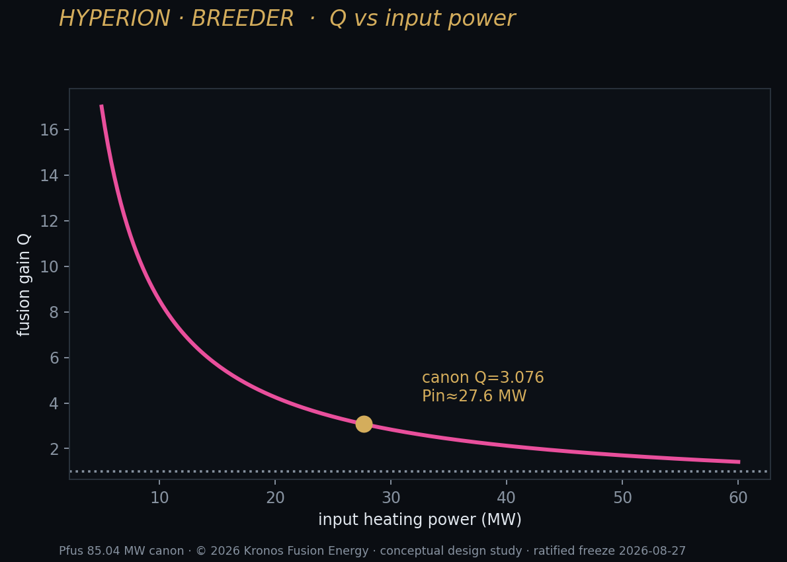
Start with the word everyone uses and almost no one defines the same way twice: gain. Its symbol is Q, and in its cleanest form it is a ratio of two powers.
**Q = P_fusion / P_heating**
That is it. The fusion power the plasma produces, divided by the heating power you have to pour in to keep it hot. When Q = 1, the plasma is giving back exactly as much energy as you are spending to sustain it. That point has a name — break-even — and it is one of the most oversold milestones in all of science, a ribbon-cutting mistaken for a finish line.
Here is why. Break-even is a statement about the plasma, not about the plant. The plasma does not run itself. It sits inside a machine full of magnets that must be cooled, pumps that must move fuel and exhaust, cryogenics, control electronics, and a conversion system that turns heat into electricity at some efficiency well below one hundred percent. Every one of those systems draws power, and that recirculating draw is subtracted before a single electron reaches the grid. So the number a customer actually cares about is not the plasma gain but the engineering gain:
Break-even is a laboratory result. It changes the physics conversation and nothing about the price of your electricity.
To distinguish them, physicists write Q_sci for the scientific, plasma-only gain in the equation above, and Q_eng for the engineering gain — net electricity out over total electricity in, across the whole plant. The gap between the two is not a rounding error; it is a chasm, and it opens up in stages. First, the heating systems themselves are inefficient: to deposit one megawatt of power in the plasma you may draw two or three from the wall. Then the thermal cycle claws back only a third to a half of the fusion heat as electricity. Then the magnets, pumps, and cryoplant take their cut off the top, running whether the plasma is burning or not. Stack those factors and a plasma sitting exactly at Q_sci = 1 corresponds to a plant at Q_eng far below 1 — a machine that consumes several times more grid power than it returns. Break-even, in other words, is a plant that is deeply in the red.
This is the trap the field's press releases keep falling into. "We reached break-even" sounds like the finish line. It is closer to the starting gun. And it is why the honest target has to be so much larger than one. Recall the first of this book's three forties: Q40, a fortyfold return. That number is large precisely because it has to swallow every one of those recirculating losses — the inefficient heating, the mediocre thermal cycle, the parasitic house load — and still leave a plant that sells power for less than it costs to make. Somewhere around a fortyfold plasma gain, the arithmetic of a plant finally closes. Q_sci is the physics quantity you solve for on paper; Q_eng is the one the grid pays for; and Q40 is the specific value of the first that finally drags the second across zero and into profit. Three different numbers, three different jobs. Confusing them is how the field has oversold itself for two generations.
Now hold two facts next to each other, because their tension is the drama of this entire chapter. The highest gain any fusion device has been driven to, in the design's careful accounting, remains modest — of order Q ≈ 0.7. The field has walked right up to break-even and never once stepped across it. And yet the design I am about to show you closes at Q_sci ≈ 3.076 — comfortably past break-even, several times over. How can a paper claim more than three when the best hardware on the planet still sits below one? Because the paper is not hardware. It is a solved operating point, carried openly as a design-point target, with every assumption named. That gap between 0.7 demonstrated and 3.076 solved is exactly the gap between this chapter and the day, later in the timeline, when a real centrepost carries real current. I will not paper over it. I will point straight at it, and keep pointing.
The reaction, and how its energy is split
Before we get to the bar the plasma has to clear, it is worth being precise about the reaction itself, because the way its energy divides is the hinge on which the entire two-machine strategy turns. Everything in this book — which machine breeds fuel and which one sells power, why one runs a ferocious magnet and the other a gentler one — follows from the accounting of a few million electron-volts. Get the bookkeeping of a single fusion event right and the whole architecture of the enterprise falls out of it.
The near-term breeder burns deuterium and tritium, and the reaction is the most generous in the accessible range:
D + T → ⁴He (3.52 MeV) + n (14.06 MeV)
Seventeen and a half million electron-volts per event, and — this is the part that matters — it does not come out as one lump. Roughly a fifth of it, 3.52 MeV, rides on the helium nucleus, which carries electric charge and is therefore held by the magnetic field, depositing its energy back into the plasma and helping to keep it hot. The other four-fifths, 14.06 MeV, rides on the neutron, which carries no charge, ignores the magnetic field entirely, and streams straight out of the plasma into whatever you have placed around it. For a power plant that neutron is a problem — it damages materials and its energy must be caught as heat. For a breeder it is the entire point: those 14 MeV neutrons are the tool that transmutes lithium into tritium and the industrial flux you sell for materials qualification. The breeder is built to harvest exactly the part of the reaction a power plant wishes it could avoid. One machine's waste is the other machine's product — the same insight, monetized.
Deuterium also fuses with itself, and here the split is more intricate, because the deuterium–deuterium reaction runs down two branches of almost equal probability:
D + D → ³He (0.82 MeV) + n (2.45 MeV) D + D → T (1.01 MeV) + p (3.02 MeV)
The first branch throws off a 2.45 MeV neutron and leaves a helium-3 nucleus recoiling with 0.82 MeV; the second stays entirely charged, sharing 4.03 MeV between a tritium nucleus and a proton. In the design's careful accounting the neutron branch takes a profile-weighted fraction of 0.5306 — not the round one-half that circulated in the older literature, a small correction with real consequences for how much of the reaction's energy stays behind to heat the plasma. This D–D side reaction is not a nuisance to be suppressed; in the breeder it is a second, independent source of helium-3, produced inside the plasma itself rather than in the blanket. I will return to that when we count the machine's three products.
The rate at which any of this happens, per unit volume, is the reactivity law from earlier in this chapter made specific:
**P_fusion = n₁ · n₂ · ⟨σv⟩ · E_fusion**
The fusion power density is the product of the two reactant densities, the reactivity ⟨σv⟩ at the operating temperature, and the energy per reaction. Read it and the design pressure becomes obvious: power scales with the square of density (through n₁·n₂), which is why the machine is driven so hard toward high density and therefore high pressure — and why, as the next sections show, the whole design turns on how much pressure a magnetic field can be made to hold. Squeeze harder, and the reward grows as the square of the squeeze. That single fact will pull the entire design toward the strongest magnet it can honestly build.
The triple product: the bar that has to be cleared
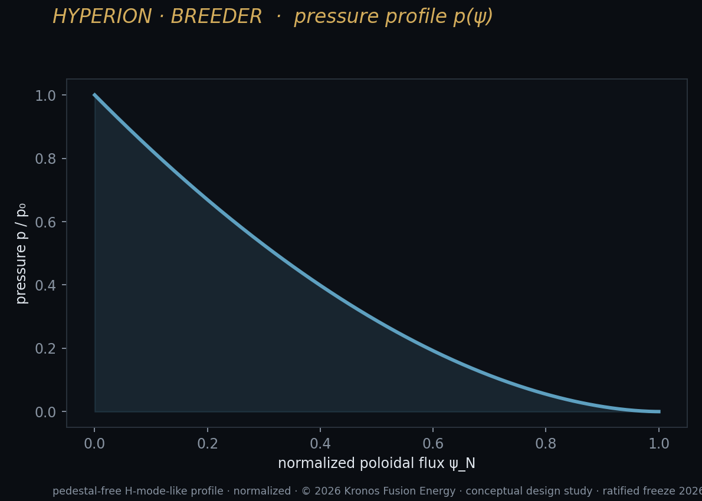
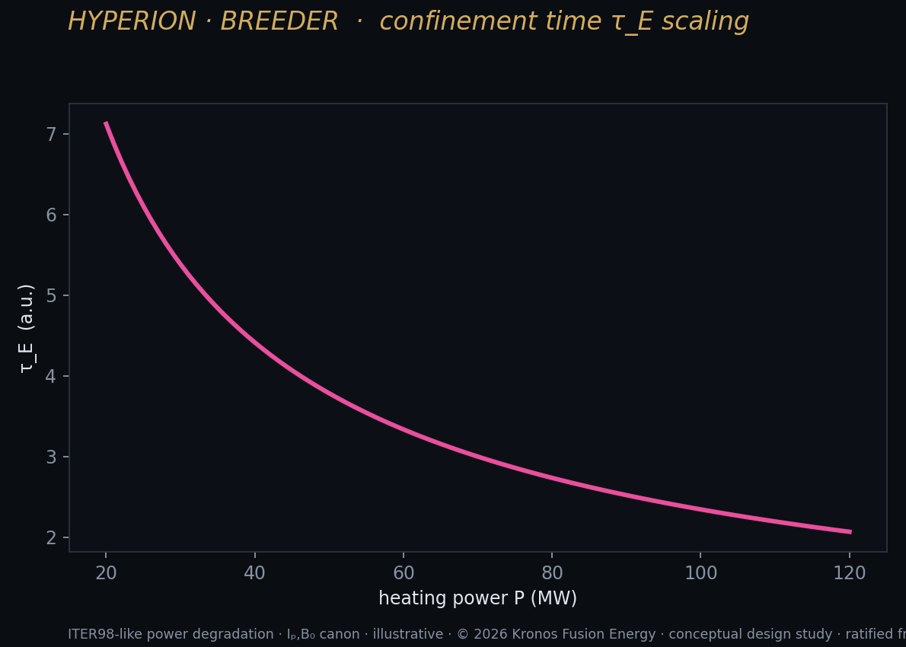
Why is gain so hard to get? Because you cannot buy it with any single quantity, and the universe is uncommonly strict about this. You cannot simply make the plasma hotter, or denser, or hold it longer, and expect fusion to follow. You need all three at once, and the physics multiplies them together into one merciless figure of merit — the fusion triple product, the modern form of a criterion first written down in the 1950s, the Lawson criterion.
n · T · τ_E ≳ 3 × 10²¹ keV · s · m⁻³ (for a D–T burn)
Read it slowly, because every symbol is a different kind of difficulty, and each one is a separate lever the designer has to pull — while the other two fight back.
The first lever is n, the density — how many fuel nuclei you have packed into each cubic metre. More nuclei means more collisions means more fusion, and the reaction rate climbs with the square of density, so this lever is powerful. But you cannot simply crank it. A magnetically confined plasma pushes outward with a pressure set by its density and temperature together, and the magnetic field can only push back so hard before the plasma squirms free. Density is not free; it is rationed by pressure, and pressure is rationed by field. Hold that thought — it is the whole reason this machine runs such a strong magnet.
The second lever is T, the temperature — how fast the nuclei are moving. For fusion this means tens of thousands of times hotter than the core of the Sun, because we cannot cheat with the Sun's crushing gravity and must make up for it with sheer speed. The design point runs the ion temperature up into the hundred-kilo-electron-volt range, past a hundred million degrees. And here is the first hint of a trap that the rest of this chapter is built around: temperature is not a lever you can lean on without limit. Past a certain point, pushing the plasma hotter makes it radiate its own energy away faster than the extra reactions can replace it. There is a ceiling on this lever, and I will come back to exactly where it sits.
The third lever is τ_E, the energy confinement time, and it is the one that has broken more careers than the other two combined: it is how long the plasma holds onto its heat before that heat leaks away. Not how long the machine runs — how long a given packet of energy stays put before escaping into the wall. For decades the entire game was τ_E: build a bigger, better magnetic bottle, hold the heat longer, watch the triple product climb. That instinct is deep in the field, almost tribal, and — as I will show near the end of this chapter — it is precisely the instinct that fails you once radiation enters the picture. Confinement holds particles. It does not hold light.
The cruelty of the triple product is that it is a product. Winning on temperature does you no good if your confinement is poor; the energy you added just leaks out faster. Doubling your density is wasted if it forces you to run cooler to stay under the pressure limit. You must clear the whole bar, in all three variables simultaneously, and the bar sits at roughly three followed by twenty-one zeros in the right units. That single inequality is why fusion took seventy years and not seven.
But the product is also, usefully, a menu — and this is where the story turns from tragedy to strategy. Because the three quantities multiply, you are allowed to trade among them. A machine that runs at very high density and field can clear the bar at a smaller size than one that must rely on brute confinement time — it substitutes pressure for scale. That trade — buy the triple product with field and geometry rather than with sheer size — is the entire design philosophy of the machine in this chapter. It is why the flagship international devices are the size of buildings and the machine I am about to describe is barely more than a metre across. They chose to win on τ_E through scale. This one chooses to win on n·T through field, and to fix the geometry so that confinement survives at a size no one thought was possible. Same bar, radically different route up the cliff.
The number, and the machine that reaches it
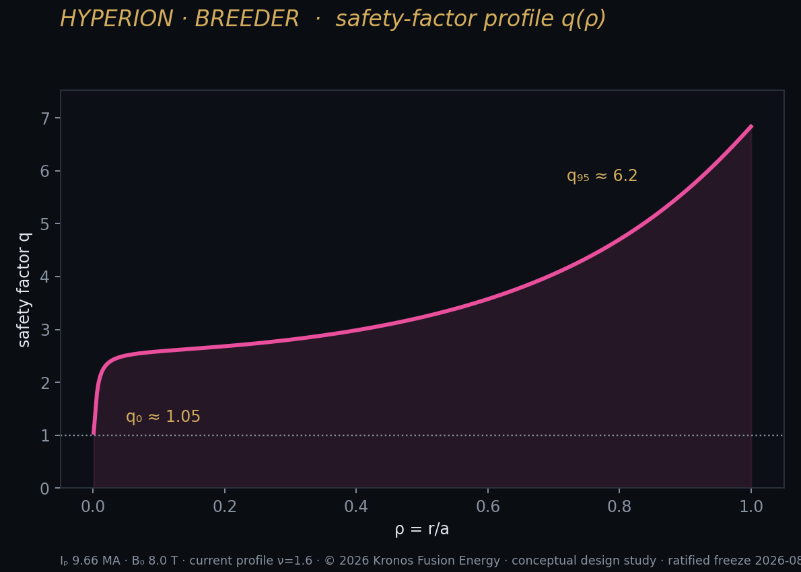
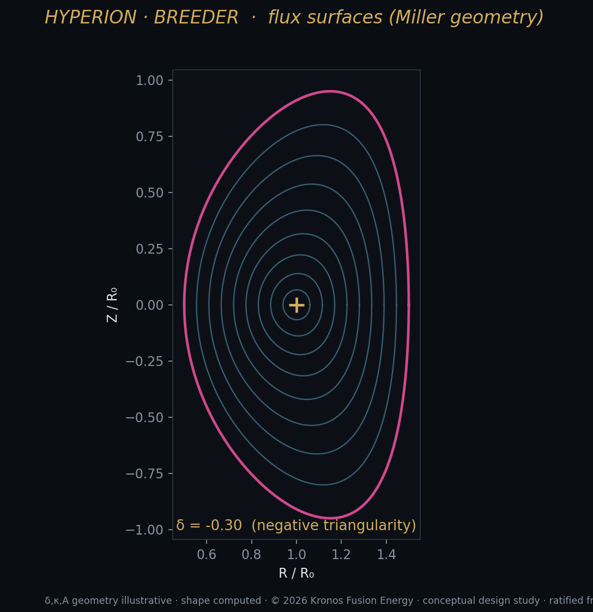
Here is the design basis, in public, in full — the receipts behind the wonder. The breeder — Hyperion, a compact spherical tokamak — closes at a frozen operating point (the engineers call it config 22021) with these values:
| Quantity | Value | What it is |
|---|---|---|
| Q_sci | ≈ 3.076 | plasma gain (solved, not demonstrated) |
| P_fusion | 85.04 MW | fusion power at the design point |
| I_p | 9.66 MA | plasma current in the design configuration |
| B₀ | 8.0 T | on-axis field on the REBCO magnets |
| δ | −0.30 | triangularity — negative, deliberately |
| TBR (lever) | 1.03–1.20 | breeding lever: literal recipe → solid-Be layer; tritium-marginal by design |
| R₀ | ≈ 1.2 m | major radius — a genuinely small machine |
That operating point did not come from a single lucky guess, and this is the part I most want you to feel. Picture the search as a great winnowing. Twenty-five thousand two hundred candidate machines go in at the top — every plausible combination of size, field, aspect ratio, elongation, temperature, and density — and each is put to a single merciless question: does it meet the national fuel duty without breaking a wall limit or a current-drive limit? Watch the field thin. Most fail on the first cut, unable to breed enough. More fail on the second, asking for a field no conductor survives. By the time the sieve stops shaking, the tens of thousands have collapsed to a few hundred, and then to 213 machines that close on deuterium–tritium and 71 on pure deuterium. One point in that surviving population — config 22021 — is the machine this book is about, chosen not because it dazzled anyone but because it was the smallest thing left standing when every easy answer had been disqualified.
When I say the design is "frozen," I mean exactly that: the inputs are written down in a declared-parameter table, the scan is reproducible, and the winning configuration is fixed so that anyone can find it in the same haystack. This is the opposite of a hero shot. It is a census — the machine chosen not because it dazzled a reviewer but because it survived twenty-five thousand attempts to disqualify it.
Three point zero seven six. That is the load-bearing number of the whole breeder program, and I want to be precise about what it does and does not claim. It is well past break-even, which means the physics of gain — the hard part, the part that defeated the field for seventy years — is solved for this machine at this point. It is emphatically not Q40, and it is not trying to be. The breeder is not a power plant. It is a foundry: it burns deuterium and tritium not to sell electricity but to make materials — tritium to fuel the next machines, helium-3 as a strategic commodity, and a flux of 14-MeV neutrons for advanced materials and isotopes. I said it plainly in the last chapter and I will say it again here, because it is the kind of fact the field has trained itself to hide: the breeder — for all the 85.04 megawatts of fusion power it makes at the design point — is net-negative on electricity, roughly minus seventy-nine megawatts electrical. That is not a flaw in the design. It is the design. A breeder needs fusion gain, not net electricity — and gain of 3.076 is more than its mission requires. The fortyfold return lives with the burner, later, and is a different machine's story.
There is a second choice buried in that table worth dwelling on, because it shows how disciplined the design is about its own goals. On paper, pure deuterium fuel would make more tritium per unit of fusion energy — nearly twelve times more of the raw product. So why does the machine burn deuterium–tritium instead? Because the binding constraint here is not tritium-per-joule; it is plasma current.
The reason is structural, and it is worth stating as a chain, because each link is forced. A tokamak run at a fixed normalised pressure — the ratio physicists call β, plasma pressure over magnetic pressure — is pressure-limited: there is a hard cap on the n·T it can hold. To hit a given fusion rate under that cap, you need a certain plasma current, and the fuel's reactivity sets how much:
**required I_p ∝ 1 / ⟨σv⟩ → I_p(D–T) ≈ I_p(D–D) / 19**
Deuterium–tritium reacts roughly nineteen times more readily than deuterium alone at these temperatures, and that higher reactivity lets the machine meet its fuel duty at 9.66 MA at the frozen design point — a current a third the size of the international flagship's — where the closest pure-deuterium configuration in the scan demands 15.5 MA, a current larger than the flagship's. That is the whole game: the current a tokamak's centrepost can carry is a wall the designer cannot move, so the design picks the fuel that lets it stay well below the wall. It does not pretend one fuel is universally better. It picks the fuel that eases the constraint that actually binds. That is the texture of an honest design point: not "we chose the best fuel," but "we chose the fuel that fits the one wall we could not move."
What makes 3.076 reachable in a machine barely more than a metre across, when the international flagships are the size of buildings? Two choices, both of which look strange until you see the physics they are fighting. One is the shape of the plasma. The other is the strength of the field. Take them in turn.
Three products from one machine
I keep calling the breeder a foundry rather than a power plant, and it is worth slowing down on what, exactly, it forges — because this is where the design stops being an abstract exercise in gain and becomes an answer to a specific national vulnerability. This machine does not wait for the last, hardest problem to be solved before it earns its keep. It has products the day it lights.
The machine makes three things at once, and none of them is electricity. The first is tritium, the heavy hydrogen that fuels the next machines. Tritium is scarce and getting scarcer: it does not occur in nature in useful quantities, it decays at about 5.5 percent every year — a stockpile left alone loses a twentieth of itself annually — and the national supply has been sustained from a single ageing source rather than by adding new capacity. A machine that can manufacture tritium from lithium, on the ground, on demand, is therefore of strategic value entirely apart from whether it ever sells a watt. It turns a dwindling stockpile into a renewable one.
The second product is helium-3, the isotope the burner in the later chapters is built to consume, and a strategic commodity in its own right — prized for neutron detection, for reaching temperatures a whisker above absolute zero, and for a form of medical lung imaging. A national reserve of it stopped being auctioned back in 2009, and demand has outrun supply ever since. Here the breeder does something quietly elegant: it produces helium-3 independently of the blanket, partly as the direct product of that deuterium–deuterium side branch inside the plasma, and partly as the daughter of tritium's own decay, banked over time. In the design's accounting the machine yields on the order of two kilograms of helium-3 a year as a co-product it was going to make anyway — the same reaction that heats the plasma quietly mints a substance the modern world cannot buy at any reasonable price.
The third product is the one a power plant spends fortunes trying to avoid: a flux of 14 MeV neutrons. Nowhere on Earth is there enough of this exact neutron spectrum to properly test the materials that future fusion plants will be built from, and so the breeder's neutron flux is itself a service — a materials-qualification facility that happens to also make fuel. The very radiation that other designs armor themselves against becomes, here, a product line.
This is the strategic logic of building the foundry first, and it is worth making explicit, because it is the hinge of the whole staged plan. A machine that must sell electricity has to clear the fortyfold engineering bar before it earns a cent — it has no product until the very last, hardest problem is solved. A machine that sells materials has a product the moment it runs, at a gain its physics already reaches, because tritium, helium-3, and a 14 MeV neutron flux are valuable whether or not the plant ever closes its electrical loop. The breeder is therefore the near-term business precisely because it is net-negative on power. It asks the physics for the part that is already solved — gain — and asks nothing of the part that is not yet: net electricity. The burner, and the fortyfold return, come later, standing on fuel this machine will already have made. We do not bet the enterprise on the hardest problem first. We solve the solvable one, sell its output, and let it pay for the climb.
Making tritium, though, is not free, and the honesty of the design shows in how it accounts for the balance. The relevant figure of merit is the tritium breeding ratio:
**TBR = (tritium bred in the blanket) / (tritium burned in the plasma)**
For the machine to replace the fuel it burns, the TBR must exceed one — and here I owe you the frozen truth rather than the hopeful one, because this is the number a hopeful engineer most wants to round up. Bred tritium is not a surplus headline in this design; it is a lever. On the frozen recipe — the literal blanket, with beryllium packed at 9.6 to 11.8 percent by volume — the Monte-Carlo neutron transport on evaluated nuclear data (OpenMC on ENDF/B-VIII.0, gate BR-L2-A7) yields a breeding ratio of 1.03 to 1.06: above one, and deliberately not far above it. Pull the same lever harder — a dedicated five-centimetre solid-beryllium layer — and the identical calculation reaches 1.18 to 1.20. And the lever has a ceiling worth naming: the advanced blanket — the best solid-beryllium reference the same code family supports — reaches 1.42 (gate BR-L2-A7u). The surplus arithmetic is plain: at 85 MW the plasma burns about 4.76 kilograms of tritium per full-power year, so the surplus is (TBR − 1) × 4.76 — roughly 0.29 kilograms a year on the literal recipe, 0.9 at the solid-beryllium tier, and ~2.0 at the advanced ceiling. That ladder, 1.03 to 1.42, is the honest shape of the blanket: a machine that is tritium-marginal by design, holding its fuel loop just above replacement and treating every point of breeding beyond that as a design choice with a cost, not a boast. The old habit of quoting a single triumphant breeding number is exactly the habit this program exists to break.
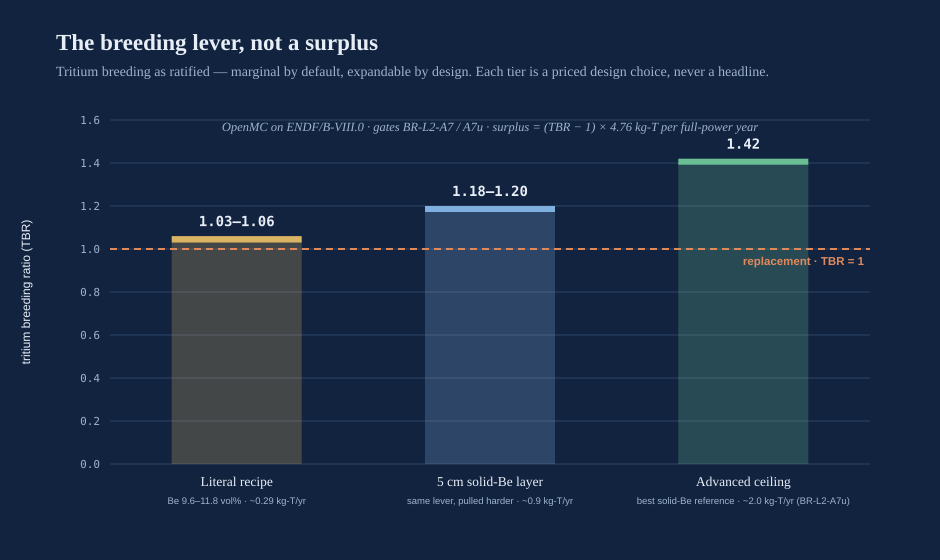
There is one more piece of accounting the paper insists on, and it is the kind of detail that separates a design from a brochure. Helium-3 is fragile in a neutron flux — a neutron can strike it and destroy it, turning it back into tritium and a proton. If that loss were large it would quietly gut the helium-3 yield. The design tracks it explicitly and finds that, on the staged-extraction path, the destructive channel removes only about 0.18 parts per million of the helium-3. And the equilibrium tritium inventory the machine must hold at any one time — the number that governs whether it can be licensed at all — comes to about 6.2 kilograms, comfortably inside existing civil precedent for handling the isotope. These are not glamorous numbers. They are the numbers a regulator and a safety case actually turn on, and the design carries them in the open, because a machine that cannot be licensed is a machine that cannot be built, no matter how beautiful its physics.
Why the plasma is dented inward: negative triangularity
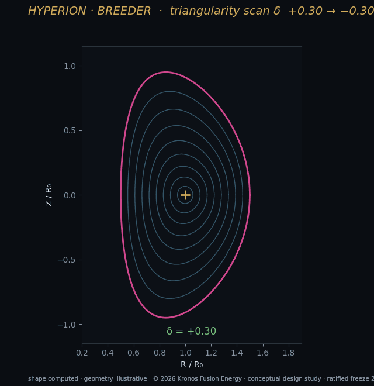
Look at a cross-section of a conventional tokamak plasma and you see a shape like a capital D — the straight back against the machine's central column, the bulge facing out. The "triangularity" measures which way that D leans. Positive triangularity, the field's default for decades, points the plasma's corners one way; negative triangularity points them the other, so the plasma looks like a backward D, dented inward on the outboard side. Hyperion runs at δ = −0.30. That minus sign is the configuration's defining geometric choice, and it is there to kill a specific monster — one that has haunted high-performance tokamaks since they first learned to confine well.
The monster is the edge-localised mode, or ELM. A high-performance tokamak edge builds up a steep pressure pedestal — a cliff of pressure right at the plasma's boundary that is the price of good confinement — and that pedestal periodically relaxes in a violent burst. An ELM flings five to twenty percent of the pedestal's energy at the wall in under a millisecond. Put a number on it: a single uncontrolled Type-I ELM can dump more heat onto a tungsten surface, per event, than the material can survive — the transient load blows past the roughly twenty megawatts per square metre that tungsten can take. And it does this over and over, every discharge, thousands of times in a campaign. It is a controlled explosion the machine is forced to endure again and again. Machines spend enormous ingenuity mitigating ELMs: pacing them with pellets, shrinking them with magnetic perturbations, spreading them out in time. It is a whole subfield devoted to managing a recurring detonation inside the machine.
Negative triangularity does something better, and this is the kind of move that makes an engineer smile. It does not manage the detonation; it removes the phenomenon. The dented-inward shape suppresses the edge instability that builds the dangerous pedestal in the first place, so the pedestal never steepens to the point of collapse. This is not a hope — it is demonstrated. Experiments on a major national tokamak sustained a completely ELM-free edge at strong negative triangularity across an entire campaign — no ELM in any discharge, at an average triangularity even more strongly negative than Hyperion's design value. You do not have to schedule, pace, or survive a monster you have arranged never to be born. The best defense against an explosion is a geometry in which it cannot form.
Nothing in fusion is free, and I will name the price precisely, because the paper does. Negative triangularity trades a violent, transient problem — the ELM spike — for a steady one: a harder, continuous heat load on the divertor, the component at the bottom of the machine that catches the plasma's exhaust. Here the numbers get demanding. The exhaust arrives in a startlingly thin layer — a scrape-off width of about two-tenths of a millimetre in the design's baseline estimate — and that concentrates the parallel heat flux to something like fourteen gigawatts per square metre, roughly fourteen times the international flagship's. To hold the actual target surface below what tungsten tolerates, you have to radiate away the great majority of that power before it lands — a radiated fraction near ninety percent at the thinnest width estimate.
I want to be honest about the shape of that ninety-percent figure, because it is exactly the kind of number a press release would hide behind a decimal point. It rests on extrapolating a heat-flux-width scaling a factor of two-and-a-half beyond the range in which it was actually fitted. If the real scrape-off layer is broader than the pessimistic estimate — half a millimetre to a millimetre, still narrow — the required radiated fraction falls to somewhere between fifty and seventy-five percent, and that is squarely inside detached-divertor operation that has already been demonstrated on existing machines. So the exhaust is open at this field, not adverse: a hard engineering requirement contingent on a width, not a physics verdict against the design. The difference between those two things is the difference between a problem and a wall, and this is a problem.
And there is a subtle sting in the tail that ties this section back to the last, and forward to the next. Sustaining a high radiated fraction means seeding the plasma edge with impurities — injecting a trace of nitrogen, neon, or argon whose job is to glow the power away before it reaches the target. But impurities are not free either. They raise the plasma's effective charge, they dilute the fuel, and they nudge the machine toward the radiation ceiling I am about to describe. Seeding for argon can push the effective charge from around 1.16 toward 1.66, and that dilution shaves the tritium duty down measurably. The divertor's price, in other words, is not paid only in cooling hardware; part of it is paid in the plasma's own radiation budget. This is the pattern you will see everywhere in this work: not "we solved everything," but "here is precisely which problem we chose to have instead, and exactly what it costs us elsewhere." An honest design is a ledger, not a highlight reel.
Why the field is so strong: high-temperature superconductors
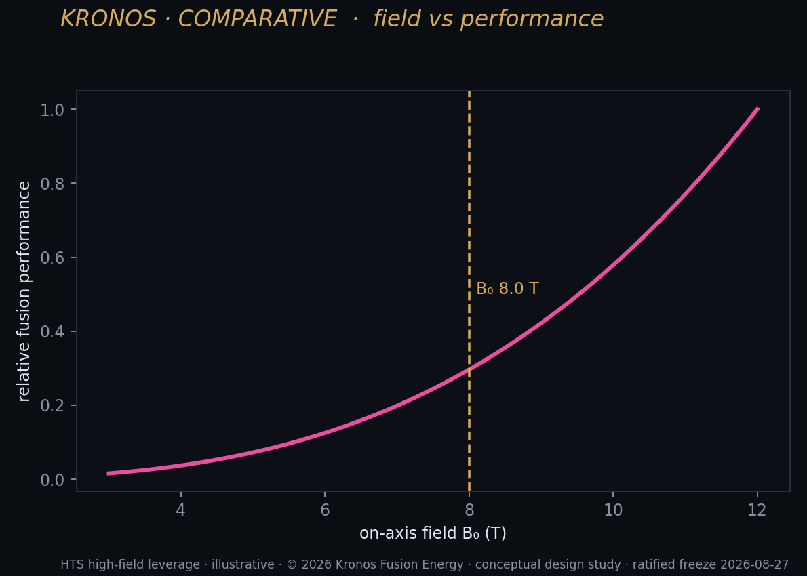
The second choice is field. Hyperion's magnets are wound from REBCO — a rare-earth barium copper oxide high-temperature superconductor — and they give 8 tesla on the plasma axis, with a substantially higher working field at the conductor. To feel how strong that is: it is hundreds of thousands of times Earth's magnetic field, held perfectly steady, in a coil you could stand next to. This is a material that did not exist in usable form when I was a student, and it is the quiet reason a compact machine is now possible at all.
Field is the lever that lets a small machine clear the triple product, and the reason is a single, unforgiving, gorgeous scaling. A tokamak at a fixed pressure ratio — the physicists call the ratio beta, plasma pressure divided by magnetic pressure — is pressure-limited. And magnetic pressure grows with the square of the field. So the plasma pressure you are allowed to hold scales the same way:
**p_max ∝ β · B²**
Read what that little equation is telling you, because it is the whole reason this machine can be small. Double the magnetic field and, all else equal, you can hold four times the plasma pressure — four times the n·T you were rationing back at the triple product. More pressure in the same volume means more fusion reactions in the same volume. High field is how you buy the n·T part of the triple product without building something the size of a stadium. This is the same insight that has powered the recent wave of compact-tokamak efforts, and it rests entirely on REBCO tape having matured, in the last decade, from a laboratory curiosity into a conductor you can actually wind into a magnet and run at these fields. A materials breakthrough became a machine-scale one: shrink the magnet's demand and you shrink the whole reactor around it.
Crucially, the conductor’s working point sits inside the demonstrated REBCO envelope. This is where the design's discipline shows again. The breeder's centrepost is, in the engineers' phrase, "stress-comfortable" — the field it must produce is well within what the conductor and its structure can bear, so its binding limit is not the magnetic force but the neutron lifetime of the coil behind its shield. That is a scheduled-replacement question — how often you swap a consumable centrepost — not a fundamental wall you cannot climb. The far more demanding magnet, the one that pushes the technology to its genuine edge at more than 26 tesla, belongs to the burner and is a later chapter's problem. The breeder deliberately does not ask its magnet to do anything heroic. It asks it only to be strong, and steady, and replaceable — and it saves the heroics for the machine that has to earn them.
So: dent the plasma inward to kill the ELMs, crank the field to buy the pressure, and you get a machine that closes the triple product at Q_sci = 3.076 while remaining small enough to license and site. The radial build tells the whole story in one slice — a thin superconducting centrepost, then shield, then the breeding blanket and the plasma, then blanket and shield and vessel again on the way out.
But there is a third constraint, subtler than either shape or field, and it is the one the design threads most carefully. It is a ceiling you cannot spend your way through — no magnet, no matter how strong, can buy your way past it. It is written into the plasma itself.
The radiation ceiling: the knife-edge the design threads
Here is a fact that surprises almost everyone the first time they meet it, and it is one of the most beautiful and most punishing facts in all of fusion. In a hot plasma, you cannot simply push harder and harder and expect fusion to keep climbing, because the plasma is also a lamp. Every time an electron swerves past an ion it radiates — a loss called bremsstrahlung, German for "braking radiation" — and that radiation streams out of the plasma at the speed of light. The hotter and denser you run, the more the plasma glows away its own energy. Fusion power and radiation loss are locked in a race, and the terms of that race set a hard ceiling on what any deuterium-burning device can do. This is the ceiling I foreshadowed on the temperature lever: it is the reason you cannot just run hotter forever. The furnace fights the lamp, and past a point the lamp wins.
The Kronos papers establish this with a result that is almost unnervingly sharp. Compute the ratio of fusion power to bremsstrahlung power for a pure deuterium plasma, and it peaks at just 1.589, at a temperature around 108 keV — and even that peak assumes a perfectly clean plasma. Not a factor of ten of headroom. Not a factor of two. About sixty percent more fusion than radiation, at the single best temperature, in the best case. Everything real you add to the plasma eats into that thin margin. The dream of a pure, easy, self-igniting burn runs headlong into a number that leaves almost no room to stand.
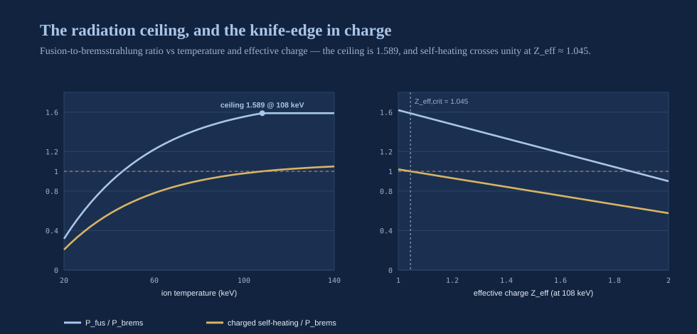
Where does the margin go? Into contamination. The balance depends on the plasma's effective charge — how many heavier ions have crept into the fuel — and it depends on that quantity in a way worth stating exactly:
**P_fusion / P_bremsstrahlung ∝ 1 / (Z_eff + c_ee · t), t = T / mₑc²**
Translated: the ratio falls off with the effective charge Z_eff in a way that is affine — a straight-line-with-offset — not a simple inverse. That distinction is not pedantry; it means two plasmas quoted at the same "impurity level" can radiate quite differently depending on which impurity and at what temperature, so any tolerance stated as a bare number is not reproducible unless the species and the temperature come with it. And there is a critical value: an effective charge of about 1.045 at 108 keV, above which the plasma radiates more than its own reactions can heat it, and gain falls apart. That is a knife-edge measured in the second decimal place. Push the impurity level a few percent past 1.045 — exactly the kind of nudge that edge seeding for the divertor threatens to deliver — and the machine crosses from a plasma that ignites to one that merely glows. The margin between triumph and a very expensive light bulb is that thin.
The sharpness gets sharper still when you look at how the number was pinned down, and here is a detail I find genuinely thrilling in the way a good detective story is thrilling. It turns on a single misplaced symbol. Somewhere in the radiation calculation a number refused to reconcile — two supposedly authoritative sources for the same physical quantity, disagreeing by a whisker, in a place where a whisker decides whether a fuel works. Chase that whisker down, term by term, and it resolves to something almost too tidy to believe: one factor of the square root of two, dropped a generation ago and copied forward ever since. There is a coefficient in that bremsstrahlung formula — the electron–electron term, c_ee — whose exact analytic value is a specific combination of π and √2 that works out to 2.120022. A version that has circulated widely in the literature for years quietly dropped a √2 and used 1.499 instead. The two differ by exactly √2, to nine significant figures. When you correct it, the radiation balance moves — and it moves the wrong way, tightening the margin, not loosening it. And when four independent evaluations of the pure-deuterium self-heating-to-radiation balance were run, they landed between 0.984 and 1.121 — straddling unity — and every physical effect the calculation neglected (cyclotron radiation, transport, residual impurities) pushes the number strictly down. Pure deuterium, in other words, sits exactly on the edge, and every honest correction nudges it toward the wrong side. The universe, it turns out, does not want the easy fuel to be easy.
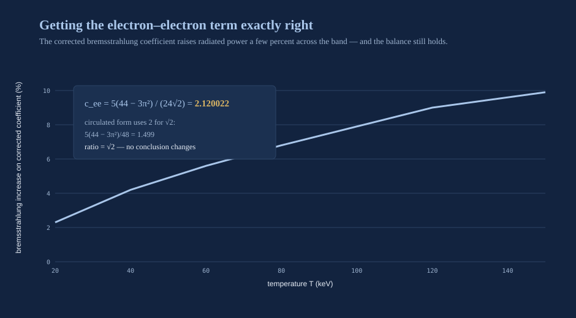
There is a deeper consequence, and it is the most counter-intuitive result in the whole breeder paper, so let me spell it out carefully, because it overturns an instinct the field has carried for fifty years. It falls straight out of writing the plasma's power balance honestly. In steady state, the external heating you must supply is whatever it takes to replace everything leaking out, minus whatever the reaction gives back for free:
**P_aux = W / τ_E + P_radiation − f_dep · P_charged**
Read the terms one at a time. W / τ_E is the transport loss — the plasma's stored energy W draining away over the confinement time τ_E, the term the whole field spent fifty years trying to shrink. P_radiation is the light the plasma throws away as bremsstrahlung. And f_dep · P_charged is the gift: the fraction f_dep of the charged fusion products' power that stays trapped and reheats the plasma. External heating only has to make up the difference.
Now push confinement to perfection — let τ_E grow without bound. In fusion we have always been taught that this is pure profit: hold the heat longer, get more gain. That was the whole logic of the τ_E lever, the mountain the field has been climbing since the 1950s. That intuition is wrong once radiation matters, and the power balance shows exactly why. As τ_E → ∞ the transport term W/τ_E vanishes — but the radiation term does not, because photons leave at the speed of light regardless of how good your magnetic bottle is. Confinement holds particles and heat. It does not hold light. So the gain does not run away to infinity. It saturates, and the asymptote is set by what remains when transport is gone:
**Q_∞ = P_fusion / (P_radiation − f_dep · P_charged)**
That equation says the gain approaches a finite asymptote set entirely by the radiation balance — finite whenever radiation exceeds charged-particle self-heating, and infinite (true ignition) only when it does not. Read the denominator: it is the radiation loss minus the fraction of the plasma's own charged-particle power that stays and reheats it. If radiation wins that subtraction, no amount of confinement can close the gap, and the gain tops out at a number you can compute. Improving confinement in a radiating plasma buys you diminishing returns toward a ceiling, not a runaway to ignition. The dream of "just build a better bottle" hits a wall made of light.

Confinement holds heat, not light. Push the bottle to perfection and the gain does not run away — it saturates.
This is why "we just need better confinement" has failed as a slogan for the pure aneutronic dreams, and it is why the breeder is designed as a driven, sub-ignition machine rather than a self-igniting one. A driven plasma at demonstrated confinement — one you keep hot with external heating, rather than one you hope will light itself — is a materially easier target than ignition. And, as the last chapter argued, a driven sub-breakeven plasma is exactly what a breeder needs, because a breeder is measured in kilograms of fuel produced, not megawatts sold. The design does not try to leap the radiation ceiling. It threads underneath it, on purpose, and asks its confinement only for what has already been shown to be achievable. That is not a retreat. It is knowing precisely where the ceiling is, and building tall enough to be useful without ever pretending it is not there.
I dwell on the ceiling because it is the honest counterweight to every number in this chapter. The reason I can tell you 3.076 is real is that it was computed inside these constraints, not in spite of them. The knife-edge is not a footnote the design survived; it is the wall the design was drawn against. Any number that ignored it would be worthless, and would deserve to be.
A caution the later chapters depend on: directed power is not charged power
There is one more general result in the breeder paper that belongs here, even though its full weight lands later, on the burner. It is a distinction that sounds pedantic and is in fact the difference between an honest efficiency and a dishonest one — and it is the trap that has swallowed more than one celebrated "clean fuel."
When you read that a fusion fuel is "aneutronic" — that its energy comes out on charged particles rather than neutrons — the implication is usually that you can therefore convert that energy directly to electricity at high efficiency, catching the charged particles the way a battery catches current, skipping the wasteful boil-water-spin-a-turbine cycle. That is true only under a condition almost no one states out loud: the charged particles have to come out in discrete energy lines, not a smeared continuum.
Here is why, and it comes down to the shape of the reaction's final state — a piece of pure conservation-law bookkeeping. A two-body reaction — one that ends in exactly two products, as deuterium and helium-3 do — must, by conservation of energy and momentum, hand each product a single sharp energy. Two clean lines, which a direct-conversion machine can be tuned to catch efficiently. But a reaction that ends in three products shares its energy among them continuously, producing a broad smear of energies with no sharp lines at all. The most-hyped "clean" fuel of all, proton–boron, ends in three helium nuclei sharing 8.7 MeV as a continuum:
p + ¹¹B → 3 ⁴He (8.7 MeV, shared as a continuum)
Its charged fraction is 1.000 — every scrap of its energy is charged, which sounds ideal — but its directable fraction, the part you can actually match to an efficient electrostatic converter, is effectively zero, because you cannot tune a converter to a smear. Any efficiency figure quoted across two fuels of different final-state multiplicity, as though "charged" and "convertible" were the same word, is wrong on its face. This is exactly the trap the burner chapter has to walk around, and it is why that machine is built on a two-body fuel with two clean lines rather than on the fuel with the best press. The prettiest slogan and the workable physics are, once again, not the same thing.
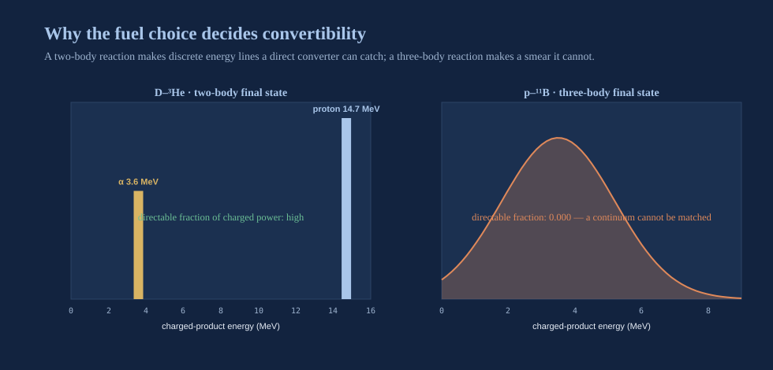
Solved, published, reproducible
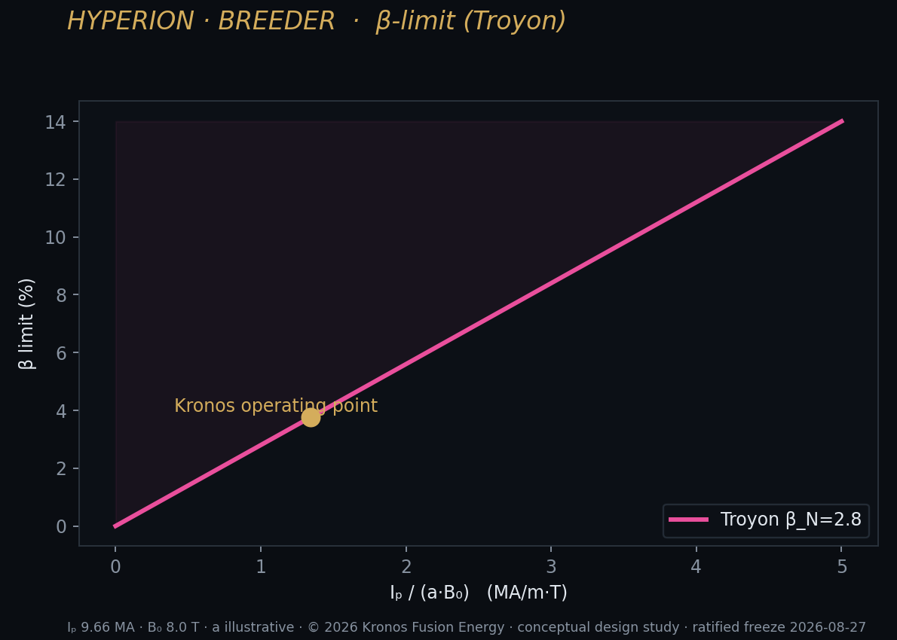
Now the part that separates this book from a press release, and separates this century of fusion from the last. It is not enough to have a number. Anyone can have a number. The field is littered with them. The claim I am making is that the number is checkable — and I have arranged for you, or more precisely for any physicist you trust, to check it. I did not ask you to believe me. I built the machine that lets you refuse to.
The full design is published open-access as part of a five-paper Kronos 2026 design series. The breeder paper's headline quantities are not asserted; they are regenerable by named scripts that read their inputs from a single declared-parameter table, so that changing an assumption changes the answer in front of you. This is what "frozen operating point" buys the reader: the 25,200-configuration scan that produced config 22021 can be rerun; the 213 deuterium–tritium closings and 71 pure-deuterium closings can be recounted; the blanket-breeding numbers can be regenerated from the deposited neutronics data on both the demonstrated and the target blanket. Nothing central is a figure you have to take on faith.
And the methods behind those numbers are the field's own, not house inventions dressed up to flatter the result. The confinement and current-drive estimates rest on the standard international confinement scaling the whole field uses as its baseline, with a standard bootstrap-current model layered on top; the driven fraction is then reported at the operating point rather than assumed. The blanket transport is not an assumed spectral shape but a Monte-Carlo neutron-transport calculation run on retrieved, evaluated nuclear-data tapes — the same data libraries the reactor community relies on. The minimum plasma current is not adopted from a summary table; it is read straight off the raw scan and then reproduced by an entirely independent aspect-ratio sweep of more than two million evaluations, which agrees to fourteen decimal places. When a number in this design can be reached by two independent roads, the paper walks both of them and reports where they meet. That is the texture of a result built to be attacked — and a result built to be attacked is the only kind worth trusting.
The simulation code and the physics validation data are archived on Zenodo — the CERN-hosted open repository that mints a permanent digital object identifier for a dataset — under doi:10.5281/zenodo.21746157, with companion deposits for the burner, the magnet, the direct-energy-conversion system, and the AI control layer, so the whole five-paper record has a permanent, citable home. The reduced-order physics engines can even be run in a browser, no installation required, so that "check the work" does not require a supercomputer or a compiler — it requires a web page. This is what "reproducible" means concretely: not "trust me," but "here is the code, here is the data, here is the DOI, rerun it and try to break it." When I wrote in the first chapter that we stopped arguing and started closing, this is the closing. The argument is now a repository.
We stopped promising gain. We deposited it, with a DOI, and invited the world to try to break it.
And now the gate — stated as plainly as I know how, because the temptation to blur it is exactly the temptation this book exists to resist. No hardware has been built. The gain is solved and published and deposited; it is a design-point target, not a demonstrated result. The best any device has reached remains around Q ≈ 0.7, and the honest path from there to 3.076 runs through steel, not equations. The load-bearing quantity — the gain itself — is a target, and so are the confinement multiplier, the current-drive fraction, and the plasma's ash fraction; each is stated with its evidence class rather than dressed up as a measurement. Hardware validation comes with the first machine's operation — first tritium targeted around 2030. And I am retiring, explicitly and permanently, a claim from when I first wrote this that no longer belongs in this book: there is no "net gain in 2027." That date was wrong, or rather it was a different date wearing the wrong label. 2027 is when construction begins — the second quarter, first shovel — not when a plasma produces net gain. I would rather correct my own record in print than let an old, optimistic milestone ride on the credibility of a new, honest one.
That is the whole shape of the claim, and I will stand on it. The physics of gain — the part that humbled the field for seventy years, that made "thirty years away" a punchline — is closed on model for this machine, at a stated operating point, inside the radiation ceiling, and published so completely that its central numbers can be regenerated from open code. What remains is not physics. It is engineering, and steel, and time. In the language the paper itself uses: the hard part, the power balance, is solved; what remains is to build it. That is a sentence fusion has never honestly been able to say before. The chapters that follow are about the building — about turning a solved star on paper into a fire that lights a grid.
This chapter's forty. Q40 — the physics. The gain is solved on paper and deposited in the open; the fortyfold return the whole book is built to reach begins as a number you can check, right here.
A Short History of a Long Dream
The most important fusion reactor in human history cleared the horizon this morning, exactly as it has every morning for four and a half billion years, and it will do it again tomorrow whether or not we deserve it. It has never been switched off. It has never been repaired. It powers, directly or at one remove, essentially every living thing that has ever drawn breath on this planet. The sun is a sphere of hydrogen so colossal that gravity accomplishes what no laboratory on Earth can: it crushes the fuel in the core to densities and temperatures at which hydrogen nuclei — particles that despise one another, that spend their existence flinging themselves apart — are pressed so close, so often, that they surrender and fuse. And when they do, a whisper of mass vanishes from the universe and a torrent of energy takes its place, energy that then claws its way outward for a hundred thousand years to reach the surface and crosses ninety-three million miles of hard vacuum to land, eight minutes later, as the warmth on your face. Understand this and you understand the audacity of everything that follows: fusion is not exotic, not a physicist's fantasy, not some fragile trick at the edge of the possible. Fusion is the ordinary business of the cosmos. Every star scattered across the night sky is doing it right now. The entire history I am about to tell you is the history of a single species — one small, clever, stubborn species on one damp rock — resolving to build a star of its own, a captive star it could hold in its hands and put to work, and then telling itself, and everyone who would listen, for seventy years, that it was very nearly done.
The first reactor, and the equation under it
For all but a sliver of human history, no one knew what the sun was. It was a fire, a chariot, a god, a burning coal wheeled across the sky — and the hard-headed physicists of the nineteenth century, who had abandoned the gods and kept the coal, found themselves staring at a genuine crisis. No chemical fire could burn as long as the sun plainly had. Coal would gutter out in a few thousand years. Even gravitational contraction, the cleverest mechanism anyone could propose, gave the sun a lifespan far too short to square with the age the rocks and the fossils insisted upon. The books did not balance. Something enormous was missing from physics itself — and what was missing was simply that the answer had not yet been discovered.
The answer arrived in two revelations early in the twentieth century, and each one rearranged the world. The first was the recognition that mass and energy are not two things but one, the same currency exchangeable at a ferocious rate of exchange — that a pinch of matter, annihilated, unlocks an amount of energy that beggars intuition. The second was the patient, decades-long working-out of what actually transpires in the furnace of a stellar core: light nuclei fusing into heavier ones, and the heavier product weighing a hair less than the ingredients that made it. That vanished sliver of mass is the starlight. When four hydrogen nuclei become one helium nucleus, roughly seven-tenths of one percent of the mass is converted outright into energy. Seven-tenths of one percent. It sounds like a rounding error. It is the reason the sky is not black and the Earth is not a frozen cinder drifting in the dark.
Grasp that, and you grasp the size of the prize. Chemical burning — the coal, the oil, the gas that built the modern world — merely jostles the outermost electrons of atoms and releases the faint energy stored in the bonds between them. Fusion reaches past the electrons entirely and into the nucleus, where the forces binding matter together are millions of times stronger. Kilogram for kilogram, fusing hydrogen liberates on the order of ten million times more energy than burning coal. A thimble of the right fuel holds the energy of tons of anything you can set alight. From the instant the physics was understood, the temptation became irresistible, almost a moral summons: if the sun runs on nothing but physics, and we have the physics, then in principle the fire of the stars is ours to light.
The trouble hides in that phrase — nothing but physics. The sun succeeds because it is unimaginably vast and unimaginably patient. Its core is denser than anything we can fabricate and confined by the sheer crushing weight of a third of a million Earth-masses of hydrogen bearing down from above. And here is the surprise that humbles every newcomer: by the standards of what a power plant needs, the sun is astonishingly feeble. The power density in the solar core is roughly that of a warm compost heap. The sun is not a blowtorch; it is a mountain of embers, making up in sheer titanic volume what it utterly lacks in intensity. We have neither the volume nor the patience nor the third of a million Earths. To perform on a workbench what a star performs across a million kilometers, we cannot copy the sun's recipe — we have to out-do it. We must run far hotter than the core of a star, so that each collision counts for vastly more, and we must find some way to cradle a substance hotter than the heart of the sun without a vessel to hold it, because no material yet forged or ever to be forged can touch such a thing and live.
The mid-century dream
The middle of the twentieth century is when the dream molted from astrophysics into raw engineering ambition. Humanity had, by then, demonstrated fusion in the most terrible manner conceivable — in the hydrogen bomb, where a fission blast serves as the match that ignites a fusion fuel for a few blinding microseconds. That obscene experiment settled one thing beyond dispute: the energy was real, and it was vast beyond reckoning. The question that then seized a whole generation of physicists was whether the same reaction could be domesticated — not detonated all at once, but held, leashed, throttled, and drawn off gently as heat to boil water and spin a turbine, the same humble way we have made electricity since the age of steam.
The optimism of those first years was absolute, and, from where we stand now, almost heartbreakingly innocent. The reasoning ran like this. We understand the reaction. We can calculate the temperature it demands. Confinement is merely an engineering problem, and engineering problems fall, in the end, to determined people armed with budgets. Several nations, flush with the scientific triumph of the war, convinced themselves that practical fusion power was a matter of a few years — a decade, perhaps two at the outside. The word that echoes through the documents of that era, again and again, is soon.
They had misjudged exactly one thing. Not the reaction. The plasma.
To fuse, a gas must be heated until its atoms are torn apart into a churning broth of bare nuclei and liberated electrons: a plasma, the fourth state of matter, and — this is the part that ought to astonish you — the state that more than ninety-nine percent of the visible universe is actually in. Solids, liquids, gases: those are the exotic rarities, the cold curiosities that cling to planets. The universe at large is plasma. But a plasma at fusion temperatures — well over a hundred million degrees, many times hotter than the core of the sun — is no docile fluid you can decant into a bottle. It is a seething, self-tangling, electrically alive medium that conjures its own magnetic fields, breeds instabilities faster than the finest instruments can clock them, and hunts down, with what genuinely feels like malice, every flaw in whatever you build to cage it. The earliest machines held their plasmas for millionths of a second before the whole writhing creature squirmed sideways, kissed the wall, and died. Confinement was not "merely" engineering. It was an entire new branch of physics, and it was savagely, gloriously hard.
The secret decade, and the turn to daylight
There is a chapter of this story that most popular accounts skip, and it deserves its page, because it explains a bad habit the field never entirely broke.
For roughly the first decade of serious effort, controlled fusion was pursued in secret — in several countries at once, behind the very same walls that guarded the making of weapons. The logic felt airtight at the time: the same physics that might one day boil water was, in its violent incarnation, a matter of national survival, and no nation wished to hand a rival a shortcut. So the earliest machines — the pinches, above all, in which a fierce electric current is driven through a column of gas until the gas's own magnetic field crushes it inward — were built and studied under classification, their results whispered rather than published.
The pinch seduced everyone because it is very nearly self-assembling. Drive a large enough current through a plasma and the plasma squeezes itself; confinement appears to come for free, a gift from nature. In the mid-1950s more than one laboratory believed it was seeing neutrons stream from a pinch, and briefly, thrillingly, believed those neutrons were the fingerprint of real fusion. They were not. The neutrons were the offspring of instabilities — the pinched column, it emerged, is violently unstable, kinking and necking like a fire hose thrashing loose on the ground, and that thrashing flung a few particles hard enough to knock out neutrons that had nothing whatsoever to do with a thermal burn. It was the field's first hard lesson in a discipline it would be forced to relearn for decades: a plasma will cheerfully hand you a signal that looks like triumph and means failure, and only a ruthless, unforgiving accounting of where every single particle and every single joule went can tell the imposter from the real thing.
The secrecy ended, and its ending changed everything. By the late 1950s the leading programs concluded, more or less in unison, that the problem was far harder than any of them could crack in isolation, and that the silence was protecting nothing of weapons value anyway. Controlled fusion was declassified and thrown open to the world. Laboratories that had been hiding their disappointments from one another discovered, almost comically, that they had been failing in precisely the same ways for precisely the same reasons — and the pooling of that shared failure was the first genuine acceleration the field had ever known. It is a pattern I have taken to heart and wired deliberately into our own program: our design is published open-access, meant to be re-run and attacked and stress-tested by anyone who cares to try, precisely because the history could not be clearer — fusion moves fastest in daylight, and fools itself fastest in the dark.
The three numbers, and the criterion that governs them
Before the story goes any further, let me recall the single piece of physics that governs everything to come — you met this bar earlier in the book, but the history does not cohere without it held in mind, and once you hold it again the entire hundred-year saga snaps into one clean shape, the way a scatter of iron filings snaps into a pattern the moment you slide a magnet beneath the paper.
You will remember the bargain: fusion is struck with three terms at once. To extract more energy than you pour in, you must hold a plasma that is hot enough, dense enough, and hold it long enough — all three, together, or not at all. Miss on any one and the whole bargain collapses into loss. In the 1950s this was made precise in what we now call the Lawson criterion: a threshold on the combination of density and confinement time required for a fusion plasma to sustain itself. Modern practice folds in the third term and speaks of the triple product — density, times temperature, times the energy confinement time:
$$ n \, T \, \tau_E \;\gtrsim\; \text{a fixed threshold} $$
Read it in plain words, because plain words are what it deserves. n is how tightly you pack the fuel. T is how hot you run it. τ_E is how long the plasma clings to its own heat before that heat bleeds away into the cold. Multiply the three together, and if the product clears a line set by the fuel you have chosen, the reaction begins to pay for itself. Fall short of the line, and you are shoveling in more than you ever get back. That is all fusion energy has ever been, stripped to the bone: a decades-long, generations-long campaign to drive one number — the product of three quarreling quantities — up and over a single fixed line.
This is why the progress was real and yet agonizing beyond words. You could triple the temperature and watch the confinement crumble and end up worse off than you started. You could win on confinement and forfeit density. The three terms are at war with one another; a plasma is a bad-tempered animal that grants you one thing only by snatching away another. The history of fusion machines is, at bottom, the history of geometries and tricks and gambits invented to win all three terms at once — and every era of the field is really an era defined by how, in its moment, it chose to hold the star.
Fusion was never one hard problem. It was three hard problems that refuse to be solved separately, and a plasma that punishes you for trying.
The age of the magnetic bottle
The first and longest of the great eras belongs to magnetic confinement, and its founding insight is one of the most beautiful ideas in all of applied physics. A plasma is made of charged particles, and charged particles are compelled to spiral along magnetic field lines rather than cross them. So while you cannot hold a plasma in a box of matter — no matter survives the touch — you might hold it in a box built of pure magnetism: a cage with no walls and no floor, suspending a substance hotter than the sun in empty vacuum, touching nothing at all. Read that sentence again. We proposed to build a bottle out of force itself.
The earliest magnetic bottles were straight — a tube of magnetic field, pinched hard at each end to reflect particles back toward the middle, a design called a mirror. The idea was clean and the machines were relatively simple, but the ends leaked. Particles traveling nearly straight along the axis slipped out past the magnetic plugs, and the plasma drained away like water from a hose crimped but not sealed. For decades the straight-bottle approach was filed under the road not taken — the promising geometry that could never quite plug its own ends. (I will say it plainly here, because this entire book is built upon it: that verdict was premature. The straight bottle, rebuilt with modern fields and a cunning tandem arrangement, is exactly the shape our burner takes. But I am getting ahead of the history, and the history has earned its telling.)
The obvious cure for a leaking tube is to bend it into a ring, so that there are no ends left to leak from. That gives you the toroidal machines — the doughnuts — and among them one design rose to dominate the entire field for half a century: a doughnut-shaped chamber that marries an externally applied magnetic field to a strong electric current driven through the plasma itself, the two together twisting the field lines into a tight helix that holds the plasma far better than either could alone. This architecture worked. It worked so well that for fifty years it simply was fusion — in the public mind, and in nearly all of the budgets. Machine after machine grew larger, hotter, more exquisitely instrumented; the triple product climbed, decade over decade, faster even than the early ascent of computing power. Records fell like dominoes. Plasmas that once flickered for milliseconds endured for seconds, then minutes. The doughnut taught the human race very nearly everything it knows about how to confine a star.
There was a parallel toroidal idea worth honoring, because it embodies a lesson the field keeps relearning. Instead of driving a current through the plasma, you could twist the magnetic field into its helix using only cunningly shaped external coils. This traded a simpler, calmer plasma for fiendishly complicated magnets — coils bent into shapes that look like frozen turbulence, like a wave caught mid-break and cast in metal — and for a long while it lagged badly, because we could neither compute nor manufacture such shapes well enough to make them pay. Modern computation has resurrected it. It is a standing reminder that in fusion, a dead end is very often just an approach patiently waiting for a tool that has not yet been invented.
The doughnut decades, and the number that kept climbing
I want to slow down on the middle of the story, because it is the stretch most often waved away as "and then, for fifty years, not much happened." Not much happened the way not much happens to a glacier. Measured against a wristwatch, nothing at all. Measured against a geologist's calendar, the entire landscape was on the move, grinding valleys out of mountains.
The turning point came at the close of the 1960s, and it is one of the most quietly dramatic episodes in the history of science. For years the leading doughnut design — the current-carrying torus — had reported results that its rivals abroad frankly refused to believe: temperatures far higher, confinement far longer, than any competing geometry could touch. The claims were so extraordinary that a team from another country was invited to travel in, bring its own instruments, and measure the plasma directly, using a then-new laser diagnostic capable of reading a plasma's temperature without so much as disturbing it. The visitors set up their lasers. They took their measurements. And the measurements confirmed the claims. Within a few years, laboratories that had been chasing half a dozen rival magnetic geometries abandoned nearly all of them and rebuilt, en masse, around the doughnut. It is the single clearest case in the field's history of one well-measured result reorganizing an entire scientific discipline overnight — and, not incidentally, one more argument for open, independently checkable measurement, which is the only hard currency this whole enterprise has ever run on.
What followed was three decades of building bigger. Each new machine was larger, carried more current, held more plasma, and was watched by more and finer instruments than the last. And the payoff of all that steel and ambition can be captured in one figure of merit — the triple product I described above, density times temperature times confinement time, the single number that tells you how close a plasma stands to paying for itself.
Here is a fact that ought to be as famous as anything in twentieth-century engineering, and somehow is not. From the mid-1970s onward, the fusion triple product doubled roughly every one and a half to two years — a rate of improvement that, over the same span, closely shadowed the doubling of transistors on a chip that made the computer industry legendary and remade civilization. Fusion had its own exponential, its own quiet Moore's law, running the whole time in laboratories the public had stopped watching. Across the doughnut decades the triple product climbed by more than a factor of a thousand: from plasmas that were mere curiosities to plasmas within genuine striking distance of the break-even line. And the reason almost no one outside the field noticed is a subtle and cruel property of exponentials — an exponential starting from far away spends an achingly long time looking like nothing at all. Doubling from one-thousandth of the goal to one-hundredth is a tenfold leap in real physics that still leaves you, to a casual glance, parked at "basically zero." The curve was steep the entire time. It simply started very, very low.
It is worth writing the underlying bargain as an equation, because an equation makes the whole seventy-year struggle suddenly legible. Strip a fusion plasma down to its essentials, and its energy books read like this:
$$ P_{\text{fusion}} + P_{\text{heat}} \;=\; P_{\text{loss}} $$
The fusion reactions deposit some of their power back into the plasma; you add external heating from outside; and the plasma leaks energy — by radiation, by particles and heat escaping the cage — at some relentless rate. The entire game is to arrange matters so that the self-heating from the fusion itself grows large enough that you can throttle back the external heating and still hold the temperature, so that the fire, at last, begins to feed itself. The ratio of what the fusion makes to what you must supply is the number the field lives and dies by:
$$ Q \;=\; \frac{P_{\text{fusion}}}{P_{\text{heat}}} $$
When Q reaches one, the reaction produces exactly as much power as you are pumping in to sustain it — scientific break-even, the point where the star begins to carry its own weight. When Q runs to infinity, the plasma heats itself entirely and needs no external drive at all — ignition, a fire that has forgotten it ever had a match. Every milestone in this book, and every milestone in the seventy years behind it, is at heart a statement about Q, and the triple product is simply what you must achieve to move it. The doughnut decades were the long, unglamorous, heroic labor of dragging Q up from a ten-thousandth toward one. That labor succeeded. What it did not do — could not do, by itself — was make the resulting machine small, or cheap, or repeatable, and that omission is precisely the seam the modern era has learned to pry open.
The age of the imploding pellet
While one community chased confinement with magnets, a second placed the opposite bet entirely — a bet so audacious it inverts the whole problem. Do not bother holding the plasma for long at all. Hold it for essentially no time whatsoever — but at a density so staggering, so far beyond ordinary experience, that the reaction completes before the fuel can so much as begin to fly apart. Look again at the triple product. If you cannot win on confinement time τ_E, then win so overwhelmingly, so violently, on density n that you clear the threshold anyway. This is inertial confinement, and its name is exact: the only thing holding the fuel together is its own inertia, the plain and ancient fact that matter takes a moment to move even when nothing at all restrains it.
The method is violence applied with the precision of a Swiss watch. Take a tiny capsule of fusion fuel, a sphere smaller than a peppercorn. Strike it from every side at once with the most concentrated energy our species can focus — the converging beams of an enormous array of lasers, delivered in a single pulse lasting billionths of a second. The capsule's surface flashes to vapor and blows off, and by simple reaction the rest of it implodes inward, compressing the fuel at the center to many times the density of solid lead and heating it until, for one instant, a spark ignites and a burn wave races outward through the compressed fuel before the whole thing tears itself apart. Each shot is a complete, self-contained star with the lifetime of a single flash of lightning. We do not tame the star in this approach. We are born, live, and die inside it, over and over, a few times a second.
Inertial confinement demands a wholly different species of perfection from its magnetic cousin. The implosion must be almost inhumanly symmetric — a lopsided squeeze squirts the fuel out sideways instead of crushing it to the center — and that places staggering demands on the uniformity of the drive, the smoothness of the capsule, the choreography of the beams down to the trillionth of a second. For decades it, too, crept toward the line, shot after shot after shot, held back not by any flaw in the concept but by the sheer, punishing difficulty of the dance.
The zoo, and the roads not fully taken
If the doughnut and the imploding pellet were the two great highways, the rest of the field was a crowded, inventive, half-wild back-country of approaches, most of which never reached the line — but nearly all of which taught the field something it kept and carried forward.
There was the family that tried to have it both ways at once — compress a magnetized plasma quickly, so that you win on density like an implosion while a magnetic field slows the losses like a bottle, splitting the difference between the two great philosophies. There were configurations in which the plasma is coaxed into generating and trapping its own magnetic field, dispensing with most of the external coils and the fortune they cost. There were revived pinches, run now with modern power supplies and a modern understanding of the very instabilities that fooled the pioneers, stabilized at last rather than merely endured. There were schemes to enlist heavy particles as catalysts, sidestepping the temperature problem altogether by a genuine quantum trick — elegant, real, and, in the end, unable to pay back the energy spent conjuring the catalyst. Each of these was, in its moment, somebody's confident answer to the whole puzzle. Most are still alive, in some form, somewhere — because in fusion an approach rarely truly dies. It goes dormant, curls up, and waits for a magnet, a material, or a computer that has not yet been invented.
And there was the straight bottle — the mirror — which the standard history files, briskly, under tried, leaked, abandoned. I have already promised to come back to it, and here is the promise kept in a single paragraph, because it is the hinge on which everything that follows turns. The mirror's fatal flaw was that particles moving nearly along its axis slipped out the ends. But the ends can be plugged far, far better than the early machines ever managed — with a tandem arrangement that stations a small, ferociously strong magnetic plug at each end to raise an electrostatic dam, a wall of voltage, that turns escaping ions back toward the center. What defeated that idea the first time was not the concept but the magnets: no one could then build a field strong enough, packed into a plug small enough, to make the dam hold. And that is a materials problem, not a law of nature — and materials problems, unlike laws of nature, have expiration dates. Hold that thought close. It is the buried seed of our burner, and it has been waiting seventy years for its season.
Which fuel, and why the choice governs the machine
There is one more axis the standard history tends to underplay, and it is the one that most powerfully shapes the machine you end up building: which nuclei you choose to fuse in the first place. The reaction is not a single thing. It is a menu, and every item on the menu charges a different, unforgiving price.
The easiest reaction to light — the one nearly every machine in the story above was designed around — fuses the two heavy isotopes of hydrogen, deuterium and tritium. It ignites at the lowest temperature and releases the most energy per event, which is exactly why it is the beginner's choice and the near-term choice, the reaction you reach for first. But it charges two brutal fees at the door. First, four-fifths of its energy pours out as fast neutrons — uncharged particles that fly straight through magnetic fields as though the cage were not there, slam into the machine's structure, make it radioactive, and can only be captured as plain heat to boil water in the old, tax-heavy thermodynamic way. Second, one of its two fuels, tritium, is radioactive, decays away in about a dozen years, and essentially does not exist in nature; there are only a few tens of kilograms of it on the entire planet, most of it a byproduct of fission reactors, and a fusion economy the size of the one this book dares to imagine would burn through that entire world stock in a matter of days.
That second fact is not a footnote. It is a fork in the road that most optimistic accounts sail straight past with their eyes closed. A deuterium–tritium machine that cannot make its own tritium is a machine with no fuel — a magnificent engine bolted to an empty tank. The only escape is for the machine to breed its own — to wrap the reaction in a blanket of lithium, let the escaping neutrons transmute that lithium into fresh tritium, and harvest more than you burn. The number that decides whether this works, whether the whole vision stands or starves, is the tritium breeding ratio, the count of new tritium atoms bred for every one consumed. It must exceed one, with margin to spare, or the enterprise slowly, quietly starves to death no matter how brilliantly the plasma burns.
$$ \text{TBR} \;=\; \frac{\text{tritium atoms bred}}{\text{tritium atoms burned}} \;>\; 1 $$
Further along the menu sit the reactions the field has always dreamed of and rarely reached: fusing deuterium with helium-3, or lighter nuclei still, in reactions that throw off their energy mostly as charged particles rather than neutrons. And charged particles can be steered by magnetic fields — which means their energy can, in principle, be converted to electricity directly, without the enormous thermodynamic tax of boiling water and spinning a turbine, and while sparing the machine most of the neutron damage and the radioactivity besides. It is the cleaner, higher road. The catch is temperature: these clean reactions ignite only far hotter than deuterium–tritium, which for seventy years placed them cruelly out of reach, and one of their finest fuels, helium-3, is rarer on Earth even than tritium.
Read the menu carefully and a strategy writes itself — a strategy the field's stubborn single-machine tradition never quite permitted itself to see. What if you refused to force one machine to do both jobs at once? What if one machine were built to run the easy, neutron-rich, tritium-hungry reaction on purpose — not to make electricity at all, but to breed tritium and helium-3 and to put those hard neutrons to productive work — and a second, later machine were built around the clean, charged-particle reaction, fed by the very fuel the first one makes? That division of labor is the doctrine this book is built upon, and I lay it out in full in the chapters ahead. I raise it here only to prove that it is not a marketing conceit dreamed up in a boardroom. It falls straight out of the physics of the fuel menu the instant you stop insisting that a single design must satisfy every constraint in the universe at once.
The decades of "thirty years away"
Now I have to tell you the part of the story that this book exists, in a sense, to atone for.
Somewhere in those long middle decades, fusion earned a reputation, and it earned it honestly. Ask anyone who paid casual attention when practical fusion power would finally arrive, and you would hear, delivered with a knowing smile, the exact same answer their parents had heard, and their grandparents before them: thirty years away — and always will be. It became a joke, then a proverb, then a genuine liability that hung around the field's neck like a stone. Over and over, across nations and generations, fusion had announced that the breakthrough was near. Near in the fifties. Near in the seventies. Near in the nineties. And each time the plasma proved subtler than the promise, the timeline slid forward by roughly as much time as had elapsed, and the horizon stayed forever thirty years out — receding as you approached it, like the end of a rainbow that walks backward as fast as you walk toward it.
It is worth understanding why the horizon slid so reliably, because the reasons are structural, not merely psychological, and a program that does not understand them is doomed to repeat them. Three forces all pushed in the same direction.
The first was the exponential itself. A number improving by a steady factor every couple of years feels, from the inside, like relentless, thrilling progress — and it genuinely is. But an exponential climbing toward a fixed line spends the overwhelming majority of its life far below that line, and the human eye reads "steep and rising" as "nearly finished" long before the arithmetic will agree. Worse still, the final stretch to a real power plant is not simply more of the same climb; the return on each further gain flattens as you close in, and the engineering demands — steady-state operation, materials that survive years of neutron bombardment, tritium that breeds faster than it burns, a heat-exhaust system that does not simply melt — all stack up precisely in the regime the physics experiments had been designed to skip. The experiments were climbing one hill with great success. The power plant sits on the next hill over, and the valley between them was routinely, conveniently, left off the map.
The second force was the very way big science is funded. A large fusion machine takes a decade or more to design and build and another decade to wring out. Programs on that scale live or die on the budgets of governments, and a budget is far easier to defend with a date attached — a promised demonstration, a milestone a minister can name in a speech — than with the honest, unglamorous statement that a research program studies a hard problem until the problem yields, which may be never on any particular schedule. So the incentives quietly, relentlessly rewarded confident dates. A research horizon, which by its very nature recedes, kept being spoken aloud as a delivery date, which by its very nature must not. And when the delivery date passed and the research horizon had merely advanced, the public dutifully booked the difference as failure.
The third force was that the biggest machines were, of necessity, one of a kind. When your plan hinges on a single enormous device that will take twenty years to build, every delay in that one device is a delay in the entire field's timeline, and there is no second unit already coming down the line to absorb the lesson and carry on. The strategy of the great decades was to make one giant, heroic leap. The trouble with one giant leap is elementary and unforgiving: if you land short, you have nowhere to stand while you gather yourself for the next.
I want to be careful and fair here, because the cliché is cruel to some very serious and very brilliant people. The science was not stagnant during those decades — quite the opposite; it was one of the great sustained intellectual achievements of the age. The triple product rose by more than a factor of a thousand. We learned to heat plasmas, to diagnose them with exquisite instruments, to predict a growing catalog of the ways they misbehave. Real, cumulative, honest progress happened every single year without exception. The failure was not a failure of science. It was a failure of promising. The field, hungry for the budgets that big science requires to breathe, again and again let its hopes be spoken as forecasts, and let forty years of hard-won physics be packaged and sold as "almost done." And when the machines then behaved exactly like machines — slowly, expensively, and later than hoped — the gap between the promise and the delivery was booked, in the public ledger, as failure. It was not failure. It was overpromising, which is a different sin entirely, and in the long run a far more expensive one, because it spends a currency you cannot easily earn back: belief.
The physics of fusion advanced by a factor of a thousand while its reputation went to ruin. The plasma kept its promises. We did not keep ours.
The 2020s: the line is crossed
And then, in this very decade, several things that had been "almost" for two full generations quietly, undramatically became done.
A national laser facility, after years of patient refinement of the implosion, reported that it had achieved ignition — a fusion burn that produced more energy than the laser light delivered to the target. It was not a power plant; it was a physics result, a single spark struck inside a building the size of a stadium, and it says nothing by itself about cost or repetition rate or the grid. But it retired, forever, a question that had hung over the entire field for seventy years like a shadow: can a human-made fusion burn pay for its own ignition? The answer, at last, on the permanent record, with witnesses and instruments and independent scrutiny, was yes. We lit a star, and the star paid us back.
On the magnetic side, the largest international tokamak project — the biggest scientific machine ever assembled by human hands, built by a consortium spanning much of the industrialized world — moved through its long construction toward the burning-plasma experiment it was designed for: the demonstration of a magnetically confined plasma producing many times more fusion power than is used to heat it. Other magnetic machines, larger and hotter than any of their ancestors, drove sustained high-performance plasmas to durations that would have seemed pure fantasy a single generation before.
Take the two together and the meaning is unmistakable, and I will state it in the plainest declarative sentence I can build. Scientific break-even — more fusion energy out than heating energy in — has been approached and, in at least one confinement scheme, passed. The central scientific question of the twentieth century's fusion program has been answered in the affirmative. The star can be lit on a workbench and made to pay. That is settled now, and no serious person disputes it.
I choose my words with deliberate restraint, because restraint is the whole argument of this book. Scientific break-even is not the same thing as an engineering power plant that returns energy to the grid after every pump, magnet, laser, and cooling system has taken its cut. Ignition in a single heroic shot is not a plant that fires ten times a second, every second, for thirty unbroken years. The line that has been crossed is a real and historic line, a line human beings spent seventy years and untold billions marching toward. It is simply not the last line. Anyone who tells you the crossing of scientific break-even means grid power is imminent is committing, one more weary time, the exact sin that ruined the field's credibility in the first place. I will not do it. The entire value of saying "the line is crossed" depends on being scrupulously honest about which line.
Why this decade is genuinely different
Here I have to defend a claim that should make any careful reader instantly suspicious, and I want that suspicion — it is the correct response. I have just spent pages describing seventy years of people insisting that fusion was nearly here. Now I am going to tell you that this time is different. You would be right to raise an eyebrow and reach for the salt. So let me not merely assert it — let me show you what has actually changed, and demonstrate that the change is in the inputs, not merely in the mood.
First, the magnets. For its entire history, magnetic fusion was throttled by one brutal ceiling: how strong a magnetic field its coils could produce. The strength of the bottle sets how tightly you can squeeze the plasma, and the payoff is not gentle — the performance of a magnetic machine climbs roughly with the fourth power of the field strength. Double the field and you win something like sixteenfold. A new class of superconductor that carries enormous current at high magnetic field, in tapes that can actually be manufactured and wound in the real world, has now arrived and been proven at scale. It lets a modern machine reach fields that would once have demanded something impossibly, ruinously large — which means the same physics can now be won inside a machine a fraction of the old size. And smaller machines are cheaper machines, and cheaper machines can be built more than once, iterated, improved, and improved again, instead of being staked on a single decades-long roll of the dice. This is not an incremental tweak. It moved the entire design space out from under the field's feet.
Second, artificial intelligence. A fusion plasma misbehaves faster than a human — sometimes faster than any conventional controller — can possibly respond. For most of the field's history, that meant a great deal of a machine's real behavior was simply beyond our power to predict or steer in the living moment. That has changed, and I can put hard numbers to it, because this is the part of the story my own team has lived with our own hands: a safety layer we built to override any command that would violate a physical limit caught every one of three thousand deliberately injected violations, with zero escapes. That is one figure among many; the AI chapter gives the full receipts — machine-learned surrogates that run the physics far faster and more accurately than the fast-models they replace, learned systems that catch a disruption's precursors tens of milliseconds ahead where older methods saw it coming only a couple, and the honest misses set down beside the wins. The point for the history is narrower: fusion control is no longer a matter of praying the plasma behaves. It is becoming, at last, a matter of engineering.
I should be equally honest about what AI is not doing, because the same discipline that lets me boast must also make me confess. The much-hyped promise of near-term quantum computing speedups for fusion design is, in plain terms, not real this decade; where quantum ideas genuinely help us today, it is offline, in calibration and in quantum-inspired mathematical methods, not in a quantum computer solving a plasma. Quantum sensing — a new generation of diagnostics — is genuinely close and genuinely useful. I draw these lines sharply and on purpose. A field that has finally learned its lesson names, precisely and without flinching, which of its miracles are real and which are still stories.
Third, the money has changed character. For most of its life fusion was a creature of government science budgets — patient, essential, and structurally comfortable with a horizon that never quite arrives, because a research program is funded to study a problem, not to ship a product by a date. That patient public money has now been joined, in this decade, by private capital that expects a return and therefore expects a schedule. Private money is not automatically wiser than public money, and it brings its own gravitational pull toward hype. But it changes the incentives in one genuinely healthy direction: it rewards building a thing that works over publishing a paper about why a thing might someday work. It puts a clock on the room, and a clock, for a field that spent seventy years pretending it had all the time in the world, is a form of honesty.
Fourth, and most important of all, there are now real customers. For seventy years fusion had no buyer waiting in the wings — only a warm and general faith that clean, limitless power would surely be welcome whenever it finally deigned to arrive. That has changed utterly, and this is the change I would underline three times if the page allowed it. The demand for firm, clean, dispatchable power has detonated — driven by the electrification of very nearly everything, and by an appetite for computation that now devours electricity on a scale no one seriously forecast a decade ago. There are, at last, identifiable people who want to buy firm clean power at scale and are prepared to sign for it before the plant physically exists. A technology with a customer is a fundamentally different creature from a technology with only a dream. The dream got fusion across the scientific finish line. The customer is what will get it onto the grid.
The honest lesson
So here is the history, compressed to its moral, and it is the moral this entire book is built to obey — every chapter, every number, every carefully hedged date.
Humanity's pursuit of fusion is one of the great scientific epics of our species — a hundred-year climb up a single steep hill, the triple product hauled over its threshold by generation after generation of people who mostly did not live to see the summit and climbed anyway. The science delivered. Every honest measure of the plasma got better, year over year, for seventy years, and in this decade the central scientific question was finally answered: yes, a controlled fusion burn can be made to pay for its own ignition. That is real, it is historic, and it is settled beyond argument.
The field's long agony was never a failure of the science. It was a failure of speech. Again and again, hope was spoken as forecast, a research horizon was sold as a delivery date, and a genuine triumph-in-progress was packaged and shipped as a triumph-completed. The bill for that came due as a credibility problem so deep it curdled into a punchline, and the punchline outlived the very people who earned it. The single most valuable thing a fusion effort can possess today is not a hotter plasma or a stronger magnet or a cleverer code. It is the trust that was squandered — and trust, once spent, is bought back only slowly, and only ever with delivery.
That is why the rest of this book will sound, in places, almost perversely conservative, and I want you to understand that the caution is not timidity but strategy. When I tell you the honest horizon is measured in decades, not years; when I insist that our fuel-making machine is net-negative on electricity and say so on every single page it appears; when I refuse to promise a hard early date for grid power even though our internal plan reaches further and sooner; when I draw a bright, unmissable line between the physics being solved and the hardware being built — I am not being modest. I am being deliberate. I watched the smartest field in the world talk itself out of the world's belief, one optimistic press release at a time, over the course of my whole life and my parents' lives before it. I do not intend to repeat the one mistake that fusion has made reliably, on schedule, for seventy years. The sun has kept its promises for four and a half billion years without once breaking its word. It is long past time that the people trying to build one of their own learned, finally, to keep theirs.
The Staged Road to Q40
This is the chapter where the three forties stop being ideas and harden into a calendar. Everything up to now has argued the physics and the doctrine: why forty is the number that matters for gain, for price, and for patience; why the physics forces two machines instead of one; why the near-term business of fusion is fuel and materials rather than electricity. A vision without a calendar is just weather — a mood that drifts overhead and moves on. So now I owe you the harder, riskier, more honest thing: the schedule. Not a manifesto, not a mood board of the shining future, but dated milestones, in order, with the honest gates marked exactly where they fall — so that a reader in any given year can hold this page up against the world and check us against our own word.
I want to be exact about what kind of promise this is. It is not a promise that a miracle descends on a particular Tuesday. It is a construction sequence — foundations poured, machines commissioned, fuel accumulated, a fleet grown — laid over a learning curve that gets faster as we repeat ourselves. The dates that follow are the public planning basis. Some are targets, and some are the more conservative number we actually plan against; where the two differ, I give you both, out loud, on the same line. That difference is not hedging. It is the method of this book made visible.
A schedule is also a form of exposure, and I know it. Once a date is written down, it can be missed in public, and every fusion program that ever missed one in public paid for it in the only currency that matters. I am writing these dates down anyway, because a roadmap that cannot be checked is not a plan — it is a mood with numbers painted on it. What follows is built, deliberately, to be checked.
Two clocks, not one
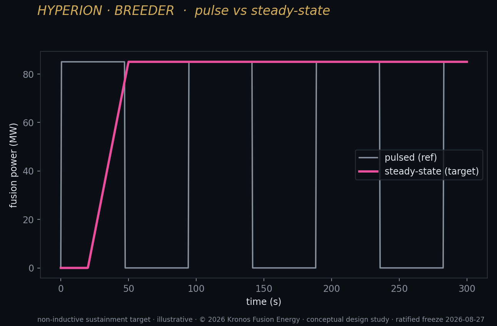
The single most important thing to understand about our timeline is that it does not run on one clock. It runs on two, and they tick at different rates, for different reasons, toward different ends.
The first clock is the breeder clock. The breeder — our spherical-tokamak "Hyperion" — is the foundry: a deuterium–tritium machine that makes fuel, not power. It manufactures tritium, helium-3, and a torrent of 14-MeV neutrons. We build breeders few and deliberately, because the market for what they make is finite. Tritium is measured in kilograms a year, not gigawatts; helium-3 and the neutron flux for advanced materials and isotopes serve real but bounded markets. You do not need a hundred foundries to supply a materials-and-fuel market; you need a handful, sited and staged with care, like the great forges of an earlier industrial age. The breeder clock is therefore slow and short: a small number of large, deliberate machines, each one added only as demand for what it makes actually grows.
The second clock is the burner clock. The burner — the D–³He tandem-mirror generator, housed as Aegis for fixed defense sites and MetroVolt for data centers — is the power fleet. This is where electricity, and eventually the forty-dollar electron, actually lives. The burner clock is later, and it is built to run fast and wide: many machines, thrown up at accelerating pace, multiplying toward a fleet. But it is gated — held deliberately in check by a fuel constraint — until cheap helium-3 arrives from the Moon around 2040. Before that gate lifts, the burner fleet is small on purpose, running on the limited helium-3 the breeders make. After it lifts, the fleet is free to scale, and the character of the whole enterprise changes.
The breeder is a foundry we build a few times, on purpose. The burner is a power fleet we intend to build a great many times — but only once the fuel is cheap enough to earn its keep.
The reason the two clocks are offset, and not simply run side by side, is that each one supplies something the other cannot move without. The breeder produces the helium-3 that the first burners burn; you cannot demonstrate a D–³He generator without the fuel that only a D–T foundry can make. And the breeder's materials business — tritium, isotopes, neutron flux — is what carries the whole program financially across the years before any burner sells firm power at scale. The foundry is not merely first in time; it is the thing that earns the right to build the fleet. The burner, in turn, is what the entire enterprise is ultimately for: the foundry exists so that the fleet may one day exist, cheaply, everywhere.
Hold those two clocks in your mind at once and the whole roadmap organizes itself around them like filings around two poles. The breeder clock lays the foundation — proven hardware, a fuel supply, a materials business that pays. The burner clock builds the scale — the firm, clean, cheap power that reorganizes the grid of a civilization. One is few-and-early; the other is many-and-later. Neither is a hedge against the other. They are sequenced because the physics and the fuel economy demand that order, and no amount of impatience can rearrange them.
What the foundry actually makes
Because the whole plan rests on the claim that a fusion machine can earn its keep years before it sells a single electron, I owe you a concrete account of what a breeder foundry produces and who is already waiting, wallet open, to buy it. "Materials, not electricity" is not a slogan to be chanted. It is a bill of goods you can inspect.
A deuterium–tritium machine, running, throws off three things of real value. The first is tritium itself. Tritium is the radioactive heavy isotope of hydrogen that nearly every deuterium–tritium fusion effort on Earth needs simply to strike its first spark, and it is desperately, almost comically scarce — the entire civilian world stock is on the order of a few tens of kilograms, it decays away at more than five percent a year, and its only significant current source is a dwindling fleet of a particular kind of fission reactor. Every fusion program that intends to burn deuterium and tritium is therefore a customer for tritium before it can ever be a competitor in power, and there is today no scaled, purpose-built supplier anywhere in the world. Our breeder is designed to breed more tritium than it consumes — the frozen design basis is a breeding lever of 1.03–1.20 (literal recipe to solid-beryllium layer), meaning it aims to make nearly two atoms for every one it burns — so that after fueling itself it holds a genuine surplus to sell straight into that shortage.
The second product is helium-3, a light, stable, and even rarer isotope, coveted for cryogenics, for certain classes of radiation and security detectors, for quantum-device and low-temperature research, and — critically for our own second act — as the clean fuel the burner is built around. Some of it arises directly from the machine and some as the decay product of the tritium it makes. There is essentially no terrestrial mine for it. A foundry that produces it at rate is not entering a market. It is calling one into existence.
The third product is the one almost everyone forgets is a product at all: the 14-MeV neutrons themselves. In an electricity plant those neutrons are a burden, a hazard to be shielded against and endured. In a foundry they are inventory. A controlled, intense flux of fast neutrons is exactly the tool you need to test how materials survive the fusion environment — the single largest open question standing between the field and durable power plants — and to breed isotopes for medicine and industry that nothing else on Earth can make at scale. The breeder sells access to that flux. It is, in effect, the most useful neutron source the world does not yet have, and the world will notice the moment it exists.
Put the three together and the early business model needs no cheap fusion electricity to close. It needs a running foundry, selling into three real, pre-existing shortages that the world is already straining against. That is the whole point of leading with the breeder: it converts the hardest, most expensive, first-of-a-kind lessons of fusion engineering into a machine that pays while it teaches.
The roadmap, year by year
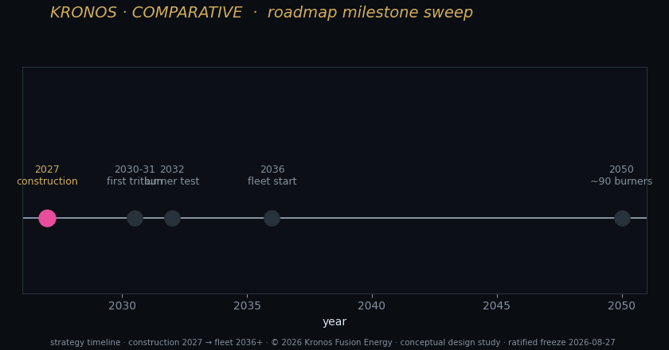
Here is the public timeline, laid out plainly, with nothing up its sleeve. Read it as two interleaved sequences — foundry milestones and fleet milestones — sharing one calendar.
| Year | Milestone | Clock |
|---|---|---|
| 2026 | Design closed, solved, and published open-access — reproducible by any physicist | foundation |
| Q2 2027 | FOAK breeder construction begins ("net gain 2027" is retired: 2027 is a start, not a result) | breeder |
| ~2030 | FOAK breeder produces first tritium (target; 2031 planning basis) — first hardware validation | breeder |
| 2032 | First test burner begins — a ~100 MW D–³He demonstrator to prove the burner physics | burner |
| ~2033–35 | Second and third breeders (NOAK, then BOAK) — the foundry reaches three units | breeder |
| 2036 | Commercial burner fleet begins — ~1 GW units, built at accelerating pace | burner |
| ~2040 | Lunar helium-3 arrives — the fuel gate lifts; burner economics turn | both |
| ~2040s | Burner fleet scales; breeder cadence slows as the Moon supplies helium-3 | both |
| ~2050 | Internal plan: ~90 burner units (~90 GW) and ~5–6 breeders in service | both |

Walk it slowly, because each date carries a specific claim — and, more importantly, each date carries a specific thing that must be proven true before the next date is permitted to arrive. This is not a wish list where the items are independent. It is a chain, and every link is load-bearing.
2026 — the design is closed and published. This is the milestone that separates this book from what I first wrote, and it separates us from most of the field. We are not promising a design; we have one — solved on paper, deposited in the open, and built to be re-run by anyone on Earth who wants to try to break it. Both machines have a published physics basis: the breeder at scientific gain Q_sci ≈ 3.076, 85.04 MW of fusion power, 9.66 MA of plasma current, an 8.0-tesla on-axis field on rare-earth superconducting magnets, a tritium-breeding lever of 1.03–1.20 (literal recipe to solid-beryllium layer), and the negative triangularity — δ = −0.30 — that tames the plasma edge; the burner as a low-neutron D–³He design (neutron fraction f_n ≈ 5.44%) with direct energy conversion, a 26.49 T peak field at its high-field plug, and a 17 T throat in a central cell some 440 m along its axis. No hardware has been built. And the thing that must be proven at this gate is not a temperature or a current; it is reproducibility — that an independent physicist, handed the open files, arrives at the same numbers we did. Gain is closed on model, not demonstrated — and the honesty of that distinction is the entire reason you should believe the rest of the calendar.
Q2 2027 — first breeder construction begins. Note carefully what this milestone is, and what it emphatically is not. When I first wrote this, there was talk of "net gain in 2027." That claim is retired. 2027 is not the year a machine returns more energy than it consumes; it is the year we break ground on the first one. What must be proven to reach this gate is engineering readiness rather than plasma physics: that the magnets can actually be wound to the design’s peak field and survive the bore stresses that field imposes, that the blanket and tritium-handling systems have a manufacturable design, that a site and a supply chain genuinely exist. Construction beginning is a statement that the paper has passed out of physics and into procurement — out of the seminar room and onto the flatbed truck. The distinction between a start and a result matters enormously, and I would sooner lose a headline than blur it by a single word.
~2030 — first tritium. This is the first time our physics meets steel and plasma at full scale — the moment the equations stop being ink and start being a machine. The FOAK breeder, under construction since 2027 on a roughly three-and-a-half-year build, produces its first tritium around 2030. Here the things that must be proven are the load-bearing claims of the whole design: that the plasma reaches and holds the design current, that the blanket actually breeds at a ratio above unity — the frozen lever, 1.03 to 1.20, is deliberately marginal, and the FOAK’s measured TBR is itself the demonstration gate — and that tritium can be bred, extracted, and accounted for as a real, salable product, not a laboratory trace measured in atoms. I give you the honest pair of numbers, side by side: 2030 is the target; 2031 is the planning basis. No hardware net-gain milestone exists before this point. If you want the single moment when a paper design becomes a working foundry, this is it.
2032 — the first test burner. While the foundry comes online, we begin the first burner: a roughly 100 MW D–³He demonstrator whose only job is to prove the burner physics in hardware. Its target is narrow and specific — the end-plug density and confinement that the tandem-mirror architecture depends on, the exact condition that lets a straight magnetic bottle hold a clean, low-neutron burn where the pioneers' bottles leaked. It must also show that the direct-conversion train can catch the charged-particle energy the reaction throws off and steer it toward electricity without the full penalty of a steam cycle. It is deliberately modest in size, because its product is not power but confidence: it exists to convert the one open physics question of the burner into a measured, published answer.
~2033–2035 — the foundry fills out. The second breeder (NOAK) and the third (BOAK) follow the first down a learning curve I will describe in a moment. What these units must prove is not new physics — the FOAK already settled that — but repeatability: that the second machine is genuinely a copy of a solved thing and comes together faster than the first, and the third faster still. By roughly 2035 the foundry is three units strong — enough tritium and helium-3 to fuel the early burners, and enough neutron flux to run a real materials business. Beyond these three, breeders are added only about one every four or five years, as demand for what they make actually grows.
2036 — the commercial burner fleet begins. Now the power story starts in earnest. Commercial burners are sized at about 1 GW each — chosen over larger, grander designs deliberately, because a 1 GW unit is easier to finance, easier to site, and, crucially, lets us climb the learning curve faster by building more of them. What this gate must prove is different in kind from everything before it: not that fusion works, but that a unit works — a repeatable, financeable, sitable machine that delivers firm power on a schedule a grid operator can actually plan a city around. This is the first year the burner exists to sell firm power rather than to prove a point.
~2040 — lunar helium-3. This is the gate — the one the whole second half of the plan pivots upon. Early commercial burners run on the limited helium-3 the breeders make, which caps how many can operate at once. What must be proven here lies partly outside the fusion machine altogether: that a lunar supply chain can actually deliver helium-3 to Earth at the scale a growing fleet needs. When it does — the plan is roughly 2038 to 2040 — the fuel constraint lifts. The Moon becomes the fuel depot of the human race, and the burner fleet is set free to scale.
~2040s and ~2050 — the fleet at scale. With the fuel gate open, the internal plan grows the burner fleet toward roughly 90 units — on the order of 90 GW of firm, clean power — supported by about five or six breeders whose cadence has by now slowed, because once the Moon supplies helium-3 the foundry no longer needs to grow. What must be proven across this stretch is endurance and cadence: that build times keep falling, that units keep coming online, that the fleet behaves in aggregate exactly the way the learning curve predicts. I present this as the shape of the plan, not a financial projection: few breeders, many burners, the whole thing paced by fuel.
The learning curve: why the road gets faster
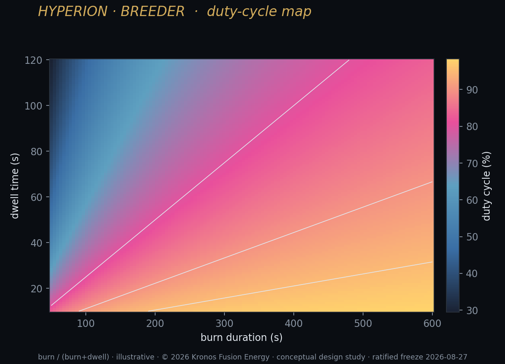
A roadmap that assumed every machine took as long to build as the first would be a roadmap that never scaled — a staircase with only one step. The premise underneath our dates is that we get faster as we repeat ourselves — the same first-of-a-kind to nth-of-a-kind to best-of-a-kind (FOAK → NOAK → BOAK) learning that every real industry has shown, from the shipyards to the aircraft plants to the solar panel that now undercuts coal. This is not a fusion trick. It is one of the most reliable regularities in the entire industrial history of our species, and we are simply choosing, at last, to build fusion in a way that can benefit from it.
For the breeders, the build time falls from about 3.5 years for the first unit to roughly 3 years for the next and about 2.5 years for the one after. For the burners, the same shape, one notch faster: from about 3 years for the first commercial unit toward 2.5 and then 2 years. This is not optimism painted onto a chart to make it climb. It is the most reliable pattern in industrial history, applied deliberately to machines whose design we have made reproducible on purpose, so that the second one is genuinely a copy of a solved thing rather than a fresh adventure into the unknown.
It is worth being concrete about where the time actually goes, because "learning curve" can sound like a wish dressed up as a mechanism, and I want you to see the gears turning. The first machine pays a whole set of costs exactly once. The design has to be turned from a solved physics basis into a full set of manufacturable drawings, and the inevitable first-of-a-kind rework — the coil that does not quite fit, the port that has to move six inches to the left — is discovered and fixed in the field, on the clock, at the worst possible moment. The tooling to wind and support the high-field magnets is designed and built from scratch. The workforce is learning the machine even as it assembles it. The supply chain is being qualified vendor by vendor, and the rare-earth superconducting tape is being ordered at a volume no one has ever ordered it at before. The first regulatory license is the hardest one anyone will ever file, because there is no precedent on Earth to point to.
The second machine inherits nearly all of that hard-won ground. The drawings already exist, and the worst mistakes have already been made and corrected. The winding jigs and assembly fixtures are already built and simply used again. The crews that built the first one build the second with their hands already trained. The vendors are qualified and the tape is flowing. The license has a precedent to lean on. None of this is speculative; it is simply what happens, reliably, when you build the same thing twice on purpose. The third machine compounds the same effects a third time, which is exactly why BOAK is faster than NOAK, which is faster than FOAK.
The learning curve is also why the two-clock structure works at all. The breeder foundry is where we take our lumps first — a small number of large machines where the hardest first-of-a-kind lessons get learned, funded by a materials business that does not depend on cracking burner economics. By the time the commercial burner fleet begins in 2036, we are not learning to build fusion machines for the first time under the pressure of a power contract. We are applying a foundry's worth of hard-won practice — magnet manufacturing, cryogenics, tritium handling, high-field engineering — to a fleet designed, from its very first line, to be built over and over and over. The burner curve starts one notch faster than the breeder curve for exactly one reason: the breeder curve came first, and paid the tuition.
The honest gates, stated plainly
Every honest roadmap is defined less by its milestones than by its gates — the places where a thing genuinely is not yet true and we say so, out loud, without softening. A milestone is a boast. A gate is a confession, and it is the confessions that earn the boasts their credibility. Let me restate ours in the plainest language I can build, because a reader deserves to know exactly where the load-bearing assumptions sit.
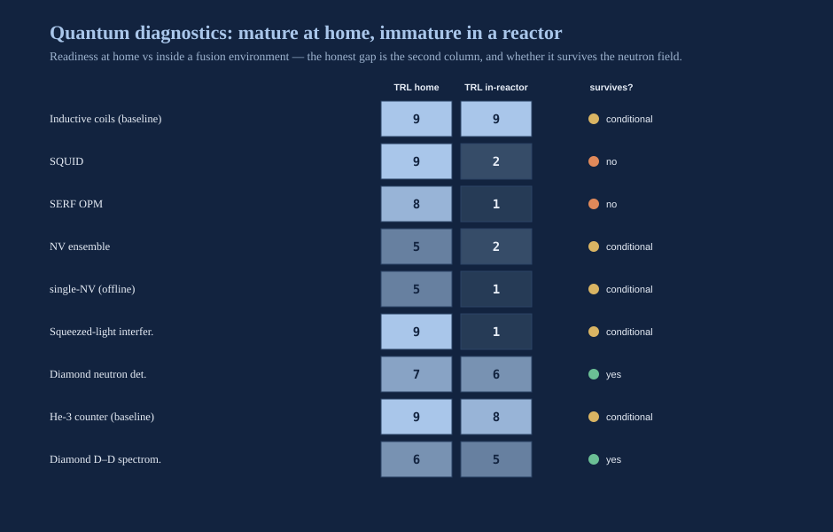
The near-term business is materials, not electricity. The breeder is net-negative on power — on the order of −79 MWe. That is not a defect to be apologized for or buried in a footnote; it is the job. Hyperion is a foundry, and a foundry sells what it makes: tritium, helium-3, and 14-MeV neutrons for advanced materials and isotopes. Anyone who tells you fusion is selling cheap electricity in the early 2030s is not describing our plan. We are selling fuel and materials first, and we are candid, on every page, that the electricity comes later.
No hardware net-gain before the FOAK breeder — around 2030. The design achieves gain on paper, published and reproducible. But paper is paper, and I will not let you mistake it for steel. The first time our physics is validated in operating hardware is first tritium, around 2030 (2031 planning basis). Until then, the honest statement is precise and unwavering: gain is solved, not scaled; no hardware has been built.
"Net gain 2027" is retired. I said it above, and I will say it again here, in the gates section, in bold if I could shout it, because it is the single claim most likely to be mis-remembered from the old story. 2027 is when construction begins. It is a groundbreaking, not a result. A shovel in the earth, not a spark in a plasma.
The burner has one real physics gate, one named engineering gate, and economics that depend on cheap helium-3. The tandem-mirror burner's remaining physics question is end-plug density — the condition that lets a straight magnetic bottle hold a clean D–³He burn. That is what the 2032 test burner exists to settle, in hardware, in public. Beside it sits one engineering item, distinct and less fundamental: building the 26.49 T plug field at its small required bore over-stresses the winding "as drawn," and is recovered — on paper, pending detailed finite-element confirmation — by the stress-managed magnet architecture the magnet chapter lays out. I separate the two deliberately: the density is a question about nature that only an experiment can close; the bore stress is a question about structure that already has a drawn answer. Naming both, and ranking them, is the honesty the single-gate phrasing would cost. And even with the physics closed, the burner's economics depend on fuel cost. On terrestrial helium-3 the fuel alone would swamp any plausible power price; the burner only becomes cheap when lunar helium-3 does. That is why the fleet is gated on the Moon, and why I will not pretend the forty-dollar electron arrives before its fuel does.
State those four gates out loud and the roadmap becomes something you can actually audit, year by year, claim by claim. Each gate is a place where, in some future year, you can check whether we did what we said — and, just as important, whether we kept saying the true thing while we waited for it.
The burner's one gate, in detail
Of the four gates, one deserves a closer look than a single line can give it, because it is the load-bearing physics question of the entire second act, and I would rather you understand it in your bones than take my word that it is manageable.
The burner is a tandem mirror — a straight magnetic bottle, not a doughnut. The oldest objection to a straight bottle is exactly the one I described in the history: the ends leak. Particles moving nearly along the axis are not turned back by the magnetic pinch at each end; they slip out, and the plasma drains away. The tandem solution is to build, at each end, a small region of very high magnetic field — a plug — and to use the physics of that plug to raise an electrostatic barrier, a voltage hill, a dam made of pure potential, that turns escaping ions back into the central cell where the burning happens. The central cell does the fusing; the two plugs do the holding. It is an elegant division of labor, seventy years in the waiting.
Everything about the burner's viability comes down, in the end, to one quantity: whether the plug can build a tall enough barrier, which in turn depends on sustaining a high enough plasma density in the plug relative to the central cell. This is the end-plug density gate. Build the plug density high enough, and the barrier holds and the bottle stops leaking; fall short, and you are right back to the leaking tube that defeated the pioneers and sent a generation of physicists to the doughnut. The reason this is now a question worth reopening — rather than the settled failure the textbooks record — is a single changed input: magnets. The published design calls for a peak field at the high-field plug of 26.49 T, with a 17 T throat in the central cell, fields that simply could not be produced in a plug small enough when the idea was first tried. The rare-earth superconducting tape that makes such fields buildable is the material advance that turns a seventy-year-old dead end back into a live experiment — that reaches into the graveyard of abandoned approaches and finds one of them still breathing.
That is precisely, and only, what the 2032 test burner exists to settle: a roughly 100 MW demonstrator whose narrow, specific job is to show the end-plug density and confinement in operating hardware rather than in a simulation, however beautiful the simulation. It is not there to make a fleet or sell power. It is there to convert the one open physics question of the burner into a measured number that anyone can read. I state the gate this sharply on purpose. A program that can name its single largest remaining physics risk, and point to the exact machine and the exact year meant to retire it, is telling you a fundamentally different kind of truth than one that gestures vaguely at "engineering challenges ahead."
There is a second half of the burner's promise that is not a physics gate at all but an engineering advantage, and it is worth stating in the same breath because it is why the burner is the machine that carries the forty-dollar electron. The D–³He reaction the burner runs is low-neutron by design — only about 5.44% of its energy leaves as neutrons, against the four-fifths a deuterium–tritium plant must forever contend with. The overwhelming majority of its output comes off as charged particles, and charged particles can be decelerated against an electric field to recover their energy as electricity directly, without first degrading it into heat and paying the steam cycle's brutal thermodynamic tax. A conventional thermal plant throws away well over half of its heat as a matter of physical law — a law as old and unbreakable as the second law of thermodynamics itself. Direct conversion sidesteps most of that loss. This is not a gate to be passed; it is a structural reason the mature burner can reach a plant-level return that a neutron-dominated, steam-cycle machine simply never can. The gate is the plug. The prize behind the gate is the clean, directly converted electron.
Where the three forties actually land
Now to the payoff — the part where the three forties come home to roost. Q40, forty dollars a megawatt-hour, within forty years: they do not all land in the same place, or the same year, or even on the same clock. Part of being honest about them is being specific about where on this road each one lives.
Q40 — the physics, forty-fold return — lands with the mature burner. It does not live in the breeder, and I will not let it pretend to. The breeder's published gain is Q_sci ≈ 3.076, and it is net-negative on electricity by design; a foundry is not, and was never meant to be, where a fortyfold plant return appears. Q40 is a burner property, because the burner is the machine built to turn fusion into net electricity: a low-neutron reaction — only about 5.44% of its energy carried off by neutrons — whose output comes out mostly as charged particles, converted toward electricity directly rather than bled through the full penalty of a steam cycle. It is that direct conversion of charged-particle energy, sidestepping the thermodynamic tax a thermal plant can never escape, that makes a fortyfold plant return reachable at all. In time, Q40 belongs to the commercial burner as it matures — the machine that begins as a test in 2032, becomes a commercial unit in 2036, and comes fully into its own as the fleet scales through the 2040s. It is a physics-and-engineering achievement, and it arrives when the machine that carries it is mature, not on the day the first one is switched on.
Forty dollars a megawatt-hour — the price — lands after the lunar fuel gate. This is the most gated of the three, and I want no ambiguity about it whatsoever. The forty-dollar electron lives with the burner and depends on cheap helium-3. Before lunar supply, the fuel cost alone keeps a burner well above that line, no matter how elegant the machine or how clever the engineer. After lunar helium-3 arrives around 2040, and as the fleet climbs its learning curve toward two-year builds, two things move in the same direction at once, reinforcing each other: the fuel gets cheap and the machines get cheaper to build. That is when the price target comes into reach. So $40/MWh is a 2040s number — later than the first hardware, later than the first commercial unit, deliberately downstream of the fuel that makes it real. Of the three forties, this is the one I would most caution a reader against expecting early, because it depends on a gate that opens not on Earth at all, but a quarter of a million miles away.
Within forty years — the horizon — is the promise I most want you to hold me to. Measured from now, "within forty years" points at the mid-2060s. And here is the deliberate gap, laid bare: the internal plan lands the mature fleet — roughly 90 GW of firm clean power — around 2050, some fifteen years inside the public promise. I have chosen, everywhere in this book, to promise the conservative number and plan against the faster one. The forty-year horizon is drawn wide on purpose, because fusion earned its "always thirty years away" reputation the hard way, and the only cure for a broken clock is to set a deadline you can beat, and then beat it, and then do it again until the beating is your reputation.
So the three forties resolve like this: Q40 is the physics goal the burner is built to reach, coming into its own as the fleet matures in the 2040s; $40/MWh is the price that follows the lunar-helium-3 gate, a 2040s achievement downstream of cheap fuel; and within forty years is the outer bound — the mid-2060s — against which an internal ~2050 plan is meant to look, in hindsight, conservative. Three numbers, three different places on one road, each stated with its gate riveted firmly to it.
Why the conservative horizon is the honest one
I could have written this chapter as a thundering countdown to 2050. The internal plan supports it, and it would read as far more exciting — a clean, cinematic arc to a triumphant date. I chose not to, and it is worth saying why, because the choice is the whole ethic of the book compressed into a single date.
A roadmap is a form of promise, and a promise is only worth making if the person receiving it can rely on it when everything else is uncertain. The failure mode of fusion for seventy years has not been a shortage of ambition; the field never lacked for dreamers. It has been a surplus of confident dates that did not arrive. Every one of those missed dates spent down the field's credibility, coin by coin, until "fusion by 20XX" became a punchline told at dinner parties rather than a plan a serious person could defend. I am not willing to spend the next increment of that hard-won, barely-recovering credibility on a headline that reads well for one news cycle.
So the discipline is this, and I hold to it without exception. Where a milestone has a target and a planning basis, I give you both — 2030 and 2031 for first tritium — and I plan against the later one. Where the whole program has an internal timeline and a public promise, I publish the promise wide — forty years, the mid-2060s — and hold the faster plan to myself as something to beat, not something to claim. And where a number depends on a gate that has not yet opened — the forty-dollar electron waiting on lunar helium-3 — I bolt the gate to the number every single time, so that no one, ever, mistakes an aspiration for an achievement.
How the two clocks pay for each other
I have promised no dollar figures in this book, and I will keep that promise here as everywhere. But you do not need a single number to understand the shape of how this program funds itself, and the shape is the part that matters for judging whether the calendar is real or a beautiful wish.
The failure mode of ambitious energy programs is not usually that the final product turns out to be uneconomic. It is that the long years of building before the final product arrives have no way to pay for themselves, so the whole enterprise lives hand to mouth on outside faith until, one grey day, the faith runs out and the machines go quiet. The two-clock structure exists, in large part, to defeat exactly that failure mode — the one that has buried more fusion dreams than any plasma instability ever did. The breeder foundry begins earning — selling tritium, helium-3, and neutron flux into real shortages — years before the first commercial burner sells firm power. The early money does not come from cheap fusion electricity, which does not yet exist and will not for years; it comes from materials the world already needs and cannot readily get. That revenue is what carries the program across the long, expensive middle where every prior generation of fusion ran out of patience and out of cash.
This is why the order is not arbitrary and, more to the point, not reversible. You could not begin with the burner even if you wished to with all your heart, because the burner needs helium-3 that only the breeder makes, and because the burner's own economics do not close until the lunar fuel gate opens around 2040. Start with the burner and you would be asking the least-proven machine, running on the scarcest fuel in the solar system, to carry the entire program financially in its infancy — the shortest, surest road to becoming one more fusion effort that died waiting for its fuel. Start with the breeder and each stage funds the ambition of the next: the foundry's materials business funds the first burners, the first commercial burners establish the fleet, and the fleet — once cheap lunar fuel arrives — is what finally delivers power at a price that changes the world. Each clock hands the next one the exact thing it needs to move.
It also means the program degrades gracefully rather than catastrophically — it bends where a lesser structure would break. If the burner's physics gate takes longer to close than 2032, or if the lunar fuel supply arrives late, the breeder foundry keeps running and keeps earning in the meantime, because its business does not depend on either of those things. A structure in which the near-term revenue is decoupled from the long-term gamble is a structure that can survive its own delays — which, given that this is fusion, and given seventy years of delays as reliable as sunrise, is not a luxury but a design requirement. I built the roadmap to keep moving even when a piece of it runs late, because history is unambiguous that some piece of it will.
The transitions, one gate at a time
The milestones are the easy part to write, because a milestone is a destination and destinations are pleasant to describe. The hard part — the honest part — is the space between two milestones: the specific set of things that must become true to carry the program from one dated point to the next, and the specific ways each passage could go slow. A roadmap is only as trustworthy as its transitions, because a transition is where the real work, and the real risk, actually lives. So let me do the uncomfortable thing and walk the gaps rather than the posts. For each passage I will state plainly what has to be true to make it, and what could slip if the world declines to cooperate.
From published design (2026) to broken ground (Q2 2027). What has to be true: the passage from paper to procurement is not a physics passage at all — the physics is already solved and deposited — it is an engineering-readiness passage, and it turns on four concrete things. The high-field magnets must be shown to be windable to the design's peak field on rare-earth superconducting tape, not merely specifiable on a datasheet. The structure that holds them must be shown to survive the bore stress that field imposes, because a field is a pressure, and a field of this magnitude pushes on its own coil with a force that wants to tear it open. The breeding blanket and the tritium-handling plant must exist as manufacturable drawings rather than as a target breeding ratio. And a site, a first regulatory license, and a qualified supply chain for the tape must genuinely be in hand. What could slip: the license is the likeliest culprit, because it is the first of its kind and there is no precedent on Earth for a privately built tritium-breeding fusion foundry — the regulator and the builder are, in effect, writing the rulebook together in real time. The tape supply is the second, because we would be ordering rare-earth superconductor at a volume the world has never been asked to produce. Neither of these is a physics failure; both are the ordinary friction of doing a thing for the first time, and both push the groundbreaking to the right rather than off the calendar.
From broken ground (2027) to first tritium (~2030). What has to be true: this is the passage where ink becomes steel, and it carries the heaviest load in the entire calendar. On a roughly three-and-a-half-year build, the FOAK breeder must reach and hold its design plasma current of 9.66 MA; the negative-triangularity edge — δ = −0.30 — must tame the plasma boundary in hardware the way it does in the solved design; and, above all, the blanket must breed. The frozen basis is the breeding lever — 1.03 to 1.20 — and the load-bearing claim is not the exact figure but the inequality: the foundry must make more tritium than it burns, or it is not a foundry at all. Then that bred tritium must be extracted, purified, and accounted for atom by atom as a salable, regulated product rather than a laboratory trace. What could slip: first-of-a-kind rework is nearly certain somewhere — a coil that does not quite seat, a port that must move — and rework is discovered in the field, on the clock. The blanket breeding could come in below the ratio the design needs, which would not stop the machine but would thin the surplus it can sell. Tritium extraction chemistry at rate is genuinely hard. This is exactly why I give you the honest pair — 2030 target, 2031 planning basis — and plan against the later one.
From first tritium (~2030) to the first test burner (2032). What has to be true: two things must line up, and one of them is a matter of inventory. The test burner is a D–³He machine, and it cannot run without helium-3 — which only the breeder makes. So the foundry must have accumulated enough helium-3 to fuel a roughly 100 MW demonstrator before that demonstrator can fire. On the machine itself, the plug magnet must be buildable to its 26.49 T peak field, with the 17 T central-cell throat, and the direct-conversion train must be shown to catch charged-particle energy and steer it toward electricity. What could slip: this transition contains the single largest remaining physics question in the whole program — end-plug density, the condition that lets a straight magnetic bottle stop leaking — and I will not soften it. If the plug is harder to sustain in hardware than in simulation, the burner timeline stretches. The fuel-accumulation clock could also bind: too few grams of helium-3 by 2032 and the demonstrator waits on its own fuel.
From test burner (2032) to commercial fleet (2036). What has to be true: the test burner must have answered its one question in public — a measured, published end-plug density, not a hopeful one — because the fleet is not permitted to begin on an unsettled gate. Then the physics of a 100 MW demonstrator must scale to a financeable, sitable ~1 GW commercial unit; the foundry must be supplying enough helium-3 to fuel those early units; and a grid operator must be willing to interconnect and plan around firm fusion power. What could slip: scale-up from a demonstrator to a gigawatt unit is real engineering risk even with the physics closed, and — more binding still — the early fleet is capped by fuel. Before the Moon supplies helium-3, only so many burners can run at once on the trickle the breeders make. That cap is not a failure; it is the designed-in reason the fleet stays deliberately small until 2040.
From early fleet (2036) to lunar helium-3 (~2040). What has to be true: this is the transition that reaches off the Earth, and most of what must become true lies outside the fusion machine and outside our own hands entirely. A lunar supply chain must deliver helium-3 to Earth at the scale a growing fleet needs — which means the bulk processing of lunar regolith, an extraction problem closer to winning salt from the sea than gold from a vein, must be industrialized, along with the transport to carry the product home. What could slip: nearly all of it, and I say so without flinching. This is the single largest dependency in the book that is not ours to control. If it arrives late, the consequence is bounded and specific: the fleet keeps scaling slowly on breeder-made helium-3, firm fusion power stays dearer for longer, and the forty-dollar electron waits. The physics still works; the foundry still earns; nothing collapses. A late gate delays abundance. It does not cancel it.
From the fuel gate (~2040) to the fleet at scale (~2050). What has to be true: with cheap fuel flowing, the last passage is one of pure repetition — the learning curve must keep delivering. Build times must keep falling toward two-year burner units; roughly ninety burners must actually be built and interconnected; and the breeder cadence must be allowed to slow, because once the Moon supplies helium-3 the foundry no longer needs to grow, settling toward five or six units. What could slip: the learning curve could stall if each unit is treated as a fresh adventure rather than a copy of a solved thing — which is precisely the failure the whole two-clock, FOAK→NOAK→BOAK discipline is built to prevent. Siting cadence and interconnection queues could throttle the count. This transition is the most forecastable of them all, because it depends least on new physics and most on the oldest, most reliable regularity in industrial history: that we get faster as we repeat ourselves.
Walk those six passages and a pattern emerges that the milestone list alone conceals. The early transitions are gated by engineering — magnets, blankets, licenses, rework — the kind of risk a learning curve is expressly designed to absorb. The middle transition is gated by the burner's one physics question, quarantined in a single demonstrator so it can be settled before anything is staked on it. And the late transitions are gated by things largely outside fusion altogether — a lunar supply chain, a build cadence — where our only defense is a structure that keeps earning while it waits. The risk does not vanish as you go; it changes character, from physics we have solved, to engineering we can practice, to logistics we must partner for. Naming which kind of risk lives in each gap is, I think, the most honest thing a roadmap can do.
The one supply chain beneath every gate
If you press on the transitions above, looking for the single thread that runs through the most of them, you will find it quickly, because it is the same thread every time: the magnets. Nearly every gate in this book, on both clocks, rests in the end on one material advance — rare-earth barium copper oxide superconducting tape, wound to fields that were simply unbuildable when these architectures were first dreamed. The breeder needs a high-field centrepost to confine its plasma in a machine small enough to build and repeat. The burner needs a 26.49 T peak field at its high-field plug — with a 17 T throat in the central cell — to raise the electrostatic barrier that stops a straight bottle from leaking. Neither number was reachable in a coil the right size and shape a generation ago. Both are reachable now, on the same family of tape, and that single fact is what lets a spherical-tokamak foundry and a seventy-year-old tandem-mirror idea both come back to life in the same decade, in the same company, on the same roadmap.
It is worth being blunt about what this concentration means for risk. A single enabling material that unlocks two machines is a gift and an exposure at once. The gift is obvious: master the winding, the joints, the cryogenics, and the bore-stress structure once, on the breeder foundry, and you have paid the hardest tuition for the burner fleet before the fleet begins — which is exactly why the burner learning curve starts one notch faster than the breeder's. The exposure is just as real: if the tape supply cannot scale, or the winding and support of these fields proves harder in the field than on the bench, the difficulty does not land on one gate but ripples across many, because so many gates lean on the same tape. A field at the breeder's conductor peak, and still more one of 26.49 T, is a mechanical event as much as a magnetic one — the coil must survive the outward pressure of its own field, a force measured in the same breath as the deep ocean — and that structural problem is the quiet engineering gate sitting underneath the glamorous physics ones.
I flag this not to alarm but because honesty demands it: when a plan's separate risks share a common root, a reader deserves to see the root named, not diffused across a dozen milestones as if each were independent. They are not fully independent. The tape is the taproot. The good news — and it is genuine, not consoling — is that this is manufacturing risk, the most tractable kind there is, the kind that yields to volume, practice, and time in a way that a fundamental physics wall never does. It is the reason the foundry goes first: to turn the hardest first-of-a-kind magnet lessons into routine, funded practice, before a single power contract depends on getting them right.
How to hold us to it
I have written this roadmap so that it can be used against me, and I mean that as the highest compliment a plan can pay its reader. A promise you cannot check is not a promise at all; it is decoration. So here, gate by gate, is how to keep score — the specific thing you can look for in each dated year, without taking my word for anything.
In 2026, the test is not a claim but a document. The design is either published open-access and reproducible or it is not. Download it. Hand it to a physicist you trust. If the numbers in this book cannot be re-derived from what we deposited in the open, then the foundation has failed its own first test, and everything downstream deserves your skepticism.
In 2027, look for a groundbreaking, and — this is the part that matters most — check that we still call it a groundbreaking. If anyone associated with the program describes 2027 as a net-gain year, hold up this page. The retirement of that old claim is itself a milestone you can audit.
Around 2030, the question is tritium: is the FOAK breeder producing it, and is it doing so at a breeding ratio that lets the foundry make more than it consumes? If first tritium slips to 2031, that is the planning basis arriving exactly on schedule, not a failure. If it slips past 2031, ask why, and ask whether we said so plainly and early.
In 2032, watch the test burner answer its one question: end-plug density, in hardware. A test burner that runs but quietly dodges that measurement has not earned its place on the calendar.
By 2035, count the breeders — there should be three — and look hard at how long each one took to build. The learning curve is a falsifiable prediction, not a hope: FOAK slower than NOAK, NOAK slower than BOAK. If the second and third machines did not come together faster than the first, the premise under every later date is weaker than I claimed.
From 2036, watch for a commercial unit selling firm power, and watch for the fleet to begin multiplying. Around 2040, watch the sky as much as the ground: the fuel gate is lunar, and either helium-3 begins to arrive from the Moon or the fleet's scaling stalls exactly where I said it would. And through the 2040s toward 2050, keep counting units and keep timing builds. The shape of the plan — few breeders, many burners, paced by fuel — is either visible in the count or it is not.
The internal plan aims for the 2050s. The public promise says the 2060s. The fifteen-year gap between them is not slack I am hiding — it is slack I am handing you, in writing, to hold me to.
That is the staged road to Q40. Ground broken in 2027. First tritium around 2030, from a foundry that sells materials, not electricity. A test burner in 2032, a commercial fleet from 2036, the lunar fuel gate around 2040, and a fleet at scale by 2050 — offered to you as the mid-2060s, so that if we are early, we have kept our word, and if we are exactly on the public schedule, we have still done what no one before us has ever done. The physics is solved and published. The rest is construction, repetition, and the patience to say the true thing at every gate along the way. A star built to a schedule, and a schedule built to be kept.
The Next Forty Years
This is a forecast chapter, and forecasting is the one thing a careful person is supposed to avoid. I have been careful all the way to here — careful with numbers, careful with the names I am not free to use, careful to say no hardware yet every single time the temptation to round up came whispering. But the third forty demands a forecast, and a book that only ever hedges has failed a different way. So let me do the one careful people avoid: let me look up from the receipts, just this once, and describe the country we are walking toward — what I actually believe the next forty years look like.
I will do it the only honest way a forty-year forecast can be done — with the error bars widening visibly as we go, like a searchlight beam spreading as it reaches for the horizon. The near years I will state almost as plans, because they rest on things already in hand, already under construction, already poured in concrete. The far years I will state as a direction and a destination, not a schedule, because anyone who hands you a firm date for 2060 is selling something, and I have spent these chapters warning you against exactly that salesman. What ties the decades together is not a promise that everything goes right — nothing ever does. It is a structure — two machines, a fuel doctrine, a conservative clock — engineered so that the whole enterprise keeps moving even when individual pieces run late. And some of them will.
What I am no longer willing to promise
I have written a fusion timeline before, and I want to hold it up to the light honestly. An earlier version of this very chapter, the one I wrote in 2024, ran its forecast not to the 2060s but across centuries — fusion-powered terraforming, colonies wheeling around distant stars, travel between them within a single human lifetime, and, past a certain giddy point, frank science fiction. I do not disown the spirit of it, and I will not pretend I do. The spirit was right. Fusion really is the kind of technology whose consequences, given enough time, run all the way to the edge of what our species can imagine — and beyond it. But the form of that old forecast was the oldest mistake in the field wearing its Sunday best. A timeline that reaches a thousand years out is not a forecast. It is a daydream with dates stapled to it, and dates stapled to daydreams are precisely how fusion spent seventy years teaching the whole world not to believe a word it said.
So this book draws a hard line, and the line is roughly forty years. Past that, I will tell you the direction — because the direction is real, and worth naming plainly, and I would be a coward to leave it out — but I will not pretend to a schedule, because I do not have one and neither does anyone alive. Within forty years I will give you dated milestones you can hold me to like a contract. The difference between the two is the difference between a plan and a wish, and the whole ethic of this book is refusing to let the second impersonate the first, no matter how much better the impersonation reads.
There is one more retirement worth making explicit, because it is exactly the sort of thing the old timeline did casually and cheerfully. When I first wrote this, I imagined fusion plants proliferating worldwide, powering cities and spacecraft alike, within a couple of decades of the first demonstrations — commercialization as a great wave that simply washes over the globe the instant the physics is proven. That is not how hard infrastructure arrives. It never has been. It arrives one financeable unit at a time, gated by fuel and by learning curves and by the plain, stubborn logistics of building enormous machines, and it shows up first exactly where a specific customer needs firm power badly enough to sign for it before it exists. The honest forty years is slower than the old dream — and precisely because it is slower, it is far more likely to actually happen. That trade, slower for real, is the whole book in a sentence.
Where the plan sits, in one breath
The shape of that plan, decade by decade, I have already walked in full earlier in this book, so I will not re-walk it here. The staged-road chapter owns the company timeline and every date in it: a closed, published design and the first breeder under construction; first tritium around 2030 and a materials economy that goes live with it; a first roughly hundred-megawatt test burner in 2032 and the first commercial burners around 2036; lunar helium-3 arriving around 2040 to lift the fuel constraint; and, past mid-century, a mature fleet at scale delivering firm clean power. Those are company milestones, and nothing in this forecast moves any of them by a day. What is left for this chapter is the wider view the milestone ladder cannot give — the four things a company timeline is structurally unable to say. Where our bet sits against the whole rest of the field. How this forecast could be wrong. Which of the instruments I have leaned on are real now and which are still promises wearing the costume of the near future. And, at the end, what all this abundance is actually for. Read the plan as a slope, not a staircase: the confidence I have falls the farther out you look, and the entire honesty of the forecast lives in admitting exactly that, in daylight, rather than pretending the fog is clear air.
The wider field, decade by decade
Our plan does not unfold in an empty room. There is a whole field out there — dozens of efforts, public and private, each with its own architecture, its own creed, its own theory of how the star gets built and sold. A forecast that described only our corner of it would be a forecast with the lights off in every other corner, and you deserve to see the whole room. So let me set our plan against the broader landscape, decade by decade, with the same widening honesty — because the most useful thing I can give you is not a claim that we are right and they are wrong, but a clear-eyed sense of where the whole enterprise is going, and where our bet sits inside it.
In the 2020s, the field is defined by two great families of approach and a swarm of newer ones. The mainstream, the one that has absorbed the majority of the world's fusion effort for half a century, is the conventional tokamak — the large doughnut, built big to win confinement by sheer size, embodied above all in a single enormous international machine that has become the field's great cathedral: magnificent, slow, and decades in the building. Beside it stands the laser-driven inertial approach, the one that crossed scientific break-even first, in a single spectacular shot, and thereby ended the "is the physics real" argument for everyone. Then there is the swarm: a generation of privately funded ventures, most of them betting — as we do — on high-temperature superconductors to make machines small, and pursuing a scatter of geometries, the compact tokamak, the stellarator's beautiful twisted coil, the field-reversed configuration, and, in our case, the resurrected magnetic mirror. What unites this decade across all of them is that the enabling ingredients — the strong compact magnet and the AI control room — arrived at once, and everyone is now racing to build on them. Where our plan sits: we are in the swarm, but we have made an unusual choice within it — to lead with a fuel-and-materials foundry rather than a power demonstrator, and to publish our design open-access rather than guard it.
In the 2030s, I expect the field's great sorting. Most efforts are, whether they say so or not, aimed at a single prize: the first machine to put fusion electricity onto a grid and sell it. That is a magnificent goal and a brutal one, because electricity is the most competitive commodity in existence, and a first-of-a-kind plant selling into it must be cheap on the very day it opens or it does not sell at all. My honest expectation is that the decade separates the efforts that can sell something from the efforts still selling the promise of something — and that the something sold, for the survivors, may not be electricity at all. This is where our plan diverges most sharply from the consensus. The field's center of gravity says build the power plant. We say build the foundry first, sell the scarcity — tritium, helium-3, neutron flux — and let the materials business carry you across the decade that has financially killed every prior generation. We may be wrong to differ. But if fusion electricity proves as hard to sell cheaply on day one as commodity economics says it must, the efforts with a non-electricity product will be the ones still standing to try again.
In the 2040s, the field's paths genuinely fork, and here my confidence in anyone's forecast, ours included, drops sharply — the searchlight beam is wide now. The deuterium–tritium mainstream, if it reaches power at all, faces a fuel problem of its own that is rarely stated plainly: there is not enough tritium in the world to fuel a fleet of D–T plants, and every one of them must breed its own or buy it, which is precisely the shortage our foundry is built to sell into. That structural fact may matter as much to the field's 2040s as any single machine. Our own fork in this decade is the boldest and least-controlled bet in this book — lunar helium-3 — and I will not pretend the rest of the field shares it or needs it; the D–T efforts do not require the Moon, though they do require solving tritium. The honest summary of the 2040s is that the field will likely have proven fusion power somewhere, on some architecture, and will be wrestling — all of us, by different routes — with the harder question of making it cheap and abundant rather than merely real.
In the 2050s and beyond, I will not forecast the field at all, and I would distrust anyone who does. The uncertainty is total: which architecture dominates, whether one wins or many coexist the way today's grid runs coal and gas and wind and solar side by side, whether the mirror or the tokamak or something not yet drawn becomes the workhorse — these are genuinely unknowable from here, and the whole discipline of this book is refusing to pretend otherwise. What I will say is structural and, I think, safe: by the 2050s fusion is no longer a question of whether but of which and how much, and a field that spent seventy years arguing about its own possibility will be arguing instead, healthily, about market share. That argument is the best thing that could happen to it.
Set our bet against that whole landscape and its shape is easy to state. We are contrarian in three specific, nameable ways — foundry before power plant, materials before electricity, an off-Earth fuel supply behind the cheapest electron — and conventional in the ways that matter most: high-field superconductors, AI control, and a relentless focus on building the same machine many times down a learning curve. I do not claim our three contrarian bets are certainly right. I claim they are honestly different, made for stated reasons, and — this is the part that lets me sleep — structured so that if the boldest of them is wrong or late, the rest of the plan keeps standing. That is more than I can say for a bet-the-house wager on being first to a cheap electricity grid, and it is the difference I would ask you to weigh when you set this forecast beside the others you will hear.
The instruments on the dashboard
There is a set of technologies I have leaned on quietly all through this forecast without ever quite putting them under the light, and honesty about the next forty years means being precise about them too — precise especially about which are real now and which are hype wearing the costume of the near future. Three get named constantly in the same breath as fusion: quantum computing, quantum sensing, and artificial intelligence. They are not equals, and I will not let the glamour of the word "quantum" blur what is genuinely in hand from what is genuinely still a promise.
Let me be blunt about the one most likely to be oversold. Quantum computing offers no near-term advantage to fusion — not this decade, and I would not bank on the next. I say that plainly because the temptation to imply otherwise is enormous and the field has quite enough imaginary timelines already. The honest role for quantum methods in our work is offline and modest: calibration done away from the machine, and quantum-inspired tensor techniques that run on ordinary computers and borrow the mathematics without needing the hardware. Anyone who tells you a quantum computer is about to run a fusion plant is describing a decade that has not been scheduled yet.
Quantum sensing, by contrast, is genuinely near — a real, arriving advantage rather than a promised one. The same quantum precision that is hard to harness for computation is already sharpening the diagnostics: the instruments that measure what a plasma is doing, in the fractions of a second where control is won or lost. That is not a 2040s technology. It is a this-decade one, and it belongs on the near, checkable end of the forecast, not the far speculative end.
And AI control is not a forecast at all — it is working now, with numbers I can show you. This is the load-bearing instrument on the dashboard, and unlike the quantum pair it has already delivered receipts: a safety clamp that caught every one of three thousand injected limit violations with zero escapes, and — honestly, in the same breath, because a page of only triumphs is a page you should not trust — at least one miss, an equilibrium solver still short of its accuracy target. I will not reprint the full ledger here; the AI chapter gives the complete receipts, the disruption forecasting and the surrogate speed-ups and the quench-precursor warnings and all. What matters at the forecast's edge is only this: the control layer is proven, quantified, and already holding the roof up.
The reason I gather these three here, at the forecast's edge, is that they map cleanly onto the whole book's ethic. AI control is the now — proven, quantified, already holding the roof up. Quantum sensing is the near — real and arriving, on the checkable end of the road. Quantum computing is the far and uncertain — worth watching, wrong to promise. Tell those three apart, refuse to let the glamour of one borrow the credibility of another, and you are reading the field the way I am asking you to read this whole forecast: by putting the receipts where they belong on the timeline, and never a day earlier.
What abundance is actually for
Let me be concrete, because "energy abundance" is exactly the kind of phrase that means everything and therefore nothing, a phrase that dissolves in your hand — and an earlier version of this book was guilty of letting it sprawl into a hundred glittering applications at once, a fireworks display that lit up the sky and left you unable to name a single thing you had seen. I would rather name a few and mean them all the way down. And name first the particular thing fusion adds that cheap sun and wind cannot: not more energy, but firm energy — power that is simply there at three in the morning in dead-still air, a keel of dispatchable clean power under the sail of the intermittent kind. Cheap intermittent power and firm clean power are complements, not rivals, two halves of a single answer, and every use below leans on the firm half.
Water first. Most of the planet's water is salt, and the standard way to make it drinkable is to force it through membranes under pressure — a process whose cost is, in the final accounting, mostly the cost of energy. Where power is expensive, desalination is a last resort for the desperate and the wealthy, and for no one in between. Where power is cheap and firm, it becomes ordinary infrastructure, and coastlines that today ration water can instead simply manufacture it, as much as they need, whenever they need it. Firm clean power does not merely make desalination cheaper; it removes the cruel reason a coastal region must ever choose between drinking water and a stable grid. Of all the things fusion could pay for, turning the sea into fresh water for people who currently go without strikes me as the least glamorous and the most important, and it is the one I would build first, before anything else, without hesitation.
Computation second, because it is already knocking at the door. The demand that is stressing grids right now, this very year, is the appetite of large-scale computing, and it is the demand most naturally matched to what the burner makes: firm power, sited where it is needed, running without pause or apology. A data center cannot run on power that stops when the weather changes its mind; it needs the kind of steady, dispatchable output a fusion plant is built from the ground up to provide. This is not a distant application waiting for a distant decade. It is the near customer — the one whose need is acute enough, urgent enough, to sign for firm clean power before the plant physically exists — which is exactly why our burner housings are designed for it from the start. The machines that increasingly do humanity's thinking are going to be powered by something; firm fusion is a candidate that does not warm the planet in order to do it.
And the lifting of the energy-poor, which is the whole moral point — the reason any of this is worth forty years of a life. A great many people alive today use a small fraction of the energy that those in wealthy countries take for granted without a second thought, and nearly every measure of a decent life — health, education, clean air indoors, freedom from the daily grinding labor of gathering fuel — tracks, closely and stubbornly, with the energy a person can command. The cheapest, cleanest possible electron is not an abstraction to them; it is the concrete difference between a lit night and a dark one, between a clinic that works and one that does not. I am wary of grand claims about technology saving the world, because I have watched this very field make far too many and keep far too few. But I will say the narrow, defensible, unglamorous version, and I will stand behind it: if firm clean power becomes genuinely cheap and genuinely abundant, the largest beneficiaries are not the people who already have enough of it. They are the people who have never had enough of anything — and that is a future worth forty years of careful, patient, unglamorous work.
Beyond these three the list runs on — industrial heat and hydrogen for the processes that fossil fuel makes today, and eventually power for ambitions off the Earth entirely, out among the very stars whose fire we will have learned to copy. I will not enumerate them the way I first did, in a breathless parade, because a long list of applications is really just a way of sounding certain about a future no one can see in detail. The honest statement is simpler and stronger. Cheap, firm, clean energy is a general-purpose good, like clean water or the rule of law — and the useful thing about a general-purpose good is that you do not have to predict every use of it in advance to know, with total confidence, that it is worth building.
How this forecast could be wrong
A forty-year forecast that names no way it could fail is not a forecast at all; it is a sales pitch with a longer runway. So let me do the thing the old timeline never once did, and walk you honestly through where I think the risk actually lives, decade by decade — and, this is the part that matters most, what happens to the rest of the plan if each risk comes true. A structure is only as trustworthy as its behavior under failure.
The near-term risk is engineering, not physics. Between now and the first tritium around 2030, the danger is not that the plasma fails to behave — the design is solved and published and open to attack — but that building the machine proves harder or slower than planned: a magnet that will not wind to its design field, a blanket that breeds tritium below the ratio the design needs, a supply chain for the superconducting tape that cannot deliver at volume. These are real risks, every one of them, and any could push first tritium from 2030 toward 2031 or beyond. But note carefully what they do not threaten: they are problems of a first-of-a-kind build, exactly the kind a learning curve is specifically designed to absorb, and a slip here delays the foundry without invalidating a single thing downstream. The honest planning basis already carries a year of slack for precisely this reason.
The middle risk is the burner's one physics gate. The 2032 test burner has to demonstrate the end-plug density that lets a tandem mirror hold a clean burn, and it is entirely possible — I will not pretend otherwise — that the plug proves harder to sustain in hardware than it looks in simulation. If that gate is slow to close, the burner timeline stretches. What protects the whole program is that the breeder foundry does not depend on it in any way: through any burner delay, the foundry keeps running and keeps earning from materials, so a stalled burner is a postponed second act, not a dead company. This is the entire reason the two clocks are separated in the first place. A single-machine program that hit its one hard physics gate would have nothing whatsoever to fall back on. Ours has a running business.
The far risk is the one I control least, and I have said so on every page it appears: lunar helium-3. The forty-dollar electron depends on cheap fuel from the Moon, and the lunar supply chain is the single largest thing in this book that lies outside our own hands and outside fusion entirely. It may arrive later than 2040. If it does, the consequence is specific and bounded, and I want you to see exactly how bounded: the burner fleet scales more slowly, and firm fusion power stays more expensive for longer, because early burners must keep running on the limited helium-3 the breeders make. What does not happen is collapse. The physics still works. The foundry still sells materials. The burners that already exist still run. A late fuel gate makes the abundance arrive later and dearer; it does not make it arrive never. That is the whole difference between a plan gated on a resource and a plan betting the entire house on one.
And then there is the risk I cannot bound at all — the one that keeps me honest — which is everything I have not thought of: the failure mode that seventy years of fusion history all but guarantees exists, and that I am, by definition, not clever enough to name in advance. My only honest defense against the unknown unknown is structural, and I offer it as exactly that, no more: a program built from several independent bets, sequenced so that each early stage pays for itself and no single failure takes down the whole, promising the conservative date and holding the faster one quietly in reserve. I cannot promise you that nothing goes wrong. I can only promise you that the plan was built, from the first line, by someone who assumes something will.
The outer bound, and the whole point
Forty years from now is the edge of anything I can honestly forecast, so I will not describe the 2060s in detail. I will not paint you a picture of a world I cannot see. I will only mark it as the outer bound of the third forty — the year by which I have promised that Q40, at forty dollars a megawatt-hour, is delivered rather than dreamed. My internal plans reach the mature fleet sooner, around mid-century. I have drawn the public promise wider on purpose, because a field that spent seventy years being late owes the world a deadline it can actually beat, and then owes it the quiet satisfaction of watching it get beaten.
I know exactly how this reads. I have spent chapter after chapter insisting that fusion's cardinal sin was confident dates, and here I am naming a decade. So let me be precise about the difference, because the difference is the entire discipline distilled to its essence. The old promises pointed a firm date at the finish and missed it, again and again, until the pointing itself became the punchline. What I have done instead is point a firm, near, checkable date at each start — design published now, ground broken in 2027, first tritium around 2030, the test burner in 2032 — and left the finish deliberately loose and deliberately far. The near dates are the ones you can hold me to this very decade, and they rest on things already in hand. The far date is not a prediction I am confident of; it is a ceiling I fully intend to come in under. A field cannot rebuild trust by making ever-better forecasts of the distant future, because the distant future is genuinely, permanently unforecastable. It can only rebuild trust by keeping small, near promises, over and over and over, until the keeping itself becomes the reputation. That, more than any megawatt, more than any equation, is what this forecast is really an argument for.
And the destination was never really fusion. Let me say that plainly. Fusion is the means, not the end. The destination is a century in which clean, abundant, cheap energy is simply available — so ordinary, so taken for granted, that a child born in the 2020s grows up into a world with water enough and power enough and a little more peace than the one we have now, and finds every bit of it unremarkable, the way we find the light switch unremarkable, having never once known the dark it replaced.
The near years are a plan; the far years are a direction. What ties them together is a structure built to keep moving even when the pieces run late.
That is the next forty years as I see them: an argument ending, a foundry paying its way, a fuel arriving from the sky, and abundance becoming ordinary — Q40, forty dollars, forty years. I have shown you the work behind the near end of that road and been honest, sometimes uncomfortably so, about the widening uncertainty at the far end. The rest is engineering, and the will to finish.
When I first wrote this, the story ran somewhere past the year 3550, among wormholes and galactic civilizations, and I understand now, with some tenderness for my younger self, why I wrote it that way: it is intoxicating, genuinely intoxicating, to let the imagination run all the way to the end of what a limitless energy source could mean. I have not lost that imagination — I hope I never do. I have only learned the harder thing, which is that the surest way to actually reach an astonishing future is to stop describing it and start dating the near, checkable steps toward it — to promise less and deliver, rather than promise the stars and slip. Forty years is a long time and a modest claim at once, both of those things together, and I have chosen it on purpose, with my eyes open. I intend to be around to be held to it. And I intend to be early.
This chapter's forty. Within forty years — the honest horizon, drawn wide on purpose. A forecast is only worth writing if you can be held to it, and the years are where you hold me.
Wealth of the World: How Fusion Energy Could Reshape Economies
Imagine a machine no larger than a shipping container that mines the deepest vault in the universe — the nucleus of the atom — and pours out, first, materials a superpower cannot buy at any reliable price, and then a flood of firm, clean, always-on power that the grid and the thinking machines we have just built are starving for. That is the future this chapter is about. But fusion does not arrive as a single product on a single day. It arrives as a sequence, and the order is the honest order: materials before megawatts, scarcity before commodity. A fusion company that promises cheap electricity everywhere, tomorrow, is selling you the last act without the middle ones. What we are actually selling first is narrower, harder, and far more defensible — strategic materials that have no adequate domestic source, and clean power delivered to the two customers who need it most and can use it soonest. This chapter is about those markets, about how abundant, firm, clean energy could reshape the wealth of the world, and about the physics — real, shown, unforgiving — that makes the whole story possible.
Energy is the master resource
Before we touch a single coil, stand back far enough to see the whole board, because from that altitude fusion's stakes become blindingly obvious. Everything a civilization makes is, at bottom, energy given shape. A steel beam is iron ore plus the heat that smelted it. A bag of fertilizer is nitrogen wrestled out of the air by a process that runs on pressure and heat. A litre of fresh water in a desert is seawater minus the energy it took to leave the salt behind. A trained artificial-intelligence model is, quite literally, electricity reorganized into weights. Trace any physical good back far enough — peel away label after label — and you arrive at the same root input, the one that never shows up as a line item because it is folded silently into all the others: energy.
This is why the price of energy is the hidden term inside the price of everything. When energy is scarce or dear, the whole economy pays a tax it never sees itemized — in costlier steel, costlier food, costlier water, costlier computation — and that tax falls hardest on exactly the goods a growing world needs the most of. When energy is abundant, clean, and cheap, the tax evaporates, and the ceiling on every downstream good rises at once, as if a weight had been lifted off the entire species. Energy is not one sector among many jostling for attention. It is the master resource — the input to all the other inputs — and its cost sets the altitude at which an entire civilization is permitted to operate.
Read this way, the history of human wealth is nothing but a history of access to ever more concentrated energy. Muscle gave way to firewood, firewood to coal, coal to oil and gas — and each step was a leap in how much energy a single person could command from a given weight of fuel, a leap reflected, within a generation, in how much everything else a society could afford to build. We are, all of us, wealthy today in direct proportion to how much fire our ancestors learned to hold in one hand. Fusion is the next rung on that ladder, and it is not a small one. It is a discontinuity, not an increment. The energy locked in an atomic nucleus is millions of times denser than the energy locked in a chemical bond — the same jump, in reverse, that separates a matchstick from a star — and it is drawn from fuel as common as water and a gas the Moon holds in quantities the Earth never will.
That is the economic thesis of this book, stated without ornament. Fusion is not, first, a new gadget or a cleaner kind of power plant. It is a new floor under the cost of everything — a permanent reduction in the master input from which all other goods are made. The three forties this book is built around are simply that thesis rendered into numbers you can check: Q40, a fortyfold energy return, is the physics that makes the floor possible; forty dollars per megawatt-hour is the price at which the floor sits low enough to matter to every downstream good; and within forty years is the honest, deliberately unhurried horizon over which the floor gets built. Get those three right and you have not improved the energy sector. You have rewritten the arithmetic of prosperity itself.
But an economy on this scale is not declared into being by a manifesto. It has to be built, machine by machine, in the right order — and every one of those machines begins in the same improbable place.
Behind every claim in this book stands a machine, and behind every machine stands a coil of superconducting tape wound around emptiness. The magnet is not a supporting component; it is the enabling technology — the keystone on which the whole compact-fusion thesis balances, because the field the coil can hold decides the size, the cost, and the very possibility of the machine. The quiet breakthrough of the last decade was not in the physics but in the material: REBCO, a rare-earth superconducting tape that carries current at fields and temperatures the old low-temperature conductors never could. But field is not where the difficulty lives. The real limit is mechanical — the Lorentz load tries to burst the winding outward, and REBCO is a brittle ceramic that degrades once strained past roughly four-tenths of a percent, so the true design variable is strain, not field. That single honest relationship splits Kronos's two machines cleanly: the breeder's large-bore centrepost, at its frozen on-conductor working point, sits comfortably inside what its reinforcement can hold, while the burner's small-bore end-plug, which the physics drives to about 26.49 tesla at its required bore, runs past the structural limit as drawn — a quantified, published gate rather than a hidden one. The magnet is the machine; the magnet chapter shows why. For the materials story that follows, one fact carries forward: the magnet's real enemy is mechanical, and structure — the cryogenic super-alloys that reinforce the coil — is what answers it.
The materials the reactor demands
A fusion reactor is a hostile place for matter — arguably the most hostile place humanity has ever deliberately built. The structures nearest the plasma are bathed in a flux of high-energy neutrons that, over years, hammer atoms clean out of their lattice positions, swell and embrittle metals, and transmute one element into another. The magnets must survive it; the vessel must survive it; and the quiet field of materials science that supplies survivable alloys is, in truth, one of the pacing technologies of the entire fusion enterprise. Here is a hard truth the whole industry lives beneath: you can solve the plasma physics completely and still not have a power plant, because the wall behind the plasma has not been invented yet. Materials are not a footnote to fusion. They are a gate every design must pass through, and the gate is heavy.
Consider the demands laid on a single square metre of the wall that faces the plasma — a patch of metal asked to do the impossible several times over. It must tolerate heat fluxes comparable to the surface of the Sun. It must not erode into the plasma and poison it. It must hold its shape and strength while 14-MeV neutrons rearrange its atoms at a rate measured in displacements per atom per year. And it must not, under that bombardment, transmute into elements that make it swell, go brittle, or stay dangerously radioactive for centuries. No single conventional material does all of that. The alloys that come closest are the fruit of decades of deliberate metallurgy, and they define a material base every bit as strategic, in its own way, as the fuel itself.
Some of the answers are already known and merely await qualification at scale. Reduced-activation ferritic-martensitic steels — steels engineered so that the elements which would otherwise become long-lived radioactive isotopes under neutron flux are swapped out for cousins that decay quickly — are the leading structural candidate, because they let a reactor's retired components cool to hands-off levels in decades rather than millennia. Tungsten, with the highest melting point of any metal, armours the surfaces that stare directly into the plasma. And cryogenic super-alloys like MP35N — a cobalt-nickel-chromium-molybdenum alloy with a yield strength above two gigapascals at magnet temperatures — reinforce the coils, because as we have seen, the magnet's real enemy is mechanical, and structure is what answers it.
Others sit on a genuine research frontier, and this is where the story turns almost alchemical. High-entropy alloys — a class of materials made not from one dominant metal with trace additions but from several principal elements mixed in near-equal proportion — are among the most promising candidates for radiation tolerance, because their deliberately disordered lattices can, in some compositions, heal displacement damage rather than accumulate it. The very randomness of the lattice gives a knocked-out atom many nearly-equivalent places to settle back into, so the damage anneals almost as fast as it forms — a metal that mends itself under fire. They are not a solved technology, and I will not pretend they are. But they are exactly the kind of advance that a reactor-grade neutron environment both demands and, remarkably, can help create.
That last point is the hinge that swings us from the machine to the market. Because the very neutrons that damage materials are also the tool that qualifies them — you cannot certify a fusion alloy without a fusion-grade neutron source to age it in — and the isotopes that fusion needs are the isotopes fusion can make. This is where Hyperion stops being a reactor and becomes something rarer and stranger: a foundry.
Hyperion, the foundry
Let me say the honest, counter-intuitive thing first, because it inverts everything you expect a fusion company to boast about. The breeder does not sell electricity. As a power plant it is net-negative — it consumes more electricity than it produces, on the order of 79 megawatts in the red. If you judged Hyperion as a generator, you would switch it off tomorrow. But Hyperion was never sized to a wattage. It was sized to a supply need. It is a machine for conjuring three materials the United States structurally cannot source at scale, and each of those three faces a documented, worsening domestic shortage. The near-term business of fusion, in other words, is materials — not power. The revolution begins not with a light switch but with a treasury of substances the market cannot otherwise mint.
The reason these three shortages exist is worth understanding, because it is not an accident of policy that a well-funded country could simply fix next year. In each case the material is not mined or manufactured directly; it is a by-product of some other nuclear process, and the country has quietly stopped running the processes that used to throw it off. That is the structural trap, and it is airtight: you cannot scale the supply of a by-product by wanting more of it — you cannot ask a shuttered production line to throw off more of its residue simply because the residue has become priceless. You have to build a machine whose purpose, not whose exhaust, is the material. Hyperion is that machine — a deliberate source where the world has only accidental ones.
Look at Hyperion, then, not as a reactor but as an economy in miniature — a small, self-contained world with its own currency. Its three products do not sell into large markets by tonnage; they sell into small markets by criticality, where the quantity a nation needs is modest, the quantity it can actually get is smaller still, and the consequences of the gap are wildly out of proportion to the volume.
| Product | What it does | Why it is scarce | Who needs it |
|---|---|---|---|
| Helium-3 | Neutron detection; the only practical route to millikelvin cooling for quantum machines; a lung-imaging agent; seed fuel for the burner | A by-product of tritium decay in warheads; the federal auction closed in 2009 and never reopened | Border and treaty security; quantum-computing and dark-matter labs; medical imaging |
| Tritium | Boosts warhead yield; startup fuel for every deuterium–tritium fusion effort | Decays at 5.5% per year against a single aging domestic production route | The weapons stockpile; the entire fusion industry |
| 14-MeV neutron flux | Ages and qualifies reactor materials; tests chips for stray-particle upsets; makes isotopes by activation | No operating high-flux 14-MeV test facility exists anywhere on Earth | Every fusion developer; semiconductor, aerospace, and automotive makers; medicine |
The first product is helium-3, and it is the crown jewel — so much so that it earns a section of its own later in this chapter, where its three irreplaceable uses are told in full. What matters here is the economics of its scarcity. Almost all of the world's helium-3 has historically come from the decay of tritium in nuclear-weapons stockpiles — harvested, in effect, from warheads as they aged. The federal helium-3 auction that once rationed that trickle to researchers ended in 2009, and the shortage it exposed has never healed: supply cannot respond to surging demand from the quantum industry, because there is no supply mechanism left to respond, only an inventory quietly shrinking toward zero. Hyperion breaks the trap by breeding helium-3 independently of everything else in the machine — it carries no contingency on the tritium blanket's performance — which makes it the most robust product in the entire plan. Whatever else the breeder does or does not achieve, it is a helium-3 source in a market that has, essentially, none.
The second is tritium, and here the word is not "market" but "requirement." Tritium boosts the yield of the nuclear weapons in the stockpile, and it decays at 5.5 percent per year — meaning the stockpile must be continuously replenished simply to stand still. This is the cruel arithmetic of a decaying strategic material: do nothing, and the inventory erodes itself, year after year, whether or not a single weapon is ever built or fired. Against that relentless loss the country has essentially one aging domestic production route. Every deuterium-tritium fusion effort in the world also needs tritium to strike its first spark, and because tritium cannot be stockpiled indefinitely against that same decay, the whole sector is walking, eyes open, toward a startup-fuel crunch that a merchant source would relieve. Hyperion's tritium output rides on the performance of its breeding blanket — roughly 1.7 kilograms per year at the demonstrated blanket, scaling toward a national-duty target near 4 kilograms per year at an advanced one. Even at the low end, it is a domestic source where the country has, today, almost nothing to spare.
The third product is the neutron flux itself — 14-MeV neutrons, the signature energy of deuterium-tritium fusion, delivered as a test environment. No operating facility on Earth produces a fusion-relevant 14-MeV flux at scale; the dedicated facility that was supposed to was proposed and never built. Yet qualifying the structural materials of every fusion reactor — the reduced-activation steels and tungsten discussed above, the very alloys the industry's future depends on — requires exactly this flux to age them under realistic damage, a materials story consequential enough that it earns a section of its own below. The same neutrons test semiconductors for the single-event upsets that plague automotive, aerospace, and AI hardware — as transistors shrink toward the scale of a virus, a single stray neutron can now flip a bit and crash a system, and chips must be certified against it. And they produce medical and industrial isotopes by activation. A high-flux 14-MeV source is a service the market has no way to buy today, at any price.
Three materials, three structural shortages, one machine. That is the foundry, and it is the business fusion can be in before it ever sells a single firm electron. It has one more quiet virtue that changes everything: its customers already exist. The buyers of helium-3, tritium, and neutron-irradiation services are national-security agencies, quantum-hardware makers, and materials programs who are short of these things now, at whatever price, and who do not need fusion to first win a war of pennies against the cheapest electron on the grid. Selling into a structural shortage is a fundamentally easier first business than selling into the most competitive commodity market on Earth. That is not a detail of the plan. It is the reason the plan begins with materials at all.
The medicine in the flux
There is a quieter market that belongs on that table too, one measured not in national security but in human lives, and it runs on the very same physics: the isotopes that diagnose and treat disease. Most people have no idea that a great deal of modern medicine depends on a supply chain of radioactive atoms that must be manufactured hours or days before use, inside a nuclear machine — and that this supply chain is among the most fragile in all of healthcare, a lifeline strung on a handful of aging reactors half a world away.
Begin with diagnosis. The single most-used radioactive substance in medicine is technetium-99m, the tracer behind the majority of the world's diagnostic nuclear-medicine scans — the bone scans that catch a cancer's spread, the perfusion scans that reveal whether heart muscle is starved of blood, the studies that map a failing kidney or a diseased thyroid. Technetium-99m is almost perfectly suited to the task: it emits a clean gamma ray a camera can see and then vanishes, half of it gone in about six hours, sparing the patient a lingering dose. But that same mercy is a supply nightmare. You cannot stockpile a substance that halves every six hours. It has to arrive fresh, continuously, forever. Hospitals do not buy technetium-99m at all; they buy its parent, molybdenum-99, which itself half-lives away in about sixty-six hours, and they milk the technetium from it at the bedside, like drawing cups from a spring that is quietly draining even as it fills. The whole edifice — millions of scans a year — rests on a continuous, just-in-time production of an isotope that cannot wait. And for decades that production has hung on a mere handful of research reactors, most of them older than the doctors who depend on them. When one goes down for repairs, the others cannot cover the gap, and the shortfall is felt in clinics as rationed scans and postponed diagnoses. A continuously running, domestic neutron source is exactly the resilience this supply chain has never had.
If diagnosis is the established market, therapy is the exploding one, and here the story turns genuinely revolutionary. The newest front in oncology is targeted radionuclide therapy: chemically bolting a radioactive atom onto a molecule engineered to seek out a tumour and lodge there, so that the radiation is delivered from the inside, cell by cell, while healthy tissue is largely spared. It is the closest thing yet to the century-old dream of a magic bullet. The beta-emitters that pioneered it — iodine-131 for the thyroid, lutetium-177 for certain prostate and neuroendocrine cancers — are neutron products. And the frontier beyond them, the alpha-emitters like actinium-225, deliver their destruction over just a few cell diameters, ferocious and exquisitely local — and they are so scarce that the entire planet's supply has been reckoned in grams, throttling the very clinical trials that could prove them.
Here fusion's neutrons are not merely another source; they are a different kind of source, and the difference is fundamental. A fission reactor floods its targets with slow, thermal neutrons, which mostly do one thing: stick to a nucleus and make it heavier. A 14-MeV fusion neutron carries so much energy that it can knock pieces out — driving reactions written (n,2n), (n,p), and (n,α), in which the struck nucleus spits out a neutron, a proton, or an alpha particle and becomes an isotope that thermal neutrons simply cannot reach. These threshold reactions open a whole second catalogue of isotopes — often the neutron-deficient, high-purity variants that make the finest medical tracers, produced without the mountain of radioactive waste that irradiating uranium leaves behind. A fusion neutron source and a fission reactor are not rivals for the same isotopes; they are complementary halves of the periodic table's therapeutic potential. Hyperion, running its 14-MeV flux as an ordinary consequence of doing its job, would be one of the very few places on Earth able to make the fast-neutron half at all.
The elegance goes further still. Because fast neutrons can reach both a nucleus and its near neighbours, they can supply matched pairs — a diagnostic isotope and a therapeutic one of the very same element, chemically identical, so that a physician can image exactly where a treatment will go before delivering it, and then watch it work. Copper offers one such pair: a lighter copper isotope that emits the positrons a PET scanner sees, and a heavier one that emits the electrons that kill, both within reach of neutron reactions and awkward or impossible to make cleanly any other way. This is the theranostic principle — see it, then treat it, with the same targeting molecule — and it is reshaping oncology around the idea that the scan and the cure should be two faces of a single atom.
The wider foundry
The foundry's reach does not stop at the hospital door. Step into almost any advanced industry and you will find a neutron-made isotope doing invisible, load-bearing work. The cobalt-60 that sterilises the majority of the world's disposable medical equipment — syringes, surgical gowns, implants — is nothing but ordinary cobalt-59 that sat in a neutron flux until it captured an extra neutron; the same isotope preserves food against spoilage and inspects welds, castings, and pipelines for the hidden flaws that a camera could never see. It, too, decays — a little over five percent a year — so it, too, must be continuously remade, a strategic consumable dressed as a commodity.
Consider one especially elegant example, because it shows how deep the dependence runs. The high-power semiconductors at the heart of every electric car, every wind turbine's converter, every high-voltage transmission link are cut from silicon that has been doped to a uniformity no chemical process can match — by neutrons. Bathe a pure silicon crystal in a neutron flux and a small, precisely known fraction of its silicon-30 atoms transmute into phosphorus, salting the crystal with exactly the evenly distributed impurity that makes it a superb power conductor. It is called neutron transmutation doping, and there is simply no other route to that perfection of evenness. The machines that will electrify civilisation are, in a real sense, finished inside a reactor.
And then there is the application that closes a loop with the compute economy this chapter keeps circling back to: testing the chips themselves. As transistors have shrunk toward the size of a virus, they have grown so delicate that a single stray neutron — one of the shower that rains down ceaselessly from cosmic rays striking the upper atmosphere — can deposit enough charge to flip a bit, silently corrupting a calculation. Engineers call it a single-event upset, and in a car's self-driving computer, an aircraft's avionics, or a data centre training a frontier model across a hundred thousand processors, a silent bit-flip is not a nuisance but a hazard. The only way to certify a chip against it is to age it, fast, under an accelerated neutron beam — and a 14-MeV source delivers in an afternoon the dose a chip would meet over years in the field. The same neutrons that will one day certify fusion's own armour are the neutrons that harden the mind of the machine age against the sky.
The three lives of helium-3
I have called helium-3 the crown jewel of the foundry and described the markets that make it so. It is worth turning the gem over once more to see, in physical detail, why nothing else can stand in for it — because a substance is only truly strategic when it has no substitute, and helium-3 has, remarkably, three separate lives in which it has none at all.
Its first life is as a catcher of neutrons. The helium-3 nucleus has one of the largest appetites for a slow neutron of any nucleus known: a neutron that wanders into it is swallowed, and the nucleus promptly splits the difference into a proton and a tritium nucleus, whose recoil the detector reads as an unmistakable electrical pulse. What makes helium-3 supreme for this work is not merely the size of the appetite but its discrimination — it is nearly blind to the gamma rays that swamp lesser detectors, so it can pick a single genuine neutron, the fingerprint of fissile material, out of a roaring background. When the federal auction that once fed helium-3 to researchers closed in 2009, a frantic search for substitutes followed, through boron and lithium and coated films; none matched it, and the failure of that search was itself the clearest possible proof of how singular the gas is.
Its second life is as the maker of cold — the deepest, most useful cold in the universe. Ordinary refrigeration runs out of room far above the temperatures that superconductors and quantum devices demand; to reach the last thousandths of a degree above absolute zero you need a trick, and the trick has only one working substance. Mix helium-3 into liquid helium-4 and, even at absolute zero, the helium-4 will keep about six percent of the helium-3 dissolved in it and refuse to let the rest go. Coax helium-3 atoms across that stubborn boundary — from the concentrated liquid into the dilute — and each crossing drinks heat from its surroundings, exactly as a drop of water cools your skin by evaporating, except that this evaporation never stops working, all the way down to a few thousandths of a degree. That is a dilution refrigerator, and it is the floor on which the entire quantum-hardware industry stands. Every superconducting qubit ever cooled, every dark-matter detector waiting in its deep mine, sits at the bottom of a fountain of circulating helium-3. As the world pours capital into quantum machines, it is pouring it, indirectly, into demand for a gas the Earth barely has.
Its third life is as a sensor and a lantern. Spin-align the nuclei of helium-3 with laser light — hyperpolarise it — and a patient can breathe it in to light up the living, moving air spaces of the lung on an MRI scanner, revealing function where ordinary imaging shows only structure, catching disease in the very act of stealing breath. The same polarised gas filters and analyses beams of neutrons for the materials scientists who probe matter with them. In each of its three lives — catching neutrons, making cold, sensing the unseen — helium-3 is not merely the best option. It is the only one. And it is the product Hyperion breeds most robustly of all, on a path that carries no contingency on the tritium blanket, which is why, of everything in the plan, it is the surest.
Proving matter under fire


Return now to the third product — the neutron flux itself — because it conceals the most consequential materials story in the whole book, and it is a story told entirely in receipts.
Earlier I said that qualifying a fusion material requires a fusion-grade neutron source to age it in, and that this traps the field inside a circle: you need fusion neutrons to certify the materials you need to build the machine that makes fusion neutrons. It is worth showing exactly why an ordinary fission reactor — of which the world has hundreds — cannot simply stand in and break that circle. The answer is one of the most important numbers in all of fusion materials science, and almost nobody outside the field has ever heard of it.
When a fast neutron strikes the metal of a reactor wall, it does two different kinds of harm. The first is blunt: it knocks atoms clean out of their lattice positions, and the accumulated damage is counted in displacements per atom — dpa — with a fusion first wall enduring tens of dpa in a single year of service, each atom in the metal booted from its home ten or twenty times over. A fission reactor can, with effort, reproduce that displacement rate. But the second kind of harm is the one that actually kills, and it is the one fission cannot fake. A 14-MeV fusion neutron carries enough energy to trigger threshold reactions — (n,α) and (n,p) — that transmute the metal's own atoms into helium and hydrogen gas, seeded atom by atom deep inside the solid. The helium is the assassin: it cannot dissolve, so it creeps to the boundaries between grains and gathers into bubbles that swell the metal and rob it of its toughness, until a component that looked sound turns brittle from within, like timber that has quietly gone to rot.
The decisive quantity is the ratio of that gas production to the displacement damage — the helium atoms produced per dpa — and it is where fission and fusion part ways completely:
He/dpa ≈ 10 (14-MeV fusion) vs. < 1 (fission)
Roughly ten atoms of helium for every displacement in a fusion first wall, against a fraction of one in a fission reactor. A material aged in a fission reactor can accumulate all the displacement damage you like and still never meet the helium that will actually destroy it in service. It walks out of the test looking qualified and fails in the machine. This single ratio is why the dedicated 14-MeV test facility the field has needed for decades was proposed again and again — and never built, leaving the circle unbroken and the whole industry building on inference. Every fusion reactor humanity constructs after Hyperion — the reduced-activation steels, the tungsten armour, the self-healing high-entropy alloys of an earlier section — must have its materials proven under a flux that reproduces that ratio, or it is building on faith. A breeder that throws off a usable 14-MeV flux as the ordinary exhaust of its operation does not merely make a product. It builds the qualification infrastructure of an entire industry that does not yet exist, and it does so in the open, for competitors and collaborators alike. That is what it means to be a foundry rather than a factory: you do not only make the goods, you forge the very standards by which everyone's goods are proven.
You cannot certify a fusion material anywhere but inside a fusion neutron flux — which is exactly why the machine that makes the flux has to come first.
Two machines, opposite on neutrons
Stand back from all three products and a deeper design logic swims into focus — one that explains, at the level of raw physics, why this company builds two machines instead of one, and why materials must come before megawatts rather than the other way round.
The two machines are optimised in opposite directions along the single axis that matters most: neutrons. The breeder is deliberately, luxuriously neutron-rich. It runs the deuterium–tritium reaction precisely because that reaction is the most prolific neutron source chemistry allows, and then it wraps itself in a blanket engineered to catch and multiply those neutrons rather than squander them. The measure of that blanket is its tritium breeding ratio, and Hyperion's design holds its breeding lever deliberately just above replacement — 1.03–1.20 across the frozen recipes — meaning that for every tritium nucleus the plasma burns, the mature blanket breeds nearly two. One of the pair replaces the fuel just consumed; the surplus, the extra eight-tenths, walks out of the machine as product. The physics of it is a small marvel: a neutron entering the blanket strikes lithium-6 and cleaves it into a tritium nucleus and a helium nucleus, giving up energy as it goes, while fast neutrons striking a multiplier — beryllium or lead — shatter into two, so that the blanket sends out more neutrons than it took in. A TBR above one is what makes a machine a breeder at all; a TBR near 1.8 is what makes it a merchant.
Every neutron is an asset, and the breeder is built to spend none of them.
The burner is the mirror image, and deliberately so. Its whole value — the reason it can sit inside a data centre or a defended base, close to people, running for years — is that it is neutron-poor. It burns deuterium and helium-3, a reaction whose principal channel throws off charged particles that can be caught and turned straight into electricity, and it holds its neutron leakage to a low-neutron fraction of only about 5.44 percent of its fusion power. That number is the burner's licence to live among us: it is why a compact shield suffices, why the magnets endure for years, why the machine can be firm clean power rather than a radiological fortress kept behind a fence. But that same cleanliness is exactly why the burner cannot be the foundry. A machine that spends almost no neutrons cannot breed materials from them; you cannot ask the clean generator to double as the isotope mint. The two functions are physically opposed, and no single machine can be excellent at both.
That opposition is the honest, unspun reason the plan is staged the way it is. It is not a marketing sequence chosen to manage expectations. It is written into the reactions themselves. The neutron-rich breeder is the natural foundry, and it is net-negative on power by design — roughly seventy-nine megawatts in the red — so it could never earn its keep selling electricity even if you demanded that of it; its living is materials, and materials are precisely what a neutron-rich machine is superb at making. The neutron-poor burner is the natural generator, and it earns from firm power, which is precisely what a clean machine is superb at delivering. Make fuel and materials first, then electricity, and you are not deferring the good part or hiding a weakness behind a schedule. You are letting each machine do the one thing its physics makes it magnificent at, in the order the physics itself demands. A plan that promised cheap fusion electricity first would be a plan fighting its own reactions the whole way. This one runs downhill with them.
Firm power is the product
Now the second act, and the grander one. When the breeder has done its work — proving the fuel cycle, seeding the first helium-3 — the burner takes the stage, and the burner sells the thing this book has promised from its very first page: firm, clean, enormous power. This is the act where fusion stops making the tools of the future and starts powering it.
The word that carries all the weight is firm. It is an unglamorous word, and it is the entire value proposition. Firm power is power that is there the instant you ask for it — day or night, calm or gale, high summer or the deepest cold of a winter grid emergency. It is the opposite of intermittent. To see why this distinction is not a quibble but a chasm, you have to separate two things that everyday language carelessly runs together: energy and capacity. Energy is how many kilowatt-hours a source produces over a year. Capacity is whether the source can be counted on to deliver power at the specific hour you actually need it. Solar and wind are extraordinary producers of energy — their electrons are abundant and gloriously cheap — but they contribute very little firm capacity, because the one thing they cannot promise is a particular megawatt at a particular moment of the utility's choosing. The sun sets on schedule; the wind does not blow on request. Nature keeps her own timetable, and the grid cannot.
That gap has a shape, and grid engineers have watched it deepen for years. As more solar comes online, the middle of a sunny day floods with cheap power and the real challenge migrates to the evening, when the sun drops away just as demand peaks and the whole system must ramp up conventional supply in a matter of hours. Worse are the long stretches — sometimes days on end, most punishing in winter — when a windless, sunless spell settles over an entire region at once and the renewable fleet, however vast, produces almost nothing exactly when heating demand is highest. Those hours are not an edge case to be waved away. They are the design case — the hours the whole system must be built to survive. And they are why the intuitive fix — "just add batteries" — only carries you so far. Storage is superb at shifting energy across hours; it is what smooths the evening ramp. It is poorly suited, at the scale that matters, to carrying a grid across a multi-day windless freeze, because that is not a shifting problem but a duration problem, and building enough storage to ride out the worst week of the year means building a colossal asset that sits idle the other fifty-one. A power system built on intermittent sources alone must therefore do one of two ruinously expensive things: overbuild generation by enormous multiples so that even a bad day produces enough, or hoard vast reserves of storage and backup for the hours the weather goes quiet. Either way, the binding scarcity on a modern grid is not energy. It is firmness — power you can count on — and the value of a megawatt that is always there is categorically different from the value of one that is there only sometimes.
Two customers feel that difference most sharply, and they are the burner's first two markets.
The first is the data center — the housing we call MetroVolt. Artificial intelligence has become an appetite unlike anything the grid was ever built to feed, and it is an appetite with zero tolerance for intermittency. A training run does not pause politely for a cloudy afternoon; a cluster of hundreds of thousands of processors, drawing power measured in the output of a full conventional power station, must be fed every single second or the run is corrupted and the investment incinerated. And the industry has bound itself to a second promise that intermittency simply cannot keep: that this power be clean, around the clock, not merely offset on paper by renewable energy generated at some other hour in some other place. Twenty-four-hour carbon-free power, delivered dense enough to sit shoulder to shoulder with the load rather than be dragged across a congested grid, is precisely what an intermittent source cannot provide and precisely what a fusion burner can. That is why the customers for firm clean power are, for the first time in the history of this field, already in the room and already short of electrons — building, today, dedicated generation next to their computers because the grid cannot connect them fast enough. The future has arrived at their door with an invoice, and they are ready to pay it.
The second is defense — the housing we call Aegis. A fixed military installation values firm on-site power more fiercely than almost any customer alive, because its alternative is a fuel convoy or a vulnerable grid connection, and both are liabilities measured in more than money. A grid tie can be severed by a storm, a cyberattack, or an adversary who has studied exactly where the lines run; a fuel convoy is a target on a road, paid for in the one currency a military can never replace. Power that is generated on-site, runs for years without resupply, and can island itself — carry the base entirely on its own the moment the outside grid goes dark — is not a convenience for a defense site. It is a survivability requirement, and survivability has no ceiling on its price. A generator that runs clean, runs quiet on neutrons, and runs without a supply line is worth whatever resilience is worth, which is to say a very great deal. The burner's plug is deliberately low-neutron by design: its deuterium-helium-3 reaction produces a first-wall neutron load of only about 0.03 megawatts per square metre, and a compact 30-centimetre shield of layered tungsten and borated polyethylene clears a multi-year coil life. That low-neutron character is what lets the same machine live at a fixed site, close to people, for years on end.
Both housings — Aegis for defense, MetroVolt for data centers — are the same deuterium-helium-3 generator. That is the quiet elegance of the plan: one machine, two markets, distinguished only by where it sits and whom it serves. And it is here that the burner reaches for the price line this book is named around — the second of the three forties, the price at which firm fusion power stops being a premium and becomes the grid's obvious default. Getting there for the mass market depends on cheap fuel, and that in turn is why the plan reaches, around 2040, for lunar helium-3: a burner fleet at scale cannot self-breed all the helium-3 it burns, and the Moon's regolith, salted over billions of years by the ceaseless drizzle of the solar wind, holds it in quantities the Earth simply does not. We will, in the fullest sense of the phrase, fuel civilization from the Moon. The defense market, valuing resilience over raw price, does not have to wait for that. It is the burner's first firm ground — the customer who will pay for firmness itself, before firmness has learned to be cheap.
The economics of firmness
I have said that firmness is the burner's whole value proposition. It is worth making the economic case for that claim carefully, because it runs headlong against a widespread and comfortable intuition — that once solar and wind are cheap enough, the rest is a matter of sprinkling in a little storage and the problem solves itself. The physics of a grid says otherwise, and the economics follow the physics like a shadow.
Begin, again, with the distinction between energy and capacity, because almost every confused argument about the grid is born from collapsing the two. Energy is how many megawatt-hours a source delivers over a year. Capacity is whether it can be relied upon to deliver a specific megawatt at a specific hour that the system does not get to choose. Solar and wind are superb producers of energy and poor providers of firm capacity, because the one thing they cannot promise is output on demand. A grid, though, is not paid to produce energy on average. It is obligated to match supply to demand every second — including the second on the worst evening of the worst week of the year, when a whole region shivers in the dark. Its true product is not energy. It is reliability, and reliability is precisely what an intermittent source cannot sell.
This has a sharp consequence that deepens, rather than eases, as renewables grow — a consequence that surprises almost everyone the first time they meet it. The first solar farm on a grid is enormously valuable: it displaces expensive fuel at exactly the sunny hours it produces. The hundredth solar farm on the same grid is worth far less, because by then sunny-hour power is abundant and nearly free, and the new farm produces nothing during the hours that have become scarce — the dark, still, high-demand evenings. This is value deflation, and it is not a flaw in any particular project; it is structural, woven into the physics of a source that produces on nature's schedule. The more intermittent capacity a grid adds, the less each additional increment is worth, because they all produce at the same times and all fall silent at the same times, like a choir that can only sing in unison. Cheap energy delivered at the wrong hour has little value, and no amount of it ever adds up to reliability.
The economics of firmness run the other way entirely. A source that can be dispatched — that delivers its rated power whenever the system asks, through the evening ramp, through the multi-day windless freeze that is the real design case for a winter grid — does not suffer value deflation. Its worth, if anything, rises as intermittent penetration grows, because the scarce commodity on a heavily renewable grid is not another sunny-afternoon electron but a guaranteed one at six o'clock on a January evening. Storage helps at the margin: it is excellent at shifting energy across hours and smoothing the evening ramp. It is poorly suited, at the scale that matters, to carrying a grid across a week-long weather drought, because that is a duration problem, not a shifting problem, and sizing storage for the worst week means building a colossal asset that dozes idle the rest of the year. A grid built on intermittency alone must therefore do one of two expensive things forever: overbuild generation by large multiples so that even a bad day suffices, or hold vast reserves of storage and backup for the hours the weather goes quiet. Either way, the binding scarcity is not energy. It is firmness.
| Intermittent (solar / wind) | Firm fusion (the burner) | |
|---|---|---|
| Delivers on demand | No — weather-dependent | Yes — dispatchable |
| Value as penetration rises | Falls (value deflation) | Holds or rises |
| Covers a multi-day weather drought | Only with vast storage | Inherently |
| Can sit beside the load | Land-limited, sited by resource | Compact, sited by the customer |
| The product it actually sells | Energy | Reliability |
This is the economic bedrock the burner stands on, and it is why its price target — the second of the three forties, forty dollars per megawatt-hour — is a target for a firm electron, not an intermittent one. A firm clean megawatt and an intermittent clean megawatt are not the same product sold at two different prices; they are different products, and the firm one is the scarce, appreciating asset on the grid the world is actually building. Fusion does not have to beat solar at producing cheap sunny-afternoon energy — and it will not try. It has to provide the thing solar structurally cannot — power you can count on, clean, at the hour of your choosing — and to do it at a price the grid will treat as its default rather than its insurance policy. Win that, and firm fusion power becomes not a luxury the grid tolerates but the spine it is built around.
Energy is water
Nowhere is the master-resource principle more literal, or more consequential for human life, than in fresh water. Separating salt from seawater is, in the end, an energy problem and almost nothing else. Thermodynamics sets a floor — the minimum work to desalinate seawater is small but real, a little under a kilowatt-hour per cubic metre — and every real plant pays several times that floor to overcome the stubborn inefficiencies of actual membranes and pumps. Which means the price of fresh water from the sea is, to first order, the price of energy, marked up. Cheap firm energy is cheap water; expensive energy is a water crisis. The two are the same problem wearing different clothes, and to solve one is to solve the other.
Desalination also happens to crave exactly the kind of power fusion provides. It is a steady, around-the-clock industrial process that runs best on baseload; it does not want to sprint when the sun is out and stall when a cloud drifts past. A firm clean source running day and night is a near-perfect match, and a fusion plant offers two ways to serve it — high-grade heat to drive thermal desalination directly, or firm electricity to run reverse-osmosis membranes — where an intermittent source would force the plant to idle its expensive capital every time the weather turned.
Follow that thread and it runs straight into the deepest scarcity of the coming century. Fresh water is the constraint on food, and food is the constraint on stability itself. Water-stressed regions are where crops fail, where cities strain to the breaking point, and where the sharpest conflicts over a shared river or a falling aquifer are already being fought with words today and may be fought with more tomorrow. Abundant firm clean energy does not merely make desalination affordable; it makes it possible to turn arid coastlines fertile, to irrigate land that has never in history grown anything, to lift the water constraint clean off agriculture where it presses hardest. An earlier version of this book imagined fusion converting arid landscapes into green terrain, and stripped of the romance the mechanism is exactly this: energy is water, water is food, and a permanent drop in the cost of energy loosens all three at once, like a single key turning three locks. This is what "the wealth of the world" means at ground level — not an abstraction on a balance sheet, but a river where there was a desert, and bread where there was famine.
The compute economy
Artificial intelligence has become an appetite the grid was never built to feed. Here is the economic version of that claim, and it marks a genuine turning point in the history of technology: for the first time, the binding constraint on how much intelligence a society can build is not the chips and not the algorithms. It is the power to run them. A frontier training cluster now draws electricity measured in the output of a full conventional power station, continuously, for months, and the industry's own roadmaps are increasingly gated not by how many processors it can buy but by how many megawatts it can plug in. Compute has become, in a phrase almost too literal to be metaphor, a machine for turning energy into cognition — and the exchange rate between the two is set by the price and availability of firm power. Whoever commands firm power commands the pace of the intelligence explosion itself.
That is why the data-center housing of the burner — MetroVolt — is not a speculative future market but a customer already standing in the room, and already short. The industry has bound itself to two promises that intermittency cannot keep: that the power be there every second, because a training run corrupted by a single dropout is a ruinous waste, and that it be clean around the clock, not merely offset on paper by renewable energy made at some other hour in some other place. Firm, clean, twenty-four-hour power, delivered dense enough to sit beside the load rather than be hauled across a congested grid, is exactly what an intermittent source cannot provide and exactly what a fusion burner can. And our own work here is not hypothetical hand-waving: the control system that runs the plasma was built in partnership with NVIDIA, through its Inception program — so the same company whose processors define the appetite is a partner in building a machine that could one day feed it. The circle of the compute economy is beginning, quite literally, to close.
And then the loop closes in a way that is almost too neat to be believed, except that it is true. The compute economy has two halves — the classical machines that train today's models, and the quantum machines much of the world is betting on next — and fusion feeds both from the same foundry. The classical half hungers for firm power, which the burner sells. The quantum half hungers for millikelvin cold, which only a helium-3 dilution refrigerator can deliver, and helium-3 is the breeder's primary product. The same two machines that anchor this chapter — breeder and burner — turn out to supply the two scarcest inputs of the entire information economy: the power that trains intelligence, and the cold that might one day compute it in an altogether new way. It is a symmetry so clean it feels designed, and it emerged simply from following the physics honestly.
I will keep one honesty here that this book keeps everywhere, because the contrast between wonder and receipt is the whole point of it. The quantum half of that loop is real as a cooling problem and speculative as a computing advantage. As I discuss elsewhere, there is no near-term, decade-scale quantum-computing advantage in sight for our own work; the genuine near-term quantum payoff is in sensing — the exquisitely precise diagnostics that watch the plasma — not in computation. What is not speculative is the helium-3. Whatever the quantum-computing industry ultimately delivers, and however long it takes, it will run cold on a gas the world is short of and the breeder can make. The demand for the cold is bankable even where the demand for the computation is still a bet.
The industrial dividend
Push the master-resource principle through heavy industry and it stops being an abstraction and starts weighing in tonnes. Steel, cement, aluminium, glass, ammonia for fertilizer, the base chemicals from which most manufactured things descend — these are the congealed-energy goods, the ones whose cost is dominated by the sheer quantity of energy poured into making them. A great deal of that energy, moreover, is not electricity but heat, and high-grade heat at that: the furnaces of primary steel and cement roar at temperatures electricity has always been an expensive way to reach. This is why heavy industry has been the hardest, most stubborn corner of the economy to decarbonize. It is not waiting for a cleaner electron so much as for a cleaner, cheaper source of intense, reliable, blast-furnace heat.
A fusion plant is, before it is anything else, exactly that — an enormous, steady flow of high-grade heat, which can be drawn off as heat or converted to power as the customer requires. Cheap firm clean energy in that form is what finally makes the hard-to-abate industries abatable: it decarbonizes the furnaces, it splits hydrogen from water by electrolysis at a cost the master-resource principle sets, it powers the synthesis of clean fuels for the ships and planes that cannot carry batteries across an ocean, and it turns direct capture of carbon from the air — today an energy-starved curiosity, because the thermodynamics demand so much energy per tonne removed — into something a civilization can actually afford to do at planetary scale. Each of those is, at root, a single bet: that energy will become cheap, firm, and clean. Fusion is that bet paying off.
There is a geography to this dividend as well, and it redraws the map. Energy-intensive manufacturing has always migrated toward cheap power the way water runs downhill; whole industries have picked up and crossed oceans for a fraction of a cent on the kilowatt-hour. A compact, firm, clean source that can be sited by the customer rather than by the accident of where a river falls or the sun happens to shine changes that ancient logic. It lets a nation put heavy industry wherever it chooses — beside the load, inside its own borders, on power no supply line can sever — and it makes reshoring the energy-hungry backbone of the industrial base a matter of engineering rather than geology. That is the industrial half of what "reshape economies" means: not merely cheaper goods, but the freedom to make them at home, on your own terms.
The geopolitics of abundance
It is traditional, at this point in any fusion argument, to promise that limitless clean energy will dissolve the geopolitics of oil and gas overnight and usher in a serene age of energy peace. Half of that is true, and — as so often in this book — the honest half is more interesting than the promise. Fusion genuinely does erode the strategic weight of hydrocarbon reserves. A nation that can make firm power from water and a lunar gas is no longer held hostage by whoever happens to sit atop the oil, and nations that today import their energy — and import, bundled invisibly with it, a permanent vulnerability — can trade that dependence for something much closer to true autonomy. The strategic map drawn around pipelines and shipping lanes for a century really does begin to fade.
But energy abundance does not abolish scarcity. It relocates it. The dependencies move upstream, from the fuel to the things that make the machine that makes the power. The high-temperature superconducting tape at the heart of every coil; the rare-earth elements woven into it; the reduced-activation steels and tungsten that armour the vessel; the tritium to start a deuterium–tritium plant and the helium-3 to run a burner fleet at scale — these become the new strategic materials, and whoever can make them, or cannot, inherits the leverage that oil once conferred. This is not cause for pessimism. It is cause for clarity, and it is precisely the map this chapter has been drawing from its first section. The materials-first strategy is, seen from a national altitude, a deliberate strategy for owning the upstream of the new energy order rather than renting it from someone else.
That is what makes the phrase American energy company something meant literally rather than decoratively. The breeder, Hyperion, makes the strategic materials the country structurally cannot otherwise source — the tritium it has almost no domestic slack in, the helium-3 it has rationed since 2009, the neutron flux no facility on its soil can supply. The burner, in its Aegis and MetroVolt housings, is domestic firm clean power delivered to domestic defense sites and domestic computing infrastructure, on machines that no convoy and no severed line can starve. The products are not merely energy and materials. They are energy security and materials security — the two forms of independence a serious nation cannot buy from abroad without also buying the standing risk that it will one day be denied.
A last word on who holds this, because it bears directly on what "wealth of the world" is finally meant to mean. Fusion is a multi-decade endeavour, and it needs an owner who can think in decades rather than quarters — which is why Kronos is a family-owned American company built to hold a horizon longer than any quarterly clock would ever permit. And the wealth, when it comes, is aimed past the family: the company's profits are pledged to the care of elephants, through The Elephant Sanctuary in Tennessee. That is not a marketing flourish tacked on at the end. It is a statement about what lowering the cost of everything is ultimately for — that the point of all this fire is not to pile up wealth, but to spend it on the things, and the creatures, that cannot pay for themselves.
The staged market: order as strategy
Everything in this chapter has quietly assumed an order, and the order is itself the strategy — not a schedule imposed on the business from outside but the business's central economic idea, its whole intelligence. Restated as a single rule: never ask the hardest market to pay for the least-proven machine.
The hardest market is electricity. It is the largest, the most competitive, and the most unforgiving commodity market on Earth — one where the product is utterly undifferentiated and the buyer chooses on price and nothing else. To walk into that arena first, brandishing the earliest and least-proven hardware, and try to win on cost against the cheapest electron the grid can find, is to attempt the single most difficult sale in the world as your opening move. That is, more or less, the exact sale fusion has been promising and failing to make for fifty years — the recurring tragedy of the field, repeated by hopeful company after hopeful company.
So the plan does the opposite, deliberately and from the first day. It sells first into the markets where price is not the axis of competition at all — the strategic-materials shortages, where the buyer is already short at any price and the alternative is simply doing without. That first business earns from a structural scarcity rather than a price war, and in earning it, it accomplishes something no pitch deck ever could: it matures the magnets under real load, qualifies the materials in a real neutron flux, proves the fuel cycle, and breeds the first helium-3 the burner will later need. The near-term materials business, in other words, funds and de-risks the long-term energy business. Two clocks run at once — a fast one that earns now from scarcity, and a slow one that builds patiently toward the firm-power future — and the fast clock buys exactly the patience the slow one requires. It is a plan that pays for its own future as it goes.
Only then does the burner enter the power market, and even there it enters in strict order of who values firmness most. The defense customer comes first, because a fixed installation prizes resilient on-site power above almost any price — its alternative is a vulnerable grid tie or a fuel convoy, both liabilities measured in more than money. The broad commercial grid, where price finally does rule, comes last, once cheap lunar helium-3 has brought the burner down to the forty-dollar line and firm fusion power can stop being a premium and become the default. Materials first, then firm power, then firm cheap power — each stage selling into a market that will gladly have it, each stage funding the next, and the great price war saved for the exact moment the machine is finally ready to win it.
The order of things
Step back one last time and the shape of the new energy economy stands clear in the timeline — and the timeline is deliberately, almost stubbornly, conservative. The design is closed and published now, in 2026, in the open, for anyone on Earth to check. Breeder construction begins in 2027. First tritium arrives around 2030. A first roughly-100-megawatt test burner follows near 2032, a commercial burner fleet on the order of a gigawatt through the mid-2030s, and lunar helium-3 around 2040 to feed it at scale. Materials first; then firm power; then firm cheap power. Each step earns the next, and each is chosen to be beaten rather than missed. This is not a promise dressed as a forecast. It is a ladder, and every rung is nailed down before we climb it.
The logic of that sequence is not merely tidy — it is how you de-risk a civilization-scale endeavour honestly. You do not ask the hardest market to pay for the earliest, least-proven machine. The breeder sells into shortages that exist regardless of price, to buyers already waiting at the door, and in doing so it proves the fuel cycle, matures the magnets and the materials, and seeds the helium-3 the burner will first burn. Only then does the burner sell firm power, and it sells first to the customer — defense — who values resilience above cost, before it turns at last to the broader grid where price is everything. Cheap, universal fusion electricity is the last station on the line, not the first, and any honest map of this field has to draw it that way. Selling the ending first is precisely how fusion has disappointed for fifty years. Earning it in order is how it finally stops disappointing.
There is a national logic threaded through all of it. Hyperion breeds the materials the country cannot otherwise get, breaking a by-product trap that no amount of ordinary industrial effort can escape. Aegis and MetroVolt are American firm, clean power delivered to American defense sites and American computing infrastructure. The products are not just energy and materials — they are energy and materials security, which is why calling Kronos an American energy company is meant literally, not decoratively. This is a family-owned company built to think in decades, because fusion is a multi-decade endeavour and the long horizon is the whole point.
The magnet makes the machine. The machine makes the materials. The materials seed the fuel. The fuel powers the mind we have just invented and the installations that keep a country safe. And every link in that chain, we have tried to forge in full view — including the one link, the small-bore burner plug, that does not yet close, and which we have quantified rather than hidden. That is the method: dazzle with the vision, then show the number, name the gate, and keep walking. The revolution in materials and the revolution in energy are not two revolutions. They are one revolution, told in the right order — and it is the revolution that decides the altitude at which the coming century gets to live.
Materials first, then firm power, then firm cheap power — each step earning the next, and each one chosen to be beaten rather than missed.
This chapter's forty. $40 a megawatt-hour — but it begins, unglamorously, with selling neutrons, tritium, and isotopes for years before the first cheap electron is ever sold.
Energy, Sovereignty, and the End of Resource War
Look at the night side of our planet from orbit and you are looking at a map of power in both senses of the word. The rivers of light tracing the coastlines and the great dark gulfs between them are not just where people live; they are where energy flows, and for the whole industrial age the flow of energy has been the deep current under the surface of history. I gave this chapter of the 2024 version a title I no longer defend without qualification: With Fusion Energy, World Peace Is Not Only Possible — It's Inevitable. I still believe the sentence points at something true. But "inevitable" is a young writer's word, and honesty is the whole currency of this book, so let me trade it for a claim I can actually stand behind and prove out over the length of a chapter. Abundant, siteable, everyone-can-make-it energy does not guarantee peace. It does something more modest and, in the long arc, more durable: it dissolves one of the oldest and most reliable reasons human beings have ever had to fight each other. It removes a driver. It does not remove them all — and the difference between those two statements is the difference between a slogan and an argument.
I did not come to this argument out of a textbook. I came to it from a childhood spent crossing the very lines it describes. I was born in India and raised across three countries — a stretch of years at school in England, summers that taught me to surf before I was eight, and, from the age of thirteen, a home in the United States — and a child who moves between worlds like that learns something a child who stays in one place can miss: that the gap between them is, more than anything else, a gap in power. Not political power — the literal kind, the kind measured in watts. I watched human beings no different in worth or wit live radically different lives on opposite sides of that gap, and the variable that tracked the difference most faithfully was never culture or character. It was how much energy a person could command, and at what price. I have spent my life since trying to close that gap at its source. This chapter is why I believe fusion can.
So this is the argument, and it reaches back to the first fire and forward to the first star we build on Earth. Conflict has many engines — belief, grievance, fear, ambition, memory. But underneath a great many of the wars that have actually been fought sits a stubbornly physical fact: the things a society runs on are not distributed evenly across the surface of the Earth, and the most concentrated of those things is energy. Energy is not merely one commodity among many. It is the master commodity, the one from which all the others are made. Fresh water at scale is desalinated with energy. Food at scale is fertilized, irrigated, harvested, and moved with energy. Metal is smelted, cities are cooled, armies move, and information is computed — all on energy. A civilization is, at bottom, a structure for capturing energy and spending it on everything it wants to be. Whoever controls the supply of it holds a lever over everyone who needs it, which is everyone. The central promise of the machines in this book is not only cheaper power. It is the quiet demolition of that lever — the removal of a fulcrum that has moved nations for a hundred and fifty years.
Scarcity is the raw material of coercion
Start with the mechanism, because the mechanism is what matters and the sentiment is easy. Why does energy, specifically, generate conflict so reliably? Not because it is valuable — many things are valuable. It is because the way we have made energy for the whole industrial era combines three properties that, together, read almost like a design specification for leverage. Nature did not intend it as a weapon. It became one anyway, the way any bottleneck does.
The first is geographic concentration. The richest deposits of the fuels that run the modern world are found in a small number of places, and those places were assigned not by need or by merit but by the geology of a few hundred million years ago — by where ancient sunlight, captured in ancient life, happened to be buried and pressed into carbon. A nation either sits on top of the deposit or it does not. If it does not, it must acquire the fuel from someone who does, on terms that someone else sets. That single accident of where the carbon settled has drawn more borders, funded more regimes, and justified more interventions than almost any idea a philosopher ever had.
The second is transport dependence. The deposit is rarely where the demand is, so the fuel must travel — by tanker across an ocean, by pipeline across a continent, through a canal, around a cape, down a strait narrow enough that a handful of ships could close it. The physical path the energy must take becomes as strategically precious as the deposit itself. A disproportionate share of the world's traded energy passes through a small number of maritime chokepoints, each one a place where the whole global supply could be pinched by whoever controls the water. A chokepoint is leverage you do not even have to own the oil to hold. You only have to sit astride the road.
The third is inelastic demand. A society cannot simply decide to need less energy the way it can decide to buy fewer luxuries. Energy demand is close to a need, not a want; when the price triples, the hospitals still need power and the trucks still need to run. That inelasticity is what turns a supply interruption from an inconvenience into an emergency, and an emergency is what makes coercion work. You cannot be coerced by the threatened loss of something you can live without.
None of these three properties is a moral failing of anyone in particular. That is the important and uncomfortable point. No villain designed the resource lever; it is an emergent property of physical facts — where the carbon settled, where the demand grew up, how much a society can do without. Decent people acting rationally inside a scarce, concentrated, transport-dependent energy system will still find themselves drawn into the logic of the lever, because the logic is structural rather than personal. A nation that would never choose to be coercive still cannot ignore that its lights depend on a strait it does not control, and so it builds a navy, or seeks an alliance, or props up a supplier, not out of malice but out of the ordinary arithmetic of not wanting to freeze in the dark. This is why exhortation has never solved it. You cannot moralize your way out of a structural condition. You can only change the structure — and changing the structure is a physics-and-industry problem, which is precisely the kind this book is about. That is the quiet radicalism of the whole enterprise: it treats a problem the world has always handed to diplomats and generals as, instead, a problem for engineers.
Put those three together and you have the anatomy of the resource lever. A concentrated supply, forced to travel a vulnerable path, feeding a demand that cannot be switched off. Whoever sits at any point along that chain — the deposit, the strait, the pipeline valve, the refinery — holds a grip on everyone downstream. That grip is not usually exercised as open war. Most of the time it is quieter: the embargo, the price shock used as a weapon, the pipeline turned down in winter, the alliance bought with a guaranteed cargo, the fleet stationed permanently to keep a sea lane open. But the whole apparatus of pressure, from the softest diplomatic squeeze to the outright seizure of an oilfield, rests on the same foundation. Scarcity is the raw material of coercion. Remove the scarcity and you have not passed a treaty, but you have taken away the material that the coercion was built from. You have not commanded the hand off the lever. You have removed the lever.
You cannot corner a market in something everyone can make. You cannot blockade a sea lane that no longer carries anything anyone needs.
A short history of the lever
The resource lever is older than oil, older than the internal-combustion engine, older than the word "geopolitics." It is worth walking through its history, because the shape of the thing becomes clear only when you watch it repeat — the same anatomy of concentration, transport, and inelastic need reassembling itself around each new fuel a civilization learns to burn. The fuels changed. The lever did not.
Consider the age of coal and rail, the first energy system dense enough to run an industrial society. A nation's power in that era could be read almost directly off its coal seams; the countries that rose fastest were, with few exceptions, the countries sitting on the richest and most accessible carbon. But even then the lever was not only about the deposit. A steam navy could reach only as far as it could refuel, so the strategic map of the last great maritime age was, in large part, a map of coaling stations — a chain of held ports and islands strung along the sea routes, each one a place where a fleet's range was quietly extended or, in a rival's hands, cut short. Command of the ocean was, at bottom, command of the bunkers along it. That is the lever in its earliest industrial form: not merely who owned the fuel, but who controlled the places it had to pass through to be useful.
Then came a decision that has echoed for a hundred years, made at the dawn of the last century by a great maritime power that chose to convert its battle fleet from coal it dug within its own borders to oil it would have to import from far away. The engineering case was overwhelming — oil gave more speed, more range, less labor, a faster return to sea. But the choice wrote dependence into the very heart of national defense. A navy that had run on domestic coal now ran on a fuel that had to be carried across oceans from distant fields, and from that single trade of security for performance flowed a century of foreign entanglement whose deep logic, underneath every stated justification, was the securing of a supply. Once a nation's power depends on a fuel it does not hold, it will reach — through alliance, through presence, through force when it judges it must — toward the places that fuel comes from. This is not a moral observation about any particular nation. It is the structural gravity of dependence, and every industrial power has felt its pull.
The century that followed was the century of the tanker and the pipeline, and it refined the lever into an instrument of exquisite precision. Vast quantities of the world's traded energy came to move by sea, which meant that a handful of narrow straits and canals — places where the great tanker routes pinch down to a few miles of water — acquired a strategic value out of all proportion to their size. A chokepoint is the purest expression of transport dependence: a spot on the map where a small force, or a single incident, can threaten the energy supply of nations that lie thousands of miles away and have no say in the matter. Whole navies have been sized, stationed, and justified by the need to keep such passages open. The pipeline added a slower, more surgical version of the same power: a valve that could be turned down in winter to remind a downstream customer of its dependence, an act of pressure that never fired a shot and never had to.
And running beneath all of it was the oldest instrument of all — the deposit itself as a source of patronage and coercion. A supplier could reward a friendly government with a guaranteed cargo and punish an unfriendly one by finding reasons to withhold it. Client relationships were built and dissolved on the promise of fuel. Interventions were mounted, at real cost in lives and treasure, to keep a well or a field in reliable hands. None of this required anyone to be uniquely wicked. It required only the structure I described a moment ago — a supply that is concentrated, that must travel, and that no one can do without — and ordinary human beings acting rationally inside that structure. The lever pulls the people who hold it as surely as it pulls the people it is used against.
I rehearse this history not to assign blame but to establish a pattern, because the pattern is the argument. Every time a civilization has changed its master fuel — wood to coal, coal to oil, oil toward gas and beyond — the lever has survived the transition by reassembling itself around the new fuel's own geography of scarcity. A cleaner fuel did not dissolve it. A more efficient fuel did not dissolve it. The only thing that could ever dissolve the lever is a fuel that breaks the pattern itself — that is not concentrated, does not have to travel, and cannot be monopolized. That is a very specific set of demands, and until now no energy source has met all three. The rest of this chapter is about one that can.
Three properties that pull the lever apart
The reason I think fusion is different in kind — not just a cleaner fuel but a change in the political physics of energy — is that the fuel cycle in this book attacks all three of those properties at once. It does not merely add another supplier to the existing map. It changes what the map is for. Imagine redrawing the world's energy geography not by moving the deposits but by making the very idea of a deposit obsolete. That is the move.
Abundance, against concentration. The primary fuel of the near-term machine, deuterium, is simply a heavy form of hydrogen, and it is in the water. Every ocean on Earth holds it, in a ratio that does not care about borders — the same enrichment in a hostile sea as in a friendly one, the same in a superpower's harbor as in a small nation's bay. There is no deuterium cartel and there cannot be one, because there is no deposit to seize — only seawater, which touches almost every nation and can be reached by the rest. The energy locked in that fuel is staggering out of all proportion to its bulk: a fusion fuel load is measured in kilograms where the fossil equivalent is measured in shiploads, so the amount any society needs is small and the source is everywhere. When the fuel is drawn from the global commons rather than dug from a few sovereign patches of ground, the first property of the lever — concentration — simply is not there to grip. The map goes flat.
Siteability, against transport dependence. A fusion generator makes its power where it stands. It does not sit at the end of a pipeline or a sea lane that must be held open by force; its fuel is a cabinet of material replenished at intervals measured in years, not a river of hydrocarbons that must flow continuously or the lights go out. When power is made at the point of use, the strategic value of the chokepoint evaporates. The strait is still a strait, but it no longer holds a knife to anyone's throat, because the thing it used to throttle no longer has to pass through it. A great deal of the world's naval posture, its permanent deployments, its standing anxieties, exists to keep energy moving along vulnerable paths — an enormous, ceaseless, expensive act of holding a door open. Energy that does not have to move cannot be interdicted, and a path that carries nothing vital is a path no one has to fight for. The door can simply be let go.
Reproducibility, against monopoly. This is the property I care about most, and it is the one that distinguishes an honest energy transition from the mere transfer of a monopoly to new hands. The physics of these machines is published — open-access, peer-reviewed, reproducible by any competent team with the will and the industrial base to build it. The design is not a secret to be hoarded; the granted patent that anchors it is a public document, which is what a patent is. The point of publishing is precisely that the knowledge cannot be re-concentrated. A future in which one nation cracks fusion and keeps it locked away would simply rebuild the old lever with a new fuel — a new cartel, a new dependency, a new set of clients kept in line by the threat of being cut off. Publication is the deliberate refusal of that future. When the recipe is in the open, energy sovereignty stops being a prize a few can win and becomes a capability many can build. That is not a loss of advantage. It is the difference between selling power and dissolving the very grounds for extortion — between owning the fire and teaching the world to make it.
The instruments of pressure, and their undoing
It helps to be concrete about how the lever is actually pulled, because "energy coercion" is an abstraction and the abstraction hides how varied and how routine the reality is. Open war over a fuel is the rarest and crudest form. Most of the pressure is quieter, and it is worth cataloguing the instruments — not to alarm, but because each one has a specific structural weakness that a fuel everyone can make happens to strike directly.
The first instrument is the embargo: the refusal to sell, or the refusal to let others sell, to a targeted party. Its power is entirely a function of concentration. An embargo bites only when the target cannot readily get the same thing elsewhere; the fewer the alternative suppliers, the deeper the bite. Against a fuel drawn from every ocean on Earth, the embargo simply has nothing to grip. You cannot refuse to sell a nation the deuterium in its own coastal water. The instrument does not fail so much as it ceases to describe anything real.
The second is the price weapon: not cutting supply off but manipulating its cost, flooding a market to ruin a rival producer or throttling it to inflict a shock on importers. This works because demand is inelastic — because a society that cannot quickly reduce how much energy it needs must pay whatever the price becomes. Firm fusion power made at the point of use changes the arithmetic underneath the weapon. When a large and growing share of a nation's energy comes from machines whose fuel is cheap, abundant, and stockpiled on site in quantities measured in years, a price spike in the old traded fuels no longer holds the same knife to the economy's throat. The demand that made the weapon work has been given somewhere else to go.
The third is the valve: the pipeline turned down, the cargo delayed, the maintenance that stretches suspiciously long during a cold season. This is transport dependence weaponized — it works only because the energy must flow continuously along a path the coercer controls. Power generated where it is consumed has no valve to turn. Its fuel arrives not as a continuous river that can be dammed but as a periodic delivery of a small mass of material, and between deliveries the machine runs on what it already holds. You cannot throttle a supply that is not, at the moment of pressure, in transit.
The fourth is the chokepoint itself — the threat, latent or open, to close a strait or a sea lane through which a rival's energy must pass. I have described why this evaporates: energy that does not have to travel cannot be interdicted, and a passage that no longer carries anything vital is no longer worth the fleet that guards it or the force that would seize it. The chokepoint remains a place on the map. It stops being a lever.
The fifth and subtlest is patronage — supply as a reward and its withdrawal as a punishment, the building of client relationships on the promise of guaranteed fuel. This one is undone not by any single property but by all of them together, because patronage depends on the client having no other option. A nation that can make its own energy from its own water, on a published design it did not have to buy, is a nation with nothing to be a client about. It cannot be bought with a cargo it does not need, nor disciplined by the threat of losing one.
Notice the common thread. Every instrument on that list is a way of exploiting one of the three structural properties — concentration, transport dependence, inelastic need — and every one of them is disarmed not by good intentions or better treaties but by an energy source that lacks the property the instrument feeds on. This is why I keep insisting the peace argument is a physics-and-industry argument rather than a diplomatic one. You do not talk a coercer out of the lever. You build the thing that removes what the lever was made of, and then the instruments, one by one, stop working — not because anyone agreed to set them down, but because there is nothing left for them to grip.
What "sovereignty" means when everyone can have it
There is an apparent paradox here that is worth facing directly, because it is where the argument earns its keep. Elsewhere in this book I argue hard for sovereignty — for a nation building its own fusion industry, its own materials supply chain, its own fuel, on ground it holds. How do I square that with a chapter arguing that fusion dissolves the leverage of energy? Isn't sovereignty just leverage by another name?
It is not, and the distinction is the whole point. The old energy order was rivalrous: because the supply was concentrated, one nation's security was purchased at the cost of another's dependence. My access meant your exposure. Sovereignty in that world was a zero-sum grip, and the grip was the weapon. The energy order fusion makes possible is non-rivalrous in exactly the property that matters: my building a fusion industry does not deplete a shared deposit, does not close a shared sea lane, does not make your fuel scarcer or your position weaker. The fuel is in your ocean too. The design is in your hands too. When sovereignty is something every nation can achieve simultaneously, without any of them having to take it from another, it stops being a lever and becomes a floor. It is the difference between a fortress that dominates the valley and a house that shelters its own family — both are secure, but only one of them threatens the neighbors. The whole grim game changes character when the prize can be won by everyone at once, because a prize that everyone can hold is no longer worth fighting anyone for.
That is the honest reconciliation. I want every nation to hold its own energy, because a nation that holds its own energy cannot be coerced through it — and a world of nations that cannot be coerced through energy is a world with one of its oldest quarrels defused. Universal sovereignty is not a contradiction of peace. It is a mechanism for it. You do not get peace by making everyone dependent on a benevolent supplier; that just relocates the lever and hopes the hand on it stays kind. You get peace by making the lever unnecessary — by ensuring that no one needs to grip anyone else's supply, because their own is secure and no one else's is scarce.
Peace built on a kind monopolist lasts exactly as long as the kindness. Peace built on universal access to the fuel does not depend on anyone's good behavior.
Firmness is a security property
There is a dimension of the argument I have so far left implicit, and it matters enough to make explicit, because without it the promise of "abundant energy" can quietly reintroduce the very vulnerability it claims to remove. Abundance is necessary but not sufficient. The energy that dissolves the lever must not only be plentiful and sited where it is used — it must be firm. It must be there when it is called for, on demand, through the night and through the still, windless week, without asking the weather's permission. Firmness is not a comfort feature. It is a security property, and it is where several otherwise admirable clean-energy visions quietly hand the lever back.
Consider what happens when a society leans hard on energy sources that are abundant and domestic but intermittent — that produce splendidly when the sun is high or the wind is strong and not at all otherwise. Such a grid is genuinely freed from the fuel deposit, which is real progress. But to keep the lights on across the dark and the calm it must either store enormous quantities of energy or keep a fleet of dispatchable backup ready to fire the moment the weather turns. If that storage depends on a narrow set of critical minerals mined in a few places, or that backup runs on an imported fuel, then the lever has not been removed. It has only been moved — from the primary supply to the materials of storage, or to the backup fuel that covers the gaps. A dependence disguised as independence is still a dependence, and an adversary looking for leverage will find it wherever the firmness actually comes from.
This is precisely why the machine that carries the peace argument in this book is a firm generator rather than an intermittent one. The burner — whose engineering fills the chapters around this one — is designed to produce steady, dispatchable, baseload power, the kind a hospital or a foundry or a city can lean its whole weight against. It does not wait for the wind. A society powered by such machines is not merely drawing its fuel from a global commons; it is drawing firm power from that commons, which means the abundance actually translates into the one thing security requires — energy you can count on at the moment you need it, with no gap for a coercer to exploit.
I have to be honest here about the staging, because the honesty is the point of this book and firmness is not free or instant. The path to that firm burner runs through a first machine — the breeder, Hyperion — that makes no net electricity at all, because it is not a power plant but a factory for the fuel and materials the firm burners will run on; the schedule that gets from that foundry to a commercial firm fleet is laid out in detail elsewhere in this book. The firmness that de-weaponizes energy is the endpoint of that staircase, not its first step, and I will not pretend the staircase can be skipped. But notice that even the staging serves the sovereignty argument: a nation that makes its own fuel and burns it in its own firm generators controls the whole chain, from the water intake to the wire, with no imported link for anyone to squeeze.
The firmness argument also explains the shape of the two housings the burner is built into, because security is not an abstraction — it is a specific site that must not go dark. One housing, the hardened fixed-site design I call Aegis, exists to keep a critical installation alive when the grid has failed and the fuel convoy has not arrived and the sea lane is closed — the exact conditions under which the old energy order turned a supply interruption into a catastrophe. The other, the data-center housing I call MetroVolt, answers the newest and most voracious form of inelastic demand there is: the computation that increasingly runs a civilization's economy, its science, and its defense, whose appetite for firm power is close to bottomless and cannot be met by a source that goes quiet at dusk. In both cases the point is the same. Firm power, made on the spot, from fuel you cannot be denied, is the physical form that energy security actually takes. Abundance opens the door; firmness is what lets you stop guarding it.
The off-world supply, and why it cannot be blockaded
There is a further piece to the fuel story that carries a peculiar strategic weight, and I introduce it here only in outline because a later chapter is devoted to it. The scale version of the burner — the fleet that turns fusion from a demonstrated machine into a civilization's power supply — reaches ultimately for helium-3, which is vanishingly rare on Earth and abundant in the lunar regolith, laid down grain by grain over billions of years by the solar wind. Think of the Moon as a vast, patient collector that has been trickling in a fuel our physics can burn since before there were oceans on Earth to hold the deuterium. I make no pretense that this is a near-term fact; it sits around 2040 in the plan this book keeps returning to, and I will not let it borrow credibility it has not yet earned.
But consider its character, because it is genuinely new under the sun. A fuel supply on the surface of the Moon is not on any nation's sovereign territory. It cannot be blockaded by a navy, because there is no sea lane to close. It cannot be seized by occupying a patch of desert, because the patch is a quarter of a million miles away and belongs, by the plainest reading of the treaties that govern such things, to no one and to everyone. A resource that lies beyond the reach of the ordinary instruments of terrestrial coercion is a resource that cannot easily be turned into a lever at all. For the entire history of our species, the source of a civilization's power has been something you could stand on, fence, and defend. This would be the first time the tap sits somewhere no border can be drawn around it. I do not want to romanticize this — access to space is itself unequal, and a naïve telling could simply move the old game to a new board. But the physical facts are genuinely different, and they push, on balance, away from the concentration that made the old fuel a weapon.
The resource curse, and its reversal
There is a cruel irony that students of political economy have documented for the better part of a century, and it belongs in any honest account of what energy does to a society from the inside. A nation that strikes a great deposit of the master commodity — that finds itself sitting atop a fortune in extractable energy — does not, on average, flourish the way intuition insists it should. Often it does the reverse. The windfall that ought to have built schools and clinics and a broad, durable prosperity instead hollows the country out, concentrates its power in a few hands, corrodes the institutions that were supposed to check that power, and leaves the majority of its people no better off, and sometimes poorer, than neighbors who were never so lucky. The pattern is common enough to have earned a name — the resource curse, the paradox of plenty — and, like the lever itself, its engine is structural rather than a matter of anyone's private wickedness. Good people inherit the curse along with the deposit.
Walk through why it happens, because the mechanism is what a manufactured fuel actually changes. It begins with rent. Wealth that comes from a single point in the ground — a field, a seam, a well — is captured, not earned across a whole society. Whoever controls that one geological chokepoint controls the revenue that flows from it, and controls it without needing the broad participation, the consent, or even the productivity of the population at large. The money does not arise from millions of people making and trading and building; it wells up from one place, and power pools around the tap. A society's center of gravity shifts from its people to its wellhead.
From that single fact the other distortions follow. A government funded by broadly taxing its citizens must, in some measure, answer to them; the need to raise revenue from the many is a leash, and representation has historically been the price a state pays for the right to tax. A government funded instead by a resource rent has slipped that leash. It need not ask the governed for anything, because it does not depend on them for its income; it can purchase their quiescence with a share of the rent, or compel it, and either way the ordinary accountability that scarcity of funds imposes on power simply does not form. The contract between state and citizen, which elsewhere is written in taxation, goes unsigned.
Meanwhile the single export hollows out everything around it. When one commodity dominates a nation's earnings, it warps the whole economy toward itself — bidding up the currency, drawing capital and talent away from the harder, slower work of building a diversified productive base, until the industries that make a society resilient wither for want of the attention that all flows to the rent. And there is a final turn of the screw: a concentrated, capturable source of wealth is precisely what a faction within, or an envious power without, will fight to seize. Concentration corrodes and concentration invites — the same property, working in both directions at once.
Now ask what changes when energy is manufactured rather than found — when it is made, distributed, and cheap instead of extracted from a few sovereign patches of ground. The whole apparatus of the curse loses its foundation, because the foundation was the single capturable point, and a manufactured fuel has none. There is no wellhead to stand on. The value of a fusion economy does not pool in a hole in the ground; it is spread across the machines that make the power and the many hands that build, run, and maintain them. You cannot seize the source of the wealth, because the source is an industrial capability and a design in the open, not a deposit with a fence around it. The rent that fed the rentier state has nowhere to collect.
That single structural difference propagates outward the way the curse did, but in the opposite direction. Wealth that comes from manufacturing rather than extraction comes from doing rather than holding — from skilled labor, from supply chains, from the diversified productive activity of a great many people, which is exactly the kind of base a government must engage and serve rather than sideline. Manufacturing rewards the broad participation that a rent renders unnecessary. And manufacturing behaves differently over time: a deposit depletes and grows dearer as it empties, but a manufactured good grows cheaper as a society makes more of it and learns the making — which is why the price on the spine of this book, the $40 per megawatt-hour, is a number won by scale and industrial learning rather than handed down by lucky geology. Extraction runs down. Manufacture runs down a learning curve. They are opposite motions, and they build opposite kinds of societies.
Notice how cleanly this maps onto the two-machine staging the rest of the book is built around. The breeder, Hyperion, is not a mine; it is a factory, whose near-term product is deliberately materials rather than electricity — an industrial plant that makes fuel and neutron-worked materials with skilled labor and a real supply chain behind it. The burner fleet that follows is distributed generation, power made in many places rather than pumped from one. Neither is an extractive rent. Both are the kind of broad, buildable, teachable industry whose wealth resists pooling around a single tap. When the recipe is published and the feedstock is in every ocean, the capability itself spreads rather than concentrates, and a capability that spreads cannot easily be cursed.
I will not overstate this, because the honesty is the point. Manufacturing can be concentrated too; a nation could try to hoard the machines, or the specialized materials that go into them, and rebuild a rent around the means of production rather than the fuel. The gradient points away from that — publication and an abundant feedstock are precisely the forces that resist re-concentration — but a gradient is not a guarantee, and a society that has organized its whole political order around a single extracted export will not shed that arrangement overnight simply because a better fuel exists. The transition away from the curse is its own long, difficult problem. What I am claiming is narrower and, I think, sound: the deep structural cause of the curse is the single capturable point, and a manufactured, distributed, reproducible energy source removes that point. It does not lift the curse by decree. It removes the thing the curse was built on.
A country cannot be cursed by a deposit it does not depend on — and there is no deposit to depend on when the fuel is made, not found.
Power as the precondition for dignity
I have argued this chapter almost entirely at the scale of nations — levers, straits, cartels, the grand machinery of coercion between states. But the deepest case for abundant energy is made at a smaller and more human scale, and it would be a failure of nerve to end without it. Underneath the geopolitics sits a plainer truth: reliable power is a precondition for human dignity, and its absence is one of the quietest, most grinding forms of deprivation there is. This is a different argument from the water chapter and from the catalogue of a hundred uses elsewhere in the book. It is not about what energy produces. It is about what its mere reliable presence permits — the floor of decency below which a life becomes a daily emergency.
Consider what a steady watt actually buys a person who has never had one. It buys light after dark, which is time itself — hours returned to a child for study and to an adult for work that the setting sun used to confiscate. It buys refrigeration, which is the difference between medicine that keeps and medicine that spoils, between a vaccine that survives the journey and one that dies on the way. It buys a pump, and a pump is clean water lifted from a well without a half-day's walk to carry it. It buys the cold chain, the clinic's night lighting, the charged phone that is a family's only link to a wage or a warning. None of this is luxury. It is the substrate of an ordinary life, and a great many human beings still live without it — not because the energy does not exist, but because the way we have made it could not be got to where they are at a price they could pay. Energy poverty is, at bottom, a delivery failure of the extractive, transport-dependent system this whole chapter has been dismantling.
That is where the peculiar shape of these machines matters most, and where the humanitarian case and the sovereignty case turn out to be the same case seen from below. A generator that makes its power where it stands, on fuel it can hold for years, is exactly the tool for the places the old grid could never reach and the places where the grid has been destroyed. Think of a settlement of the displaced — a camp that was meant to last a season and has lasted a decade, far from any transmission line, its clinics and water pumps and lights today kept alive, when they are kept alive at all, by convoys of diesel that must run a gauntlet of distance, cost, and sometimes gunfire to arrive. A firm, sited generator answers that need directly: power that does not depend on a fuel truck getting through, in a place where the fuel truck is the single most fragile link in the chain of survival. The same hardened, self-sufficient design I described earlier as keeping a critical defense site alive when the convoy fails is, turned to another purpose, the design that keeps a field hospital alive under the same failure. Firmness is a security property for a nation and a dignity property for a family, and it is the identical engineering.
The logic extends to the aftermath of catastrophe. When an earthquake or a storm or a war takes down a region's grid, the cruelest interval is the one between the disaster and the restoration — the weeks or months when the wires are down and the hospitals run on whatever fuel can be flown or trucked in against a collapsing road network. A generator whose fuel is a cabinet of material already on site, replenished on a scale of years rather than days, is a source of power that a disaster cannot easily sever, because there is no continuous supply line left exposed for the disaster to cut. Energy you cannot be denied, I have said, is energy no one can use against you; it is also energy the rubble cannot bury and the flood cannot wash out.
And here the humanitarian thread rejoins the argument this chapter opened with, because desperation and conflict are not strangers. Reliable power does not make a person peaceful, but its absence is a reliable ingredient of the conditions in which conflict breeds. Where there is no light, no cold chain, no pumped water, no way to run the small enterprise that lifts a family — where the days are a scramble at the edge of survival — there is exactly the soil in which grievance takes root and the recruiters of violence do their patient work. Idle, powerless, hopeless: those three words have described the antechamber of a great many conflicts. Energy abundance does not reach into a human heart and remove the capacity for hatred. What it can do is drain some of the desperation that hatred feeds on — give a young person a lit room, a charged connection to the wider world, a reason to build rather than to burn. That is not the whole of peace. But it is the same move as the rest of the chapter, made one life at a time: remove a driver.
I owe the reader the honest caveat, and it is the same one the whole book insists on. Abundance removes a driver of conflict; it does not remove conflict, and it does not, by itself, feed a hungry region or govern it justly or heal what war has torn. A generator is not a government. Power delivered into a place with no institutions to steward it can be captured like anything else, and dignity requires far more than watts — it requires the rule of law, the roof, the harvest, the peace to enjoy them. I am not claiming these machines end suffering. I am claiming something I can actually defend: that reliable, sited, deniable power is a precondition for a great deal of human dignity, one that hundreds of millions have been forced to live without, and that a fuel drawn from every ocean and burned in a machine that needs no convoy makes that precondition, for the first time, deliverable to almost anywhere a person is. And I owe one more piece of honesty, about the staging: this payoff lives with the burner, not the breeder, which means it lives downstream of the fuel factory and the first test machines rather than at the front of the schedule. The camp generator and the field hospital are a promise the later machine keeps, not a claim I can cash today. But it is a promise the physics permits, and permitting it is the reason to build.
Reliable power is not the whole of dignity. But it is the floor, and for the first time we can pour that floor almost anywhere a person stands.
The measured claim — what fusion does not do
Now the part the 2024 title skipped, and the part that makes the rest of the chapter trustworthy. Energy abundance is not a universal solvent for human conflict, and I would be selling you the same overreach I criticized in others if I implied it were. Wonder is worth nothing here without the receipt, and the receipt in this section is a subtraction.
Wars are not fought only over fuel. They are fought over ideology, over territory that means more than its resources, over ethnicity and religion and language, over historical grievance, over the ambitions of individuals, over sheer fear of a neighbor's intentions. Abundant energy does nothing directly to dissolve a border dispute rooted in memory, or an ethnic hatred cultivated over generations, or the ambition of a ruler who wants to be remembered as a conqueror. A world with limitless clean power could still be a world at war. I will not pretend otherwise, and any vision that pretends otherwise deserves your suspicion.
And even within the resource category, energy is only the deepest layer, not the only one. Fresh water is contested along shared rivers; arable land is contested as the climate shifts; the specific critical minerals that go into advanced technology — including, I note with some irony, the materials these very machines are built from — carry concentration problems of their own. Abundant energy touches several of these downstream: cheap power makes desalination a real answer to water scarcity, makes recycling and lower-grade ore economic, makes synthetic substitutes viable where a scarce input once forced a fight. Energy is the master commodity, so relieving its scarcity relieves pressure across the whole system — the way lowering the fever eases a dozen symptoms without curing every underlying disease. But "relieves pressure" is not "eliminates conflict," and the distance between those phrases is where honesty lives.
So here is the claim, stated as precisely as I can make it. Fusion of the kind this book describes — abundant in fuel, sited where power is used, and reproducible by design rather than hoarded — removes one of the largest and most persistent structural drivers of conflict between nations. It does not remove the others. It takes a lever that has bent history for a century and a half and makes it harder to grip, then harder to find, then finally not worth reaching for. That is a smaller claim than "world peace is inevitable." It is also a claim I can defend without flinching, which is the only kind worth making.
Why the drivers matter more than the incidents
Let me close by defending why removing a driver is worth a chapter even though it does not promise the end of all war. There is a difference between the sparks and the tinder, and civilizations rise and fall on that difference. Any particular conflict has its spark — an assassination, a border incident, a provocation, an insult. Sparks are unpredictable and probably ineradicable; human beings will always find reasons to strike the flint. But sparks land in a landscape, and the landscape can be dry or wet. Energy scarcity has been, for the whole industrial era, a vast field of dry tinder — a standing condition that turned local sparks into regional fires and gave great powers a permanent, material reason to involve themselves in distant quarrels. You cannot stop every spark. You can, over decades, soak the field.
That is the honest shape of the peace argument, and it is why it belongs at the front of this chapter rather than the triumphant back. I am not promising that the machines in this book will make humanity gentle. I am arguing something narrower and, I think, more credible: that they attack the conditions under which our ugliest impulses have most reliably turned into war. Take away the concentration, and the deposit is no longer worth seizing. Take away the transport dependence, and the sea lane is no longer worth a fleet. Take away the monopoly, and the supply is no longer worth a client state. What remains, in the space where the resource war used to be, is not automatically peace. But it is the absence of a reason — and history is largely the story of what people do with their reasons.
The rest of this chapter is about the machines that make that absence real: the hardened generator that keeps a critical site alive when the grid and the convoy have both failed, and the long, unglamorous industrial work of building the whole thing in a way that leaves the capability in many hands rather than few. Both are, at bottom, the same argument as this one, expressed in steel. A hundred generations of our ancestors fought, in part, over who would hold the fire. We are the first with a real chance to hand everyone their own. Energy you cannot be denied is energy no one can use against you. That is not the whole of peace. But it is a foundation you can pour, and it is time we started pouring it.
Aegis: Firm Power Where It Cannot Fail
There is a question that sits underneath every map of the modern world, and most of the time we are polite enough not to ask it out loud: what happens when the power stops? Not for an afternoon, not for the length of a summer storm, but on the day someone has decided, deliberately, that it should stop. Peel back the skin of any advanced society and you find, underneath the sensors and the surgeons and the supercomputers, a single dependency running like a nerve through all of it — electricity, and the promise that it will be there in the next instant. A hospital runs on it. A water-treatment plant runs on it. A radar array watching an approach corridor runs on it, and so does the cooling for the servers that hold a nation's records, and so does the base at the far end of a supply line that is measured in weeks and defended by convoy. Strip the electricity away from any of these and the rest of the apparatus — the sensors, the pumps, the people — becomes a collection of expensive, inert objects. Energy is the substrate. Everything else is written on top of it, and writing on top of something means you are only ever as safe as the layer beneath.
Aegis is the burner configured for exactly that problem: firm, clean electrical power sited where it cannot be allowed to fail. It is not a new machine, and that is the point — it is the same D–³He tandem-mirror generator described earlier in this book, the same physics, the same low-neutron burn, the same direct-conversion train that turns a stream of charged particles into current without a boiler. What changes is the housing and the mission. Aegis is that generator hardened, sized, and shielded for a fixed installation whose defining requirement is not cheapness and not scale but survivability — power that is there in the morning because it was made on the site, from fuel held on the site, independent of any grid or pipeline that an adversary might reach before they reach you. Picture a small, patient star sealed inside a bunker, making current out of seawater's cousin and the ash of its own fuel cycle, owing nothing to any road. That is the ambition. Now let me earn it.
Let me be clear at the outset about one thing, because this book earns its keep on candour: Aegis is a later product. It is gated on the same physics gate the burner carries — the end-plug density requirement I will not stop naming — and its economics, at fleet scale, wait on cheap helium-3 the way all burner economics do. I am not going to tell you Aegis is around the corner. I am going to tell you why it is worth building when its corner comes, and what makes it a genuinely different proposition from anything the grid can offer a site that cannot afford to go dark.
Energy security is national security
The phrase has become a slogan, which is a shame, because it is literally true and the literal version is more interesting than the slogan. A nation's capacity to act — to defend itself, to keep its people fed and warm, to compute, to communicate — is downstream of its capacity to make and move energy. Every empire that ever rose ran on its ability to command power, whether that power was grain, coal, or oil; the story of geopolitics is in large part the story of who could feed the fire. For most of the last century that meant fuel: coal in the hold, oil in the tanker, diesel in the generator behind the building. Fuel is stored energy you can stockpile, which is a strength, and fuel is stored energy you have to deliver, which is the weakness that has decided more campaigns than most battles have.
A forward installation running on diesel is only as secure as the road, the sea lane, or the airstrip that resupplies it. The generator in the yard is not the vulnerability; the tail behind it is. Every litre burned is a litre that a truck carried, and the truck needed a road, and the road needed to be held, and the people holding it are themselves a cost measured in more than money. Analysts of military logistics have a grim, well-worn figure for how much of a force's effort goes simply into moving fuel to the things that burn it, and how many of the casualties along a supply line are paid not for territory but for the tanker. I will not put a number on it here, because the exact number is contested and beside the point. The point is structural: the fuel convoy is a supply line, and a supply line is a target.
A generator you must feed by convoy is only as reliable as the most dangerous kilometre between it and its fuel.
It is worth sitting with the structure of that tail for a moment, because it is not an accident of one campaign but a law of the whole enterprise. Fuel is heavy, it is consumed continuously, and it cannot be manufactured at the point of use — so it must be delivered, and delivered again, in an unbroken stream for as long as the installation is to keep functioning. That turns a single generator into a system with a very long reach: the tank at the site, the depot behind it, the transport that connects them, the route that transport travels, the force that keeps the route open, and the fuel that that force in turn consumes doing so. The tail feeds on itself, an ouroboros of logistics. A meaningful fraction of what a forward force moves is fuel for the vehicles that are moving the fuel. Every link is a place where an adversary can apply pressure without ever engaging the installation directly — because you do not have to destroy a generator that you can simply starve. The most effective attack on a diesel outpost is often not aimed at the outpost at all. It is aimed at the road.
And the road is the vulnerable part precisely because it is exposed by geometry. A defended perimeter can be made very hard. A supply route measured in tens or hundreds of kilometres cannot; it passes through terrain the defender does not own, past populations the defender does not control, along a line that is by definition predictable because the fuel has to arrive on a schedule. This is the oldest asymmetry in warfare, and modern precision has only sharpened it: the cost of interdicting a convoy has fallen far faster than the cost of protecting one. A generator that must be fed by that convoy inherits every one of its weaknesses. It is not, in any honest accounting, an independent source of power. It is the visible end of a fragile, expensive, defended line.
The civilian version of the same problem is quieter but no less real. Critical infrastructure — the water plants, the data centres, the hospitals, the communications hubs — is tied to a grid that was built for a gentler world. The grid is a marvel of shared efficiency and a masterpiece of shared vulnerability: a single, continent-spanning machine, arguably the largest object humanity has ever built, in which a fault in one place can cascade into darkness a thousand miles away, and in which the physical substations and control systems that hold it together are exposed, mapped, and — increasingly — attacked, by weather, by accident, and by design. A facility that "has power" because it is connected to the grid does not, in the sense that matters, control its own power at all. It is a tenant. Aegis is about ownership.
The grid's exposure has grown a new dimension in my lifetime, and it deserves naming because it changes the threat model entirely. A grid is no longer only a physical machine of wires and transformers; it is a controlled machine, run by software, coordinated across networks, dependent on communications that can themselves be reached from a keyboard on the other side of the world. The battlefield has quietly moved inside the control room. The attack surface is no longer only the substation you can drive to. It is the control system you can reach remotely, the supply of a single hard-to-replace transformer, the timing signal the whole synchronised machine depends on. Defenders have become very good at this, but the essential asymmetry holds: the grid is large, shared, and mapped, and a critical load that depends on it depends on the security of the entire thing. A generator that makes its own power on its own site, disconnected from that vast shared surface, does not have to be more secure than the grid. It simply has to not be the grid. Islanding — the ability to run cut off from everything, indefinitely, on fuel already on hand — is not a feature of Aegis. It is the entire premise.
Why firm, and why that word matters
"Firm power" is one of those pieces of engineering vocabulary that sounds like jargon and is actually a precise, load-bearing distinction. Firm power is power you can count on being there at the instant you need it, regardless of the weather, the time of day, or the season. It is the opposite of intermittent power, which is available when the sun shines or the wind blows and absent otherwise, however abundant it may be on average.
The distinction matters because a critical load does not consume averages. It consumes instants. A radar does not need a year's worth of energy to have arrived by December; it needs power in the millisecond it is tracking. A hospital does not benefit from a windy Tuesday if the surgery is on a still Thursday night. For loads like these, the relevant question is never "how much energy over the year?" but "what is the probability the power is there in the worst hour I will ever face?" — and for the worst hour, intermittent sources answer honestly that they cannot promise.
I want to be fair to the intermittent sources, because this book is not in the business of tearing down clean energy to sell a different clean energy. Wind and solar are extraordinary — humanity learning, at last, to drink directly from the sky — and for the bulk energy of a decarbonised civilisation they are indispensable. But they buy their low cost by handing the timing problem to someone else — to storage, to a backup plant, to the grid's collective ability to shuffle power across space and time. That handoff works, and works well, right up until the site in question cannot rely on the grid to catch it: the island base, the isolated facility, the installation whose entire reason for existing is that it must keep functioning when the surrounding system is under attack. There, the timing problem cannot be handed off. It has to be solved on site. That is the firm-power niche, and it is precisely the niche a compact fusion generator was born to fill.
The clean way to think about it is availability, not capacity. A source's worth to a critical load is roughly its power multiplied by the fraction of the worst-case interval it can be relied upon to deliver that power:
Value to a critical load ≈ (power delivered) × (probability it is available in the worst hour)
An intermittent source can have an enormous first term and a punishing second one. A firm source — a fusion generator that, once lit, runs continuously through weather and darkness and season — is built to keep that second term as close to one as engineering allows. The whole design philosophy of Aegis is the pursuit of that second factor: not the cheapest electron, not even, at first, the cleanest, but the surest.
The reason that second term is so unforgiving is that reliability compounds the wrong way. A power system for a critical load is a chain, and a chain's availability is the product of its links, not their average. A source available 99 percent of the time, backed by storage available 99 percent of the time, fed by a resupply route available 99 percent of the time, does not give you 99 percent overall — it gives you the three multiplied together, and every additional link you depend on drags the product down. This is the tyranny of the series chain, and it is why the intermittent-plus-storage-plus-backup architecture, which works so well for a grid that can borrow from its neighbours, becomes treacherous for an isolated site: each link you add to cover the last one's gap is itself a new link that can fail, and on the worst night the failures like to arrive together. The engineering answer to a chain that multiplies against you is to make the chain short. A self-fuelled firm generator is the shortest chain there is: one machine, one on-site fuel store, no route, no borrowing, no neighbour to lean on. There is less to multiply, so there is less to fail.
I should be candid that "firm" does not mean "never off." Any real machine needs maintenance, and a fusion plant needs it too; the honest claim is not that Aegis never stops but that when it stops is a scheduled decision made by its operators, not an accident imposed by weather or an adversary. That distinction is the whole game for a critical site. Downtime you choose, in a window you control, with the load transferred in advance, is not a vulnerability. Downtime that arrives on a still, dark night — or on the night the convoy was ambushed — is the only kind that kills. The value of firmness is not the elimination of the off state. It is the transfer of the off state from chance and the enemy to the operator's own hand.
Why the burner is the right machine for this
Not every clean, firm generator is a good candidate for a hardened installation. A conventional fission plant is firm and clean in the carbon sense, but it is large, it is a licensing and public-acceptance project measured in decades, and its fuel and waste carry a security burden all their own. A gas plant is firm only as long as the pipeline is. What makes the burner — and Aegis specifically — interesting for this mission is a stack of properties that happen to line up unusually well with what a critical site needs, as if the machine had been drawn for the job before anyone wrote the job description.
The first is the low-neutron fuel, and it is the one that changes the character of the whole plant. The burner runs on deuterium and helium-3, whose primary reaction throws off its energy as charged particles — a fast proton and a helium nucleus — and, in that primary channel, no neutron at all. The unavoidable side reactions leave a residual neutron fraction of about 5.44 percent of the fusion power, which is not zero, and I insist on the honest word "low-neutron" rather than the seductive "aneutronic." But 5.44 percent against the roughly 80 percent that a deuterium–tritium plant sends out as fast neutrons is not a marginal improvement; it is a change in kind, the difference between a spray and a flood. It means shielding sized to a gentle source rather than a torrent. It means a machine people can work near at a defensible standoff, on a site where every extra metre of concrete and every extra tonne of hardware is a real constraint. It means a plant whose structure is not being steadily embrittled and made radioactive from the inside, so that its maintenance is a cadence rather than a countdown. For a fixed installation that must be lived beside and worked inside, the neutron ledger is not an environmental footnote. It is a habitability requirement, and the fuel meets it by physics rather than by shielding alone.
The second property is compactness of the energy source relative to what it replaces, in the sense that matters for a site: no fuel farm. A diesel installation's true footprint is not the generator; it is the tank field, the storage, the resupply apparatus, and the standing inventory that a long siege demands. A fusion generator's fuel is measured in kilograms per year, not tankers per week. The energy density of the fuel is so far beyond hydrocarbons that a working store of it is a cabinet, not a compound. That collapses the logistical tail — the exact tail that, in the diesel world, is the target — down to something a site can hold internally for a very long time.
I want to make that comparison concrete, because "energy density" is one of those phrases that slides past the reader without landing, and it deserves to land, because it is the hinge on which the whole mission turns. The chemical energy in a fuel is stored in the bonds between atoms; the nuclear energy in a fusion fuel is stored in the bonds between the particles inside the nucleus, which are stronger by a factor that runs into the millions. That is not a marketing figure. It is the reason a gram of fusion fuel carries the energy of tons of the hydrocarbon it replaces — the same jump in scale that separates a struck match from the Sun. For a site, the practical translation is stark: the standing fuel inventory that a diesel installation must guard, refrigerate, and constantly replenish — the tank field that is often the single largest and most flammable object on the base — shrinks to a shielded store you could walk past without noticing. A year of full-power operation does not arrive by convoy on a weekly schedule; it arrives, in effect, once, and sits in a room. The siege math inverts. Where a diesel site's endurance is measured by how long the tanks last against how fast the convoys can be cut, a fusion site's endurance is measured in the same units as the machine's own maintenance cadence — seasons and years, not days. An adversary cannot starve what does not need to be fed on a schedule.
There is a strategic subtlety here that goes beyond convenience. A logistical tail is not only a vulnerability; it is a signal. The pattern of resupply — how often the convoys run, how large they are, which routes they favour — is itself intelligence, readable by anyone watching, and it ties an installation's tempo of operations to a rhythm an adversary can observe and predict. A site that makes its own power emits no such signal. Its endurance is not legible from the outside, and its operations are not paced by a delivery schedule that can be interdicted or even merely watched. To remove the convoy is not only to remove a target. It is to remove a tell.

The third is the direct-energy-conversion architecture, which I dwelt on in the burner chapter and will only touch here. Because the burned fuel leaves the machine as a directed beam of charged particles, the plant catches that beam on collector electrodes and turns its kinetic energy into current more or less directly — no steam cycle, no boiler, no cooling towers of the kind that make a plant visible from orbit and dependent on a river. It is electricity harvested from motion itself, one step removed from the reaction, rather than laundered through nineteenth-century heat. A machine that makes electricity without a large thermal plant behind it is a machine you can site in places, and harden in ways, that a boiler would forbid. For a survivable installation, every subsystem you can delete is a subsystem that cannot be broken.
And the fourth, quietly, is firmness itself — the property this whole chapter is about. Once the burner is lit and fuelled, it runs. It does not wait on weather. It does not draw down a battery that must then be recharged from a source that may not come. Its availability is the availability of a well-run machine, not the availability of the sky.
Survivability is designed, not added
A word about the name, and about what "hardened" actually means, because it is easy to say and expensive to mean. Aegis is not a standard burner with a thicker fence around it. Survivability, done properly, is a property of the whole architecture, decided at the drawing board, because almost everything that makes a plant cheap at scale makes it fragile under attack, and the two design goals genuinely pull against each other. The commercial burner housing — the data-centre configuration described elsewhere in this book — optimises for cost per megawatt-hour. Aegis optimises for the probability of still delivering power on the worst day it will ever see. Those are different machines wearing the same physics, tuned to two different definitions of victory.
Consider what the direct-conversion architecture buys a hardened site, beyond the efficiency I described in the burner chapter. A conventional thermal plant is a system of large, exposed, interdependent objects: a boiler, a turbine hall, condensers, and — above all — a cooling system that must reject waste heat to a river, a lake, or a bank of towers visible for miles and dependent on a water source that can itself be cut. Every one of those is a soft target, and several of them are single points of failure. A machine that turns charged particles into current on collector electrodes deletes most of that apparatus. No turbine hall, no boiler, a far smaller heat-rejection burden, no dependence on a major external water source to make electricity. Each subsystem removed is a subsystem that cannot be broken, cannot be flooded, cannot be targeted, and does not have to be defended. The most survivable component is the one that was designed out — the part of the plant that isn't there is the part no enemy can find.
The compactness of the source compounds this. A power plant that fits in a hardened structure can be buried, bermed, or sited underground in ways a sprawling thermal station with its cooling towers and switchyard never could. It presents a small signature. It can be built to shrug off the kinds of physical and electromagnetic insult that a critical installation must assume it will one day face. None of this is exotic; it is the ordinary logic of fortification, applied to a generator that is finally small enough and self-contained enough to fortify. You cannot harden a coal plant. You can harden Aegis, because Aegis was drawn to be hardened.
And redundancy, at a site like this, means something more demanding than a second diesel behind the first. Two diesels that draw from the same tank field and the same convoy are not redundant against the threat that matters; they share the single point of failure that is the fuel supply. Genuine redundancy for a critical load means independence all the way down to the fuel — and that is exactly what a self-fuelled generator provides. Its backup is not another machine waiting on the same vulnerable supply. Its backup is the fact that its supply cannot be reached in the first place.
Fuel sovereignty: the deepest layer of the argument
Here is the part of the Aegis case that goes furthest, and it is the part I care about most, because it is where "energy security" stops being a slogan and becomes a supply chain you can actually draw.
A generator is only as sovereign as its fuel. You can build the most survivable plant in the world, but if its fuel must be bought each year from a source you do not control, on a market that can be embargoed or cornered, then you have not achieved independence — you have relocated the dependency and dressed it in better clothes. The diesel base depends on the convoy. A naïvely-fuelled fusion base would depend on whoever sells the helium-3, and helium-3 is the rarest link in this entire enterprise. It barely exists on Earth in useful quantity. The terrestrial supply is a by-product of processes measured in a few kilograms a year for the entire planet, and a fleet of power plants would want far more than that. If Aegis had to buy its fuel on the open terrestrial market, it would be neither sovereign nor economic.
This is where the two-machine strategy of the whole book pays off in a way that is specific to Aegis, and it is one of the more elegant things I know in the design. The breeder — Hyperion — is a fuel foundry. Its business is not, in the near term, electricity; it is materials: tritium, neutrons, and, as the tritium it makes decays, helium-3. The helium-3 that runs an early Aegis unit is helium-3 that the enterprise made itself, from its own breeders, on its own soil — a fuel with no foreign passport and no market price set by a rival. The first burners, including the first Aegis installations, run on that internally-produced trickle. That is a small supply — deliberately so, because the breeder foundry is built few and built carefully — but it is sovereign supply. The fuel and the machine come from the same programme. There is no convoy and no foreign seller in the loop.
Sovereignty is not just making your own power. It is making your own fuel, from your own supply, on ground you hold.
And then there is the long horizon, which is the subject of a later chapter and which I will only point at here. The trickle of helium-3 that decays out of stored tritium is enough to demonstrate Aegis and to run a first few units. It is nowhere near enough to fuel a fleet. The scale story of the burner — dozens of units, real gigawatts of clean firm power — waits on helium-3 in quantity, and the only place that quantity exists within reach is the surface of the Moon, where billions of years of solar wind have laid it down in the regolith, a fuel bank filled by our own star while the continents were still forming. Lunar helium-3, arriving around 2040 in the plan this book keeps returning to, is what turns the burner from a demonstrated machine running on a trickle into a fleet running on an abundance. For Aegis that arrival means something with a particular strategic flavour: a fuel that is not on anyone else's territory, cannot be blockaded by a navy, and is not for sale by a rival. A supply chain that runs from the Moon to a hardened base, entirely inside the enterprise, is about as close to fuel sovereignty as the physical world allows — a supply the ordinary instruments of terrestrial coercion simply cannot reach.
I want to hold the honesty line firmly right here, because this is exactly the kind of vision that invites overreach, and vision without receipts is how good arguments go bad. The lunar supply is a later chapter's promise, not a present fact. Nothing about Aegis at fleet scale is available today, and I would be doing the reader a disservice to imply otherwise. What is true today is the shape of the argument: sovereign fuel from the breeder now, in small quantity, sufficient to prove the case; abundant sovereign fuel from the Moon later, sufficient to scale it. The two halves of that sentence live in two very different time zones, and I will not let the second one borrow credibility it has not yet earned.
The honest staging — where Aegis sits in the plan
Let me place Aegis precisely on the timeline, because vagueness here would be a form of dishonesty, and the whole point of this book is to have stopped being vague.
Aegis is not the first product. The first product is the breeder, whose construction begins in 2027 and whose first fuel comes around the start of the 2030s. The breeder is buildable on gain that is already in hand — its near-term business is materials, not electricity — and it is what funds everything downstream. The burner comes after: a first roughly 100-megawatt test unit around 2032, built to prove the physics of the machine, and a commercial fleet beginning around 2036. Aegis, as a hardened, fielded, fixed-installation product, lives in that later window and after it. A credible first Aegis-class build is a compact, self-fuelled demonstrator — a modest unit on the order of ten megawatts, fed by helium-3 that decays out of the breeder's own stored tritium — that proves grid-independent fusion power on a real site before the larger units follow. The full-scale Aegis unit, at the burner's several-hundred-megawatt output, comes as the fleet matures.
And it carries the gate. I have named it in every chapter that touches the burner and I will name it here, because a vision this large has no right to hide its hardest step: the burner's power balance closes on measured efficiencies, on paper, reproducibly — provided the end plugs reach a plasma density ratio, relative to the central cell, of about sixteen. That is roughly two orders of magnitude above what any tandem mirror has ever actually sustained, and it is the single largest open physics requirement in the whole design. It is not the magnetic field strength — the field the plug needs sits inside the record that superconducting magnets have already reached. It is the density. I owe you one more distinction here, because the magnet chapter is blunt about a second item and I will not round it away: building that field at the plug's small required bore is a genuine structural problem — a naive winding over-stresses the conductor, "infeasible as drawn," recovered only by a stress-managed architecture that the analysis shows closes on paper and flags as feasible-pending-detailed-finite-element-work. That is an engineering gate with a named path out, not a physics unknown. The physics unknown — the one no clever structure resolves — is the density. Until that gate is demonstrated, Aegis is a design with a superb mission fit, one unproven physics requirement, and one engineering problem with a drawn solution standing between it and a working plant. I would rather write that sentence plainly than sell around it. The wonder is real, and so is the wall we still have to climb.
So the honest staging is this. The mission is real and, I think, unusually well-matched to the machine: firm, clean, low-neutron, logistically-light, sovereign-fuelled power for installations that cannot depend on a grid or a convoy. The machine that serves it is the same burner the physics of this book has spent chapters defending. And the two conditions on which it all rests are stated, not hidden: the plug-density gate must be cleared, and the fleet-scale economics wait on cheap helium-3 that — for now — means the breeder's trickle, and — later — means the Moon.
This is where the book's second forty finally touches national security. Forty dollars a megawatt-hour is the burner's promise, and it is a promise that lives or dies on cheap fuel at fleet scale. But for a critical installation, the value of firm power was never really captured by a price per megawatt-hour in the first place. The value of Aegis is the value of not going dark on the worst night — of a radar that stays up, a hospital that stays lit, a data centre that keeps its promise, a base that does not run out of the one thing every other capability is written on top of. That value is not measured in dollars per megawatt-hour. It is measured in what a nation can still do when the grid and the convoy have both failed. A generator that keeps working then is not a commodity. It is a shield held over everything that matters when the lights go out everywhere else, which is the whole reason it carries the name it does.
Building the Machine: Regulation, Supply Chain, and Sovereignty
A design that is solved on paper is not a machine. It is a promise about a machine. The distance between the two is the distance between the equation and the cathedral — and it is measured in permits, in tape, in furnaces, in trained hands, and in the years it takes to walk them all forward at once. Every great technology that changed a civilization crossed this same gap, from the first power grid to the first spaceflight: the idea arrives in a flash, and then a generation of unglamorous people spend decades turning it into steel. Everything earlier in this book has been about whether the physics closes and whether the economics can. This chapter is about the least glamorous and most decisive question of all: what does it actually take to build these reactors, get them licensed, feed their supply chains, and field them — and to do it, deliberately, in the country where they were invented. The three forties tell you where we are going. This chapter is about the road, and the road has a surface, and the surface is regulation, materials, manufacturing, and people.
I want to be honest at the outset that this is where visionary fusion companies most often go quiet, because the honest answers are unromantic. There is no equation for a supply chain. There is no clean scaling law for a licensing process. What there is instead is a set of real constraints that are knowable, quantifiable, and — this is the whole argument of the chapter — more favorable to fusion than the public assumes, provided the country decides to build the industrial base under it rather than import the pieces one crisis at a time. The romance of the star in the bottle earns its keep only if someone does the plumbing.
Why fusion is regulated more lightly than fission — and why that is correct
Start with the fear, because the fear is the regulation. For seventy years the public conversation about nuclear energy has been a conversation about fission, and fission earned its regulatory weight honestly. A fission reactor holds a large inventory of long-lived radioactive fuel in a self-sustaining chain reaction. That chain reaction can run away. If cooling is lost, the core can melt, and the accident scenarios that dominate a fission license — the ones that justify the containment domes, the evacuation planning zones, the defense-in-depth — flow from those two facts: a critical mass that wants to keep reacting, and a decay-heat load that keeps producing heat long after the reactor is shut down. Those two facts are the whole reason a fission plant is built like a fortress against itself.
Fusion has neither property, and this is not a talking point. It is the physical basis on which the national regulator is, correctly, choosing to regulate fusion more lightly.
A fusion plasma is not critical and cannot become critical. There is no chain reaction to run away, because each fusion event does not trigger the next; the reaction is sustained only so long as the machine actively holds the plasma in its temperature and confinement window, and the instant that window is lost — a magnet quench, a loss of heating, an impurity influx — the reaction simply stops. Read that again, because it inverts the deepest anxiety of the atomic age: the failure mode of a fusion reactor is off. Left to itself, it does not melt down; it goes out, the way a flame goes out when you stop feeding it. There is no decay-heat excursion that melts a core, because there is no core in the fission sense. The worst credible accident is bounded by how much energy is stored in the plasma and its immediate surroundings at any moment, and that stored energy is small.
The hazard that remains is real, and I will not wave it away: it is the radioactive inventory the machine handles and creates. For our breeder, Hyperion, that inventory is chiefly tritium — a radioactive isotope of hydrogen — and the material that the 14-MeV neutron flux activates in the vessel walls over years of operation. Tritium is a genuine hazard and it is regulated as one. But its total inventory in a running machine is on the order of kilograms, not the tens of tons of long-lived actinide fuel in a fission plant; it has a 12-year half-life rather than the tens of thousands of years of the worst fission waste; and the activated structure, engineered with reduced-activation steels, decays to hands-on-maintainable levels in years to decades rather than geologic time. There is no spent-fuel problem in the fission sense, because there is no fissile fuel. The waste question, honestly stated, is a tritium-handling and activated-materials question — serious, tractable, and categorically smaller than the one fission poses. The difference is not one of degree. It is one of kind.
That difference in hazard is why regulators are moving fusion off the framework built for fission reactors and toward the lighter-touch framework used for particle accelerators and radioisotope facilities — regimes designed for exactly this kind of bounded, source-term-driven radiological risk. It is the single most important piece of policy weather for this entire industry, and it is blowing in fusion's favor for the right reason: the hazards are smaller, so the burden is smaller.
Fusion is being regulated more lightly than fission not because anyone lowered the bar, but because the machine cannot do the thing the bar was built to prevent.
I add one caution, because the honesty brand demands it. A lighter framework is not no framework, and it is not a solved framework. Tritium accountancy, worker dose during maintenance in an activated environment, the transport and safeguarding of bred materials, and the eventual decommissioning of an activated vessel are all real licensing work that no fusion company has yet completed at commercial scale, because no commercial fusion machine yet exists. The regulatory path is favorable. The regulatory paperwork is still ahead of us, and the first-of-a-kind license will be the slowest one we ever obtain. We plan for that, and we do not pretend the door is already open.

The supply chain is the real bottleneck
If regulation is the tailwind, the supply chain is the headwind, and it is stronger. The physics of these machines, as the earlier chapters showed, resolves to a handful of materials that almost nobody makes at scale. Here is the humbling truth of any world-changing machine: it is hostage to its scarcest ingredient. A fusion company that has closed its design and not secured its materials has closed nothing.
The first and most acute is REBCO tape — the rare-earth barium copper oxide high-temperature superconductor that makes compact, high-field fusion possible at all. Recall the central fact from the magnet chapter: field is the master lever, fusion power density scales as the fourth power of field, and the only way to reach the fields these machines need in a buildable volume is REBCO. That makes the coil the machine, and it makes the tape the coil. A single high-field fusion magnet swallows hundreds of kilometers of REBCO tape. A fleet swallows more tape than the entire world currently produces in a year. Sit with that: the bottleneck between us and a star on Earth is, in part, a ribbon of ceramic film we do not yet make fast enough.
This is not a distant worry; it is arithmetic. Global REBCO production is measured in a few thousand kilometers of tape per year across all manufacturers combined, and a serious fusion build-out — ours and everyone else's — needs that number to grow by more than an order of magnitude within the decade. The tape is not exotic in principle, but its manufacture is a demanding thin-film process with real yield, uniformity, and cost-per-meter challenges, and the current global capacity is thin, geographically concentrated, and already spoken for. This is the tightest single constraint on how fast any high-field fusion program can move. We treat REBCO capacity the way an airline treats jet fuel: not as a component to be purchased when needed, but as the strategic input that paces the whole enterprise.
It is worth being precise about why the tape is hard, because "just build more factories" is the reflexive answer and it underestimates the problem badly. REBCO is not a wire in the ordinary sense; it is a layered ribbon in which the superconducting compound is deposited as a crystalline film only micrometers thick on a metal substrate, and the crystal grains in that film have to line up — to be textured — across the whole length of the tape, or the current stops flowing where the alignment breaks. Imagine paving a road hundreds of kilometers long where every paving stone, down to the microscopic grain, must be laid in the same crystalline direction as its neighbor, with no gap ever allowed. Getting that texture right, kilometer after kilometer, at a price and a yield that a fusion economy can bear, is the manufacturing frontier. A dropout that would be invisible in an ordinary conductor is, in a fusion magnet carrying enormous current in a huge field, a place where the coil can go normal and dump its stored energy. So the requirement is not merely more tape; it is more tape at higher uniformity, higher yield, and lower cost, all at once, and those goals fight each other the way they always do at the edge of a process. Capacity that meets that bar is built slowly, by trained teams, on equipment with long lead times — which is exactly why it cannot be conjured in a crisis and must be treated as the pacing item from the very first day.
The compounding fact is that fusion is no longer the only bidder. High-field REBCO is wanted for grid-scale superconducting cables, for medical and scientific magnets, for motors and generators in aviation, and for every other fusion program in the world, all reaching for the same thin global supply at the same time. A company that assumes it can buy the tape when the design is ready will find the queue already long and the price already set by someone else's urgency. That is why securing tape capacity — through long-horizon commitment and, where it makes sense, through helping the supply base itself expand — is not procurement. It is strategy, and it belongs in the same sentence as the physics.
Behind the tape sits a longer list of specialty materials, each with its own scarcity story:
- Cryogenic structural super-alloys — the cobalt-nickel-chromium-molybdenum alloys that reinforce the coils against the enormous Lorentz loads described in the magnet chapter, holding above two gigapascals of yield strength at magnet temperatures. These are demanding to produce in the pristine, high-strength, magnet-grade form a fusion coil requires.
- Plasma-facing refractory metals — tungsten and tungsten alloys for the surfaces that face the plasma directly, where no other material survives.
- Reduced-activation ferritic-martensitic steels — the structural steels engineered specifically so that, when the neutron flux transmutes them, the products decay quickly rather than remaining radioactive for centuries. These are a fusion-specific material class that does not yet have a mature commercial supply base, because there has never before been a commercial customer for them.
- High-entropy alloys — the genuine research frontier introduced earlier in this book: alloys made from several principal elements in near-equal proportion, whose deliberately disordered lattices can, in the right compositions, heal neutron-displacement damage rather than accumulate it. I said before that I would not pretend they are solved, and I will not now. They are the most promising candidates for the deepest radiation environments and they are years from qualified, reactor-grade supply. They are on the list precisely because they are hard.
And then there is the pipeline that is unlike any other, because the machine both consumes it and creates it: the tritium and helium-3 pipeline. This is the strangest supply chain in industrial history, and understanding it is the key to understanding why the breeder exists. Every deuterium-tritium fusion machine needs tritium to start, and the world's tritium is scarce, expensive, decaying at 5.5 percent per year, and produced by essentially one aging route. There is no merchant market deep enough to fuel a fusion industry. So the breeder is designed to close its own fuel cycle — to breed more tritium in its blanket than it burns, at the frozen breeding lever of 1.03–1.20 (literal recipe to solid-beryllium layer) — and to breed helium-3 alongside it. Helium-3, in turn, is the fuel the burner needs and the most valuable material the breeder makes, and its terrestrial supply has been in structural shortage since the federal auction that once distributed it ended in 2009. The supply chain for fusion fuel is not something you buy. It is something the first machines have to manufacture into existence, which is exactly why the near-term business of this company is materials and not electricity, and why the burner's mass-market economics ultimately reach, around 2040, for helium-3 from the Moon.
Sit with the strangeness of that for a moment, because it inverts the usual relationship between a factory and its inputs — it is a kind of alchemy the ancients would have envied, a machine that makes the very fuel it feeds on. An ordinary industry finds a supply, then builds the plant that consumes it. Here the plant is the supply — the breeder is simultaneously the customer for tritium and the only realistic source of it at the scale a fusion economy needs. The decay rate is what makes this unforgiving: tritium does not sit patiently in a warehouse waiting to be used, it disappears at better than five percent a year whether you burn it or not, so a fuel cycle that merely broke even would slowly starve. The blanket that breeds more than it burns is not an optimisation; it is the difference between a fuel supply that grows and one that bleeds out. And the helium-3 that the burner ultimately wants is, in the near term, quite literally the ash of that decay — tritium that has aged into its daughter isotope — which is why the earliest burner fuel is not bought at all but harvested, in small quantity, from the breeder's own stored inventory as it ages. The whole cycle is a closed loop that the enterprise has to spin up from almost nothing, and it explains a strategic choice that looks strange from the outside: a fusion company whose first product is not power but fuel, because without manufacturing the fuel into existence there is no fleet to power at all.
The sovereignty argument
Now the part that is not only engineering. Read the list above again and notice what it describes: a small number of critical materials, each with thin global capacity, several with production concentrated outside the country that invented the machine these materials go into. That is a strategic vulnerability, and it is the reason "sovereignty" is not a slogan in this company but a design constraint.
The argument is simple and I will state it plainly. The compact high-field approach to fusion — the physics, the magnet method, the two-machine strategy this book describes — was invented here. The granted, public patent that anchors it is a domestic patent. If the country that invents the machine then imports the tape, the alloys, the refractory metals, and the fuel from a supply chain it does not control, it has invented its way into dependence. It would be a bitter irony to light the first true star on home soil and then discover the match belongs to someone else. Energy security is not achieved by owning the blueprint if someone else owns the furnace. A fusion reactor whose critical inputs can be interrupted by a foreign export decision is not a sovereign energy source; it is a very sophisticated import.
This is why Hyperion, the breeder, is best understood not as a power plant but as the anchor of a domestic materials capability. It breeds domestic tritium where the country has essentially one other source. It breeds domestic helium-3 for a shortage that has never resolved. It produces a domestic 14-MeV neutron flux — the qualification environment that every fusion material on the list above must pass through, and which no operating facility on Earth currently provides at scale. And it creates, by existing, the first real commercial demand signal for reduced-activation steels, magnet-grade super-alloys, and eventually high-entropy alloys — the demand signal that will pull a domestic specialty-materials industry into being. The machine does not just consume the supply chain. It seeds it. One reactor becomes the seed crystal around which an entire industrial ecosystem grows.
There is a subtlety in that seeding worth drawing out, because it is the mechanism by which a supply chain actually comes into being rather than being wished into being. Specialty materials are not made ahead of demand; no one builds a furnace for reduced-activation steel or a line for magnet-grade super-alloy on the hope that a customer will someday appear, because the qualification cost is enormous and the market, until now, has been essentially zero. The chicken-and-egg is real: there is no supply because there is no demand, and there is no demand because there is no machine to demand it. The breeder breaks that loop by being the first credible, sustained, at-scale buyer — the anchor tenant that makes it rational for a supplier to invest in capacity, qualify a process, and train the people who run it. Once that first line exists and has been qualified against a real reactor's requirements, the marginal cost of the second customer's material falls, and the industry that could not start now cannot easily stop. This is how strategic capabilities are actually built: not by decree, but by a demand signal large enough and durable enough to justify the first irreversible investment. That is how a nation grows a new industrial organ — you give it a reason to exist, and then it cannot be undone.
The neutron flux deserves its own emphasis, because it is the least visible and most strategically peculiar item on the list. Every fusion material — every candidate first wall, every reduced-activation steel, every high-entropy alloy — must ultimately be proven in the one environment that no laboratory can fully simulate: a sustained flux of 14-MeV fusion neutrons, the specific, punishing radiation that a real deuterium-tritium machine produces. Testing materials against that flux is a bottleneck for the entire global field, because the facilities that provide it are few and small. A breeder is, incidentally to its fuel mission, one of the most valuable materials-qualification instruments a country could own. The nation that operates a domestic 14-MeV source does not merely make its own fuel; it holds the environment in which the next generation of fusion materials — its own and, potentially, the world's — gets certified. That is sovereignty of a deep kind: not just owning the machine, but owning the conditions under which everything the machine is made of is proven fit.
If you invent the reactor but import the tape, the alloys, and the fuel, you have not built an energy source. You have built a dependency with excellent physics.
That is the sovereignty case, and it is why I insist this is an American energy company in the literal sense — not because of where the headquarters sit, but because the entire strategy is built to keep the critical capability anchored where it was created, and to make the country a net producer of fusion's strategic materials rather than a net importer of them. The two burner housings make the same point on the demand side: Aegis delivers firm, resilient power to fixed defense installations that cannot depend on a fuel convoy, and MetroVolt delivers it to the domestic computing infrastructure that the age of artificial intelligence runs on. Sovereign supply, sovereign power, sovereign demand. That is the shape of it — a loop closed inside one country's own hands.
Manufacturing and the learning curve
Suppose the license is in hand and the materials are flowing. You still have to build the thing, and then build it again, and the second time has to be faster than the first or the economics never arrive. This is the learning curve, and it is the most reliable phenomenon in the history of industrial manufacturing — the quiet, near-universal law that humans get better at making a thing every time they make it, from the first mass-produced automobile to the solar panel. It is also the quiet engine of the entire fusion cost story.
The vocabulary matters, so let me define it. FOAK is the first-of-a-kind — the first unit built, always the slowest and most expensive, because you are learning the process while executing it. NOAK is the nth-of-a-kind — a mature unit built by a team that has done it before, with a settled supply chain, refined tooling, and the mistakes already made and fixed. BOAK, the best-of-a-kind, is what the process converges toward once the design and the factory have stopped changing: the fastest, cleanest build the architecture allows.
For the breeder, the build-time curve we plan against is public and concrete: the first-of-a-kind takes roughly three and a half years, the next about three, and the best-of-a-kind about two and a half. For the burner the same descent runs from roughly three years to two and a half to two. Those are not aspirational round numbers; they are the ordinary slope of a learning curve applied honestly to a machine of this complexity. Every fraction of a year comes from somewhere real — a jig that no longer has to be redesigned mid-build, a coil-winding line that has found its rhythm, a licensing template that the regulator has seen before, a supplier who now ships the alloy to spec the first time. This is the descent that turns a marvel into a product.
This is why the breeder plan builds few, deliberately. The materials market — tritium, helium-3, neutron flux — is finite, so there is no reason to flood it; the goal is to walk the first three units down the learning curve and then add capacity roughly every four to five years as demand grows. The burner plan is the opposite in scale and identical in logic: build a single roughly-100-megawatt test unit around 2032 to prove the physics in hardware, begin the commercial fleet of roughly one-gigawatt units around 2036, and then — once lunar helium-3 lifts the fuel constraint near 2040 — let the learning curve and the now-cheap fuel carry the fleet toward its scale target. We deliberately chose one-gigawatt commercial units over larger ones precisely because more units means more repetitions, and more repetitions means a steeper, faster descent down the curve. Financeability and siting favored the smaller unit too, but the learning-curve argument was decisive.
The choice of the smaller commercial unit has a consequence that reaches past economics into resilience, and it is worth making explicit because it ties this chapter back to the security argument that runs through the whole book. A fleet of many one-gigawatt units, sited near the loads they serve, is a fundamentally harder thing to disable than a few enormous plants feeding long transmission lines. Distributed generation has no single point of failure to attack, no handful of giant nodes whose loss would darken a region, no dependence on the vulnerable long-distance corridors that a concentrated fleet requires. The learning-curve argument and the resilience argument happen to point the same way: more units, each smaller, each built closer to where its power is used. What is good for the cost curve is also good for the grid's ability to absorb a blow and keep standing. That convergence is not luck; it is what happens when you design a machine to be built many times rather than once, and it is the industrial expression of the same firm, sovereign, survivable power that the defense and data-centre housings deliver at the level of a single site. A civilization powered by a swarm of modest stars is harder to darken than one powered by a few giants.
There is a modern accelerant on this curve that did not exist for the previous generation of nuclear builds: the machine can be built in simulation before it is built in steel. The AI control and design systems described earlier in this book — the surrogate models that run orders of magnitude more accurately than their predecessors, trained and run on NVIDIA compute — let us rehearse the assembly, the commissioning, and the operation of a reactor as a high-fidelity digital twin long before the first component is cut. We can, in a real sense, build the reactor a thousand times inside a computer and fail cheaply, so that we build it well in steel. That does not eliminate the FOAK penalty; there is no substitute for building the real thing and discovering what the model got wrong. But it flattens the early curve, catches expensive mistakes while they are still cheap, and shortens the distance between the first unit and the mature one. The honest miss reported earlier — a physics-informed model that hit 2.5 percent error against a 1 percent target — is exactly the kind of gap that FOAK operation exists to close.
The workforce
The last constraint is the one no equation captures and no factory can print: people. A fusion industry needs a workforce that, for the most part, does not yet exist, because the industry it serves does not yet exist. You cannot hire an experienced commercial-fusion technician in 2026, because no one has ever operated a commercial fusion machine. We are not staffing a profession. We are inventing one.
The skills the build actually demands are specific and, in several cases, scarce. Winding and qualifying high-field REBCO magnets is a specialized craft practiced today by a small number of people worldwide. Tritium handling and the closed-fuel-cycle plumbing of a breeder require licensed, radiologically-trained operators. Remote and semi-remote maintenance in an activated vessel is its own discipline. Cryogenic engineering, ultra-high-vacuum practice, plasma diagnostics, and the systems integration that ties a reactor's ten thousand parts into one controllable machine — each is a career, and the pipelines producing those careers are thin.
I am honest that this is a genuine constraint on how fast the whole industry can scale, and that it cannot be solved by hiring alone; it has to be built, through the same learning curve that governs the machines. The people who build the first-of-a-kind become the ones who train the crews for the nth. The domestic materials capability the sovereignty argument calls for is also a domestic skills capability — a generation of magnet winders, tritium technicians, and fusion operators trained where the machines are built. A country does not just build fusion plants; it grows the human beings who know how, and that harvest takes years no amount of money can shorten.
The workforce constraint has a property that makes it more stubborn than the others, and it is worth naming plainly: money moves it slowest of all. You can accelerate a supply chain by paying for capacity; you can shorten a licensing path by resourcing it heavily; but you cannot pay a person to already have five years of experience they have not yet had. Expertise in a genuinely new discipline accrues at the speed of the work itself, and the work does not yet exist at scale. This is why the only real answer is to start the training with the first machine rather than after it — to treat the first-of-a-kind build not merely as a construction project but as the founding cohort of an entire profession. The crew that winds the first breeder's coils is the seed corn for every crew that follows. Lose them, fail to pass on what they learned, and the nth unit pays the first unit's tuition all over again.
There is a quiet compounding here that mirrors the learning curve on the machines. A trained operator does not only run the plant; they shorten the next license by knowing what the regulator will ask, they raise the yield of the next magnet by knowing where the last one failed, they spot the supply defect before it becomes a dump. The human curve and the industrial curve are the same curve seen from two sides. This is the least visible part of building the machine and, over forty years, perhaps the most important, because a design can be copied and a supply chain can be bought, but a trained workforce that has actually done the thing is the one advantage that has to be grown in place and cannot be imported.
What it actually takes
Put the four constraints together and the honest picture is neither the breathless one nor the despairing one. Regulation is a real tailwind, because the hazards are genuinely smaller than fission's and the national regulator is correctly writing lighter rules — with the caveat that the first license is still hard, unfinished work. The supply chain is the true bottleneck, with REBCO tape the tightest single input and a fuel pipeline the machine has to manufacture into existence. Sovereignty is the strategic frame that turns those supply-chain vulnerabilities into a national reason to build the industrial base at home. Manufacturing offers the reliable gift of the learning curve, FOAK to NOAK to BOAK, each unit faster than the last. And the workforce is the constraint that money moves slowest, because it has to be grown.
None of this is the physics. The physics, as this book has argued, is solved and published and reproducible. But the physics was always the part I was least worried about. The gap between a solved design and a fielded fleet is an industrial gap — permits and tape and furnaces and trained hands — and it is closed the way industrial gaps are always closed: one licensed, supplied, manufactured, staffed unit at a time, each one chosen to be beaten rather than missed. This is the unglamorous secret behind every technology that ever remade the world: the breakthrough is the beginning, and the building is the epic. The three forties are a physics number, a price number, and a horizon. This chapter is the reason the horizon is forty years and not four: not because the machine is impossible, but because building the industry under it is the honest, unglamorous, decades-long work that the machine deserves — and that a civilization only gets to do right once.
The physics was solved on paper. The country still has to be able to build it — the license, the tape, the furnace, and the trained hands — and that, not the plasma, is the real forty-year task.
This chapter's forty. Within forty years — a horizon that turns on something humbler than plasma: whether a country can actually build the machine, with its own tape, alloys, and trained hands.
The Machine That Controls the Machine
A star does not need a supervisor. It hangs in the void, holds itself together with the crush of its own gravity, and fuses hydrogen into light for ten billion years without a single instrument, operator, or line of code watching over it. Gravity is its cage, and gravity never sleeps. On Earth we have no such luxury. We do not have the mass of a sun to press our fuel into ignition, so we do the audacious thing instead: we build the cage out of magnetism, and we suspend a plasma at a hundred million degrees — hotter than the core of the Sun — inside a volume no bigger than a room. And that plasma spends every microsecond of its brief life probing the bars, hunting for the one flaw in the field that lets it out. It is fast. It is nonlinear. It is alive in the way only a driven, far-from-equilibrium system can be, and when it turns on you it turns faster than any human nerve can fire, dumping the energy of a lightning strike into the walls in a few thousandths of a second. The physics of the two machines in this book is solved and published. But a solved reactor no one can safely run is not a power plant. It is an expensive diagram. To hold a star in a bottle, you need a second machine — one that thinks fast enough to keep pace with the first. This chapter is about that machine: the mind that runs the star.
We call it KRONOS-CTRL, and of everything in this program it is the part that has changed most between when I first wrote this book and now. In 2024 I could only tell you what the control system would have to do — I was describing a future in the conditional tense. Now I can show you what it does, running on a working digital replica of the plant, with numbers you can check line by line. The results are published open-access, they regenerate from a single random seed, and — this matters more than any single figure — they include every target we missed. I will hand you the misses in the same breath as the wins, because in control, unlike almost anywhere else in engineering, an honest failure is worth more than a flattering success. The stakes demand it: this is the discipline that decides whether the twenty-first century learns to bottle starlight or merely dreams about it.
One framing governs everything that follows, and it is worth stating before any single result. The safety of this machine does not rest on its intelligence being correct. It rests on its intelligence being contained. That distinction — between a system that is trusted because it is accurate and a system that is safe because it is bounded — is the difference between a research demo and a machine a regulator can license. The whole chapter is, in one sense, an elaboration of that one sentence.
There is a reason I take this layer as seriously as the plasma itself, and it is a personal one. I learned to write software before I learned to drive. My mother had come to America to build things — she spent years as an engineer and a computing specialist across American industry — and some of my earliest memories are of sitting beside her at the kitchen table late at night while she studied, picking up the rudiments of databases and code the way other children pick up a second language. I never stopped seeing the world that way: hardware and software and energy braided into a single problem, none of the three cleanly separable from the others. Most of the fusion field grew up treating the plasma as the hard part and the controls as plumbing bolted on afterward. I grew up unable to see the seam between them. This chapter is what that lifelong habit of mind looks like when you finally point it at a star.
That habit found its proving ground years before Kronos, at Edison International in Rosemead. I spent about five years there, deep inside one of the great electric utilities, automating its systems end to end — I started by leading a team of twenty and watched it grow into something closer to two hundred and fifty as the work spread across the company. Working that close to a grid changes how you see electricity. It stops being an abstraction and becomes a living system: supply and demand chasing each other every second of every day, the whole of modern life resting on the quiet assumption that the power will simply be there. Two things lodged in me and would not leave. The first was how precious firm power is, and how invisible that fact stays until the moment it fails. The second was that the tools remaking every other hard problem — machine learning, and the first real stirrings of quantum computing — had barely been pointed at the hardest energy problem of all. I left with a question I could not put down: what would computing for fusion actually look like? Much of this chapter, and the one that follows it, is the long answer.
Ten orders of magnitude in time
Begin with the fact that makes fusion control genuinely, categorically hard — harder than the tame phrase "real-time control" lets on. A fusion generator is not one control problem. It is a whole civilization of control problems stacked on top of one another, their natural timescales spanning ten orders of magnitude — a factor of ten billion between the fastest event and the slowest. To grasp that span, picture a single heartbeat set against three human lifetimes; that is the ratio between the quickest thing this machine must catch and the slowest thing it must plan. One controller cannot live in both worlds.
At the fast end, roughly a microsecond, live the events that can destroy the machine: a superconducting magnet beginning to quench, a plasma instability starting to grow. At about a millisecond sit the jobs of shaping the plasma, holding its pressure, and supervising the conversion of fusion power into electricity. Slower still, over seconds and minutes, are the fuel mix and the thermal state of the structure. And at the slow end — hours to months — are maintenance, retraining, and the logistics of getting fuel to the plant at all. No single controller can span that range. A system fast enough to catch a quench cannot also plan a fuel shipment, and a system that plans fuel shipments has no business anywhere near a magnet in the microsecond it starts to fail.
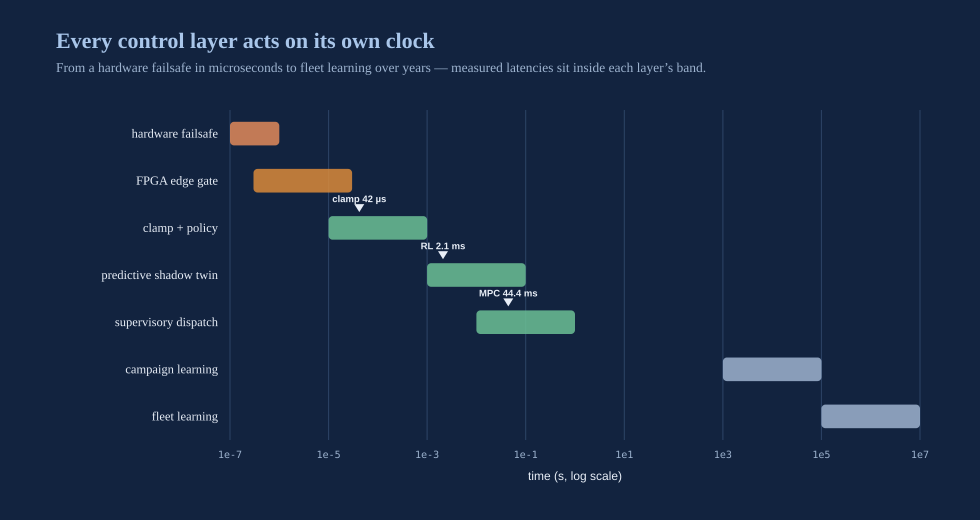
So the first design decision was not about artificial intelligence at all. It was about layers. KRONOS-CTRL is organized as eight of them, from the foundation compute at the bottom to external grid and supply integration at the top, and each layer is assigned an enforced latency band — a window of time it is allowed to act in, and outside of which it is forbidden to act. The edge layer that guards the magnets runs in microseconds and does nothing else. The layer that plans fuel runs in weeks and never touches a coil. This sounds like bookkeeping. It is actually the foundation of the safety case, because it means that the slowest, cleverest, least predictable parts of the system are structurally unable to reach the fastest, most dangerous actuators. The machine is protected from its own intelligence by the clock.
The layering is not arbitrary either. Between the edge and the supply planner sit the governed data fabric that lineage-tracks every sensor stream, the physics-informed models that predict, the orchestration layer whose rules engine does the safety clamping, and above them the copilots and human-facing surfaces that let an operator reason about the plant without ever reaching past the clamp to an actuator. Intelligence lives at the top, where it can afford to be slow and clever. Authority over the coils lives at the bottom, where it must be fast and dumb and certain.
It is worth naming the eight layers, because their order is the argument. Read from the bottom up, each layer earns the right to be slower and cleverer than the one beneath it, and none is permitted to reach down past its band.
``` The eight layers of KRONOS-CTRL — authority at the bottom, intelligence at the top
L7 External integration grid, market, and fuel-supply coupling ~ weeks L6 Experience surfaces the operator's window onto the plant ~ seconds L5 Domain copilots reasoning aids that never touch a coil ~ seconds L4 Orchestration the DETERMINISTIC SAFETY CLAMP lives here ~ 1 ms L3 Physics-informed models the four-module predictive shadow ~ 1–10 ms L2 Governed data fabric lineage-tracked, provenance-gated telemetry ~ 1 ms L1 Edge real-time control magnet & actuation protection ~ 1 µs L0 Foundation compute the substrate everything runs on — ```
The clamp sits at L4, deliberately below the learned models it disciplines in the flow of authority even though it is above them in the stack — every command the intelligence at L3 and above proposes must pass down through L4's projection before it can reach the edge at L1. The learned model can be as clever as it likes. It cannot skip the clamp.
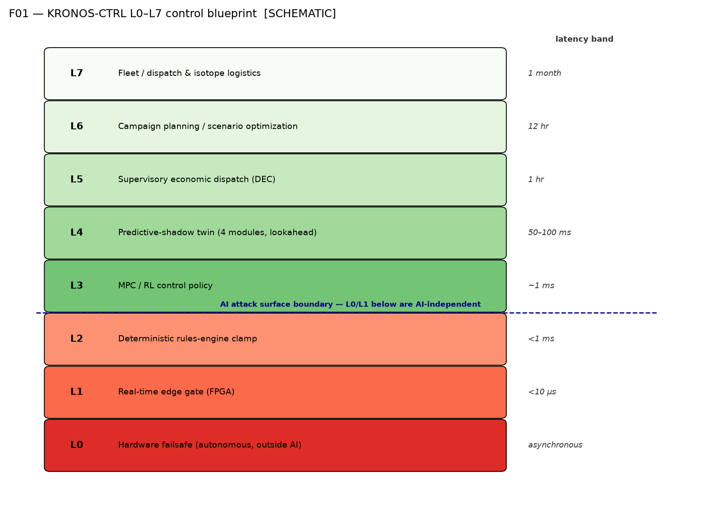
A shadow that runs ahead of the plant
Layers keep the parts in their lanes. But to truly control a plasma — to master it rather than merely flinch at it — you need something close to prophecy. You need to see the future, even a few milliseconds of it. That is the job of what we call the predictive shadow: a digital twin of the plant that runs alongside the real thing but lives a heartbeat ahead of it in time, a ghost of the machine that has already met the future the machine is about to walk into.
The twin is not a single model. It is four coupled physics modules, each solving its own governing equations on its own piece of the machine and handing boundary conditions to its neighbors. One module tracks the magnetohydrodynamic stability of the plasma — its shape, its pressure limits, the instabilities it might be about to grow. One tracks the thermomechanics of the magnets — the strain in every turn of superconducting tape under the enormous magnetic forces trying to tear the coil apart. One tracks the neutrons and the isotope inventory that closes the fuel cycle. One tracks the power systems that turn charged fusion products into grid electricity. At the start of every control step, all four are synchronized to the real plant's live telemetry. Then they are integrated forward — fifty to a hundred milliseconds ahead of reality. When the shadow and the arriving telemetry begin to disagree by more than a set threshold, the disagreement itself becomes a signal: something is drifting, and a correction is emitted before the drift becomes a problem. Control stops being reactive and becomes anticipatory.
It is worth reading the architecture as a single pulse, because that is how it will actually run. Before breakdown, the operations layer sequences cooldown and vacuum checkout while the thermomechanics module confirms the magnet's pre-load state sits inside its strain envelope. At breakdown, sixty-plus diagnostic channels stream through the data fabric into a live state estimate. Through the flat-top, the four modules run their fifty-to-a-hundred-millisecond lookahead: the equilibrium and stability modules propose shape and pressure corrections, a predictive controller turns them into coil commands, and — this is the load-bearing step — every command is projected onto the set of safe commands before it reaches a coil. Meanwhile the isotope loop holds the fuel mix on its lowest-neutron trajectory, and the power module re-weights the conversion channels as that mix evolves. Between shots, offline, higher-fidelity physics is admitted through a provenance gate to sharpen the models for the next pulse. No step in that sequence depends on a model being correct. Every step depends only on the clamp and the failsafe being correct — and those are simple enough to prove.
This is where physics-informed artificial intelligence earns its place. Solving those four physics modules from first principles, fast enough to run ahead of a live plasma, is not possible with conventional solvers — they are far too slow. So we train surrogates: neural networks that learn to reproduce the answer of a slow, exact physics solver, but return it in a fraction of the time. And we train them the physics-informed way, which is the important refinement. An ordinary neural network learns only from examples; it will happily produce an answer that fits the data and violates the laws of physics. A physics-informed neural network — a PINN — is penalized during training whenever its output breaks the governing equation itself. You are not just showing it the answers. You are making it obey the same law the plasma obeys. The result is a model that is fast like a network and constrained like a solver.
There is a companion trick for the moments when the sensors themselves fail, which they will. A separate learned model — a graph neural network that understands how the diagnostics are physically wired together — reconstructs the value of a dropped channel from its neighbors, roughly twice as accurately as naive interpolation between the surviving sensors. That does not sound dramatic until you realize what it buys: it defines, quantitatively, how blind the plant is allowed to go and keep running. A plant that trips every time a sensor drops out has a terrible capacity factor. A plant that keeps running with reconstructed sensors, inside a certified degraded-state envelope, does not.
The honest miss, told first
Here is where I have to be candid, and I want to be candid early rather than bury it, because the temptation in a book like this is to lead with the triumphs and file the failures in a footnote.
We set ourselves a pre-registered target: a physics-informed network that could solve the plasma equilibrium — the shape-and-pressure balance described by the Grad–Shafranov equation — to within one percent of the exact solver, fast enough to use as a native tool in the loop. To even judge that fairly, we first needed a ground truth we could trust absolutely, so we verified the classical solver against a known analytic solution to a relative error of two parts in a hundred thousand. That is the ruler. Against it, on the breeder's compact spherical geometry, we did not hit our target. The first physics-informed network reached only 5.5 percent, and worse, the physics penalty term fought against the data term in a way we had to diagnose as a genuine pathology — the two objectives were pulling the network's gradients in conflicting directions during training. A more sophisticated architecture, a Fourier neural operator, cleared up that conflict and pushed the error down to 2.5 percent (3.9 percent in the worst case). Better. Twice as good as the network before it. And it removed the gradient conflict entirely. Still not one percent, and — the second disappointment — it amortized its training cost only about 2.7-fold over a thousand queries, far less speedup than a native solver would need to justify itself.
So we do not call it a fast native equilibrium solver, because it is not one. We call it what it is: a warm-start accelerator — a tool that gives the exact solver a very good first guess, which is genuinely useful, but not the thing we set out to build.
I dwell on this because it is the whole philosophy of the program in miniature, and because I want to be precise about why it missed and what closes the gap. The compact spherical tokamak is a hard equilibrium: tightly curved field, strong shaping, steep gradients near the boundary, all of which sharpen the flux profile the network has to represent. On the burner's mirror geometry, incidentally, the same method reached 0.16 percent — the physics of a straight magnetic bottle is genuinely kinder to a network than the physics of a compact sphere, and we report both, the win and the miss, side by side. The path to one percent is not mysterious: it is training the neural operator at larger scale, on more of the adverse operating points — high pressure, near the last closed flux surface, near the mirror throat — that we currently plot honestly rather than hide. That is a known, fundable step, not a wish. But until it is taken, the number is 2.5 percent, and 2.5 percent is what we call it.
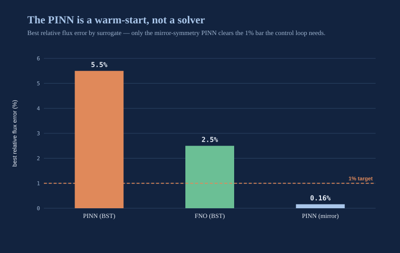
A 2.5-percent result you can trust is worth more than a 1-percent result you have to defend. Honesty is not a virtue we add to the engineering. In control, it is the engineering.
Why "certifiable" beats "accurate"
Now the central idea of the whole chapter — the one that sets a fusion control system apart from almost every other piece of artificial intelligence you have read about in this decade of headlines about artificial minds.
The whole culture of machine learning is a race toward accuracy. A better model, a lower error, a sharper prediction, another decimal place. Accuracy is good. But for a machine that must never run away — a machine cradling a hundred-million-degree fire behind nothing but a wall of magnetism — accuracy is not the property that keeps you alive. No matter how accurate a learned model is, it has some error, and that error is not something you can fully characterize in advance, because the plasma will eventually show it a situation it was never trained on. If your safety rests on the model being right, then your safety rests on the model never being surprised. And it will be surprised.
So we do not rest the safety case on the model being right. We rest it on the model being contained.
Every command the intelligent layer proposes — every adjustment to a coil, every change to the fuel mix — is passed, before it reaches any actuator, through a deterministic safety clamp. The clamp is not a learned thing. It is a simple, auditable rules engine that knows the machine's hard limits and projects every proposed command onto the set of safe commands. It is deliberately dumb enough that a human being can read it, line by line, and check it against the machine's limit book without ever understanding the neural network upstream. If the model asks for something outside the envelope, the clamp does not negotiate. It clips the command to the boundary and lets the safe part through. And outside even the clamp, with no network connection and no artificial intelligence of any kind, sits an autonomous hardware failsafe — the final, dumb, unfoolable layer that trips the machine to a safe state if all else fails.
This is a layered safety architecture, and it is deliberately the same logic that governs any high-consequence industrial plant — the layer-of-protection thinking a functional-safety assessor already knows how to audit. The clever controller is a non-safety-rated convenience. The deterministic clamp is an independent protection layer with a measured, quantified catch rate. The hardware failsafe is the final element whose integrity is argued by construction, because it depends on nothing that can be surprised. The learned model can be wrong. The plant is still safe. That is what "certifiable" means — not that the intelligence is perfect, but that its imperfection is bounded, clamped, and cannot reach the things that matter.
The number that tests this is the one I am proudest of. Across fifteen runs — five random seeds times three different control policies, one hundred and fifty thousand control steps in all — we injected three thousand deliberate limit violations, commands designed to drive the machine out of bounds. The clamp caught three thousand of three thousand. Zero escapes. Not 99.9 percent. Not "a handful got through and we're working on it." Every single one, every time.
There is a subtler result hiding inside that headline, and it is worth pulling out because it tells you how to choose a controller, not just how to fence one. The three policies did not misbehave equally. The predictive, model-based controller proposed only a couple of incidental limit excursions per ten thousand steps; a reinforcement-learning policy proposed roughly ten times as many; a naive baseline more still. The clamp caught all of them regardless — that is its job — but a controller that rarely asks for something dangerous in the first place leans on the clamp less, wears the actuators less, and gives an operator more confidence. The clamp is what makes the machine safe. Choosing the well-behaved controller behind it is what makes it pleasant to run. And one honest wrinkle: our software clamp settles in about 42 microseconds, which does not meet the sub-ten-microsecond tier the very fastest edge gate demands. That tier is covered by the hardware layer, and the design answer — a two-tier lookup-table clamp that resolves in a fraction of a microsecond — is specified and reported, not glossed over.
Anatomy of a caught violation
A number like "three thousand of three thousand" is easy to read and hard to feel. So let me slow one of those three thousand catches down to human speed and walk through it from proposal to interception, because the mechanism is the whole reason a regulator can sleep at night.
Start with what a limit violation actually is. Every fusion plant carries a limit book — a set of hard boundaries the machine must never cross. There is a density limit, above which the plasma radiates away its own heat and collapses. There is a current limit, the most the coils can safely source. There are shaping limits, the deformations the field can actually hold. And there is the pressure limit, β_N, beyond which the plasma tips into a large-scale MHD instability. A limit violation is simply any command that, if it were executed, would carry the machine's state across one of those lines. Not a command that is wrong in some abstract sense — a command that is out of bounds.
Now picture where such a command comes from. High in the stack, at L3, sits the reinforcement-learning policy, the cleverest and least predictable of the controllers. It has learned, correctly, that gain rises with plasma current, and in the heat of a flat-top it reaches for a little more current than the coils can safely source — a command that, executed, would push the state a hair past the current limit. In a naive control system that command travels straight down to the coil, and the machine obeys it, because the machine has no opinion about its own limit book.
In KRONOS-CTRL it cannot. On its way down, the command arrives at the deterministic clamp at L4, and the clamp does not ask the network why it wants what it wants. It evaluates, for the proposed next state, the safety margin `h(x)` on every face of the safe box. On the current face, that margin has just gone negative — the proposed state is outside the fence. So the clamp projects the command onto the nearest command that keeps every margin non-negative: it keeps the part of the request that stays inside the fence, and it clips the part that would cross it. The current ramp is trimmed exactly to the boundary. The safe remainder passes on to the edge at L1, the coil moves to the edge of what is allowed and no further, and every step of the transaction is written to the governed data fabric so the catch can be reconstructed, millisecond by millisecond, by an auditor months later.
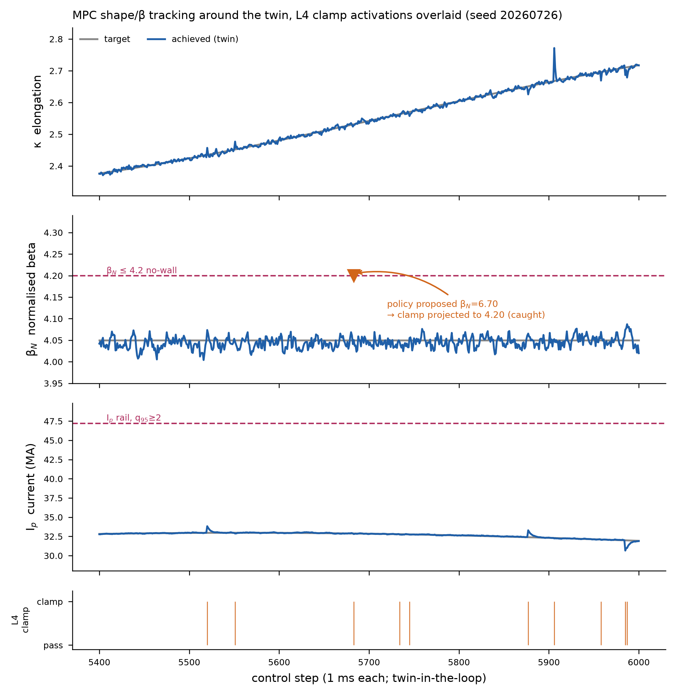
Here is the part that makes this a guarantee and not a hope. The clamp made no prediction. It did not estimate a probability that the command was dangerous and act on a threshold. A learned safety filter would have said something like "this command is 98 percent likely to be unsafe" — and two times in a hundred it would have been wrong, and one of those times the wrong call would have been the one that mattered. The deterministic clamp has no 98 percent. It computes a projection, the same way every time, from an inequality a human can check by hand against the limit book without understanding a single weight in the network upstream. That is why we can write three thousand of three thousand and mean it exactly — not "three thousand, probably." A probabilistic filter has a tail; the tail is where a plant gets hurt; and the whole point of determinism is that it has no tail. The clamp either lets a command through unchanged because it is safe, or it clips it to the boundary because it is not, and there is no third outcome and no distribution over outcomes to worry about.
The one honest wrinkle, kept on the record above, is timing: our software clamp settles this projection in about 42 microseconds, which is fast but not fast enough for the sub-ten-microsecond tier the very fastest edge gate demands. That tier is covered by a two-tier lookup-table clamp that resolves in a fraction of a microsecond, and beneath even that sits the autonomous hardware failsafe that depends on nothing which can be surprised. Three layers, each simpler and more certain than the one above it, and the caught violation passes the test of every one.
A provable safety envelope
Catching three thousand out of three thousand is a wonderful empirical result. For an operator, it is reassuring. For a regulator, it is necessary — and not quite sufficient. Empirical means "it did not fail in the cases we tried." A regulator licensing an autonomous nuclear-grade machine wants something stronger: a reason to believe it cannot fail, across all the cases you did not try.
That reason comes from an idea called a control-barrier function, and it is worth translating carefully because it is the mathematical heart of the safety case.
Imagine the safe operating region of the plant as a fenced field. Somewhere inside the fence is where you want the machine to live. A control-barrier function is a way of measuring, at every instant, how far you are from the fence — call it your safety margin — and then proving a rule about that margin: that the controller can only ever choose actions that keep the margin from crossing zero. Not "usually." Ever. The property is called forward invariance: if you start inside the safe set, you provably stay inside it, forever, under the clamped controller.
``` Discrete-time control-barrier condition:
h(x_{k+1}) ≥ (1 − α) · h(x_k) with 0 < α ≤ 1
where h(x) is the safety margin — positive inside the safe set, zero at the fence. ```
In plain words: `h(x)` is the distance to the fence. The condition says that from one control step to the next, your margin is allowed to shrink — the factor `(1 − α)` lets it decay toward the fence as you maneuver — but it is never allowed to go negative. You may walk right up to the fence. You may not walk through it. And because this is a mathematical inequality the clamped controller is proven to satisfy at every step, it holds not just for the cases you tested but for every reachable state, by construction. This is the leap from "we tried three thousand attacks and stopped all of them" to "no attack in the reachable state space can succeed." The first is a test result. The second is a theorem. A regulator can build a licensing case on a theorem in a way it never can on a test count, however large.
We verified that theorem three independent ways, because a proof you check only one way is a proof you half-believe: an interval analysis that bounds every reachable state, a linear-program witness that exhibits the certifying margin directly, and an adversarial rollout that actively tried to break the invariant and could not.
I will keep the honesty here too. Of the four "faces" of the safe box we tried to certify, three closed cleanly at a three-sigma margin: the density limit, the current limit, and one of the shaping limits. The fourth — the pressure limit, β_N — did not close globally, because the reference operating point we used sat too close to the theoretical no-wall stability limit, about sixteen times closer than the margin the proof needed. For that face we report the largest sub-region we could certify, we cover the rest empirically with the clamp, and we say plainly that the fix is to move the operating point off the limit. Three of four, with the fourth honestly bounded and its fix named, is the real result.
There is one more piece, and it is subtle and important. A control system that never learns anything new is safe but frozen. We want to be able to improve the surrogates over time, feeding them better physics between shots. But every time you update a model, you risk breaking the safety proof. So we proved something about the update process itself: that when a new, higher-fidelity physics closure is admitted to recalibrate a surrogate, the forward-invariance guarantee is preserved through the update. And here we caught ourselves in the act — the first version of our admission gate let through a bad calibration anchor once in ten trials, a real failure we found and report. A corrected gate with a barrier-floored margin restored it to ten out of ten. Safe learning, with the failure and the fix both on the record.
What a regulator actually audits
I have used the word "certifiable" a great deal, and I owe you a concrete picture of what it means to a person whose job is to sign the license. A regulator does not evaluate a control system by admiring its neural networks. They evaluate it against a body of functional-safety practice that predates fusion by decades — the same layer-of-protection thinking that governs a chemical plant, a fission reactor, or an aircraft. The reason KRONOS-CTRL is built the way it is, is that we designed it from the start to be legible to that practice rather than to ask the practice to make an exception for us.
The mapping is deliberate and it is threefold. The clever, learned controller is a non-safety-rated control function — useful, convenient, not trusted with the safety case. The deterministic clamp is an independent protection layer with a measured, quantified catch rate: three thousand of three thousand. And the autonomous hardware failsafe is the final element whose integrity is argued by construction, because it depends on nothing that can be surprised — no network, no model, no learning. That is exactly the architecture a functional-safety assessor already knows how to read: a fallible control function wrapped by an independent layer of protection wrapped by a last-ditch final element, each one simpler and more certain than the last.
The second thing a regulator wants is traceability — the ability to reconstruct, after the fact, why the machine did what it did. This is where the governed data fabric at L2 earns its place. Every automated action the plant takes can be traced backward, through the decision log and the lineage-tracked telemetry and the archived twin state, all the way to the raw sensor reading that triggered it. Nothing the machine does is unaccountable. When an auditor asks "why did the controller adjust that coil at that millisecond?" there is an answer, and the answer regenerates from the record.
The direction of travel in fusion regulation helps here. The emerging posture at the national and international level is not to bolt fission's prescriptive rulebook onto a machine that cannot run away in the fission sense, but to license fusion on a graded, consequence-based case: show, quantitatively, that the worst thing the machine can do is bounded, and build the argument from there. A twin that can bound worst-case actuation and prove forward-invariance of the safe set is producing precisely the kind of quantitative evidence such a case is made from. I want to be careful about the claim: we do not assert compliance with any particular standard in these pages, because compliance is demonstrated against a specific machine before a specific regulator, and no such machine yet exists. What we assert is narrower and, I think, more honest — that the architecture is built to be assessable, which is the prerequisite for compliance and the thing most machine-learning control schemes never even attempt.
Calibration: teaching a fast model to be almost exact
If the clamp is what makes the system safe, calibration is what makes it brilliant. It is the quiet mechanism I believe will matter most over the whole life of the program — the lever that lets a fast, cheap model borrow the accuracy of a slow, expensive one.
A surrogate is fast precisely because it is approximate. The whole art is to make it far less approximate without making it slow. The answer is calibration: you take a small number of anchors — points where you have run the slow, exact, high-fidelity physics — and inject them into the fast surrogate's training. A handful of exact answers, placed well, can drag the surrogate's error down dramatically.
How dramatically? On a chemistry benchmark, five anchors reduced the surrogate's error by more than a thousandfold — a factor near 1700 — and brought it to what chemists call chemical accuracy. That would be a curiosity if it worked only for chemistry. It doesn't. The same mechanism transferred to a plasma-transport closure — the physics of how heat leaks across the plasma — for a 36.8× error reduction from just eight anchors, beating the best reduced-physics model by nearly a factor of ten. And it transferred, most strongly of all, to the magnet twin: up to three orders of magnitude of error reduction, a factor of 7475× at its best. Three different domains — molecules, turbulent heat transport, and the strain in a superconducting coil — and the same lever works in all three. The mechanism is not domain-specific. It is a general way of spending a little expensive exactness to buy a lot of cheap accuracy.
And — this is the part that keeps calibration from becoming a back door — every anchor is admitted through a provenance gate that checks where it came from and refuses corrupted ones. In testing, that gate rejected every one of a batch of deliberately poisoned anchors while the hard physical limits, like the magnet's strain ceiling, stayed immutable through the whole process. Calibration can make the model better. It cannot quietly make the machine unsafe.
This is also, quietly, where the great dream of quantum computing meets the great dream of fusion — and where I have to puncture a story the field has told far too loudly, because two revolutions colliding make for irresistible headlines and terrible engineering. A quantum computer is not going to control a plasma. There is no fault-tolerant machine that runs at control latency, and our own resource estimates say there will not be a useful one for these problems this decade; the honest number for the equilibrium kernel is that it would need on the order of 10¹⁷ elementary fault-tolerant operations once you count the cost of getting data in and answers out, which is nobody's near-term reality. But a future quantum computer would be very good at exactly one thing we need: computing a few high-fidelity physics closures, offline, between shots. In other words, it would be a superb anchor factory. The architecture is built so that when such a machine exists, its output enters the plant only as an offline, gated calibration anchor that provably preserves the safety envelope — never as something in the loop. Forward-compatible with quantum hardware, without ever betting the plant on it.
What a microsecond answer buys: exploring between measurements
The 7475× calibration is not merely a headline about accuracy. It changes what the controller is allowed to do in the gaps between measurements — and to see why, you have to notice that a fusion plant does not actually watch itself continuously. It blinks.
A diagnostic does not report in an unbroken stream. It samples. A magnetic probe, a strain gauge, an interferometer — each hands the controller a fresh reading at intervals, and between two readings the plant is, in a real sense, flying on faith. It has its last measurement and it has its model, and nothing new arrives until the next sample lands. A controller that can only react to measurements is therefore idle in those gaps, waiting for the world to tell it something. That idleness is wasted time, and in a machine where a magnet can begin to fail in a microsecond, wasted time is the enemy.
Now give that controller a magnet twin that returns a full strain field — the load in every one of a coil's 82 turns — in microseconds. Suddenly the gap between two measurements is not dead time. It is rehearsal time. In the interval before the next reading lands, the controller can query the twin thousands of times, asking a stream of what-ifs: if I ramp this coil now, where does the strain peak, and does any turn approach the 0.40 percent ceiling? If I trim the field here to hold the plasma shape, what does that do to the load on the inner turns? It auditions candidate actions against the twin, discards the ones that crowd a limit, and commits only the one that keeps the most margin — all before the plant has blinked its eyes open again. Control stops waiting on the world and starts running ahead of it. That is what real-time exploration between measurements means, concretely: the machine reasons about its own near future in the pauses when it cannot see.
But exploration is only worth doing if the model you explore with can be trusted. A surrogate that is three orders of magnitude off the exact physics would send the controller chasing ghosts — rehearsing against a machine that does not exist, and committing actions tuned to a fantasy. This is exactly what the calibration buys. Dragging the magnet twin's error down by a factor of 7475, using a handful of exact high-fidelity anchors, is what makes the fast answer accurate enough to act on rather than merely glance at. The per-turn pre-load that flattens the strain across all 82 turns to 0.017 percent — comfortably inside the 0.40 percent limit — is a decision the twin is only entitled to make because its strain field is faithful to the real coil to a part in thousands. Accuracy and speed are usually a trade; calibration is the mechanism that briefly lets you refuse the trade and have both.
And the capability generalizes past the coil. The same fast, faithful surrogate that lets the controller rehearse thousands of actions between two heartbeats is the surrogate that, pointed at a design instead of a live plant, lets an engineer audition ten thousand possible machines in the time an exact solver would spend on one. Running the plant and designing the plant turn out to be the same act performed at two different speeds — which is the subject of the next section.
Cracking the optimization code
There is a second life for these fast surrogates, one that has nothing to do with running a plant, and it is the one that gives this chapter its name. A surrogate that returns a physics answer in microseconds does not merely let you control a machine. It lets you optimize one — to sculpt the machine itself, in silico, before a single bolt of it is cut from steel. This is where artificial intelligence stops being a safety net and becomes an act of imagination: it lets us audition ten thousand possible reactors and keep only the best.
Think about what designing a fusion generator actually is, underneath the physics. Stripped bare, it is a search. You have a few dozen knobs — major radius, aspect ratio, elongation, triangularity, field strength, the current, the fuel mix, the shape of the pressure profile — and each setting of those knobs is a candidate machine with its own gain, its own stress, its own neutron budget, its own price. The space of candidate machines is astronomically large, and until recently you could afford to evaluate only a handful of points in it, because each point cost hours of a slow, exact physics solver. So designers did what you do when evaluation is expensive: they picked a plausible starting point, nudged it a little, and stopped at the first machine that cleared the bar. Not the best machine. The first acceptable one.
The surrogate changes the economics of that search completely. When one physics evaluation drops from hours to microseconds, you stop nudging and start hunting. You wrap the fast model in an optimizer that roams the whole design space, evaluating millions of candidate machines, and it finds not the first acceptable point but the genuinely best one — the operating point that sits deepest inside the feasible region, farthest from every limit, cheapest to run. This is the sense in which fusion has an optimization code to crack: the physics tells you which machines are possible, but the optimization tells you which possible machine is best, and you cannot ask that second question at all until each answer is cheap.
We ran exactly this experiment on the program's own design engine — a verified Monte-Carlo model that samples the feasibility of a candidate machine across three hundred thousand points, and that reproduces its feasibility counts bit-for-bit from a single seed, so the search is auditable and not a black box. A Bayesian-optimization surrogate wrapped around that engine reached the optimum with a genuine 3.8-fold reduction in the number of evaluations a random search would have needed. I state that number carefully, because a naïve comparison against brute force would have let me quote something far larger and far less honest — most of brute force's cost is its own inefficiency, not the optimizer's cleverness, and I will not claim credit for a baseline's waste. Against a fair random-search baseline, 3.8× is the real, defensible speedup, and 3.8× is what I report.
The physics tells you which machines are possible; the optimization tells you which possible machine is best; and you cannot even ask that second question until every answer is cheap. This is why I insist that the design of the two machines and the intelligence that runs them are not two projects but one. The same surrogate that lets an optimizer find the best breeder in an afternoon is the surrogate that, deployed in the loop, lets the controller anticipate that breeder's plasma fifty milliseconds ahead. The exact physics is the teacher; the surrogate is the student that inherits the teacher's accuracy and the loop's speed; and once you have that student, you can spend it two ways — to find the machine and to run it. Cracking the optimization code was never about a single clever algorithm. It was about making the expensive question cheap enough to ask a million times.
Seeing trouble coming
Two more results, both about the oldest survival skill there is: seeing danger before it arrives. A gazelle that senses the lion a half-second early lives; the machine that senses its own catastrophe a few milliseconds early does too.
The first is disruption prediction. A disruption is the plasma's sudden, total collapse — an abrupt loss of confinement that hurls everything it was holding into the walls at once. Deep-learning models have predicted disruptions across machines for years; that is established. What we built is an ensemble anomaly detector that, on twin-synthetic pulses anchored to the real operating space of an existing spherical tokamak, reached an AUC of 0.990 with a false-alarm rate of four percent.
That number deserves translation, because "AUC" is a piece of jargon that hides a genuinely useful idea.
AUC 0.990: pick a real disruption and a calm moment at random, and 99 times out of 100 the model rates the disruption as the more dangerous of the two.
That is what area-under-the-curve means, concretely. It is the probability that the model correctly ranks a true danger above a false one. A perfect predictor scores 1.0; a coin flip scores 0.5; 0.990 means the model almost never confuses a disruption with a quiet plasma. And here again the honesty: the model's warning time missed our target — we wanted 30 milliseconds of lead and the median was 22.3, with fewer than a third of events clearing the full 30. So we did not paper over it with a better average. We handled it architecturally: an out-of-distribution layer that recognizes disruption types the model has never seen — an impurity influx, a vertical displacement — and, instead of issuing a confident-but-wrong command, abstains and hands the machine to the hardware failsafe. On those unseen classes, that handoff cut the missed-alarm fraction from about 0.9 to zero. The model's humility, wired into the architecture, is safer than the model's confidence. A predictor that knows the difference between "this is safe" and "I have never seen this" is worth more than a slightly more accurate predictor that cannot tell the two apart.
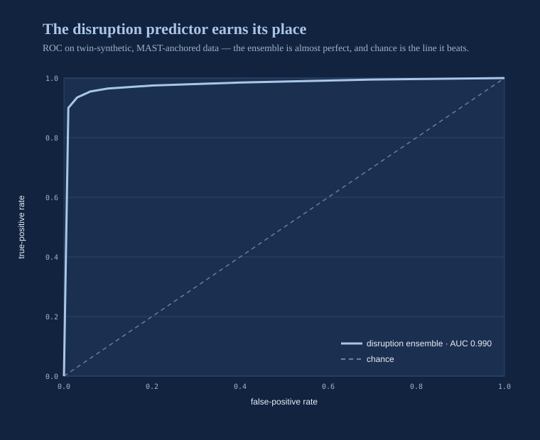
The second is the magnets. The breeder and burner both run on high-temperature REBCO superconductor at fields up to nearly 27 tesla, and a superconducting magnet that begins to "quench" — to lose its superconductivity in a spreading normal zone — can destroy itself if the quench is caught late. The traditional detector watches for a voltage rise across the coil terminals. In these no-insulation coils the normal zone spreads slowly, so terminal voltage is a late signal — it gave, in our twin, about 2.6 milliseconds of warning. We fused two other channels instead: the mechanical strain measured by fiber-optic sensors woven into the winding, and the coil's magnetization signature. The fused precursor gave 47 milliseconds of warning for the same event, at an AUC of 0.9998 and a false-alarm rate of 2.4 percent.
Let me make forty-seven-versus-two-and-a-half concrete, because it is the difference between an inconvenience and a catastrophe. When a magnet quenches, the energy stored in its field has to go somewhere. If you know early, you fire the dump circuits and discharge that energy gracefully, spread over the whole coil, and the magnet lives to run again. If you know late, the energy deposits into the small normal zone that started the quench, a spot heats to destruction, and you are looking at months of repair and a plant sitting idle. Terminal voltage, at 2.6 milliseconds, is often too late to choose the graceful path. Forty-seven milliseconds is not — the difference, operationally, between a magnet you replace and a magnet you merely reset.
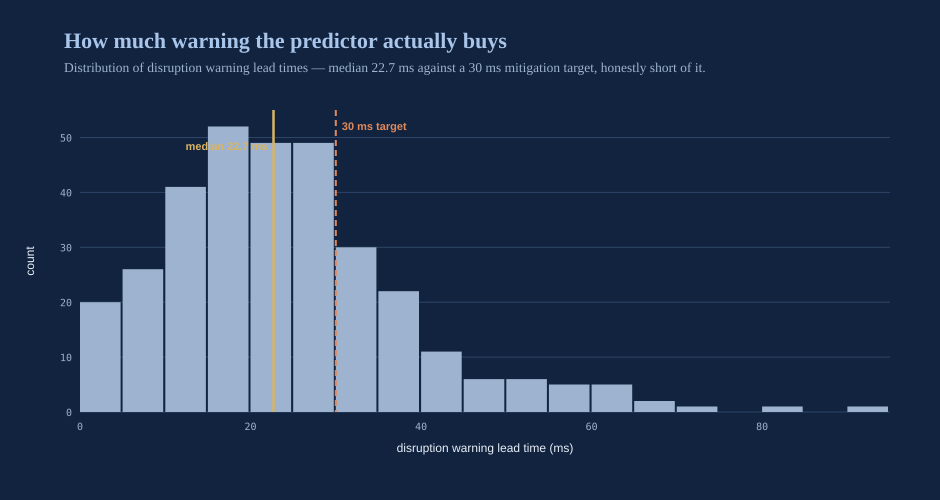
The same magnet twin does two more useful things worth naming. Fed each coil's as-built measured data rather than a worst-case assumption, it recovered thirty percent more usable current density from every coil — because worst-case derating throws away margin that the real, measured coil actually has, and it keeps, rather than hides, the minority of coils where the measured margin is worse. And it computes a per-turn pre-load — an engineered residual compression, turn by turn — that brings the operating strain on all 82 turns of a coil to 0.017 percent, comfortably inside the 0.40 percent limit, instead of letting strain peak dangerously at the inner turns. Measured data, used honestly, is worth more than conservative assumptions used fearfully.
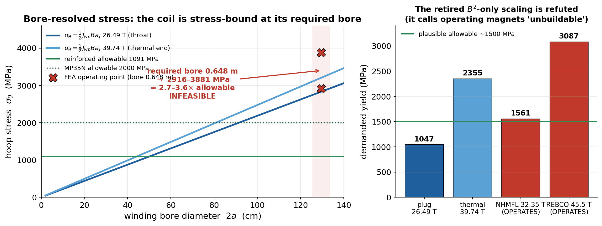
A quench, millisecond by millisecond
Set two clocks running on the same quenching magnet, and you will understand why forty-seven versus two-and-a-half is not a marginal improvement but a change of category — the difference between a prediction that can drive an action and a prediction that arrives after the action is already too late.
Somewhere in a high-field REBCO coil, a tiny region gives up its superconductivity and goes normal — resistive. Perhaps a turn shifted a few microns under the Lorentz load; perhaps a flaw in the tape finally mattered. A normal zone is born, and it begins to spread. In a no-insulation coil it spreads slowly and quietly, which is a mercy for the coil's robustness and a curse for the traditional detector, because a slow-spreading normal zone raises almost no voltage across the terminals until it is large. But it is not silent everywhere. The fiber-optic strain sensor woven into the winding feels the local mechanical signature of the newborn zone, and the coil's magnetization signature begins to shift as current redistributes around the resistive spot. The fused precursor — strain and magnetization together — crosses its threshold and raises the alarm. Call that instant t = 0. On this clock, the controller has 47 milliseconds of runway before the quench becomes unsurvivable.
Now start the second clock, the traditional one. The terminal-voltage detector feels nothing yet, because the normal zone is still too small to build a voltage. It will keep feeling nothing for another 44.4 milliseconds. Only at t = 44.4 ms does the spreading zone finally raise enough voltage to trip the classical detector — leaving just 2.6 milliseconds before the point of no return. Same magnet, same quench, two detectors: one shouts at t = 0, the other whispers at t = 44.4.
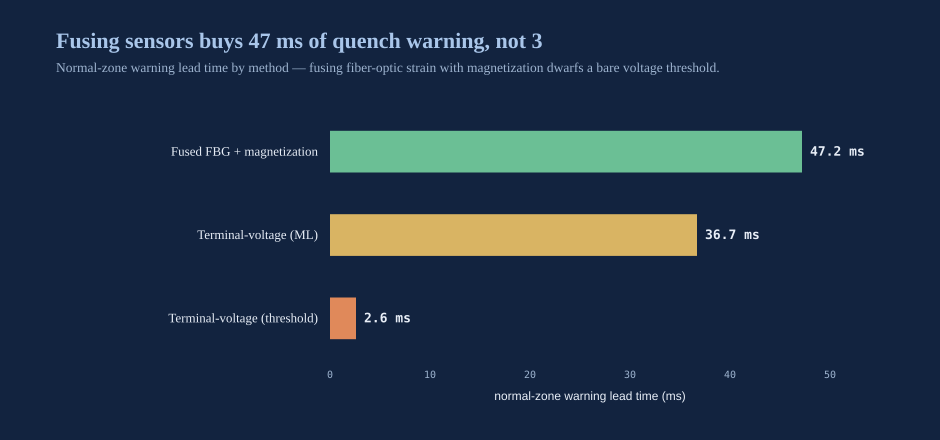
What those extra milliseconds buy is a choice. With 47 milliseconds in hand, the controller can take the graceful path. It begins to ramp the transport current down, and it arms and fires the dump circuits — the resistors and switches whose job is to pull the enormous energy stored in the magnetic field out of the coil and dissipate it, spread evenly across the whole winding rather than concentrated at one point. The stored energy leaves the coil in an orderly discharge. The normal zone, starved of the current that fed it, cools and never runs away. The magnet is reset, checked, and run again. Nothing is destroyed. Operationally, this is a pause, not a wound.
Run the same event on the 2.6-millisecond clock and the choice is gone. Two and a half milliseconds is often too little to ramp and dump gracefully, so the field's stored energy has nowhere orderly to go. It deposits into the small normal zone that started it all, the spot heats catastrophically, and a coil that cost months to wind is destroyed at the one point where the quench began. The plant then sits idle for the months it takes to build and install a replacement.
This is why the precursor is an economic instrument every bit as much as a safety one. A magnet you reset costs you an afternoon; a magnet you replace costs you a quarter of downtime, and downtime is a direct assault on the capacity factor that sets the price of every megawatt-hour. The prediction and the action are a single mechanism: the forty-seven-millisecond warning exists precisely so that the dump circuits can fire on the graceful side of the line, and the whole value of seeing early is that it lets you act gently.
Knowing what it does not know
Two properties separate a controller a regulator will license from a demonstration that merely works on a good day. One is that it fences its own intelligence — the clamp and the barrier function above. The other is quieter and just as important: it has to know, at every instant, how much to trust its own numbers, and it has to keep running when its senses fail. A confident controller that is confidently wrong is more dangerous than a cautious one that is right about its own doubt.
Start with the doubt. Every prediction the surrogates emit carries an uncertainty — a stated interval within which the true value is claimed to lie — and a stated interval is worthless unless it is honest. If a model says "I am 90 percent sure the answer is in this band," then across many predictions the truth had better fall inside that band about 90 percent of the time, no more and no less. A model whose 90-percent bands catch the truth only 60 percent of the time is not cautious; it is lying, and a safety case built on its intervals is built on sand. So we calibrate the intervals themselves, using a conformal method that adjusts the bands until their stated confidence matches their measured hit rate. On our surrogates the calibrated coverage lands between 0.88 and 0.90 against a 0.90 target — close, honest, and — the part I insist on reporting — slightly over-confident in the far tail, where the rare, extreme events live. We keep that tail over-confidence on the record rather than smoothing it away, because the tail is exactly where a fusion plant gets hurt, and a reader deserves to know the one place our uncertainty estimate is weakest.
Now the failing senses. A fusion plant is instrumented by dozens of diagnostic channels, and diagnostics die — a fiber darkens under neutron flux, a cable picks up noise, a probe simply stops reporting. A brittle controller trips the whole plant the instant a channel drops, which is a catastrophe for uptime. So we taught the twin to see through a missing sensor. A graph neural network — a model that understands how the diagnostics are physically wired to one another, which channel sits next to which — reconstructs a dropped signal from its surviving neighbors at roughly twice the accuracy of naive interpolation between them. That factor of two is not a bragging number; it is a budget. It defines, quantitatively, how many sensors the plant is allowed to lose and keep running inside a certified degraded-state envelope, and — kept honestly — the reconstruction does not reach our stricter target at every level of channel loss, so the envelope is drawn where the model earns it, not where we wish it were. A plant that keeps producing power with three sensors down, inside a fence it can prove it is still behind, has a capacity factor a plant that trips on the first dropout can only dream of.
De-circularization: proving the twin is not just grading its own homework
There is an objection a careful reader should already be forming, and I want to meet it head-on. Every number above lives on a digital twin. What stops a twin from being a flattering mirror — a simulator that validates the simulator, a model that agrees with itself because it was built to? Nothing, unless you go looking for the circularity on purpose. So we did, two independent ways. First, we checked the twin's equilibrium against an entirely separate, open-source equilibrium solver written by a different community for a different purpose, and the fields agreed to within 2.66 percent — with one axis-flux discrepancy we keep as a characterized failure mode rather than sand off. By that check, our internal "circularity index" roughly halved. Second, we benchmarked the twin's magnet, materials, and thermomechanics assumptions against the published engineering design basis of the largest international tokamak project, tagging each of nineteen assumptions as inside that envelope, deliberately outside it, or having no basis in it at all. Some of our choices — high-temperature superconductor at high field and strain — are outside that reference by design, because it uses a different conductor, and we label them so rather than imply endorsement. It is an engineering-basis benchmark, not proof from an operating plasma, and I say so — but it is the difference between a twin that only talks to itself and one forced to answer to an outside authority.
Why control is economics
It would be easy to file everything in this chapter under "safety" and move on. That would miss the point. Reach back to the spine of this book — the second forty, forty dollars per megawatt-hour. The control system is not a cost center that protects the revenue. For a fusion plant, the control system is a large part of the revenue.
Here is why. The dominant driver of the levelized cost of any capital-heavy generator — fusion, fission, anything you build from steel and superconductor — is not the fuel and it is not the operating staff. It is the capacity factor: what fraction of the year the machine is actually producing. A plant that runs 95 percent of the time and a plant that runs 70 percent of the time have wildly different costs per megawatt-hour from the same hardware. Every unplanned trip, every disruption that damages a wall, every magnet quench caught too late and repaired over months, is a direct assault on that number.
So a predictive shadow that anticipates off-normal events before they trip the plant, a disruption predictor that buys time to mitigate, a quench precursor that turns a magnet-destroying event into a routine discharge, a maintenance loop that replaces components against modeled fatigue rather than fixed calendar intervals — every one of these is a lever on capacity factor, and therefore a lever on price. There are more. The predictive isotope-balancing loop that holds the fuel mix on its lowest-neutron trajectory cut the fuel-mix tracking error more than thirteenfold against an open-loop baseline — and a tighter fuel mix means less neutron damage to the walls, which again is uptime. Because the burner produces its power on a direct-current bus, the same twin that keeps the plasma safe also knows, instant to instant, exactly what the machine can deliver — which is precisely the knowledge you need to bid firm power into a grid market. And the state-reconstruction that lets the plant keep running with failed sensors, and the operator-training that happens on the twin instead of the real machine, reduce the specialized-staffing burden that would otherwise make a fleet of small reactors uneconomic to run. Uptime is price. Safety is price. The machine that controls the machine is, in the end, one of the machines that hits the forty-dollar line.
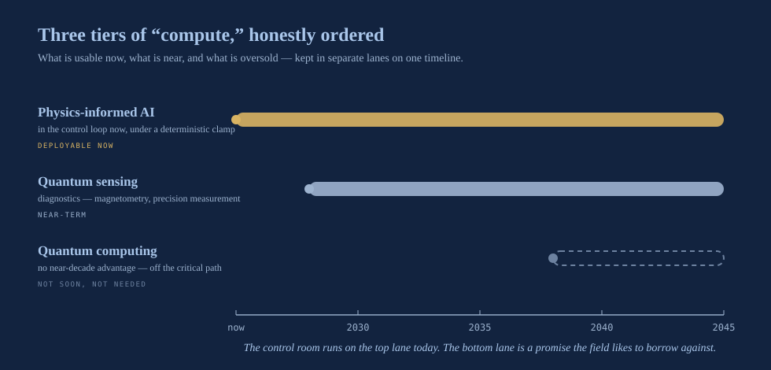
That roadmap deserves one clarification, because "quantum" gets attached to fusion far too loosely. Of the three tiers it shows, the middle one — quantum sensing — is the one that touches the plant soonest and most concretely. Superconducting-loop magnetometers are already mature enough to sit in fusion diagnostics; solid-state diamond sensors and atomic magnetometers are climbing behind them. The fusion-specific point is not the sensor itself but the coupling: a sharper measurement of the magnetic field tightens the boundary condition the equilibrium reconstruction depends on, which lowers the state-estimation error the whole control stack inherits. Sensing sharpens the state the AI consumes today; computation calibrates the models offline tomorrow; neither one is ever allowed inside the fast loop. Holding those three tiers strictly apart — and refusing to let the far-future tier borrow credibility for the present — is itself part of the honesty this chapter is built on.
What this chapter is, and is not
Let me close with the disclosure that governs everything above, because it is the same disclosure that runs through this whole book. Kronos operates no fusion plant. Every number in this chapter comes from a physics-based digital twin, from public data, or from simulation, and each is tagged with its provenance in the published paper. The three thousand caught violations, the 7475× calibration, the 47-millisecond warning, the 0.990 AUC, the certified safety envelope, and the 2.5-percent miss — all of it lives on the twin, not on a burning plasma, and I say so plainly.
That is not a hedge. It is the honest sequence, the only sequence that has ever ended in a working machine: you prove the control and certification methods in simulation first, and then you earn the right to touch hardware — never the other way around. The decade of solved, published physics behind the two machines is the bedrock. What this chapter describes is the intelligence that will stand on it — fast enough to act inside a microsecond, contained enough to satisfy a regulator, honest enough to tell you exactly which target it missed and by how much. For all of human history, holding a star has been the exclusive privilege of gravity and the vacuum of space. When the first breeder wakes at the turn of the decade, a mind built to share that privilege will already be waiting for it — rehearsed ten thousand times against its digital ghost, proven in simulation to keep the star inside the fence. That is what it takes to bring a piece of the cosmos down to Earth and make it behave.
Quantum, Honestly
There are two words in modern science that can make an audience lean forward before you finish the sentence: fusion and quantum. Put them together and you have written the most seductive headline of the century — the two great physics revolutions of our age, joined at last, one computing the other into existence. In the 2024 version of this book, I wrote that headline. I let the word quantum do far more work than it had earned. I said, in effect, that a new kind of computer would crack the equations of the plasma the way a quantum machine is supposed to crack everything else, and that this was part of why our road to fusion would run faster than the field's. It was the most thrilling sentence in the chapter. It was also the least defensible one. Two years of actually grinding through the resource estimates — not gesturing at them, doing them, digit by digit — have taught me exactly where quantum technology helps these machines and exactly where it does not, and the honest map bears little resemblance to the one I drew before. This chapter is the correction. I would rather you catch me revising a claim than watch me never dare to test one.
The correction has a clean structure, and I will give it to you at the top so nothing is buried. There are two technologies that both get called "quantum," and they are on opposite sides of the honesty line. Quantum computing offers our problem no useful advantage this decade — the numbers are not close, and I will show you why. Quantum sensing is genuinely near and genuinely useful — it is the deployable quantum story, and it belongs to diagnostics, not to computation. Conflating the two is how a serious field talks itself into hype. Separating them is how it earns back trust.
The three tiers, held strictly apart
Discipline, in a field this intoxicating, is everything. When the company's engineers rebuilt the control and computation architecture for the two machines — the breeder Hyperion and the tandem-mirror burner — we forced ourselves to sort every technology we touch into one of three readiness tiers, and then we made a vow: never, under any temptation, let a claim slide from a lower tier into a higher one. That single rule is the firewall between a science and a sales pitch.
The first tier is physics-informed machine learning, deployable now, inside the control loop, provided its error is bounded and a deterministic clamp catches anything out of bounds. That is the subject of the AI chapter, and it is working today with hard numbers behind it.
The second tier is quantum sensing, near-term, living in the diagnostics layer — sharpening the measurement of the plasma's state that the AI then consumes. Not computing anything; measuring something, better.
The third tier is quantum computation, offline only — a calibration tier with, on our own estimates, no crossover against classical methods this decade. It does not touch the plant. It does not run inside any control loop. If it ever helps, it helps between shots, computing a high-fidelity closure that gets folded into a classical model through a gate that re-proves the machine is still safe before the new number is allowed to matter.

The discipline is the whole point. A sentence like "a quantum computer controls the plasma" is not optimistic — it is physically false, and I have retired it. A sentence like "quantum-computed closures reduce our surrogate error offline, with an explicit resource estimate and a dated crossover" is testable. So we tested it. The test came back negative for this decade, and printing that negative is the reason to believe everything else in this book.

Why quantum computing does not help — yet
Here is the part I got wrong, stated as plainly as I know how to state it.
The promise of quantum computing is one of the most genuinely astonishing ideas in the history of physics: harness the strange arithmetic of superposition and entanglement, and a machine could explore an exponential thicket of possibilities all at once, solving in an afternoon problems that would outlast the universe on any ordinary computer. That promise is real — for the right problems. The whole question is whether our problems are the right ones. To model or reconstruct a plasma you spend most of your computer time solving a small number of mathematical kernels over and over. Three of them matter most: the equilibrium solve (given the coils and currents, what shape does the plasma settle into?), the kinetic or Vlasov solve (how does the swarm of particles evolve in the six-dimensional space of position and velocity?), and the materials solve (how does the reactor wall's chemistry change under a fusion neutron bombardment?). The hope — my hope, when I first wrote this — was that a quantum computer would do one or more of these so much faster than a classical computer that the whole design-and-control problem would open up.
To check the hope honestly you cannot wave at "quantum speedup." You have to write down a specific fault-tolerant architecture — a surface-code machine with a stated physical error rate, code distance, cycle time, and a stated number of the "factories" that manufacture the expensive quantum operations — and then count. The expensive operation, the one that dominates the cost, is called a T-gate. So you count T-gates. Every assumption sits in a spreadsheet column, so no number is narrated into being; each one is derived.
We counted, for all three kernels, and none of them crosses over into quantum advantage this decade under any plausible assumption in the ranges we swept. The kinetic kernel needs roughly 130 logical qubits and about 1.3 × 10¹³ T-gates and still loses on wall-clock time to the classical gyrokinetic codes we already run. The materials kernel is the closest to useful — it lands within an order of magnitude of a published fault-tolerant chemistry estimate, which is actually how we validated that our cost model was not lying to us. And the equilibrium solve, the most everyday calculation of the three, produced the number that ended the argument.
The most defensible thing I can say about quantum computing and fusion is a date, not a promise. Not "it won't help" — "here is the problem, the algorithm, and the earliest year the hardware could possibly earn its place."
A number, translated. The equilibrium linear solve — once you honestly count the cost of loading the problem into the quantum computer and reading a useful answer back out — needs about 1.8 × 10¹⁷ T-gates. That read-in and read-out penalty is the killer, and it is the part hand-wavy treatments quietly drop; it erases the asymptotic speedup that made quantum linear algebra sound magical in the first place. What does 1.8 × 10¹⁷ mean in human terms? Imagine a fault-tolerant machine that could execute a million T-gates every second — a rate wildly beyond anything error-corrected hardware has ever demonstrated. At that rate, a single equilibrium solve would take about 1.8 × 10¹¹ seconds, which is roughly 5,700 years. And the control system needs a fresh equilibrium reconstruction many times per second, for the entire pulse. This is not a gap you close with a better compiler or one more hardware generation. It is astronomically beyond the near term, and it is the honest reason quantum linear algebra does not touch this problem today.

How you actually count. I want to be transparent about where a number like 1.8 × 10¹⁷ comes from, because a resource estimate that cannot be inspected is just a bigger promise. We fix a single cost model and apply it to all three kernels without adjustment. It assumes a specific kind of error-corrected machine — a surface-code architecture — with a stated physical error rate, a stated code distance (how many physical qubits are braided together to protect one logical qubit), a stated cycle time, and a stated number of the "factories" that manufacture the expensive T-gates. From those inputs, four outputs follow by arithmetic: the number of logical qubits, the number of T-gates, the depth of the circuit, and the wall-clock time. Every one of those assumptions lives in its own column of a spreadsheet, so no number is narrated into being — each is derived, and each can be swept across a plausible range to see whether the conclusion is fragile. It is not. Across every combination in the ranges we swept, no kernel crosses over this decade.
The three kernels are worth separating, because they fail for three different reasons, and the reasons are instructive.
- The kinetic (Vlasov) kernel is limited by the mathematical machinery you need to make a quantum computer handle it at all. The collision physics is nonlinear, and a quantum computer's native operations are linear, so you first lift the problem into a much larger linear space — a Carleman tower — and that lifting multiplies the qubit register. The result: about 130 logical qubits and roughly 1.3 × 10¹³ T-gates, and even then it loses on wall-clock to the classical gyrokinetic codes we already run today.
- The equilibrium linear solve is the cautionary tale of the three, because on paper it is where quantum linear algebra promises the most, and in practice it is where the promise evaporates most completely. The famous quantum speedup for solving linear systems is real inside the machine — but you have to load the problem in and read a useful answer out, and both of those cost dearly. Preparing the input state and extracting a meaningful functional of the solution, rather than a single lucky amplitude, erases the asymptotic advantage and drives the T-count to 1.8 × 10¹⁷. That read-in/read-out penalty is the part hand-wavy treatments quietly drop.
- The materials kernel is the closest to useful, and it plays a special role: it lands within an order of magnitude of a published fault-tolerant chemistry estimate for a comparable problem. That agreement is not a result about materials — it is how we checked that our whole cost model was not lying to us. If our independent count of a problem someone else has costed agrees with theirs, the model is calibrated, and its verdict on the other two kernels can be trusted.
The read-in and read-out penalty is where quantum linear algebra dies for this problem. The speedup is real inside the box. Getting the question in and the answer out is what costs 5,700 years.
I want to be careful about what that estimate is and is not. It is a negative result for this decade. It is not a claim that quantum computation is irrelevant to fusion forever. Three fusion problems are classically hard in a deep, structural way — first-principles turbulent transport across a whole device over long times; plasma-and-wall evolution under neutron irradiation, which is a strongly-correlated quantum-chemistry problem exactly where our engineering margins are thinnest; and the coupled kinetic-electromagnetic behavior near the edge of stability, where the answer you need is a small difference between large, noisy quantities. For each of these, a fault-tolerant quantum computer genuinely changes the asymptotic cost. So the honest posture is not "quantum will never help." It is: here is the specific problem, the specific algorithm, the logical-qubit and error-rate threshold it demands, and therefore the earliest defensible date. A roadmap, with thresholds on it — not a miracle on the loop.

Our variational proof-of-concept tells the same story in miniature, and it is worth watching the gap open. A variational algorithm is one of the leading candidates for getting useful chemistry out of near-term, not-yet-fault-tolerant hardware, so it is the fairest test of the optimistic case. On an idealized statevector simulator — a perfect, noiseless machine that exists only in software — it reaches chemical accuracy, which is genuinely encouraging and is the number an optimist would quote and stop. But a real quantum processor is not noiseless; every gate leaks a little error, and those errors compound. Switch on a realistic model of that device noise and the same algorithm misses chemical accuracy by somewhere between fourteen and thirteen hundred times, depending on the problem. That factor between the clean simulator and the noisy one is the scale wall — the distance between what quantum computing can do in principle and what today's hardware can do in fact. And I have to be scrupulous here: this is simulator-only work. We modeled the noise; we did not run on cloud quantum hardware, and I will not let a careful reader come away thinking we did.

Quantum computing's actual, useful job: offline calibration
Retiring a false claim is only half of honesty. The other half is finding the true thing that was hiding underneath it. There is one, and it is quietly powerful.
If a high-fidelity closure ever can be computed — classically today, or by a quantum computer on the dated roadmap above — the right way to use it is not to put it in the control loop. It is to use it as a rare, expensive anchor that calibrates a cheap, fast classical surrogate the loop actually runs. This is the mechanism at the heart of our architecture, and it is measurable. Inject a handful of high-fidelity closure anchors into a control surrogate and its error drops by up to roughly seventeen-hundred-fold on a chemistry benchmark, reaching chemical accuracy with as few as five anchors. Crucially, we demonstrated this with a classical full-configuration-interaction calculation standing in for the future quantum-computed closure — so it is a demonstration of the mechanism, honestly, not a demonstration of quantum advantage sneaking in the back door.
And the reason I trust this mechanism is that it is not a chemistry trick — it transfers. The same lever we pulled on the chemistry benchmark, we pulled on two problems that have nothing to do with molecules. On a plasma-transport closure — the physics of how heat leaks across the confined plasma — eight high-fidelity anchors cut the surrogate's error by 36.8-fold, beating the best reduced-physics model by nearly a factor of ten. On the magnet twin — the strain in a superconducting coil under load — the same lever reached up to three orders of magnitude, a factor of 7475 at its strongest. Three domains as different as chemistry, turbulent heat transport, and structural mechanics, and one mechanism improves all three. That is what convinces me it is real rather than a coincidence of one lucky benchmark: a domain-specific fluke does not survive being carried into two unrelated fields. A general mechanism does. So when I say quantum computing's honest job is to be an anchor factory, I am not speculating about a role it might one day play — I am describing a pipeline that already works, waiting only for a better source of anchors.
That reframing is what makes the architecture forward-compatible with quantum hardware without betting the plant on it. The day a machine capable of one of those three closures exists, its output enters our plant only as an offline, provenance-gated calibration anchor — admitted through a gate that re-proves the safety invariant before the new number is allowed to change a single actuator command — and never as an in-loop dependency. Quantum computing earns its place at the design-and-calibration layer, on named problems, on a dated schedule. That is the whole, honest thesis, and it is a far smaller and far truer claim than the one I made before.
The quantum win that is real today — and is not a quantum computer
Now for the twist in the story — the win that is real today, hiding in plain sight amid all this walking-back. It turns out you do not need to build the quantum computer to harvest one of quantum physics' deepest insights. You only need to think the way the quantum theorists learned to think. This is a quantum-inspired classical method — no dilution refrigerator, no logical qubits, no fault-tolerant hardware anywhere in sight — and it works on today's machines.
The kinetic kernel — the six-dimensional particle problem — can be attacked with a technique borrowed from quantum many-body physics called a matrix-product state, or tensor network. The idea is worth unpacking, because it is the single best illustration of what "quantum-inspired" honestly means. When physicists first tried to simulate quantum systems on classical computers, they hit a wall: the mathematical object describing a many-particle quantum state grows exponentially with the number of particles, and it swamps any machine almost immediately. The escape was the realization that most of that object is redundant — real physical states do not use all their theoretical correlations, only a structured few. A matrix-product state is a way of storing only the correlations that actually matter, throwing away the rest in a controlled way. The control knob is a single number, the bond dimension d: crank it up and you keep more correlation and pay more; turn it down and you approximate more crudely and pay less. It is a dial that trades accuracy for cost, and you set it exactly as high as the physics demands and no higher.
Applied to the kinetic kernel, the dial tells an honest story. At small bond dimension — d = 3, d = 4 — the classical brute-force methods still win, and we kept that result rather than hiding it, because a benchmark that only reports the settings where you win is not a benchmark. But the picture inverts as the physics gets richer. At d = 6 the tensor-network solver beats the classical baseline by about 3.9 times at fixed cost; at d = 7 by 21.2 times; and — this is the part that matters — at d ≥ 10 it is the only feasible method at all. Beyond that bond dimension the classical baseline simply cannot fit in the machine; the tensor network still can. We validated it to machine precision, one part in 10¹⁵, against exact diagonalization on the cases small enough to check both ways, so the speed did not come at the price of correctness. It is a benchmark that bounds the near-term quantum claim from below — anything a real quantum computer eventually does to this kernel has to beat this, not the naïve baseline — and the underlying approach is published, not invented here. The lesson is worth keeping: the useful "quantum" in fusion computing this decade is a way of thinking, imported into classical code — not a quantum processor humming in a dilution refrigerator.
Quantum sensing: the deployable quantum story
Now the technology that is genuinely, unglamorously near — the quantum revolution that will actually walk through the door of a fusion plant this decade. When people hear "quantum" and "fusion" in the same breath and get excited, this is what they should be excited about, and almost nobody is, because it does not come with the science-fiction glow of a quantum computer dissolving the equations of the plasma. What it does is humbler and, for us, far more useful. It measures a magnetic field. That is all. But it measures the field absolutely — anchored to a constant of nature that cannot drift, cannot age, cannot be argued with — and that unwavering honesty is worth more to these machines than any amount of raw sensitivity.
A quantum magnetometer reads a magnetic field by watching what the field does to the quantum states of atoms or defects. The best-known kind, the nitrogen-vacancy or NV center, is an atomic-scale flaw in a diamond whose energy levels split apart in proportion to the field. You read the field as a frequency — and a frequency is tied to a fundamental constant of nature, the electron gyromagnetic ratio, γₑ ≈ 28.03 GHz per tesla. That is the magic, and it is a subtle magic.
Here is the counterintuitive part, and it is the finding that reorganized how I think about sensing in our machines. The femtotesla sensitivities that make quantum magnetometers famous are irrelevant inside a tokamak. Our fields are measured in teslas — eight teslas on axis in Hyperion. That is a trillion to a thousand-trillion times larger than the sensor's noise floor. Quantum sensing does not win on sensitivity here; there is nothing subtle to detect. If it wins, it wins on something else entirely.

It is worth dwelling on why, because the whole excitement around quantum metrology is about sensitivity, and I am telling you sensitivity is the wrong axis for this job. The reason quantum sensors can be so exquisitely sensitive is a scaling law. A conventional measurement that averages N independent quantum probes beats down its noise as one over the square root of N — the shot-noise limit, the same law of averages that governs a political poll. Entangle those probes first, and in principle the noise falls as one over N itself — the Heisenberg limit, quadratically better. That quadratic is the crown jewel of quantum sensing, and it is genuinely revolutionary for measuring things that are almost too faint to detect: a single neuron's magnetic whisper, a gravitational wave, a trace of a molecule.
``` Two ways precision improves with N probes:
shot-noise limit δB ∝ 1 / √N (independent probes)
Heisenberg limit δB ∝ 1 / N (entangled probes)
In a tokamak the field is ~8 T and the sensor floor is ~femtotesla — fifteen orders of magnitude of headroom. Neither scaling law is the binding constraint. Sensitivity is not the problem we have. ```
Hold those two scaling laws up against the numbers and the conclusion is unavoidable. When the quantity you are measuring is fifteen orders of magnitude above your noise floor, it does not matter whether your noise falls as one over root-N or one over N; you have precision to burn either way. The heroic quantum sensitivity is spent on a problem we do not have. So if a quantum magnetometer is going to earn a place in one of our machines, it has to earn it on a completely different property — and it does.
What a frequency reference buys you. The conventional way to measure a tokamak's field is with inductive pickup coils that measure the rate of change of the field and then integrate it up over time. Integrators are excellent — abundant signal, huge bandwidth, radiation-hard cabling — but they have one deep weakness: over a long pulse they drift. And in a neutron field the drift is not merely electronic. The radiation itself injects spurious voltages directly into the sensor cabling (the effect has an ungainly name, radiation-induced electromotive force) that corrupt the integrated field over a long shot. A quantum magnetometer does not integrate anything. It reports an absolute frequency tied to a constant of nature. It cannot accumulate that drift because there is nothing accumulating. That is the gap it fills — not sensitivity, but absolute, drift-immune, self-calibrating accuracy over a long pulse. As a bonus, a single NV center reports its own temperature at the same time, from a separate, known frequency shift of −74 kHz per kelvin — a co-located field-and-temperature reading with no classical analogue.
Three modalities anchor this tier, and they sort cleanly by maturity. The superconducting-loop magnetometer — the SQUID — is the most established; it already sits in fusion diagnostics, offers the highest raw sensitivity, and pays for it with cryogenics and a fussy intolerance of stray field. The nitrogen-vacancy diamond is the most promising for actually living inside a vessel: it is solid-state, it works from cryogenic temperatures all the way to room temperature, and it needs no exotic support — but its demonstrated sensitivity trails the SQUID and, as I am about to explain, its survival in a neutron field is the open question that decides everything. The atomic, optically-pumped magnetometers sit in between. And there is a second axis besides maturity that matters just as much and gets forgotten: bandwidth. A sensor that cannot report a fresh reading inside the control system's latency band is, by definition, an offline-analysis instrument no matter how sensitive it is — it cannot enter the loop, because the loop has already moved on by the time it answers. So we sort every modality twice: by how mature it is, and by whether it is fast enough to be in the loop or only fast enough to inform the analysis afterward.
I have to be equally honest about what stands in the way, because this is a scoping result, not a finished diagnostic. The other famous quantum magnetometers are ruled out at the source: the ultra-sensitive atomic (SERF) magnetometer only works in a near-zero field and is simply dead at eight teslas, and a SQUID is destroyed by flux trapping in any multi-tesla stray field and needs cryogenics besides. That leaves the NV diamond, and the NV diamond faces a radiation problem that decides everything. Using our own neutron-transport fluence maps, an unshielded NV sensor at the first wall — exactly where an in-vessel field measurement would be most valuable — has a functional life on the order of a single day, on our assumed degradation threshold. It only reaches a multi-year life behind sixty centimeters of shielding or fully outside the vessel — which is precisely where the conventional magnetics already sit, and where the drift advantage, while still real, is least urgent. Radiation pushes the quantum sensor toward the one place its unique advantage matters least. And I will flag the single largest uncertainty rather than smooth it over: the fluence at which an NV center actually stops working under a fusion neutron spectrum is, to the best of the public record, unmeasured. It is an assumption in our study, and the decisive experiment that would settle it has not been done. A fusion-qualified NV magnetic diagnostic is, honestly, at technology-readiness level two to three — a bench program, not a product.
So the deployable quantum story is real but modest, and I would rather give you the modest true version. Quantum sensing's genuine, non-redundant contribution to these machines is an absolute, drift-immune, steady-state magnetic reference — most likely mounted outside the vessel — that anchors the long-pulse drift of the conventional coils and feeds a cleaner boundary condition into the equilibrium reconstruction the AI consumes. It is a complement that closes the one real weakness of an otherwise superb classical diagnostic set. It is not a replacement, and it is not a revolution. It is a good, honest instrument with a hard radiation problem still to solve.
Why I am telling you this
I could have quietly dropped the quantum-computing claim this time and hoped no one who read the earlier version noticed. That is the normal move. I am not making it, for a reason that goes beyond this one chapter.
A book like this asks you to believe a great many numbers you cannot personally check — the gain, the field, the neutron balance, the timeline. You have every right to ask why you should. My answer is the same one I gave when I retired the phrase "net gain in 2027" and replaced it with the truth that 2027 is when construction begins: I would rather show you a corrected claim than a comfortable one. The quantum-computing walk-back is the cleanest example I have. We ran the estimate, the estimate said no crossover this decade, and so the claim is gone — reframed into the smaller, truer role it actually plays. A field, and a founder, willing to say this part of my last book was too optimistic has, I think, earned the standing to be believed on the parts that held.
So let this chapter stand as the proof of the whole book's method. The quantum honesty is not a crack in the story. It is the load-bearing beam holding the story up. We live in an age drunk on the word "quantum," an age that will attach it to anything to make it shimmer — and it would have cost me nothing to let fusion shimmer along with the rest. I chose the harder, truer thing. Everything else in these pages — the gain, the fields, the neutron balance, the forty-year horizon — asks for your trust, and here is the collateral I put down for it: when the numbers contradicted my enthusiasm, I printed the numbers. A field willing to do that is a field you can follow all the way to a star.
The Twin: Simulating a Machine Before We Build It
Four centuries ago, an astronomer could predict an eclipse to the minute but could not build the heavens he was charting. We have inverted that ancient bargain. Today we can build a star's engine in a computer — every field line, every neutron, every turn of superconducting tape — years before we pour its foundations. There is a particular kind of nerve required to publish the full design of a power plant you have not built, cannot yet build, and will not begin building until construction breaks ground in 2027. The whole argument of this book is that the physics is solved — gain solved, not scaled — and that the two machines are reproducible on paper by anyone willing to check the math. But a design on paper carries a quiet, load-bearing assumption beneath every number: that the real machine, once welded together from steel and superconductor and chilled to within a few degrees of absolute zero, will actually behave the way the equations swear it will. Fusion history is a graveyard of designs that were flawless on paper and wrong in the vessel. So the honest question is not "is the design correct?" It is the harder one: "how do you wring the risk out of a machine before a single component of it exists?" This chapter is about the answer — a digital twin, and the simulation program that gives that twin teeth sharp enough to bite its own maker.
"Digital twin" is one of the most abused phrases in modern engineering — easy to say, brutally hard to earn. Anyone can build a model that nods along with the design it was born from. That is not a twin. It is a mirror, and a mirror tells you nothing you did not already believe. A twin earns the name only when it is faithful enough to surprise you — faithful enough to reproduce a real experiment it was never shown, and then to turn around and reveal something about your own machine you never put in by hand. The difference between a mirror and a twin is the difference between flattery and a second opinion, and only one of them can save your life. That distinction — between a model that flatters the design and a model that could have proven it wrong — is the whole discipline of this chapter. It is also the reason the program is built the way it is, and the reason I will spend as much time on what did not work as on what did.
The gate is confinement
Reach back to the first of the three forties — Q40, the physics: forty times more fusion energy out than the energy we spend to hold the plasma. The breeder, Hyperion, is a compact spherical tokamak with a major radius of just 1.2 metres, an aspect ratio of 2.5, elongation 2.0, and 8 tesla on axis. Its published scientific gain is Q_sci ≈ 3.076 — modest, deliberately so, because Hyperion's near-term business is making fuel, not power. But whether it hits even that number depends on one thing above all others, and it is not a number you can read off a blueprint. It is how fast heat leaks out of the plasma.
Consider the sheer violence of the gradient we are asking this machine to hold. A fusion plasma is a hundred million degrees at its heart and merely warm at the wall a few centimetres away — the steepest temperature cliff anywhere in the solar system this side of a supernova. Nature loathes a gradient like that. Heat claws its way down the slope and toward the exit, and the rate at which it escapes — the turbulent transport — sets the confinement time. Confinement time is the thin line dividing a machine that ignites from a machine that merely glows and dies. Here is the uncomfortable part: turbulent transport is not something you can calculate with a formula. It emerges from the plasma tearing itself into a froth of microscopic eddies, driven by instabilities with names like the ion-temperature-gradient mode, and the only way to compute it from first principles is to simulate the turbulence itself, in five-dimensional phase space, one eddy at a time.
The ladder of description
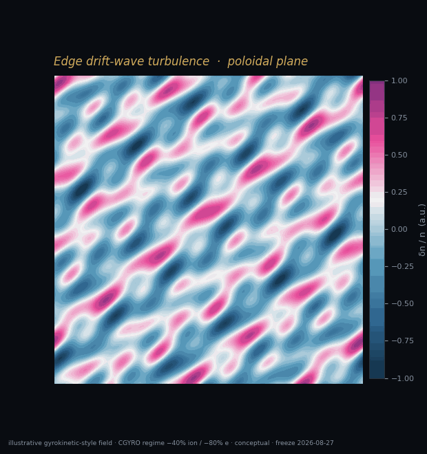
To see why that calculation is so expensive — and why a surrogate is not a luxury but a necessity — you have to understand that a plasma can be described at several levels of detail, and that each level buys tractability by throwing away information. Fusion modeling is the art of choosing the coarsest description that still keeps the physics you need.
At the bottom of the ladder is the particle description: track every ion and electron through the electromagnetic fields, one Newtonian trajectory at a time. It is exact and it is hopeless — a cubic metre of fusion plasma holds far too many particles to follow individually, and no computer that will ever be built could carry them all. So you climb.
The next rung is the kinetic description. Instead of tracking individual particles, you track a distribution function — a smooth cloud in the six-dimensional space of position and velocity that says how many particles are, statistically, at each place moving at each speed. This is where the honest turbulence physics lives, and it is governed by a kinetic equation for how that cloud evolves. But six dimensions is a brutal price, so fusion physicists use a specialized simplification called gyrokinetics. The trick exploits a fact about magnetized plasma: each particle spirals tightly around a magnetic field line, thousands of times faster than anything interesting happens to its overall drift. You do not care about the fast spiral; you care about the guiding centre it spirals around. Gyrokinetics averages the spiral away, collapsing six dimensions to five and removing the fastest, least interesting timescale — and that single act of averaging is what makes first-principles turbulence simulation possible at all.
Climb once more and you reach the fluid description, which stops tracking the velocity cloud entirely and keeps only its bulk moments — density, flow, pressure — the way you describe water without tracking every molecule. Fluid models are fast and they are indispensable, but they need a closure: an assumption, imported from outside, about the quantities they threw away. And the most important closure of all is the turbulent heat flux — precisely the number gyrokinetics computes and fluid models cannot. At the top of the ladder sits magnetohydrodynamics, MHD, which treats the whole plasma as a single conducting fluid and is the right tool for large-scale stability but blind to the microscopic turbulence underneath.
Every rung of the ladder trades detail for speed, and the whole discipline is choosing the coarsest description that still tells the truth — and then paying, once, in gyrokinetic cycles, to compute the one closure the fast models cannot. The reason the confinement question is the most expensive in the program is now plain: it lives on the kinetic rung, in five dimensions, and it cannot be answered honestly from any rung above it. You either pay the gyrokinetic cost or you guess.
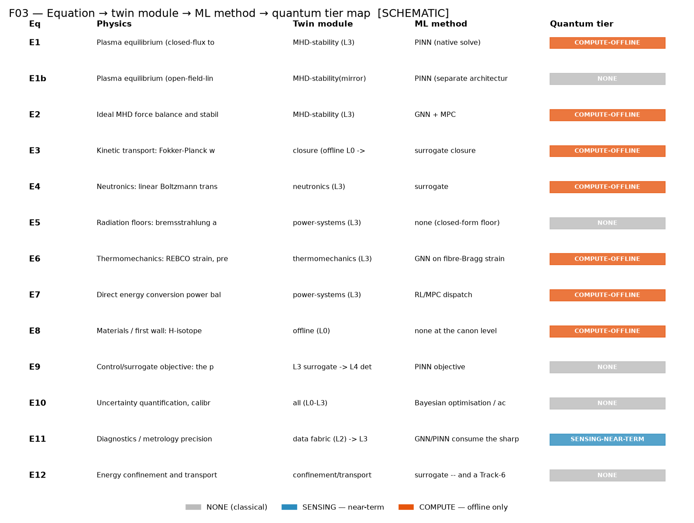
A zoo of instabilities, and how you name them
The turbulence that leaks heat out of a tokamak is not one thing. It is a whole zoo of microscopic instabilities, each with its own trigger, its own signature, and its own remedy, and a twin that hopes to predict confinement has to know which animals are in the cage.
The transport they drive is, by long convention, sorted into three kinds. Classical transport is the irreducible minimum: particles bump into each other and random-walk across the field. Neoclassical transport adds the corrections that come from the doughnut geometry itself — particles that get trapped in the weaker field on the outboard side trace fat "banana" orbits that let them wander farther. Both of these are calculable and, it turns out, small. What dominates real machines is the third kind, historically called anomalous transport precisely because for decades no one could explain why the heat leaked out so much faster than classical and neoclassical theory allowed. The answer, now settled, is turbulence — and the turbulence is driven by drift-wave instabilities feeding on the very gradients that make the plasma useful.
The main offenders have names worth knowing, because the twin has to resolve each one. The ion-temperature-gradient mode feeds on the steep ion temperature profile and is usually the dominant heat leak in the core. Its electron-scale cousin, the electron-temperature-gradient mode, does the same on a finer scale. The trapped-electron mode exploits those banana-orbit electrons. And the microtearing mode is a subtler, magnetic instability that tears and reconnects field lines on a tiny scale, channelling electron heat out through the plasma's edge. That edge is where the highest-stakes physics lives. A well-run tokamak spontaneously forms a pedestal — a narrow region at the boundary where the pressure gradient steepens dramatically and confinement jumps, the transition from ordinary low-confinement operation to the high-confinement mode that every reactor design quietly assumes. The pedestal is a gift and a hazard at once: it lifts performance, but it also stores energy that can be dumped in sudden bursts, the edge-localized modes that flick damaging heat pulses at the wall. Getting the pedestal right — steep enough to confine, controlled enough not to bite — is one of the hardest jobs the twin has.
How do you tell these instabilities apart in a real plasma, where they all contribute at once? You fingerprint them. Each mode has a characteristic frequency, a characteristic spatial scale, and a characteristic ratio between the fluctuations it produces in density and in magnetic field. Modern internal-fluctuation diagnostics can measure those signatures directly, and by comparing the measured fingerprint against what a gyrokinetic simulation predicts for each candidate mode, you can identify which instability is actually running the show in a given discharge. It is genuinely like forensic identification: not "the plasma is turbulent" but "this mode, at this location, is carrying this fraction of the heat."
That fingerprinting is also where fast, learned tools first entered fusion modeling, years before the surrogates of this program. Because a full gyrokinetic scan is far too slow to run inside an operating tokamak, physicists built reduced models — compact approximations, some of them frankly heuristic, that predict which modes will be unstable and how fast they will grow from a handful of local parameters, quickly enough to guide an experiment in progress. Neural networks trained on gyrokinetic databases pushed this further, delivering near-instant estimates of instability growth and even rapid reconstructions of the plasma equilibrium itself. Those early fast-surrogate successes are the direct ancestors of the transport surrogate at the heart of this chapter. The idea is the same one, grown up: pay the exact physics once, learn the shape of its answer, and thereafter reply in the blink of an eye.
Every design in this book rests on an assumption about how well its plasma holds heat. The twin exists to turn that assumption into a computed result.
That is the single most expensive question in the whole program, and until recently we answered it the way the field always has — with a reduced model, a fast approximation that captures the physics in broad strokes and runs in seconds. Reduced models are indispensable. They are also not proof. The point of the simulation program is to replace the assumption with a first-principles answer, validate that answer against reality, and then compress it into a tool fast enough to redesign the machine in an afternoon.
A machine that has to run in two places at once
Before the physics, a word about time. A fusion generator is a stack of coupled processes whose natural timescales span ten orders of magnitude — the cross-layer timing ladder laid out in full earlier in this chapter, from the microsecond events that can wreck the machine to the months of fuel logistics.
This is why the twin is not a single program. There is the design twin — slow, first-principles, exact, taking hours of supercomputer time to answer one question about one operating point — and there is the predictive shadow, the fast twin that runs alongside a live plasma, integrated fifty to a hundred milliseconds ahead of reality, catching trouble before it arrives. They are the same physics at opposite ends of the time ladder, and the bridge between them is the central trick of this chapter: the surrogate, a learned model that inherits the exact twin's accuracy and the shadow's speed. Get that bridge right and microsecond design exploration becomes possible — you can ask the machine ten thousand "what if" questions in the time it used to take to ask one.
The pipeline: an ordinary desktop, an extraordinary discipline
The exact turbulence physics runs in a first-principles nonlinear gyrokinetic code — the kind of tool that a decade ago lived only on national supercomputers. The program runs it two ways. On the ground is a single workstation, a 28-core machine with 768 gigabytes of memory, on which the full gyrokinetic suite is built, validated, and used for development. In the cloud are the accelerators — banks of high-end GPUs rented by the hour — where the heavy nonlinear runs actually execute. The workstation writes the problem; the cloud solves it; the answer comes home.
The unglamorous detail I want to dwell on is that this pipeline is bit-exact. A calculation launched from the desktop and run on a rented cloud GPU returns results identical, to the last bit, to the same calculation run locally. That sounds like a triviality. It is not. It is the entire reproducibility case in one property. If the cloud and the desktop disagreed even in the last decimal place, you could never be sure whether a result was physics or an artifact of where it happened to run — and a fusion design that cannot be independently rerun is not a design, it is an anecdote. Bit-exactness means anyone, anywhere, on any comparable hardware, can regenerate the numbers. It is the same philosophy that governs the published papers: every headline reproduces off a script from a single random seed. The twin holds itself to the standard we hold the physics to.
Validate against reality, then — and only then — trust the model
Here is the step that separates a twin from a mirror, and it is worth stating as a rule because the whole credibility of the program turns on it.
You never trust a simulation of your own machine until the same simulation, unchanged, has reproduced an experiment someone already ran on a real machine.
So before the code is ever pointed at Hyperion, it is pointed at a real tokamak discharge — a shot from an existing, operating device, with published measurements of how much heat actually leaked out of that real plasma. The code is given the real machine's geometry and profiles and asked, from first principles, to predict the measured heat flux. If it reproduces the experiment, within the error bars, without being tuned to do so, then and only then has it earned the right to be believed about a machine that does not yet exist. This is the difference between "our model says Hyperion works" and "our model reproduces reality, and our model says Hyperion works." The first is a claim. The second is evidence.
I put the validation step deliberately before the design study in the plan, not after, because the temptation runs the other way. It is tempting to simulate your own machine first, get an encouraging number, and validate later if time allows. That ordering quietly poisons everything downstream, because once you have seen the answer you want, every subsequent modeling choice is contaminated by it. Validate first, against a discharge you did not design and cannot fudge, and the design result that follows is honest by construction.
A validation shot, worked through
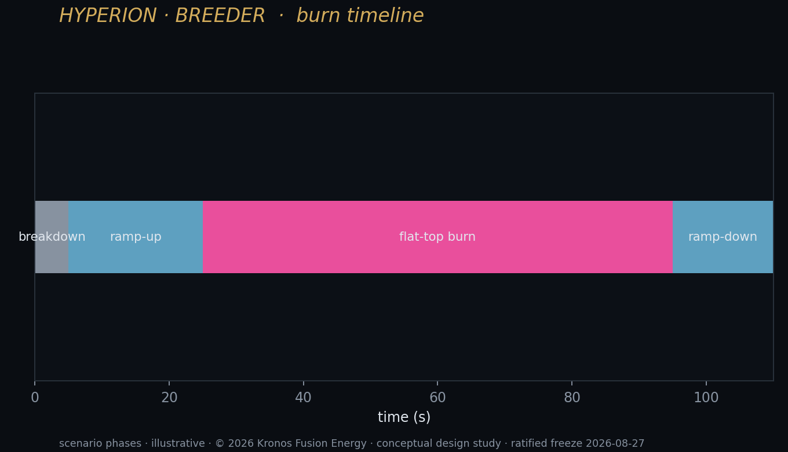
The rule above — never trust a simulation of your own machine until the same code, unchanged, has reproduced an experiment someone else already ran — is easy to state and laborious to honor. So let me walk one validation through, step by step, because the discipline lives in the details, not the slogan.
You begin by choosing a discharge from an existing, operating tokamak — a real "shot," fired years ago on a machine you had no hand in designing, with published, peer-reviewed measurements of two things: the plasma profiles inside that shot, and, crucially, how much heat actually leaked out of it. The fact that you did not design the machine is not incidental. It is the entire point. A shot you cannot influence is a shot you cannot flatter. It sits in the literature as a fixed fact, indifferent to what you wish your code would say.
Then you set the problem up honestly. You hand the gyrokinetic code that machine's real geometry and its measured profiles — the density and temperature and, above all, the gradients of those profiles at the radius you are testing, because it is the gradients that feed the turbulence. And then you do the hard thing: you tell the code nothing about the answer. You do not reveal the measured heat flux. You do not reach in and tune a coefficient to nudge the prediction toward the known result. The code integrates the turbulence from first principles — the ion-temperature-gradient mode and its cousins tearing the plasma into a froth of microscopic eddies — running forward until the transport saturates and the heat flux settles to a steady value. Hours of GPU time later, it reports a number it derived without ever being told what it was supposed to find.
Only now do you look. You set the computed heat flux beside the measured one. If they agree within the experiment's error bars — and agree without any tuning to make them — then the code has earned something it can earn no other way: the right to be believed about Hyperion, a machine that does not yet exist. This is the exact moment a claim turns into evidence. Before it, you have "our model says Hyperion confines heat well enough." After it, you have "our model reproduces a real plasma it was never shown, and that same model says Hyperion confines heat well enough." Only the second sentence can carry the weight of a design.
It is worth sitting with what a failure here would have meant, because that is what gives the passing grade its value. Suppose the computed flux had come out at half the measured value. You would not, in that case, have a Hyperion result you merely needed to caveat. You would have a modeling bug wearing the costume of a physics prediction — and every encouraging number the code later produced about your own machine would be worthless, because you would have no way to tell physics from artifact. That is precisely why the validation step is placed before the design study in the plan and never after: the ground has to be proven solid before you build on it, not once the building is up.
And validation is never one triumphant checkmark. The honest version reports the match together with its error bar, flags the radii where the agreement is tight and the ones where it frays, and treats near-marginal points — the delicate cases sitting right at the edge of stability — with extra suspicion, because a coarse calculation will cheerfully report a clean answer there that is simply wrong. A twin earns trust one validated shot at a time, and it keeps a ledger of exactly how far that trust extends.
Surrogates: turning a supercomputer into a pocket calculator
A first-principles turbulence run is accurate and slow. One saturated nonlinear calculation — the kind that tells you how much heat truly leaks out at one set of gradients, one safety factor, one value of plasma pressure — costs hours of GPU time. To map the whole operating space of a machine, you need hundreds of them. That is a database, and a database is exactly what a machine-learning model wants to eat.
A surrogate is a neural network trained on that database to reproduce the slow code's answer in a fraction of the time. Feed it the plasma conditions; it returns the heat flux — not by solving the physics, but by having learned the shape of the solution across every point it was trained on. The first-generation transport surrogate in the program was trained on a fast reduced (quasilinear) transport model rather than the full nonlinear code, as a proof of the mechanism, and it reached a coefficient of determination of R² = 0.999 against its training physics. The successor, now that the first-principles database is being generated, is trained on the exact nonlinear code itself — inheriting its accuracy instead of the reduced model's approximation. Same architecture, better teacher.
What that R² buys is worth translating carefully, because the number hides the point.
``` One first-principles turbulence calculation: ~hours on a cloud GPU One surrogate query for the same answer: ~microseconds on a laptop
Accuracy retained by the surrogate: R² = 0.999
```
In plain words: R² = 0.999 means the surrogate accounts for 99.9 percent of the variation in the exact code's answers — the two agree to about a part in a thousand across the operating space. And it delivers that agreement roughly a billion times faster. That ratio is not a convenience; it is a change in what design is. When one physics answer costs hours, you evaluate a handful of candidate machines and pick the least-bad. When one answer costs microseconds, you let an optimizer roam the entire design space — size, field, shape, gradients — evaluating millions of variants, and you find the operating point that is genuinely best rather than merely acceptable. The surrogate turns the most expensive question in fusion into something you can ask on a laptop between sips of coffee. That is how a design gets de-risked: not by trusting one calculation, but by exhausting the space around it.
A design search, worked through
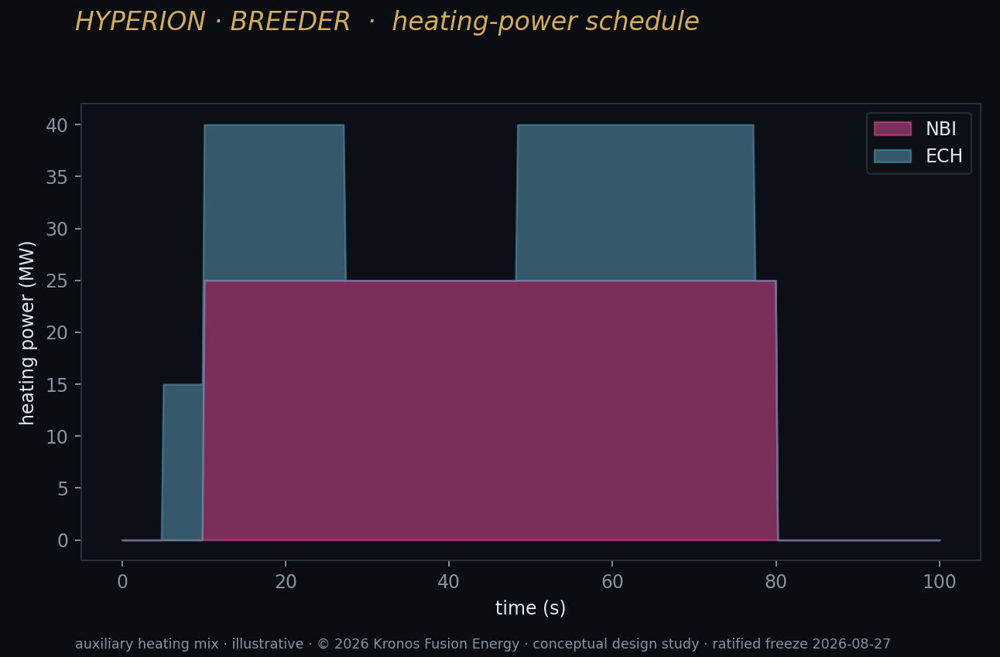
Once the transport surrogate returns a heat flux in microseconds instead of hours, the design search itself — trading the field's old habit of stopping at the first acceptable machine for an optimizer that roams the whole space of candidate Hyperions and finds the genuinely best one — is the optimization story told in full earlier in this chapter. What matters for the twin is the shape it takes here: because Hyperion sits close to the ion-temperature-gradient threshold, the search does not hunt for a design that merely passes but for the operating point that sits deepest inside the feasible region — robust to exactly the gradient error bars a knife-edge design could not survive. That is what de-risking a design means in practice: not trusting one calculation, but exhausting the space around it so thoroughly that you know your chosen point is not a lucky accident.
The burner's twin, and a real net-gain result
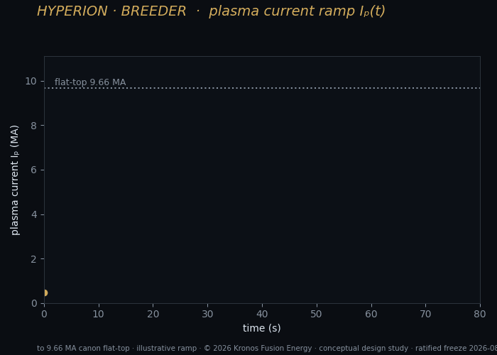
The breeder is a tokamak, and its turbulence is a tokamak's turbulence. The burner is another creature altogether — a D–³He tandem mirror, a straight magnetic bottle some 440 metres long, stoppered at each end by colossal mirror coils reaching 26.49 tesla, burning a fuel so clean it sheds only about 5.4 percent of its energy as neutrons. Picture it: not a doughnut of fire chasing its own tail, but a river of plasma running the length of a city block, pinched at both ends by two of the most powerful magnetic corks ever conceived. A tandem mirror does not confine plasma by bending it into a ring; it confines it by squeezing it between those corks. Whether that works — whether the machine produces more power than it spends holding the plasma in — comes down to a delicate balance between the pressure in the central cell and the far higher pressure in the plugs.
The consequence for the twin is fundamental: a mirror is not a Grad–Shafranov machine, so almost none of the tokamak's equilibrium and turbulence machinery carries over. The confining physics is the force balance along the axis — how the pressure profile from the low-field central cell up to the towering plug field holds together — and the twin for the burner is built around that balance rather than around cross-field turbulent transport. Two machines, two twins, one discipline: build the exact model, validate it, compress it into a surrogate. The physics under the surrogate could hardly be more different; the method on top of it is identical.
We built a surrogate for that balance too, trained on the burner's mirror force-balance model. It reached R² = 0.98, and it returned a result I find genuinely encouraging: the machine crosses into net power gain when the plug-to-central-cell density ratio reaches about 13.8. The design target for that ratio is 16, comfortably above the crossover, at which point the engineering gain lands near Q_E ≈ 1.318 — more electricity out than in. That is exactly the kind of margin you want to see fall out of a surrogate: not a knife-edge, but a design point sitting on the safe side of the threshold with room to spare. It is a small, honest, computed result that says the burner's core premise holds.
The gaps, told plainly
I would not trust this chapter — you should not trust this chapter — if it were all clean R² values and comfortable margins. It is not. Three things in the program do not reconcile, and each teaches something.
The first linear map was noisy. The opening step of the turbulence campaign is a linear stability map: sweep the plasma gradients and find where the instabilities switch on and how fast they grow. Our first pass came out under-converged near the margin — the near-threshold modes, the ones sitting right at the edge of stability, were not integrated long enough or resolved finely enough to trust. Near-marginal modes are notoriously delicate; a coarse calculation will happily report a clean answer that is simply wrong. The fix is not clever, it is disciplined: longer integration, more radial resolution, rerun. That sweep is running as this is written. I mention it because a design program that never shows you a noisy first result is a program that is hiding its first results.
Hyperion sits close to the turbulence threshold. When we swept the gradients, the real machine came out weakly unstable to the ion-temperature-gradient mode near threshold — turbulent, but not violently so, right in the sensitive regime where small changes in the assumed gradients move the answer a lot. That is not a problem to paper over; it is a flag that says the operating point must be pinned down with the machine's real profile gradients, not the placeholder gradients used to explore the space. The geometry of Hyperion is locked and real. The gradients that ride on top of it are still being nailed to the design, and until they are, the confinement number carries an honest error bar.
And the one we abandoned. The burner needs a number called η_α — the efficiency with which the energy of fusion-born alpha particles is channelled back into the fuel ions rather than lost. We tried to compute it with a Fokker–Planck kinetic prototype, the natural tool for the job. It did not work. It predicted an ion-heating fraction of 1.6 percent against an accepted analytic value near 12 percent — off by nearly an order of magnitude, which is not a result, it is a broken model. So we abandoned it, and we said why: a survey of the available codes confirmed that η_α is simply not a turnkey output of any existing tool. There is no button to press. Getting it right is a collaboration-and-custom-development problem — the burner's kinetics belong to a different code lineage than the tokamak's turbulence, run in partnership with specialists, with bespoke code written for the alpha-channelling physics on top. We logged it as an open build item rather than fudging a number to fill the hole. An abandoned prototype, honestly retired, is worth more than a plausible number nobody can defend.
The prototype that failed by a factor of seven taught us more than the surrogate that succeeded to a part in a thousand. It told us where the real work is.
That is the two-track reality of the program in one paragraph. The breeder's turbulence is a GPU problem, solved with a first-principles gyrokinetic code and compressed into a surrogate — a track we can drive ourselves, today. The burner's kinetics is a partnership problem, requiring collaboration and custom development, and no amount of GPU time substitutes for it. Pretending the second track is as far along as the first would be the easiest and most dishonest thing in this book.
Proving the twin is not a mirror
Return to the promise at the top of this chapter: a model that agrees with the design it was built from is a mirror, not a twin, and it tells you nothing you did not already assume. Validating against someone else's experiment is the first defence against that trap. There is a second, and it is worth describing because it is the kind of check most simulation programs quietly skip.
The worry is circularity. Our twin computes an equilibrium; our surrogate learns that equilibrium; our controller trusts the surrogate. If every link in that chain was written by the same team with the same assumptions, the chain can be internally consistent and wrong — a closed loop congratulating itself. So we deliberately introduced an outsider. We took the twin's equilibrium and checked it against a completely separate, open-source equilibrium solver, written by a different community for a different purpose, with no knowledge of our machine. The fields agreed to within 2.66 percent — close enough to trust, and — the honest part — with one discrepancy in the flux near the magnetic axis that we keep on the record as a characterized failure mode rather than sand away. By that independent check, our internal measure of circularity roughly halved. The twin was made to answer to an authority it did not control.
We did the same with the engineering. The twin's assumptions about magnets, materials, and structural strain were benchmarked, one by one, against the published engineering design basis of the largest international tokamak project — nineteen assumptions, each tagged as inside that reference envelope, deliberately outside it, or having no basis in it either way. Some of our choices sit outside the reference on purpose, because we use a high-temperature superconductor at a field and strain that project never designed for, and we label those honestly rather than imply an endorsement we do not have. It is an engineering-basis benchmark, not validation from an operating plasma — that machine has not run either — and I say so. But it is the difference between a twin that only ever talks to itself and one forced, repeatedly, to answer to the outside world.
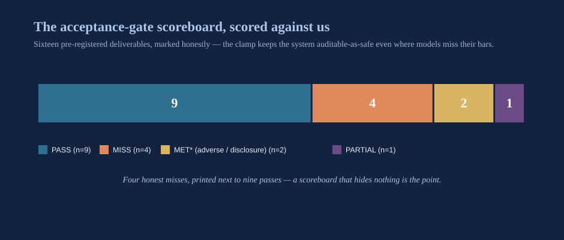
Quantum, honestly
The three-tier quantum honesty — sensing near, computing far, tensor methods in the middle — is laid out in full earlier in this chapter; the twin consumes the near-term sensing tier and nothing more, letting a sharper magnetic measurement tighten the boundary condition the equilibrium reconstruction depends on and so lower the state-estimation error every downstream surrogate inherits.
Where NVIDIA comes in
Every revolution needs an engine room, and ours hums with silicon. The accelerated half of this program runs, in part, through NVIDIA's Inception program — the one cleared outside partner named anywhere in this book. Concretely, that means access to the GPU compute the nonlinear campaign consumes and to NVIDIA's open physics-machine-learning framework, which is the natural home for the transport surrogate: it is built precisely for training networks that respect physical laws, and the R² = 0.999 transport model is the exhibit that shows the pipeline works end to end. The partnership matters less for any single result than for what it makes routine — turning the once-exotic act of running first-principles turbulence and distilling it into a deployable model into something a small team can do on a rolling basis. The compute is a tool. The discipline around it is ours.
What the twin is, and what it is not
Let me end with the disclosure that governs this chapter as it governs the whole book, because it is the honest frame for everything above. Kronos operates no fusion plant. Every number here — the R² values, the net-gain ratio of 13.8, the confinement estimates, the noisy first map and the abandoned prototype alike — comes from simulation, from a physics-based twin, or from public data. Nothing in this chapter came off a burning plasma, because there is no burning plasma. There is a design, published and reproducible, and there is a twin built to stress-test it.
That is not a weakness of the program. It is the correct order of operations — the order that the whole history of engineering, written in wreckage and hard-won caution, insists upon. You do not build a machine the size of a building, meant to cage a fragment of a star, and only afterward discover whether your physics was right. You build the twin first. You validate it against experiments other people have already run and cannot be flattered into confirming. You send it hunting through your own design for flaws while those flaws are still cheap, still made of nothing but electrons. And you keep an honest ledger of everything it cannot yet tell you. When breeder construction begins in 2027, it will rise against a design that a faithful twin has already tried, again and again, to break — and failed. That is what it truly means to de-risk a machine before it exists: not a promise that nothing will surprise us, but a discipline that has spent every cheap surprise in silicon so that the expensive ones, in steel and superconductor, are as few as human care can make them.
The twin is how a design earns the right to become a machine. It is how a drawing earns the right to become a star on Earth. And it is how, when this book tells you the physics is solved, you are entitled to sit down, open the code, and check for yourself.
This chapter's forty. Q40 — the gain the twin exists to protect, by keeping the fire controllable long enough to climb toward it.
Igniting the Markets: The Unbound Commercial Promise of Fusion Energy
A hundred thousand years ago, a member of our species learned to hold flame in cupped hands, and in that instant the trajectory of a planet bent. Every civilization since has been, at bottom, a machine for finding better fires. Wood let us cook and keep the dark at bay. Coal let us make iron by the mountain and put a continent on rails. Oil let us fly, and move goods across oceans on a whim, and raise the sprawling, mobile, air-conditioned world we now mistake for the natural order of things. But notice what each of these truly was. Not a cheaper fuel — a new permission. A constraint lifted off the human imagination. And every single time, at the dawn of it, nearly everyone underestimated what was coming, because the people alive at the start of a transition reason about the old world's hungers, never about the ravenous new appetites the fuel itself will go on to create. We are standing at exactly such a dawn now. The fire we are about to hold in cupped hands is the fire that powers the Sun.
I wrote the 2024 version of this book with a chapter like this one, and I filled it with the far horizon: fusion-powered desalination turning deserts green, atmospheric processors scrubbing carbon from the sky, propulsion that cracks open the solar system, industries that do not yet have names. I still believe in that horizon — some of it appears later in this book, where it has earned its place. But I have learned, in the two years since, to be ruthless about the difference between what fusion will eventually enable and what fusion will first be bought for. This chapter is about the second thing. It is about the actual markets — the ones with buyers, budgets, and a pressing hunger this decade — into which our two machines are built to sell. The romance is real, and I will not apologize for it. But the commerce is what funds the romance, and I will not let either one hide behind the other.
So here is the honest architecture of the commercial promise, stated once, plainly, before I unfold it. Our near-term product is not electricity. It is materials — tritium, helium-3, high-energy neutrons — made by the breeder, Hyperion, for markets that are starved of them today. Our later product, the one this chapter dwells on longest, is firm, clean power from the burner, sold into a shortage the age of artificial intelligence has torn open faster than any planner on Earth foresaw. Two machines, two markets, two clocks. And running beneath both of them, the second of this book's three forties — the forty-dollar electron — the price target that turns a triumph of physics into a triumph of economics. Q40 is the physics. The forty-dollar line is the economics. This chapter is about the economics, and about the civilization-scale demand that is coming to meet it.
I write this chapter differently from the rest, and I should tell you why. Before fusion, I built companies and sold them — I started my first at twenty-three and watched it get bought, and did it again after that, and poured what I earned from both into the machines in this book. That is not a boast; it is a lens. It taught me a discipline that pure science does not always require: that an invention which cannot find a buyer, at a price that buyer will actually pay, for a problem that buyer actually has, is not a business — it is a hobby with a laboratory. Most of the fusion field is staffed by brilliant people who have never had to make payroll. I have. So when I tell you what these machines sell, and to whom, and why the order of the two products is not scientific taste but commercial necessity, I am not speculating. I am doing the one kind of work I knew how to do long before I knew any plasma physics at all.
The market fusion is actually for
There is a habit in fusion writing, and I have been guilty of it, of describing the market as "energy" — all of it, the whole fifteen-figure global appetite for power — as though a fusion company were selling into that entire ocean from its first day afloat. It is a seductive framing and a useless one. Nobody sells into "energy." You sell a specific product, at a specific price, to a specific buyer with a specific problem that your product solves better than the alternatives they can already put their hands on. The first question a serious commercial reader should press on a fusion company is not "how big is the energy market" — it is oceanic, everyone knows that — but "what, precisely, are you selling, to whom, and why on Earth would they choose it over what they can buy today?"
The answer, for the power business, is not "cheaper electricity in general." Here is a fact that ought to reorder your intuitions: raw energy has, astonishingly, gotten cheaper over the last two decades. The cheapest kilowatt-hours humanity has ever produced now come from sunlight and wind, and in a swelling number of places they undercut anything that burns. If fusion's pitch were "cheap energy," it would be arriving late to a race that solar has already won on price. That is the trap, and it has swallowed more than one fusion dream. Fusion is not, and must never pretend to be, the cheapest source of average energy.
What fusion sells is something the cheap intermittent sources structurally cannot deliver: firm, clean power — energy that is simply there, every hour of every day, made without a molecule of carbon, in a footprint small enough to sit shoulder to shoulder with the thing it powers. That is a wholly different product from "energy," with a wholly different and far steeper scarcity curve. The world is drowning in cheap intermittent electrons and parched for firm clean ones. The scarce commodity — the one whose price does not fall as you pour in more solar, and in fact rises as the grid fills with intermittency and demands ever more backup — is firmness that is also clean. For a century, firmness meant setting something on fire. The entire commercial thesis of the burner is that it shatters that ancient equation: firmness without combustion, power on demand without carbon. That is the product. Everything else in this chapter is a consequence of it.
And there is a buyer that wants exactly that product, in exactly the form fusion casts it, right now — sooner and more desperately than any energy planner projected even five years ago. It arrived not from climate policy, not from a mandate, but from a new kind of mind we conjured into being and then discovered, to our astonishment, was hungry.
The load that broke the forecast
For most of a century, planning an electricity grid was an exercise in gentle extrapolation. Demand in the rich world crept up a percent or two a year, predictably enough that a utility could order a power plant a decade ahead and be roughly right about where the load would stand when it switched on. That placid world is gone, vaporized, and artificial intelligence is what ended it.
The reason is physical, not financial, and it is worth feeling in the body. Training a frontier model, and then serving it to hundreds of millions of people, is a colossal act of sustained computation — and computation is nothing more than electricity converted into arithmetic and then, inexorably, into heat. A modern AI data center is not a building full of desktop computers. Picture instead a dense hall of specialized accelerators, each one drinking more power than the oven in your kitchen, packed by the tens of thousands, running flat out around the clock without pause or mercy. A decade ago a large data center might have drawn what a town uses. The ones now being drawn on blueprints draw what a city uses — hundreds of megawatts, and in the boldest proposals a full gigawatt or more, concentrated on a single site. That is the entire output of a great power station, demanded in one place, for one customer, continuously, forever.
The grids were never built for this, and they are buckling. In region after region, the true constraint on how fast artificial intelligence can grow is no longer the chips, or the capital, or the scarce engineering talent. It is the interconnection queue — the years-long wait to bolt a very large new load onto a transmission system that was sized for a gentler century. The appetite of the new mind has outrun the wires that were meant to feed it. This is not some distant projection I am asking you to take on faith; it is the operating reality of the industry today, and it is why the people building these cathedrals of computation have begun, out of sheer necessity, to think like power developers rather than tenants. They have stopped asking where they can rent electricity. They are now asking where they can build it.
Feel what that shift does to the market. When the buyer of computation is forced, by physics and by the queue, to become the buyer of generation, the customer for a power plant is no longer a slow, regulated utility shaving a fraction of a cent per kilowatt-hour across millions of ratepayers. It is a fast, hungry operator whose cost of not having power — a training run collapsed at week three, a cluster of staggering value sitting idle, a service gone dark before a watching world — dwarfs the price of the power itself into insignificance. That buyer does not crave the cheapest average electron. That buyer craves the surest electron, and will pay for firmness the way a drowning person pays for air. This is the single most important fact about the market MetroVolt is aimed at, and it is worth being exact about what such a buyer actually requires.
What a data center actually needs
To see why fusion fits this demand with almost eerie precision, you have to be exact about what the demand truly is — because "the data center needs power" quietly conceals three separate, stringent requirements, and most clean-energy options satisfy one or two of them and fail the third.
The first requirement is that the power be firm. An AI training run is a single computation stretched taut across thousands of processors for weeks at a time; a serving cluster answers queries every second of every day. Neither can survive the power going away. A data center's tolerance for interruption is measured in fractions of a second, and its value of lost load — the cost of an outage — is extraordinary, verging on the catastrophic. These facilities do not want energy that is available on average. They want energy that is available always, at full rated power, with the machine that supplies it running as close to every hour of the year as engineering will permit.
The second requirement is that the power be clean, and this one has grown teeth it did not have a decade ago. The organizations raising the largest AI facilities have made public, load-bearing commitments to run on carbon-free energy, and the sheer scale of the new demand has turned those pledges into a genuine, binding constraint. You cannot bolt gigawatts of round-the-clock load onto a grid on the back of fossil generation without smashing straight through the very targets on which the industry has staked its credibility. For a century the demand for firm power and the demand for clean power pointed in opposite directions — firmness meant burning something. The whole promise of fusion is that it collapses that trade-off into a single object.
The third requirement is that the power be co-locatable — buildable next to, or beneath, the load it serves. This is the requirement the grid crisis has hurled to the front of the line. If you cannot secure a transmission connection for years, the way out is to stop needing one: set a firm generator on the same ground as the data center and feed it directly, behind the meter, with the wider grid demoted from lifeline to backup. Co-location also unlocks something a distant power plant can never offer — the waste heat of the generator and the waste heat of the computers become a single thermal problem to be engineered as one, and the power travels meters instead of hundreds of kilometers, with none of the losses and none of the permitting wars that new long-distance transmission always ignites.
Firm, clean, co-locatable, at the scale of a full power station, on one site, for one load. Hold those four requirements together in your mind and you have written, without intending to, the specification for the burner.
| The buyer's requirement | Why it is non-negotiable | How most clean options fare |
|---|---|---|
| Firm — full power essentially every hour | An idle compute cluster is a catastrophic cost; value of lost load is extreme | Solar/wind: intermittent by nature; storage helps for hours, not seasons |
| Clean — no carbon in the exhaust | Public carbon-free commitments at gigawatt scale become a hard constraint | Fossil firming defeats the purpose; nuclear fission is clean but slow to site |
| Co-locatable — buildable at the load | Interconnection queues are the true bottleneck; behind-the-meter avoids them | Renewables need vast land; you cannot put a solar farm under a data hall |
| Station-scale on one site — a gigawatt for one customer | The largest campuses now match a full power station in appetite | Assembling that from distributed sources multiplies siting and integration cost |
Why firm power wins
Let me be scrupulously fair to the alternatives, because the honest case for fusion is never made by caricaturing the competition. Solar and wind are the cheapest sources of raw energy the human species has ever built, and for a vast range of uses they are simply the right answer, full stop. The AI buildout will and should lean on them heavily. But there is a specific, unbridgeable mismatch between intermittent generation and a gigawatt-scale, always-on computational load, and it deserves to be named with precision rather than shouted about in slogans.
The mismatch is not the poetic fact that the sun sets. It is arithmetic, cold and unarguable. A data center wants full power every hour of the year — call it a capacity factor near one. A solar farm in a good location delivers its rated power perhaps a quarter of the hours in a year; a wind farm, perhaps a third to a half. To forge that intermittent supply into the firm, around-the-clock power the load demands, you must massively overbuild the generation and then hoard the surplus in storage — and storage that can carry you across not just a night but a stretch of cloudy, windless days is exactly where the cost and the land requirement climb toward the vertical. The land itself becomes the wall. Powering a single gigawatt-scale, 24/7 facility purely on overbuilt renewables plus multi-day storage can devour tens of square kilometers of panels and a battery installation to match. You can do it. In many places you should build as much of it as the land allows. But it does not co-locate — you cannot lay tens of square kilometers of solar beneath a data hall — and at the scale and firmness the largest facilities crave, it stops being the cheapest path and becomes a sprawling, land-hungry one.
There is a subtler economic law beneath the land, and it is the one that ultimately decides these markets. A capital-heavy generator — and every clean firm source, fusion emphatically included, is capital-heavy — earns back the cost of its own existence only by running. The single largest lever on the price of its electricity is not the fuel and not the crew; it is the capacity factor, the fraction of the year the machine is actually selling power. A plant that runs ninety-plus percent of the hours spreads its build cost across three or four times as many electrons as one that runs a quarter of them. This is why "firm" and "cheap" are not enemies for a generator that can run without stopping: for a machine with negligible fuel cost and towering uptime, firmness is the road to a low price, because it is the road to selling every single hour you built the plant to sell. It is also why, as the control chapter argued at length, the entire intelligence layer that runs a fusion plant exists to drive its capacity factor as close to one as physics will bear. For a capital-heavy machine, the fraction of the year it runs is the price of its electricity. Master uptime and you have mastered cost.
Now put the candidates side by side, not rhetorically but numerically. Push the capacity factor from a quarter to nine-tenths and you have not shaved the price of the electron — you have divided it by something close to four, because you are spreading the same fixed build across nearly four times the salable output.
| Source | Typical capacity factor | Available on demand? |
|---|---|---|
| Solar (good site) | ~25% — about a quarter of the year's hours | No — follows the sun |
| Wind (good site) | ~33–50% | No — follows the weather |
| Burner (engineered) | high eighties to mid nineties | Yes — runs when fueled, around the clock |
That gap is not a marginal edge. It means one burner clears three to four times the annual electrons of a solar array of the same rated size — and it clears them on a schedule the buyer chooses rather than one the weather dictates. For a load that must be fed every hour, the intermittent machine's cheap nameplate is a mirage: the electrons it fails to deliver at three in the morning on a windless winter night have to be bought, stored, or overbuilt into existence, and every one of those remedies is a cost the headline price never mentioned.
There is an honesty I owe you on the other side of this ledger, and it sharpens the case rather than softening it. A fusion burner is not a free fountain of power; it spends a great deal of electricity running itself — energizing its enormous magnets, driving its heating systems, holding the plasma in its bottle. The figure that captures what is left over is the engineering gain, and for our burner it stands at Q_E ≈ 1.318: for the electricity the plant recirculates to keep itself alive, it returns about a third again as much, net, to sell. That is a genuinely positive margin — the machine is unambiguously a generator, not a net drain like the breeder — but it is not lavish, and I will not dress it up as though it were. A modest engineering gain is precisely why the other two levers are not luxuries but necessities. If only a portion of the gross output survives to be sold, then you must run the machine as near to every hour as physics allows, so that the fixed cost is spread across the maximum, and waste as little as possible turning fusion power into salable electricity — which is the entire reason the burner converts its charged exhaust directly to current instead of paying the steep thermodynamic tax of a boiler and turbine. Capacity factor and direct conversion are the same argument arriving from two directions: with a finite engineering gain, every hour of uptime and every point of conversion efficiency is money.
This is where the second of the three forties actually lives. The forty-dollar electron is not conjured by the physics of ignition alone; it is earned, hour by uninterrupted hour, by a machine with negligible fuel cost running flat out and converting cleanly. Q40 gets you a plasma that returns forty times its energy. The forty-dollar line gets you a business, and it is written not in the fusion cross-section but in the capacity factor — which is exactly why the intelligence layer that defends uptime, described at length in the control chapter, is not an accessory to the economics but its beating heart.
A data center does not want power on average. It wants power always, in one place, made cleanly — and that is the one combination the twentieth-century grid was never designed to sell.
This is the gap MetroVolt is built to fill. Not to overthrow cheap intermittent power — to supply the firm, dense, co-located core that intermittent power, by its very nature, cannot. The two are complements, not rivals; allies, not enemies. A sensible grid of the 2040s runs on a vast, cheap, intermittent bulk drawn from sun and wind, wrapped around a firm clean core that holds the whole structure upright when the weather refuses to cooperate and carries the loads — like a gigawatt of always-on computation — that cannot be told to wait for a sunny afternoon. Fusion's market is that core. It is a smaller share of the total electrons than solar will ever be, and an incomparably more valuable one.

A gigawatt in a building
Now set the burner into that gap and watch the requirements fall into line, one after another, as if the machine had been designed to a specification written by the market itself.
The commercial burner is designed as a roughly one-gigawatt firm unit. That number is not an accident, and it repays a moment's attention, because it is a place where we deliberately chose the more conservative engineering over the more dazzling. The burner's physics — laid out in full in the chapter on the machine itself — scales with the length of its central cell, and on paper the same design can be stretched to well beyond two gigawatts of net output. We did not size the commercial fleet at the maximum. We sized it near a gigawatt, because a gigawatt unit is easier to finance, easier to site, and — most decisive of all — descends the manufacturing learning curve faster, since you build more of them. And it happens that a gigawatt is also almost exactly the scale of the largest single AI campuses now being drawn on blueprints. One firm, clean burner, one hyperscale computational load, matched in size like two halves of the same coin. That is not a coincidence engineered after the fact; it is what "the natural unit of firm power" turns out to mean in the age of intelligence.
The burner is firm by construction. It is a generator, not a weather-dependent harvester of ambient energy; it runs when you fuel it and holds its rated output around the clock, its capacity factor defended by the intelligence layer for the reasons the firmness argument already laid out. It is clean in the way that matters most for a plant sited next to where people work and live: it burns deuterium and helium-3, a low-neutron fuel that carries only about five percent of its energy in neutrons rather than the eighty percent a conventional fusion fuel would fling out, so its structure is not steadily gnawed apart from within and its shielding is sized to a gentle source. There is no carbon in the exhaust because there is no combustion at all — only fusion, and a stream of charged particles caught and turned straight into current.
And it co-locates. This is where an architectural choice made for pure physics reasons pays a wholly unexpected dividend for this market. Because the burner converts its charged exhaust to electricity directly — no boiler, no steam turbine, none of the nineteenth-century thermodynamic machinery — it produces its power natively on a direct-current bus. And AI data centers are, increasingly, direct-current loads: the accelerators inside them run on DC, and every conversion between AC and DC on the way in is a place where precious energy escapes as waste heat. A generator that produces DC, sited beside a load that consumes DC, can in principle shorten that lossy chain to almost nothing. The waste heat the burner's bottoming cycle rejects, and the waste heat the computers exhale, become one thermal system to design rather than two to fight. The power travels the length of a corridor, not the width of a state. The burner was designed to be a clean generator; it turns out to be a clean generator shaped, almost point for point, like the very thing a hyperscale data center most wants to be built next to. When form and demand align this closely, it stops feeling like engineering and starts feeling like destiny.
Anatomy of a co-located gigawatt
Let me make the co-location argument concrete, because "behind the meter" is a phrase that hides a great deal of engineering, and the engineering is where the case is actually won. Picture a hyperscale campus of the mid-2030s — a computational load of roughly a gigawatt, drawn continuously, on a single site. Follow what it takes to feed that load, and watch each of the burner's design choices earn its keep.
Begin with the wire the campus does not have. Its operator went looking for a grid connection and found the interconnection queue: a wait measured in years to bolt a gigawatt of new load onto a transmission system sized for a gentler century, behind a line of others waiting for the same scarce headroom. The queue, not the chips and not the capital, is the true governor on how fast the campus can be built. The co-located burner's first act is simply to make the queue irrelevant — to set a firm generator on the same ground as the load and feed it directly, with the wider grid demoted from lifeline to backup. Years of waiting collapse into the footprint of a single site the operator already controls.
Then follow the electrons through the walls. A conventional plant makes alternating current, which must be stepped and rectified into the direct current the accelerators actually run on — and every conversion in that chain sheds a slice of the power as waste heat. The burner makes its power natively on a direct-current bus, because it converts its charged exhaust straight to current with no spinning machine in between. Generator and load speak the same electrical language across a corridor; the lossy translation layer that a distant AC plant forces on the campus largely disappears. At a gigawatt drawn every hour of the year, the points of efficiency saved in that shortened chain are not a rounding error — they are a continuous dividend, paid for the life of the plant.
Then follow the heat. A data center's deepest engineering problem is not getting power in; it is getting heat out — the gigawatt that goes in as electricity comes out, almost all of it, as warmth that must be carried away without cooking the silicon. A co-located burner turns two thermal problems into one. The heat its bottoming systems reject and the heat the computers exhale become a single system to design, on a single site, rather than two facilities fighting the same battle a hundred kilometers apart. The star's waste heat and the silicon's waste heat share one set of plumbing.
Now the requirement the buyer will not bend on: firmness, expressed as redundancy. A campus of this value does not stake itself on a single generator, however reliable; it wants firm power that survives the loss of any one unit, and it wants to keep running through the maintenance windows that even a machine engineered for the high eighties to mid nineties must occasionally take. The natural answer is not one enormous machine but a small cluster of gigawatt-class burners in an N-plus-one arrangement, so that one can be down for service while the load never notices, with the grid tie standing behind them as a final backstop. This is where the choice to size the commercial unit near a gigawatt rather than at the design's two-gigawatt-plus maximum pays a second dividend: a fleet of right-sized units gives an operator granularity, redundancy, and a manufacturing learning curve that a handful of maximal one-offs never could.
And underneath all of it sits the arithmetic of value that makes the buyer indifferent to a premium on the electron. For this customer the cost of not having power — a weeks-long training run collapsing in its third week, a cluster of staggering value sitting dark, a service failing before a watching world — dwarfs the price of the power itself. Such a buyer does not shop for the cheapest average electron. It shops for the surest one, at the scale of a full power station, on ground it controls, made without the carbon it has publicly sworn off. Assemble the pieces — no queue, native DC, shared thermal, redundant firm units, a catastrophic value of lost load — and the co-located burner stops looking like an exotic option and starts looking like the obvious one. The machine was designed to a specification the market wrote without knowing it was writing it.
The machine that helps run the machine
Here is the part of this chapter I find genuinely beautiful, and I have tried hard to earn the right to call it that rather than merely assert it — because a claim of beauty in a technical book is a promissory note the numbers had better honor.
The same artificial intelligence that is straining the world's grids to the breaking point is the artificial intelligence that makes the fusion plant runnable in the first place. These are not two different technologies that happen to share a fashionable name. They are the same family of tools, aimed at opposite ends of a single problem. The accelerated computation that trains and serves large models — the dense, relentless arithmetic that has made AI so ravenous for power — is precisely the computation that trains the physics-informed surrogates and runs the predictive digital twin at the heart of the plant's control system. The chapter on control described that system in full: a twin of the plant that runs milliseconds ahead of reality, learned models that reproduce slow physics in a fraction of the time, a safety clamp that caught 3000 of 3000 injected limit violations with zero escapes across 150,000 steps, a quench precursor that stretches a magnet-destroying event's warning from 2.6 milliseconds to 47, a disruption ensemble sharp enough to reach an AUC of 0.990. All of it is machine learning, and all of it runs on the same class of accelerated hardware — the ecosystem NVIDIA built for artificial intelligence broadly — that the data centers themselves are packed with, chip for chip.
So the circle closes, and closes cleanly. The demand that makes MetroVolt necessary is the demand created by artificial intelligence. And the intelligence that keeps a MetroVolt plant safe, and drives its capacity factor high enough to reach the forty-dollar line, is artificial intelligence of the very same kind, running on the very same silicon. The load and the enabler are one technology, wearing two faces and staring at each other across a wire.
The intelligence that strains the grid is the intelligence that runs the plant. The hunger and the cure are the same tool, pointed at opposite ends of the same wire.
I want to be scrupulous about what this does and does not claim, because the naming here matters and I refuse to let poetry slide quietly into implication. Our control work uses the standard accelerated-computing ecosystem that the whole field of AI is built on; that is a statement about the tools, and nothing more. It is not a statement that any particular data center is a customer for a fusion plant. There is no such relationship to report, and I would tell you flatly if there were. The point is narrower, and to my mind far more wondrous, than any commercial arrangement: the two problems are made of the same mathematics and run on the same silicon, so a civilization that has learned to build one has already, without quite realizing it, built most of what it needs to build the other. The AI that helps run the fusion plant is not a metaphor and not a marketing flourish. It is the same code, on the same kind of machine, doing physics instead of language. We taught sand to think; now we will teach it to tend a star.
Aegis: firm power where failure is not an option
Data centers are the loudest firm-power market of the decade, but they are not the only one, and it would be a strategic blunder to build a company around a single kind of buyer, however fashionable. There is a second market for exactly the same product — firm, clean, co-locatable power — with an even lower tolerance for interruption and an even higher value of lost load. It is the market for critical infrastructure that cannot, under any circumstances the world can throw at it, be allowed to go dark: fixed defense installations, command and communications sites, forward and remote bases, and the heavy industrial facilities that run continuous processes ruinous to stop. We give the burner a second housing for this market and call it Aegis — the same D–³He generator, hardened and configured for a fixed site where reliability is not a preference but a mission.
The logic that makes fusion irresistible here is the logic of the islanded microgrid. A base or a critical facility that leans on the public grid inherits every vulnerability that grid carries — every storm, every cascading failure, every deliberate strike on a distant substation or a long, exposed transmission line. The traditional answer is on-site diesel: firm and dispatchable, yes, but utterly chained to a fuel convoy that must keep arriving, which in a contested environment is itself a liability and a target painted on a map. A firm generator that runs for long stretches on a fuel of extraordinary energy density, sited inside the perimeter, rewrites that calculus entirely. It transforms a site that was a fragile node on someone else's network into a site that makes its own power, cleanly, behind its own defenses, with the outside grid demoted to a mere backup. That is a security proposition before it is an energy proposition, and it is bought by an institution that reasons about resilience and continuity, not about a fraction of a cent per kilowatt-hour.
To be clear and conservative about scope: Aegis is the fixed-installation case — stationary sites on land — and nothing in this book should be read as a claim about mobile or naval propulsion, which is a different and far harder problem we are making no promises about. The same restraint governs the timing, which I will come to: Aegis is a burner housing, so it lives on the burner's clock, not the breeder's. What the defense and heavy-industry market does for the commercial story is widen it, and widen it powerfully. It means the burner is not a one-customer machine betting its whole future on the trajectory of a single fashionable industry. It is a firm-clean-power machine with at least two large, independent classes of buyer — the hyperscale computational load and the mission-critical fixed installation — who crave the same thing for entirely different reasons, which is precisely the diversification a durable business is built on.
There is a third face to this same demand that deserves more than a passing sentence, because it is where fusion's firmness meets the most stubborn frontier of decarbonization. A great deal of the world's carbon does not come from electricity at all — it pours out of heat, the high-temperature process heat that forges cement, steel, chemicals, and fuels, and which must run continuously because the furnaces are ruinous to cool and reheat. Intermittent electricity is a hopeless match for a process that can never stop. A firm, clean generator that delivers both power and high-grade heat, on site, around the clock, is a superb one. I will not overclaim here — this is a market fusion grows into over decades, not one it seizes at launch — but it is the same product, the firm clean core, sold to yet another buyer who cannot survive on an intermittent supply. Firmness is the thread that stitches data centers, defense, and heavy industry into one market rather than three.
The furnaces that cannot cool
The firm-power thesis has a frontier that gets far less attention than data centers and deserves far more, because it is where the hardest carbon on Earth is hiding. A great deal of the world's emissions does not come out of power plants at all. It pours out of heat — the high-temperature process heat that forges the physical substance of civilization, and which, crucially, must run without stopping because the furnaces are ruinous to cool and reheat.
Consider what these processes actually demand. A cement kiln runs its charge to roughly fourteen hundred and fifty degrees Celsius, day and night, for months on end; let it cool unplanned and you can crack the kiln itself. Primary steelmaking and the electric-arc furnaces that recycle steel work at temperatures higher still. Glass melts in tanks held near sixteen hundred degrees that are designed to run for years between cold shutdowns. Ammonia synthesis — the reaction that feeds much of humanity through fertilizer — runs continuously at high pressure and several hundred degrees. Refineries and petrochemical crackers hold their columns at steady heat around the clock. What unites them is not a temperature; it is a cadence. These are not loads you can switch off when a cloud passes. They are appetites that must be fed every hour of every day for years, and an intermittent supply is not merely a poor match for them — it is a category error.
| Continuous process | Approx. operating temperature | Why it cannot stop |
|---|---|---|
| Cement kiln | ~1,450 °C | An unplanned cooldown can crack the kiln |
| Glass melting tank | ~1,500 °C | Designed to run for years between cold shutdowns |
| Primary steel / arc furnace | very high, above ~1,500 °C | Cooling and reheating wastes energy and damages plant |
| Ammonia synthesis | several hundred °C, high pressure | Continuous catalytic reaction feeding global fertilizer |
| Refining / petrochemical cracking | a few hundred °C, sustained | Columns held at steady heat around the clock |
This is why electrifying heat with intermittent power, on its own, runs into a wall. You can drive a furnace with electrons instead of flames, but if those electrons arrive only when the wind blows, you must either overbuild and store on a heroic scale or keep a fossil furnace warm as backup — which quietly defeats the entire purpose. What a continuous high-temperature process wants is a firm source that delivers both electricity and high-grade heat, on site, forever. And that is a description of the burner in cogeneration: a machine that produces salable electricity on its DC bus and rejects a great deal of high-grade heat that, rather than being thrown away to a cooling tower, can be carried straight into an adjacent industrial process. One firm generator, two products — power and process heat — feeding a plant that can never be told to wait for a sunny afternoon.
I will be as disciplined about this market as I have tried to be about the others, because it is the one where overpromising is easiest. Industrial heat is not a market fusion seizes at launch. It is a market fusion grows into across decades — the furnaces are enormous, their owners conservative, their plants built to run for generations, and retrofitting a firm fusion heat source into an existing industrial complex is a formidable undertaking that waits on a mature fleet and a cheap fuel supply. The early burners go to the loudest, deepest-pocketed, most power-starved buyers — the data halls and the critical installations — not to a cement works. But the logic is identical to everything else in this chapter, and that identity is the whole point. Heavy industry is one more buyer who cannot survive on an intermittent supply, wanting the same firm clean core for reasons entirely its own. Firmness is the thread that stitches the data center, the defense base, and the furnace into a single market rather than three unrelated ones — and it is why a machine built first for computation is, in the long arc, a machine for decarbonizing the physical economy itself.
Power you can stand next to
There is a single physical property that runs underneath all three of these markets — the data hall, the defense base, the furnace — and quietly makes each of them possible. It is worth pulling into the open, because it is the least glamorous of the burner's numbers and, for the commercial story, very nearly the most important.
Ordinary fusion, the deuterium–tritium reaction that most of the field pursues, is spectacularly violent in a way that is easy to miss from the triumphant headlines: roughly four-fifths of its energy comes off as fast, uncharged neutrons at fourteen million electron-volts. Neutrons at that energy are difficult company. They cannot be steered by magnets or caught by an electrode; they fly straight into whatever surrounds the plasma, hammering the structure atom by atom until it swells and embrittles, and leaving much of the plant radioactive in their wake. A D–T machine is, in a real sense, a device for slowly destroying its own walls and activating its own building. That is survivable for a research reactor and a genuine burden for a commercial one — it dictates thick shielding, generous standoff, remote handling, and a plant people cannot casually stand beside.
The burner burns deuterium and helium-3 instead, and the number that follows from that choice is f_n ≈ 5.44% — the fraction of the fusion power that leaves as neutrons. Set it against the roughly eighty percent of a D–T machine and the whole character of the plant changes. The neutron budget is smaller by more than an order of magnitude. The structure is not steadily gnawed apart from within, so components last far longer and the plant's economic life stretches. The activation problem shrinks toward a rounding error, and with it the volume of material that must ever be treated as waste. The shielding is sized to a gentle source rather than a brutal one, which shrinks the machine and its footprint. Every one of those is an engineering advantage, and every engineering advantage here is also, directly, a commercial one — a longer-lived, smaller, cheaper-to-shield plant is a plant a cautious buyer and a cautious regulator can say yes to.
But the consequence that matters most for the markets in this chapter is the human one. A low-neutron plant is a plant people can work near. That sentence sounds modest and is not. A hyperscale data center is a staffed, continuously maintained facility, its operators moving among the racks around the clock; the firm generator that powers it has to be a machine they can be housed beside, not a radiation source that forces them behind meters of concrete. A defense installation is garrisoned — it is precisely a place where people live and work and cannot be evacuated to make room for the power plant. A firm generator that a garrison can be stationed beside, that technicians can maintain hands-on, that does not turn its own building into a hazard, is a fundamentally different proposition from one that must be operated at arm's length behind heavy shielding. The 5.44 percent is what makes Aegis a plant a base can actually host, and MetroVolt a plant a data hall can actually contain.
And it braids straight back into survivability, which is the defense market's whole reason for being. An installation that makes its own firm power behind its own perimeter has already cut the cord to a vulnerable public grid and its long, exposed transmission lines. Do it with a fuel of extraordinary energy density and you cut the second cord too — the fuel convoy that on-site diesel can never escape, the tanker that must keep arriving and can be interdicted or simply fail to come. A burner runs a long time on a small mass of fuel, sited inside the wire, cleanly enough that the people it protects can live alongside it. That is not merely an energy proposition; it is a continuity-of-operations proposition, bought by an institution that reasons about surviving the worst day imaginable rather than about a fraction of a cent per kilowatt-hour. The same quiet number — a twentieth of the energy in neutrons instead of four-fifths — is what lets the machine be firm, clean, and close, which is the exact combination every buyer in this chapter turns out to need.
The staged path: from materials to power markets
Now I have to slow the excitement down and tell you the part most fusion narratives quietly skip, because it is the part that makes ours honest: the power business is the second act. The first act — the one that generates revenue this very decade — is not power at all. It is materials.
The breeder, Hyperion, is a deuterium–tritium spherical tokamak, and its purpose is to make fuel and materials — tritium, helium-3, and streams of 14 MeV neutrons — not primarily to make electricity. On the power ledger the breeder is, honestly and by design, a net consumer; it runs at roughly −79 MWe, and its value lies not in the electrons it nets but in the substances it conjures. And those substances are scarce in a way few markets on Earth have ever been. Tritium is among the rarest and most valuable materials on the planet, produced today only as a faint trickle byproduct of an aging fleet of a particular kind of fission reactor, with a global inventory measured in mere kilograms and a supply that is not growing. Helium-3 is rarer still — a whisper of a substance. High-energy neutrons on tap are a research and industrial input that today demands scarce, oversubscribed facilities that researchers queue years to use. A machine that can make these — deliberately, at a chosen rate, with a breeding ratio above one (the frozen lever: 1.03–1.20) so it replaces the fuel it devours — tritium-marginal by design, with the lever stated in the open — is selling into markets that are supply-constrained rather than price-constrained. That is a profoundly different and far friendlier commercial position than trying to undercut solar on the price of a commodity electron.
This is why the shape of the two fleets is so different, and why the difference is a feature rather than a compromise. The breeder market is finite — the world needs a bounded quantity of tritium and helium-3 — so you build few breeders, deliberately, marching down a learning curve from a first-of-a-kind unit to progressively cheaper, faster-built successors, and adding capacity only as the materials demand grows. The power market, by contrast, is effectively unbounded — the world's appetite for firm clean electricity has no ceiling anyone can see — so the burner fleet is engineered to grow vast, many units descending a steep manufacturing learning curve, once its fuel supply is unlocked. Few breeders, many burners. A foundry and a fleet. The foundry funds the fleet.
| Breeder — Hyperion (the foundry) | Burner — MetroVolt / Aegis (the fleet) | |
|---|---|---|
| What it sells | Materials: tritium, helium-3, high-energy neutrons | Firm, clean power (and, later, process heat) |
| Market shape | Finite, supply-constrained — build few, deliberately | Effectively unbounded — build many, at scale |
| Near-term role | The cash engine; revenue this decade | The long-run scale story; revenue in the 2040s |
| Power balance | Net consumer of electricity, by design | Net firm generator, the product itself |
| Gated on | Buildable on physics already in hand | Cheap fuel — lunar helium-3 — to scale |
The staging matters commercially for a reason beyond cash flow, and it is the reason I sleep at night: it means the company's first product does not depend on the hardest unsolved thing. The breeder is buildable on gain that is already solved and published — the design is closed, open-access, and independently reproducible, even though no hardware has yet been cut. Its business is materials, and materials do not wait on the burner's economics to work. The burner, the power machine, has exactly one real remaining physics gate to clear on hardware, and its economics hinge on a fuel supply that is genuinely cheap. Separating the two means the near-term business rests on the more certain foundation, and the speculative, far larger business is funded by it rather than gambled on ahead of it. That is the exact opposite of the usual fusion posture, which stakes everything on a single, heroic leap to cheap electricity and asks the world to hold its breath. We staked the near term on the surer thing and let it pay for the reach.
And this is the place to state, with the same tiered honesty this book applies to physics, the strongest sentence the plan supports about MetroVolt's economics — because it is stronger than people expect, and it deserves to be said with its gate attached. The physics of the burner closes on the model: engineering gain 1.318 on measured component efficiencies, one named plug requirement standing between closed-on-model and demonstrated. The economics of MetroVolt close on the model in exactly the same sense: the forty-dollar megawatt-hour follows from the machine's parameters and the fuel's price by arithmetic anyone can rerun — conditional on one named lever, cheap helium-3 at scale, which means the Moon. The moment lunar helium-3 exists at industrial volume, no new idea is required for MetroVolt to work commercially; the case is already closed on paper, waiting on a supply chain rather than a discovery. That is why this is a forty-year book and not a forty-year excuse: the work of making that lever real — the breeder that bridges the fuel gap from Earth, the staged fleet, the lunar campaign at the end of the road — is not deferred to some future decade. It is the plan's very spine, and it is funded, sequenced, and underway in the only decade we control: this one.
There is one more link in the materials story that closes a loop worth savoring: the burner's fuel, helium-3, is one of the very things the breeder makes. The early burners run on breeder-made helium-3. So the foundry does not merely fund the fleet financially; in the beginning it fuels it, literally, atom by atom, until a far larger and cheaper source of helium-3 comes online. That source, and the date it arrives, is what ultimately governs how vast the power business can grow — and it is the honest limit I turn to at the end of this chapter.
How a new firm generator wins a market
Suppose the machine works and the fuel is there. It does not follow, automatically or even easily, that the market embraces it. Energy is the most conservative industry on Earth, and for excellent reasons: its assets last for decades, its failures are spectacular and public, and its buyers are rewarded for caution far more richly than for daring. A new generator does not win by being clever. It wins by retiring risk, one category at a time, until a cautious buyer's decision to choose it becomes the safe choice rather than the bold one. It is worth being explicit about how that happens, because the pattern is not mysterious — it has been walked before, by every transformative machine that ever went from marvel to mundane.
The most instructive precedent is the commercialization of the previous nuclear era. Fission arrived as a laboratory miracle and then had to become an industry, and its history is a cautionary tale fusion can learn from rather than blindly repeat. Fission's costs did not fall with scale the way manufactured technologies almost always do; in many places they perversely rose, because each plant was a bespoke megaproject — individually designed, individually litigated, individually financed — so that little of what was learned building one ever transferred to the next. The lesson is not that nuclear is doomed. It is that the unit of production was wrong. A firm generator becomes cheap the way aircraft and gas turbines and solar modules became cheap — by being a product built many times, not a project built once. This is the single most important reason the commercial burner is sized near a gigawatt rather than at its physical maximum: a smaller, repeated unit is built often enough to descend a real learning curve, where each unit is cheaper and faster than the last, and knowledge compounds instead of evaporating between one-off megaprojects.
Fusion also strides in carrying three advantages the previous nuclear era never possessed, and they are commercial advantages fully as much as physical ones. It cannot melt down — there is no chain reaction to run away, and cutting the fuel supply extinguishes the reaction in an instant, which transforms the safety case and, with it, the regulatory and insurance burden that so crushed fission. Its fuel is not a proliferation-sensitive, weaponizable heavy element that must be guarded like a crown jewel. And the low-neutron D–³He fuel of the burner throws off a small enough neutron flux — around 5.44 percent of the energy, against the roughly 80 percent of conventional fusion fuel — that the machine is not steadily destroyed from within, which is at once an engineering advantage and an economic one, because it lengthens the life of the plant and shrinks the waste and shielding problem toward a rounding error. A regulator reasoning about fusion is reasoning about a fundamentally more forgiving object than a fission reactor, and while the regulatory frameworks are still being written, the physics gives them far less to fear.
The other risks a firm generator must retire are prosaic and every bit as decisive. Siting risk — fusion's small footprint and absence of a vast exclusion zone, married to the co-location strategy, means it can be raised where the load already stands rather than fighting for a remote site and a transmission corridor. Interconnection risk — behind-the-meter co-location sidesteps the multi-year queue that is the true bottleneck for large new loads today. Financing risk — a repeated, standardized product, with a first-of-a-kind unit proven and successors demonstrably cheaper, is financeable in a way that a perpetual parade of one-off megaprojects never is. And operating risk — the capacity factor a capital-heavy plant lives or dies by is precisely what the AI control layer is built to defend, turning uptime from a hope into an engineered, measured, guaranteed quantity. None of these is a breakthrough. All of them are the unglamorous, decisive labor of turning a machine that can make power into a business that reliably sells it. A fusion company that believes its job ends when the physics is solved has misunderstood which half of the problem is harder — and it is not the physics.
The global demand for clean firm electricity
Step back from the specific buyers of the 2030s and take in the shape of the whole century, because it is the vast backdrop against which this entire enterprise is worth building. The world is doing two enormous things at once, and both of them point at the same scarce commodity. It is electrifying — dragging transport, heat, and industry off molecules and onto electrons — which swells the electricity system beyond anything in its history. And it is decarbonizing — straining to make every one of those electrons clean. The intersection of those two great migrations is a demand for clean electricity that grows faster than any single generation technology can hope to fill, and inside that, a demand for the firm clean part that grows faster still, because the more of a grid runs on intermittency, the more precious the firm backbone that holds it upright becomes. This is not a temporary spike tied to one industry's passing fashion. It is a structural, decades-long widening of the exact gap fusion was built to fill.
There is a global-equity dimension to this that I care about deeply and will state without inflating it into a promise I cannot keep. The parts of the world that most desperately need new power are often the parts least able to build the sprawling, land-hungry, transmission-heavy infrastructure that intermittent generation at scale requires, and least able to absorb the wild price volatility of imported fuel. A firm generator with an extraordinarily energy-dense fuel, a small footprint, and no carbon exhaust is, in principle, a way to carry reliable clean power to places that cannot easily build anything else at scale — not as charity, but as a product suited to precisely the conditions where every alternative is worst. I say "in principle" deliberately and repeat it on purpose. This is a market fusion reaches late, after the fleet is large and the fuel is cheap, and I will not pretend the first units go anywhere but to the deepest-pocketed, most power-starved buyers in the richest markets. But the direction of the technology, across the long horizon, bends toward wider access rather than narrower — and that is part of why it is worth a life's work.
And there is the market this book gives its own chapter to, which I will only gesture at here so as not to double-count it: energy and water are the same problem wearing two faces, and a firm, cheap, clean supply of one becomes, almost magically, a supply of the other. Where power is abundant and firm, seawater becomes fresh water, and the arid places that today ration both can have both. That is the oldest and most humane version of the fusion promise, and it survives from the 2024 version intact — but it, too, waits on the far side of the same gate as the rest of the power business, and I would rather underpromise it here and let it earn its place later than wave it around now as a banner.
The through-line of all of it — data centers, defense, heavy industry, developing grids, desalination — collapses into a single sentence. The world is not short of energy. It is short of firm, clean energy, and it is growing shorter of it every year that electrification and decarbonization advance together. That shortage is the market. It is enormous, it is durable, and it is widening through exactly the decades in which the burner fleet is designed to come online.
Honest about the clock
Now the discipline, which is where this book earns whatever trust it has built with you. Everything I have written so far is true about the fit between fusion and these markets. None of it is true yet about the timing, and I would be betraying the entire method of this book if I let the excitement of the market blur the dates by so much as a year.
The power business is the long-run act. The near-term product of this company is not electricity at all — it is the breeder, Hyperion, which makes fuel and materials, and which is the cash engine funding everything downstream. Its construction begins in the second quarter of 2027, and its first tritium follows around 2030. That is the near-term commercial reality, stated without ornament: a materials business, buildable on physics already in hand, generating revenue this decade. The power machines come after it, deliberately and in stages. The first burner is a roughly hundred-megawatt test machine, and it is scheduled to begin construction around 2032 — a demonstrator built to prove the physics on hardware, not a product for sale. The commercial burner fleet begins around 2036. That is the first date at which a MetroVolt-class or Aegis-class machine is a thing you could actually contract for, and it is a decade out from the writing of this chapter. I am not going to pretend otherwise to catch a wave that is cresting today.
And there is a second gate beyond the first, which governs not whether the power business exists but how vast it can grow. The burner burns helium-3, and helium-3 is vanishingly rare on Earth. The early commercial units run on the trickle the breeder fleet produces, which is enough for a modest number of machines and not remotely enough for a market measured in dozens of gigawatts. The scale story — the part where the burner becomes a meaningful fraction of the world's firm, clean power — waits on lunar helium-3, arriving around 2040, when the fuel constraint finally lifts and the fleet can grow toward the scale the demand actually wants, marching toward something on the order of ninety units and ninety gigawatts by 2050. That sequence is the subject of its own chapter; here it is enough to hold its shape in the mind. The burner is real from the mid-2030s, small. It becomes large in the 2040s, gated on the Moon.
So when I say firm-clean-power demand is the defining energy story of the decade, I am describing the problem, not claiming to be its immediate solution. The grids are straining now. The data centers need firm clean power now, and in the near term they will get it — where they can — from the sources available now: renewables where they fit, storage, and firm low-carbon generation of every kind that can be raised quickly. Fusion is not the answer to the 2026 interconnection queue, and anyone who tells you it is has confused a vision with a delivery date. What fusion is, is the answer to the 2040s version of this same problem, when the demand for firm clean power is larger still and the intermittent-plus-storage path has been built out toward its practical limits. The power fleet is aimed at the durable, structural, decades-long shortage of firm clean electricity that electrification and the age of intelligence have torn open — not at this year's crisis, but at the far larger and longer one rising behind it.
That is the honest framing, and it is the conservative one on purpose. A fusion company that promises to relieve the grid next year is a fusion company you should close the door on. A fusion company that says the market you are watching explode today is the exact shape of the market our later machine is built for, and here is the decade in which we come to meet it — that one you can hold to a date, and I mean for you to hold me to it. And in the meantime, it is not asking you to wait empty-handed. It is selling materials this decade while the power machines are built, which is the whole difference between a company with a product and a company with a promise.
The shape of the bet
Step back one final time and the logic of the commercial promise resolves into a single clean line, the way a constellation resolves out of scattered stars once you know where to look. The world is not short of energy; it is short of firm, clean, co-locatable energy, and it is growing shorter of it every year that electrification and decarbonization advance together. Artificial intelligence has thrown that shortage into blazing relief by creating, for the first time in the entire history of the electricity system, a demand for firm clean power at the scale of full power stations, concentrated on single sites, growing faster than the grid can possibly be reinforced — and defense, heavy industry, and the developing world stand in line behind the data centers, each wanting the same product for reasons of its own. That demand is not a temporary spike; it is a tectonic shift, and it widens through the very decades in which the burner fleet comes online. The burner is a firm, clean, roughly gigawatt-scale generator that produces its power on a DC bus and yearns to be co-located with its load. And the intelligence required to run it safely and profitably is the same intelligence, on the same hardware, that opened the shortage in the first place.
The forty-dollar electron — the second of this book's three forties — is the burner's electron, and this is where it goes to market. I will not pretend the price is in hand; it rides on cheap lunar fuel and on capacity factors the control system must still earn, and both of those are dated to the 2040s, not to now. But the destination is clear as a bell, and it is worth stating in one sentence, because it is the whole reason this chapter sits in the book at all. The machine that thinks is the machine that made the world short of clean power; the machine that burns clean fusion fuel is the machine that can end the shortage; and the machine that controls the fusion plant is, remarkably, the same kind of machine as the one that thinks. Three machines, one technology, one arc bending across the century — and at the end of it, firm clean electricity, made next to where it is used, in the quantities the age of intelligence will demand of us.
And beneath the power business, funding it and preceding it, sits the quieter commercial fact that makes the whole grand thing bankable: before we sell a single firm electron, we sell the materials the world cannot get enough of. The foundry pays for the fleet. The near term is materials; the long term is power; and the bridge between them is a fuel we first make on Earth and then, when the market finally outgrows what Earth can supply, carry down from the Moon. Humanity has always found its next fire. This time we are building it — and, when Earth's supply runs thin, we will go to the Moon for the tinder.
That is the commercial promise, whole and honest. It is a materials business now and a power business later — the later one far larger. It is worth building, and it is worth being exact about what sells when.
This chapter's forty. $40 a megawatt-hour — the price that turns a triumph of physics into the cheapest firm, clean power on the grid, and so into a market rather than a marvel.
The Long Road to Two Machines
For the whole of human history the nearest fusion reactor sat ninety-three million miles away, and we called it the Sun. Every calorie you have ever eaten, every gust of wind, every barrel of oil is stored starlight — the deferred output of a hydrogen furnace we could see but never touch. To build one of our own, here on the ground — to hold a fragment of a star still inside a cage of magnetism and make it work for us — is the oldest and most audacious ambition in engineering. I did not set out to do it with two machines. Almost no one does. You set out to build the fusion machine — the single reactor that makes clean power and ends our long dependence on fire — and then, if you are honest with your own data, the machine tells you what it actually wants to be. This chapter is the story of how humanity, and then my own team, followed the physics from the dream of one machine to the reality of two. It is a story of dead ends that were not failures, and I want to tell it plainly, because the shape of the answer only makes sense once you have walked the road that led to it.
The tokamak, and the promise of the doughnut
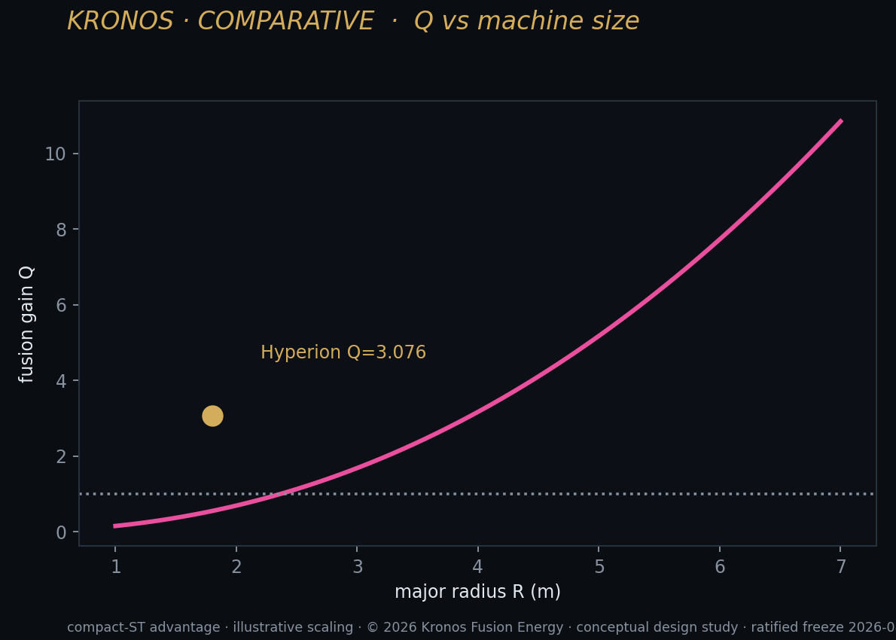
For half a century, the great hope of fusion was the tokamak: a doughnut-shaped chamber that holds a ring of superheated plasma — matter hotter than the core of the Sun — suspended inside a cage of magnetic fields, touching nothing. It is one of the most beautiful ideas the twentieth century produced, and it works — tokamaks make fusion. The world's flagship efforts, the giant international machines, are tokamaks, and they have taught us most of what we know about the delicate art of confining a star.
The conventional path ran on the easiest fuel to ignite: deuterium and tritium, two heavy forms of hydrogen. D–T fusion lights at the lowest temperature of any reaction available to us — its cross-section peaks near conditions we can actually reach, an order of magnitude gentler than any cleaner fuel. That is why every near-term machine reaches for it. If you want a fusion reaction at all, D–T is where you start. So that is where the field started, and where it has largely stayed.
I spent years believing, as almost everyone did, that the road to clean fusion power was simply a bigger, better, hotter tokamak burning D–T. Build it large enough, hold the plasma long enough, and the gain would come. The physics was sound. The trouble was not the physics. The trouble was the neutrons — and the neutron, it turns out, is the ghost that has haunted the fusion dream from the beginning.
The neutron problem nobody can wish away
When deuterium fuses with tritium, roughly eighty percent of the released energy leaves as a single fast neutron carrying 14.1 million electron-volts — an uncharged particle moving at about a sixth of the speed of light. Neutrons are wonderful if what you want is neutrons. They are a serious problem if what you want is a clean, long-lived power plant.
Because it carries no charge, a 14 MeV neutron ignores the magnetic cage entirely. The fields that hold the plasma might as well not exist; the neutron flies straight out of the burning core and buries itself in the first solid thing it meets — the wall. And it does not politely deposit its energy and leave. Consider what a single one of these neutrons does when it strikes the steel of a reactor wall. It does three destructive things at once, and each one is a slow catastrophe.
First, it moves atoms. The neutron slams into an atomic nucleus in the crystal lattice and knocks it clean out of its place, and that recoiling atom then knocks out others, and those knock out others still — a branching avalanche through the metal that ends with thousands of atoms displaced from where they belong. Materials scientists measure this in displacements per atom, DPA: the number of times, on average, every atom in the structure has been kicked out of its lattice site and forced to find a new home. Over a few years of full-power operation, the first wall of a D–T reactor accumulates tens of DPA — meaning every atom in the metal has been knocked loose dozens of times. The metal remembers this. It swells, it hardens, it grows brittle. A wall that began as tough, ductile steel slowly turns into something closer to ceramic, prone to cracking under the very stresses it was built to shrug off.
Second, it transmutes the wall into something radioactive. Some neutrons are not merely deflected; they are absorbed, and absorption changes what an atom is. A stable iron or nickel nucleus swallows a neutron and becomes a different, often radioactive, isotope. The structure that was inert when installed becomes hot with induced radioactivity — activated — so that even after the plasma is switched off, the machine must be handled remotely and its retired components stored as nuclear waste. Worse, some of these reactions spit out helium and hydrogen atoms inside the solid metal. That gas has nowhere to go. It collects into microscopic bubbles along the grain boundaries, and the bubbles pry the metal apart from within, swelling it and embrittling it further. The wall is being both irradiated and inflated at the atomic scale.
Third, it dumps heat exactly where you least want it. All that kinetic energy — 14 MeV per neutron, times an astronomical number of neutrons every second — turns into heat deep inside the wall and the surrounding structure, not on a surface you can easily cool but volumetrically, throughout the material. Managing that buried heat load is its own punishing engineering problem, layered on top of a wall that is simultaneously being displaced, activated, and gas-filled.
Put the three together and the picture is stark. A D–T power reactor is, among other things, a machine for destroying itself from the inside. You can engineer around it — with specially developed low-activation steels, with thick neutron shielding, with a "first wall" and blanket explicitly designed as consumable parts to be swapped out on a schedule as they degrade. But every one of those answers is a cost, and the costs compound in ways that are easy to underestimate from the outside.
Consider the shielding first. To protect the superconducting magnets and the outer structure from the neutron flux, you must wrap the core in enough dense material to absorb it — and neutrons are penetrating, so "enough" means thick, and thick means massive. That mass sits at the largest radius of the machine, where it drives the size, and therefore the price, of everything outboard of it: the magnets that must reach around it, the vessel that must contain it, the building that must house it. A large share of a D–T reactor's bulk exists for no other reason than to stop its own neutrons. Then consider replacement. The first wall and blanket are consumables with a finite radiation lifetime; when they reach it, they must come out. But by then they are intensely radioactive, so no person can enter the chamber. The exchange is done remotely, by machines built specifically for the task, on a plasma that has been shut down for the duration — and every day the plasma is off is a day the plant earns nothing while its capital keeps costing. Downtime, remote handling, and a fresh stream of activated waste to be stored: that is the recurring tax on burning D–T for power.
Remember the second forty: forty dollars a megawatt-hour. A machine that eats its own walls, must carry hundreds of tons of shielding to survive itself, and must be partly rebuilt every few years by robots because no human can go near it, has a very hard time getting under that line. The neutron does not just damage the reactor. It sets a floor under the price of its electricity.
D–T fusion is the easiest reaction to start and the hardest to live with. Almost the entire difficulty of "clean" fusion is the difficulty of the neutron.
So the field has long dreamed of a way out: aneutronic fusion — reactions that release their energy as charged particles instead of neutrons. Charged particles feel the magnetic field. They can be caught, steered, slowed against a voltage, and converted straight to electricity without ever boiling water. An aneutronic plant would be clean in a way a D–T plant can never be, gentle on its own structure, and far cheaper to run for decades because nothing is quietly wrecking it from within. If D–T is the reaction that starts easily, aneutronic fusion is the reaction you actually want to live with.
Why you cannot simply "go aneutronic" in a tokamak
Here is the hard lesson, and it took the field — and me — a long time to accept it.
The cleaner the fuel, the higher the price of admission. Reactions that release little or no neutron energy do not light at tokamak temperatures; they demand conditions far beyond what D–T needs. Where D–T ignites at temperatures already brutal to reach, the near-aneutronic fuels want plasmas several times hotter still, with the density and confinement held in proportion. You are not climbing the same hill a little further. You are climbing a much steeper one, and the reaction only pays out at the top.
And on the way up that hill, a second, quieter enemy is waiting — one that gets stronger exactly as you push toward the temperatures clean fuel demands. It is called bremsstrahlung, "braking radiation": the light a plasma throws off whenever its electrons swerve past ions. Every plasma radiates this way, and the radiated power climbs with temperature and climbs faster still with the charge of the ions in the mix. The energy you pour in to heat the plasma toward ignition is, at the same moment, streaming back out as X-rays.
This sets up a race, and the race is the whole game. On one side is the fusion power the plasma produces, which must stay hot enough and dense enough to keep itself lit. On the other is the radiated power leaking away as light. For a fuel to burn, fusion power has to win — it has to outrun the radiation losses with enough margin left over to sustain the reaction. The single figure that captures the whole contest is the ratio of the two:
fusion-to-radiation ratio = P_fusion ÷ P_bremsstrahlung
>
Above one, the burn can sustain itself; at one, it is on the knife-edge; below one, no confinement can save it.
D–T wins that race comfortably, which is another reason it is the easy fuel. The cleaner fuels win it only in a narrow window, high on the temperature hill — for pure deuterium, the ratio peaks at just 1.589, and only near a punishing hundred-and-eight kilo-electron-volts — and only if almost nothing else is bleeding energy away.
That is precisely where the tokamak fails the clean fuel. Push a doughnut plasma to those temperatures, in the strong twisting fields a tokamak requires, and the geometry itself adds losses on top of the radiation — turbulent transport carrying heat across the field lines, the curvature of the torus driving instabilities. The margin that clean fuel needs is thin to begin with, and the tokamak spends it before the reaction can. The plasma pours its energy away faster than the burn can replace it. The harder you push, the more it leaks. There is a ceiling, and it is not an engineering ceiling you can spend your way through — it is set by the physics of the geometry itself.
This is the dead end that stops the obvious dream. You cannot take the machine that ignites easily — the D–T tokamak — and simply feed it the fuel you wish you could burn. The tokamak is the wrong shape for a clean burn. For years I kept trying to force one machine to do both jobs. I would redesign, re-optimize, add fields, change the profile, and the machine kept refusing, always in the same voice, always pointing at the same wall. I treated every refusal as a problem to be out-engineered. It was not. It was information. Eventually I stopped arguing with the machine and started listening to what it had been telling me all along: that I was asking one shape to do two things physics had made incompatible.
Four things the physics settles before you draw a machine
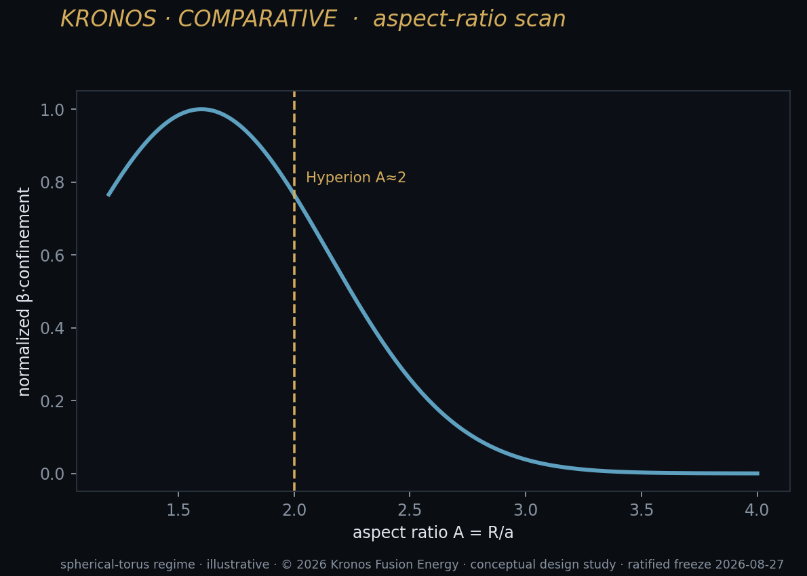
When I finally stopped arguing, I went back to first principles and worked out what a deuterium plasma can and cannot be made to do — before any choice of shape, field, or size. Four results came out of that exercise, and they are the reason there are two machines in this book and not one. They depend only on the physics of the reactions and the radiation; they hold for any device that burns deuterium, ours or anyone's. I want to lay them out plainly, because they are the load-bearing timbers under everything that follows, and because each one closed a door I had spent years trying to walk through.
First: the clean fuel sits on a knife-edge. Take a pure deuterium plasma — the cleanest fuel there is — and ask whether it can heat itself. The charged particles it makes deposit their energy locally and warm the plasma; the bremsstrahlung streams away as light. Compute the ratio of the two and it peaks, at the best temperature, at about 1.589 — barely above one. We evaluated the self-heating balance four independent ways, and every route landed between 0.984 and 1.121, straddling unity. In plain terms: the clean burn barely breaks even against its own radiation, and every loss channel we then neglected — cyclotron light, transport, the faintest trace of impurity — is strictly negative. There is no comfortable margin to spend. That is the knife-edge, and it is not an engineering problem you can out-build. It is arithmetic.
Second — and this is the one that took a genuine dead end to teach me — you cannot buy your way off the knife-edge with better confinement. For decades the field's reflex, faced with a plasma that leaks, was: hold it longer. Improve the confinement and the gain will climb. For a radiating plasma, that reflex is wrong, and the reason is beautiful in its simplicity. Confinement holds particles and heat; it does nothing to light. Photons leave at the speed of light whatever you do. So as you improve confinement toward perfection, the transport losses vanish but the radiation loss does not — and the gain climbs only to a ceiling set entirely by the radiation balance:
Q∞ = P_fusion ÷ (P_radiation − P_self-heating)
In words: in the limit of perfect confinement, the gain approaches the fusion power divided by the amount the radiation out exceeds the self-heating in. If radiation wins that race even slightly, the gain is finite no matter how well you hold the plasma; it does not go to infinity, it goes to a wall. Asking "what confinement enhancement does a clean-fuel machine need to ignite" is therefore a malformed question — the honest answer is that no amount is enough, because the thing bleeding you away does not care how long you confine what is left. That single realisation is what finally stopped me redesigning the tokamak.
Third: impurity tolerance is not one number. The radiation ratio does not fall as one over the plasma's effective charge, the way the textbooks are often read; it has a stubborn, temperature-dependent floor that never goes to zero — mathematicians call that shape affine, a fixed floor plus a sliding part, and the plain consequence is that you can never clean the plasma enough to make the radiation loss disappear. Two plasmas with the same nominal charge but different contaminating species do not radiate the same. So any claim of the form "this machine tolerates impurities up to such-and-such" is not reproducible unless it names the species and the temperature. This sounds like a technicality. It is not: it is the reason our breeder's exhaust story, later, has to specify exactly which gas it seeds its edge with, rather than quoting a single comfortable figure.
Fourth — and this is the bridge to the whole second machine — being charged is not the same as being collectable. A fusion product that comes out charged can be steered by a field. But whether its energy can be converted directly to electricity depends on something subtler than its charge: it depends on how many bodies come out of the reaction. A two-body reaction sends its products out at sharp, discrete energies you can tune a collector to. A three-body reaction smears them across a continuum that no collector can lock onto. The fully aneutronic dream fuels — the ones that make three particles — are charged to the last electron-volt and yet carry a directable fraction of essentially zero. Charge earns you the magnetic steering; multiplicity earns you the electricity. Miss that distinction and you will design a converter for a fuel that can never feed it.
Put those four together and the shape of the answer is already forced before you draw a single coil. The clean fuel is real but marginal; you cannot rescue it with confinement; you must be honest about what pollutes it; and the fuel worth converting is the two-line fuel, not the "cleanest" one. The dream of a single reactor that ignites easily and burns clean and converts directly dies on these four results. What survives is a division of labour.

What the spherical tokamak is genuinely great at
Listening changed the question. Instead of asking how to make the tokamak stop producing neutrons, I asked what the tokamak is for — and the answer was almost embarrassing in its obviousness. If the tokamak is the wrong shape to burn clean fuel, it is a magnificent shape to make it. A breeder's whole purpose is neutrons, so you reach for the most neutron-prolific geometry there is — a spherical tokamak, a doughnut squeezed until the plasma hugs a slender central column, concentrating a torrent of 14 MeV neutrons into a core barely a metre across. For decades that torrent was treated as a nuisance to be shielded against; we turned the problem around and made it the product. The fuel followed the same discipline that produced the two-machine answer — fuel follows purpose. We did not assume deuterium–tritium; we let more than twenty-five thousand machine configurations choose across both candidate breeder fuels, and the one that minimises the machine's binding constraint — its plasma current — won, because D–T's roughly nineteen-fold reactivity meets the same kilograms-a-year tritium duty at a fraction of the current a cleaner fuel would demand. Our breeder, Hyperion, is that machine: a compact spherical tokamak that burns D–T not to make electricity but to make materials — tritium to fuel the machines that follow, helium-3 for the burner, and a flood of neutrons for a whole industry of materials testing and isotope production. It runs net-negative on electricity, drawing roughly −79 MWe rather than feeding the grid — not a flaw but the job, because the near-term business of fusion is fuel and materials, not power. The foundry chapter works the numbers, current by current and neutron by neutron; here it is enough to say that the geometry which dooms a clean burn is the geometry that makes a superb fuel factory.
The other machine: a burner that likes the clean fuel
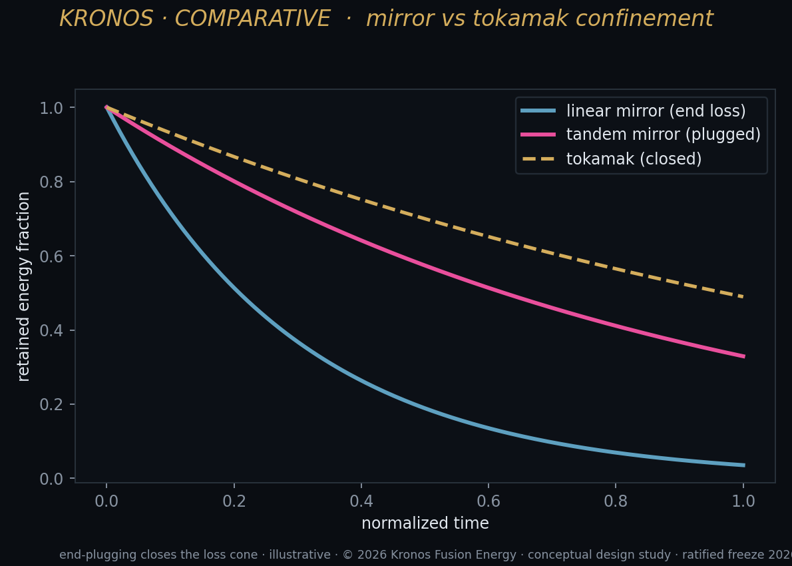
Once you accept that one machine should make the fuel, the second machine becomes obvious: something to burn it, cleanly, for power. And the burner wants a completely different shape — not because we prefer variety, but because the same loss race that defeats the clean fuel in a torus can be won in a straight line.
Our burner is not a doughnut at all. It is a long, straight magnetic bottle — a tandem mirror, roughly 440 meters end to end — that runs on deuterium and helium-3, the clean fuel Hyperion produces. The open, linear geometry is the whole point. A tandem mirror confines its plasma between two intensely strong magnetic "plugs" at the ends — our design reaches 26.49 tesla at the high-field plug, with a 17 tesla throat in the central cell — that reflect particles back toward the middle like mirrors facing each other down a hallway. There is no toroidal curvature to drive the instabilities and cross-field turbulence that bleed a tokamak dry, and a linear machine can hold plasma at very high pressure relative to its field. That combination widens the thin margin the clean fuel needs. In the straight bottle, D–³He can be run hot enough, and lose slowly enough, that fusion power finally wins the race that a tokamak makes it lose.
The fuel does the rest, and here the fourth law from earlier in this chapter pays off. D–³He fuses along a primary branch into just two bodies — a 14.66-MeV proton and a 3.67-MeV helium nucleus — and two bodies means two discrete energies, sharp lines a converter can be tuned to. That is the fuel the fourth law selects: not the "cleanest" conceivable fuel, but the convertible one. (The fully aneutronic alternative people always propose, helium-3 burning on itself, throws three bodies out into a smeared continuum that no collector can lock onto — clean to the last electron-volt and useless to convert.) So the burner sidesteps the neutron catastrophe entirely: its neutron fraction is just f_n ≈ 5.44% — a small fraction of D–T's roughly eighty percent. There is far less to displace the walls, far less to activate the structure, far less consumable machine. And because the energy comes out charged, the open ends of the mirror become a feature rather than a leak: particles stream out along the field lines into a direct energy converter, a set of charged collectors that slow the escaping ions against a voltage and harvest their motion as current — electricity taken straight from the plasma, without paying the full thermodynamic penalty of a steam cycle. The shape that lets the clean fuel burn is the same shape that lets you collect its output directly. Everything fits.

Honesty requires me to name what the mirror gives up in exchange. An open magnetic bottle leaks by design: any particle whose motion is aligned too closely with the field lines slips through the mirror plugs and escapes out the ends — the classic "loss cone" that has dogged mirror machines since the field's earliest days. It is exactly this leak that killed the simple mirror as a D–T reactor generations ago. The tandem configuration is the answer to it: the intense end plugs raise an electrostatic barrier that holds the bulk plasma against that loss, turning the ends from a fatal weakness into a manageable, and even useful, boundary. And for a clean fuel whose escaping particles are charged, the leak is no longer pure loss — it is the feed into the direct converter. We do not pretend the loss cone is gone. We route it into the collector and get paid for it.
This is the machine that eventually delivers the forty-dollar electron — the machine the 2024 version of this book was really dreaming of, finally given the right shape and the right fuel. I will be equally honest about its gate: the burner's economics only truly close when helium-3 is cheap and plentiful, which in the plan means lunar supply arriving around 2040. The physics home is right; the fuel supply is the long pole. But the shape is no longer fighting the fuel, and that is the difference that made the whole thing possible.
The doctrine, in one breath
So the two machines are not a hedge or a compromise. They are what the physics demanded once I stopped insisting that one reactor do two incompatible jobs.
I stopped arguing with the machine and started listening. It had been asking, all along, to be two machines.
Make the fuel where the physics makes fuel easily — a spherical-tokamak breeder that turns the neutron problem into a neutron product. Burn the fuel where the physics burns it cleanly — a tandem-mirror generator running on the helium-3 the breeder makes, converting charged particles straight to power. Fuel first, power second. One fuel doctrine, two machines, each doing only the thing it is genuinely excellent at, and neither asked to do the thing it cannot.
Laid side by side, the two machines are almost mirror opposites — the same physics pushed to opposite corners:
| Breeder (Hyperion) | Burner | |
|---|---|---|
| Geometry | Spherical tokamak (closed, toroidal) | Tandem mirror (open, linear) |
| Fuel | Deuterium–tritium | Deuterium–helium-3 |
| Product | Tritium, helium-3, 14 MeV neutrons | Firm electricity |
| Neutron fraction | ~80% (the point) | ~5.44% (low-neutron) |
| Bar it must clear | Fusion gain (Q ≈ 3.4) | Engineering gain (net electricity) |
| On the grid | Net consumer (~−79 MWe) | Net generator |
| Binding limit | Neutron lifetime at the centrepost | Plug density (and its magnet) |
| When | Buildable now | The later machine |
The staging follows the physics as strictly as the shapes do. The breeder is the near-term machine because its bar — fusion gain, not net electricity — is the one we can clear this decade; construction of the first one begins in 2027, with first tritium targeted around 2030. The burner is the later act, because its economics wait on helium-3 cheap enough to run a fleet, which in the honest plan means lunar supply arriving around 2040. Fuel first, then a small test generator, then a fleet — each step gated by a thing that is actually true rather than a date we would like to hit. That is the deliberately conservative reading of the third forty: not a promise of fusion soon, but a credible path to fusion within forty years.
It is a less romantic story than the single miracle reactor. It is also the first version of the story that is actually true — and, I have come to believe, the only version that ends with fusion on the grid within a human lifetime. Two machines, then: one to make the fuel of a star, one to burn it for light. It is a humbler blueprint than the one I started with, and a far more powerful one, because it is buildable.
I should tell you how I actually got here, because it was not through years of solitary calculation, and I did not get here alone. I came to fusion by a long and unlikely road — a childhood spread across three continents, a brief and frankly comic career in the military that ended the week the army realized it had recruited a yoga-doing vegetarian with no lust for combat, years in technology building companies and selling them, and a stubborn refusal to spend what I earned on anything smaller than this. When I founded this company, I thought I was going to build the fusion machine — the single reactor that would end our long dependence on fire. Then, about a month in, two magnet physicists I had only just met sat me down and, with the patience of people who had given their lives to this, drew the shape of the real answer on a single page. A fuel scientist and a veteran who had carried the American fusion dream for decades joined not long after, and between them they taught me the humbler and truer thing: that the honest answer was not one machine but two. The rest of this book is what we did with that page. The chapters that follow take each machine in turn, and show the work — number by number, gate by honest gate, until the whole of it stands up.
Hyperion — the Foundry That Makes the Fuel
In Greek myth Hyperion was the Titan who fathered Helios — the god who drove the Sun across the sky. It is the right name for this machine, because Hyperion does not shine. It fathers the fire that everything after it will burn. Every account of fusion I have ever read makes the same silent promise on the first page: that the machine on the table is a power plant, or the ancestor of one. Hyperion is not. I want to say that plainly, at the top, because the honesty is the whole point. Hyperion is a factory — the first true forge of the fusion age. Its product is not electricity — it is matter: tritium to fuel the machines that come after it, helium-3 as a clean and strategic commodity, and a torrent of fast neutrons that can qualify materials and manufacture isotopes nothing else on Earth can make at rate. It is the first machine our physics actually asks us to build, and it earns its keep the way a foundry has earned its keep since the Bronze Age — by making the stuff everything downstream is made from.
The previous chapter told the story of why the physics forced us to two machines instead of one. This chapter takes the first of them apart on the bench. It is the machine we can build now — not because we have relaxed our standards, but because the bar it has to clear is a modest one, and it clears it on gain already in hand.
A foundry, not a power plant — and it is net-negative on power
Let me be as blunt as the design is. Hyperion consumes more electricity than it produces. On the best defensible accounting, its net electrical output is about −79 MWe — negative seventy-nine. It is a net consumer of power, and it will be for its entire life. That is not a defect we are hoping to engineer away in a later revision. It is a direct, deliberate consequence of the job we gave it.
Here is why. A deuterium–tritium plasma at Hyperion's scale needs to be driven — its current sustained, its temperature held — and driving it costs power. Hyperion runs at a plasma current of 9.66 MA, and only a small fraction of that current arises self-consistently from the plasma's own pressure; the rest has to be driven externally with neutral beams and radio-frequency power. That current drive, plus the cryogenics that keep the magnets cold and the balance-of-plant, is a standing electrical bill of well over a hundred megawatts. The fusion reactions pay some of it back — but not all of it. The ledger is red, on purpose.
If you were building a power plant, this would be a catastrophe. But we are not, and the distinction is not rhetorical — it changes the physics bar the machine has to clear. A power plant has to win the full round trip: from wall socket, into the plasma, out as fusion, through a thermal cycle, back to the grid, with enough left over to sell. A breeder has to win only the first leg. It needs the plasma to return more fusion energy than it absorbs — it needs gain — and it can stop there, because its product walks out the door as matter rather than as current on a meter. That is a far easier target, and the difference between the two is the difference between a machine we can build this decade and one we cannot.
So the honest question to ask of Hyperion is not "does it make net electricity" but "does it reach gain." The whole argument of this book is that the near-term business of fusion is not megawatts. It is fuel and materials — a market that exists today, that the United States cannot presently source at scale, and that has nothing to do with feeding the grid. Hyperion's mission metrics — kilograms of tritium, litres of helium-3, neutron-hours for irradiation — share not a single input with any power-plant ledger. Asking whether Hyperion makes net electricity is like asking whether a lithium mine makes net electricity. It is the wrong question. The mine makes lithium. Hyperion makes fuel.
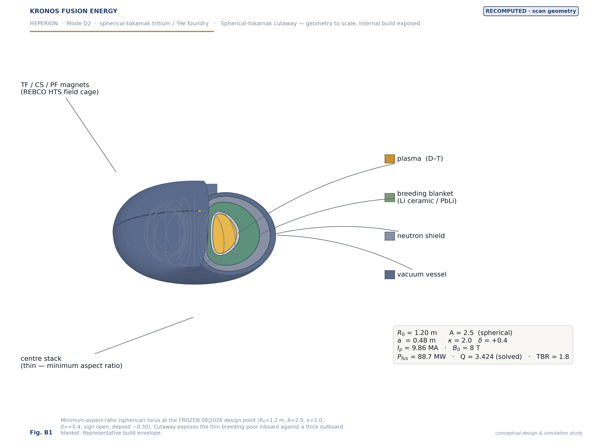
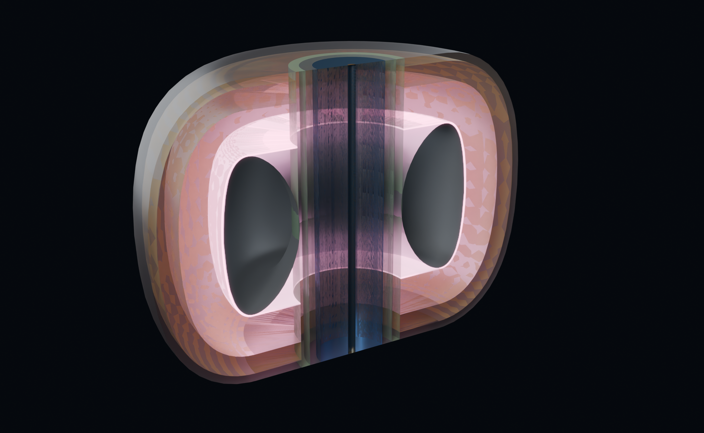
Hyperion is a net consumer of electricity, and that is the correct design. A foundry is judged by what it forges, not by the current on its own meter.
There is a real discipline hiding in that candour. It would have been easy — and it is common in this field — to quietly draw the system boundary so that the machine appears to break even, or to publish the fusion power and stay silent about the recirculating load. We publish both. The engineering power balance is stated, the minus sign is printed, and the case for the machine is built on top of it rather than around it. A design that has to hide its own power meter is a design that does not yet believe its own product.
Why the spherical tokamak is the right shape for this job
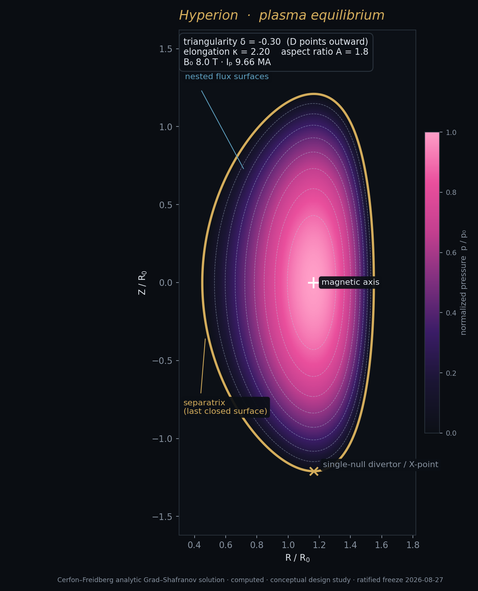
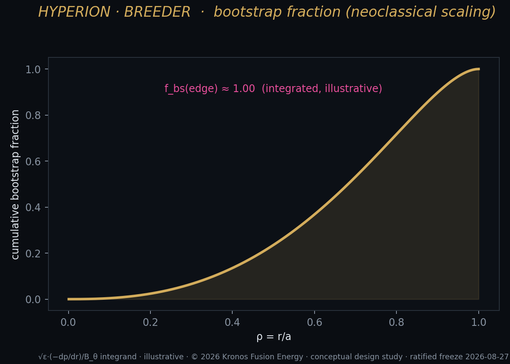
There is a principle I inherited, along with half my instincts, from my mother's side of the family, which is half Japanese: that a thing worth making should be functionally beautiful — that elegance is not decoration laid on top of an object but the visible sign that its form has been fitted, without waste, to its purpose. The Japanese have a word, ikigai, for one's reason for being; fusion is mine, and this idea of functional beauty is how I have tried to pursue it. I raise it here, at the foundry, because the shape of this machine is the cleanest illustration of it I know. Hyperion is not squat and strange because someone thought it looked futuristic. It is squat and strange because that is exactly the shape the job demands, and when you understand the job, the shape stops looking odd and starts looking inevitable — which is, to me, the definition of something well made.
If the job is to make neutrons and breed fuel, the spherical tokamak is very nearly the perfect tool — for reasons that are geometric before they are clever.
A conventional tokamak is a fat ring: a doughnut with a generous hole. A spherical tokamak squeezes that hole almost shut, until the plasma hugs a slender central column like the flesh of a cored apple. The relevant number is the aspect ratio — the ratio of the machine's major radius to its minor radius. Big tokamaks run at aspect ratios of three or more. Hyperion runs at 2.5, with a major radius of just 1.2 metres and a minor radius of 0.48 metres. It is a genuinely small machine.
That squat geometry buys two things a fuel foundry desperately wants. The first is pressure efficiency. A tokamak at a fixed magnetic field is pressure-limited: there is a ceiling on how much plasma pressure you can hold before the confinement gives way, and a fatter, lower-aspect-ratio torus wins more pressure from every tesla you spend on it. That efficiency is what lets a machine barely a metre across reach reactor-relevant conditions inside a build envelope existing heavy industry can actually fabricate. The second is power density. Hyperion's heating power density is about 2.37 megawatts per cubic metre — roughly 2.2 times that of a leading compact high-field tokamak already under construction. A small core working that hard is exactly what you want when the product is the neutron flux itself: you are concentrating fusion reactions into a small volume, and every one of them throws off a 14-MeV neutron you can put to work.
The geometry also decides the fuel, and here the design follows a rule I keep returning to: fuel follows purpose. We scanned tens of thousands of machine configurations across both candidate fuels, deuterium–tritium and pure deuterium–deuterium, and let each one find the plasma current it needed to meet a real tritium duty. The two fuels are genuinely different optima, and neither strictly dominates — pure D–D actually yields far more tritium per unit of fusion energy. But a tokamak is bound by its plasma current, not by its tritium-per-megawatt, and on that binding constraint D–T wins decisively. Because a D–T reaction is roughly nineteen times more reactive, a D–T machine can meet the same national fuel duty at about a third of the plasma current a D–D machine would need — 4.93 MA at the scan minimum, against 15.52 MA for D–D. That is a fraction of the roughly 15 megaamps a conventional flagship tokamak needs, rather than a multiple of it. Choosing the fuel that minimises the hardest engineering constraint, rather than the one that maximises a headline yield, is the difference between a buildable machine and a paper one.
The price of the geometry is the centrepost. Squeezing the hole shut leaves very little room for the central magnet leg, and that leg has to carry an enormous field. In Hyperion the on-axis field is 8 tesla, and the peak field on the REBCO high-temperature-superconductor conductor runs to a conductor peak — a working point only modern high-temperature superconductors make possible in so slender a column. The reassuring part is that, mechanically, this magnet is comfortable. The centrepost is a large-bore, low-current-density winding: it spreads its current over a wide cross-section, so the hoop stress that would tear a coil apart stays low — around three hundred megapascals at the realisable operating point, well inside what the reinforced structure allows. That working point sits well within the demonstrated REBCO envelope, and the conductor is nowhere near its stress limit. The binding constraint on the centrepost is not hoop stress at all. It is neutron lifetime — how long the coil can sit in the blast behind a compact inboard shield before the radiation degrades it.
So here we made a hard, honest choice: rather than pretend the centrepost can survive for decades, we treat it as a consumable. It is designed to be replaced on a schedule — a maintenance cadence, not a fundamental limit — the way you replace a crucible or a furnace liner. Naming the centrepost a scheduled-replacement part, instead of an impossible permanent one, is what lets the rest of the machine breed its own tritium at all, as we will see. The conductor architecture itself is strain-managed and was developed against the far more demanding case — the burner's plug coil, which has to hold nearly 26.5 tesla — so the breeder's centrepost inherits a magnet designed with margin to spare and sits, by comparison, in easy country.
The radial build tells its own story if you read it from the axis outward. The spherical geometry crowds the inboard side: the centre stack eats the room where a fatter tokamak would put a breeding blanket, so the inboard leg is breeding-poor, given over almost entirely to the shield that protects the coil. The breeding is recovered on the outboard side, where the blanket is thick and the neutron flux is generous. That asymmetry — thin and protective inboard, thick and productive outboard — is not a compromise forced on us; it is the deliberate trade that keeps the centrepost a replaceable part rather than an impossible permanent one, and it is why the machine can breed at all inside so tight an envelope.
Why the current requirement is structural, not a bad operating point
A sceptic's first move, seeing a 4.93-megaamp minimum, is to assume we simply chose a poor corner of the design space and that a cleverer operating point would relax it. We tested exactly that, and it does not. Three levers are the obvious candidates for buying the current down, and we swept all three.
Toroidal field is inert. Across the admissible range — sixteen to twenty tesla on the conductor — no configuration closes at a lower current than another. Field, the lever everyone reaches for first, simply does not move this constraint.
Elongation is adverse. Stretching the plasma taller — raising the elongation from 2.0 toward 2.6 — makes the current requirement worse, not better: the D–T minimum climbs from 4.93 to 5.82 megaamps. The lever runs the wrong way.
Aspect ratio offers relief only by leaving the machine. A full sweep of the aspect-ratio–elongation plane does find lower-current solutions, but they sit at aspect ratios of 3.4 to 3.5 — which is to say, at a conventional tokamak, not the spherical configuration under study. The relief exists, but only if you abandon the spherical machine that makes the geometry work in the first place, so we do not claim it.
The conclusion is one I hold to deliberately, because it is the kind of thing an optimistic design study glosses over: the current requirement is a property of the design space, not of a poorly chosen point within it. There is no free lunch hiding in the parameters. What makes the machine buildable is not a lucky operating point; it is the fuel choice — D–T's nineteen-fold reactivity advantage — pushing the whole space down to a current existing heavy industry can actually drive.
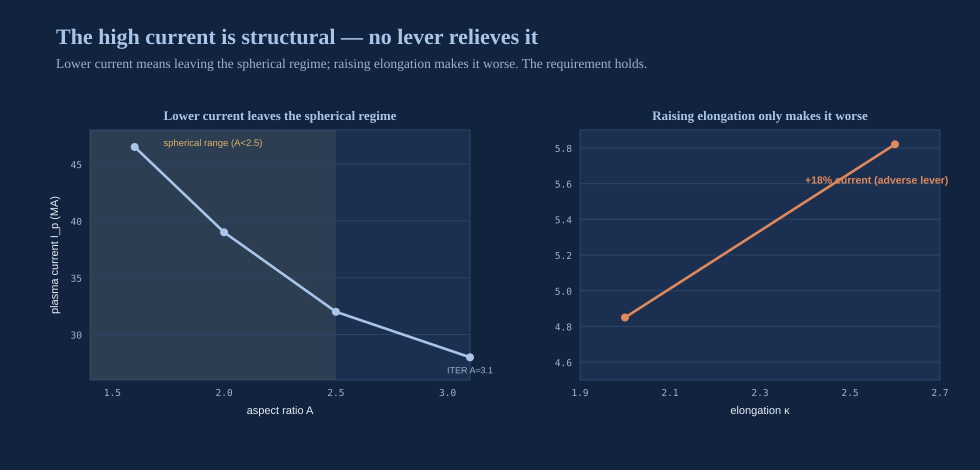
The design point, in numbers
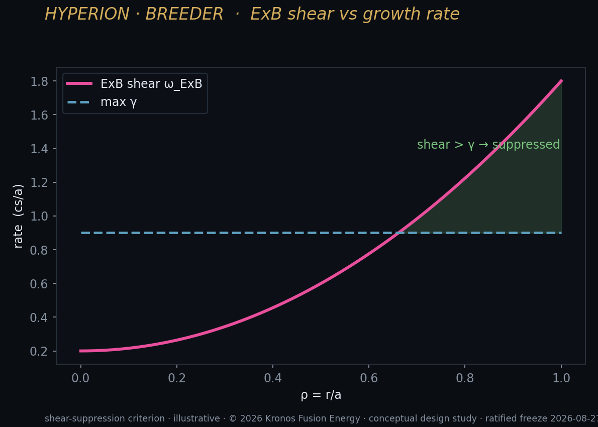
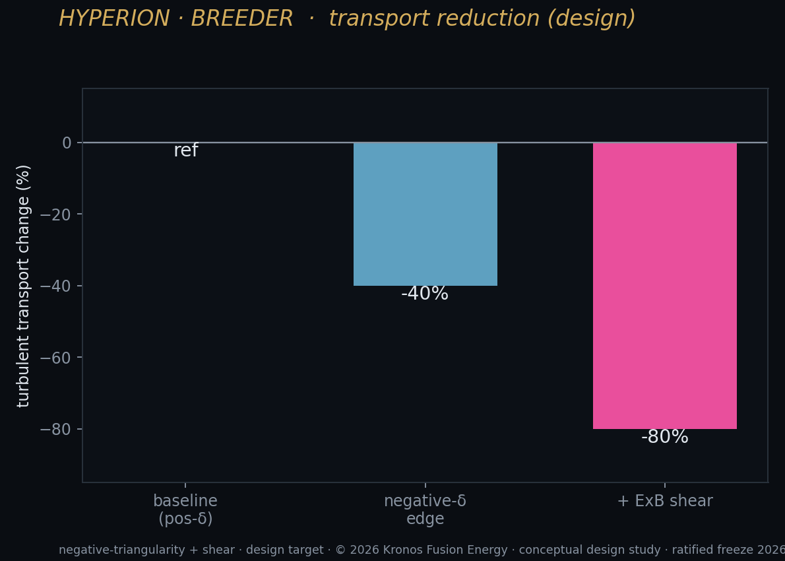
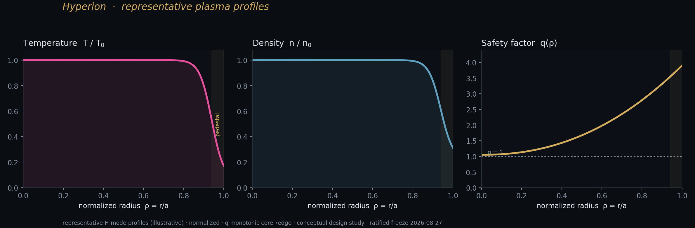
Because this is a book that shows its work, here is Hyperion's design point stated flatly. Every one of these figures is public and reproducible from the openly deposited design.
| Quantity | Value |
|---|---|
| Machine | Compact spherical tokamak, D–T fuel |
| Major radius R₀ / aspect ratio A | 1.2 m / 2.5 |
| Triangularity δ | −0.30 (negative) |
| Plasma current I_p | 9.66 MA |
| On-axis field B₀ | 8.0 T |
| Fusion power P_fus | 85.04 MW |
| Neutron wall loading | ≈ 1.97 MW/m² |
| Scientific gain Q_sci | ≈ 3.076 |
| Net electric power | ≈ −79 MWe (a net consumer) |
| Tritium breeding ratio (advanced-blanket target) | 1.8 |
| Tritium stance | Marginal by design — breeding lever 1.03–1.20 |
| Equilibrium tritium inventory | 6.2 kg |
Two of those numbers deserve a word. The triangularity of −0.30 is negative, and that sign is deliberate. Most tokamaks run positive triangularity — a plasma cross-section shaped like a capital D. Hyperion inverts it. Negative triangularity suppresses the violent edge-localised instabilities — the ELMs — that plague conventional plasmas. An uncontrolled edge burst of that kind can dump a fifth of the plasma edge's stored energy onto the wall in under a millisecond, more than even tungsten can take in a single event. Negative triangularity does not manage that phenomenon; it removes it, which is a genuine virtue when the walls are already living under a neutron flux. The price is paid steadily instead — as a higher continuous heat load on the divertor — and a steady, predictable load is a load an engineer can design against.
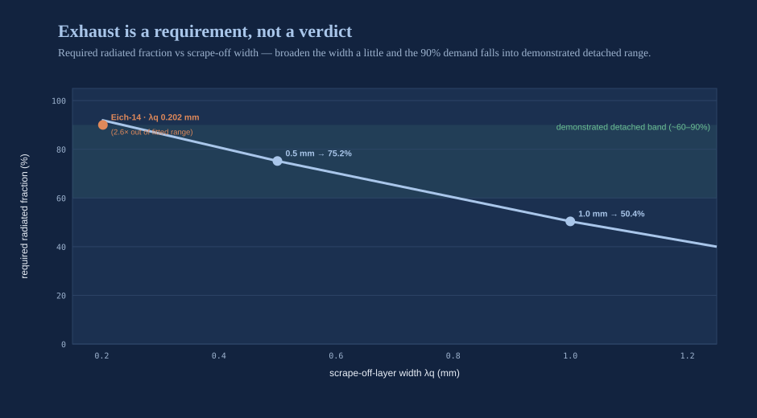
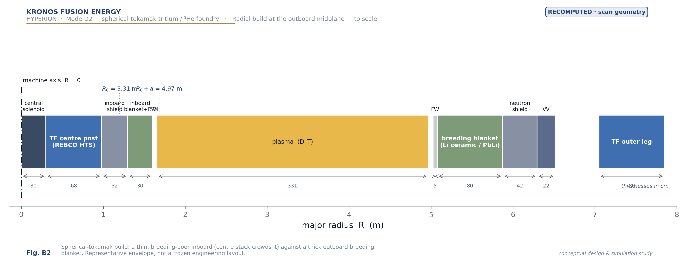
The scientific gain of about 3.076 is the physics bar Hyperion has to clear, and it is the only one. It is worth boxing what the symbol means, because it is the most abused number in fusion:
Q_sci = P_fusion ÷ P_heating
>
the fusion power the plasma produces, divided by the heating power the plasma absorbs to sustain it. It measures the reaction — not the wall socket.
A Q of 3.4 means the fusion reactions return roughly three and a half times the power you pour into the plasma to sustain them. That is the whole physics ask of the machine — and note what it is not. It is not net-electricity gain, the round-trip figure where a Q of forty begins to matter economically; that belongs to the burner. A driven, sub-breakeven plasma that nonetheless reaches this fusion gain is a materially easier target than a power plant's full round trip, and it is exactly the target a foundry needs and a generator does not.
The neutron wall loading of about 1.97 megawatts per square metre deserves the same plain reading, because it is the number that makes the foundry a foundry. Wall loading is the neutron power crossing each square metre of the first wall, and for a power reactor a high value is a curse — it is the rate at which the machine is damaging itself. For Hyperion it is the delivery rate of the product. Nearly two megawatts of 14-MeV neutrons per square metre is a flux more intense than the dedicated materials-irradiation facilities the field has spent years trying to fund, concentrated into a core barely a metre across because the spherical geometry runs the power density so hard. The breeder is small precisely so that its neutrons are dense. It is not net-electricity gain — the sort where a Q of 40 begins to matter economically — and Hyperion does not pretend to reach for that. It reaches for gain, full stop. The forty-fold return an earlier version of this book was dreaming of belongs to the burner, later; Hyperion's honest bar is simply gain, in hand. I will be candid about exactly where that bar sits relative to the record, later in this chapter, because it is the one number in the design that is still a target rather than a measurement.
Exhaust: a violent problem traded for a steady one
The negative triangularity earns a second look, because the sign of that number decides how the machine handles its own exhaust — and exhaust, not breeding, is where most compact tokamaks quietly break.
Every confined plasma has to dump the heat it does not fuse somewhere, and in a conventional tokamak that heat leaves in part through edge-localised modes: periodic, violent bursts in which the plasma edge sheds a slug of its stored energy all at once. A single large ELM can deposit five to twenty percent of the pedestal's energy onto the wall in well under a millisecond — a pulse that exceeds what even tungsten can survive, event after event, over the hundreds of thousands of cycles a working machine demands. Negative triangularity does not manage that phenomenon; it removes it. The evidence is not ours and not theoretical: an entire experimental campaign on a major tokamak, run at strong negative triangularity, sustained a fully ELM-free edge across every single discharge. There was nothing to mitigate because there was nothing there.
What you buy with that is a machine whose edge does not periodically try to destroy its own wall — a real virtue when that wall is already living under a neutron flux. What you pay is a steady price instead of a violent one, and it falls on the divertor, the component that takes the continuous exhaust. The honest accounting here is unforgiving, and I want to show it rather than smooth it. At the machine's poloidal field, the standard scaling for how wide the exhaust channel spreads gives a scrape-off layer only about 0.2 millimetres thick, which concentrates the parallel heat flux to something like 14 gigawatts per square metre — roughly fourteen times what the great international tokamak will face. Held at that width, keeping the divertor target under a survivable hundred megawatts per square metre would demand radiating away about 90 percent of the exhaust power before it lands.
Two things keep that from being a verdict. First, the width itself is an extrapolation: the scaling that produces the frightening 0.2-millimetre figure was fitted at poloidal fields several times lower than ours, so the machine sits well outside the range where the scaling was measured — a fact I would rather name than bury. Broaden the channel to a still-modest half-millimetre-to-millimetre and the required radiated fraction falls to between 75 and 50 percent — squarely inside what detached-divertor operation has already demonstrated elsewhere. So the exhaust is open at this field, not adverse: the ninety-percent figure is a requirement contingent on an extrapolated width, not a wall the machine is up against. Second, sustaining a high radiated fraction is not free — it means continuously seeding the edge with an impurity gas to do the radiating, and that seed raises the plasma's effective charge (from about 1.16 unseeded toward 1.66 for argon) and dilutes the fuel. Because fusion power scales as the square of the fuel density, the seeding pushes the tritium duty down — from around 2.2 toward 1.8 kilograms a year across the seeding range. This is the third of the four general laws made concrete: the tolerable seed is species-dependent, so we name the gas rather than quoting a single comfortable charge. The divertor is real work, but it is an engineering gate, paid through duty, not a physics wall.
Breeding the fuel: the blanket and the ratio above one
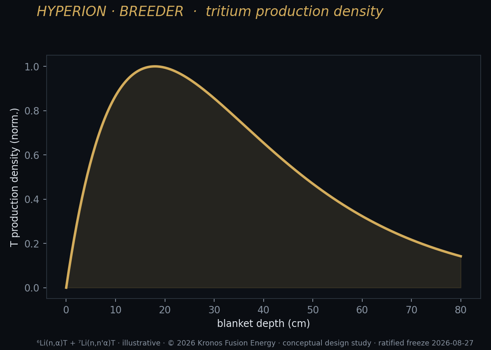
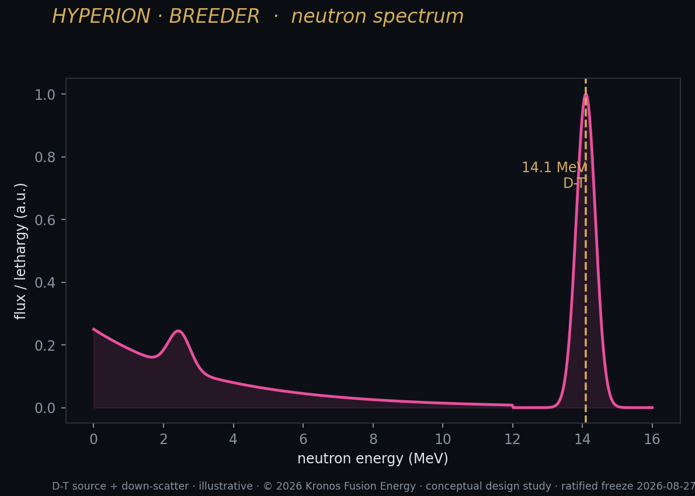
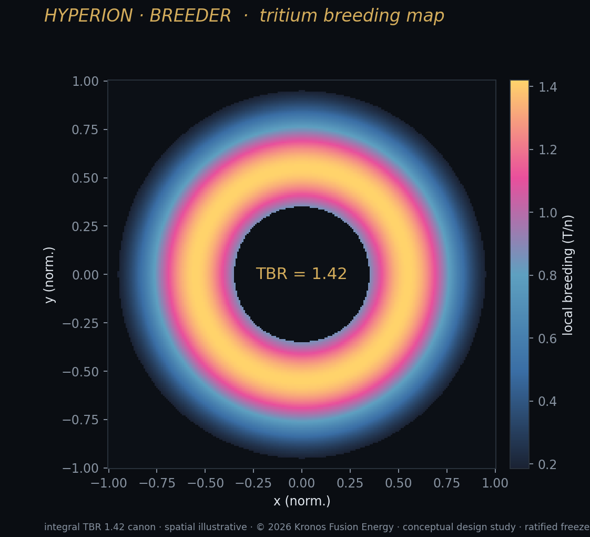
Now to the heart of it — the part that turns a fusion experiment into a fuel foundry. To see why it matters, you have to see the hole it fills.
The United States tritium supply is structurally fragile. Tritium for the weapons stockpile is produced through a single commercial reactor, and tritium is not a stockpile you can simply set aside — it decays at about 5.5 percent every year, so a fixed replacement requirement has to be met, year after year, just to stand still. For two decades that requirement has been met by loading the one available reactor harder, not by adding a second source. There is no civil tritium industry to fall back on. A machine that can make tritium — kilograms of it, on a schedule, from lithium and neutrons — is therefore filling a national gap that has no other filler in sight.
Here is how it does it. When deuterium fuses with tritium, it produces a helium nucleus and a fast neutron carrying about 14 million electron-volts. Of Hyperion's 85.04 megawatts of fusion power, about 70.9 MW leaves as those neutrons and only the balance as the charged helium. In a power plant that neutron fraction is the enemy, because a neutron cannot be turned into electricity efficiently and it damages everything it touches. In a breeder it is the entire business plan, because a fast neutron aimed at lithium makes tritium:
n + ⁶Li → T + ⁴He + 4.8 MeV
That single reaction is the reason a D–T machine can feed itself. Every neutron the plasma throws off is a chance to regenerate a tritium atom in a blanket of lithium wrapped around the core. Notice, too, that the reaction releases energy — 4.8 MeV of it — so breeding is not a tax on the neutron economy but a small bonus on top of it. Hyperion's blanket is a pebble bed of lithium ceramic — lithium oxide, Li₂O — with its lithium-6 enriched to ninety percent, far above the seven-and-a-half percent that occurs in nature, because lithium-6 is the isotope that does the breeding. One subtlety matters here and is easy to get wrong: a lithium blanket works by absorbing neutrons to make tritium, not by moderating them the way a fission reactor's water does. That distinction governs where the real radiological hazard lives — in hydrogen-rich materials that slow neutrons down, not in the lithium itself — and it is why the blanket can be designed around the hazard rather than in spite of it. The numbers make the point sharply. Run a proper Monte-Carlo neutron transport on evaluated nuclear data and the blanket-averaged capture cross-section that matters for the helium-3 destruction channel comes out at about 0.92 barns (a barn is the physicist's unit for how big a target a nucleus presents to a passing neutron — the bigger the number, the more likely a hit) — not the 114 barns you would wrongly infer by assuming a slowed-down, one-over-energy neutron spectrum. The genuinely large cross-section in the machine belongs to hydrogen in water — some 2,700 barns — which is exactly why the hazard analysis chases hydrogenous materials and long holdup times, and leaves the lithium comparatively alone. Get the spectrum wrong and you protect against the wrong thing.
One reaction alone is not enough, though, because a single neutron can breed at most a single tritium, and real machines leak neutrons through every port and absorb them in every structural wall. To claw the economy back above break-even we interleave beryllium pebbles as a neutron multiplier: a fast neutron striking beryllium knocks two neutrons loose where one went in, very nearly doubling the count before the lithium ever sees them. The measure of how well the whole arrangement works is the tritium breeding ratio, and it is worth boxing:
TBR = (tritium atoms bred in the blanket) ÷ (tritium atoms burned in the plasma)
>
If TBR > 1, the machine makes more fuel than it consumes.
Everything above 1.0 is deliverable product.
The plain-language translation matters more than the symbols. A tritium breeding ratio of exactly 1.0 would mean the machine breaks even on fuel: it replaces every tritium atom it burns and hands you nothing. A ratio below 1.0 — where every real machine starts — means the machine slowly starves. The entire game of blanket design is to push the ratio above one and then higher, because everything above 1.0 is surplus you can deliver to a customer or let decay into helium-3.
Now for the honesty this number demands, because it is the number a hopeful engineer most wants to round up. A bare lithium blanket, struck by the 14-MeV spectrum, breeds below one — left there, the machine starves. Beryllium is the fix: struck by one fast neutron it yields two, and packing it into the blanket is what buys breeding at all. On the frozen recipe — beryllium at 9.6 to 11.8 percent by volume — the deposited Monte-Carlo transport gives a lever of 1.03 to 1.06; a dedicated five-centimetre solid-beryllium layer lifts the same lever to 1.18 to 1.20 (gate BR-L2-A7). And the lever runs higher when asked: the advanced-blanket ceiling reaches TBR 1.42, which turns the surplus ladder into 0.29 → 0.9 → ~2.0 kilograms of tritium per unit per year (surplus = (TBR − 1) × 4.76 kg burned per full-power year; gate BR-L2-A7u). Read that the way the design intends: Hyperion is tritium-marginal by default and expandable by design — its fuel loop held just above replacement, with every step up the ladder a priced design choice, never a surplus headline.
That the ratio is a lever at all is the design's central move. Breeding depends on blanket geometry, on lithium enrichment, on how much beryllium you pack in, on how much of the plasma's surface the blanket covers — every one a design variable. That is what lets Hyperion be sized to a requirement: because the ratio is a knob, the tritium output can be dialed to a real national need rather than fixed at whatever a physics optimum happens to spit out. A requirement-sized machine is smaller, cheaper, and easier to license than a maximised one, and — as we are about to see — its on-site inventory stays inside established civil practice. Designing to a requirement is a different discipline from chasing a peak, and it is the discipline of a foundry.
Why a small breeder succeeds where large ones failed
There is a reason this chapter can be written at all, and it is worth pausing on, because a fusion tritium-and-helium-3 breeder is not a new idea. It has been proposed at least four times over the decades, and rejected in print at least once. The rejections were not foolish. They were correct — about the machine that was being proposed.
Every prior concept sized the breeder to support a fusion fleet: enough tritium to start and feed a whole generation of power plants. That is a demand measured in something like a hundred kilograms of product a year, and a machine built to that scale carries a tritium inventory on the order of 1.8 tonnes on site. An inventory that large is, in the reviewers' own word, essentially unlicensable — no civil regulator will permit that much of the most mobile radioisotope there is under one roof. The concept sank on its inventory, every time.
Hyperion changes exactly one thing, and it changes everything. It sizes to a named national requirement — a couple of kilograms a year, the real gap in the real supply — rather than to a hypothetical fleet. At that scale the equilibrium tritium inventory falls to about 6.2 kilograms, a roughly thirty-five-kilogram-class holding once handling and holdup are included. That is something like fifty times smaller than the tonne-scale concepts, and it sits comfortably inside established civil licensing precedent. The physics of breeding never changed between those failed proposals and this one. Only the size of the ask did.
The physics never forbade a small breeder. It forbade a large one.
The reframing shows cleanly when you set the concepts side by side. The physics of breeding is common prior art; what is distinctive is the sizing, the customer, and the inventory that follows from them.
| Prior fusion-breeder concepts | Hyperion | |
|---|---|---|
| Sizing driver | Support ratio to a fusion fleet | A named national requirement (~kg/yr) |
| Customer | Hypothetical satellite reactors | A present isotope market + procurement authority |
| Scale considered | ~100 kg/yr helium-3 | ~kg/yr tritium |
| On-site tritium inventory | ~1.8 tonne-class (rejected as unlicensable) | ~35 kg-class (inside civil precedent) |
That single reframing — build for the requirement, not for the fleet — is what turns a repeatedly-rejected idea into a buildable one. The customer is not a future fusion industry that does not yet exist; it is a present national market for isotopes and a procurement authority that needs them today.
Helium-3: the fuel that makes itself
Here is the quiet elegance of the whole architecture, and my favourite fact about the machine — the kind of fact that sounds like alchemy and is only physics.
Tritium is radioactive. It decays, with a half-life of about 12.3 years, into helium-3 — the very fuel the burner will need and the scarcest commodity in the entire fusion economy. Set a stock of tritium in a vault and walk away, and it transmutes itself, atom by atom, into the rarest fuel humanity knows, asking nothing of you but patience. So a tritium inventory is not a static stockpile. It is a helium-3 factory that runs by itself, needing no plasma, no power, no operator — just time. And crucially, this stream does not depend on the breeding gate at all: helium-3 accrues from the standing tritium inventory whether the blanket is breeding at 1.03 or 1.20 or anything else. It is bred independently of the lithium blanket, which is why we can count it even while we are honest about the breeding ratio still being a development target.
The scarcity it addresses is acute. The federal helium-3 auction that once distributed the isotope ceased in 2009. Since then, domestic supply has come almost entirely as a trickle from the decay of the weapons-tritium stockpile, and demand — for neutron detection at borders and ports, for sub-kelvin cryogenics, for medical imaging, and eventually for fusion fuel itself — chronically outstrips it. Hyperion turns a rationed national shortage into a scheduled output.
And the extraction is nearly free, for two reasons. First, helium refuses to condense until you reach a few degrees above absolute zero, which makes separating it from everything else a single cold step whose cryogenic load is a rounding error against the machine's own power bill. Second — and this is the fact that surprised even me — the intense neutron flux that fills the machine barely touches the helium-3 that is accruing. There is a destructive channel, in which a neutron converts a helium-3 nucleus back into a proton and a tritium (n + ³He → p + T), and on paper it looks alarming. In the real machine, on the staged-extraction path, it removes only about 0.18 parts per million of the helium-3 — and stays below eight parts per million even under a deliberately punishing bound that holds the entire inventory in peak flux for a full day. The strategic product survives the very flux that makes it. It is bred in the blanket's shadow and ripens in a place the neutrons cannot reach it.
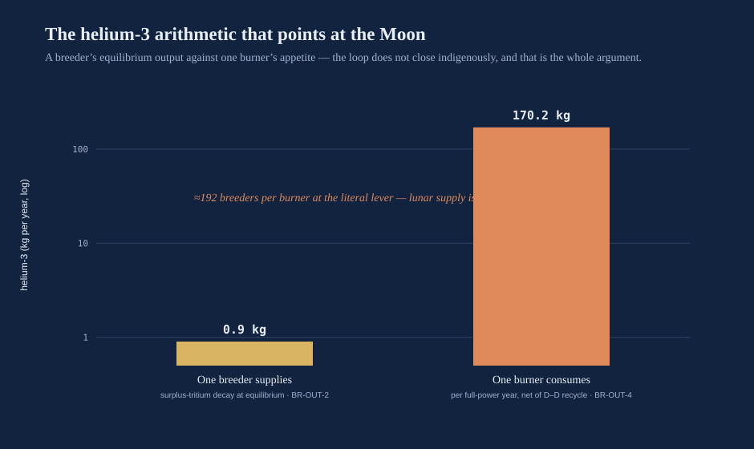
It is worth stating the accrual honestly, because a scarce co-product is exactly the number a hopeful engineer rounds up. The stream is radiogenic and slow: bred tritium decays with its 12.3-year half-life, and at equilibrium the surplus works out to about 0.9 kilograms of helium-3 per breeder per year (gate BR-OUT-2). That is real, strategic, and deliberately small — on the order of half of today’s entire terrestrial supply, from one machine — and the book carries it as exactly that.
I will hold one line of honesty here that our own accountants insist on, and rightly. We never let the helium-3 stream inflate the story. It is a slow accrual, governed by a twelve-year half-life, and it is carried as upside — real physics, booked conservatively — not banked as if it arrived tomorrow. A scarce co-product is exactly the kind of number a hopeful engineer over-credits, so we discipline it deliberately. The fuel makes itself, yes. It just makes itself slowly, and we say so.
The tokamak's temper, priced in
A tokamak carries a plasma current, and a plasma current can be lost suddenly. This design refuses to treat that politely. The frozen disruption analysis (gate BR-L2-A10) puts the current-quench time at 7–19 milliseconds, the halo currents at up to 35 percent of the plasma current — the mechanical load the vessel is built to carry — and the runaway-electron avalanche squarely in the severe regime: at these parameters, a multi-mega-amp electron beam can grow from an almost invisible seed. So the consequence is stated as a design fact, not a caveat: shattered-pellet injection is a hard requirement of this machine — a first-class mitigation system engineered in from day one, with the quench time setting how fast its trigger must fire. And one number on the brighter side of the same ledger, measured rather than assumed: fast-alpha confinement comes out at 99.98 percent (ASCOT5, 10⁵ markers, gate BR-L2-A20), with a prompt-loss wall load of just 0.083 kW/m² — the alphas stay in the fire, which is what lets a small machine heat itself. And the negative-triangularity bet — the shape this whole machine is built around — is now confirmed at first principles: nonlinear CGYRO gyrokinetics shows the dented plasma suppressing turbulence by about 40 percent at ion scales (converged and saturated at the real electron mass; gate BR-L2-A1c) and about 80 percent at electron scales (REG-P13), a result that holds across a sixteen-fold sweep in collisionality (BR-L2-A13) and across the full spectrum of turbulent wavelengths (BR-L2-A18c). Four independent calculations, mutually consistent, all pointing the same way: the quiet basin is a property of the shape, not an artifact of any one simulation.
The neutron as a resource
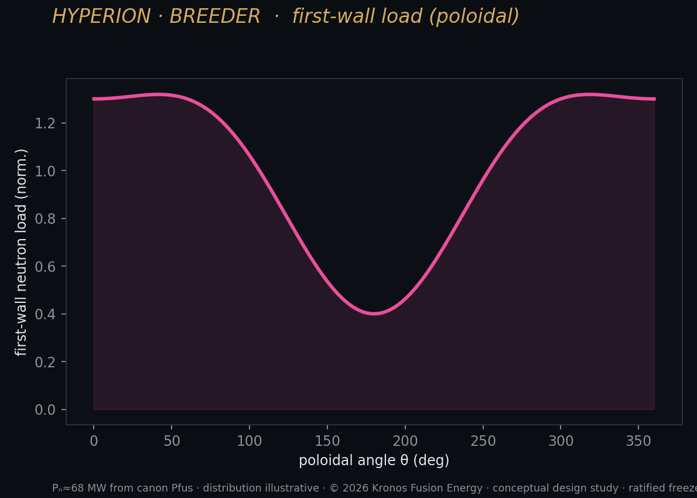
The third product comes off the same plasma as the first two, and it is the one the field spent fifty years treating as its enemy — building walls, blankets, and whole reactor budgets to keep it out: the fast neutron itself. We invite it in and hand it a job.
Hyperion produces 14-MeV neutrons at a source strength of about 3.1 × 10¹⁹ per second, delivering a neutron wall loading near 1.97 megawatts per square metre — a flux far more intense than the dedicated fusion-materials irradiation facilities the field has proposed and, in some cases, is still struggling to fund. This matters for a reason that sounds circular but is not: every future fusion power plant, ours included, will be built from structural materials that must first be qualified against fusion-spectrum neutrons, and a 14-MeV neutron does damage that a fission reactor's slower neutrons cannot faithfully mimic — it knocks atoms out of a crystal lattice harder, and it transmutes them into helium and hydrogen inside the metal in a way lower-energy neutrons do not. There has never been a place on Earth to do that qualification at rate. Hyperion is one. The neutron that a clean D–³He burner deliberately refuses to make is exactly the neutron the breeder makes by the trillion — which is why the breeder, not the burner, serves the irradiation and isotope market. The two machines are complementary down to the neutron.
The breeder's neutron field is not monochromatic, and the detail matters for how the machine is shielded and how well it qualifies materials. Most of the neutrons come off the deuterium–deuterium side reactions at 2.45 million electron-volts, but the D–T burn opens a second, harder group at 14 megaelectron-volts. That hard group is a minority by count — under a tenth of the neutrons — yet it carries more than a third of the neutron power, and it is the group that does the qualification work no fission reactor can mimic: it drives threshold reactions that lower-energy neutrons cannot, and it generates roughly eleven times as much helium inside steel. It also sets the shield. A shield designed for a pure 2.45-MeV spectrum is undersized by nearly half against the real mixed field; the 14-MeV group demands about 47 percent more shielding thickness, and therefore mass, than the soft group alone would. This is the sort of number that is invisible until you compute the spectrum honestly, and expensive if you do not.
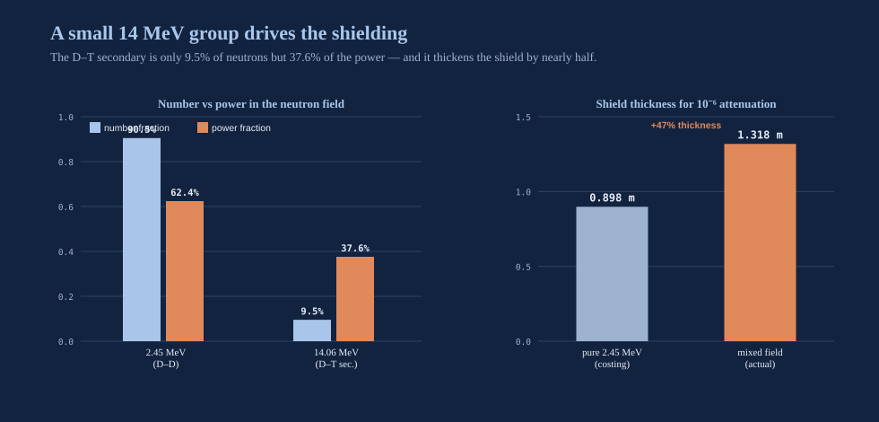
And a neutron flux that intense is also an isotope factory. Aimed at the right targets, Hyperion's neutrons produce medical and industrial isotopes as co-products of the same core — molybdenum-99, the workhorse of nuclear-medicine imaging, at roughly 1,945 curies per full-power-year; terbium-161, a promising successor to today's targeted radiotherapies, at some 3,689 curies per year; with actinium-225 for targeted-alpha cancer therapy carried honestly as further upside. These are not speculative markets. They are supply gaps the medical world lives with today, filled as a side effect of making fuel.
The fuel cycle, whole
Step back and the machine resolves into a single loop.
Deuterium and tritium go in. The plasma burns, throwing off charged helium and — mostly — fast neutrons. The neutrons strike the lithium blanket and, with the beryllium multiplier's help, breed new tritium to replace what was burned. The surplus tritium is drawn off: some delivered to the national requirement as tritium, some set aside to decay quietly into helium-3. The same neutron flux, on its way to the blanket, qualifies materials samples and transmutes target isotopes. One plasma, three products — tritium, helium-3, and neutrons — each addressing a real and unmet need, and each accounted for separately so that no stream is counted twice. That last point is a matter of integrity: the neutron irradiation hours, for instance, we book at zero value, because no established market price for them exists anywhere in the world, and we would rather sweep a real product than bank a speculative one.
The machine that watches it
One more enabling subsystem is worth a paragraph here, because Hyperion inherits it from work done for the harder machine, and inheriting it is part of why the breeder is the near-term build. (The other such inheritance, the centrepost magnet, we have already met — a strain-managed conductor developed against the burner's far more demanding plug coil, sitting stress-comfortable at its frozen working point and bound not by stress but by neutron lifetime, which is why we treat it as a scheduled-replacement part.)
The subsystem is the control layer. A nuclear-regulated device has to be operated, certified, and kept inside a safe envelope in real time, and that is handled by a layered digital-twin architecture treated in its own chapter elsewhere in this book. The honest framing for the breeder is that none of this chapter's physics depends on that layer: physics-informed machine learning is deployable now inside a deterministically clamped safe set, quantum sensing is a near-term diagnostic tier, and quantum computation is an offline calibration tier with no resource advantage this decade. The control system is the certification-and-operations path, carried alongside the design rather than baked into its power balance.
The honest gates, and the clock
So where does that leave us, and when?
Let me state the gates the way I state them to reviewers and to myself. Hyperion is buildable on gain already in hand — the design is solved, published open-access, and independently reproducible; the reduced-order physics engines that produce these numbers can be run in a browser by anyone who wants to check them. But the load-bearing figure is the scientific gain, and here is the sharpest honesty in the chapter: no fusion device anywhere has yet exceeded a Q of about 0.7. Hyperion's design point sits at Q ≈ 3.076, several times higher, and we carry that openly as a design-point target that remains to be demonstrated — not as a result. It has no hardware built yet, and I will not pretend otherwise. The gain is solved on paper and in code, not yet demonstrated in steel; hardware validation comes with the first machine's operation, not before.
Two smaller declarations belong in the same spirit, because the record requires them and because leaving them out would be the kind of quiet rounding this book exists to refuse. The first is the triangularity. The design value carried through the deposit is negative, δ = −0.30; a variant in the configuration scan carried a positive value, and although the two differ by only a couple of percent in current, they must not be conflated — the negative sign is the design, the positive one an artefact of the sweep. The second is the helium ash. The scan applied a five-percent helium-4 fraction to the D–T cases and zero to pure D–D. The zero is physically correct — neither D–D branch makes helium-4 — but the asymmetry runs against the fuel that wins, so if anything it understates D–T's three-fold current advantage rather than inflating it. The machine's own equilibrium ash fraction we report as genuinely undetermined, somewhere in a band the particle balance admits, rather than pinning it to a convenient value. None of this changes the verdict; all of it is the difference between a scan you can trust and one you cannot.
The reason I can still call this the buildable machine is the very thing this chapter has been circling. A breeder needs gain, not net electricity — a driven, sub-breakeven plasma at demonstrated confinement is a materially easier target than the full round-trip a power plant must win. The hard part of a fusion breeder was never the nuclear physics of breeding, which is textbook; it was the two obstacles that sank every prior proposal — machine scale and tritium inventory — and both of those now fall below their binding thresholds. What remains load-bearing is the plasma gain, and what remains after that is engineering. The old slogan of "net gain in 2027" is retired for good — 2027 is when we begin to build, not when a milestone lands.
The schedule follows from that discipline. Construction of the first machine begins in the second quarter of 2027. The first tritium is targeted for around 2030, on a build of roughly three and a half years, and we carry 2031 as the sober planning basis in case the first-of-a-kind takes the longer road that first-of-a-kinds usually take. And because this is a foundry serving a finite requirement for fuel and materials — not a fleet meant to blanket the grid — we build few of these, deliberately: a small number over the following decade, each one faster than the last as the learning curve bites.
That is the machine. Not a power plant, and never dressed up as one. A compact spherical tokamak, barely a metre across at its heart, that embraces the neutron it was built to make, breeds more fuel than it burns, manufactures the scarcest commodity in fusion as a matter of radioactive patience, and qualifies the materials every reactor after it will be made from. Consider what that means: a machine the size of a small room, quietly minting the fuel of stars and the isotopes of modern medicine from lithium and time. It starts the whole clock — the deliberately conservative clock of within forty years — by making, at last, the fuel that everything downstream will burn. Prometheus stole fire from the gods; Hyperion will make it, on a schedule, inside a building heavy industry already knows how to pour. The next chapters follow that fuel out of the foundry and into the machine that finally turns it into power.
The Burner — Firm Power, Low Neutrons
The breeder makes the fuel. The burner is the machine that turns it into electricity — firm, around-the-clock electricity, made cleanly enough that the plant does not slowly poison itself in the making. This is the machine humanity has been trying to build since the first hydrogen bomb told us how much energy hides inside light nuclei: a star we can switch on for the grid and switch off for the night, that leaves no smoke in the sky and no thousand-year waste in the ground. If Hyperion is a foundry, the burner is the power station the foundry exists to supply. It is where the whole enterprise finally points at the thing everyone wanted from fusion in the first place: a wall socket that never dims and never warms the planet. And it is a completely different animal from the breeder. Not a doughnut. Not a tokamak. A long, straight magnetic bottle, roughly four hundred and forty metres of it — a plasma thread nearly half a kilometre long strung between two magnetic anchors — burning deuterium and helium-3 and pouring most of its energy out of its two open ends as a stream of charged particles that we catch and turn, as directly as physics allows, into current.
This chapter is about that machine: why it has the shape it has, how it actually holds a plasma still with nothing but fields and voltage, why the fuel it burns is the clean one, how it makes electricity without a full steam cycle, and — because honesty is the whole point of this book — exactly where it is not finished. The burner is the later act. It is funded by the breeder, its economics wait on cheap lunar helium-3, and it carries a single genuine physics gate that we will name plainly rather than bury. But the physics of it closes on paper, on measured efficiencies, and it is reproducible. That is a real thing, and it is worth walking through carefully.
Why a bottle, and not a doughnut
In the last chapter I described the dead end that forced two machines: you cannot take the tokamak — the shape that ignites easily on deuterium and tritium — and simply feed it the clean, aneutronic-leaning fuel you actually want to live with. Push a doughnut plasma to the temperatures that clean fuel demands and it radiates its energy away faster than the reaction can replace it. The geometry itself sets a ceiling. So the burner cannot be a tokamak.
It is a tandem mirror: a straight tube of plasma held in the middle, pinched at each end by an intense magnetic field that acts like a cork, or a mirror, reflecting most particles back toward the centre. Between the two end plugs sits a long, gently confined central cell where the fusion happens. The magnetic field lines run down the axis of the machine and — crucially — they are open. They do not close on themselves the way a tokamak's do. They thread straight out through the mirror throats at each end and into open space beyond.
That single geometric fact is the reason the burner exists in this form. A closed magnetic system, like a tokamak, traps its exhaust inside the doughnut; you have to bleed the energy out through the walls, which means heat, which means a steam cycle, which means a power station wrapped around a boiler. An open system lets the burned fuel leave — axially, straight out the ends — as a directed beam of charged particles you can steer onto a collector and convert to electricity on the spot. The open field line is not a leak to be plugged. It is the exhaust pipe, and it is the whole business model.

A tokamak traps its exhaust. A mirror aims it. That is the difference between boiling water and making electricity directly.
There is a second architectural dividend to the open geometry, and it is worth stating because it quietly removes a whole category of tokamak grief. Because the field lines are open, the machine has no closed flux surfaces, no X-point, no edge pedestal to destabilise. The violent edge instabilities that plague tokamaks — edge-localised modes, the ones that spit heat at the wall — simply do not exist as a phenomenon here. There is nothing for them to be. The burner needs no divertor. Its exhaust leaves axially onto the conversion collectors, and the counterpart engineering requirement is heat management at those end collectors rather than a war against disruptions inside a torus. That requirement is real, and worth a number. Something like 906 megawatts of power streams out through the two end apertures, and if you let it land unexpanded it would deposit around 195 megawatts per square metre — far past what any surface survives. The open geometry supplies its own remedy: because the field lines fan out as the field falls toward the converter, the same flux conservation that governs the mirror lets you spread the exhaust over a much larger area. Expanding from the 26.49-tesla ion-end throat down to about half a tesla is a roughly fifty-three-fold increase in area, and it brings the collector loading down to about 3.7 megawatts per square metre — a heat load an actively cooled surface can take. We state the expander field as a requirement rather than a solved design, because no such specification yet exists in the record, but the physics of the fan-out is not in doubt. Even the triangularity that shaped the breeder's plasma — the negative-δ trick that bought Hyperion its stability — is not a parameter this machine even possesses, because there are no closed flux surfaces to shape.
How the bottle actually holds a plasma


Say "magnetic bottle" and most people picture a field so strong the plasma simply cannot push through it. That is not quite how it works, and the difference is the whole story of the tandem mirror, so let me build it up in plain steps.
Start with a single magnetic mirror. A charged particle in a magnetic field does not travel in a straight line; it spirals around the field line as it moves along it. The physics that makes a mirror work is a conserved quantity — the magnetic moment, the ratio of the particle's spiralling energy to the local field strength — which stays very nearly constant as the particle drifts into stronger or weaker field:
µ = (perpendicular energy) ÷ B ≈ constant
When that spiral carries the particle into a region where the field gets stronger — the pinched throat at the end of the tube — holding µ constant forces its perpendicular (spinning) energy up, and since total energy is fixed, its forward motion is drained away until, for most particles, the motion reverses and the particle is thrown back toward the centre. That is the mirror: not a wall, but a reflector that turns particles around by geometry alone, powered by a conservation law. The trouble is that it is a leaky reflector. Any particle moving nearly straight along the axis — with too little perpendicular energy to trade — slips through the throat and is gone. Physicists call that escape hatch the loss cone, and how wide it is depends only on the mirror ratio, the field at the throat divided by the field in the middle: a bigger ratio, a narrower cone, fewer escapees. A plain magnetic mirror bleeds through that cone steadily, and no achievable mirror ratio closes it enough. On its own it is not good enough to hold a fusion plasma. That single fact killed the simple mirror as a reactor generations ago, and it is why the tandem configuration exists.

The tandem mirror closes that leak with a second cork made not of magnetic field but of voltage. Here is the mechanism, and it is one of the more elegant ideas in fusion. Electrons are roughly two thousand times lighter than ions and move far faster, so they drain out of a mirror more readily than the ions do. As they leave, they carry negative charge away with them, and the plasma left behind is nudged slightly positive. That is not a nuisance — it is the design principle. In a tandem mirror you deliberately amplify it: you pack each end plug with dense, hot plasma so that the plug floats at a high positive electric potential relative to the long central cell in the middle. To an escaping electron, that positive plug is an attractive wall that holds it in. To a positively charged central-cell ion trying to leak toward the exit, that same plug is a hill of like charge it must climb — and most ions simply do not have the energy to climb it. The fuel in the middle is held in place electrostatically, by an electric field, with the magnetic mirror doing only part of the work. Physicists call this ambipolar confinement, because it balances the two species: the potential that plugs the ions is set up by the behaviour of the electrons.
The height of that confining wall is what everything turns on, and it depends on one ratio in a way worth stating exactly:
eφ_i ≈ T_e · ln(n_plug ÷ n_central)
In words: the depth of the ion-confining potential (on the left, an energy) equals the electron temperature in the plug times the natural logarithm of the plug-to-central density ratio — how many times denser the plasma in the plug is than the plasma in the long central cell. So to build a taller wall you can either make the plug hotter or make it much, much denser than the middle. The logarithm is a hard master. Because the confining energy grows only as the logarithm of the density ratio, every extra volt of barrier costs you a multiplicative increase in plug density, not merely an additive one. Want to double the wall? You do not double the density ratio; you square it. That single, unforgiving piece of arithmetic is what produces the burner's one real gate, and I will name the number it forces later in the chapter.
The plug is a cork made of pressure and voltage, not of steel — and the wall it builds is only as tall as the plug is dense.
One more piece completes the picture, because it is the piece that has historically been hardest. The plug's confining potential is proportional to how hot its electrons are, so you want the plug electrons kept hot. But electrons conduct heat along a magnetic field line with ferocious efficiency; the cooler electrons of the long central cell, connected to the plug by those same field lines, would happily flow up and drain the plug's heat away — short-circuiting the very potential you are trying to build. The fix is a thermal barrier: a carefully shaped dip in the potential, sitting between the central cell and each plug, that thermally isolates the plug electrons from the central-cell electrons and lets the plug run hot and stand tall. The thermal barrier is not optional trimming. It is the component that makes the whole electrostatic scheme possible — and, as we will see, it is the component with the most troubled experimental history.
The clean fuel and the neutron ledger
Everything clean about the burner starts with what it burns. The primary reaction is worth boxing, because every good thing about the machine descends from it:
D + ³He → p (14.66 MeV) + ⁴He (3.67 MeV) — total 18.35 MeV, no neutron
Deuterium and helium-3 fuse into a proton and a helium-4 nucleus, releasing 18.35 million electron-volts, and in that primary reaction there is no neutron at all. Both products are charged. Both can be caught by a magnetic field and steered. Compare that to deuterium–tritium, where roughly eighty percent of the energy comes streaming out as fast, uncharged, wall-wrecking neutrons. The contrast is the entire reason to prefer this fuel for a power plant.
I want to be precise here, because precision is where credibility lives, and the temptation to oversell aneutronic fusion is a century old. D–³He is low-neutron, not zero-neutron — and it is worth being exact about where the leftover neutrons come from, because it is not from the reaction we are paying for. It is from the deuterium fuel keeping company with itself. Any plasma full of deuterium will have deuterons fusing with other deuterons, and that side reaction runs down two roughly equal branches:
D + D → T + p (charged, harmless to the walls)
D + D → ³He + n (2.45 MeV) (the neutron branch)
One branch makes a proton and a tritium nucleus — both charged, both harmless to the walls. The other makes a helium-3 nucleus and a 2.45-MeV neutron. And there is a second-order sting: the tritium produced by the first branch can itself fuse with deuterium, and that reaction throws off a 14-MeV neutron, the same wall-wrecking kind the breeder lives with. So the burner's neutrons are an unavoidable tax on having deuterium in the tank at all, not a property of the clean primary burn. In our design point that whole unavoidable neutron channel carries about 5.44 percent of the fusion power. The honest label is therefore not "aneutronic" but "low-neutron" — and 5.44 percent versus D–T's roughly 80 percent is not a rounding difference. It is the difference between a plant whose structure is steadily made radioactive and destroyed from the inside, and one whose walls stay largely intact for a working lifetime.
That number, moreover, is not a constant of nature — it is a knob, and the knob is the fuel mix. The neutron fraction depends on how much helium-3 you run relative to deuterium. The more helium-3 in the blend, the more of the burn goes down the clean primary channel and the less deuterium is left to fuse with itself and make neutrons. Across the operating window the neutron share falls from around 9.5 percent at the leaner mixtures down toward 2.8 percent at the richer ones, trading cleanliness against gain. We sit at a deliberate compromise — a helium-3 fraction of about 0.30 — rich enough to keep the burn clean, lean enough to keep the physics closing. The point is that "clean" here is a designed quantity with a dial on it, not a marketing adjective.
There is one further reaction people always ask about — the fully aneutronic ³He–³He channel — which looks like a free lunch and is not, because its three-body products smear their energy across a continuum a direct converter cannot lock onto; the direct-conversion section later in this chapter debunks it in full. The lesson it leaves is that for this machine what matters is not merely that the products are charged, but that they arrive at a directable, convertible energy.
The payoff of a low neutron count is threefold, and each part is concrete. First, the machine lasts: a wall that is not being hammered by a 14-MeV neutron flux does not embrittle and activate the way a D–T wall does, so components live longer and maintenance is a cadence rather than a lifetime limit. Second, the waste is gentle: what activation there is stays in the low-level, short-lived category, not the deep-geological kind, and the central cell can be wrapped in a thin low-activation shield sized to a 5.44 percent source rather than the thick breeding blanket a D–T machine must carry. And third — the one that changes the shape of the power plant itself — because the energy comes out as charged particles, you can convert it toward electricity directly, without paying the full thermodynamic penalty of boiling water.
Anatomy of the machine


Let me put real dimensions and real fields on the thing, because they are public and they matter.
| Quantity | Value |
|---|---|
| Configuration | Axisymmetric D–³He tandem mirror |
| Central-cell length | 440 m (design point); 1,400 m (stretched) |
| Plasma radius | 0.86 m |
| Central-cell field | 4.35 T |
| Mirror-throat field | 17 T |
| End-plug throat field | 26.49 T (ion end) / 39.74 T (thermal end) |
| Helium-3 fuel fraction | ~0.30 |
| Neutron power fraction f_n | 5.44% |
| Ion temperature | ~80 keV |
| Plasma gain Q_p | ≈ 3.5 |
| Engineering gain Q_E | ~1.318 |
| Net electric | +850 MWe (440 m) → +2,832 MWe (1,400 m) |
| Required plug density ratio | n_p/n_c ≈ 16 (the open requirement) |
The plasma in the central cell sits at a radius of about 0.86 metres — a slender column — inside a superconducting solenoid producing a central field of about 4.35 tesla. That central cell is where fusion happens, and its length is the design's main scaling lever: the longer the central cell, the more plasma volume, the more fusion power, and — this is the useful part — the engineering gain barely changes with length while the raw electrical output scales up with it. That is why the same physics gives us two very different products from one design: a 440-metre machine and a 1,400-metre machine are, in the words of the paper, "the same physics at different central-cell lengths." The machine is genuinely thin for its length — at 440 metres it is something like five hundred times longer than it is wide, a plasma thread strung between two magnetic anchors.

The drama is at the ends. Each mirror throat rises to about 17 tesla at the central-cell edge, and the high-field end plug beyond it is reported as a pair of numbers rather than one, because the two ends do different jobs: about 26.49 tesla at the ion end and about 39.74 tesla at the thermal end. Those are ferocious fields — but here is a fact that matters for whether any of this is buildable: 26.49 tesla is only about 0.82 times an existing, already-demonstrated all-superconducting magnet record of 32.35 tesla, and even the higher thermal-end figure is only about 1.24 times it. The plug field, in other words, is not the extrapolation. It is at or near what magnets have already reached. What is hard about the plug is not the field strength; it is two other things — the small-bore winding that has to carry that field, and above all the plasma density the plug must hold. I will come to both, because between them they are the honest gate of the whole machine.

Turning particles into current — directly
Now the part that justifies the whole architecture, and the part that still feels like magic to me even after I have done the arithmetic a hundred times: direct energy conversion. For two centuries every power plant on Earth has done the same crude thing — burn something, boil water, spin a wheel. The burner refuses. It catches its fusion products in flight and turns their motion straight into current, the way you might harvest lightning as electricity instead of merely watching it strike.
In an ordinary power station — coal, gas, fission, or a D–T fusion plant — energy arrives as heat, and heat drives a turbine, and the turbine is shackled to the Carnot limit: you throw away more than half of what you started with just because thermodynamics says a heat engine must. The burner's charged exhaust offers a way around that tax. A charged particle flying out of the mirror's end is, in effect, a tiny current already. If you let that beam fly into a series of collector electrodes held at rising voltages, the particles climb an electrostatic hill, giving up their kinetic energy to the electrodes as they slow — and what you collect at the electrodes is electricity. No boiler. No steam. No turbine. The kinetic energy of the fusion products becomes voltage and current more or less directly.
The exhaust train that does this is not a Kronos invention, and we are careful to say so: cusp-type particle discrimination to sort the species, followed by a travelling-wave converter for the high-energy protons, is architecture that prior tandem-mirror designs anticipated in full a generation ago. We adopt it as established practice, and we cost it out on measured efficiencies rather than the aspirational 70–80 percent that the field has historically assumed. That distinction — measured, not hoped — is the spine of our whole burner analysis. Direct conversion is important enough, and subtle enough, that it gets its own dedicated treatment later in this chapter; here I want only to establish what it buys the burner and what it honestly costs.
The efficiencies we actually put in the ledger are sober ones, each tagged with its basis:
| Stage | Channel | Efficiency | Basis |
|---|---|---|---|
| Ion direct converter | ions | 0.48 | best measured ion tube (below the two-stage optimum) |
| Electron → thermal bottoming | electron/thermal | 0.45 | turbine practice; Carnot-bound |
| Thermionic topping (end-wall dump) | thermal | 0.505 | measured thermionic-class device |
| Residual wall heat/radiation | thermal | 0.10 | thermionic review, Carnot-consistent |
The ion collector's 0.48 is the best real ion-tube ever demonstrated, and we flag it as sitting below the two-stage optimum rather than pretending otherwise. The electron and thermal stream is recovered by a bottoming cycle at about 0.45, because thermal energy converted to electricity is Carnot-bound no matter how you dress it. These are not converter-brochure numbers — the field has for decades assumed an aspirational 70 to 80 percent for direct conversion, and we refuse it. The crucial discipline is that the machine's headline closure uses no efficiency that has only been projected rather than measured; the ion tube's 0.48 carries the whole balance on its own.

With those efficiencies, the machine's power balance closes with gain to spare. The bookkeeping is an engineering gain — the ratio of gross electricity produced to the electricity you have to spend running the plant:
**Q_E = P_electric (gross) ÷ P_recirculating**
In plain words: divide all the electricity the converters make by all the electricity the machine consumes to keep itself burning — the power that drives the plugs, the magnets, the cryogenics, the systems. If that ratio is above one, the plant is a net generator; the further above one, the more it sends to the grid for each unit it feeds back on itself. At the design operating point the gross direct-conversion electricity (about 3,522 MW in the 440-metre machine) exceeds the recirculating power (about 2,672 MW) to give Q_E ≈ 1.318, and a net electrical output of +850 MW at 440 metres, rising to +2,832 MW in the 1,400-metre configuration. Same gain, longer machine, more net power. That length independence is the design's quiet superpower: the engineering gain and the neutron fraction are set by the physics of the plug and the fuel, which do not change when you stretch the central cell, while the raw output scales with the length you add. A 55-metre self-fuelled demonstrator nets on the order of a hundred megawatts; the 440-metre unit, +850; the 1,400-metre unit, +2,832. One physics, a dial for scale.

Underneath the engineering gain sits a healthier plasma gain of about 3.5 — the ratio of fusion power to the power injected to sustain the burn — so the recirculating burden is real but not pathological.
And here, before the numbers multiply any further, is the place to lay out every Q in this book side by side — because this is the page where two of them collide, and the title of the book carries a third. A field guide to the Q's:
| Symbol | What it measures | Where it lives | Value | Status |
|---|---|---|---|---|
| Q_sci | Fusion power ÷ plasma heating power | Breeder (Hyperion) | ≈ 3.076 | Solved on paper, published, reproducible |
| Q_p | Fusion power ÷ injected sustaining power | Burner, first closure | ≈ 3.5 | Design closure, gated at the plug |
| Q_E | Gross electricity ÷ recirculating electricity | Burner, first closure | ≈ 1.318 | Design closure on measured efficiencies |
| Q40 | The fortyfold return in this book's title | The program's north star | 40 | A target, deliberately — not a result |
Read the last row carefully, because I refuse to let this book do the thing the field has done for seventy years — let a target quietly dress itself up as a result. Q40 is not the number any first unit will print. The numbers a first unit prints are the ones above it: a scientific gain near 3.4 that runs a fuel foundry, a plasma gain near 3.5 and an engineering gain of 1.318 that make the first burner a modest net generator. Q40 is where the program is pointed — the fortyfold plasma return the burner line is built to climb toward across machine generations, as plug performance is demonstrated and pushed past its minimum, as the direct-conversion train banks its bounded upsides, as the fleet iterates down its learning curve on abundant fuel. It is the destination on the dashboard, printed in the same table as the odometer, precisely so you can never mistake one for the other. A reader who catches the gap between 1.318 and 40 has not caught an error; they have caught the entire honest architecture of this program — first units that merely work, on the way to a fortieth-generation promise held to a forty-year clock.

Two features of that closure are worth naming, because they are the difference between a robust result and a fragile one. The first: closure is a helium-3 fraction, not a date. At the required plug density, the machine generates across a whole band of fuel mixtures — helium-3 fractions from about 0.20 to 0.43 — with the neutron fraction falling from 9.5 percent at the lean end to 2.8 percent at the rich end and the gain peaking at 1.318 in the middle, at the 0.30 we chose. That is a designed operating window, not a single knife-edge point.
The second is the more instructive, because it is a negative that reveals the mechanism. Run the same machine on pure deuterium — no helium-3 at all — and it does not close at any plug ratio: the gain collapses to about 0.42 and the machine goes deeply net-negative. And the reason is not confinement, which is the answer everyone reaches for. It is a charged-power budget. At the operating point, a pure-deuterium plasma yields only about 697 megawatts of charged power to fund an axial loss of some 4,055 megawatts — a five-and-a-half-fold shortfall, and, tellingly, a shortfall whose ratio does not change with the length of the machine. You cannot build your way out of it by making the central cell longer, because lengthening scales the loss and the charged power together. Adding helium-3 is what closes the gap: the clean D–³He channel adds charged power the pure-deuterium plasma never had. That is why the fuel is not a preference but a requirement — and why the failure of the pure-deuterium case is a structural fact about the charged-power ledger rather than a fixable confinement problem.

There is a quieter physics result folded into that balance that I should surface, because it is the burner paper's principal new contribution and it works in the machine's favour. One of the loss channels in a hot magnetised plasma is synchrotron radiation — the light a gyrating electron throws off as it spirals. Conventional wisdom treats that loss as a fixed fraction of the fusion power, a fixed tax. It is not. The plasma reabsorbs its own synchrotron light up to a certain harmonic of the cyclotron frequency; only the harmonics above that cutoff escape. And the cutoff is not a fixed property of the plasma — it moves with the size of the machine:
n\* ∝ a^(1/3)
The effective harmonic cutoff, n\, scales as the one-third power of the plasma radius, a. The reason is a clean competition: the optical depth at a given harmonic falls steeply with harmonic number — roughly as its inverse cube — while the surface power that can escape scales with the plasma's surface-to-volume ratio, which is to say inversely with radius. Set the two equal and the crossover harmonic climbs as the cube root of the radius. A bigger machine therefore reabsorbs *more of its own synchrotron light, at the same density and field; a smaller one radiates more of it away. That turns a loss everyone had carried as a constant into a design lever that improves as the machine grows — the nearest prior treatment modelled it as a fixed scalar and simply cannot reproduce this size dependence — and it is one reason the numbers close where they do rather than a hair short. I will be careful about its status: it is a reparameterisation, not a measurement. It collapses the synchrotron uncertainty onto a single experimentally addressable quantity rather than resolving it, and the wall reflectivity the budget assumes has not been measured at the relevant frequencies. The margin, not the optical constants, carries the conclusion.
The electron surprise
There is one recent result worth flagging here, because it corrects a mistake the whole field has been making — though I will only tease it, since the direct-conversion section later in this chapter works it out in full. The received wisdom holds that the 14.66-MeV proton carries most of the charged energy, so a good ion converter should recover most of the exhaust; that describes the particles at birth, not the spectrum that actually reaches the ends of the machine. Follow the protons as they slow down and the split inverts: most of the charged energy exits as a directed electron stream, not as ions — the larger axial channel, and the one no established converter was built to catch. That relocates the hard problem onto the electron channel, and recovering it is a bounded upside the later section takes up in detail. It is not what the burner's closure rests on. What the closure rests on is the plug, and that is the gate.
The one real gate: end-plug density

Here is the honest heart of the chapter.
Everything above — the 1.318 gain, the +850 megawatts, the clean burn — is contingent on a single requirement holding at the end plugs. We built the whole picture of ambipolar confinement toward this point: the depth of the electrostatic well that holds the central-cell fuel in is set by the plug-to-central density ratio, through that logarithm I flagged earlier. The deeper you want the well, the more you must overstuff the plug relative to the middle. And one number in this neighbourhood must be carried as what it is: the 6.25 percent warm-plasma fill at the plug is a threshold — the γ = 0 boundary at which the drift-cyclotron loss-cone instability is quenched — not a margin to be spent (gate BU-L2-A5). And the newest kinetic result adds an honest edge to it: in first-principles particle-in-cell runs, the warm fill that stabilizes the loss-cone mode does not quench the separate Alfvén ion-cyclotron branch (gate BU-L2-A7) — so the plug carries two named mode families, one handled, one watched.
Closure at our design point needs a plug-to-central density ratio of about 16. That is the requirement. And it is a hard one: it corresponds to a plug density around 4 × 10²¹ particles per cubic metre — roughly 347 times what any tandem mirror has ever actually operated at, some two full orders of magnitude beyond the operated record. This is not the magnetic field (the field, remember, is at or inside the demonstrated record). It is the density you must sustain in the plug, and it is, candidly, the design's single largest open requirement. The dependence is unforgiving in exactly the way the logarithm warned: because the confining wall grows only as the log of the ratio, you need an enormous ratio to build a wall tall enough — and at the reference plug ratio of about 10 that machines have plausibly approached, the same power balance does not close. The gain falls to about 0.63 and the machine goes net-negative. There is no gentle slope down from 1.318 to break-even; the closure lives at the top of the density hill or nowhere. The machine either reaches the wall it needs or it does not generate. That is why I keep insisting the plug is the gate and not one item on a list — every other number in the design has margin; this one has none until someone demonstrates the density.
And reaching that density is only half of it. To hold a plug that dense at a potential high enough to matter, you also need the plug electrons kept hot — which means you need the thermal barrier working, the potential dip that insulates the plug from the central cell. That is the deep physics question, and it is the one with a scar on it. A thermal barrier of this kind was attempted on a historical tandem mirror a generation ago and returned a measured negative — the barrier could be formed but not sustained in the regime the design needs. A careful re-analysis attributes that failure to programmatic causes rather than fundamental ones, and I believe that reading. But a measured negative is a measured negative, and I will not dress it as anything else. Compounding the honesty: no one has yet named a stability actuator for this plug regime — the specific knob you would turn, in real time, to keep a plug this dense from tearing itself apart. So the gate is really three questions stacked together: can you reach the plug density, can you hold it with a working thermal barrier, and can you keep it stable once you have it. The field is not the risk. The converters are not the risk. This is the risk.
So let me say it in one clean sentence: the burner's physics closes on paper, on measured efficiencies, and reproducibly — provided the plug reaches and sustains a density regime we have specified but that no one has yet demonstrated. That "provided" is the whole difference between a design and a power plant, and I would rather name it than blur it.
The burner closes on the numbers we can defend, with exactly one requirement we cannot yet demonstrate. Naming that gate is not weakness. It is the difference between a design study and a sales pitch.
Three gates, counted honestly
It helps to lay the whole risk picture out on one table, because a design study of this class usually blurs its extrapolations into a single optimistic optimum, and I would rather count them.
| Gate | Type | Status |
|---|---|---|
| Thermal barrier | Physics | Attempted historically, returned a measured negative; re-analysis blames programmatic, not fundamental, causes; no stability actuator yet named |
| Plug density (n_p/n_c ≈ 16) | Physics requirement | ~347× any operated tandem-mirror plug; the design's single largest open item |
| Electron direct conversion | Physics requirement | Absent from the record at the relevant energy; the closure does not use it |
| Plug-magnet structure | Engineering — retired | Field within the demonstrated record; stress-managed winding closes at 0.26–0.37 of the strain cap |
Read that table the right way. The plug field — 26.49 tesla at the ion end — is not on the risk list at all; it sits at about 0.82 times an already-demonstrated all-superconducting magnet. The electron direct converter is a genuine open requirement, but the headline closure is deliberately built without it, so it is upside rather than a load-bearing assumption. And the plug-magnet structure, while a real problem, is an engineering one: at the plug's physically required bore the naive winding over-stresses the conductor, but a stress-managed architecture — a lower winding-pack current density, a segmented and pre-compressed winding, and a tungsten-based neutron shield made to serve double duty as the structural pre-compression shell — shrinks the effective bore and, because hoop stress scales with bore, brings the coil back inside its strain limit with margin. That work is detailed in the magnet chapter; that analysis has since been carried through, and the coil gate is retired: the stress-managed winding closes at 0.26–0.37 of the conductor’s strain cap. What remains at the plug is one gate, and it is physics, not engineering. What is genuinely, irreducibly physics is the thermal barrier and the plug density it must sustain. Everything else has a named engineering path.
Where the modelling stands

This is the newest part of the story, and it is a work in progress, so I will report it as one.
We have built a fast design surrogate on the burner power-balance model — a machine-learning stand-in trained on the physics, accurate enough (a fit quality of R² ≈ 0.98) to explore the design space in microseconds instead of hours. That surrogate reproduces the closure and, encouragingly, shows net gain emerging at a plug density ratio around 13.8 — approaching, though not yet reaching, the target of 16 that yields Q_E ≈ 1.318. In other words the tool agrees with the hand analysis about where the machine wants to live, and it puts the gate exactly where the physics says it is: at the plug. A surrogate that fast is not just a convenience; it is what lets a control system explore thousands of what-if operating points between one plasma measurement and the next, which is how a machine this stiff around its gate will eventually be kept inside a safe envelope in real time. I will be plain about the computational honesty behind it, because the field oversells this: the useful acceleration here is classical machine learning and quantum-inspired tensor methods run on ordinary hardware. Quantum computing offers no near-term advantage for this problem and we do not pretend otherwise; where quantum genuinely helps in the near term is sensing — better plasma diagnostics — not computation.
I will be equally candid about what has not worked. An early attempt to model the fast-ion kinetics with a Fokker–Planck prototype was abandoned — it produced a helium ion fraction of 1.6 percent against the expected 12 percent, and a survey of the available codes confirmed the deeper reason: the alpha-channelling efficiency that the burner needs is not a turnkey output of any existing simulation. The burner's kinetics live in a different tool family from the breeder's. Where Hyperion's turbulence is a tokamak problem that GPU-accelerated gyrokinetics handle well, the burner's mirror kinetics need specialist mirror codes and genuine custom development, pursued through collaboration rather than in-house brute force. So the two machines advance on two tracks: the breeder's physics de-risking runs on one set of tools and is well underway; the burner's advances separately, as a collaboration-and-custom-development problem, and it is the later, harder act. That is exactly what the timeline expects of it — a first roughly 100-megawatt test burner around 2032, a commercial fleet from 2036 — and it is why I am telling you it is not finished.
Two housings: Aegis and MetroVolt
The burner is one machine, but it goes to market in two housings, sized and hardened for two very different customers. Hold on to one fact as you read both: the physics is identical. The engineering gain of 1.318 and the 5.44 percent neutron fraction do not change between them. What changes is the length of the central cell — and therefore the net power — and the mission wrapped around it. Central-cell length is the free dial; everything else is fixed by the same closed physics.
Aegis is the burner as fixed-site defense power. Not shipboard — fixed installations, where the mission is grid-independent, survivable, continuous power for critical loads: base power, radar, directed-energy systems. The defense case leans directly on the low-neutron fuel, because 5.44 percent instead of 80 percent means a plant people can work near, at a defensible standoff, with shielding sized to a gentle source rather than a D–T neutron torrent. A compact self-fuelled demonstrator — a roughly 55-metre unit delivering on the order of a hundred megawatts net (about +104 MWe at the reference point), fed by helium-3 that decays out of the breeder's own stored tritium — is the credible first build, the ~100-megawatt test burner the timeline places around 2032, and it points the way to the 440-metre unit at +850 megawatts. Aegis is deliberately the near end of the story: the smallest honest machine that proves the closure in hardware, on fuel the breeder can already supply.
MetroVolt is the same machine as continuous baseload for the grid and, above all, for data centres — the loads that now define what "firm power" is worth. Here it is fielded as a roughly one-gigawatt commercial unit, co-located with the demand it feeds, its direct-conversion train synchronised to the grid, its waste heat available to the site. That is a deliberate choice, not a limit: the design's dial runs out past two gigawatts at 1,400 metres, but a gigawatt-class unit is easier to finance, easier to site, and descends the manufacturing learning curve faster because you build more of them — and it happens to match the scale of the largest AI campuses now on the drawing board. The reasoning gets its own treatment in the markets chapter; here it is enough to say that the proven headroom is large and the chosen unit is deliberately modest. Same gain, same clean burn; the difference from Aegis is mission, not physics. MetroVolt is also the configuration that only reaches fleet scale once fuel is abundant — which is to say once the Moon is in the supply chain.
And this is where the book's second forty finally lives. The whole argument of The Fusion Energy Equations is Q40 and forty dollars a megawatt-hour within forty years — and the forty-dollar electron is the burner's electron. But it comes with a condition I will not hide: firm power at that price depends on fuel that is cheap at fleet scale, and the helium-3 to run a fleet of these machines does not exist in useful quantity on Earth. Early burners run on the trickle the breeder makes. The scale story — dozens of gigawatts of clean firm power — waits on helium-3 mined from the Moon, arriving around 2040. That is the subject of a later chapter, and it is the hinge on which the burner's economics finally turn. For now, hold the shape of it: the breeder makes the fuel; the burner makes the power; and the price that makes the power worth having waits on the Moon.
The cleanest fire humanity has ever lit
Step back from the engineering for a moment and look at what this machine actually is, because it is the answer to a question older than the industrial age.
For as long as we have understood the sky, we have known where the real energy lives. A century ago, physicists working out why the Sun does not simply burn out arrived at a staggering truth: the stars are not on fire in any chemical sense — they are fusing light nuclei into heavier ones, converting a whisper of mass into the flood of light that makes life on this planet possible. From that moment the dream was fixed. If we could bring that reaction down to Earth and cage it, we would hold the source that powers the cosmos itself — on tap, in a building. Generation after generation of scientists spent their careers reaching for it and handed the problem, unfinished, to the next. It became the quiet, stubborn ambition of physics: not a better way to boil water, but a way to stop boiling water altogether and take our power directly from the same reaction that lights the universe. The burner is that ambition, reduced at last to hardware.
And it is, by a wide margin, the cleanest fire our species has ever learned to make. That is not a slogan; it falls straight out of the numbers you have already met in this chapter.
Start with the exhaust, because that is where every other fire we have ever lit betrays us. Wood, coal, oil, gas — every combustion source that ever warmed a human being works by dumping carbon into the only atmosphere we have. The burner emits none. No carbon dioxide, no soot, no sulphur, no nitrogen oxides, no mercury, no fine particulate — nothing goes up a stack, because there is no stack and no combustion. Beyond electricity, the reaction makes essentially one thing: helium, an inert, harmless gas the world is actually short of.
Then look at the waste, which is where fission — fusion's nuclear cousin — pays its hardest price. A fission plant leaves behind spent fuel that stays dangerous for tens of thousands of years, and material that can be diverted toward weapons. The burner has no such ledger. Its fuel is deuterium and helium-3; its products are helium and a deliberately small trickle of neutrons. That trickle is the whole environmental design story of this machine, and it is worth stating precisely.
The burner runs on the fuel that lit the stars, and leaves behind the gas that fills a child's balloon. The exhaust of the cleanest fire we can make is helium.
The reaction we chose — deuterium with helium-3 — puts only 5.44 percent of its energy into neutrons, against roughly 80 percent for the conventional deuterium–tritium reaction. That single number is the difference between a machine that slowly turns itself into radioactive waste and one that does not. Fewer neutrons means far less of the surrounding structure is activated; what activation remains decays on the scale of a working human lifetime, not geological time — low-level waste an ordinary industrial site can manage, not a burden handed to civilizations that do not yet exist. There is no high-level waste stream, no plutonium, nothing a state or a group could turn toward a bomb. The material honesty of the fuel choice is the environmental case.
Safety belongs in the same breath, because for the public "nuclear" and "catastrophe" have been welded together for seventy years, and fusion breaks the weld. There is no chain reaction to run away — a fusion plasma is not a stockpile of fuel waiting to release stored energy; it is a fragile state that must be actively held, and the instant anything goes wrong it simply stops. There is no meltdown physics here, no Chernobyl, no Fukushima, because the failure mode of a star-in-a-bottle is to cease being a star, in milliseconds. The machine holds only seconds of fuel at any moment. You cannot make it explode; you can only make it turn off.
Now the resource question, which is where the dream becomes genuinely inexhaustible. Deuterium is in every glass of water on Earth — one hydrogen atom in roughly every 6,400 — and the oceans hold enough to run civilization for longer than the Sun has left to shine. The scarce half of the fuel, helium-3, is the reason a later chapter goes to the Moon; but the point that matters here is directional. We are not drawing down a finite reserve our grandchildren will have to do without. We are learning to burn the most abundant fuel in the universe.
Set the burner against the clean sources we already praise, and its advantage sharpens rather than softens:
| Dimension | Fossil combustion | Fission | Wind / solar | The burner (D–³He) |
|---|---|---|---|---|
| Carbon & air pollution | Severe | None in operation | None in operation | None |
| Long-lived / high-level waste | Climate is the waste | Millennia; weapons-usable | None | None — low-level, lifetime-scale only |
| Catastrophic accident path | — | Meltdown physics exists | None | None — plasma self-extinguishes |
| Firm, on-demand power | Yes | Yes | No — intermittent | Yes |
| Land & materials footprint | Large (extraction) | Moderate | Very large per MWh | Small, dense |
| Fuel horizon | Decades, and warming | Centuries | Diffuse but endless | Effectively limitless |
Read down the last column. It is the only one in the table with nothing in the "cost" rows and a yes in the "firm" row — clean like renewables, firm like fossil and fission, and without the waste ledger of either nuclear path. There is a reason no source before it could claim that whole column at once: nothing before it took its energy from the same reaction as the stars.
And there is one more environmental gift specific to this burner, hidden in its power train. Because it converts charged particles to electricity directly — decelerating them against a voltage instead of boiling water to spin a turbine — it rejects far less waste heat to the environment than any thermal plant. A steam-cycle plant throws more than half its energy away as warm water and warm air; the burner's direct-conversion architecture keeps much more of it on the wire. Less thermal pollution of rivers and air is not the headline, but it is real, and it compounds every advantage above.
So when I say the burner is the cleanest fire humanity has ever lit, I mean it as an engineering claim with a receipt behind every word: no carbon, no long-lived waste, no meltdown, no weapons path, effectively limitless fuel, and less waste heat than anything thermal — all of it flowing from the 5.44 percent neutron fraction and the direct-conversion train you have already watched close on the numbers. The centuries-old dream was never really about a cleverer boiler. It was about taking our energy from the sky's own reaction and giving the atmosphere back to itself. That is the machine in this chapter.
For two hundred years we powered progress by setting the past on fire. The burner is the first source that lets prosperity and a living planet stop being a trade.
The burner is the promise an earlier version of this book was really reaching for — clean fusion electricity, made without a steam cycle, from a fuel that does not wreck its own machine. It is the machine that could finally uncouple human prosperity from combustion, and power a civilization the size of ours without asking the sky to absorb the exhaust. What this book can now add is discipline: the shape is right, the fuel is right, the power balance closes on numbers we can defend — and there is exactly one requirement, at the plug, that we have named rather than assumed. I will not let the grandeur of the vision blur that single honest word. That is the state of the burner: a star in a straight bottle, one gate from generating. It is the later machine, and it is worth the wait.
The Magnets: The High-Field Path
A magnetic field is the only wall in the universe that can touch a star and not melt. Everything in this book comes back to that one truth, and to one number: the strength of the field. Not the plasma temperature, not the fuel, not the cleverness of the control system — those all matter, and they each get their own chapter — but the field is the lever that makes the rest of it small enough to build and cheap enough to matter. Compact fusion is, at bottom, a magnet problem. Solve the magnet and the machine shrinks; fail to solve it and the machine stays the size of a cathedral and the price of a moon program. To hold a hundred-million-degree plasma in a cage of pure force is one of the strangest feats of engineering ever attempted — we are forging fields no small machine was ever meant to hold. So before we talk about breeders and burners as reactors, it is worth stopping on the thing that lets them be compact at all: a ribbon of ceramic superconductor, a few hundredths of a millimetre thick, wound into coils that hold a field strong enough to bend the path of a fusion product — and yet, at the end of the analysis, limited not by how much field the material can carry but by how hard the winding is being pulled apart while it carries it.
That last sentence is the whole chapter. The field is not the hard part anymore. The stress is.
Why field is the lever
Start with the physics, because the physics is unforgiving and it is also, in this one respect, generous. The rate at which a magnetically confined plasma produces fusion power, for a machine of a given size, scales roughly as the fourth power of the magnetic field. Double the field and, at fixed size, you get sixteen times the fusion power density. That is not a marginal edge. That is the difference between a reactor you can put on an industrial site and one that only a nation-state can contemplate.
The reason is a short chain of proportions. Fusion power density goes as the square of the plasma pressure. The pressure a magnetic field can hold is set by the magnetic pressure, which goes as the square of the field. Put those together — power density proportional to pressure squared, pressure proportional to field squared — and you land on power density proportional to field to the fourth. Written plainly:
Double the field and, at the same size, a fusion machine makes sixteen times the power. That single scaling is why the entire compact-fusion program lives or dies on magnets.
This is why the field, and only the field, buys you compactness. You can chase the same fusion power by making the machine enormous — that has always been the other road, and it is the road that gave fusion its reputation for being forever thirty years away. Or you can raise the field and let the fourth-power scaling do the shrinking for you. The second road is the one that only opened recently, and it opened because of a material.
What REBCO tape is, and why it changed the game
For most of fusion's history the superconductors available to magnet builders were the low-temperature ones — niobium-titanium and niobium-tin — and they came with a hard ceiling. Push them much past the field they were rated for, or warm them much above the temperature of liquid helium, and they stop superconducting. They quench. In practice that capped the deliverable field on a large fusion coil at somewhere around eight to thirteen tesla, and it is no accident that the great tokamak designs of the last century were built around fields in exactly that band — and were, in consequence, enormous.
Then a material arrived that broke the ceiling, and with it the whole prospect of fusion changed in the span of a single decade. It is a coated conductor built around a rare-earth barium copper oxide — REBCO, for short, a high-temperature superconductor. It is not a wire in the way you picture a wire. It is a tape: a thin metal ribbon on which the superconducting compound is grown as an epitaxial film only a few microns thick, sandwiched between buffer layers, a silver cap, and a copper stabiliser. The active superconductor is a sliver. Most of the tape, by thickness, is structure and protection.
What makes it revolutionary is where it keeps working. REBCO carries supercurrent at fields above twenty tesla and at temperatures above twenty kelvin — a regime flatly inaccessible to the older superconductors. Laboratory magnets built from it have already reached, on the public record, a direct-current field of 32.35 tesla from an all-superconducting magnet, and 45.5 tesla from a small no-insulation test coil. A fusion-relevant, large-bore toroidal-field model coil has been demonstrated at roughly twenty tesla. These are not projections. These are magnets that have been energised and measured by others, and they are the reason a compact fusion machine is now a serious engineering proposition rather than a physicist's daydream. When people say the last decade "changed everything" for fusion, this tape is most of what they mean.
Kronos does not manufacture this tape, and I want to be exact about that from the outset because it governs how you should read every number in this chapter. We have coated no conductor and energised no coil. Every conductor figure here is public data — an independent group's measurement, a design target, or an inference from the published literature — applied to our winding by our analysis. The value we add is not a fabricated sample. It is the analysis of how a real conductor behaves when you wind it into the two very specific coils our two machines demand. That discipline — public data in, honest verdict out, nothing claimed as measured that was not — is the spine of the whole thing.
The company's magnet physicists, who between them carry a long career in high-field magnet design, built the conductor concept as a seven-layer "strain-first" stack. The point of the stack is not the superconductor, which is a sliver of the whole; it is everything around the superconductor that keeps it from breaking:
| Layer (build order) | ~Thickness | Role |
|---|---|---|
| Work-hardened superalloy reinforcement | ~40 µm | Post-growth hoop reinforcement (cryogenic yield above 2 GPa) |
| Textured substrate + oxide buffer | ~16 µm | Survives film growth; templates the crystal texture |
| REBCO film | ~9 µm | The epitaxial superconductor — carries the current |
| Silver cap | ~3 µm | Contact and oxygen-exchange layer |
| "Smart" quench interlayer (vanadium oxide) | ~6 µm | Insulating when cold, current-sharing when hot |
| Metal bypass stabiliser | ~12 µm | Cryogenic heat-spreading path |
| Copper stabiliser | ~50 µm | Main parallel current path and stability |
The philosophy in that word strain-first is the tell. The stack is not designed to carry the most current. It is designed to keep the brittle ceramic film from ever being stretched past the point where it breaks. And that priority — protect the film from strain, not chase the field — is exactly the right one, because of what the analysis found next.
I want to be equally plain about the two claims in that stack that our own analysis knocked down, because the honesty of a design study is measured by what it retracts. The metal bypass was originally posited as a high-purity aluminium conductor meant to beat copper's magnetoresistance above twenty-five tesla. A proper analysis of how resistance grows with field says otherwise: aluminium's apparent edge comes entirely from its higher purity, not from any insensitivity to field, and that edge evaporates once you degrade the purity with the reinforcement a structural conductor needs. So we report the aluminium-bypass advantage as unsupported at the operating field — copper is adequate, and we say so. The second retraction is subtler: the work-hardened superalloy that makes such a fine reinforcement cannot also serve as the substrate the REBCO film is grown on, because epitaxial growth demands a different, textured base. It is defensible only as a post-growth reinforcement lamination — which is standard practice — and we correct the record rather than let the tidier version stand. Neither retraction changes the verdict; both are the difference between a conductor concept you can trust and a brochure.
The field is not the limit. The strain is.
Here is the fact that reorganises everything. REBCO's own upper critical field — the field at which the material itself stops superconducting — exceeds one hundred tesla at liquid-helium temperature. A thirty-five-tesla operating point, which is already beyond anything a large fusion coil has ever been asked to deliver, sits at roughly one-third of that material limit. So on the question everyone instinctively asks first — can the superconductor take the field? — the answer is an emphatic yes, with enormous headroom.
That headroom is a trap, because it invites you to think field is the game. It is not. The thing that actually limits a high-field fusion coil is mechanical. A current-carrying conductor sitting in a magnetic field feels a force — the Lorentz force — and in a coil that force pulls the winding radially outward, trying to burst it open like the hoop of a barrel under pressure. The stress that results is the winding's hoop stress, and REBCO has a cruel property here: the ceramic film delaminates and its current-carrying capacity degrades irreversibly once it is strained past roughly four-tenths of one percent in tension. Not fatigued over time. Not degraded gracefully. Strained past that point once, and the tape is permanently worse. The engineering cap we hold to is a 0.40 percent irreversible-strain limit, and it is the hard wall of the entire design.
So the design problem is not "how much field can the tape carry." It is "how hard is the winding being pulled apart to make that field, and does that exceed what the structure and the ceramic can survive." The quantity that answers it is the hoop stress, and for a solenoidal winding it takes a clean, standard form worth putting in a box:
σ_θ ≈ ½ · J_wp · B · a
In words: the hoop stress in the winding (σ_θ) is roughly one-half the product of three things — the winding-pack current density (J_wp, how much current you are pushing through each square metre of the coil cross-section), the magnetic field (B), and the coil's bore radius (a, how big the hole in the middle of the coil is). This is textbook thick-solenoid mechanics; we did not invent it. We put it at the centre of the design because of one feature that most discussions of high-field magnets quietly skip: the dependence on bore radius, a.
That single term is the hinge of this whole chapter. A tempting shortcut in the field is to scale magnet difficulty by field alone — by B squared — as if a strong field were intrinsically hard. It is not. A field-only scaling has no bore in it, and therefore cannot tell a small coil from a large one carrying the same field. But the stress does depend on bore, linearly. Two coils at the identical field can sit on opposite sides of feasibility purely because one has a small bore and the other a large one.
The clearest proof that the field-only shortcut is wrong is that it condemns magnets that already exist. Apply a B-squared stress scaling to the two REBCO record magnets — the 32.35-tesla all-superconducting magnet and the 45.5-tesla test coil — and it demands allowable stresses of about 1,561 and 3,088 megapascals to hold them together, declaring both "unbuildable." They are built. They operate. Any scaling that calls an operating magnet impossible has told you about the scaling, not the magnet. That is why we use the field-only form nowhere as a load model, and why every verdict in this chapter rests on the bore-resolved mechanics instead. Early on, an internal analysis of ours made exactly this mistake — it classified the burner's plug field as an extrapolation on a B-squared argument — and we withdrew it as a method defect rather than let a convenient wrong answer stand. When we needed a real verdict rather than a scaling argument, we replaced the analytic formula with a two-dimensional finite-element stress solution, validated against the closed-form elasticity result to within 0.8 percent, and let it speak. What it told us is the most useful single result in the magnet paper, and it is why this book insists there are two machines and not one.
One winding method, two machines — and the constraint flips
We took a single, deliberately identical method — the same conductor, the same hoop-stress mechanics, the same finite-element solver, the same 0.40 percent strain cap — and applied it to the two dissimilar coils the two machines actually need: the toroidal-field centrepost of the deuterium–tritium spherical-tokamak breeder, and the high-field end plug of the deuterium–helium-3 tandem-mirror burner. The point of using one method was to see, with no thumb on the scale, where each machine's magnet is truly bound. The answer is that they are bound by opposite things. The centrepost's problem is field and neutrons; stress is comfortable. The plug's problem is stress; the field is comfortable. The binding constraint flips between the two machines — and that flip is not a nuisance of the analysis, it is the physical reason the program is built around two purpose-shaped machines rather than one compromise.
The breeder centrepost — stress-comfortable
Take the breeder first, because it is the good news and it is the near-term machine. Its magnet is the toroidal-field centrepost — the load-bearing column of conductor running up the central axis of the spherical tokamak, carrying the current that makes the confining field. It runs about eight tesla on the plasma axis, with a substantially higher peak at the conductor. And the centrepost is, in the language of the study, stress-comfortable.
The reason is written directly in the boxed relation. The centrepost is a large-bore, low-current-density winding: it spreads its current over a big cross-sectional area, so the current density J_wp in the formula is modest, and the resulting hoop stress stays low across the entire operating range. Sweep the whole field space and the hoop stress runs from about 110 megapascals at the mild end up to roughly 1,834 megapascals only at the most extreme corner we tested — a 48-tesla-peak case far beyond anything we would actually build — and even that extreme sits below the reinforcement's allowable. At the honest, realisable operating point — on the order of five tesla on axis, giving roughly twenty tesla on the conductor, comfortably inside the demonstrated fusion-scale magnet record — the hoop stress is around 318 megapascals. That is not a magnet living on the edge of its structure. That is a magnet with room to breathe, and the contrast with the plug's two-to-four-thousand megapascals could not be starker: same conductor, same mechanics, same strain cap — opposite verdicts.
So if stress is not what limits the breeder's magnet, what does? Two things, and the book has already named both. The first is coil-field feasibility: if you get greedy and push the on-axis field harder — say toward ten tesla on axis, which would force something like forty tesla on the conductor, roughly twice the demonstrated record — you leave the regime that hardware has actually reached, and the honest verdict turns. We do not do that. The breeder is designed to live inside demonstrated field. The second, and the real operational limit for this machine, is neutron lifetime. The breeder burns deuterium and tritium, which means a fierce fourteen-mega-electron-volt neutron flux — its first-wall neutron load is about thirty-five times the burner plug's — and that flux slowly degrades the superconductor and everything around the centrepost. The breeder's magnet is not stress-limited. It is neutron-limited, through the narrow shielding gap the compact geometry allows. That is a materials-and-lifetime problem, which is exactly the kind of problem the breeder — whose whole near-term business is materials, not electricity — is built to confront honestly.
The burner plug — the harder magnet
Now the burner, and here the news is harder and the honesty matters more. The burner's magnet is the high-field mirror plug — the intense field at each end of the tandem mirror that acts as the cork holding the plasma in. Its throat field is 26.49 tesla, the lower end of a self-consistent pair that runs up to 39.74 tesla at the thermal end. And the first thing to say is the counterintuitive thing: the field is not the problem. Set the plug requirement against the public record and it sits, at the ion end, below two magnets that already exist:
| Magnet | Field | Status |
|---|---|---|
| A fusion-relevant HTS mirror coil (as built) | 17.0 T | Demonstrated |
| A large-bore fusion toroidal-field model coil | 20.1 T | Demonstrated |
| Burner plug throat (ion end) | 26.49 T | Requirement |
| All-superconducting DC field record | 32.35 T | Demonstrated |
| Burner plug throat (thermal end) | 39.74 T | Requirement |
| Small no-insulation REBCO test coil | 45.5 T | Demonstrated |
At 26.49 tesla, the plug throat sits at about 0.82 times the all-superconducting record and well below the 45.5-tesla test coil; even the 39.74-tesla thermal end is only about 1.24 times the record. On the pure question of whether a magnet can reach this field, the plug is inside demonstrated hardware. Someone has already built a coil to a higher field. The pure magnetic pressure at 26.49 tesla is only about 279 megapascals, and existing magnets operate above that in small bores. The field, in other words, is retired as a worry. What is left is the bore.
The problem is the bore. A mirror plug cannot be made arbitrarily small, because the magnetic flux threading it is set by the central cell it has to plug, and flux conservation fixes a physically required bore radius of about 0.648 metres — an order of magnitude larger than a naive small-bore assumption you might reach for if you only cared about field. And now look again at the boxed relation, at that innocuous term a. Stress scales linearly with bore. A coil at 26.49 tesla with a large mandatory bore is under far more hoop stress than the same field in a small coil. This is precisely the case where a field-only scaling would have lied to you and told you the plug was easy.
Before the stress verdict, one more fact settles what is not the problem: the conductor can supply the field. In a real winding only a small fraction of the cross-section is superconductor — the rest is reinforcement, stabiliser, and insulation — so the current density that matters is the winding-pack value, the film's own critical current density multiplied by that superconductor fraction (a fill factor of only about 1.3 percent here). Even after that dilution, and after derating for strain, the achievable winding-pack current density at the plug bore is around 330 amperes per square millimetre, comfortably above the roughly 200 needed to produce the field. The conductor delivers the field across the whole plug pair with margin. (The one concession the conductor forces is temperature: at the 39.74-tesla thermal end the current density at 20 kelvin falls below the winding benchmark and recovers only when the coil is cooled to 4.2 kelvin, so the plug is a liquid-helium-temperature magnet, not a 20-kelvin one.) So the field is available and the current is available. The question — the entire question — is whether the structure survives the stress that making the field creates.
The two-dimensional finite-element analysis, run at the required 0.648-metre bore, returns numbers that do not close. The peak hoop stress lands between 2,916 and 4,253 megapascals — roughly 2.7 to 3.9 times the reinforced structure's allowable of about 1,091 megapascals. The inner-turn strain lands between 1.85 and 2.62 percent — 4.6 to 6.5 times the 0.40 percent irreversible-strain cap. These are not small overages to be engineered away with a stiffer overwrap. The winding is being asked to survive four to six times the strain that permanently destroys the conductor.
We tried the obvious remedy. You can pre-compress a winding — build in a squeeze so that the operating Lorentz load first has to work against a residual compression before it puts the ceramic into tension. The magnet paper's genuinely novel, separately filed contribution is a method for doing this well, and it has two parts. The first is a per-turn, as-built-data-driven placement of the pre-load: rather than applying one uniform squeeze computed from a worst case, you grade the pre-compression turn by turn, each turn's residual tuned from the coil's own measured critical current and as-wound geometry to offset that turn's predicted operating strain. The second is a per-coil qualification: the same as-built model certifies an operating envelope for the finished coil in place of the blanket worst-case derating the field normally applies, which recovers usable current density that a conservative derate would have thrown away. We claim the method, not any single algorithm — and it is the one part of this whole conductor story that is genuinely ours rather than public prior art applied by analysis. It transfers cleanly to the breeder, where it helps. But at the plug's physical bore it moves the peak strain by only about eleven percent. Even fully optimised — we ran a differential-evolution optimiser to convergence — the strain floors at 4.6 to 6.0 times the cap. At its physically required bore, the small-bore mirror plug coil is structurally infeasible.
I want to be careful about what that sentence means, because it is easy to read it as defeat and it is not. It is a quantified ceiling, and stating it precisely is more valuable than any optimistic hand-wave, because it names exactly what a buildable plug would require. Not a parameter tweak — a program. Four things would move the ceiling: a lower required field; a materially smaller bore, if the mirror physics ever permits one; a nested, stress-managed magnet architecture that shares the load across structures rather than piling it onto one winding; or a higher-current-density conductor that lets more of the coil cross-section be structure. Each of those is a real line of development. None of them is a knob you turn on the design we have.
Making the plug buildable: the load is real, so let the shield carry it
The bare-winding result — infeasible at the physical bore — is the conservative bound, not the last word. A follow-on design study finds the gate resolved rather than fundamental once three levers act together, and it is worth setting them out because they are exactly the "program, not a parameter" I just promised.
The first lever is to spend radial build on a lower winding-pack current density, so more of the coil's cross-section is structure and less is asked of each turn. The second is to stop treating the winding as one bonded monolith and instead build it as a mechanically segmented, pre-compressed stack — many turns each carrying a share of the load against a built-in squeeze, rather than one continuous ceramic ribbon strained as a whole. The third is the elegant one: make the neutron shield structural. The plug needs a thick shield anyway; rather than let that mass sit idle, a tungsten-based jacket is made to serve three jobs at once — radiation shield, pre-compression shell, and reinforcement. Because the shield now squeezes the winding from outside, the winding bore shrinks from 0.648 metres toward about 0.50 metres, and — since hoop stress scales linearly with bore — the stress falls in proportion. Three tiers fall out of the analysis:
| Tier | Winding bore | Shield | Strain vs. cap | Status |
|---|---|---|---|---|
| Bare winding (published bound) | 0.648 m | 30 cm, passive | 4.6–6.5× over | Infeasible |
| Stress-managed (reference) | 0.50 m | 15 cm, structural | ~0.4× (≈60% margin) | Design-study, analysis pending |
| Frontier (development target) | 0.45 m | 10 cm, advanced | ~0.4× | Levers not yet qualified |
The reference tier closes the full 26.49-tesla throat field with roughly sixty percent strain margin — a genuine, if modest, structural extrapolation over the demonstrated fusion-scale model coil. Its honest cost is that a thinner, structural shield passes more neutron flux to the coil, which pushes the design toward a demountable plug cartridge — a plug you swap on a maintenance cadence rather than one that lasts the plant's life. So the truthful state of the plug is neither "impossible" nor "solved." It is feasible pending detailed finite-element analysis: the bare winding fails, a stress-managed architecture recovers it on paper, and the confirming three-dimensional analysis is the work still to do. That is a materially more honest — and more useful — position than either the brochure's silence or the pessimist's full stop.
The breeder's magnet is limited by neutrons and the burner's by stress. Naming which wall each machine is actually up against — instead of hiding both behind a single reassuring field number — is the whole point of doing the analysis twice.
Quench, and the smart layer that only insulates when it must
There is a second engineering reality that any account of these magnets has to face, and it is the one that keeps magnet engineers awake: the quench. A superconductor carries current with zero resistance right up until, somewhere, it doesn't — a local hot spot, a flux jump, a mechanical disturbance tips a tiny region back into the normal, resistive state. Now enormous current is flowing through a resistance, dumping heat, and if that heat is not managed the coil can destroy itself in seconds. In a coil storing the energy these do, quench protection is not a feature. It is a survival requirement.
Both of our windings are designed "no-insulation" — the turns are not electrically isolated from one another, so that if a hot spot forms, current can simply detour around it through the neighbouring turns instead of forcing its way through the growing resistive zone. The analysis shows both coils are hot-spot self-protecting on this basis: the peak hot-spot temperature reaches about 145 kelvin in the burner throat and 109 kelvin at the thermal end, both comfortably below the roughly 330-kelvin self-protecting benchmark. Good. But no-insulation coils buy that safety with a cost: current also leaks between turns during normal ramping, giving these coils a charge and discharge time constant of between 2.2 and 5.2 hours. That is impractical to live with passively — you cannot wait five hours to energise a power plant — so the design requires active ramp assistance, and slow normal-zone propagation stays on the list of monitored hazards rather than solved ones.
This is where one of the conductor's seven layers earns its place: a vanadium-oxide "smart" quench interlayer. Vanadium oxide has a metal-insulator transition — it is electrically insulating at the 4-to-20-kelvin operating temperature, and switches conductive as a local hot spot heats it through its transition around a hundred-odd kelvin. The effect is a winding that behaves as insulated during normal, slow operation — curing the ramp-time problem — and as no-insulation only when and where it needs to, sharing current away from a hot spot precisely at the moment of quench. It insulates for ramping and conducts for protection, with no operator action to switch between them. We are careful to say this concept is not ours — metal-insulator-transition "smart insulation" for high-temperature superconducting coils is prior art by others, and our contribution is a reproducible model of the switching trade-space, not the invention of the idea.
The quench numbers that come out of that model are reassuring where it counts and honest where it does not. Both plug coils are hot-spot self-protecting — the peak temperature reaches only about 145 kelvin at the throat and 109 kelvin at the thermal end, well under the roughly 330-kelvin benchmark a coil must stay below to survive a quench — and the terminal voltages during a dump stay in the low hundreds of volts. The uncomfortable number is the dump time: because the no-insulation winding sheds its stored energy slowly through the turns, the discharge stretches from tens of seconds at the throat to several hundred seconds at the thermal end. That slow normal-zone propagation is not a solved problem; it is a monitored hazard we carry openly, and it is the price the no-insulation architecture charges for its self-protection.
Neutron lifetime — the limit that time imposes
The last real limit is the one that arrives slowly and cannot be designed away, only shielded against: neutron damage to the superconductor itself. Fast neutrons knock atoms out of the REBCO lattice, and here the behaviour is quietly two-faced — the tape's critical current actually rises a little at first, as light irradiation adds pinning sites, and only past a fluence threshold on the order of a few times ten-to-the-twenty-two neutrons per square metre does it turn and degrade for good. That threshold is itself an extrapolation: the published data run out around 3.9 × 10²² neutrons per square metre, and the tapes engineered with artificial pinning centres — the high-performance ones — degrade earlier than the plain tapes, so we carry the onset as an open-risk band rather than a fixed line. A magnet has a neutron lifetime the way a tyre has a tread life, and we do not pretend to know the last few thousand miles of it precisely.
The two machines meet this limit very differently, and it maps onto the fuel each one burns. The burner plug is low-neutron by design — the deuterium–helium-3 reaction it corks produces an uncollided neutron load of only about 0.03 megawatts per square metre, at the gentle energy of 2.45 mega-electron-volts. Unshielded, even that would eat a high-field coil's life faster than you would like. But a layered shield of tungsten and borated polyethylene about 30 centimetres thick reaches the required attenuation and buys the plug a two-full-power-year coil life with margin to spare. That estimate is a one-dimensional transport calculation carrying a safety factor, and it needs full Monte-Carlo confirmation before it is settled — but the shield fits, and the physics of it closes.
The breeder is the harder case here, and this is the flip again, seen from the neutron side. Its deuterium–tritium fuel throws a fourteen-mega-electron-volt neutron flux roughly thirty-five times harder than the plug's, straight at a centrepost that the compact spherical geometry leaves little room to shield. The breeder's magnet is not stress-limited and it is not, at the honest design point, field-limited. It is neutron-lifetime-limited, at the centrepost, through the shielding gap that compactness costs you. That is a real limit, it is a materials-science limit, and it is one the breeder program takes on directly — which is fitting, because confronting fourteen-mega-electron-volt neutrons in materials is, quite literally, the breeder's day job.
What is measured, and what is not
Let me close the way the magnet paper closes, because the honesty of the ending is the point. This is a design study. Its results are reduced-order models and finite-element solutions, not experiments. Kronos has built no coil and measured no tape. Every conductor number in this chapter is public data applied to a winding; the plug and centrepost current densities are design assumptions; the neutron shield is a one-dimensional estimate; and the two field records we lean on were retrievable only from others' published work. There is no Kronos measurement anywhere in it, and we label it so at every step rather than let a reader mistake a model output for a lab result.
Because the honesty is easier to trust when it is laid out subsystem by subsystem, here is the whole verdict in one grid — each part of each machine tagged by how far its evidence actually goes:
| Subsystem | Burner plug | Breeder centrepost |
|---|---|---|
| Field capability | 26.49 T, below the record | ~20 T on conductor, realisable |
| Bore-resolved stress | 2.7–3.9× over (bare); managed on the reference tier | Under allowable |
| Winding strain | 4.6–6.5× over (bare); managed on the reference tier | Under the cap |
| Pre-load method | Per-turn, filed (novel) | Same method transfers |
| Quench | Self-protecting; slow-propagation hazard | Self-protecting |
| Neutron lifetime | Shielded to ~2 full-power-years | Centrepost-limited (the binding limit) |
| Overall | Design-study; stress-managed, analysis pending | Buildable inside demonstrated field |
The single measurement that would convert this from analysis into demonstrated fact — the highest-value next step, and the one the program has proposed to pursue through collaboration with a national laboratory — is a short-sample strain-to-delamination test on the intended conductor, run with and without the placed pre-load, to establish exactly how much margin the winding method really manages against the strain limit. Until that test is done, the strain-first stack and the per-turn pre-load method are a sound argument, not a proven one. We say so.
This is the same discipline the rest of the book runs on, and it connects the magnets back to the spine — to Q40, the fortyfold energy return, and to the honest, forty-year horizon that is the third of the three forties. The fourth-power field scaling is what makes a fortyfold return conceivable in a machine small enough to build. The magnets are how you get the field. And the reason the whole program can promise gain solved, not scaled — a design published, reproducible, and buildable in the breeder's case — is that we have been this exact about where the magnets close and where they do not. The breeder's centrepost is a magnet we can build inside demonstrated field, comfortable on stress, limited by neutrons over its life. The burner's plug is a magnet whose field is in hand but whose bore, today, over-stresses the best winding we can make — a quantified ceiling that names its own cure. High field is the path to compact fusion — the narrow road that turns a star-sized dream into a machine you can build on an industrial site inside this half-century. The magnets are what walk it, a ribbon of ceramic thinner than a hair standing between us and a hundred million degrees. And the difference between a design study and a sales pitch is that we have told you, tesla by tesla and megapascal by megapascal, precisely how far down that path each one has actually come.
Catching Lightning: Direct Energy Conversion
Strip away three hundred years of progress and every power station humanity has ever built is doing the same thing a steam engine did in 1712: making a fire to boil water. Coal, gas, uranium, even a deuterium–tritium plasma hotter than the Sun — all of it ends in the same humble ritual. You burn something to make heat, and the heat boils water, and the steam spins a turbine, and the turbine turns a generator. Energy arrives as motion in a fluid and leaves as electricity, and in between it must pass through a heat engine. It is a magnificent trick, and it is a wasteful one. That passage is where the money leaks out. A heat engine is bound by the Carnot limit, a law of thermodynamics as firm as gravity, which says that no matter how clever your boiler and your blades, you must throw away a large fraction of the heat you started with simply to run the cycle at all. In practice a good thermal plant converts something like a third to a half of its heat into electricity and dumps the rest into a cooling tower or a river. That discarded majority is not a bug an engineer can design away. It is the tax you pay for using heat as the middleman.
The burner does not pay the full tax. That single fact — more than the clean fuel, more than the long straight bottle, more than any of it — is the economic secret of the whole machine. This chapter is about how it dodges the tax: how the burner takes the kinetic energy of its fusion products and turns it into electricity almost directly, skipping most of the steam cycle, and why that shortcut is only available because of the fuel the burner was built to burn. It is called direct energy conversion, DEC for short, and it is the reason the forty-dollar electron is possible at all.

The Carnot tax, and the way around it

To see the shortcut, look again at what comes out of the machine. In a deuterium–tritium plant — the fusion everyone means when they say "fusion" — roughly four-fifths of the energy leaves the plasma as neutrons. Neutrons carry no charge, so a magnetic field cannot touch them; they fly out in all directions, bury themselves in the surrounding structure, and deposit their energy as heat. From that point on, a D–T fusion plant is a boiler. It has all the exotic physics of a star in its core and, bolted to the outside, the same nineteenth-century steam plumbing as a coal station, paying the same Carnot tax on the way out.
A charged particle is a different opportunity entirely. A charged particle in flight is, in effect, a tiny electric current already — a packet of moving charge carrying kinetic energy. You do not have to let it crash into a wall and surrender its energy as heat. You can decelerate it, gently, against an electric field, and harvest the energy it gives up as it slows. That is the essence of direct conversion, and it is not a heat engine. It is not bound by Carnot at all, because there is no hot reservoir and no cold reservoir and no working fluid in between — only a charged particle climbing an electrostatic hill and paying for the climb in electricity. Where a heat engine is capped near half by thermodynamics, a well-built direct converter can in principle recover most of what the particles carry. The prize is enormous: skip the boiler, skip the turbine hall, skip the cooling tower, and skip the largest single loss in every thermal power plant ever built.
A neutron can only be caught as heat. A charged particle can be caught as electricity. The whole economics of the burner turns on that one sentence.
It helps to be precise about what "the Carnot tax" actually is, because it is not sloppiness or bad engineering that a better boiler could fix — it is a law. Any engine that makes work by moving heat from a hot reservoir to a cold one is capped, at best, at an efficiency of one minus the ratio of the cold temperature to the hot. Push the hot side as high as your materials survive and the cold side as low as your environment allows, and a real thermal plant still lands somewhere between a third and a half; the rest goes up the cooling tower as warm water and warmer air. That discarded majority is the single largest energy loss in every fission plant, every coal plant, and every D–T fusion plant ever contemplated, and no amount of cleverness inside the cycle removes it, because the ceiling is set by the two temperatures, not by the machinery between them. Direct conversion does not beat that ceiling; it sidesteps it, by never turning the energy into heat in the first place. There is no hot reservoir and no cold reservoir to sit between — only a charged particle and a voltage. That is the whole of the trick, and it is why direct conversion is not an incremental improvement on a steam plant but a different category of machine.
Why the fuel has to be clean
Direct conversion is therefore only worth anything if your fusion energy comes out charged. This is the deep reason the burner does not burn deuterium and tritium. It burns deuterium and helium-3, and the difference is the difference between a beam you can catch and a flux you can only absorb.
Everything in this chapter descends from the right-hand side of the primary D–³He reaction — boxed with its full 18.35-MeV energy budget in the burner chapter — which splits its energy into a 14.66-MeV proton and a 3.67-MeV alpha and no neutron at all. Both are charged. Both are held by the machine's magnetic field, guided down its open field lines, and delivered to the converters at the ends as a directed stream. And — the point the fourth general result of this book keeps making — both come out at sharp, discrete energies, because a two-body reaction must, by conservation of momentum, hand its two products fixed shares. That discreteness is not a nicety; it is the property that makes the beam convertible at all. Nothing about the primary reaction is thrown at the walls as radiation. Compare the D–T case, where about eighty percent of the yield is uncatchable neutron energy, and the contrast is stark: one fuel hands you its energy in a form you can convert directly, and the other hands most of it to you as heat you can only boil water with.

I have said elsewhere in this book, and I will repeat it here because precision is where credibility lives, that D–³He is low-neutron, not zero-neutron. Deuterium ions also fuse with one another, and one of those side reactions makes a neutron; at the burner's design point that unavoidable channel carries about 5.44 percent of the fusion power, against D–T's roughly eighty. That residual is small enough to be a shielding problem rather than a plant-destroying one, and — this is the point for direct conversion — it means the overwhelming majority of the energy leaves as charged particles that DEC can act on. Low neutrons is what keeps the plant alive; charged products are what make the plant cheap. The clean fuel earns its keep twice.
Decelerating particles against a voltage

So picture the proton. It has left the burning central cell, threaded the high-field mirror throat, and is now flying out through the open end of the machine along a diverging magnetic field, carrying up to 14.66 MeV of kinetic energy. To convert it, we place in its path a series of collector electrodes held at successively higher positive voltages. The positively charged proton, climbing toward electrodes that repel it, is decelerated — it trades kinetic energy for potential energy, slowing as it rises through the voltage. Tune the electrode voltages to the particle's energy and it arrives at the collector nearly at rest, having given up almost all of its energy to the field. What you draw off the electrodes is direct current. No heat, no steam, no turbine: the proton's speed has become voltage and current more or less on contact.
The real exhaust train has more than one stage, and it is worth walking, because each stage does one job. First the open field lines fan the exhaust out and a cusp-type converter sorts the arriving particles by charge and species — you cannot decelerate protons and helium nuclei on the same electrode ladder if they arrive at different energies. Then the sorted high-energy protons meet the deceleration stage proper — the travelling-wave converter — which slows them against a staged retarding field and draws off their energy as current. Whatever is left, and the thermalized electron stream, falls through to a bottoming cycle. The honesty in the ledger lives in that first stage's efficiency: a single-stage ion tube has actually been measured at about 0.47 to 0.48, while a two-stage arrangement could in principle do better — and we book the measured single-stage value, leaving the two-stage optimum out of the balance rather than banking a number the hardware has not yet reached.
This ion direct converter is not a Kronos invention, and we are scrupulous about saying so. The venetian-blind collector and the travelling-wave direct converter — the two workhorse geometries for decelerating a fast-ion beam against staged electrodes — were developed and tested in the tandem-mirror era a generation ago, and the architecture descends directly from the D–³He direct-conversion program that the company's co-founder, a pioneer of the fuel science, helped build over a career. We adopt that lineage as established practice and cite it as our provenance, not as arm's-length prior art. What we add is discipline about the numbers, and one correction that the field had been getting wrong for fifty years. I will come to the correction shortly.
The fuel choice reaches even into the converter's design. A retarding electrode stack works best on a monoenergetic beam, because a single electrode voltage can be matched to a single particle energy. D–³He obliges: it delivers two clean, discrete lines — the 14.66-MeV proton and the 3.67-MeV alpha — that a staged converter can decelerate efficiently. The fully aneutronic alternative sometimes proposed, helium-3 burning on helium-3, is a three-body reaction — a helium-4 and two protons, releasing 12.86 MeV — and three bodies share that energy along a smooth continuum, its protons smeared all the way up to a kinematic endpoint near 10.7 MeV (five-sixths of the total). No narrow electrode stack can match a continuum; there is no single voltage to tune to. Modelled as a triangular acceptance window, the two-line D–³He spectrum recovers about ten and a half times more energy than that continuum at narrow bandwidth, and still more than twice as much when the window is opened wide. The clean-enough fuel is also the convertible fuel. That is not a coincidence; it is why the burner burns what it burns — and it is the fourth of the general results this book keeps returning to, that multiplicity, not charge, is what sets convertibility.
The spectrum that actually reaches the ends

Here is the correction, and it is the newest and most honest result in the burner story, because it began as a mistake the whole field — ourselves included — had been making.
The received wisdom about D–³He runs like this: the 14.66-MeV proton carries about eighty percent of the charged energy, so a good ion converter should recover the great majority of the exhaust at high efficiency, leaving only a small thermal remainder. That reasoning is impeccable, and it is wrong, because it describes the birth spectrum — the energy the particles have at the instant they are created — and quietly assumes that this is also the spectrum that reaches the ends of the machine. It is not. Those are two different objects.
A 14.66-MeV proton born into an 80-keV plasma does not fly straight out. It slows down first, colliding on the way, and where its energy goes as it slows is governed by a single threshold:
the Stix critical energy — above it, a fast ion sheds its energy mainly onto the plasma's ions; below it, mainly onto the electrons.
For the burner's fuel mix at 80 keV that critical energy is about 0.85 MeV — and the proton is born some seventeen times above it. So on the way down, through the great bulk of its slowing, the proton spends its time above the threshold, dumping the large majority of its energy onto the electrons, not the ions. A full-slowing-down accounting sends about seventy-six percent of the charged power into the electron channel. The received wisdom did not get the physics wrong; it simply never carried it past the plasma's edge to the converter.
A mirror does not let its fast ions fully thermalize — some escape axially before they finish slowing, and that escaping remnant stays in the ion channel — so the real split is less lopsided than seventy-six percent, but it does not reverse. Booking the competition between slowing-down and axial escape with a single confinement ratio, calibrated to the burner's operating point, gives a thermalized axial split of about 55.5 percent in the electron/thermal channel and 44.5 percent in the directed-ion channel at 80 keV. The electron channel is the larger axial stream, and it stays the larger stream across the entire 20-to-200-keV range a reactor might plausibly run at. This is not an artifact of one transport model or one tuning; it follows from textbook slowing-down theory and is robust across confinement regimes.

That inverts the picture the entire converter train was built on. The ion converters — venetian-blind, travelling-wave, cusp — are superb at what they do, but what they do is recover ions, and the ions are now the smaller channel. The single confinement ratio that sets the split — the axial escape time over the slowing-down time — sits around one-half for a sensible mirror, a physically ordinary regime, which is part of why the inversion is robust rather than a knife-edge coincidence.
The dominant stream leaving the machine is therefore a directed flood of hot electrons, and for a directed electron stream there is no established converter at all. The obvious candidate, a hot electron collector, defeats itself. Any surface hot enough to sit in that stream emits its own electrons back out — thermionic back-emission, governed by a law worth boxing because it is the whole trap:
J_back = 120.17 · T² · exp(−φ ÷ kT)
The back-emission current density climbs with the square of the collector temperature and falls exponentially with the emitter's work function φ. Set that current against the signal current the collector is meant to gather — about 0.0125 amperes per square centimetre at the burner's operating point — and map the ratio over temperature and work function, and there is a wall: a contour where back-emission equals signal. Every real low-work-function emitter material you could use — the lanthanum and cerium hexaborides, with work functions around 2.4 to 2.7 electron-volts, running at 1,500 to 1,900 kelvin — sits ten to ten-thousand times inside the flooded region, where its own emission drowns the signal. The gap fills, the collection stalls, and the wall that a hot electron converter would need turns out not to exist. Relocating the energy onto the electrons relocated the hard problem onto a channel with no known device to catch it.
For fifty years the field optimised a converter for the ion beam. The ion beam is the smaller half. Naming that inversion is worth more than another point of efficiency on the wrong channel.
The empty corner in ninety-eight papers
Before proposing a new device it is worth proving one is actually missing, because the fastest way to embarrass yourself in this field is to reinvent something that already exists under another name. We ran a citation-grounded sweep of ninety-eight verified primary works across the four subfields that touch this problem — ion direct converters, thermionic and low-work-function emitters, advanced-fuel spectra and thermalization, and adiabatic direct-conversion theory — and two negatives survived it, and between them they define the contribution of this chapter.
The first: no published direct-conversion accounting propagates the thermalized axial split rather than the birth spectrum. The advanced-fuel reactor-physics literature knows perfectly well that the fast ions dump their energy on the electrons — it books that in the volumetric power balance — but it stops at the volume and never carries the consequence out to an axial converter split. The correction in this chapter is not new physics; it is old physics followed one step further than anyone bothered to.
The second: no converter recovers a directed electron stream. Sort the ninety-eight papers onto a simple grid — recovers-ions versus recovers-directed-electrons, birth-spectrum versus thermalized-split — and every cluster lands in the same three corners. The ion converters recover ions. The thermionic community's wall is unsolved for a directed stream. The ambipolar magnetic nozzle, which can handle a quasineutral two-species flow, is run forward for thrust in every device that uses it. The fourth corner — a directed-electron converter built on the thermalized split — is empty. That empty corner is exactly where the next section sits.
The quasineutral expander


The way out came from turning an existing machine backward. The physics we needed already exists and is well tested — it is simply run the wrong way for our purpose in every device that uses it.
Consider a plasma thruster with a magnetic nozzle. In a thruster, a plasma expands down a diverging magnetic field, and as it expands the electrons' thermal energy is converted, through an ambipolar electric potential, into directed kinetic energy of the ions — that directed exhaust is the thrust. Quasineutrality holds throughout: electrons and ions move together, so no runaway space charge builds up. The thruster runs this conversion forward, spending electron heat to make directed ion motion. Our proposal is to run the very same physics in reverse, as an energy-recovery stage. Let the burner's electron-dominated exhaust expand down a diverging field, and the same ambipolar potential that a thruster uses to accelerate ions now stands as a hill the electrons must climb — and a biased collector at the exit harvests the directed energy of both species as they arrive. Because the flow stays quasineutral, electrons and ions expand together and the space-charge wall that killed the hot collector never forms. We call it a quasineutral two-species expander, and it is the one genuinely new device in the whole exhaust train.
The physics that makes it work is the adiabatic invariant — the same conserved quantity that makes a magnetic mirror reflect:
µ = (perpendicular energy) ÷ B ≈ constant
As the field weakens by an expansion ratio — call it the ratio of the field at the throat to the field at the exit — holding µ constant forces a particle's perpendicular energy down, and that energy reappears as parallel, forward-directed motion. It is the mirror run in reverse: where the throat turns particles around by driving perpendicular energy up, the expander straightens them out by draining it back down. Quasineutrality then sets up an ambipolar barrier whose height follows a clean relation:
eΔφ ≈ T_e · ln(R_exp)
In plain words: the electric barrier the expanding electrons must climb (on the left, an energy) grows with the electron temperature times the natural logarithm of the expansion ratio. Expand harder, and the barrier rises — but only logarithmically, so you reach steeply diminishing returns. One fully worked embodiment makes it concrete. Take an expansion ratio of twenty — a field falling from 5 tesla at the throat to a quarter-tesla at the exit — with 80-keV electrons at the throat. The relation gives an ambipolar barrier of about 240 keV, and that barrier is what the arriving electrons pay their energy into. In the ideal, perfectly adiabatic limit the expander recovers about thirty-nine percent of the electron channel; after the two real-world losses that we refuse to hide — the electrons partly slipping their field lines downstream, and the plasma not detaching cleanly from the nozzle — the realistic recovery is about twenty-eight percent. Across expansion ratios from two to sixty the realistic recoverable fraction runs from roughly sixteen to seventy percent. Every ingredient of this device — adiabatic conversion, the ambipolar nozzle, quasineutral two-species flow — is individually established in the literature; what has never been done is to assemble them in reverse, for recovery instead of thrust. That is the contribution, and it is the piece we carry openly as open-risk.
Because that recoverable fraction is the one genuinely uncertain number in the whole chapter, we do the honest thing and specify the experiment that closes it before building it, with the pass/fail thresholds fixed in advance. The elegance is that the mechanism is governed by dimensionless ratios — the barrier-to-temperature ratio, which must track the logarithm of the expansion; the electron's orbit size relative to the device; and the mean free path relative to the device — so a small bench plasma at a few tens of electron-volts, matched to the reactor in those dimensionless numbers, measures the same recovered fraction as a reactor at 80 kilo-electron-volts would. The pre-registered thresholds are concrete: the ambipolar barrier must follow the logarithm of the expansion ratio to within twenty percent, and the recovered fraction must land within or above the model band with quasineutrality preserved and no space-charge stall. A result on either side is a result — confirm the band and the expander graduates from theory to measurement; fall below it and we have bounded a fifty-year-old open problem rather than left it open. That is what carrying a number as open-risk should mean: not a hope, but a falsifiable claim with the test already written down.
The ledger, and the relation that closes it

Now put real efficiencies on every stage, because a converter train is only as honest as the numbers it books, and the temptation to quote the aspirational seventy-to-eighty-percent figures the field has assumed for decades is exactly the temptation we resist. The ledger the burner actually runs on is sober and basis-tagged:
| Stage | Channel | Efficiency | Basis |
|---|---|---|---|
| Ion direct converter | ion | 0.48 | measured single-stage value |
| Electron → thermal bottoming | electron | 0.45 | sourced from turbine practice |
| Electron → quasineutral expander | electron | 0.283 | derived, open-risk |

The ion converter is booked at 0.48 — the best real single-stage ion tube ever demonstrated, deliberately below the two-stage optimum that brochures quote. The electron channel has two rows, and they are not competitors to be compared, because 0.283 is smaller than 0.45 and it would be a blunder to read that as "the expander loses to the bottoming cycle." They are a cascade. The expander skims first, recovering the directed portion of the electron stream at a high collector efficiency of about 0.85; whatever the expander does not capture then falls through to a thermal bottoming cycle that recovers it at 0.45, Carnot-bound like any heat engine. The effective efficiency of the whole electron channel is therefore the sum of the two stages working in series:
**η_e^eff = f_rec · η_col + (1 − f_rec) · η_th**
In words: the effective electron-channel efficiency equals the fraction the expander recovers (f_rec) times the collector efficiency it recovers it at (η_col ≈ 0.85), plus the fraction the expander misses (1 − f_rec) times the thermal-bottoming efficiency it falls through to (η_th ≈ 0.45). Put the numbers in — an expander recovering 0.283 of the channel — and the relation gives:
**η_e^eff = 0.283 × 0.85 + 0.717 × 0.45 = 0.563**
The electron channel, in other words, is recovered at about 0.56 with the expander in place, against 0.45 for thermal bottoming alone. Applied to the burner's canonical axial split, the expander lifts the axial electric recovery from about 717 megawatts-electric to about 815 — a gain of roughly thirteen percent, some 97 megawatts of electricity clawed back from a channel that, without the expander, has no dedicated converter at all.

What is open, named as such

A converter train is only as trustworthy as its list of things-not-yet-known, so here is ours, carried openly rather than absorbed into a headline. There are four open items, and their weights differ.
The first, and the only one that touches the novel device, is the expander's recoverable fraction. It rests on two loss mechanisms borrowed from the propulsion literature — the electrons partly slipping their field lines as the field weakens downstream, and the plasma not detaching cleanly from the diverging nozzle — neither of which has been measured for an energy-recovery expander, only for a thruster. That is why we band it from an ideal thirty-nine percent down to a realistic twenty-eight, and why the pre-registered bench experiment exists. The second: the signal current we set the back-emission wall against is a modelled operating point rather than a measured collector value — but the wall's verdict is robust to it, because the real emitter materials flood by ten to ten-thousand times, and no plausible signal current climbs out of that hole. The third: the exact spectral shape of the three-body helium-3-on-helium-3 continuum is modelled statistically; the conclusion that two lines beat a continuum survives any reasonable shape, but the precise ratio is soft. The fourth: the high end of the ion-converter efficiency band traces to a report often available only in abstract, so we book the measured single-stage 0.48 and leave the optimistic two-stage figure out of the balance entirely.
Notice what is not on that list: the correction itself. That the electron channel is the larger axial stream is not open-risk — it follows from textbook slowing-down physics and holds across every confinement regime. The correction is settled; only the device that answers it is still being proven.
A bounded upside, honestly labelled
I want to close this chapter the way the underlying design study closes: by refusing to oversell the very thing it is proud of. The expander adds about 97 megawatts on the electron channel, and thirteen percent on axial recovery is a real number. But it moves the plant's overall engineering gain only marginally, because the burner's net output is throttled not by the converters but by the recirculating power the machine spends holding its plasma at the end plugs. Direct conversion of the electron channel is a genuine upside — a lever to push efficiency higher — but it is a bounded upside, and it is not what the burner's power balance rests on. What the closure rests on is the plug, and that gate belongs to another chapter. I state this deliberately, against the temptation to present the expander as the difference between a machine that barely breaks even and one that generates freely. It is not that difference. Its value is subtler and, I think, more durable: it recovers the dominant axial channel through a route with no known wall, and a pre-registered experiment on it will close a fifty-year-old open problem in advanced-fuel energy conversion whichever way the result lands.
That, in the end, is why direct energy conversion is the burner's economic secret and not merely a clever bolt-on. The Carnot tax is the largest single cost in every conventional power plant, and DEC is how the burner declines to pay most of it — but only because the fuel comes out charged, which is only true because the fuel is low-neutron D–³He, which is the whole reason the machine has the shape and the fuel it does. The forty-dollar electron is a directly converted electron. Skip the boiler and you skip the tax; skip the tax and the price of firm, clean, around-the-clock power finally falls to where the second of this book's three forties says it can go. Humanity has spent three centuries learning to boil water more cleverly. Here, at last, is a way to make electricity without the fire and the kettle at all — a power plant that skips the oldest step in the whole enterprise. The physics of that shortcut is public, the efficiencies are measured or honestly banded, and the one novel device in the train is named as open-risk rather than assumed. The lightning is real. Catching it, directly, is the point.
This chapter's forty. $40 a megawatt-hour — reachable because direct conversion catches, as electricity, the charged energy a steam plant throws away as heat.
Energy Is Water
From space, our planet is an ocean with continents for islands. Ours is the water world — the only one we have ever found where the stuff pools in liquid oceans deep enough to drown a mountain range — and yet we, the creatures who evolved in that water and still carry the sea in our blood, call ourselves thirsty. It is one of the strangest paradoxes of our species. More than ninety-seven percent of Earth's water is salt, and most of the rest is locked in ice or buried too deep to reach. The fresh water a farmer or a city can actually touch is a rounding error on a rounding error: well under one percent of the whole. We built our entire civilization on that sliver — every city, every harvest, every empire — and the sliver is running short while the ocean, vast and mocking, laps at our doorstep.
Here is the fact that should reframe the whole problem, the one that turns despair into an engineering drawing. Water scarcity is almost never a scarcity of water. It is a scarcity of energy applied to water — the energy to lift it, to move it across a watershed, and above all to pull the salt out of the ocean that surrounds us. The sea is right there. It is the largest reservoir on the planet, effectively infinite against any human demand, holding enough water to bury the land under two and a half kilometers of blue. The only thing standing between a coastal city and unlimited fresh water is the cost of separating H₂O from the salt dissolved in it. And that cost is not a mystery, not a matter of faith or luck. It is a number, set by the laws of thermodynamics, that we can write down on a single line.
That is what this chapter is about: the day the number stops being an obstacle. Because when firm, clean power falls below roughly forty dollars a megawatt-hour, desalination stops being an expensive last resort for rich desert nations and becomes something closer to a public utility — water made, at civilizational scale, from the sea. This is not a small adjustment to a spreadsheet. It is the reopening of the largest reservoir on Earth to a species that has spent its whole history rationed to the puddles. Energy is freedom. And one of the most concrete freedoms it buys is water.
Salt is an energy problem
To understand why desalination is fundamentally about energy, you have to understand what salt water actually is, physically — what nature is doing when it dissolves a spoonful of salt into a glass. Dissolve salt in water and the salt ions spread out to fill the volume, the same way a gas expands to fill a room, the same restless drive toward disorder that runs through all of physics. That spreading is not passive; it carries a thermodynamic pull with real muscle behind it. Put fresh water on one side of a membrane and seawater on the other, and water will flood toward the salt, trying to dilute it, until the pressure of the accumulated column stops it. That pressure is called the osmotic pressure, and for ordinary seawater it is about 27 bar — roughly twenty-seven times atmospheric pressure, the crushing weight you would feel at the bottom of a 270-meter-deep lake. Nature is not gentle about keeping salt and water together.
Osmosis is nature pushing salt and water together. Desalination is us pushing them apart — a small, deliberate act of defiance against the second law's favorite direction. To reverse osmosis — to squeeze fresh water out of seawater through a membrane that passes water but blocks salt — you have to overcome that osmotic pressure and then some. This is not an engineering inefficiency you can polish away with a cleverer machine or a smarter startup. It is a law, as fixed as gravity. Separating a dissolved substance from its solvent costs a minimum amount of work, and no cleverness, no better membrane, no future breakthrough, no genius yet unborn will ever get you below it. It is the thermodynamic floor of the whole enterprise — bedrock, and we have stood on it.
We can put a number on that floor.
$$W_{\min} \;=\; \frac{\pi \, V_{\text{fresh}}}{\text{(recovery factor)}} \;\approx\; 1 \ \text{kWh per cubic meter of fresh water}$$
In plain words: the least energy physically required to make a cubic meter — a thousand liters — of fresh water from the sea is a little over one kilowatt-hour. That is the osmotic pressure π multiplied by the volume of water you extract, adjusted for how much of the incoming seawater you convert before the leftover brine gets too concentrated to squeeze further. One kilowatt-hour is what a household refrigerator draws in a day, or a hairdryer running for an hour. For a thousand liters of drinking water conjured out of the ocean, that is astonishingly, almost suspiciously, cheap — a magician's trick priced like a light bulb.
It is cheap because the floor is set by physics, not by markets, and physics does not gouge. And it tells you immediately where the real fight is: not in the membrane, but in the meter. The gap between that one-kilowatt-hour floor and what desalination actually costs today is entirely a gap in energy price and energy efficiency — which means it is a gap that cheap, firm power closes. The ocean has been unlocked all along. We simply could not afford the key.
Water scarcity is almost never a scarcity of water. It is a scarcity of energy applied to water.
From the floor to the meter
Real plants do not run at the thermodynamic floor, and they never will — no real process does, any more than a real engine reaches the Carnot limit. The best modern seawater reverse-osmosis plants, the ones running today in Israel, Spain, Australia, and Singapore, use somewhere around three to four kilowatt-hours per cubic meter once you count the high-pressure pumps, the intake, the pre-treatment that keeps the membranes from clogging, and the post-treatment that makes the water safe and palatable. That is three to four times the theoretical minimum — and I want to say plainly that this is a triumph, not a shortfall, when you consider that plants a generation ago used two and three times more than that. Energy-recovery devices that capture the pressure of the outgoing brine and hand it back to the incoming stream have done most of that work. The engineering is mature. The membranes are good. What remains — the one large lever still unpulled — is the price of the electricity that drives them.
Watch what happens to that price at the second of this book's three forties.
At three-and-a-half kilowatt-hours per cubic meter, and power at forty dollars per megawatt-hour — four cents a kilowatt-hour — the energy cost of desalinated seawater is about fourteen cents per cubic meter. Fourteen cents for a thousand liters. Add in the membranes, the plant, the maintenance, and the financing, and the all-in cost of desalinated water lands in the neighborhood of half a dollar per cubic meter — competitive, in many places, with the water already coming out of the tap, and cheaper than the trucked or bottled water that the world's poorest too often pay a brutal premium for. Energy is the single largest operating cost of a desalination plant, typically a third to a half of the total. Drive the energy price down and hold it down, and the economics of making water from the sea quietly invert. What used to pencil out only for oil-rich desert states starts to pencil out almost anywhere with a coastline.
This is the whole reason the forty-dollar line matters beyond the electricity market itself. Below it, desalination is no longer a premium coping mechanism for the water-desperate. It becomes a default option — a thing a mid-sized coastal city can simply choose, the way it chooses to build a water-treatment plant or a bridge. The line does not just change who can afford electrons. It changes who can afford water — which is to say, it changes who gets to live where, and how, on a warming and thirsty planet.
I want to be honest about the parts that energy price does not solve, because that honesty is the method of this book, and wonder without receipts is just advertising. Desalination produces brine — a hot, hypersaline reject stream that has to go somewhere, and dumped carelessly it can damage the seafloor life near the outfall. It requires careful intake design so it does not vacuum up marine larvae. These are real engineering and environmental problems, and cheap energy does not make them vanish; if anything, a world that desalinates at scale has to solve them at scale. But notice their character. They are problems of diffusion, dilution, and siting — problems that themselves yield to abundant energy, because with enough cheap power you can dilute brine, pump it to depth, or even mine it for the minerals it carries. The binding constraint, the one that has kept the ocean off-limits as a water source for most of humanity, has always been energy. Solve that, and the rest becomes ordinary engineering.
The machinery, and where it stops improving
It is worth walking through the actual machine, because once you see how a modern desalination plant works you understand precisely why energy price is the master variable and almost everything else is a solved problem. There is no black box here, no miracle to take on trust — just plumbing, physics, and a membrane a few molecules thick doing something the ancients would have called sorcery.
Seawater comes in through an intake designed to draw slowly enough that fish and larvae are not sucked in with it. It passes through pre-treatment — filtration and chemical conditioning that strip out the silt, the organic matter, and the microscopic life that would otherwise clog and foul the membranes downstream. Then comes the heart of the plant: banks of spiral-wound membranes, sheets of polymer perforated at the molecular scale, that pass water molecules and reject the salt ions — a sieve so fine it sorts the world one molecule at a time. To push the water through against the osmotic pressure, high-pressure pumps drive the seawater into the membrane housings at fifty to seventy bar — well above the 27-bar osmotic pressure of the sea, because you need a margin to actually move water at a useful rate. About half the incoming seawater emerges as fresh permeate; the other half leaves as concentrated brine, still at high pressure. Post-treatment then re-mineralises the permeate, because water that pure is flat and mildly corrosive, and disinfects it for the distribution network.
The single most important improvement of the last two decades lives in that leftover brine. It exits the membranes at nearly the pressure it entered — an enormous stream of wasted energy, if you let it escape. Modern plants do not let it escape. An energy-recovery device, a clever mechanical exchanger, takes the pressure of the outgoing brine and hands it directly to the incoming seawater, recovering the great majority of the pumping energy that would otherwise be thrown away — the plant, in effect, learning to breathe in and out. This one innovation is most of the reason reverse osmosis fell from the punishing energy budgets of a generation ago to the three-to-four kilowatt-hours per cubic metre of today. It is also why I can say, with real confidence, that the membrane side of the problem is mature. The remaining gap between three-and-a-half kilowatt-hours and the one-kilowatt-hour floor is not going to be closed by a miracle membrane. Thermodynamics forbids it. What is left is engineering polish, and polish has diminishing returns.
That maturity is the whole point. Reverse osmosis long ago overtook the older thermal methods — multi-stage flash and multi-effect distillation, which boil seawater and condense the vapour — precisely because boiling water is a spectacularly energy-hungry way to separate salt from it, many times above the membrane route. The thermal plants persist mainly where waste heat is free, bolted onto power stations that would otherwise dump that heat anyway. But for a greenfield plant, membranes won, and they won on energy. The industry has already made the choice that minimises energy. Which means the last lever, the only large one still to pull, is the price of the electricity itself — exactly the lever this book is about.
I said earlier that cheap energy does not make the brine problem vanish, and I want to be concrete about that, because it is the most honest objection to desalination at scale. A plant that turns half its intake into fresh water turns the other half into brine at roughly twice the salinity of the sea — denser than seawater, so it sinks and pools near the outfall, and if it is dumped carelessly it can suffocate the seafloor life beneath it. The answers are all real and all cost energy: diffuser outfalls that mix the brine into a large volume of seawater before it settles; siting outfalls in high-current water that disperses them; and, most interesting to me, treating the brine not as waste but as ore. Concentrated seawater is a solution of valuable things — magnesium, potassium, bromine, and lithium among them — and with abundant cheap energy the same brine that was a disposal problem becomes a mining feed. A world that desalinates at civilisational scale will produce brine at civilisational scale, and the honest, hopeful truth is that cheap energy is what lets you turn that stream from a liability into a second product rather than simply diluting it away.
Why firm power, and why not the sun alone
Here is where the kind of energy matters as much as the price — and where an application chapter has to be careful, because it is tempting to wave at "renewables plus desalination" as if the two fit together naturally. They do not fit as well as you would hope, and the reason is worth understanding, because it recurs all through this book.
A reverse-osmosis plant is a machine that wants to run continuously: its membranes are happiest at a steady pressure and a steady flow, and starting and stopping it repeatedly — as you must if it runs on solar power that vanishes every evening — invites scaling, biological fouling, and mechanical fatigue. It is also enormously capital-intensive; almost all of what you pay for is the plant itself, built once and paid off over decades, so the economics only work if that expensive asset runs at a high capacity factor, close to around the clock and close to all year. This is exactly the argument the markets chapter makes in full and in general: what decides the cost of anything built from electricity is not the headline price of a kilowatt-hour but the fraction of the year the machinery actually runs, and firm, dispatchable power is what keeps that fraction high. Desalination is simply a clean instance of it — a firm load, best married to a firm generator. Bolt the plant onto solar alone and you must either overbuild it several times over to gulp a year's water in the sunlit hours, or let a costly asset sit idle three-quarters of the time; bridge the gap with batteries and the arithmetic drifts back up above the line you were trying to get under. A generator that runs continuously matches a plant that wants to run continuously: the capacity factor stays high, the membranes stay wet, the capital gets used, and the water stays cheap.
And there is a siting bonus that falls out for free. Desalination happens where the salt water and the people are — on coasts, near the great coastal cities where most of humanity increasingly lives. A firm generator that can be built compact and sited near demand can sit right there beside the intake, feeding the pumps directly, without a thousand kilometers of transmission line between the power and the water. Continuous, coastal, close to the load: it is difficult to design a better match for a desalination plant on paper, and it happens to describe exactly the profile of the firm power this book is about. I am not claiming a product here — the burner fleet is years of hard engineering away, and this chapter is a vision of what such power makes possible, not a spec sheet. But the fit is not a coincidence. It is the same fit, seen from the water side, that makes firm clean power valuable everywhere.
A city on the sea, in numbers
Numbers stay abstract until you build something out of them, so let me build a city. Picture a coastal metropolis of a million people — the size of an Adelaide, a Marseille, a San Diego — one of the countless cities strung along the warming coasts where humanity increasingly gathers. How much power does it take to draw that city's entire domestic water supply straight out of the ocean it already sits beside?
Begin with the demand. A comfortable modern city uses a few hundred litres per person per day for everything the household and the street require: drinking and cooking and washing, sanitation, the parks and the fountains and the fire hydrants. Call it three hundred litres a day a head — generous, by the standard of a careful city. A million people then want three hundred thousand cubic metres of water every single day. Run that through the meter we fixed a few pages ago — three and a half kilowatt-hours to wring a cubic metre from the sea — and the whole city's daily thirst costs a little over a million kilowatt-hours. Spread evenly across the twenty-four hours of the day, that is a continuous draw of somewhere between thirty and forty-five megawatts, depending on how frugally the city lives.
Sit with that figure, because it is far smaller than intuition expects. A single gigawatt-class generator — one burner, in the vocabulary of this book — delivers a thousand megawatts. The entire household water supply of a city of a million souls is three to five percent of one such machine. Turn it around: a single firm generator, running quietly beside the harbour, could water twenty cities of that size from the sea and still hand the overwhelming majority of its output to the grid. The water a great city drinks — a flow we rightly treat as vast and precious — is, measured in energy, a rounding error against one power plant. Provided, always, that the power is firm, and cheap, and there at three in the morning as surely as at noon.
Set that against the intermittent alternative, and the case for firm power stops being a preference and becomes arithmetic. To deliver those same forty-odd megawatts on average from sunlight, you would build several times the nameplate to cover the hours the sun is down, and then buy the storage to carry the plant through the night — and every one of those extra costs lands on the price of the water. The firm generator simply runs, and the meter simply ticks, and the water simply flows: the least dramatic and most valuable sentence a utility engineer can say.
There is a second lesson hiding in the same numbers, and it is about honesty of scale. The thirty-to-forty-five-megawatt figure is the domestic draw — the taps and showers and gardens of a million people. It is deliberately the easy case, because domestic water, for all the attention it commands, is the small demand. Widen the frame to the water that grows the city's food and runs its factories and the numbers climb steeply, and the character of the problem changes with them. That is where the discipline of counting honestly earns its keep, and it is where we go next.
The two directions of the nexus
There is a symmetry here that took me a while to appreciate, and once you see it you cannot unsee it: water and energy are not just linked, they are linked in both directions, locked together like two hands gripping each other's wrists. It takes energy to move and clean water — that is the whole argument of this chapter. But it also takes an astonishing amount of water to make energy, and that second link is one of the hidden environmental costs of the system we are trying to leave behind.
Every thermal power plant — coal, gas, nuclear fission — is, underneath, a machine for boiling water to spin a turbine, and then it needs still more water to condense that steam back and carry away the waste heat. The whole electrified world, seen from a certain angle, is a vast kettle. A large thermal plant withdraws enormous volumes from a river or an aquifer for cooling, and in a drought, when the river runs low and warm, plants have been throttled or shut down precisely when the grid needed them most. The mining and refining of fossil fuels drink water too, as does the irrigation behind biofuels. We have built an energy system that is quietly one of the largest water consumers on the planet, and a water system that is one of the largest energy consumers. Each is a hostage to the other, and in a hotter century both ransoms come due at once.
Cheap firm power breaks the first hostage-taking, the water cost of energy. Both machines in this book are dry by the standards of a steam plant: the burner in particular converts the charged products of its reaction toward electricity directly, without the steam cycle, and so sidesteps most of the thermal-cooling water demand that every conventional plant carries. Power that does not drink the river is power that does not compete with the farm and the city for the same scarce water in the same dry summer. I will keep the honest asterisk — no plant is truly water-free once you count construction and the small residual cooling loads — but the difference between a direct-conversion generator and a steam station, measured in litres per megawatt-hour, is large and it is real.
And then the same cheap power breaks the second hostage-taking, the energy cost of water, which is where we came in. Put the two together and you get something better than either alone: an energy source that does not strain the water supply, powering a water supply that no longer strains the energy budget. The vicious circle — needing water to make the energy to make the water — becomes a virtuous one, a wheel that turns in your favor instead of against you. That is the deeper reason I titled this chapter as I did. Energy is water, not as a slogan but as an accounting identity, and cheap firm clean power is the term that finally makes the books balance on both sides at once.
Water beyond the tap
Most people picture the water problem as a drinking problem, and I want to widen the frame before the closing, because drinking is the smallest part of what cheap water changes — the visible tip of a submerged mountain.
A human being needs only a few litres of water a day to stay alive. The water that actually moves the world goes elsewhere, in rivers you never see. Agriculture takes something like seventy percent of everything we withdraw; industry takes much of the rest — the steel, the chemicals, the semiconductors, the paper, all of which are quietly enormous water consumers. When water becomes cheap and weather-proof, it is these giant hidden demands, far more than the tap in the kitchen, that change character, and with them the shape of the whole economy.
Consider agriculture first, because it is the largest lever ever placed within reach. Behind every calorie on your plate is a hidden river — on the order of a thousand tonnes of water to grow a tonne of wheat, far more for meat. Today that water comes from rain that may not come, from rivers shared with rivals, and from ancient aquifers being mined to exhaustion. A nation that can make fresh water cheaply from the sea can irrigate without draining its groundwater, can farm land that never grew anything, and can turn a harvest that was hostage to the sky into something closer to a manufactured good with a predictable output. Food security, seen clearly, is water security wearing work clothes — and water security, seen one step further, is energy security. The chain runs all the way down to the price of a firm kilowatt-hour.
Industry is the quieter half. A semiconductor fabrication plant consumes millions of litres of ultrapure water a day; a steel mill or a chemical works is a river running through a building. These industries increasingly locate where water is secure, and water insecurity has begun to constrain where the modern economy can physically be built. Cheap desalination unshackles them from the coastline of a freshwater lake or the flow of a particular river, letting heavy industry site itself by the logic of markets and people rather than by the accident of hydrology. And because so much of that industrial water must be cleaned before use and treated after, the same cheap energy that makes the water also makes the treatment affordable, closing loops that today are simply dumped.
This is why I resist the instinct to sell desalination purely as a humanitarian story about thirst, true and moving as that story is. The larger transformation is structural, almost geological. When water stops being scarce, a whole category of constraints on where and how humans can live and work and grow food quietly dissolves — constraints so old we had stopped noticing them, the way you stop noticing the weight of the air until someone tells you it presses on you with a tonne over every square metre.
The arithmetic of a harvest
The kitchen tap, I keep insisting, is the smallest part of this. Let me put the arithmetic underneath the largest part — the farm — because that is where the numbers turn daunting, and where the honesty of this book has to work hardest against its own enthusiasm.
Behind a single tonne of wheat stands, as I said, something on the order of a thousand tonnes of water: a thousand cubic metres, a hidden river drawn from rain or river or aquifer to build the grain. Suppose you had to make that river from the sea. At three and a half kilowatt-hours a cubic metre, watering a tonne of wheat would cost roughly three and a half thousand kilowatt-hours of energy. That is not nothing, and I will not dress it down: food grown on desalinated water carries an energy tax that food grown on rain does not.
To feel how large that tax is, weigh it against the grain itself. A tonne of wheat carries roughly three to four thousand kilowatt-hours of food energy in its calories — which is to say the energy needed to desalinate its hidden river is comparable to the energy the wheat will feed back to the people who eat it. That single comparison explains, better than any argument, why you do not casually irrigate staple grain with seawater: you would spend a loaf's worth of energy to grow a loaf. It is also why the honest use of desalinated agriculture is surgical rather than universal — reserved for the crop, the place, or the emergency where water at that price is still the cheapest thing that keeps people fed.
Scale it up and the tax becomes a power station. To irrigate a million hectares of cropland — a modest agricultural region — with, say, five thousand cubic metres per hectare across a growing season, you would move five billion cubic metres of water a year, and desalinating it would draw something close to two gigawatts of continuous power. Two burners, running flat out all year, to green a million hectares from the ocean. State it plainly and the ambition sobers: agriculture is not a niche you can water from the spare capacity of a city plant. It is the main event, and it is energy-hungry in exact proportion to how much of the world it feeds.
This is precisely the place where a lesser book would wave its hands, and where I have to be careful instead. Desalinated water is, and will remain, expensive relative to rain that falls for free, and most staple crops are low-value per cubic metre — you cannot pour premium water on cheap grain and expect the sums to work everywhere. So I do not claim that fusion irrigates the world's wheat belts from the sea. What I claim is narrower and sturdier. Cheap firm power makes desalinated agriculture pencil out precisely where the alternative is worse than the tax: for high-value crops that repay the water many times over; for regions whose only other option is to keep mining an aquifer to collapse; for nations that would otherwise import their food and their vulnerability together. And it changes the calculus of how we farm, because the same abundant energy that makes the water also powers the greenhouses and controlled-environment farms that grow food on a fraction of the open field's water. Make water and energy cheap together and the frontier is no longer the flooded field in the desert — it is the sealed, stacked, water-recycling farm that sips what the open field would squander.
Industry sits between the household and the farm, and its water is worth a number too, because it is the demand that increasingly decides where the modern economy can physically be built. A large semiconductor fabrication plant — one of the temples of the present age — can drink on the order of tens of millions of litres of ultrapure water a day, water so clean it would leach the minerals out of you if you tried to drink it. Take a fab pulling forty thousand cubic metres a day: desalinating that feed is a continuous load of only about six megawatts, a sliver of a single generator, before the specialised polishing that ultrapure water demands. In other words, the water that anchors an enormous factory to one particular river could instead be made from the sea for the power of a few thousand homes. Firm, cheap desalination does not just quench cities and farms. It unshackles the highest-value industry on Earth from the accident of where the fresh water happens to lie — and lets it site itself, instead, by the logic of people and ports and power.
The city that counted down
None of this is hypothetical, and the clearest way to see what firm desalination buys is to look at a city that nearly lost the bet. Not long ago a major coastal city — millions of people, a modern economy, taps that had always simply worked — watched its reservoirs fall through several years of failed rains toward a date the authorities began, chillingly, to call "Day Zero": the day the municipal supply would be switched off and residents would queue at guarded standpipes for a rationed allotment. The city survived, narrowly, on emergency conservation and the mercy of a rainy season that finally arrived. But it had stared into something every dry-region city on a warming planet will eventually face — the discovery that a water supply drawn entirely from the sky and the river is a supply held hostage to both.
Now imagine that same city with a firm desalination plant on its coast. In the wet years the plant runs steadily as baseload, topping up reservoirs and earning its keep. In the drought years it surges to carry the city through, indifferent to whether the rain came, because its raw material is the ocean and its fuel is a generator that does not care what the weather is doing. The plant is expensive to build, but it runs at high capacity because desalination is a firm load married to firm power — the very marriage this chapter is about — and so the water it makes stays affordable rather than spiking into crisis pricing at exactly the moment the crisis hits. That is the deepest thing cheap firm power buys a city: not merely water, but the decoupling of survival from the sky. A city that can make its own water can no longer be brought to its knees by a bad decade of rain. In a century when the rains themselves are becoming unreliable, that decoupling is not a luxury. It is the difference between a city that adapts and a city that empties.
The thirsty century
Zoom out from the plant to the planet, and the stakes come into focus with a clarity that is almost frightening.
Roughly two billion people today lack safely managed drinking water. Around half the world's population experiences severe water scarcity for at least part of the year. These numbers are getting worse, not better, on two independent trends that reinforce each other: population and prosperity are rising, especially in already-dry regions, while a warming climate scrambles the rainfall and snowpack that fed the rivers and aquifers our cities were built around. Ancient groundwater — water that took millennia to accumulate, laid down when mammoths walked — is being pumped out in a few decades across northern India, the North China Plain, the American West, and the Middle East. We are, in a very literal sense, spending down a savings account and calling it income. Every civilization that ever did this ran out.
Most people picture the water problem as a drinking problem, but drinking is the smallest part of it. A person needs only a few liters of water a day to live. The water that actually moves the world goes to agriculture, which consumes something like seventy percent of all the fresh water humanity withdraws. Behind every calorie on your plate is a hidden river: it takes on the order of a thousand tons of water to grow a ton of wheat. Food is water, wearing the clothes of grain and meat and vegetables — which means food is energy, one more time removed. A country that can make fresh water cheaply can grow food where it could not before, can stop mining its aquifers to feed itself, can turn a hostage-to-the-weather harvest into something closer to a manufactured good.
And where water is genuinely scarce, it becomes a reason for nations to fight. The great rivers of the world do not respect borders. The Nile is contested between Ethiopia, Sudan, and Egypt; the Tigris and Euphrates between Turkey, Syria, and Iraq; the Indus between India and Pakistan; the Mekong among half a dozen states. Whoever sits upstream, controlling a dam or a diversion, holds a knife to the throat of everyone downstream. Drought drives migration; migration drives instability; instability draws in armies. Some of the cruelest conflicts of this century will be, at bottom, arguments over who gets the water — the oldest quarrel of settled humanity, sharpened by a warming sky.
Desalination changes the shape of that argument, and it changes it at the root. A nation that can make fresh water from the sea, at a price it can afford, is no longer wholly at the mercy of the river it shares with a rival, or the rain that no longer comes on schedule. It has an alternative — a domestic, weather-proof, effectively unlimited source that answers to its own power plants rather than to a neighbor's dam. That is not a small thing. It is the difference between negotiating from desperation and negotiating from security. It is, in the most concrete possible sense, freedom: the freedom not to have your survival held hostage by geography.
The sea has always been the largest reservoir on Earth. Cheap firm power is the key that finally opens it.
None of this arrives the moment a machine switches on. Water infrastructure is slow, capital-heavy, and deeply political; pipes and plants and permits take decades, and the poorest places that need water most are the places least able to finance it. I am not promising that fusion turns the deserts green by some particular year, and I will not let the grandeur of the vision seduce me into a date I cannot keep. What I am saying is narrower and, I think, more durable: the reason the ocean has stayed locked away from a thirsty world is not chemistry or engineering. Those problems are essentially solved. The reason is the price of energy — and that is the one lock this book is built to pick.
For seventy years, desalination has sat on a shelf marked too expensive, available in principle to everyone and in practice only to the wealthy and the desperate. The equation that keeps it there has one dominant term, and that term is the cost of a firm kilowatt-hour. Push that term below forty dollars a megawatt-hour and hold it there, and the shelf comes down. The sea — that vast, close, patient reservoir that has surrounded our coastal cities the whole time, older than the continents, indifferent to our thirst — finally opens.
Energy is water. It always was. We simply could not afford to prove it — until now, we could not afford to prove it.
To the Moon for Fuel
An earlier version of this book had a chapter about the Sun. Not fusion in the Sun — I mean solar power collected in orbit and beamed down, a grand tangent I allowed myself because the story then was still an argument about what might be possible. I have cut it. In its place is a harder, stranger, and far more honest chapter, because the version of this story that is actually true leads somewhere I did not expect it to, somewhere no fusion company was supposed to go: up off the planet entirely, to the surface of the Moon, and to the last of the three forties. When I first followed the fuel to its source I did not quite believe where the arrow pointed. It pointed at the sky.
Recall the spine of this book. Q40 is the physics — a fortyfold energy return, solved on paper. Forty dollars a megawatt-hour is the economics — firm, clean electricity at a price that beats the incumbents. And within forty years is the horizon — the deliberately conservative deadline I hold myself to, with an internal plan that reaches full scale around 2050. This chapter is about that third forty. It is the most speculative chapter in the book, and I want to be candid from the first line: the thing that stands between the burner and cheap firm power at continental scale is not a physics problem. We solved the physics. It is a fuel problem. And the cheapest place in the entire solar system to solve it may not be on Earth at all — a sentence I would have laughed at, a few years ago, from anyone but myself.
The fuel the burner actually eats
Everything hinges on the reaction the burner runs, so start there, with the fire itself. The breeder, Hyperion, fuses deuterium and tritium — the easy reaction, the one that lights first, the one that makes fuel and materials while running net-negative on electricity. The burner does something different, harder, and far cleaner: it fuses deuterium with helium-3 — the D–³He reaction whose 18.35-MeV yield and neutron-poor, charged-particle output the burner chapter lays out in full. What matters here is only the consequence. Almost all of that energy leaves as charged particles rather than neutrons, which is the whole reason the burner exists: charged particles can be steered by magnetic fields and turned toward electricity directly, without the torrent of fast neutrons that makes a deuterium–tritium plant slowly destroy its own walls. This is the clean, gentle, long-lived machine an earlier version of this book was really dreaming of — the fire that does not consume its own hearth. The physics of it is settled and published.
The catch is the ingredient, and it is a spectacular catch. Deuterium is trivially abundant — it is in every glass of seawater, and one part in roughly six thousand of the hydrogen on Earth is deuterium. There is enough of it in the oceans to run civilization until the Sun swells and swallows us. Helium-3 is the exact opposite. It is one of the rarest useful isotopes on the planet, and Earth, it turns out, is nearly out of it.
Here is why. Helium-3 is light and stable, and the young Earth did not hold on to it; the primordial supply largely escaped to space billions of years ago, drifting off into the dark while the planet was still cooling. What little exists now comes almost entirely from the radioactive decay of tritium — and tritium itself is rare, man-made, and short-lived. The practical consequence is that the entire terrestrial supply of helium-3 is a trickle: on the order of two kilograms a year, harvested mostly from the slow decay of tritium in aging nuclear stockpiles. There is no deposit to discover, no mine to open, no field to drill. And that trickle is already spoken for. Helium-3 is prized for uses with no easy substitute — ultra-low-temperature refrigeration for quantum computers and superconducting instruments, neutron detectors for security screening at borders and ports, and specialized medical imaging. These users have fought over the supply for years; shortages have repeatedly rationed research programs and driven prices to eye-watering levels.
Now put a power plant on top of that. A single commercial burner, running flat out, has an appetite for helium-3 measured not in grams but in tens of kilograms a year — our frozen accounting puts it near 170 kilograms per full-power year for a commercial unit, net of the deuterium–deuterium recycle (gate BR-OUT-4). Set that against the two kilograms a year the entire Earth produces and you get the number my team decided we had to print in the open, however uncomfortable it looked on the page:
One commercial burner would demand roughly four hundred times the world's yearly helium-3 supply. The machine is gated on a fuel that does not yet exist at the scale it needs.
I want to dwell on the choice to publish that number, because it is the kind of number a company is supposed to hide. It would have been easy to bury. A generator with no fuel is not a working machine, and a fusion company announcing that its flagship product runs on the single scarcest isotope it could have picked is not an obvious marketing triumph. But the entire discipline of this program is to state the gates plainly, especially the ones we cannot engineer our way around from inside our own buildings. The four-hundred-fold gap is not a cost we can drive down with a better supply contract. It is a physical-supply fact, as hard as the osmotic pressure of the sea. The helium-3 is simply not present on Earth in the quantity a fleet would need, and no amount of money changes that. So the honest question is not how do we buy more but where, in the solar system, is there more — and the answer to that question is what quietly turns a fusion company into, of all improbable things, a space company.
The bridge: helium-3 the breeder makes
Before we leave Earth, there is a piece of good fortune worth naming, because it is what makes the whole staged plan credible rather than a leap of faith into the vacuum.
The breeder makes helium-3 too. Hyperion is a deuterium–tritium spherical tokamak built as a fuel foundry, and among the products in its exhaust is helium-3 — co-produced as an operational byproduct — about 0.9 kilograms a year per breeder at equilibrium, the decay stream of its surplus tritium (gate BR-OUT-2). That is not a rounding error; it is on the order of half of today's entire world supply, from a single machine. But hold the two numbers side by side — 0.9 out, 170 in — and the conclusion writes itself: the loop does not close on Earth; at the literal lever it would take roughly 192 breeders to feed one burner. The breeder seeds the market. It cannot fuel the fleet, and it comes from infrastructure we are building anyway, for reasons that stand on their own commercial legs. One foundry, quietly matching the entire planet's annual output.
This is the bridge. It is not enough to fuel a fleet — nowhere close — but it does not have to be. Consider what the early years actually demand:
- The first test burner, around 2032, is a roughly 100-megawatt demonstrator whose job is to prove the physics, not to power a city. A demonstrator's helium-3 appetite is small enough that breeder-made supply, supplemented by the decay trickle, can feed it.
- The first commercial burners, from around 2036, are larger and hungrier — and here the breeder supply becomes the binding constraint. You can fuel a handful of units from a handful of breeders. You cannot fuel ninety.
So the breeders buy time — they are the stepping stones across a river we cannot yet bridge. They bootstrap the demonstrator, they fuel the first commercial units, and above all they let us prove the burner works on real, bred fuel while the far larger supply is still being organized. A scarce, contested isotope becomes, inside this architecture, a renewable output of energy infrastructure — a bottleneck turned into a byproduct. That reframing is genuine, and it is the reason the two machines are one program and not two products. But I will not overstate it. The breeder bridge gets us to the first units. It does not get us to the fleet. For the fleet, we have to leave the planet.
Why the Moon
The Moon has no atmosphere and no magnetic field. For four and a half billion years — since before there was a single living cell on Earth — it has sat, naked and unshielded, in the path of the solar wind, the ceaseless stream of charged particles the Sun throws off in every direction. That wind is mostly hydrogen and helium, and a small but steady fraction of the helium in it is helium-3. On Earth, our magnetic field and thick atmosphere deflect nearly all of that away; the same shield that protects our DNA has been turning away our fuel for the entire history of life. On the Moon, there is no shield. The wind simply slams into the ground and stays, implanted grain by grain into the top few meters of pulverized rock and dust we call the regolith. The Moon has been collecting this fuel, patiently, for longer than Earth has had oceans.
Over the age of the solar system, that slow rain has salted the lunar surface with helium-3 in quantities that dwarf anything on Earth. Not because the Moon is rich in the ordinary sense — it is not. The concentrations are tiny, a few parts per billion by mass, richer in the older, titanium-heavy plains of the lunar maria where the mineral ilmenite traps and holds the gas more tenaciously. The point is not the concentration. The point is the sheer area and depth over which it has been accumulating, uninterrupted, for longer than there has been life on Earth. Estimates of the total lunar inventory vary across a wide range and should be treated with real caution — this is one of the genuinely uncertain numbers in the field, and I will not pretend otherwise — but even the conservative figures run to hundreds of thousands of tonnes. Against a terrestrial supply of two kilograms a year, that is not an incremental improvement. It is a different category of thing entirely: the difference between a leaking faucet and an ocean.
And we have physical evidence, not just theory — this is the part that lifts it out of science fiction. The Apollo missions brought back lunar soil, and when scientists heated those samples in the lab, helium-3 came off them, exactly as the solar-wind implantation picture predicts. The fuel of a future civilization was sitting in a sample drawer, waiting to be noticed. The mechanism to recover it is, in principle, almost embarrassingly simple: dig up regolith, heat it to a few hundred degrees Celsius, and the implanted gases — helium-3 among them — bake out and can be collected. No exotic chemistry. No enrichment cascade. Warm the dust and catch what boils off.
There is a deeper reason the Moon is worth the trouble, and it lives in the energy density of the fuel — in that number, 18.35 million electron-volts, that we met at the start. That is an enormous return on a single pair of nuclei, a concentration of energy nothing in the fossil world comes close to. A few tens of kilograms of helium-3 a year fuels a gigawatt-class plant. That extraordinary compactness is what makes an interplanetary supply chain even conceivable: you are not shipping trainloads of coal or tankers of gas across the void. You are shipping, per plant per year, an amount of fuel a person could carry in their arms. When the payload is that energy-dense, the brutal cost of climbing out of a gravity well stops being an automatic disqualification and becomes, instead, a number to be worked down — a hard number, but only a number.
A fuel budget, in kilograms
Let me make the whole staged plan add up in the one unit that finally matters — kilograms of helium-3 a year — because the arithmetic, laid out honestly, is the most convincing argument I know for why the road runs through the Moon.
Start at the bottom, with the demonstrator. The first test burner, around 2032, is a hundred-megawatt machine — a tenth the scale of a commercial unit — and it runs in campaigns, not around the clock, because its job is to prove physics, not to sell power. Its yearly appetite is a few kilograms of helium-3 at most. A single breeder co-produces about 0.9 kilograms a year — 3.6 to 4.5 kilograms a year at foundry scale of four to five units, and up to ~2.0 kilograms of surplus tritium per unit per year at the advanced-blanket ceiling. A handful of breeders, topped up by the slow terrestrial decay trickle, feed the demonstrator with room to spare. This first gate, the hardest one to clear on physics, is the easiest one to fuel.
Now step up to the first commercial burners, from around 2036: gigawatt-class machines, each with a published appetite of roughly twenty-eight to fifty-four kilograms of helium-3 a year. Hold that against the breeder's two kilograms. A single commercial unit, at the low end of its range, would swallow the entire annual helium-3 output of fourteen breeders — and at the high end, closer to twenty-seven. You can, with real effort, stand up a first handful of commercial burners behind a fleet of breeders built for their own sake. You cannot fuel a country this way. The breeder bridge, genuine as it is, is already groaning under the weight of the second commercial cohort.
Then look at the destination — ninety units, ninety gigawatts, by 2050 — and the terrestrial arithmetic simply breaks. Ninety commercial burners would demand on the order of three to four tonnes of helium-3 every year. Against Earth's native supply of two kilograms, that is very nearly two thousand times the entire planet's annual output. Against the breeders, it would take something like eighteen hundred foundries running solely to make fuel — an absurdity that answers itself. There is no arrangement of decay trickle and bred byproduct that fuels a fleet from this planet. The gap is not a factor you optimise away. It is three orders of magnitude, and it is the reason this chapter exists.
And now turn the same unit on the Moon, and watch the despair invert. The lunar regolith, on even conservative estimates, holds helium-3 in the hundreds of thousands of tonnes. Set a three-to-four-tonne annual fleet demand against a reservoir of that size and the supply horizon stops being measured in years and starts being measured in the deep time of geology: tens of thousands of years of fuel for a ninety-gigawatt civilisation, and on the more generous inventories, longer than our own species has walked the Earth. That is the number that reframes everything. The bottleneck that throttles the fleet to a handful of units on Earth becomes, on the Moon, a supply so vast that running out of it is a worry for a descendant civilisation we cannot yet imagine. The Moon does not merely relieve the constraint. It abolishes it.
And ninety gigawatts is worth translating out of the abstract, because it is the human weight the whole fuel budget is really carrying. Ninety gigawatts running around the clock is on the order of eight hundred terawatt-hours of firm, clean electricity a year — the steady output of dozens of the largest conventional stations, enough to carry the baseload of an industrial nation of a hundred million people and more, delivered without a gram of carbon or a wisp of soot. That is the prize hiding inside the kilograms. The fuel is a payload you could carry in your arms; what it unlocks is a continent's worth of firm power that never sets with the sun.
What the regolith actually is, and how you would work it
If we are going to mine another world — and read that phrase again, slowly, because it deserves the weight — it is worth being precise about the material, because the engineering lives in its physical details and I do not want to wave at "moon dust" as if it were sand at a beach. The reality is far stranger and far more hostile than the word suggests.
The lunar regolith is a blanket of shattered, pulverised rock several metres deep, ground out over billions of years by the ceaseless rain of micrometeorites that a world with no atmosphere cannot stop. It is not sand. It is sharp, jagged, statically charged glass and mineral fragments, much of it finer than talc, and it clings to everything — it wrecked seals and abraded suits during Apollo, and any machine that has to move and process it for years will fight that abrasion every hour of every shift. The helium-3 is not in nuggets or veins you could stake a claim to. It is implanted, ion by ion, in the outermost skin of individual grains, driven there by the solar wind and held most tenaciously in the titanium-rich mineral ilmenite that is abundant in the dark plains of the lunar maria. That is why the maria matter: not because the concentration is high anywhere — it is a few parts per billion by mass, everywhere — but because the ilmenite holds what little there is, and the maria are where the ilmenite lies.
The recovery mechanism, I said earlier, is almost embarrassingly simple in principle: heat the regolith and the implanted gases bake out. Let me make that concrete, because the simplicity of the chemistry is exactly what makes the scale of the engineering so daunting, and honesty requires holding both facts at once. Heating the soil to a few hundred degrees Celsius liberates the helium-3 along with hydrogen, other helium isotopes, and volatiles; you then separate the helium-3 from that mixed gas — a cryogenic and isotopic separation that is well-understood on Earth but must be made to run untended on the Moon. So a working system is really a chain: excavate the regolith, feed it to a heater, capture and separate the evolved gases, and return the spent soil. Every link in that chain has to operate autonomously, in vacuum, in one-sixth gravity, through the fourteen-day night and the punishing swings of the lunar day, on a surface that abrades and clings and charges, for years, with almost no possibility of a repair crew. It is the most demanding factory floor humanity has ever contemplated, and it is a quarter of a million miles from the nearest wrench.
And the concentrations dictate the brutal arithmetic of throughput. A few parts per billion means that to collect a kilogram of helium-3 you must process an amount of regolith measured not in tonnes but in something far larger — you are moving and heating a mountain to extract a suitcase. The energy to excavate and heat that much soil, the rate at which the machines can churn through it, the fraction of the gas you actually capture rather than lose — these are the numbers that decide whether lunar helium-3 is a real supply or a permanent "someday," and they are precisely the numbers that do not honestly exist yet. I will put none of them in this book, because the credible ones have not been measured, and a number I cannot stand behind is worse than no number at all. What I can say is that this is a materials-handling problem at planetary scale, and materials handling is the least glamorous and most decisive discipline in the whole enterprise — the unglamorous truth beneath the romance of the Moon.
A day that lasts a month
It is worth standing, for a moment, on that factory floor a quarter of a million miles away, because imagining the work honestly is the best cure for romanticising it. The lunar day is not a day. It is roughly a terrestrial month long: about fourteen Earth-days of relentless sun followed by fourteen of absolute dark, and across that cycle the surface temperature swings by hundreds of degrees, from well above the boiling point of water at noon to a cryogenic deep-freeze in the long night. Every machine that works the regolith must survive that swing, repeated without pause, for years.
Picture the operation, then, not as a dramatic mine with pickaxes and ore carts but as a patient, autonomous farm of the dust. Excavators creep across the dark maria, skimming the top few metres of regolith where the solar wind has salted the grains with helium-3. The soil is fed to heaters that bake it to a few hundred degrees, driving off the implanted gases; the gas is caught and carried to a separation train that pulls the helium-3 from the hydrogen and the other volatiles; the spent soil is returned to the surface it came from. No crew hovers over any of it. A repair that would take an afternoon on Earth might take a launch window on the Moon, so the machines must diagnose themselves, protect themselves, and keep working while no human is watching — the same philosophy of autonomous, self-protecting control that runs through the reactors elsewhere in this book, now stretched across the vacuum.
The long night is the hardest master. For fourteen days at a stretch there is no sunlight to power anything, and the cold is savage enough to seize mechanisms and embrittle materials. An operation that must run continuously through that dark cannot lean on solar panels alone; it needs stored or generated power that does not care whether the Sun is up — which is one more reason a firm, compact power source is the enabling technology of the whole endeavour, on the Moon as much as on Earth. There is a quiet symmetry in it that I find hard to resist: the fuel that could give Earth firm power through every night may itself have to be mined by machines kept alive through a night two weeks long. The Moon asks of its miners exactly the thing the burner offers the world — power that does not flinch when the light goes out.
I linger on this not to dazzle but to inoculate. The chemistry of baking gas out of warm dust is genuinely simple; the enterprise of doing it, untended, through the lunar month, across square kilometres, for years, is one of the hardest sustained engineering problems a species could set itself. Both things are true at once, and a reader who holds only the first has been sold a fantasy. The romance of the Moon is real. So is the abrasion, the dark, the cold, and the quarter-million-mile distance to the nearest wrench.
Why now, and not before
There is a reasonable objection at this point, and I not only share it, I insist on it: people have been promising lunar helium-3 for decades, and the Moon is still just a bright light in the sky. Why should the 2030s and 2040s be different from the 1990s? Why is this not one more dream that dies in a glossy conference slide?
The honest answer is that helium-3 is not, and should never be, the thing that justifies going to the Moon. It is a passenger on a train that is finally leaving the station for other reasons entirely. For the first time since Apollo, there is a real and accelerating lunar economy taking shape — national programs returning crews to the surface, a growing cadence of commercial landers, and serious work on in-situ resource utilization: learning to extract water ice for drinking, breathing, and rocket propellant so that missions do not have to haul everything up from Earth. The machinery that a helium-3 industry would need — the ability to land heavy equipment, to excavate and process regolith at scale, to power surface operations through the long lunar night, to move material back to Earth — is precisely the machinery that this broader lunar build-out is developing anyway, on someone else's schedule and someone else's budget. We do not have to build the road. We only have to be waiting when it opens.
That is why the timing works, and it is also why I refuse to promise it early. A helium-3 supply chain is not expected to exist before roughly the mid-2030s at the very earliest, and our planning basis assumes lunar fuel does not arrive at meaningful scale until around 2040. We are not proposing to build the lunar economy. We are proposing to be one of its customers, once it exists — a demand signal patient enough to wait for the infrastructure, and specific enough to help pull it into being. Helium-3 mining, if it happens, will ride on top of a cislunar economy built for water and access and presence. If that economy stalls, so does this part of our story, and I would rather tell you that now, in plain words, than pretend otherwise and be caught by it later.
The economics of an energy-dense payload
The objection that stops most people cold is the obvious one, and it deserves a real answer, not a hand-wave: it is fantastically expensive to move anything to or from the Moon, so how could fuel hauled across four hundred thousand kilometres ever be cheap enough to matter? The answer is the single most important number in this chapter, and we have already met it — the energy density of the reaction.
Recall that each D–³He fusion releases 18.35 million electron-volts, and that a gigawatt-class burner runs for a year on a few tens of kilograms of helium-3. Sit with the scale of that, really sit with it. The annual fuel for a plant that could power a city is a payload a single person could lift — not trainloads of coal, not tankers of gas, not the endless fossil supply chain that must be fed forever and re-fed tomorrow, but a quantity you could carry in a backpack. When the payload is that small and that valuable, the calculus of leaving a gravity well changes completely. The cost of a lunar supply chain is enormous per kilogram; but the kilograms are few, and the energy each one unlocks is vast. A supply chain that would be absurd for bulk commodities becomes merely difficult for something this concentrated — and "merely difficult" is the whole business of engineering.
This is why helium-3 is one of the very few conceivable reasons to run cargo back down from the Moon at all. Most of the lunar economy taking shape is about using lunar resources on the Moon — water for drinking and propellant, metals for construction — precisely because hauling anything back to Earth is so costly that it almost never pays. Helium-3 is the rare exception whose value density might justify the return trip. It rides home on capability being built for other reasons, but unlike almost everything else on the surface, it is worth the ride — a cargo dense enough in energy to earn its passage through the most expensive freight lane ever imagined.
And there is a genuine synergy I want to name without overstating it, because it is the kind of thing that sounds too good and therefore demands discipline. The processing of regolith for helium-3 also liberates water, hydrogen, and other volatiles — the very in-situ resources a lunar settlement needs for life support and propellant. A helium-3 operation is not a single-product mine; it is a volatiles refinery whose several outputs each help pay for the others. That coupling is part of why a fusion company's demand signal could help pull the broader lunar infrastructure into being rather than free-riding on it: the same machines that bake out the fuel bake out the water that keeps people alive up there. But I hold the discipline of this whole chapter: coupling is an argument for why the economics might close, not a claim that they have. The mine that refines volatiles and helium-3 together does not yet exist in any form, and I will not pretend the synergy is a substitute for building it.
The energy in a kilogram
I have leaned hard on the phrase energy-dense, and a claim that load-bearing deserves a number, derived in the open, so you can see it is physics and not salesmanship.
Take the reaction we started with: each fusion of a deuteron and a helium-3 nucleus releases 18.35 million electron-volts. A kilogram of helium-3 contains a little over two hundred trillion trillion nuclei — the vast, silent multitude packed into three grams a mole, counted out a kilogram's worth. Fuse them all, and that tiny per-reaction energy multiplied by that staggering count comes to something on the order of a hundred and sixty gigawatt-hours per kilogram of helium-3. Let that land. One kilogram — a mass you could close your hand around — fused to completion would keep a gigawatt power plant, a plant that lights a city, running for the better part of a week.
Now the receipts reconcile, and this is the part I find quietly beautiful. A gigawatt-class burner runs a full year on the order of fifty-odd kilograms of helium-3 at full output — and fifty-odd kilograms, at a hundred and sixty gigawatt-hours each, is very nearly exactly the energy a gigawatt plant pours out across a year. The published fuel range of twenty-eight to fifty-four kilograms a unit is not a marketing figure plucked from the air. It is what the reaction's own energy density demands, once you fold in real conversion and duty. The number on the fuel budget and the number in the physics are the same number, reached from two directions. That is what it looks like when a design is solved rather than hoped.
To feel the density from the other side, weigh it against the fuel it would replace. One kilogram of helium-3, fused, releases about as much energy as burning something like twenty thousand tonnes of coal — a hopper train stretched for kilometres down the track, reduced to a mass you could carry up a flight of stairs. That is the whole reason an interplanetary fuel line is even thinkable. A coal plant of the same output devours trainloads a day, an endless black river fed forever and re-fed tomorrow. The burner's yearly fuel is a package a single person could lift. You are not proposing to run freighters of ore across the void; you are proposing to bring home, once a year, a cargo so concentrated that its energy would embarrass every tanker that ever crossed an ocean. When the payload is that small and that valuable, the monstrous cost of climbing out of a gravity well is divided across so much delivered energy that it stops being a disqualification and becomes, at last, just another line to engineer down. Energy density is not a footnote to the lunar case. It is the entire reason the case exists.
The honest gates
This is the chapter where I have to be most disciplined about the difference between what is solved and what is hoped, because the vision here is the most seductive in the book and seduction is exactly what a reader should be protected from. So let me lay the gates out without softening any of them, one hard truth at a time.
Extraction is unproven at scale. Baking helium-3 out of a spoonful of Apollo soil in a laboratory is a demonstrated fact. Doing it across square kilometers of the lunar surface, with autonomous machines excavating and heating millions of tonnes of abrasive, clinging regolith in vacuum, through fourteen-day nights and punishing thermal swings, is an engineering program that does not yet exist. In the language of technology readiness, the laboratory chemistry is mature and the field system is near the bottom of the ladder. Between those two points is most of the work — and most of the risk.
The concentrations are punishing. A few parts per billion means you must process staggering tonnages of soil to collect kilograms of gas. The economics of that — the energy to move and heat the regolith, the throughput of the machines, the fraction of helium-3 you actually capture — are estimates layered on estimates. I will put no numbers of that kind in this book, because the honest ones do not exist yet.
The logistics are their own frontier. Even granting extraction, the fuel has to come home: collected, purified, and returned across roughly four hundred thousand kilometers to plants on Earth. The saving grace, again, is energy density — the annual payload is small — but "small and from the Moon" is still an unsolved supply chain, dependent on launch cadence and return capability that are being built for other purposes and on other timelines.
And it is outside our control. This is the part that separates this gate from every other gate in the book, and I want it to land with full force. The physics of the burner is ours; we solved it and published it and you can check our work. The lunar supply is not ours. It depends on programs, companies, and national ambitions we do not run and cannot command. We have stated it, in our own technical library, as exactly what it is: an external bet. The most we have done to hedge it is to make sure the expertise is in the room — the founding team deliberately includes a specialist in lunar helium-3 — but expertise on the team is not the same as fuel in the tank, and I will not dress it up as if it were.
None of this is a reason to look away. It is a reason to sequence the program so that nothing near-term depends on the bet paying off — to build a company that can survive being wrong about the Moon. The breeder is profitable on materials without ever setting foot on the lunar surface. The demonstrator and the first commercial burners run on bred and decayed helium-3 from Earth. The Moon is the gate on scale — on the fleet, not on survival. If lunar helium-3 arrives on schedule, the ceiling lifts and the sky, quite literally, is no longer the limit. If it is late, the program does not fall; it simply grows more slowly, on breeder-limited fuel, until the fuel landscape changes. That is what it means to build a company that can wait — and patience, in a field littered with the wreckage of the impatient, is its own kind of superpower.
The third forty, made physical
Now the pieces fit together, and the horizon stops being an abstraction and becomes a road you can walk with your finger on the map.
Follow the fuel through the plan. Around 2032, the first test burner — a 100-megawatt demonstrator — proves the physics on breeder-made helium-3. Around 2036, the first commercial units come online, roughly a gigawatt apiece, still fed from the limited terrestrial and bred supply, still counted in ones and twos because that is all the fuel allows. Then, around 2040, if the lunar economy delivers, the fuel constraint that has capped everything simply lifts — the ceiling dissolves. A fleet that was rationed to a handful of units by the scarcity of a single isotope can begin to grow the way infrastructure grows, the way railroads and grids and the internet grew: toward something like ninety units, ninety gigawatts, by 2050.
That last number is the third forty wearing work clothes. Q40 is the fortyfold physics of the reaction. Forty dollars a megawatt-hour is the price the burner can reach when its fuel is abundant and cheap rather than scarce and contested — and the single largest lever on that price is where the helium-3 comes from. And within forty years is the runway this whole staged march needs: breeders first, demonstrator next, a first commercial cohort after that, and only then — patiently, dependent on a frontier we do not own — a fleet fueled from the surface of another world. The horizon is not a slogan. It is the honest sum of how long each of these gates takes to open, added up without cheating.
I called this the most speculative chapter, and it is. But notice what kind of speculation it is, because the distinction is everything. Nothing here asks you to believe in undiscovered physics or a miracle machine that violates a law of nature. The reaction is real and its energy is settled at 18.35 MeV. The regolith holds the fuel; the Apollo samples proved it in a laboratory decades ago. The mechanism to release it is a hot plate, not an alchemist's dream. What is unproven is the engineering and the enterprise of doing it at scale, on time, and off the Earth — and unproven is a very different word from impossible. The first fusion company most people imagined would need one impossible thing to be true. This one needs a series of difficult things to be done, in order, by people who have said out loud, in print, which ones they cannot yet do.
The road that began with two machines, in the last chapter, ends here — with a fuel that was salted into the lunar soil by the Sun over billions of years, grain by grain, silent and waiting, it turns out, for a reason to be dug up. There is something almost mythic in it: the same star that lights our days seeding the Moon with the fuel to light our nights, and leaving it there across the whole span of life on Earth until a species clever enough to burn it finally arrived. Whether we reach it on the timeline I have drawn is the open question of this book. That we should try, and that the physics rewards us if we succeed, is not.
The Road to $40 a Megawatt-Hour, Worked
Everything in this chapter has been building to a single number, and it is time to show the arithmetic behind it. Not the company's private ledgers — those stay private, and I will say plainly where the line is — but the structure of the number: the equation every power plant on Earth is judged by, and the specific physical levers by which this machine is engineered to drive that equation down to forty dollars a megawatt-hour. You do not have to take the number on faith. You have to see how it is built.
The one equation that decides everything
The price of electricity from any plant is captured by a single ratio the whole industry uses — the levelized cost of energy, or LCOE. Stripped to its bones it is this:
**LCOE = ( CRF · Capital + Fixed O&M + Fuel ) ÷ ( 8,760 · Power · Capacity Factor )**

Read it slowly, because the whole strategy of this book lives inside it. The top is what the plant costs to build and run each year: the capital cost spread out over the plant's life by a capital-recovery factor (CRF), plus the annual cost of operating it, plus the annual cost of its fuel. The bottom is how many megawatt-hours it actually sells in a year: the number of hours in a year (8,760), times the plant's power rating, times the fraction of the time it is actually running — its capacity factor.
To make the electron cheap, you make the top small and the bottom large. That is the entire game. And a fusion machine has four levers on that ratio that no fossil or fission plant can pull the same way.
The price of power is one ratio: what it costs to build and feed, over how much it actually makes. Every design choice in this book is a move on that ratio.
Lever one — direct conversion attacks the bottom of the ratio
Every thermal power plant on Earth — coal, gas, fission, and most fusion concepts — makes electricity the same way James-Watt-era way: heat water, spin a turbine, and surrender more than half the energy to the laws of thermodynamics as waste heat. That Carnot penalty is a tax on the bottom of the LCOE ratio: you paid to make the energy, then you throw most of it away before it reaches the wire.
The burner refuses that tax. Because its D–³He reaction releases its energy as charged particles rather than neutrons — a neutron fraction of just 5.44 percent — most of that energy can be caught and turned to electricity directly, decelerated against a voltage instead of boiled into steam. The worked power balance in this chapter lands the engineering gain at Q_E ≈ 1.318, with direct conversion recovering hundreds of megawatts that a steam cycle would have thrown away. More electricity out of the same reaction means more megawatt-hours on the bottom of the ratio — and every megawatt-hour added there pushes the price down.
Lever two — firm power fills the hours
Look again at the bottom of the equation: capacity factor, the fraction of the year the plant actually runs. This is where intermittent sources bleed. A solar farm's capacity factor sits near a quarter; a wind farm's near a third. They are cheap to build and then idle most of the time, which quietly triples or quadruples the price of every hour they do deliver, because the capital is spread over far fewer megawatt-hours.
Fusion is firm: it runs day and night, in any weather, on demand. A fusion plant is engineered for the capacity factors of baseload infrastructure — the high-eighties to mid-nineties percent — the same league as the best fission plants. That is not a small edit to the LCOE; it is a doubling or tripling of the denominator against an intermittent competitor. Firmness is not just a grid-reliability virtue. It is one of the largest single levers on the price.
Lever three — the fuel term, and why it runs through the Moon
Here is the lever that decides whether the whole thing works, and the one I will be most honest about. The fuel term sits on top of the ratio, and for the burner it is dominated by the cost of helium-3.
On Earth, helium-3 is so scarce that the fuel alone would swamp any plausible power price — the burner, run on terrestrial helium-3, simply loses. That is not a number I am hiding; it is a physical fact about a substance that barely exists on this planet. The fuel term only becomes small when helium-3 becomes abundant and cheap, and the only place we know of that holds it in quantity is the lunar regolith. This is why the road to forty dollars runs, improbably, through the Moon — and why I place the $40/MWh milestone after the lunar-helium-3 gate around 2040, not before. Before that gate, the fuel term dominates and the price is high; after it, the fuel term collapses and the target comes into reach. The sensitivity of the whole LCOE to this one input is the honest heart of the economics.
Lever four — the learning curve attacks the capital term
The last lever is the capital term, and it falls the oldest way in industry: by building the same machine more than once. The first-of-a-kind unit pays for every mistake exactly once — the drawings, the jigs, the untrained crews, the first regulatory license. The second unit inherits all of it. Build times fall down the curve — for the burners, roughly three years to two and a half to two — and every repetition drives the capital term of the ratio down. A single heroic reactor never gets cheap. A fleet does. The commercial units are deliberately sized at about a gigawatt each precisely so they can be financed, sited, and repeated fast enough to ride that curve.
The arithmetic, worked — with public numbers only
I promised to show the work, so here it is, done the only honest way a public book can do it: with ratios and published reference values, never with the company's private inputs. You do not need our capital cost to see how the number is reached. You need a starting point anyone can look up, and then the four levers, each expressed as a factor that multiplies the price up or down. Follow the chain and the forty-dollar figure stops being a claim and becomes a consequence.
Start where the whole industry starts: the capital-recovery factor. Spread a plant's build cost over a thirty-year life at a discount rate around seven percent and the standard formula — CRF = r(1+r)ⁿ ⁄ ((1+r)ⁿ − 1) — returns about 0.081 per year. That is not a Kronos number; it is the arithmetic every utility on Earth runs, and it means roughly eight cents of annualized cost for every dollar of capital, before a single electron is sold. Every lever below is a fight against that eight cents.
Now the bridge. Independent, widely published estimates put the levelized cost of the incumbents in these bands — and I use their numbers, not mine, precisely so you can check them:
| Source | Published LCOE band (USD/MWh) | Firm & clean? |
|---|---|---|
| Utility-scale solar (no storage) | ~30–90 | Clean, not firm |
| Onshore wind | ~30–75 | Clean, not firm |
| Solar + multi-hour storage | ~60–210 | Clean, partly firm |
| Combined-cycle gas | ~45–110 | Firm, not clean |
| New-build fission | ~140–220 | Firm & clean |
| Burner target (this book) | ~40 | Firm & clean |
Read that table honestly and the burner's ambition is plain: land in the cheap rows — down where unfirmed solar and wind sit, at roughly thirty to ninety dollars a megawatt-hour — while keeping the firm-and-clean column, a combination no existing row holds at once. Here is the multiplicative path there, each factor a lever from the pages above, applied to a first-of-a-kind fusion price that would otherwise start in fission's neighborhood, north of $150 a megawatt-hour:
- Direct conversion removes the thermal tax. A steam-cycle fusion plant throws away more than half its energy; the burner's charged-particle conversion keeps far more of it on the wire. More saleable megawatt-hours from the same reaction pulls the price down by roughly a third — call it a ×0.65.
- Firmness protects the denominator. Run at a baseload capacity factor near ninety percent instead of an intermittent quarter-to-third, and the capital spreads over three to four times the megawatt-hours. Against an intermittent competitor that is a ×0.4–0.5; against an already-firm one it simply keeps the denominator from collapsing.
- The learning curve grinds the capital term. First-of-a-kind pays for every mistake once; by the tenth gigawatt-class unit, published learning rates for manufactured energy hardware (roughly 10–20 percent cost reduction per doubling of units) compound to a ×0.4–0.6 on the capital-driven part of the price. A fleet is cheap in a way a single heroic reactor never is.
- Cheap lunar helium-3 collapses the fuel term. On terrestrial helium-3 the fuel line alone would dwarf every other term and the exercise fails; with lunar supply after ~2040 the fuel term falls back into the rounding — a ×1 instead of a ×(many).
Chain the middle three against a first-of-a-kind starting price and the destination is not mysterious: 150-plus, times roughly 0.65, times roughly 0.5, times roughly 0.5, lands in the low tens of dollars per megawatt-hour — with the fuel term held down by the Moon rather than allowed to explode. That is the arithmetic of forty dollars. Not a spreadsheet I am asking you to trust; a published starting point and four factors you can argue with one at a time.
And here is the sensitivity ranking, because the four levers are not equal. The one that can kill the number outright is the fuel term — miss cheap helium-3 and nothing else saves it; it is a switch, not a dial. The one that does the most continuous work is the learning curve, because it compounds over a fleet and never stops. Firmness decides whether you are even in the right comparison — it is what lets the burner be judged against gas and fission rather than against unfirmed solar. And direct conversion is the enabling multiplier that makes the machine worth building at all, though its marginal effect on the final price is the smallest of the four. Ranked by fragility: fuel first, learning curve second, firmness third, direct conversion fourth. That ordering is the risk profile of the forty-dollar electron.
Putting it together — and where the private line is
Pull the four levers at once and the path to forty dollars is legible: direct conversion and firm operation multiply the megawatt-hours on the bottom; the learning curve grinds the capital term down; and cheap lunar helium-3 collapses the fuel term that would otherwise dominate. Under those conditions — a mature, repeated, gigawatt-class burner fleet running on lunar fuel — the arithmetic lands near the forty-dollar target. Miss any one lever and it does not: skip direct conversion and the thermal tax returns; run intermittently and the denominator shrinks; stall the fleet and the capital never amortizes; and without cheap helium-3 the fuel term alone sinks it.
Now the line I promised. I have shown you the equation, the levers, and the direction each one pushes — the work. What I have deliberately not printed are the specific dollar inputs: the capital cost of a unit, the price of a kilogram of lunar helium-3, the operating budget, the margins. Those are real numbers the company holds with its partners, and a public book is the wrong place for them; their absence changes none of the physics you have just seen. The forty-dollar figure is not a spreadsheet I am asking you to trust. It is the target the entire engineering program — the low-neutron fuel, the direct converter, the firm duty cycle, the fleet, the lunar supply chain — was built to reach, and every lever above is a checkable, physical reason it is reachable rather than wishful.
I will show you the equation and the levers. The private dollars stay private — and they have to, because the honesty of this book depends on never dressing a business projection up as a law of physics.
That is the road to forty dollars: not a promise, but a ratio, and four physical hands on it.
Safe by Design: Waste, Risk, and the Environmental Case
There are two questions worth asking of any machine that makes energy, and most of the argument about nuclear power for the last seventy years has quietly confused them — to everyone's cost. The first is: what does it do when everything works? The second, the one that actually keeps people awake at three in the morning, is: what does it do when everything goes wrong? A coal plant working perfectly is a slow catastrophe, filling the sky with the carbon of buried forests; a coal plant failing is mostly a local one. Fission inverts that — usually benign, rarely terrible. The great inversion of fusion — the thing that took me years to state plainly enough to trust — is that it is safe in both registers at once. When it works, its waste stream is modest and finite. When it fails, it simply stops. Neither claim is a slogan, and I will not let you take either on faith. Each falls out of the physics itself, and each comes with an honest cost that I intend to put on the table in front of you rather than under it.
The reactor that wants to stop
Start with failure, because that is where the fear lives, and fear deserves a straight answer.
The deepest safety fact about fusion is structural, woven into the concept, and it is the exact opposite of the fact that governs a fission reactor. A fission reactor runs on a chain reaction: each splitting nucleus throws off neutrons that split more nuclei, which throw off more neutrons still, and the entire engineering art is holding that self-amplifying avalanche at precisely the knife-edge of "just barely self-sustaining." The fuel is arranged so that the reaction wants to continue — it is loaded with years of energy at once, a coiled spring — and the control systems exist to restrain something that, left alone, runs away from you. Even after the chain reaction is stopped, the fuel keeps generating heat from its own radioactive decay for days, and that residual heat must be actively carried away or the core cooks itself. The failures that live in public memory are, at bottom, failures to remove that decay heat. The hazard is inherent in the concept: a large inventory of energy that stays hot on its own, whether you want it to or not.
Fusion has no chain reaction. None. There is no neutron multiplication holding the process together, no critical mass, no configuration anywhere in the machine that amplifies itself. A fusion plasma is the single hardest thing in the known universe to keep going — that is the entire difficulty of the field, the reason it took seventy years and the labor of thousands — and that same difficulty is, read from the other side, the whole of its passive safety. The plasma has to be driven every instant: heated to a hundred million degrees, hotter than the core of the Sun, held in shape by fields, fed fuel a fraction of a gram at a time. Interrupt any of it — cut the heating, drop a magnet, lose the fuel feed, spring a leak — and the reaction does not surge. It quenches. In under a second the plasma cools below the threshold where fusion can occur, and it is simply over. You do not have to do anything to stop it. Stopping is its natural state; running is the achievement you fight for every microsecond.
A fusion plasma is the hardest thing on Earth to keep going. That is precisely why it is safe: the reaction you must fight to sustain is a reaction that cannot run away.
The second structural fact is inventory, and it is just as reassuring. At any instant, the amount of fusion fuel actually inside the burning chamber is on the order of grams — seconds of operation, no more. A fission core holds years of fuel; a fusion chamber holds a single breath of it, replenished continuously like a flame fed a whisker of gas at a time. There is simply no large store of energy sitting in the reaction volume waiting to be released by an accident. Whatever can go wrong can only reach the fuel that happens to be in flight, and that fuel, denied its heating and its magnetic cage, is inert within moments. The catastrophic accident that fission engineering spends its whole discipline preventing does not have a mechanism to occur here. This is not because we have engineered a cleverer safety system than anyone before us. It is because the concept never offered the failure mode in the first place — the door was never built into the wall.
I want to be careful, because "inherently safe" is a phrase the field has abused, and I have no wish to add to the abuse. Fusion is not hazard-free. It concentrates energy, it uses cryogenics and high magnetic fields and, in the breeder, a radioactive gas; those are real industrial hazards demanding serious engineering, and a magnet failure or a plasma disruption can wreck expensive hardware in an instant. On disruptions the design carries its own numbers rather than a hope: the current quench completes in 7–19 milliseconds, halo currents load the vessel at up to 35 percent of the plasma current, and the runaway-electron avalanche at these parameters is severe — which is why shattered-pellet injection is carried as a hard design requirement, not an option (gate BR-L2-A10). What fusion does not have is the specific, terrifying failure mode of fission — the self-heating core that must be cooled or else. The correct claim is narrow and it is true: there is no meltdown here, because there is nothing that stays hot on its own, and there is no runaway, because there is no chain reaction to run away. That is the whole of it, and it is enough.
The honest neutron problem
Now the cost, stated as plainly as I know how, because this is exactly the place where fusion's advocates tend to go quiet and hope you do not notice. I would rather you noticed.
Fusion is clean at the fuel — but the deuterium–tritium reaction that the breeder runs on is not clean at the wall. When deuterium fuses with tritium, roughly four-fifths of the energy leaves as a neutron carrying 14 million electron-volts, and a neutron that energetic does not care about magnetic fields — it is electrically neutral, a ghost that walks straight through the cage. It flies straight out of the plasma and buries itself in whatever surrounds it — and in doing so it transmutes the surrounding atoms, knocking them into radioactive isotopes. This is activation, and it is the honest waste story of D–T fusion, the asterisk on the dream. The breeder, Hyperion, produces about 85.04 megawatts of fusion power, of which some 70.9 megawatts streams out as fast neutrons. It makes those neutrons deliberately — they are its product, the very tools that breed its tritium and qualify its materials — and there is no version of the machine that makes them without also activating its own structure. You cannot have the foundry without the fire, and the fire leaves marks.
So the breeder needs shielding, and it needs it in earnest: a thick neutron shield around the core, a tungsten-based jacket, roughly thirty centimetres of passive material standing between the neutron source and the outside world like a castle wall. And it needs a discipline the 2024 version of this book skated past — scheduled component replacement. The slender high-field centrepost that threads the machine sits directly in the neutron blast and cannot survive it indefinitely; it is designed as a consumable, replaced on the order of every one to two full-power-years, the way a furnace liner or a set of brake pads is replaced. The first wall and blanket components live under the same flux and are likewise finite-life parts. These are not failures. They are the running maintenance of a machine that makes neutrons for a living, and treating them as scheduled expenses we understand — rather than miracles of permanence we are still waiting for — is what lets the design be honest and buildable at once. But it means the breeder produces a stream of activated hardware over its life, and I will not pretend it doesn't.
The saving grace, and it is a large one, is what kind of radioactivity this is — a point I will come back to when we talk about waste, and it changes the whole complexion of the problem. But the near-term honesty is simple: the D–T breeder is a neutron machine, activation comes with it, and it is managed the industrial way, with shielding and with parts you plan to replace. Anyone who tells you a deuterium–tritium machine is clean at the wall is selling you the fuel and hiding the neutron behind their back.
The burner's cleaner ledger
Here the architecture of two machines earns its keep, because the machine that actually makes power for the grid is a fundamentally cleaner one — and the cleanliness is chosen, not wished for.
The burner does not run on deuterium–tritium. It runs on deuterium and helium-3, and that changes the neutron problem at its root rather than merely shielding against the symptom. The dominant D–³He reaction produces no neutron at all — it yields a proton and a helium nucleus, both charged, both steerable by magnetic fields, both catchable. Neutrons appear only as a side reaction, when two deuterium nuclei happen to fuse, and the burner is designed to hold that fraction low. At its design point the neutron power fraction is f_n ≈ 5.44% — low-neutron, and I am careful to say low-neutron and never aneutronic, because it is not zero and honesty forbids the rounder, prettier word. But set 5.44% against the breeder's roughly 80% and the difference is not incremental; it is categorical, a change of kind rather than degree. The burner is more than an order of magnitude cleaner at the wall than the D–T machine, purely by the choice of fuel.
That single number cascades through the whole design like a stone dropped in still water. Because the burner makes so few neutrons, it does not need a breeding blanket or a metre of shielding — a thin, low-activation shield suffices, a tungsten-based jacket doing structural and shielding duty at once. And because the charged fusion products carry their energy as motion rather than heat, the burner can convert them to electricity directly — steering the charged exhaust into a direct-energy-conversion train rather than boiling water to spin a turbine, capturing the energy in the coin it arrives in. No steam cycle. That is an environmental fact as much as an efficiency one: no enormous thermal-water demand, no waste-heat plume of the scale a steam plant throws off, a smaller and simpler plant to site near the data centres and installations it is meant to feed.
The breeder makes neutrons on purpose and shields against them honestly. The burner refuses to make them in the first place. That is why the fleet that powers the grid is the clean one.
I hold one line of candour here too, because low-neutron is not no-neutron, and the residual flux still matters. It sets the replacement lifetime of the high-field magnets at the plugs, and it still activates the structural shield, if far more slowly and far more shallowly than in the breeder. The burner is clean; it is not magic, and I would distrust anyone who told you it was. But the strategic point is real and it is the reason the company runs two machines instead of one: the dirty, neutron-rich work of making fuel is confined to a few breeders built and shielded for exactly that job, while the many machines that actually deliver firm power to the world run on the clean reaction. We did not stumble into that division by luck. We designed the neutrons into the foundry and out of the fleet, on purpose, from the first drawing.
Tritium, and why we breed it where we burn it
Tritium deserves its own reckoning, because it is the one genuinely radioactive material the breeder handles in quantity, and because handling it well is a safety decision, not just a plumbing one.
Tritium is a radioactive isotope of hydrogen with a half-life of about 12.3 years. Its radiation is weak — a low-energy beta that will not even penetrate skin — so the hazard is not external; you could hold a sealed source of it in your hand. The hazard is that it is hydrogen: it slips through materials like a rumour, it wants to become water, and if inhaled or ingested it can deliver a dose from the inside, where the body has no defence. It must therefore be contained with real rigour — multiple barriers, careful accounting, low working inventories. This is well-trodden ground; tritium has been handled at scale in civil and defence programmes for decades, and the practices are mature, not experimental.
The design decision that most improves the safety of the whole system is where the tritium lives. The breeder makes its own — that is the entire point of the lithium blanket, which catches the neutrons and breeds fresh tritium in place, at a tritium breeding ratio above one. Breeding on-site, above self-sufficiency, means the machine never has to have tritium delivered. And that quietly removes an entire category of risk that has haunted every fusion fuel-cycle proposal. Shipping tritium is the part of the fuel cycle where material is most exposed — in transit, across jurisdictions, in packages that can be lost, stolen, or diverted. A machine that grows its fuel where it burns it eliminates the tritium convoy altogether. On-site breeding with a ratio above one is not only how the physics closes; it is the safer and more secure architecture, because the safest gram of tritium is the one that is never on a truck, never on a manifest, never anywhere but inside the machine that made it.
The inventories, too, are deliberately small, and this is where the design's discipline shows most clearly. Older proposals for fusion breeders foundered precisely on tritium inventory — one classic concept would have needed something like 1.8 tonnes of it on hand, an amount its own authors admitted would be nearly impossible to license, a non-starter dressed as a design. Hyperion is sized so that its equilibrium tritium inventory sits around 6.2 kilograms, with startup holdings in the range of a dozen to a couple of dozen kilograms — an inventory that fits inside existing civil licensing precedent, roughly fifty times smaller than the concept that could not be licensed. The physics never forbade a small breeder; it forbade a large one. By sizing the machine to a real national requirement rather than to a maximised output, the inventory stays inside the envelope regulators already know how to license, and the hazard scales down with it. Modesty of ambition, here, is a safety feature.
Waste that has an end date
Now to the claim that matters most to anyone who has followed the politics of nuclear power for the last half-century — the argument that has stalled more reactors than any accident ever did: the waste.
Fusion produces no spent fuel. Let me be precise about what that sentence means, because it is the crux of the entire environmental case. Fission splits heavy atoms, and in doing so it manufactures two things that have to be isolated from the living world for a very long time: fission products, and — more stubbornly — transuranic elements like plutonium, forged when uranium absorbs neutrons without splitting. These long-lived actinides are why fission's high-level waste has to be sequestered for timescales measured in tens of thousands of years — longer than human writing has existed, out at the ragged edge of what any human institution can even promise to remember. Fusion makes none of them. There is no uranium in the machine, no plutonium made, no actinides, no spent-fuel assemblies, no self-heating waste that must be cooled in a pool for years before it can even be moved. That entire category — the one that has stalled fission politically for two generations and buried it under mountains and referendums — does not exist here.
What fusion does leave behind is the activated structure I was candid about earlier: the breeder's replaced centrepost, its spent blanket components, its inner wall — hardware made radioactive by the neutrons that passed through it. This is real waste and it must be managed; I will not wave it away. But it is a categorically gentler problem, for one reason that changes everything: it is a matter of materials choice, not of the fuel. The radioactivity is in the steel and the tungsten and the ceramics, isotopes created by neutron capture, and the great majority of them are short- to medium-lived. Choose the structural materials well — the low-activation alloys the field has spent decades developing precisely for this moment — and the activated hardware decays not over ten thousand years but over decades to a century or two, after which much of it can be cleared or recycled back into new components rather than buried. Fusion's waste has an end date within the horizon of the institutions that will manage it — within the memory of a family, not a geology. That is the difference that matters, and it is not a small one.
The two waste questions, side by side.
>
How long? Fission's high-level waste must be isolated for tens of thousands of years, because it contains long-lived actinides like plutonium. Fusion makes no actinides; its waste is activated structure whose radioactivity decays over decades to a century or two.
>
How much, and what kind? Fusion produces no spent fuel and no self-heating high-level waste. It produces radioactive hardware — a maintenance stream, largely recyclable with low-activation materials — not a geological legacy.
>
The honest asterisk: the D–T breeder is the machine that generates most of this activated hardware; the low-neutron D–³He burner generates far less. The waste, like the neutrons, is concentrated in the foundry.
The helium-3 the breeder co-produces closes this loop in a small and genuinely beautiful way. Some of the surplus tritium is not delivered as fuel at all; it is simply set aside to decay, and what it decays into is helium-3 — a stable, valuable, entirely non-radioactive commodity, one of the scarcest useful isotopes on Earth. A fraction of the machine's radioactive inventory, left alone to age, ripens into a product worth more than gold by weight. It is the opposite of a waste stream: radioactive patience turned into strategic material, time itself doing the refining.
The security ledger
There is a dimension of nuclear safety that the public rarely separates from reactor accidents but that governments never stop thinking about, not for a single day: proliferation. A fission reactor is entangled, at the level of physics itself, with the making of weapons. It runs on enriched uranium — and the enrichment technology that makes reactor fuel is the same technology that, pushed a little further, makes weapons-grade material. It breeds plutonium in its core as an unavoidable consequence of splitting uranium, and plutonium is a weapons material. This is why civil fission programmes come wrapped in a global apparatus of safeguards, inspections, and treaties: the fuel cycle itself is dual-use down to its atoms. The peaceful reactor and the bomb are cousins who share a childhood.
Fusion severs most of that entanglement, and it is worth being precise about how, because precision is what separates a real claim from a comforting one. There is no uranium in either machine, no enrichment cascade, no plutonium bred, no fissile material produced or handled anywhere in the fuel cycle. The fuels are deuterium, drawn from seawater; lithium, to breed tritium; and helium-3. None of them is a weapons material, and none of the machine's products is a path to one. That removes the largest proliferation concern of the entire nuclear age at a single stroke.
I will not claim fusion is proliferation-proof, because honesty is the method of this book and the careful answer is more interesting than the triumphant one. Two residual concerns are worth naming. The first is tritium, which is a component of certain advanced weapons; the breeder makes and holds tritium, and that is exactly why it must be subject to rigorous accounting and control — the same mature safeguards that already govern tritium in civil and defence programmes worldwide. The second, more subtle, is that any intense neutron source could in principle be misused to irradiate materials for illicit purposes, which is a reason such machines belong inside a safeguards regime rather than outside one. But sit these against the fission ledger and the difference is stark: no enrichment, no plutonium, no fissile stockpile, no spent fuel from which weapons material could be separated. The neutrons are concentrated in a few breeders that can be watched closely, counted, and inspected; the many burners that make the power for the world handle no weapons-relevant material at all. Fusion does not abolish the need for nuclear security. It shrinks it to a small, well-understood, and geographically concentrated problem — which, in the world we actually live in, is an enormous improvement, perhaps the largest single gift the technology offers a nervous century.
Decommissioning, and the second life of the steel
Every power plant eventually reaches the end of its life, and how it dies is part of its environmental honesty — the final entry in the ledger, the one that is easy to leave off the brochure. Here fusion's advantage over fission is not rhetorical; it follows directly from the waste physics I laid out above, like a theorem from its axioms.
When a fission plant is retired, the operator faces spent fuel that must be guarded for millennia and a reactor structure contaminated in ways that make dismantling it a decades-long, hazardous, hugely expensive undertaking — a plant can take longer to take apart than it took to build and run. When a fusion plant is retired, there is no spent fuel to guard at all, and the radioactivity in the structure is activation — created by neutron capture in the steel, tungsten, and ceramics, and, if the materials were chosen well, dominated by short- to medium-lived isotopes. That single difference reshapes the whole end-of-life picture from a burden passed to the unborn into a job a maintenance crew can finish.
The concept that makes it work is low-activation materials, and the field has spent decades quietly developing them for exactly this moment, long before there was a machine to put them in. The idea is to build the neutron-facing structure out of elements that, when they capture a neutron, become isotopes that decay quickly rather than lingering for geological time — reduced-activation steels, silicon carbide composites, vanadium alloys, engineered so that after the machine is switched off its radioactivity falls steeply, like a fever breaking. Choose the alloys carelessly and you inherit a long-lived problem you did not have to create; choose them well, and the activated hardware decays over decades to a century or two, after which much of it can be cleared, or — better — recycled back into new components rather than buried.
That recycling is the part I find genuinely satisfying, almost poetic, and it is why I resist calling fusion's activated hardware "waste" without qualification. A retired centrepost or blanket module is not spent fuel with nowhere to go; it is expensive, high-performance metal that, after a decay period inside the reach of a human institution, can be remelted and rolled back into service — reincarnated as the heart of the next machine. The breeder's neutron-facing parts are already treated as scheduled consumables, replaced on the order of every one to two full-power-years — so the plant is, in effect, practising its own recycling loop throughout its operating life, not just at the end. The waste stream is a maintenance stream, and a maintenance stream of recyclable metal is a categorically gentler legacy than a geological repository that must outlast the civilisation that dug it. I keep the honest asterisk one more time: this depends on making the right materials choices up front, and on the recycling infrastructure existing to close the loop. Neither is automatic, and neither is free. But both are engineering and policy problems with end dates, not the open-ended custodianship — the promise made to people ten thousand years from now who cannot hold us to it — that fission's waste demands.
The life-cycle case
Zoom out from the machine to its whole footprint, because a fair environmental accounting has to include the steel and the concrete and the mining, not just the smokestack that isn't there. It is easy to look clean when you only count what leaves the chimney; the honest tally counts everything.
In operation, both machines emit no carbon dioxide, no sulphur, no particulates, no combustion products of any kind. There is nothing burning — that is the plain and radical fact at the center of it. The fuels are drawn from water and from lithium — deuterium is a stable, non-radioactive isotope present in every litre of seawater, and lithium is abundant — and a single day's fuel for a power plant is a quantity you could carry in your hands and hardly notice the weight. There is no fuel supply chain of the fossil scale: no continuous stream of tankers and trains and pipelines feeding a furnace that must be fed forever and refed tomorrow. The land footprint is small, the plant is firm — it runs day and night, weather notwithstanding, season notwithstanding — and the burner in particular, converting charged particles directly to electricity without a steam cycle, sidesteps the enormous cooling-water demand that every thermal plant, fossil or fission, carries as a hidden environmental cost.
Where fusion does spend its environmental budget is up front, in construction: in the steel and concrete of the plant, in the manufacture of high-temperature superconductor, in the mining and refining behind all of it. This is honest, and it is the same up-front carbon debt that wind, solar, and fission all carry — the emissions of building the thing, paid once, then amortised across decades of carbon-free generation. On a life-cycle basis that debt is small, of the order of other low-carbon sources and a world away from fossil generation, which pays not only to build but to burn, forever, with every hour of operation. Against fossil fuels the comparison is not close on any axis — carbon, air quality, water, land, or waste. Against fission, fusion trades away the two liabilities that have defined the older technology's public life — the runaway accident and the ten-thousand-year waste — and keeps the one virtue they share, which is a torrent of firm, dense, carbon-free power drawn from a vanishingly small amount of fuel.
The honest gates
I will end where I always try to, with what is not yet proven, because the safety case is only as good as its candour about the gates, and a safety argument that hides its own limits is the least safe thing of all.
No hardware has been built yet. The safety arguments in this chapter are structural — they follow from the physics of a driven plasma, from the neutron fractions of two well-characterised reactions, from the decay physics of activation products and the sizing of a tritium inventory. They are, I believe, sound, and I have shown you the numbers so you can judge for yourself rather than take my word. But demonstrated safety, the kind a regulator signs and an operator lives inside every day, comes with the first machine's operation, around 2030, not before, and not from any book. Construction of the first breeder begins in 2027; the safety case gets tested in steel and plasma after that, not in these pages.
And the specific costs stand, unhidden, in the daylight. The D–T breeder makes activation and needs real shielding and scheduled replacement of neutron-facing parts — say it plainly, always, every time. Tritium is a radioactive gas that demands rigorous containment, even if a small and well-precedented one. The burner is low-neutron, not no-neutron, and its residual flux still sets magnet lifetimes. None of these is a reason not to build. Each is a reason to build honestly — with the shielding drawn, the replacement parts scheduled, the inventory sized to precedent, and the minus signs printed right alongside the plus signs.
That is the environmental case, whole and without a thumb on the scale. A machine that stops the instant you stop driving it, because it never had a chain reaction to sustain. A fuel cycle that grows its own fuel on-site rather than shipping the dangerous part across the world on a truck. A waste stream with no spent fuel, no actinides, and an end date inside the reach of the institutions that will manage it — concentrated, honestly, in the few breeders that make the neutrons, and largely absent from the many burners that make the power. And a footprint that, measured across its whole life, sits among the cleanest sources we have and far below the ones we are straining to leave behind. Fusion is not perfectly clean, and I will never tell you it is. It is honestly clean — which, in the energy business, where every source has spent a century flattering itself, is the rarer and the more durable thing.
The Field, Honestly: Where This Approach Fits
I want to spend a chapter doing something that hype rarely lets a founder do: describe the rest of the field fairly, generously, without a single knife hidden behind my back, and then place my own work inside it without flattering myself. Fusion is not a race with one lane and one winner. It is a wide, crowded plain with several roads across it, and every road is being walked by serious, brilliant people who have given whole careers — sometimes whole lives — to the same star we are all chasing, the star we are all trying to bottle. Some of those roads will arrive. Some will not. I do not know for certain which is which, and I promise you that neither does anyone who tells you otherwise with a straight face. What I can do is draw the map honestly — by approach, not by any name — and then show you where our two-machine, materials-first design sits on it, what it borrows from the others, where it diverges, and what it is quietly betting that the rest are not.
This is the chapter where I am most tempted to be triumphant, and most determined not to be. The honest posture is not a decoration on the argument; it is the argument. If our approach is right, it will be right on the merits, and the merits do not need me to disparage anyone else's decades of work. A design that can only look good by making its neighbours look bad is a design I would not trust with a flashlight, let alone a star.
The families of effort
There are, broadly, four families of fusion effort in the world today. They differ in the shape of the machine, the fuel they burn, and the physics they are betting their futures on. Each has genuine strengths, real and hard-won. Each has a genuine problem it has not solved. Let me take them one at a time, and try to be as fair to each as I would want someone to be to me at my most vulnerable.
The great public tokamaks
The first family is the oldest and the largest: the giant, publicly funded, internationally shared tokamaks. These are the cathedral projects of fusion — enormous doughnut-shaped machines, built over decades, funded across borders and across political generations, designed to hold a ring of superheated plasma inside a cage of magnetic fields and burn the easiest fuel we have, deuterium and tritium. Like the medieval cathedrals, they are begun by people who will not live to see them finished, and that is not a flaw in them but a kind of nobility.
Their strength is real and should never be dismissed by anyone who understands what they cost to build. Nearly everything the entire field knows about confining a plasma at reactor conditions, we know because these machines taught us, degree by hard-won degree. They are where the physics of the burning plasma is being nailed down at full scale, with instrumentation and rigor that no small effort can match. When they achieve a milestone, it is a milestone for all of us, because it is measured under conditions closest to a real power reactor. If you want to know whether a plasma will behave the way theory says at the size and temperature of a true burner, these are the machines that answer the question. That is a public good of the highest order, and I am a grateful beneficiary of it — we all are, whether we admit it or not.
Their weakness is equally real, and it is not a physics weakness — it is a weakness of scale, time, and cost. These machines are vast because the conventional-tokamak recipe asks for size: to reach net gain with ordinary magnets and ordinary geometry, you build big, and big is slow and expensive and measured in decades. The timelines stretch across generations of scientists, careers begun and ended inside a single project. And because they burn deuterium and tritium, they inherit the neutron problem in full — most of the energy pours out as fast neutrons that bombard the walls, activate the structure, and force a lifetime of shielding and replacement. The cathedral gets built, and it teaches us the physics, but it is not, by itself, a template for a cheap, mass-produced, clean power plant. It was never trying to be. It was trying to prove the plasma physics for all of humanity, and at that it has largely, magnificently, succeeded.
The compact-tokamak wave

The second family is the one most people picture when they hear "private fusion," and it is the one that broke the field's long spell of waiting. Over the last decade a wave of privately funded efforts has taken the tokamak — the same fundamentally sound doughnut — and asked a sharp, almost impudent question: what if the reason tokamaks have to be so cathedral-sized is simply that their magnets are too weak? Make the magnetic field strong enough and the whole machine can shrink, because confinement improves steeply as the field rises — steeply enough that a modest gain in magnet strength buys a dramatic cut in machine size.
The enabling technology behind this wave is high-temperature superconducting tape — a magnet material that can carry enormous current density and sustain very high fields in a compact coil. It is a genuine breakthrough, one of the real ones, and it changed what is possible for everyone, my own team emphatically included. The strength of this family is speed and capital efficiency of a kind the cathedral projects can never have: smaller machines, faster build cycles, private funding that moves at the pace of conviction rather than treaty, and a credible argument that a commercially relevant tokamak can be built in years rather than decades. I have enormous respect for this wave. It broke the assumption that fusion must always be enormous and always be slow, and it did so with real physics rather than slogans — which, in this field, is the highest compliment I know how to pay.
But this family, for all its speed, still makes one foundational choice that carries a cost it cannot design away: it still burns deuterium and tritium. A high-field compact tokamak is a smaller, faster machine, but it is still, in the end, a machine that produces most of its energy as fast neutrons. The neutron flux, concentrated in a smaller volume, is if anything more punishing per unit of wall — the same fire in a smaller hearth burns the bricks hotter. So the same hard questions return, and they do not go away because the machine is elegant: how long do the materials last, how radioactive does the structure become, how often must components be swapped, and what does all of that do to the cost of a delivered megawatt-hour. These are not reasons to doubt the approach. They are the honest homework the approach still has in front of it, and the best people in it will tell you the same, without flinching.
Strong magnets made the tokamak small. They did not make the neutron go away.
Laser and inertial confinement
The third family takes a completely different path to the same star — a path so different it barely looks like the same field. Instead of holding a thin plasma in place with magnets for a long time, it takes a tiny pellet of fuel and crushes it — with a colossal, precisely timed pulse of laser light or other driver energy — so fast and so hard that it fuses in a flash before it can fly apart. Magnetic confinement holds a diffuse plasma steady for seconds; inertial confinement lets the fuel's own inertia hold it together for the single nanosecond that matters, and in that nanosecond lights a star the size of a peppercorn.
This family earned the field's most famous single result: the laboratory demonstration that a fusion reaction can release more energy than the driver delivered to the fuel capsule itself. That was a real and historic threshold, a line humanity had never crossed, and it silenced a certain kind of doubt for good. The strength here is that the physics of ignition — the actual lighting of the fire — has been demonstrated in a way that is very hard to argue with, and the approach sidesteps the steady-state confinement problem entirely by not trying to hold anything steady at all.
The weakness is the vast gap between a spectacular single shot and a power plant that runs your city. A plant must do this not once but many times a second, every second, for years on end. It must manufacture flawless fuel capsules at enormous volume and low cost, fire drivers that are efficient enough that the plant produces far more energy than the whole facility consumes — not just more than reached the capsule, which is a very different and much harder ledger — and survive the repeated micro-explosions at its heart without shaking itself to pieces. Each of those is a formidable engineering program in its own right, any one of which could consume a decade. The fire has been lit, and that is no small thing. Turning a controlled series of tiny explosions into a dispatchable generator is the long road that remains, and the people walking it know exactly, unsentimentally, how long it is.
The alternative concepts
The fourth family is not one approach but a whole teeming ecosystem of them — the configurations that are neither the mainstream tokamak nor the laser. I group them together not because they are alike, for they are not, but because each represents a bet that the dominant path left something valuable on the table, some door the crowd walked past.
There are the mirror machines: straight magnetic bottles that trap plasma between high-field magnetic plugs at each end, rather than bending it into a ring. Their appeal is geometric simplicity, natural suitability for steady operation, and an openness to fuels and conversion schemes that a closed doughnut resists; their historic difficulty was holding the plasma against losses out the open ends. There are the stellarators: tokamak cousins that twist the confining field with intricately shaped external coils — sculptures of wire and math — instead of relying on a current driven through the plasma. They trade fearsome manufacturing complexity for the great prize of intrinsically steady, disruption-resistant operation. There are the field-reversed configurations and other compact-toroid schemes: elegant, self-organized plasma rings that carry their own field and promise very high efficiency in a small volume, if their stability and confinement can be tamed. And there are the pinches and their modern descendants, which use the plasma's own currents to squeeze and confine it, chasing radical simplicity and low cost — betting that clever physics can do the work of expensive magnets.
The shared strength of this family is imagination disciplined by physics — the best kind, the kind that dreams inside the rules. Each of these concepts exists because someone looked hard at a real limitation of the mainstream and asked whether a different geometry could dissolve it rather than fight it. The shared weakness is maturity: they have, in general, far less cumulative experimental time behind them than the mainstream tokamak, so more of their key questions remain open, more of their promises untested. That is a reason for humility, not dismissal. More than once in the history of technology, the approach that looked "behind" turned out to be behind on funding and attention, not on merit — waiting, like a mirror waiting for the right fuel, for its moment to arrive.
Where our approach sits

Now I can place our own work honestly, because you can only understand a design by the company it keeps and the company it deliberately leaves behind.
We build two machines, not one. A breeder — a compact spherical tokamak that burns deuterium and tritium — and a burner — a tandem-mirror generator that burns deuterium and helium-3. I have told the story elsewhere in this book of why the physics forced us to split the job in two, why one machine could not honestly be both foundry and power plant; here I only want to locate that choice on the map I have just drawn, and to be candid about what is borrowed and what is genuinely, defensibly different.
Look at the breeder and you will see how much we owe the other families — how little of it is ours alone. It is a tokamak, which means it stands on the half-century of plasma physics the great public machines paid for in money and patience. It is a compact tokamak wound with high-temperature superconducting magnets — its design basis carries a very high peak field in the coil — which means it rides the very same superconducting wave that the private compact-tokamak family opened up for all of us. We did not invent that road. We are grateful to be on it. If those families had not done their work, ours would be flatly impossible; we would be dreaming, not building.
Look at the burner and you will see the debt to the alternative-concepts family, the debt to the road less travelled. It is a tandem mirror — a straight magnetic bottle with high-field end plugs, reaching a peak field near 26.49 tesla at the plug — a direct descendant of the mirror lineage that the mainstream once set aside as a dead end. We picked it up not out of nostalgia, not to rescue an old idea for sentiment's sake, but because, once you decide to burn a clean fuel, the open geometry is the right shape for the job in a way the closed doughnut simply is not.
It is worth saying why the shape follows from the fuel, because this is the crux of the whole two-machine logic and the place where the design stops being an assembly of borrowed parts and becomes an argument. Deuterium and helium-3 is a much harder reaction to ignite than deuterium and tritium — it wants higher temperatures, and it rewards you, in exchange for that difficulty, with energy carried by charged particles rather than neutrons. Now follow the logic where it leads: if your fuel's payoff is charged particles, you want a machine whose geometry lets you catch those particles and steer them toward electricity directly, and an open-ended magnetic bottle does exactly that. The charged exhaust streams out the ends, straight into a direct-conversion train, instead of being trapped forever circling a closed ring where its energy can only be harvested as heat. The mirror's historic weakness — that plasma leaks out the ends — becomes, for this fuel, the very feature you want, provided you can plug the ends hard enough with high-field magnets to hold the plasma long enough to burn. That is what the tandem mirror's end plugs are for, and it is why the burner reaches for such extreme fields at its throats. The mainstream set the mirror aside decades ago because, for the easy D–T fuel, a closed torus confined better — and they were right, for that fuel. We picked it back up because, for the clean fuel we actually want to burn, the mirror's open geometry is not a handicap to be overcome but the shape the physics is quietly asking for. The lineage was never wrong. It was waiting for the fuel that suited it, the way a key waits in a drawer for the lock it fits.
So what actually diverges? Four things, and I want to name each one plainly and without varnish, because they are the substance of the bet — the part that is genuinely ours.
What we diverge on
First: fuel before power. Almost every other effort in every family is trying, ultimately, to build a machine that makes electricity, because electricity is the prize everyone can see. We decided the near-term product of fusion is not electricity at all — it is fuel and materials. Our breeder is a foundry, not a power station. Its job is to make tritium, to make helium-3, and to pour out 14-MeV neutrons that have real industrial value, with its tritium loop held deliberately just above replacement (breeding lever 1.03–1.20). I will say the uncomfortable part out loud, as I do throughout this book because burying it would poison everything else: the breeder is net-negative on electricity — on the order of tens of megawatts in the red. That is not a defect we are hiding in a footnote. It is the design, chosen on purpose. We chose to build the fuel factory first and let it fund the power plant, rather than demand that one machine be both at once and be brilliant at neither. Most of the field is betting on the power plant. We are betting that whoever owns the fuel owns the decade before the power plants arrive — and that owning a decade is worth more than owning a headline.
Second: a genuinely low-neutron burn. The mainstream tokamak and the entire compact-tokamak wave burn deuterium and tritium and inherit the neutron in full, with all its slow violence to the walls. We push the neutron problem upstream into the breeder — where we want neutrons, where neutrons are the whole point and the product — and keep the burner clean. The burner's deuterium–helium-3 reaction runs at a neutron fraction of only about 5.44 percent, a small fraction of what D–T produces. That is the difference between a power plant that slowly destroys its own walls, tithing itself to the neutron year after year, and one that does not. It is the oldest dream in fusion, aneutronic-leaning power, the dream the field has chased since its youth — and we reach for it not by wishing the neutron away inside a single heroic machine but by dividing the labor between two, sending the neutrons where they are welcome.
Third: direct conversion. Because the burner's energy comes out mostly as charged particles rather than neutrons, we can catch that energy and turn it toward electricity directly — collecting the current at the source — rather than boiling water and running a steam turbine the way nearly every thermal plant on Earth still does: fission, coal, gas, and most fusion designs alike, all of them, at bottom, elaborate kettles. Direct energy conversion is not available to a machine whose output is chiefly fast neutrons; it is a prize you can only claim if you have first committed to a clean, charged-particle fuel. It is a divergence that only becomes possible because of the first two — one good choice unlocking the next, the way real design compounds.
Fourth: a deliberately conservative timeline. This is the least glamorous divergence and, I have come to believe, the most important of all four. Much of the field — understandably, under the relentless pressure of funding and enthusiasm and the human hunger for good news — reaches for the nearest credible date it can defend. We do the opposite, on purpose and against our own short-term interest. Our public promise is framed within forty years, with an internal plan that lands earlier, precisely so that we are structurally unable to over-promise even if we wanted to. The staged-road chapter lays out the full ladder of dates — design closed now, first breeder construction, first tritium, the first test burner, a commercial burner fleet, and the arrival of lunar helium-3 that finally opens the fuel economics — and I will not restate that ladder here; what matters for the map is that every rung of it is set later than the most optimistic version I could sell you if I were trying to sell you something. That is on purpose. Under-promising is not modesty, and it is not timidity. It is a design constraint, load-bearing as any magnet.
The magnet, the common inheritance
Before I state the bets, I want to dwell on the one piece of technology that runs underneath nearly every modern approach on this map, ours included, because it is the clearest example of how little of this grand enterprise is any one team's private achievement — how much of it is a gift we all inherited.
Everything fast and compact in fusion today rides on high-temperature superconducting tape. The old assumption — the one that made the great public tokamaks so vast, so cathedral-slow — was that magnetic fields were limited by what conventional superconductors could sustain, and since confinement improves steeply with field, weak fields forced enormous machines. High-temperature superconductor broke that assumption clean in half. It carries enormous current density and holds very high fields in a compact coil, and it changed the possibility space for everyone at once, the way a single new material occasionally reorganizes an entire field of engineering. The compact-tokamak wave exists because of it. Our breeder exists because of it: its design basis runs 8 tesla on-axis with a far higher peak in the coil, at a size that would have been simply unreachable a generation ago, the stuff of viewgraphs and wishes. Our burner leans on it even harder, reaching toward a peak field near 26.49 tesla at the end plugs, because a tandem mirror lives or dies on how hard you can squeeze the plasma at its throats.
I dwell on this because it is the honest posture of the whole chapter in miniature, the thesis compressed into a coil of tape. We did not invent the tape. We did not invent the tokamak, or the mirror, or the physics of the burning plasma. We are standing on an inheritance that the public machines, the private wave, and the materials scientists built — standing on shoulders, as the old phrase has it, though the people whose shoulders they are will mostly go unthanked by history. The most our design can claim is to have arranged those inherited pieces into a configuration nobody else chose to arrange them in. A design that pretended otherwise — that dressed up a shared enabling technology as a proprietary breakthrough, that claimed the inheritance as invention — would be exactly the kind of design I told you at the outset I would not trust with a match. The magnet is common ground. What we did with it is the only thing that is ours, and it is enough.
The software machine
There is a fifth divergence I left out of the four above, because it does not fit the geometry-and-fuel frame of the others, and it is where I am willing to make the strongest near-term claim in this entire book — the one place I will let myself sound certain. Most of the field treats control software as an accessory to the physics, a technician bolted on after the real work. We treat it as part of the machine, as load-bearing as the magnets.
A fusion plasma is a violently nonlinear system that must be held at a hundred million degrees inside a magnetic cage, and it fails fast — disruptions and instabilities can develop in milliseconds, far faster than any human operator can even perceive, let alone react to. The traditional answer is hand-tuned control and conservative operating margins, a human hand kept nervously near the switch. Ours is a machine-learning control layer, and unlike the quantum-computing promises the field is so fond of making, this is not a someday capability waiting on a breakthrough. It works now, and it works with numbers I can state and stand behind — the safety clamp, for one, caught every one of three thousand injected limit violations, with zero escapes. I will not reprint the whole ledger here; the AI chapter carries the full receipts — the surrogate speed-ups, the disruption scores, the quench-precursor warnings, and, in the same discipline, the honest misses set down beside the wins.
I keep that discipline here too — every claim shown with its shortfall beside it, because a control layer you cannot check is a control layer you should not believe. The point, in a chapter about where we fit, is that this is a genuine, measurable advantage available today, on hardware that does not yet exist for the plasma but exists entirely for the software — and it is developed with the one external partner named in this book, NVIDIA, whose accelerators run these models. That is a real thing, running now, while the rest of the machine is still being built.
And because I am on the subject of computation, let me repeat the honesty the rest of the field so often skips past when the applause is loudest: quantum computing offers this program no near-term and no near-decade advantage, and I say so plainly, against the constant temptation to imply otherwise and borrow the glamour. What is real is quantum sensing for diagnostics, which is genuinely near and genuinely useful, and quantum-inspired tensor methods that run on ordinary hardware today. The divergence that matters is not a quantum fantasy dressed for a keynote; it is a classical, working, numbers-on-the-table control machine. Treating software as a first-class part of the reactor, rather than a bolt-on afterthought, is a quieter divergence than fuel or geometry — but it is the one already paying off, already earning its place, already real.
What we are betting that others are not
Strip away the machines and the map and the borrowed magnets, and every approach in fusion reduces to a single bet — a wager about which hard problem is the one worth building your whole strategy, your whole company, your whole life around. So let me state ours as plainly as I can, and grant at once, before you can say it, that it may be wrong.
We are betting that the binding constraint on fusion is not, in the end, the plasma. The great public machines are close to settling the plasma physics; the compact-tokamak wave is bringing the magnets; ignition itself has been demonstrated in a laboratory. The plasma, I have come to believe, will be solved — by the field, collectively, sooner than the skeptics believe and perhaps sooner than some of its own champions fear. We are betting that once the plasma is solved, the real constraint, the one left standing when the famous problem falls, becomes materials and fuel: what survives the neutron flux year after year, where the tritium and helium-3 actually come from at scale, and whether the delivered electron is cheap enough to matter to anyone. That is a bet on chemistry and metallurgy and supply chains as much as on physics — an unromantic bet, a bet on the unglamorous back rooms of the enterprise, and a deliberate one made with eyes open.
We are betting, second, that being first to fuel is worth more in the near term than being first to a single triumphant demonstration of net electric power — that a foundry which earns its keep selling materials can fund the slow, patient work of the power fleet, while efforts staking everything on one triumphant power milestone are more fragile than they look under the stage lights, one bad shot away from a crisis.
And we are betting, third, on being boring about time. In a field where the temptation to promise the nearest date is nearly irresistible, where every year brings a new "fusion in a decade," we are betting that the effort which under-promises and compounds quietly, unglamorously, without spending its credibility on a headline, outlives the ones that spend theirs early and loudly.
We are not betting the plasma is hardest. We are betting the plasma gets solved — and that materials, fuel, and honesty about time are what is left.
I could be wrong about all three, and I want that possibility on the record in my own hand. The compact-tokamak wave could reach clean, cheap power on deuterium and tritium faster than I expect, and make our fuel-first patience look like overcaution dressed as wisdom. Ignition could scale to a working inertial plant before our burner fleet is built. One of the alternative concepts I described with such fondness could turn out to have quietly solved the very problem it was long doubted on, in some laboratory not making headlines. If any of that happens, it is a win for the thing all of us actually care about, the thing under all the rivalry — clean power for everyone, for good — and I will be genuinely glad of it, even if it is not our machine that gets there first. That gladness is not a pose. It is the only sane way to feel about a prize this large.
That is the honest map, and the honest posture that goes with it. I have tried to draw every road fairly, without a thumb on the scale for my own, because every road is being walked by people who deserve fairness and because a design that can only look good by making its neighbours look bad is not a design worth your trust or mine. Ours is one road among several good ones, on a plain wide enough for all of them. What follows in this book is simply the case, laid out with the numbers shown and the misses printed, for why I believe it is a road worth building — not the only one, and not a certain one, but an honest one, and, I have staked my life on the wager, a road that reaches the star.
A Brighter Tomorrow
Come forward with me — not to a date I will promise you, because the honesty of this book is worth more than the drama of a year, but to the world that waits on the other side of a single number. Stand in it for a while. Walk its streets, drink its water, breathe its air. Everything you are about to see is downstream of two small, stubborn things, and I will hold them in front of you the whole way so the vision never floats free of them.
The first is a price: forty dollars a megawatt-hour — the line below which firm, carbon-free electricity stops being a premium good and becomes something closer to air, cheap enough that you stop rationing it and stop building your life around its scarcity. The second is a property, and it is the one the whole book was built to earn: firmness — power that runs day and night, in still air and cloud, through polar winter and monsoon, without ever once asking permission of the weather. Cheap intermittent power changes the electricity bill. Cheap firm power changes what you can build, and therefore what a human life can be.
I will not let the vision drift loose of its gate, because that drift is exactly how every earlier generation of this dream curdled into a broken promise. None of what follows arrives the morning a machine switches on. The burner fleet that delivers power at this price is years of hard engineering away, and one of its cheapest routes is gated — as the earlier chapters said plainly, and I will not now un-say it — on lunar helium-3 that does not yet exist at scale, which is precisely why the breeder, Hyperion, is designed to make helium-3 on Earth in the meantime, so the burner is never left staring at the sky, waiting. So read what follows as a map of consequences, not a set of promises. It is the answer to the only question that ever justified the decades of work and the honest years of doubt: if we succeed, what is it for?
This is what it is for.
The morning the water stopped being a wall
Begin where scarcity has drawn blood longest: at the tap. For most of history a city in a dry country woke to the oldest question there is — where does the water come from? — and the answer was a river it did not control or an aquifer it was mining toward empty. But the sea was always right there, the largest reservoir on the planet, and the only thing standing between the city and it was energy. The membranes work today; you can walk through the plants. The thermodynamic floor for pulling fresh water from seawater is a little over a kilowatt-hour a cubic metre, and real plants spend three or four. That gap — not chemistry, not the membrane, only the price of the electron pushed through it — was the whole wall.
Watch firmness take the wall down. A desalination plant is capital-intensive machinery that hates to stop; its membranes resent being cycled, and every idle hour is expensive metal depreciating for nothing. Pair it with an intermittent source and it waits three-quarters of the year for the sun. Pair it with a generator that runs by nature and it runs by nature too — and the match between a continuous process and a continuous generator is the entire reason the water comes out cheap. Below the forty-dollar line the arithmetic simply inverts: the machine that was too expensive to run without stopping becomes the cheapest source of water the city has, and the city stops rationing and simply chooses to drink the sea, the way it chooses to build a bridge.
And the choice ripples outward the moment it is made. The hot, hypersaline brine that plants once fought to dump becomes an ore body — lithium and magnesium worth separating now that the chemistry pays for itself. Ancient aquifers under northern India and the North China Plain and the American West, drained in decades that took millennia to fill, become batteries instead of graves, recharged with power that no longer has to be hoarded. Ultrapure water — the kind a semiconductor fab and an electrolyser cannot live without — turns abundant where it was precious. And a nation that can make its own fresh water from the ocean negotiates its shared rivers from security rather than desperation, turning a knife-edge over a fixed river into a solvable question of who builds which plant. Water was the first hostage scarcity ever took. A cheap, tireless electron is how you ransom it back.
The bread of the air, and the forge that stops smoking
Follow the water inland and it becomes food, because behind every calorie is a hidden river and, one step further back, a hidden current of energy. Roughly half the people alive were, in a strict and literal sense, grown from natural gas: the Haber–Bosch process marries nitrogen from the air to hydrogen cracked out of methane, and it feeds the world while quietly venting the carbon of that feeding into the sky. You cannot switch it off. You can only change what feeds it — and the change is a single swap at the very front of the line. Split the hydrogen from water with cheap firm electricity instead of from gas, and the century-old reaction that grows half the world's food stops being a fossil enterprise. The nitrogen is already free, four-fifths of every breath. The molecule that comes out is identical. Only its history is clean. The bread, from now on, is baked out of the air.
Now stand the same electrolyser beside the same generator and feed it the other way, and it becomes the hinge of an entire industrial civilisation learning to make things without fire. Iron ore is rust — iron locked to oxygen — and for three centuries we tore the two apart the only way we knew, with carbon: `2 Fe₂O₃ + 3 C → 4 Fe + 3 CO₂`, every tonne of iron trailing nearly two tonnes of carbon dioxide, a fourteenth of all human emissions printed into the sky straight out of the chemistry. There is another reductant that does the same job and leaves only water: hydrogen. Run `Fe₂O₃ + 3 H₂ → 2 Fe + 3 H₂O`, melt the sponge iron in an electric arc furnace, and steel walks out clean. The route is not speculative; direct-reduced iron is made at scale today. What kept it a demonstration was the hydrogen — and what turns green steel from a subsidised showpiece into the default way to make the metal that builds the fusion plants themselves is firm power, the kind that keeps the expensive electrolyser working every hour of the year rather than idling for the calm. The gate is real and I will name it: furnaces retrofitted, hydrogen stored and handled, none of it free. But the physics is settled. The only fire steel still needs is the one we choose to light.
And what happens to steel happens across the whole forge of the modern world, because nearly a third of global emissions come not from cars or homes but from the heat and chemistry of making things — and a factory needs its power unwavering, since a single flicker can scrap a whole shift at a fab that then takes days to recover. Cement gets clean process heat and affordable capture for the carbon the limestone itself exhales. Aluminium — electricity stored in metal — stops chasing the few places with cheap hydropower and settles wherever a compact generator can stand. The copper and lithium and rare earths a green economy runs on stop being mined by burning the very thing they are meant to replace. The recycled tonne quietly becomes the cheaper tonne, and the circular economy becomes plain economics rather than a virtue. Chemicals and plastics build themselves from captured carbon and split water, the petroleum left in the ground. One boiler, one furnace, one smelter at a time, the smoke goes out of the making of things — not by asking anyone to make less, but by changing what the making runs on.
The thinking machines, fed at last
There is a reason a fusion company and an artificial-intelligence company find themselves talking, and it is not fashion. Modern AI is, physically, a machine for turning electricity into inference, and it has run headlong into the wall that electricity is neither cheap, firm, nor clean enough to feed its appetite. A hyperscale computing campus does not breathe like a city; it does not dip at midnight or slump on a holiday. It draws the same vast power at three in the morning as at noon, every day of the year — a flat line on the chart, the purest firm load our economy has ever built. And the brutal arithmetic of serving a flat line is that the cheapest way to feed it is with a generator that produces one, not with a fluctuating source propped up on batteries sized for the worst still night of the year.
This is why one of the burner's housings, MetroVolt, is built to stand at the fence line of the campus rather than at the far end of a transmission corridor. In more and more regions the true limit on where computation can grow is no longer the chips or the capital but the interconnection queue — the years-long wait for permission to draw from a grid that has run out of room. A firm source behind the meter changes what "possible to build here" even means, and does it without lighting a molecule of gas. Freed from chasing the few places with spare capacity, the data centres scatter to where the users are, or the cold climates, or the industries they serve — and the great simulations ride the same abundance: climate, drug discovery, protein folding, materials, all limited today by how much compute a lab can afford. There is even a loop that closes on itself, and I find it quietly astonishing: this very machine was designed with large-scale simulation and AI surrogates, so cheaper computation makes the next hard machine easier to design than this one was.
And there is a deeper symmetry, the one that made the partnership inevitable. The machine that would feed the thinking machines is itself run by a thinking machine. The burner is a plasma at conditions no human reflex could govern; the control stack — built with NVIDIA, the one external partner named in this book — runs surrogate models up to three orders of magnitude faster than direct calculation, a magnet twin some seven-thousand-fold quicker, so a controller can rehearse the next microsecond before it arrives. Its fused early-warning system reads a coming disruption forty-seven milliseconds out where a single diagnostic would offer barely two and a half; a safety clamp caught every one of three thousand injected limit violations across a hundred and fifty thousand steps, with zero escapes. Artificial intelligence does not make the plasma burn hotter. It makes a burning plasma governable — which is the precondition under a generator you would dare to site beside the racks it powers. (I keep one discipline here against the field's habit: fusion needs no quantum computer, and quantum computing offers this work no near-decade advantage. What is genuinely near is quantum sensing for diagnostics — the honest part, named as such.)
The world set in motion
You do not put a reactor in a car, and I will not pretend otherwise. But nearly every clean way to move people and goods is, underneath, a way of delivering electricity — and its price and firmness decide whether the clean option wins. The reactor never leaves the ground; it just makes the electrons, the hydrogen, and the synthetic fuel cheap enough to finally choose over what we burn. The electric fleet charges heaviest at two in the morning, when the sun is long gone and the honest match is not another solar panel but a source that is simply there. Freight rail's long-life arithmetic tips off diesel the moment the price of power over the line stays low and firm. And for the machines too heavy, too far, too fast for a battery — the ship crossing an ocean, the aircraft eight miles up — the answer comes out of the air itself.
A wing cares about energy per kilogram, and aviation fuel packs some forty-three megajoules into every one, which is why long-haul flight will want a dense liquid for a long time yet. It can come out of the air. Take carbon dioxide — from a flue or from the sky — and hydrogen split from water, build them back into a synthetic crude, and refine a jet fuel chemically indistinguishable from the fossil kind, the carbon out of the engine only the carbon that went in. The chemistry is old and proven; its entire cost is the energy poured into making it. Drop that below the line and hold it there, and clean flight crosses from gesture to supply. The same chain, one branch earlier, fuels the sea:
| Link in the chain | What it needs to be cheap |
|---|---|
| Firm clean electricity | the generator that runs by nature |
| Green hydrogen | that electricity, and an electrolyser kept busy |
| Ammonia / methanol / syncrude | that hydrogen, plus captured carbon or free nitrogen |
| A ship or a plane refuelled clean | all of the above holding at once |
A generator standing on land quietly decides what a ship burns in the middle of the ocean, and what an aircraft burns over the pole. Every hard-to-electrify machine we have waits at the end of a chain whose first link is a cheap, firm electron.
The healing
Not every gift of these machines is measured in megawatts. Some are measured in the vials a hospital's nuclear-medicine department opens each morning — and, wider by far, in the plain fact of reliable power where there has never been any. More lives turn on a clinic that keeps its lights and its refrigerators running than on any exotic isotope, and I will not let the rare thing crowd out the common one.
But the rare thing is real. The breeder makes its fuel by flooding its blanket with the hardest neutrons fusion throws — 14-MeV neutrons, with a breeding lever above one, replacing the fuel it burns — and a neutron source that prolific is, almost incidentally, one of the most useful instruments a country can own. The isotope behind tens of millions of cardiac and cancer scans a year hangs today on a handful of ageing reactors, any one of which going down for repairs can ripple into a shortage that reaches the patient on the table. Slide the right target into the flux and the same neutrons that breed tritium in one part of the blanket breed medicine in another. And helium-3 — which the breeder co-produces, and which the burner will one day crave from the Moon — is prized here and now for lung imaging and ultra-cold refrigeration, its supply eked today from the slow decay of aged warheads, which is no way to run a hospital. The fuel cycle, it turns out, has a bedside manner. Around all of it stands the humbler mercy: the clinic refrigerator that stops failing at the worst possible second, the operating theatre whose power does not flicker mid-procedure, the cold chain whose gap simply never opens — the hour that never goes dark.
The repair
Firm clean power is the largest single lever on emissions ever placed within human reach, because so much of what warms the planet is simply the burning of fuel for energy — and the largest, least glamorous move of all is switching one plant off and another on. Here most clean alternatives quietly fail the interview. A coal plant promises power on a windless week in January; a solar farm with a battery can chase that promise but cannot make it. Firmness is the whole difference between a substitute and a supplement. A firm, dispatchable, carbon-free generator does not sit beside the retiring coal plant hedged with batteries — it takes the plant's place on the grid diagram, same node, same reliability, same always-there, and simply stops emitting. Along the burner's roughly four-hundred-and-forty-metre axis, magnets reaching a peak near twenty-six and a half tesla in the end plugs hold a plasma in a bottle with no ends to leak through, burning deuterium and helium-3 at a neutron fraction near five and a half percent and converting much of its output directly rather than by boiling water — which is why it drinks so little cooling water and throws off so little waste heat. The point of all that engineering is one unremarkable virtue: it is there, all the time, on purpose. And that virtue is what finally lets a grid switch off the gas "peaker" kept breathing in reserve behind even the greenest-looking system — not overbuilt, not over-stored, not hedged. Replaced.
Then, beyond retiring the fire, the harder work: taking back some of what we already put up. Direct air capture pulls carbon dioxide straight out of an atmosphere where it is only four parts in ten thousand — un-mixing the sky, thermodynamically expensive, which is the single reason it has stayed a boutique affair measured in thousands of tonnes against a problem measured in billions. Firm fusion power attacks that expense from both sides: cheap enough to run continuously until the numbers close, and clean enough that the cure is not worse than the disease, because capture run on dirty power can emit more than it removes. I keep this one honest, because it is the item most easily oversold: direct air capture is not permission to keep emitting. It is the slow, expensive repair for what could not be prevented, and it earns its place only after the cheaper move — retiring the fossil plant — is made. But a warming world will need repair, and for the first time the medicine we always knew how to make becomes something we can also afford to take, at the dose the wound requires. Around it, the rest of the repair we long knew how to do and never could afford: degraded land greened with cheap desalinated water, legacy pollution finally cleaned rather than fenced off, carbon turned back into stone by enhanced weathering, and — the quiet giant — high-yield indoor farms and water drawn from the sea shrinking the human footprint so that abundance for people and room for everything else stop being a cruel trade.
The city, and the places that must never go dark
A city is a machine for concentrating people, and everything about it — water, heat, transport, air — is downstream of the price and reliability of energy. For the first time the generator can be a good neighbour rather than a distant, dirty thing kept over the horizon: built compact and clean, the burner can sit near the demand it serves, cutting the losses of long transmission and freeing the grid from a single fragile artery one storm can sever. It anchors a microgrid that "islands" — that disconnects from a failing grid and keeps a hospital or a water plant alive on the worst day of the year, not the average one. It electrifies the buildings whose heating peaks on the coldest, darkest winter nights, exactly when the sun is weakest and only firm winter power will do. And within a few years of the combustion leaving a city's power, heat, and transport, the air over it changes measurably — felt in every pair of lungs, the youngest and the oldest first.
And because firm power is, at bottom, a strategic asset, no honest telling would leave out the places someone is actively trying to switch off. One of the burner's housings — Aegis — is built for exactly this, and I state it plainly rather than tuck it away, because the same firmness that runs a data centre runs a base, and pretending otherwise would be an evasion I have promised not to commit. A base, a radar station, a command centre guarantees its power today with fields of diesel fed by slow, vulnerable convoys; a compact generator on site removes both the emissions and the ambush, because the convoy that never rolls cannot be attacked. The same logic hardens the civilian infrastructure — water, hospitals, communications — whose deepest shared vulnerability is the grid, turning one fragile network into many resilient cells that fail, if at all, one at a time rather than all at once in a cascade. And a nation that makes its own tritium, helium-3, and medical isotopes from a breeder it controls no longer has to ask anyone's permission for the scarce materials a modern state runs on. Development has always been rationed by the price of power. Lower it for everyone, and you widen the circle of who gets to build a future.
The circle widened
This is where cheap firm power does its most human work, and where I hold myself hardest to honesty, because infrastructure is slow and political and reaches the poorest last, whatever the physics allows and however fiercely I wish it otherwise. Strip away the machines and the vision, and energy poverty is simply poverty wearing another name. Something close to the population of a whole continent still lives without reliable electricity — not without any power, often, but without the boring, dependable, always-there kind you can build a life on top of.
So watch a region get it, because the transformation is made of small, unglamorous mercies compounding. The clinic's refrigerator stops failing, so the vaccines survive the hot end of the line. The pump runs when the field needs it, so the farmer plants for yield instead of gambling the whole season on the rains. The workshop keeps its full hours, and the wage that comes with them. A child reads after dark by a steady bulb instead of a kerosene lamp that is dim, dear, and dangerous to breathe beside — and the hours that adds to a childhood compound, over years, into something no aid programme can buy directly. Clean water arrives through the main rather than the pharmacy, and does more preventive medicine than any pill. The daily regressive tax the poorest pay — kerosene, charcoal, diesel when the grid is down, a premium charged simply for being poor — lifts. None of it asks for a scientific miracle. It asks for the humblest thing on this whole list: power that is simply, boringly, there.
And standing behind every one of these, the largest freedom of all and the quietest — the one the rest depend on. So much of geopolitics is a scramble over fuels: who holds them, who controls the routes, who can be cut off in a hard winter. Energy generated anywhere, from fuel drawn ultimately from seawater and the Moon, drains that poison from the well of international relations. I no longer write, as I once did, that this makes peace inevitable — that was a young writer's word, and honesty is the currency of this book. Abundant, siteable, everyone-can-make-it energy does not guarantee peace. It does something more modest and, in the long arc, more durable: it dissolves one of the oldest and most reliable reasons human beings have ever had to fight. It removes a driver. It does not remove them all — and the distance between those two sentences is the distance between a slogan and an argument I can defend without flinching.
The frontier
And then, because the same energy density that runs a city can run a world, the story leaves the ground — and here I keep the caveat at full strength, without apology, because almost all of this lies further off than everything above, and some of it very much further, past the edge of what this book can promise. The Moon keeps the most unforgiving schedule in the inner solar system: fourteen Earth-days of sunlight, then fourteen of dark. A solar panel is dead weight through every hour of that fortnight-long night, and it is this — more than radiation or dust or distance — that quietly kills most designs for a permanent base on the drawing board. A settlement either carries its own firm power across the dark or it freezes solid in it, and there is no third option and no one to call. A compact fusion generator runs straight through the long night: firmness in its most literal form, where the alternative to power is not inconvenience but death.
And once there is power to spare on the surface, the loop closes in a way I still find astonishing. Lunar regolith holds helium-3, salted in grain by grain over billions of years of solar wind, and baking it out means heating vast tonnages of soil — which takes energy, which the generator supplies. Fusion power helps mine the very fuel that fusion power runs on. I will say the gate one final time, plainly: this is an unproven, off-world programme near the bottom of the readiness ladder, the single gate on which the burner's cheapest power waits — which is exactly why the breeder matters so much here and now, making helium-3 on Earth while the Moon is still a plan on paper, so the burner is never left waiting on the sky. Beyond that lie the nearer frontiers I will name but not oversell — ice split into propellant so a mission need not haul every gram up from the bottom of Earth's gravity well, orbital depots kept cold, factories in free fall — and, at the very top of the speculation ladder, generations away and beyond anything in these pages, the dirtiest industry lifted off a living planet altogether, and a propulsion that could turn months of travel into weeks. Naming the distance is not the same as denying the direction. Fusion should not be the reason humanity goes to the Moon. It should be a patient customer of a cislunar economy built for other reasons — a demand signal specific enough to help pull the infrastructure into being, and disciplined enough to wait for it rather than pretend it is already there.
What the fire is for
I promised a map of consequences, not a set of promises, and I will end by keeping that promise about promises. Notice the kind of world I have just walked you through, because its character is the whole argument. Almost nothing in it required a scientific miracle or an undiscovered law. Desalination works today; it is merely priced out. So does direct air capture, green steel, clean hydrogen, indoor farming, electric everything — the science is largely done, sitting on the shelf, and the single dominant term keeping it there marked too expensive is the cost of a firm kilowatt-hour. And I have tried, scene by scene, to keep the exceptions in plain view: the frontiers genuinely far off, the places where firmness matters more than price, the ones where cheap energy helps only at the margins and human habit or politics or taste must do the rest.
So this was never a hundred separate bets scattered across a table. It is one bet, made a hundred times over — a single wager wearing a hundred faces. Push the price of firm, clean power below the line and hold it there, and the shelf comes down: not everywhere at once, not on any date I will promise you, but steadily, city after city and field after field, as the arithmetic quietly inverts. What separates this book from the one I first wrote in 2024 is not that I have grown more certain the vision is nice — anyone can love a vision. It is that I now have a closed, published design and an honest, staged plan for reaching the price, with every gate named out loud, including the ones that lie outside our control and behind which the cheapest power patiently waits.
Energy is water. Energy is food. Energy is health, and clean air, and computation, and the freedom not to have your survival held hostage by geography or the weather or the price of a distant barrel. Energy is freedom — and here were more than a hundred of its shapes, and behind every one of them the same quiet, stubborn, honest machine, doing the one thing that changes all the rest.
This chapter's forty. All three at once — Q40, $40 a megawatt-hour, within forty years — because every door in this brighter tomorrow opens only when the physics, the price, and the clock are kept together.
How This Was Built
The physics in this book is solved. But a solved physics is not a company, a company is not a machine, and none of it builds itself. Behind every equation in these pages is a person who checked it, an argument that took years to win, and a great deal that had nothing to do with plasma at all. This chapter is about that — the people who gave the work its shape, and the honest fact that assembling them was harder than any calculation in the book. Part I told you who these people are and why the century's streams converge in them; this chapter tells the lived version — how it actually happened, email by unanswered email.
I came to fusion by an unlikely road, and I have never tried to hide it. I am not a physicist by training. What I had, at the start, was a conviction inherited from my family, a habit of building things learned in industry, and a willingness to send my work to people far more expert than I was and ask them, plainly, whether it held. Much of what follows began exactly that way — as unsolicited email into inboxes I had no claim on.
The twins who answered
Some of the most consequential relationships of my life began as emails I wasn't sure anyone would answer. In the suspended year of 2020, with the world shut indoors, I started mailing mathematical proofs of fusion-energy designs to Carl and Bob Weggel — twin brothers who between them carry more than a century of building the magnets that make fusion possible, both veterans of MIT's Francis Bitter Magnet Laboratory, where the Alcator tokamaks were born. Carl designed the Alcator series; one of those machines still holds a Guinness world record for the strongest steady-state magnetic field ever produced. I knew neither of them. I sent the work anyway.
They answered in character, and the division has held ever since: Carl replied on the design, Bob on the mathematics. Bob is the quieter twin — he can sit through a whole meeting and say almost nothing — but he reads everything and proves everything, and every equation in this book passed under his eye before it reached the reader. The field-coil design he handed Kronos is good enough that Brookhaven National Laboratory, where he spent years building record-setting magnets, still asks regularly to collaborate with us.
Carl is our chief scientist, and he became my teacher in fusion. Most of what I know of this field that did not come from a textbook, I owe to him — the physics as it is actually practiced by someone who has spent fifty years building magnets that either hold their field or fail with nothing in between. He taught with a rigor that never condescended: he expected me to follow the argument all the way down, and gave me the room to get there on my own.
The shape of the whole thing
If Carl taught me the physics and Bob proved the mathematics, Dr. Gerald Kulcinski gave the program its shape. He has been with Kronos almost from the start, and he is one of the great figures in the history of this field — to my mind one of the finest scientific minds of his generation. He ran the Fusion Technology Institute at the University of Wisconsin–Madison for decades; he is a member of the National Academy of Engineering; and in his own laboratory he achieved the first steady-state fusion using helium-3 fuel in an inertial-electrostatic device — the low-neutron pathway most of the field had quietly written off. For half a century he has argued that the cleanest fusion fuel, helium-3, is waiting for us on the surface of the Moon. That argument is his life's work. In a real sense, it is also ours.
Much of what I understand about how fusion actually came to be, I learned from him directly — not from the papers but from a man who was in the room for a great deal of it. To take the history of this field firsthand, from one of its pioneers, is a privilege I still don't quite have words for.
And it is Kulcinski, more than anyone, who is the reason this book describes two machines instead of one. Left to my own instincts I might have chased a single reactor. He — with Dr. David Hammer of Cornell, one of the deans of pulsed-power fusion, and Dr. Siegfried Glenzer, carrying the ignition campaign's hard-won realism, pressing in the same direction — kept turning the problem until the answer separated cleanly in two: a breeder that makes the fuel, and a burner that turns it into firm, clean power. The neutrons a fusion machine throws off, he taught me, are not only a hazard to be shielded against; they are a product — a way to breed tritium, to make helium-3, to manufacture the isotopes the world runs short of. The architecture at the center of this book — build the fuel first, then the machine that burns it — was his insight before it was ever our design.
The field's memory, and a debt older than the company
Dr. Steven O. Dean carries sixty years of the fusion program in his memory — he ran the Confinement Systems Division at the AEC and the DOE, and co-founded Fusion Power Associates. But he means something more particular to me than his résumé. Decades ago he worked alongside my great-uncle, P.K. Iyengar, helping to stand up India's atomic program — the same great-uncle who first told me, when I was seven, that fusion was fifty years away. That the man who helped my family's generation build one nuclear program is now, at the far end of his career, helping me build this one, is a symmetry I did not plan and will never take for granted.
There is a strand of this work that runs on computation, and it has a patron I still find it faintly unreal to name. Dr. Jack Dongarra joined us at the end of 2025. He has been a hero of mine since childhood — my car's license plates read MATLAB — because the numerical libraries he built, LINPACK and LAPACK, are the bedrock the world's scientific computing quietly runs on. In 2021 he won the Turing Award, computing's highest honor. That the man who wrote the software beneath everyone else's software now helps design the machine at the center of this book is one of the stranger privileges of getting to build it. He is one of many — the plasma theorists, the materials scientists, the magnet engineers, the naval and defense veterans named in The People Behind the Work — who, for reasons I am still grateful for, said yes.
The part that was not easy
I will not pretend the road was smooth. Building anything real means gathering people, and gathering people means that some of them leave, and a few turn on you. There were partings I did not choose and did not want. There was, once, a threat against my safety serious enough that I have had to think carefully about what belongs in a book and what belongs only in a courtroom. I have chosen, here, to keep the names and the details out of these pages — not because they don't matter, but because this is a book about a machine, and some accountings are better kept where they can be answered properly.
I mention it at all only so that no one mistakes this for an easy story. It was not. The physics, in the end, was the tractable part. The harder work was the human one: convincing people who had every reason to be skeptical, holding a company together through the years when it was only a promise, and continuing when continuing was expensive in ways that had nothing to do with money. I am the third link in a chain that has spent three generations near the atom, and if I have learned one thing from the people in this chapter, it is that the work is worth doing patiently, and worth doing right — even, especially, when it is hard.
Charting the Course to Fusion's Bright Future
Every star you have ever seen is a fusion reactor. The sun that warms your face is a controlled thermonuclear furnace ninety-three million miles away, converting four million tons of matter into pure energy every second, and it has been doing so, without a single day off, for four and a half billion years. All of human history — every empire, every harvest, every love letter and cathedral and quiet ordinary morning — has run on light that fell to us from that fire. The whole of our ambition, from the first cooking flame to the machine on which you may be reading this, has been the slow art of borrowing the sun's power secondhand. The story of this book is the end of secondhand. It is about bringing that fire down to Earth and lighting it here, on purpose, in a chamber we built with our own hands.
When I was seven years old, my great-uncle — a man who had helped run a nation's atomic program — sat in my family's living room and told a room full of children that one day we would light our cities with the fire of the sun. He said it was about fifty years away. I believed him the way children believe the important adults in their lives: completely, and without understanding a word of the physics.
I am forty-two now. He was closer to right than the field's tired punchline ever admitted. And the thing I most want you to take from this book is that the remaining distance is no longer a mystery. It is no longer even a hope. It is a schedule.
That is the real difference between this book and the one I first wrote. In 2024 I asked you to share a dream. Today I am handing you a plan — dated, staged, and unflinching about its own hard parts. We know which machine makes the fuel and which machine burns it. We know the fields, the fuels, the gates. We have solved the gain on paper, published it in the open, and dared the world to find the flaw. We have built the intelligence that keeps the fire safe, and we have said plainly where that intelligence is not yet enough. We have named the year construction begins, the year the first tritium flows, the year the fleet turns on. None of it requires a miracle. All of it requires work, capital, and nerve — and work, capital, and nerve are exactly what our species has summoned, again and again, whenever the prize was large enough to be worth becoming a little braver for.
And the prize here is as large as any humanity has ever reached for.
What the three forties actually mean
The spine of this book is three numbers that all begin with forty, and I want to gather them one last time, because each one answers a different question, and only together do they make a promise worth believing.
Q40. Forty dollars a megawatt-hour. Within forty years.
The first forty is physics. Q40 means a fortyfold energy return — a plasma that gives back forty times the power poured in to sustain the burn. Sit with that ratio for a moment, because it is the hinge on which a civilization turns. For two centuries we have lived by digging up ancient sunlight and setting it alight, spending three units of the planet to get four back. A machine that returns forty for one does not improve that bargain; it abolishes it. That is the target the burner is built around, and it is worth being precise about the ladder that leads there. The breeder, Hyperion, is not a Q40 machine and was never meant to be; its scientific gain sits near 3.4 — enough to run a fuel foundry, and nowhere near enough to run a grid. I say so plainly in its own datasheet, because the honest gap between "gain that breeds fuel" and "gain that powers a civilization" is exactly the gap the field has spent decades blurring. Q40 belongs to the burner — the deuterium–helium-3 tandem mirror — and I want to be exact about what "belongs" means, because the burner chapter shows a first-unit plasma gain nearer 3.5 and an engineering gain of 1.318, not 40. Q40 is the destination that machine line is built to climb toward, not the number the first one prints — reached across generations through low neutron losses, direct energy conversion, a demonstrated plug, and a fleet grinding down its learning curve, with magnetic fields at the plug approaching 26.5 tesla, half a million times the Earth's own field, bottled in a few meters of superconductor. The gap between 1.318 today and 40 at the summit is not a crack in the argument; it is the argument — a first machine that merely works, held to a promise and a clock. Not wishful arithmetic. Engineering, with the receipts attached.
The second forty is economics. Forty dollars a megawatt-hour is the price at which firm, clean power stops being a virtue you pay extra for and becomes, simply, the cheapest thing on the table. That is the number that changes the world, because history does not turn on what is noble; it turns on what is cheap. Coal won because it was cheap. Oil won because it was cheap. Whatever undercuts them will win the same way, and win completely. That number is a destination, not a receipt — I keep the ledgers themselves out of this public book on purpose — but the destination is what disciplines every engineering choice we make. It is why the commercial burner is sized at roughly a gigawatt rather than something grander and harder to finance. It is why the fuel story runs through the Moon. A machine that merely works is a science result, a photograph for the textbooks; a machine that undercuts the price of everything else is a hinge in the history of the species. The difference between those two sentences is the second forty.
The third forty is honesty. Within forty years is the horizon, and it is deliberately, almost stubbornly conservative. Our internal planning basis reaches commercial scale around 2050 — inside three decades from the first shovel, not four. I promise you forty and plan for less. If we beat the clock, and I intend to, you will have lost nothing by my caution. If the hard parts prove harder than I hope, the slack is already in the schedule, in plain view, where you can hold it up to the light. A field that has cried "thirty years away" for seventy of them has forfeited the right to a tight, flattering timeline. So I gave the timeline room to be wrong and still be kept. Awe is easy to sell; a deadline you can audit is not. The third forty is the one that turns a vision into a contract.
The schedule, in one breath
Here is the whole arc, stripped to its dates, because a plan you cannot recite is not a plan you can hold me to.
The design is closed and published now, in 2026 — solved on paper, open-access, reproducible by anyone on Earth who cares to try. Construction of the first breeder begins in the second quarter of 2027. First tritium is targeted for around 2030 — the first fuel our species has ever bred expressly to feed a star of its own making. The first test burner — a roughly hundred-megawatt demonstrator whose only job is to prove the physics of the mirror — begins around 2032. The commercial burner fleet, in gigawatt-class units, begins around 2036. And around 2040 the single constraint that governs everything downstream — the supply of helium-3 — lifts, when helium-3 mined from the lunar soil begins to arrive and the fuel stops being scarce. From there the fleet scales toward roughly ninety units by 2050.
Notice what that sequence is not. It is not a single heroic machine that either works or doesn't — not the all-or-nothing gamble that has broken the hearts of three generations of fusion scientists. It is two machines with two jobs, staged so that the near-term one pays for the long-term one. The breeder is a foundry that makes fuel and materials — tritium, helium-3, fast neutrons — and it is a real business the day it runs, with no need to wait on the grid. The burner is the power story, and it comes later, funded by the foundry, gated on fuel. Each step earns the right to the next. That is what a plan looks like when it is built to survive contact with reality rather than to win a press cycle. It is not a moonshot. It is a staircase — and every step is load-bearing.
Honest about the gates
I will not pretend the road is guaranteed. This book's discipline — its signature — is to name its own edges out loud, and there are three, each delivered in full in the chapter that owns it. The near-term business is materials, not electricity: the breeder is net-negative on power by design, a foundry that breeds fuel rather than feeds a wire. The burner's economics lean on cheap helium-3, which means the Moon, meant to arrive around 2040 — and if that supply is late, the fleet is late. And the burner still has one genuine physics problem left to close, the density it must hold at the end plugs, which is exactly why a test burner comes before the fleet and not after. Beneath all three sits the plainest fact of all: no hardware has been built yet. The gain is solved, published, and reproducible from the design basis, but a solved design is not a running reactor; there is no hardware net-gain milestone before first operation around 2030, and "net gain in 2027" — 2027 is when construction begins — was a claim I retired. This is the discipline that makes the wonder trustworthy: I will dazzle you with the destination and never once lie to you about the road.
Gain solved is a statement about the design. Gain built is a date that has not yet arrived.
Where the intelligence helps, and where it doesn't
Part of what changed between this book and the one I first wrote is that the machine now has a mind keeping it safe — and I want to be as exact about its limits as about its wins, because a fire that hot forgives nothing. Star-plasma at the heart of the burner is among the most violently complex systems human beings have ever tried to command, evolving faster than any human reflex could ever answer. So we taught a machine to answer, and the control chapter lays out the full ledger of how well — the surrogate speedups, the quench-warning gain, the disruption predictor, every figure measured, deposited, and checkable. One number can stand for the rest: a control-barrier safety layer caught every one of three thousand injected limit violations — three thousand for three thousand — with zero escapes across a hundred and fifty thousand steps. These are not projections.
And here is the honest miss, printed exactly where you can see it: our physics-informed equilibrium solver reached two-and-a-half percent error against a one percent target. It is not good enough yet, and I am not going to round it up to make the page prettier. I will also tell you plainly what I told you wrongly last time — that quantum computing would deliver a near-term advantage for this work. It will not, not this decade; the honest near-term quantum contributions are in sensing and diagnostics, and the computational gains come from quantum-inspired classical methods and offline calibration, not from a quantum machine sitting on the control loop. In this program, artificial intelligence is the working engine of control today; quantum computing is a longer horizon; and I would rather correct myself in print than let a beautiful old enthusiasm stand where a true sentence belongs.
What forty dollars unlocks
Now let me tell you what the whole edifice is for — because the tesla and the triple products and the milliseconds are not the point. They are the means. The point is what happens to a world when firm, clean power costs forty dollars a megawatt-hour and never runs out.
Begin with water, because water is the case where energy and survival are the same sentence. Two-thirds of this planet's surface is water we cannot drink, and hundreds of millions of people live thirsty beside an ocean. Desalination is no mystery — we have pulled fresh water from the sea for generations. It is simply too expensive, because it is enormously energy-hungry, and expensive energy makes expensive water. Now collapse the price of firm power, and the price of fresh water collapses with it — not as a charity that lasts exactly as long as the politics do, but as arithmetic that holds on its own, forever. The coastal region that had to ration becomes a region that never thinks about it again. Deserts turn green not by decree but by cost curve. That is what it looks like to loosen the constraint underneath a problem instead of fighting the problem head-on: the problem simply stops being one.
Then follow the same logic outward, because it does not stop at water. The data center that strained a national grid runs instead on power that emits nothing and never flickers — and the machine intelligence of the coming century, the most energy-hungry mind our species has ever built, gets the clean, limitless current it needs to think. The factory, the hospital, the school in the place that never had reliable electricity finally gets it — not as aid, but as the cheapest option on offer. The nations that spent a century, and too much blood, fighting over what came out of the ground wake up one morning and find they no longer have to. When the wellspring of power is the seawater in every harbor and the dust on a neighboring world, the very geography of conflict dissolves. Every one of those is a door, and behind every door is a measure of human freedom that did not exist before we opened it.
And this is only the first room of the house. The same fire that desalinates an ocean and quiets a war is the fire that will one day carry us off this rock for good — because a civilization that has mastered fusion has mastered the only engine compact and potent enough to make the solar system a neighborhood instead of a wall. The reactor that lights a coastal city is the near cousin of the drive that reaches Mars in weeks instead of months, that makes the moons of the outer planets landfall instead of legend. We are, right now, the first generation with a serious blueprint for the fire that lit every star, held in our own hands. What our ancestors could only worship in the sky, we are learning to switch on. That is not hyperbole. That is the physics, followed to where it honestly leads.
That is the part the equations cannot capture and the datasheets cannot hold. A triple product is a number; water for a city that had none, and stars within a human lifetime's reach, are a different kind of thing entirely. The reason to do the unglamorous engineering — the magnet that holds seventeen tesla, the blanket that breeds a surplus, the four hundred meters of mirror, the control loop that never blinks — is that at the far end of all of it is a world with more of the one thing every other good thing depends on. Energy is the input to everything. Make it clean, firm, and cheap, and you have not solved a problem. You have loosened the constraint under every problem at once.
I want to be equally plain about who this is for, and who it is not. This book credits, by name, exactly one outside partner — NVIDIA — because that partnership is genuinely public and the platform under our control system depends on it. Everyone else who has touched this work appears by role, not because their contributions are small but because a public book should name only what is already, cleanly, public, and because the honest thing is to point the reader at verifiable claims rather than at reputations. The stakes here are too large to rest on anyone's authority, my own included. If the argument in this book is right, it is right because the numbers hold when you check them, not because of whose names are attached. And whatever this work earns beyond its costs is directed, by intention, to the care of elephants at The Elephant Sanctuary in Tennessee — a small, deliberate reminder that the whole point of abundance is what you choose to do with it once you have it.
The promise I can actually keep
What I will not do is go quiet, or hedge, or bury the results. Everything in this book has a citation, a dataset, or a deposit behind it, and everything in the versions to come will too. If a number moves, I will tell you it moved. If I was wrong — as I was, in the 2024 version, about how fast quantum computing would arrive — I will print the correction in plain sight, in the same size type as the boast. A field that has cried "thirty years" for seventy of them cannot demand trust. It has to earn it, one verifiable claim at a time. That is the only way I know to build something this important, and it is the one promise I can make today that does not depend on a single gate closing.
My great-uncle did not live to see the machine. My hope — my genuinely held, schedule-backed hope — is that the children in some living room today will not merely hear about fusion the way I once did, as a beautiful rumor half a century off. They will grow up inside its light. They will live in a world with water enough and power enough and a little more peace than the one we have now, they will watch the first ships leave for other worlds on a fire their parents lit, and they will find all of it unremarkable — the way we find the electric grid unremarkable, having never once known the dark.
He gave a room full of children a number: fifty years. I am giving you a smaller one, and a plan to back it, and a standing offer to check my work. That is the whole distance the field has traveled in a single lifetime — from a promise a child took on faith to a schedule an adult can audit.
Energy is freedom. The equations close. The rest is engineering, and the will to finish.
Let's finish it.
The Machines, by the Numbers
Everything in this book eventually comes down to a small set of numbers that either close or they don't. This section is where I lay them out plainly, stripped of narrative, so you can check the argument against the arithmetic. There are three products here, and they are two different machines. The breeder, Hyperion, is a deuterium–tritium spherical tokamak whose job is not to sell electricity but to make fuel — tritium, helium-3, and 14 MeV neutrons. The burner is a deuterium–helium-3 tandem-mirror generator whose job is to burn that fuel for firm, low-neutron power; it ships in two housings, Aegis for fixed defense installations and MetroVolt for data centers, and the physics under both is the same. Every figure below is public — published open-access and independently reproducible from the design basis. I have deliberately kept money out of these tables. Where economics matter, they show up as an honest gate at the end, not as a number I am asking you to trust.
Hyperion — the Breeder
Hyperion is the near-term product and the cash engine of the whole plan, and it is important to be blunt about what it is: a foundry, not a power plant. On a full engineering balance it is net-negative on electricity — roughly −79 MWe — because the point is the fuel and the neutrons coming out, not the watts. The gain is real and it is modest. A scientific Q of about 3.4 means the plasma returns a few times the power put into it — enough to run a breeding foundry, nowhere near enough to run a grid. That distinction is the honest center of gravity for this machine.
| Specification | Value |
|---|---|
| Type | Deuterium–tritium (D–T) spherical tokamak |
| Fusion reaction | D + T → ⁴He (3.5 MeV) + n (14.1 MeV) |
| Primary role | Fuel & materials foundry — tritium, helium-3, 14 MeV neutrons |
| Operating mode | Driven (externally heated, not ignited) |
| Net electrical balance | Net-negative, ~−79 MWe (this is by design) |
| Scientific gain, Q_sci | ≈ 3.076 |
| Fusion power | 85.04 MW |
| Plasma current | 9.66 MA |
| On-axis magnetic field | 8 T |
| Magnet technology | REBCO high-temperature superconductor |
| Plasma shape | Negative triangularity, δ = −0.30 |
| Tritium-breeding lever | 1.03–1.06 (literal) → 1.18–1.20 (solid-Be) → 1.42 (advanced ceiling) |
| Tritium surplus ladder | 0.29 → 0.9 → ~2.0 kg-T/yr/unit (surplus = (TBR−1) × 4.76) |
| Fast-alpha confinement | 99.98% (ASCOT5, 10⁵ markers) |
| Current-quench time τ_CQ | 7–19 ms |
| Halo current (design load) | 35% of I_p |
| Disruption mitigation | Shattered-pellet injection — a hard design requirement |
| Major radius | ~1.2 m |
| Helium-3 output (equilibrium) | ~0.9 kg/yr/unit (3.6–4.5 kg/yr, foundry scale) |
| First construction | Q2 2027 |
| First tritium | ~2030 (target); 2031 planning basis |
| Build time | FOAK ~3.5 yr, declining toward ~2.5 yr at BOAK |
A word on why these particular numbers hang together. The negative triangularity (δ = −0.30) is not a cosmetic choice; it is a way of holding the plasma edge in a regime that stays quieter under load, which matters enormously in a compact, high-field machine. The 8 T on-axis field is delivered by REBCO high-temperature superconducting magnets that see almost 17 T at the conductor itself — the gap between those two numbers is a magnet-engineering story, and it is the hardest thing on the machine. And the TBR of 1.8 is the whole business case in one figure: the blanket makes 1.8 tritons for every one the plasma consumes, so the foundry breeds a genuine surplus. That surplus, about 4 kg of tritium a year, is the product.
Aegis — the Burner for Fixed Defense Sites
Aegis is the burner in its first housing: firm, dispatchable power for fixed installations that cannot tolerate an intermittent supply. It runs the deuterium–helium-3 reaction, which is prized because it is aneutronic in the main channel — the neutron fraction is only about 5.44%, roughly an order of magnitude below a D–T machine. Fewer neutrons means less activation, less shielding, and a longer-lived structure, and it opens the door to direct energy conversion: capturing the charged fusion products as electricity without a steam cycle in the middle. To hold a D–³He plasma you need extreme fields, and Aegis delivers them — nearly 26.5 T at the high-field end plugs.
| Specification | Value |
|---|---|
| Type | Deuterium–helium-3 (D–³He) tandem mirror |
| Fusion reaction | D + ³He → ⁴He (3.6 MeV) + p (14.7 MeV) |
| Primary role | Firm, dispatchable power for fixed defense installations |
| Operating mode | Driven (externally heated) |
| Neutron fraction, f_n | ≈ 5.44% (low-neutron) |
| Peak plug field | 26.49 T |
| Central-cell throat field | 17 T |
| Magnet technology | REBCO high-temperature superconductor |
| Axial length | ~440 m |
| Energy conversion | Direct (charged-particle) conversion |
| Unit scale | ~1 GW class |
| First test unit | 2032 (~100 MW demonstrator) |
| Commercial fleet | 2036 |
| Build time | FOAK ~3 yr, declining toward ~2 yr at BOAK |
The geometry is worth pausing on, because a tandem mirror is a very different animal from a tokamak. It is a long, straight machine — about 440 m end to end — that traps the plasma between two high-field magnetic plugs rather than bending it into a ring. The plugs at 26.49 T do the confining; the central cell at 17 T does the burning. That length is not a flaw to be engineered away; it is what a mirror trades for a simpler, open geometry and a clean shot at direct conversion. The 2032 date is a ~100 MW test unit that exists to prove the physics, and 2036 is when the commercial ~1 GW machines begin. Aegis and MetroVolt are the same reactor in different clothes; the numbers in this table describe both.
MetroVolt — the Burner for Data Centers
MetroVolt is that same burner pointed at a different customer: firm, clean, around-the-clock power for AI data centers, whose appetite for uninterrupted electricity is the defining infrastructure problem of this decade. The core physics is identical to Aegis — same D–³He reaction, same low neutron fraction, same field ladder, same direct conversion. What is different is the deployment story, and specifically how far it can scale, because MetroVolt is where the long-run fleet lives.
| Specification | Value |
|---|---|
| Type | Deuterium–helium-3 (D–³He) tandem mirror (same core as Aegis) |
| Fusion reaction | D + ³He → ⁴He (3.6 MeV) + p (14.7 MeV) |
| Primary role | Firm clean power for AI data centers |
| Neutron fraction, f_n | ≈ 5.44% (low-neutron) |
| Peak plug field | 26.49 T |
| Central-cell throat field | 17 T |
| Energy conversion | Direct (charged-particle) conversion |
| Unit scale | ~1 GW class |
| Build time | FOAK ~3 yr, declining toward ~2 yr at BOAK |
| Early-fleet fuel | Breeder-made helium-3 (limited) |
| Fleet gating fuel | Lunar helium-3 (~2040) |
| Fleet scale target | ~90 units / ~90 GW by 2050 |
The single most important line in that table is the one about fuel. Early burners run on helium-3 made by the breeder, and that supply is limited — enough to prove the machines, not enough to build a fleet. The fleet-scale story, ~90 units and roughly 90 GW by 2050, is gated on helium-3 arriving from the Moon around 2040. Until that supply exists, MetroVolt is a small number of demonstrated machines, not a grid-scale answer. I would rather tell you that plainly than paper over it.
Program Timeline at a Glance
The three tables above describe the machines. This one describes the sequence — the order the dates arrive in, and why each step is allowed to happen only after the one before it has earned it. Read it top to bottom as a single chain: the foundry gets built and makes fuel; the fuel and the revenue pay for a test burner; the test burner proves the mirror; the commercial fleet begins; and the fleet only reaches scale once the fuel constraint lifts. The dates are targets on the honest, deliberately conservative horizon, not promises of a hard early date.
| When | Milestone | What it does |
|---|---|---|
| 2026 | Design closed and published | Gain solved on paper, open-access and reproducible — no hardware yet |
| Q2 2027 | First breeder (Hyperion) construction begins | The foundry is committed; this is build begins, not net gain |
| ~2030 | First tritium from the first breeder | First hardware operation (target; 2031 planning basis) |
| ~2032 | First test burner — ~100 MW demonstrator | Proves the D–³He tandem-mirror physics before any fleet |
| by ~2035 | First few breeders in service (FOAK → NOAK → BOAK) | The foundry matures down its learning curve |
| ~2036 | Commercial burner fleet begins | Gigawatt-class units (Aegis, MetroVolt) start being built |
| ~2040 | Lunar helium-3 arrives | The fuel constraint lifts and the burner becomes scalable |
| ~2050 | Fleet at scale | ~90 burner units (~90 GW); a deliberately small number of breeders |
A few things to notice in that column of dates. The first is the gap between 2026 and 2030: the design is solved now, but the first hardware milestone is years away, and nothing in between is a net-gain claim. The second is that the breeder line and the burner line run in parallel, not in series — the foundry is already maturing while the first test burner is being built, because the foundry is what funds the burner. The third is that the single most consequential date is ~2040, lunar helium-3, because everything to the right of it — the whole leap from a few demonstrated machines to a ninety-unit fleet — is gated on that fuel arriving. Slide that date and the far end of the timeline slides with it. Where two dates are shown for the same event (target versus planning basis), the earlier is what we aim at and the later is what we plan around; the honesty of the schedule lives in that pair.
How to Read These
A few conventions, so the tables don't mislead. Q_sci is scientific gain — fusion power out divided by heating power into the plasma — and it is not the same as putting net electricity on a grid; a machine can have a healthy Q and still be a net consumer of power once you account for everything it takes to run. Hyperion is exactly that case, on purpose, which is why its electrical balance is listed as negative and its role as a foundry rather than a power plant. f_n, the neutron fraction, is the share of fusion energy carried by neutrons; lower is better for a power machine because neutrons are the source of activation and structural damage. TBR, the tritium breeding ratio, above 1.0 means the machine breeds more fuel than it burns.
The fusion-reaction rows are the textbook reactions each machine runs, with the energy split between the products shown in MeV — millions of electron-volts, the natural unit for a single nuclear event. Read those numbers as where the energy goes: in the breeder's D–T reaction, most of it (14.1 MeV) rides out on the neutron, which is exactly why the breeder is a foundry and a materials machine; in the burner's D–³He reaction, most of it (14.7 MeV) rides out on a charged proton, which is exactly why the burner can collect it with direct energy conversion instead of boiling water. The whole strategic difference between the two machines is visible in which product carries the energy.
The field numbers come in pairs — an on-axis or central-cell value and a much higher peak value at the conductor — because the magnet always sees a harder field than the plasma does, and the peak number is the one that sets the engineering limit. That is why the tables quote the breeder by its 8 T on-axis value and list the burner's pair explicitly — 17 T in the central cell and 26.49 T at the plug; the smaller number is what the plasma feels, the larger is what the magnet must survive.
The operating-mode rows say driven for every machine: each is externally heated rather than left to sustain itself, which is a deliberate design choice for controllability, not a shortfall. And the build-time rows describe a learning curve, not a fixed duration — first-of-a-kind units take longest, and each later unit is meant to be built faster as the program repeats itself. The dates in the datasheets and in the timeline are targets on a conservative horizon; where a target and a planning basis differ, both are shown rather than the flattering one alone.
Every figure here is a design-basis value from the open-access publications, or a date from the published program plan; none of it is a financial projection, and there are no costs, prices, or margins anywhere in this section by design. The fleet figures describe the shape of the program — a few breeders, many burners, gated on lunar helium-3 — not a return on anything.
The Honest Gates
Numbers in a table can make anything look finished. These three products are not finished, and the discipline of this book is to say exactly where the edges are.
Materials first. The near-term business is fuel and materials, not electricity. Hyperion is net-negative on power and I say so in its own datasheet. It earns its place by breeding tritium and helium-3, and that is a real market — just not the grid.
The burner's economics need cheap lunar helium-3. The physics of Aegis and MetroVolt is solved and published, but the fleet-scale case rests on a fuel that does not yet ship from where it needs to. Terrestrial helium-3 cannot carry a power fleet; lunar helium-3, arriving around 2040, is what makes the burner economic. Take that supply away and the fleet numbers in the MetroVolt table do not stand.
No hardware net-gain before ~2030. The gain is solved, published, and reproducible from the design basis — but no hardware has been built yet. Construction begins in Q2 2027; first tritium is targeted for ~2030. Any claim of a hardware net-gain milestone before then would be dishonest, and this book does not make it. "Gain solved" is a statement about the design. "Gain built" is a date that has not yet arrived.
The Simulation Register & Proofs
A book that asks you to believe in a machine before it is built has one honest option: it must show its work. Not gesture at it, not summarize it, not ask you to trust that the work was done — show it, line by line, in a form a stranger can pick up and check. That is what this appendix is. Elsewhere in the book I make the argument in prose; here I lay out the ledger the prose is drawn from. Every headline number the program stands on has an entry, an origin, and a status, and none of them hides behind me.
I call this the register because that is what it is: a catalog of the individual computational proofs that, taken together, define the two machines. There are dozens of them. Some are a few lines of analysis you could redo on paper. Some are Monte-Carlo scans across tens of thousands of configurations. Some are finite-element stress calculations, some are trained neural networks, some are fault-tolerant quantum resource estimates that took a documented cost model and ran it out to its unhappy conclusion. What they have in common is that each one produces a number, and each number is either right or wrong in a way the open record lets you test. The design is solved in the sense that these proofs close; it is not yet built, and this appendix is scrupulous about the difference.
A word on why this is separate from the machine datasheets and from the sources note. The datasheets tell you what the machines are. The sources note tells you where the open record lives. This register tells you how each number was earned — which proof produced it, by what method, and how far along the road from calculation to hardware it has actually traveled. It is the connective tissue between a claim on one page and the code that generated it on another.
How to read the register
Each entry has four columns. An ID — a short handle (S-series for the shared physics, B for the breeder, L for the burner's tandem-mirror line, R for the REBCO magnets, D for direct energy conversion, A for the AI and control layer) so a claim in the main text can point straight at its proof. A plain statement of what it computes. The headline result, in public numbers only — physics, geometry, scores, never money. And an evidence class, which is the honest part, because it says how much weight the number can actually bear.
Three evidence classes run through the whole register, and the distinction between them is the most important thing on these pages:
- DERIVED — the result follows analytically, from established physics and a stated reactivity or cost basis. These are the closest to certain, because they do not depend on a simulator being faithful or a machine being built; they depend only on the mathematics being correct, which anyone can check with a pencil and enough patience. A derived result can still be applied wrongly, but it cannot be faked.
- RECOMPUTED — the number is produced by a deposited, reproducible script. Pull the deposit, run the driver, and the figure regenerates. Some of these reproduce byte-for-byte (the Monte-Carlo engines, the quantum resource estimates, the statevector results, the calibration curves); some, where a trained model is involved, reproduce as a tight tolerance band across fixed random seeds rather than to the last digit, and I say so where it matters. Recomputed means reproducible on paper. It does not mean demonstrated in steel.
- VALIDATION-PENDING — the number is a design-point target or a physical requirement that no hardware has yet met. These are the frontier. They are not guesses — each is the output of a real calculation — but they name a thing the program must still go and prove against the physical world. The scientific gain of the breeder is here. The burner's end-plug density is here. Honesty demands they be flagged as clearly as the results that are already in hand.
That is the whole scheme. It maps onto the spine of the book: this register is the evidence for Q40 — the fortyfold energy return that is the physics half of the three forties — and it is deliberately conservative about which parts of that case are settled and which are still owed.
Shared and general physics (S-series)
The program opens, in the breeder paper, with a set of results that belong to no single machine. They are statements about any deuterium-burning plasma, and they matter because they clear away a great deal of wishful thinking before a single design choice is made. They are almost all DERIVED, which is exactly why they are load-bearing: they do not ask you to trust a simulator.
| ID | What it computes | Headline result | Evidence |
|---|---|---|---|
| S1 | Charged-particle self-heating vs bremsstrahlung in a pure deuterium plasma | Four independent routes give 0.984 to 1.121 at 107–109 keV — they straddle unity, so pure D–D sits on a radiation knife-edge and every neglected loss channel is strictly negative | DERIVED |
| S2 | Whether plasma gain in a D–D device saturates as confinement improves | Because photons leave at c, radiation is not a transport channel; gain saturates without bound and the peak fusion-to-bremsstrahlung ratio is only 1.589 at 108 keV (Z_eff = 1) | DERIVED |
| S3 | The dependence of the radiation ratio on plasma purity | The fusion-to-radiation ratio is affine in Z_eff, not inverse — critical Z_eff = 1.045 at 108 keV — so any impurity-tolerance claim must name the species and the temperature | DERIVED |
| S4 | Whether "charged power" and "directed, recoverable power" are the same quantity | They are not; directed power available to direct conversion is strictly less than total charged power, a distinction that governs the entire burner balance | DERIVED |
Read S1 and S2 together and you have the reason this program does not chase pure deuterium-deuterium fusion as a power source, however tempting its abundant fuel. The self-heating and the radiation losses are equal to within the uncertainty of the underlying reaction-rate data — the plasma sits on a knife-edge — and even in the best case the fusion power beats the radiation power by a factor of only about 1.6, once, at one temperature. There is no confinement miracle that rescues this, because improving confinement cannot suppress a loss that travels at the speed of light. That is a derived fact, not a modeling opinion, and it is why the question "how much better must confinement get for D–D to work?" is, as the paper puts it bluntly, malformed. S3 does the same demolition to the loose claim that a little impurity does not matter: the penalty is affine, so the tolerance is real but small and must always be quoted with its temperature. S4 is the quiet one that pays off later — the recognition that the charged fusion products carry a birth energy which is not the same as the directed energy you can actually collect at the exhaust, a distinction the direct-energy-conversion work (D-series) turns into its central result.
The breeder — Hyperion (B-series)
Hyperion is a deuterium–tritium spherical tokamak whose purpose is to make fuel, not electricity: tritium, helium-3, and 14 MeV neutrons for materials qualification. On a full engineering balance it is net-negative on power, and that is by design. The B-series proofs establish that a compact machine can meet a national-scale fuel requirement, and they are candid about the one thing that remains a target rather than a result — the plasma gain itself.
| ID | What it computes | Headline result | Evidence |
|---|---|---|---|
| B1 | Minimum plasma current meeting a tritium-production duty, scanned across the design space | Across 25,200 configurations (checked by an independent aspect-ratio sweep of 2.36 × 10⁶ evaluations), the minimum current for a 1.87–4.0 kg/yr duty falls from 15.52 MA (D–D) to 4.93 MA (D–T) — about a third of a flagship conventional tokamak's | RECOMPUTED |
| B2 | The frozen design point (config 22021) | R₀ = 1.2 m, A = 2.5, δ = −0.30, I_p = 9.66 MA, B₀ = 8 T, P_fus = 85.04 MW, Q_sci = 3.076 | VALIDATION-PENDING |
| B3 | Tritium breeding ratio vs blanket design | Bare ⁶Li blanket sub-unity; frozen lever 1.03–1.06 (literal recipe, Be 9.6–11.8 vol%) → 1.18–1.20 (5 cm solid-Be), OpenMC / ENDF-B-VIII.0 | RECOMPUTED (lever 1.03–1.20) · VALIDATION-PENDING (FOAK measured TBR) |
| B4 | Helium-3 yield and the destructive burn-up channel | He-3 is bred independently of the blanket; the destructive n + ³He → p + T channel removes only 0.18 ppm of the helium-3 on the staged-extraction path | RECOMPUTED |
| B5 | Equilibrium tritium inventory on site | 6.2 kg, inside existing civil licensing precedent | RECOMPUTED |
| B6 | Exhaust handling under negative triangularity | Negative triangularity eliminates edge-localized modes (an ELM-free edge is externally demonstrated at δ_avg = −0.5); the trade is a narrow scrape-off layer, λ_q ≈ 0.202 mm and ~14.3 GW/m² upstream parallel heat flux | DERIVED |
The heart of the breeder case is B1 and B2, and it is worth being precise about why they carry different evidence classes. B1 is a scan: the program took the governing physics — pressure-limited operation at fixed beta — and asked, across a very large space of machine configurations, what the minimum plasma current is that still meets the fuel-production duty. That the answer for deuterium–tritium (4.93 MA) is a third of the current for pure deuterium–deuterium (15.52 MA) is a recomputed result, because it comes out of a deposited scan you can rerun, and it is cross-checked by a second, independent sweep of over two million evaluations. This is the proof behind the sentence "fuel follows purpose": D–D would make more tritium per unit of fusion energy, but it costs so much more current to run that D–T is the correct breeder fuel anyway.
B2 is different, and I flag it VALIDATION-PENDING deliberately. The frozen design point — configuration 22021, at 9.66 MA, delivering 85.04 MW of fusion power at a scientific gain of 3.076 — closes in the scan. The arithmetic is real and reproducible. But the gain of 3.076 is a design-point target that no device has yet demonstrated: the best any machine has achieved to date is a scientific Q of about 0.7. This is the single most important honesty in the whole book, and I will not let a reproducible calculation borrow the credibility of a hardware result. The gain is solved on paper. It is not built. The register says so in the evidence column, not in a footnote.
B3 carries a split evidence class for the same reason. The lever values are recomputed in the deposited neutronics and is already net-breeding — the blanket makes more tritium than the plasma burns. The headline TBR of 1.8 that the machines are specified to is above that demonstrated figure; it corresponds to an advanced blanket and is carried, openly, as a development target rather than a delivered result. Both numbers appear because hiding the gap between them would be exactly the kind of quiet substitution this appendix exists to prevent.
The burner — the D–³He tandem mirror (L-series)
The burner is the later act: a deuterium–helium-3 tandem-mirror generator that burns the fuel the breeder makes, for firm, low-neutron power, in two housings — Aegis for fixed defense sites and MetroVolt for data centers. Its physics is genuinely harder than the breeder's, and the L-series is where the program is most exposed, because it names an open requirement rather than absorbing it into an optimistic assumption. The 40-year horizon in the three forties, and the $40/MWh that lives with this machine, both depend on the L-series requirements eventually being met — and on cheap lunar helium-3 to fuel it.
| ID | What it computes | Headline result | Evidence |
|---|---|---|---|
| L1 | Engineering power balance on measured component efficiencies | Using ions-only direct conversion at the best measured ion-tube efficiency (η_ion = 0.470), the device closes with Q_E = 1.318 at the design operating point (x_³He = 0.30), for net +850 to +2832 MWe across the 440–1400 m configurations — provided the end plug reaches the required density | RECOMPUTED |
| L2 | Neutron power fraction of the fuel cycle | f_n = 5.44% at the design point — low-neutron, roughly an order of magnitude below D–T (not aneutronic); closure holds across x_³He ∈ [0.20, 0.43], with f_n running 9.52% → 2.77% | DERIVED |
| L3 | The end-plug density the balance requires | Plug-to-central density ratio n_p/n_c ≈ 16 (~4 × 10²¹ m⁻³), roughly two orders of magnitude above any operated tandem-mirror plug — the design's single largest open requirement; at the reference ratio the balance falls to Q_E = 0.63, and pure D–D never closes (Q_E = 0.42) | VALIDATION-PENDING |
| L4 | Synchrotron reabsorption scaling | The effective harmonic cutoff is not a fixed plasma property but scales as n\* ∝ a^(1/3) — synchrotron loss is a function of machine size, not a fixed fraction of fusion power | DERIVED |
| L5 | Why pure deuterium cannot close the balance | The failure is a charged-power budget, not confinement: charged power is a factor ~5.8 short of the axial loss (697 vs 4055 MW at 440 m, length-independent) | RECOMPUTED |
| L6 | The end-plug thermal barrier | The one real physics gate: attempted on a historical tandem mirror, which returned a measured negative; it is named as a requirement, not claimed as solved | VALIDATION-PENDING |
L1 is the burner's closure proof, and it is honest about being conditional. The balance closes — positive engineering gain, no requirement-class efficiency in the ledger, using only efficiencies that have actually been measured on hardware — but it closes provided the end plug can hold the density ratio in L3. That proviso is the whole game. The plug density needed, n_p/n_c ≈ 16, is about two orders of magnitude beyond anything an operated tandem mirror has achieved, and I mark it VALIDATION-PENDING because it is the largest single open requirement in the program. At the more conservative reference plug ratio the balance does not close (Q_E drops to 0.63). The program does not paper over this; it states the number, states the gap, and calls the thermal barrier that governs the plug (L6) the one real physics gate the burner has to clear.
The genuinely new physics in the L-series is L4, and it is DERIVED because it is a result about how the equations scale rather than a fit to a simulation. The finding is that synchrotron reabsorption — the degree to which the plasma reabsorbs its own emitted radiation — depends on the size of the machine, through the one-third power of the minor radius, rather than being a fixed fraction of the fusion power as the field had generally treated it. That single scaling reorganizes how you think about losses in a large mirror. L5 is the recomputed proof of why the low-neutron advantage of D–³He cannot simply be traded for pure deuterium: the shortfall is in the charged-power budget, and it is a factor of nearly six, which no amount of better confinement closes.
The REBCO magnets (R-series)
Both machines live or die on their high-field superconducting magnets, and the magnet paper's central result is an honest negative — a case where the calculation says this does not close as drawn. That is exactly the kind of result a reproducibility-first program should be proud to publish, and the R-series reports it in full.
| ID | What it computes | Headline result | Evidence |
|---|---|---|---|
| R1 | Verification of the winding-mechanics method | One bore-resolved mechanics, validated to 0.8% against a closed-form elasticity solution — an independent ground truth before any design is judged | RECOMPUTED |
| R2 | Breeder centrepost magnet | Stress-comfortable at a realizable ~20 T-on-conductor point (the frozen design’s on-conductor peak for 8 T on-axis); the binding limit here is coil-field and neutron lifetime, not stress | RECOMPUTED |
| R3 | Burner end-plug magnet — the honest negative | At its physically required bore (0.648 m), the plug is stress- and strain-bound: peak hoop stress 2.7–3.9× the reinforced allowable and inner-turn strain 4.6–6.5× the 0.40% irreversible cap, with engineered pre-load reducing peak strain by only ~11% | RECOMPUTED |
| R4 | What the conductor material permits vs what a coil can realize | REBCO's upper critical field exceeds 100 T, so a 35 T operating point is one-third of the material limit — the constraint is winding mechanics and bore, not the superconductor | DERIVED |
The R-series is a study in keeping two things separate: what the material can do and what a coil can do. R4 is the derived statement that the superconductor itself is nowhere near its ceiling — a 35 T operating field is a third of REBCO's upper critical field. R2 shows the breeder centrepost is comfortable on stress at the field it needs; its real limits are elsewhere (how much field the geometry can produce, and how long the conductor survives the neutron flux). And then R3 is the negative the program refuses to hide: at the bore the burner's high-field end-plug physically requires, the winding is over its stress allowance by up to a factor of four and over its irreversible-strain cap by up to a factor of six-and-a-half, and the usual trick of engineered pre-load buys only about eleven percent of relief. The point of R1 is that you can trust R3, because the mechanics that produced it was first checked against a closed-form solution to within 0.8%. A program willing to publish R3 at full strength is a program you can believe when it publishes a result that closes.
Direct energy conversion (D-series)
Direct energy conversion is the burner's promise of capturing charged fusion products as electricity without a steam cycle. The D-series delivers a genuinely counterintuitive result and is honest that the technique is a bounded upside lever, not the machine's closure mechanism.
| ID | What it computes | Headline result | Evidence |
|---|---|---|---|
| D1 | The composition of the axial loss stream at reactor temperature | Although the 14.66 MeV D–³He proton carries ≈80% of the charged birth energy, at T_i = 80 keV it thermalizes on the electrons before it can escape; the axial exit is a thermalized split — ≈55.5% electron/thermal, ≈44.5% directed ion — an inversion of the received picture that holds across 20–200 keV | DERIVED |
| D2 | A quasineutral two-species expander to recover the electron channel | One worked embodiment (expansion ratio 20, 5 T → 0.25 T) recovers a bounded ≈28% of the electron channel after realistic demagnetization and detachment losses, without the space-charge back-emission wall | RECOMPUTED |
| D3 | What the expander actually buys at the plant level | It lifts axial electric recovery by ≈13% (≈97 MWe) but moves plant energy multiplication only from Q_E = 1.0023 to 1.0026, because Q_E is gated by recirculating plug power, not by DEC | RECOMPUTED |
The D-series is the payoff of S4, the shared-physics observation that directed power is not the same as charged power. D1 is the derived surprise: the fast proton that everyone designs an ion converter around does not, at reactor temperature, arrive at the exhaust as a directed ion — it has already dumped most of its energy onto the electrons, so the loss stream is majority electron, a fact no conventional direct converter is built to recover. D2 proposes and recomputes a device that recovers about a quarter of that electron channel by running an ambipolar magnetic nozzle backward. D3 is the honesty: even done well, this lifts the plant energy multiplication by a few parts in ten thousand, because the thing that actually gates the burner is the recirculating power of the end plug, not the efficiency of the exhaust. DEC is a real lever and a real piece of physics; it is not, and the paper says plainly it is not, the burner's closure mechanism. (These Q_E figures come from the DEC study's own conservative, electron-inclusive balance and should not be read against the burner paper's L1 gain, which uses a different convention — a caution the register makes explicit rather than letting the two numbers collide.)
AI, control, and quantum (A-series)
The control and computation layer is where the program has the most results that are working now, on the digital twin, with hard numbers — and the most disciplined accounting of what does not work. It holds three technology tiers strictly apart: physics-informed machine learning is deployable now, in the loop, when its error is bounded and deterministically clamped; quantum sensing is a near-term diagnostics technology; and quantum computation is, for fusion, an offline calibration tier with no advantage this decade — a point the program makes plainly rather than selling. The program's AI work is developed as a member of NVIDIA's Inception program, the one external partner named in this book.
| ID | What it computes | Headline result | Evidence |
|---|---|---|---|
| A1 | The deterministic safety clamp | Across 15 runs / 150,000 control steps with 3000 injected limit violations, the rules-engine clamp caught 3000/3000 with zero escapes | RECOMPUTED |
| A2 | The calibration spine — injecting high-fidelity anchors into a control surrogate | Surrogate error drops up to 1691× on a chemistry benchmark (5 anchors), 36.8× on a plasma-transport closure (8 anchors, 0.82% rel), and 7475× on the magnet surrogate — the mechanism transfers across domains | RECOMPUTED |
| A3 | Disruption prediction ensemble | AUC 0.990 (false-alarm rate 4.0%) on twin-synthetic pulses anchored to a real operating space; honest miss kept — median warning 22.3 ms against a 30 ms target — with an out-of-distribution layer handing unseen classes to the hardware failsafe (missed-alarm ~0.9 → 0) | RECOMPUTED |
| A4 | Fused magnet quench precursor | A fiber-Bragg-strain + magnetization ensemble gives 47.2 ms of warning versus 2.6 ms for terminal-voltage detection (AUC 0.9998) | RECOMPUTED |
| A5 | Formal control-barrier certificate | Forward-invariance of the safe set proven on 3 of 4 faces at ±3σ, and proven preserved through a gated calibration update — a barrier-floored margin restores invariance 10/10 where the as-filed gate breaks 1/10 | RECOMPUTED |
| A6 | The as-built-data-driven magnet twin | Per-coil qualification recovers +30.0% usable winding-pack current density vs worst-case derating, and a computed per-turn pre-load brings all 82 turns' operating strain to 0.017% against the 0.40% limit | RECOMPUTED |
| A7 | Equilibrium surrogate — the kept negative | A Fourier neural operator reaches 2.5% relative flux error on the breeder equilibrium (0.16% on the mirror), missing the 1% target; positioned honestly as a warm-start accelerator, not a fast native solver | RECOMPUTED |
| A8 | Fault-tolerant quantum resource estimates | No crossover this decade for three fusion kernels; the equilibrium linear solve alone needs ≈1.8 × 10¹⁷ T-gates once read-in/read-out are counted — reported as a pre-registered negative | RECOMPUTED |
| A9 | Quantum-inspired tensor-network kinetic solver | 21.2× over the classical baseline at bond dimension d = 7, and the only feasible method at d ≥ 10, validated to machine precision (10⁻¹⁵) against exact diagonalization | RECOMPUTED |
| A10 | De-circularization against independent codes | The twin equilibrium validated against the independent open-source FreeGS solver to 2.66% field error (circularity index halved, 0.348 → 0.165), and 19/19 engineering assumptions tagged against a public design corpus | RECOMPUTED |
Two entries deserve emphasis because they show the register's ethic working in both directions. A1 is the safety proof the whole architecture is built to earn: three thousand deliberately injected limit violations, three thousand caught, zero escapes over a hundred and fifty thousand control steps. The safety case does not rest on the learned model being right — it rests on a deterministic clamp that projects every command onto the safe set before it reaches a coil, with a hardware failsafe outside the loop entirely, and A5 turns that empirical result into a formal forward-invariance certificate that survives even an online calibration update. That is the difference between "our AI is good" and "our AI cannot drive the machine out of the safe set even when it is wrong."
And A7 is the kept negative, published at full strength alongside the wins: the physics-informed equilibrium surrogate did not become the fast native solver it was hoped to be — it lands at 2.5% error against a 1% target on the breeder geometry — so the program reframes it as a warm-start accelerator and reports the miss rather than the aspiration. A8 is a negative of a different kind, and a deliberate one: a full fault-tolerant resource estimate for three fusion computing kernels finds no quantum-computing advantage this decade, with the equilibrium solve needing an astronomical T-gate count once you honestly account for getting data in and out. The program leads with that result rather than burying it, and then shows in A9 where a quantum-inspired classical method genuinely does win today. This is what "no near-term quantum-computing advantage" looks like when it is proven rather than asserted.
The deposited record and how to rerun it
Every number in this register lives in a permanent public deposit. A DOI — a digital object identifier — is a permanent address that does not rot, move, or quietly change, which is precisely the property a reproducible claim needs, because it lets someone revisit the exact record that produced a figure years after it was printed. The five 2026 deposits, each with its DOI and a scan code, are catalogued together in the Deposits & DOIs section a few pages on; that catalog is the canonical list, and this register maps to it.
The two deposits the main text leans on most are the AI-and-control work and the breeder-gain analysis: everything the A-series reports regenerates from the former, and the B-series scan and gain result regenerate from the latter. To go from any ID in this register to its artifact, match its subject to the deposits catalog and follow the DOI there.
Rerunning them is meant to be a mechanical act, not a negotiation. The path is the same for each deposit:
1. Pull the deposit at its DOI. You get the code, the input data, the figure scripts, and a reproduction harness — a run-all driver — rather than a set of assertions. 2. Install the pinned environment. Each deposit ships exact version pins so the software stack you run is the one that produced the printed numbers, not a drifting approximation of it. 3. Run the driver from the fixed seed. The analyses regenerate from a single documented random seed (seed 20260726 in the control deposit). The Monte-Carlo engine reproduces its feasibility counts exactly from that seed. 4. Check against the manifest. A validation manifest records a checksum for each artifact. Two tiers of reproducibility apply, and the deposit is explicit about which is which. Tier-1 quantities — the Monte-Carlo engines, the quantum resource estimates, the statevector results, the calibration curves — reproduce byte-for-byte. Tier-2 quantities — anything that involves a trained model — are reported as five-seed tolerance bands rather than to the last digit, because a trained network's metrics are not byte-identical run to run, and claiming otherwise would be dishonest. 5. Compare to the page. If your regenerated number matches the one printed here, the claim has earned a little of your trust. If it does not, you have found something worth writing to the author about, and the record is specific enough that the disagreement can be located rather than argued about in the abstract.
For the two machines whose physics is most often questioned, there is an even lower barrier. The reduced-order physics engines behind the breeder and burner deposits can be run live in a browser, with no installation at all, at the program's public physics-validation simulation page. You can move an input and watch a headline number move with it. That is reproducibility offered as an invitation, not a chore.
Reproduced on paper is not validated in hardware
I want to close this appendix on the line it exists to hold, because everything above can be misread if this line is not stated flatly. Reproducibility and validation are not the same thing, and this book never lets the first stand in for the second.
Reproducibility means the design and its numbers can be independently recomputed from the open record. For the vast majority of this register — everything marked DERIVED or RECOMPUTED — that is done, now, today. Anyone with a laptop can regenerate these figures and try to break them, and the program has deposited exactly what they need to try.
Validation means hardware has demonstrated those numbers in the physical world. That has not happened, because no machine has been built. Construction of the first breeder begins in 2027; the first tritium is targeted for around 2030. Until then, the numbers flagged VALIDATION-PENDING — the breeder's scientific gain of 3.076, the advanced-blanket TBR of 1.8, the burner's required end-plug density and its thermal barrier — are the honest frontier of the program. They are real calculations. They are not yet real results.
This is what "gain solved, not scaled" means, stated as precisely as I can state it. The gain is solved: the design closes, the calculation reproduces, the record is open and deposited. The gain is not built: the best scientific Q any device has reached remains about 0.7, and the program does not claim to have exceeded it in hardware, because it has not. The honest work of the next years is to walk the VALIDATION-PENDING rows of this register, one at a time, off the page and into the machine — and to publish the results, wins and misses alike, in exactly the deposited, checkable form this appendix describes. The register is not a victory lap. It is a promissory note, written in a currency anyone can audit, and a public record of which parts of it have already been paid.
The Record: Deposits & DOIs
This is the bibliography of this book — and it is an unusual one. It does not point you to other people's papers to take on trust. It points you to our own work, deposited open-access, with a permanent identifier on each item, so that every quantitative claim in these pages can be traced to a durable artifact you can open, read, and rerun. A citation you cannot check is a decoration. Every entry here, you can check.
Each deposit carries a DOI — a digital object identifier, a permanent address that resolves to the artifact no matter how web pages come and go. Read a DOI as a URL by putting `https://doi.org/` in front of it. Scan the code beside a deposit to go straight there.
The foundational deposits
| Subject | DOI | Resolves to |
|---|---|---|
| AI, machine-learning & quantum control | 10.5281/zenodo.21842371 | https://doi.org/10.5281/zenodo.21842371 |
| Breeder gain / spherical-tokamak physics | 10.5281/zenodo.21746157 | https://doi.org/10.5281/zenodo.21746157 |
| Burner & direct energy conversion | 10.5281/zenodo.21746479 | https://doi.org/10.5281/zenodo.21746479 |
| REBCO magnets & winding mechanics | 10.5281/zenodo.21842514 | https://doi.org/10.5281/zenodo.21842514 |
| Materials, blanket & fuel cycle | 10.5281/zenodo.21842864 | https://doi.org/10.5281/zenodo.21842864 |
| Physics De-Risking Register (Paper 1.0) — 164 gates, ratified 2026-08 | 10.5281/zenodo.22133057 | https://doi.org/10.5281/zenodo.22133057 |
| Negative-triangularity CGYRO dataset (the confirmed NT result) | 10.5281/zenodo.22136279 | https://doi.org/10.5281/zenodo.22136279 |
How this catalog maps to the book
The Simulation Register lists each headline result by ID (S1, B1, L1, R1, D1, A1, and their siblings). Every one of those IDs was computed in an artifact deposited above. To go from a sentence to its source: find the number, find its register ID, and open the deposit whose subject matches. The physics chapters draw on the breeder, burner, magnet, and materials deposits; the intelligence chapters draw on the AI-and-control deposit.
Standing entry for new results
The 2025–2026 program results are being deposited into the same open catalog under the same scheme as they are finalized. When a figure in this book is superseded by a later deposit, the standing-corrections note records the change, and the deposit — not the printed page — is the version of record. That is the whole discipline of an honest book like this: the book is dated, but the record it points to stays live.
The Intellectual-Property Record
A book that calls itself the fusion company that shows its work has a tension built into it. The whole argument of these pages is that the design should be open enough to check — published, reproducible, argued in the daylight. And yet a company that intends to actually build these machines, and to keep an American materials capability from being copied wholesale, has to protect the small number of things that must be protected. This section is where those two commitments meet. It records what is public, and it is honest about what is not.
The Granted Patent
The foundation of the portfolio is a single, fully granted United States patent. It is a public document; anyone can read it in full at the U.S. Patent and Trademark Office.
U.S. Patent No. 12,009,112 — "Superconducting, Minimum-Aspect-Ratio Torus for Increasing Fusion Efficiency." It issued on June 11, 2024, having been published as application US 2024/0029903 A1 on January 25, 2024. The underlying application, No. 17/878,550, was filed on August 1, 2022 — within the first months of the company's life. It is held by Kronos Fusion Energy, and its inventors are the founder and the two magnet physicists described in The People Behind the Work.
What the patent covers is the geometric and magnetic heart of the breeder. In the language of its own abstract, it describes a fusion generator built around a spherical housing, with a set of coils — a poloidal field coil and a toroidal field coil — formed from high-temperature superconducting tape. The toroidal coil is tilted at an angle along its axis, and a graphite-fiber or graphene wrap is used to give rigidity to the structure that must survive those forces. Readers who have worked through the magnet chapters will recognize the shape of it immediately: a compact, minimum-aspect-ratio, high-field superconducting torus is precisely the machine the breeder physics demands. The patent is the legal record of that geometry, filed and granted before a single production magnet was wound.
This is the piece of the portfolio I am most comfortable pointing at, because it is finished. It is not a claim about what might be defensible someday. It is granted, dated, and public, and it belongs to the same design the rest of this book has spent hundreds of pages trying to prove.
What Is Filed But Not Yet Disclosed
The granted patent is the oldest and most public part of the record, but it is not the whole of it. Over the course of 2026, the company filed a set of additional provisional patent applications extending the design in the directions this book has described: the breeder's tritium-and-helium-3 fuel-making cycle, the burner's approach to firm low-neutron power, the direct-energy-conversion train that turns charged particles into electricity, the AI control system that keeps the plasma inside its limits, and the REBCO magnet and winding work that makes the fields possible at all.
I will not say more than that here, and the reason is straightforward. A provisional application is the beginning of a prosecution process, not the end of one. Its claims are still being examined, still being shaped, and disclosing their specifics in a public book would be both premature and, in some cases, self-defeating. So the fact of these filings is stated plainly — provisionals filed, 2026, across those five areas — and their contents are held back until prosecution has run its course. When there is a granted patent to point at, it will be pointed at, the way US 12,009,112 is pointed at now.
Show the physics. Protect the few things that, if given away, would mean the machine gets built by someone with no obligation to build it right.
Why It Is Structured This Way
It would be easy to treat intellectual property as the opposite of openness — the wall you put up so no one can see in. That is not how it works here, and it is not how it should work in a field this important. The physics in this book is deliberately transparent: the equations are shown, the numbers are real, the honest misses are named alongside the wins. That transparency is the point. It is what lets a reader, a reviewer, or a rival check the claim rather than take it on faith.
The patents protect a narrower thing — the specific, buildable engineering that turns a checkable design into a manufacturable machine, and that keeps a strategically important capability anchored where it was invented. The granted patent shows exactly how those two commitments can coexist: the geometry it protects is the same geometry described openly in these chapters. Nothing is hidden that the argument depends on. What is protected is the right to be the ones who build it, carefully, for the long run.
Show Your Work
This book makes a single unusual promise: that every quantitative claim in it can be checked by someone who does not trust me. The Kronos design basis is not a set of assertions but a published, open-access body of work — the core physics of both machines and the AI control results are documented in open papers and reproducible simulation deposits. Building that record, and showing exactly how any number in it is regenerated, is the job of the simulation register at the back of this book. This section gives you only the short path in: how to check a number, where the deposits live, and the standing rules I hold myself to.
How to check a number in this book
The method is meant to be usable, not decorative. Find the claim — say, the breeder's tritium-breeding lever, or the disruption predictor's area-under-curve of 0.990. Trace it to the paper or whitepaper that states it, and from there to the deposit that produced it. Pull the deposited inputs and analysis at its DOI, rerun it, and compare what you get to what this book prints. If they match, the claim has earned a little of your trust; if they do not, you have found something worth writing to me about, and the record is specific enough that we can locate the disagreement rather than argue about it in the abstract. Nothing in that loop requires my permission or my presence, which is exactly how it should be.
The permanent addresses for that loop — the registered simulation suite and the full DOI table that ties each headline number to the code and inputs behind it — live in the simulation register. That is the canonical index of the open record; rather than reprint it here and let two copies drift apart, I point you there.
What is not in this book
Two things, on purpose. First, no financial figures — no plant costs, no levelized cost of energy, no fuel prices, no margins, no capital structure. Those live in materials shared privately with partners under agreement; a public book is the wrong place for them, and their absence changes none of the physics. Second, no unpublished or pending intellectual-property claims stated in a way that could compromise them. Where the program's protected work is referenced, it is described only at the level already made public.
A standing correction policy
Numbers move as the work advances. That is not a failure of the work; it is what work looks like when it is real. The commitment here is not that nothing will change — it will — but that every change will be visible.
So the policy is specific. When a number moves, the old value is not quietly overwritten as though it had never been printed. The change is recorded — in the next version of this book, in the deposits, and in the errata that accompany the papers — with the previous value, the new value, and the reason it moved. A reader who owns an earlier version should be able to see exactly what changed between their copy and the current one, and why, rather than being left to wonder whether their memory is faulty. Corrections are additive to the record, not subtractions from it.
Some changes are refinements: a figure sharpens as a model improves or as better data arrives, and the direction of travel is toward the truth. Others are genuine reversals, where an earlier claim proves wrong. This book contains one of those, and it is printed in plain sight: when I first wrote this in 2024 I was too optimistic about how soon quantum computing would help this work. It will not, this decade. The honest near-term quantum contribution is in sensing and diagnostics, and the computational gains come from quantum-inspired classical methods and offline calibration, not from a quantum computer in the control loop. I would rather correct that in the open, at the front of the book's own argument, than let an old enthusiasm quietly age into a false claim.
There is a reason this policy is not merely good manners. A field that spent seventy years being wrong about its own timeline — always "thirty years away" — has spent its credibility, and no amount of confidence buys it back. The only currency left is verifiability: claims that can be checked, corrections that can be seen, and a standing invitation to catch me. That is what this section, and this whole book, is offering. It cannot ask to be believed. It can only show its work, keep showing it as the work changes, and let you decide.
Where Every Number Lives
A book that asks to be checked owes the reader a map to its own claims. Here is one: every load-bearing number in The Fusion Energy Equations, with where it is explained, where it sits in the datasheets, and the deposit that backs it. If a figure ever matters enough to argue about, this is where you start.
The breeder — Hyperion
| Number | Value | Home | Deposit |
|---|---|---|---|
| Scientific gain, Q_sci | ≈ 3.076 | Ch 7 (Hyperion); datasheet | Breeder physics |
| Fusion power | 85.04 MW | Ch 7; datasheet | Breeder physics |
| Plasma current | 9.66 MA | Ch 7; datasheet | Breeder physics |
| On-axis field | 8.0 T | Ch 7 (magnets); datasheet | Magnets |
| Triangularity | δ = −0.30 | Ch 7 (Hyperion); datasheet | Breeder physics |
| Tritium-breeding lever | 1.03–1.06 literal; 1.18–1.20 solid-Be; 1.42 advanced ceiling | Ch 7 (Hyperion) | Materials & blanket |
| Net electrical balance | ~−79 MWe (by design) | Ch 7; datasheet | Breeder physics |
| Helium-3 output (equilibrium) | ~0.9 kg/yr/unit; 3.6–4.5 kg/yr at foundry scale | Ch 3, Ch 7; datasheet | Materials & blanket |
| Fast-alpha confinement | 99.98% (ASCOT5) | Ch 3 | Core physics |
| Current-quench time τ_CQ | 7–19 ms | Ch 3, Ch 8 | Safety & disruptions |
| Halo current (design load) | 35% of I_p | Ch 8 | Safety & disruptions |
| Helium-3 co-product | ~2 kg/yr per breeder | Ch 3, Ch 8 (Moon) | Materials & blanket |
The burner — Aegis / MetroVolt
| Number | Value | Home | Deposit |
|---|---|---|---|
| Neutron fraction, f_n | ≈ 5.44% | Ch 7 (burner); datasheet | Burner & DEC |
| Plasma gain, Q_p | ≈ 3.5 | Ch 7 (burner) | Burner & DEC |
| Engineering gain, Q_E | ≈ 1.318 | Ch 7 (burner, power balance) | Burner & DEC |
| Plug field / throat field | 26.49 T / 17 T | Ch 7 (magnets); datasheet | Magnets |
| Axial length | ~440 m (design point) | Ch 7 (burner); datasheet | Burner & DEC |
| Plug-to-central density ratio (the gate) | ~16 | Ch 7 (burner); Ch 2 (gates) | Burner & DEC |
| Ion direct-converter efficiency | 0.48 (measured single-stage) | Ch 7 (direct conversion) | Burner & DEC |
| Commercial unit scale | ~1 GW class | Ch 6; datasheet | Burner & DEC |
The intelligence layer
| Number | Value | Home | Deposit |
|---|---|---|---|
| Safety-clamp catch rate | 3000 / 3000 violations, 0 escapes / 150k steps | Ch 5 (AI control) | AI & control |
| Quench precursor warning | 47 ms (fused) vs 2.6 ms (conventional) | Ch 5 (AI control) | AI & control |
| Disruption-ensemble discrimination | AUC 0.990 | Ch 5 (AI control) | AI & control |
| Surrogate speed-up (magnet twin) | up to 7475× | Ch 5 (digital twin) | AI & control |
| Honest miss (PINN equilibrium) | 2.5% vs 1% target | Ch 5 (digital twin) | AI & control |
The three forties
| Number | Value | Home | Deposit |
|---|---|---|---|
| Q40 (physics target) | 40× plasma return | Ch 1, Ch 7 (field guide to the Q's), epilogue | Burner & DEC |
| $40 / MWh (price target) | ~40 USD/MWh | Ch 8 (LCOE, worked) | (structure; no private figures) |
| Within 40 years (horizon) | conservative vs internal ~2050 plan | Ch 2 (timeline) | Program plan |
| Fleet scale | ~90 units / ~90 GW by 2050 | Ch 6, Ch 8; datasheet | Program plan |
Each "Deposit" column points to a subject in the Deposits & DOIs catalog. Follow it there for the permanent identifier and the artifact itself.
A Skeptic's Questions
I wrote this book to be argued with. So before I let you go, I want to sit across the table from the sharpest version of you — the reader who has heard fusion promised before, who has watched clean-energy pitches curdle into press releases, and who came to this book with arms folded. That reader deserves better than a summary. That reader deserves the hardest questions asked plainly and answered plainly.
What follows is my attempt to ask those questions before you do, and to answer each one the way I would if you cornered me after a talk and refused to accept a slogan. I have not softened the questions to make them easier to answer. Where the honest answer is "we don't know yet," I say so. Where it is "here is the number, go check it," I give you the number. The point of this book is that the case survives scrutiny; an appendix that dodged the scrutiny would undo the point.
Isn't fusion always thirty years away?
Yes — and that punchline was earned. For most of my lifetime the field asked for patience it could not justify, promised dates it did not keep, and treated "thirty years away" as a permanent address rather than a moving target. I will not insult you by pretending that history didn't happen. It did, and it is the single largest reason a sensible person should walk into a book like this suspicious.
But there is a difference between a field that keeps missing a date and a field that has changed what kind of statement it is making. For decades, "thirty years" was a hope wearing the costume of a schedule. What I am handing you is not a hope. It is a design that is closed, published in the open, and reproducible by anyone with the training to check it — and a sequence of dated construction milestones that follow from it. The gain is solved on paper. That is a categorically different claim than "we think it might work eventually."
So I do the one thing the old promise never did: I give myself too much time on purpose. My public horizon is within forty years, while my internal planning basis reaches commercial scale around 2050 — I promise forty and plan for less, so the slack is visible to you rather than hidden from you. A field that cried "thirty years" for seventy of them has forfeited the right to a tight, flattering timeline. So I gave the timeline room to be wrong and still be kept.
You've built no hardware. Why should I believe the gain?
You shouldn't believe it because I say so. You should believe it — or refuse to — based on whether it holds up when you check it, and I have gone out of my way to make checking possible.
Here is the honest shape of the claim. We have not built a reactor. We have not lit a plasma. What we have done is close the design: solve the coupled physics of the breeder to a self-consistent operating point, at a scientific gain near 3.076, and publish the whole thing open-access so that a stranger with the right tools can reproduce it and try to break it. "Gain solved" is a statement about a design. "Gain built" is a date that has not yet arrived, and will not arrive before first operation around 2030. I keep those two sentences rigidly apart, and I get uncomfortable when anyone — including me — lets them blur.
Why trust a paper design at all, then? Because a design of this kind is not a wish; it is a set of interlocking calculations that either close or don't. Ours closes, it survived a reviewer-reply process, and every citation under it is real — zero fabricated across the entire program, which I mention because in the current climate that is no longer something you can assume. But a proof on paper is not a fire in a chamber, and the distance between them is measured in years of unglamorous engineering. I would rather walk that distance in the open than sprint it in a slide deck.
The breeder makes no electricity. So what's the point?
This is my favorite hard question, because the honest answer is exactly the thing a hype-driven pitch could never say: the first machine is net-negative on power, by roughly seventy-nine megawatts of electricity on a full engineering balance, and that is the design, not a defect we're hiding.
The point is that the breeder isn't a power plant; it's a foundry. Its product is fuel and materials — tritium, helium-3, and 14-MeV neutrons — not electrons on a wire. It breeds tritium at a target ratio near 1.8, producing on the order of four kilograms a year, and those outputs have real industrial and strategic value the day the machine runs. Anyone who tells you the first machines will pour cheap electricity onto the grid is selling the wrong decade. The first machines pour fuel.
Why build a fuel factory before a power plant? Because whoever owns the fuel owns the decade before the power plants arrive. Tritium is scarce and decaying; helium-3 is scarcer still. A machine that makes them is a business on its own terms, with no need to wait for a grid connection or a gain milestone it hasn't hit. And critically, the foundry funds the burner. The whole two-machine strategy rests on the near-term one paying for the long-term one. So the breeder making no electricity is not the awkward part of the story I hope you'll skip. It is the strategy.
Mining the Moon for fuel is science fiction, isn't it?
I understand exactly why the sentence "we will mine the Moon for fuel" sounds like a red flag, and I want to treat it as one rather than wave it away.
Here is the sober version. The burner burns deuterium and helium-3. Helium-3 barely exists on Earth — the terrestrial supply is enough to demonstrate a machine, not to fuel a fleet, and on terrestrial supply the fuel cost alone would sink the economics. The Moon, by contrast, has been soaking up helium-3 from the solar wind for billions of years; it is laid down in the lunar regolith in quantities that dwarf anything on Earth. This is not exotic physics. It is dirt with a useful isotope in it.
What I will not pretend is that this is easy or under my control. Lunar helium-3 leans on a whole adjacent industry — launch, lunar operations, extraction, return — maturing on roughly the schedule we need, around 2040. That industry is being built right now, by people who are not us, for reasons that have nothing to do with fusion. We are betting it arrives roughly on time; if it doesn't, the burner fleet is late. "Mining the Moon" is not science fiction. But it is a dependency I do not own, and I would rather you know that than discover it.
Why should I trust a number with no cost attached?
You caught the deliberate absence, so let me explain it rather than pretend it isn't there. This book states physics numbers, timeline dates, and machine names — all of which are public and published — and states no financials at all. No capital costs, no cost per megawatt-hour, no fuel prices, no margins. That is a choice, and I owe you the reasoning.
The reason is that the economics live in a confidential model that is genuinely not mine to publish. A public book that quoted capex or cost-per-electron would be either leaking numbers I'm not free to share or inventing numbers to fill the gap — and inventing numbers is exactly the sin this book exists to refuse. So I keep the ledgers out on purpose, and I would rather you distrust me for the silence than trust me for a fabrication.
But here is the thing about the number I do give you — the forty dollars a megawatt-hour that anchors the whole project. It functions in this book as a destination, not a receipt. It is the discipline that shapes every engineering choice: it is why the commercial burner is sized near a gigawatt rather than something grander and harder to finance, and it is why the fuel story runs through the Moon rather than a terrestrial supply that would blow the price apart. You are right not to take a costless number on faith. What I ask instead is that you judge the physics and the timeline — which I have shown you, in full — and hold the economics as a stated target I have not yet earned the right to prove.
What if the end-plug physics doesn't close?
Then the burner is in trouble, and I am not going to soften that. This is the one genuine physics gate standing between the design and the power fleet, and I would rather name it in a header than bury it in a footnote.
The burner is a tandem mirror — a straight magnetic bottle that traps plasma between extremely high-field plugs at each end, reaching a peak field near 26.49 tesla at the plug against a central-cell throat near 17 tesla. The whole machine lives or dies on those plugs holding enough density to confine the plasma long enough to burn. The gain is solved as a design. But the density the plugs must sustain is the hardest confinement question in the concept, and it is not yet answered by hardware. No amount of my confidence substitutes for a machine that has actually done it.
This is precisely why the program is staged the way it is. Before any commercial fleet, there is a test burner around 2032 — a roughly hundred-megawatt demonstrator whose entire job is to answer this one question with hardware instead of argument. It comes before the fleet, not after, because it would be reckless to finance gigawatt-class plants on a gate that a demonstrator hasn't closed. If the end-plug physics doesn't close as designed, the test burner is where we find out, at the smallest scale and the lowest stakes. That is what a demonstrator is for. A program that had no such gate to point at would be a program that hadn't looked hard enough.
Isn't this just another over-promising startup?
It is fair to assume so until proven otherwise, because the base rate is against me. Most ambitious energy startups over-promise; some do it cynically, most do it because enthusiasm is the fuel that raises the money, and the honest ones still tend to reach for the nearest credible date. So the burden is on me to show what's different, not on you to grant it.
Here is what I offer as evidence. First, I retired my own most exciting claim: when I first wrote this I implied a near-term net-gain milestone, and I killed it — an over-promiser adds milestones; I subtracted one. Second, I publish the miss alongside the wins — our physics-informed equilibrium solver lands at 2.5 percent error against a 1 percent target, and I print the shortfall rather than round it up. Third, the whole design is open-access and reproducible, the opposite of the closed-box pitch that asks you to trust a demo you can't inspect.
None of that proves I'll succeed; plenty of honest efforts fail. But over-promising is a specific behavior — inflating dates, hiding gates, burying misses — and I have tried to build the opposite into the structure of the book itself. Judge me on whether I keep doing it. If a number moves, I'll tell you it moved. That is the one promise I can make today that doesn't depend on a single gate closing.
Why two machines instead of one?
Because the physics wouldn't let one machine do both jobs well, and I decided that was a fact to design around rather than a fact to fight.
The job splits along the fuel. Deuterium and tritium is the easy reaction to ignite, and it is generous with neutrons — which is wonderful if what you want is neutrons and bred fuel, and terrible if what you want is clean power, because most of the energy comes out as fast neutrons that batter the walls and activate the structure. Deuterium and helium-3 is the hard reaction to ignite, and it rewards you with energy carried mostly by charged particles rather than neutrons — which is exactly what you want for clean, low-activation power that you can convert to electricity directly.
So one fuel is right for a foundry and the other is right for a power plant, and no single machine burns both well. Rather than compromise — one mediocre machine that half-breeds and half-generates — we split the labor. The breeder is a compact spherical tokamak that burns D–T and wants the neutrons, because neutrons are the product. The burner is a tandem mirror that burns D–³He and stays clean, at a neutron fraction near 5.44 percent. Each geometry follows from its fuel: the closed torus confines the easy fuel best; the open mirror lets the charged exhaust of the clean fuel stream straight into direct conversion. Two machines, two jobs, staged so the first funds the second. It is more complicated to explain than a single silver bullet — and, unlike the silver bullet, true to the physics.
The honest test of a project is whether it will answer its skeptics in public. Here are the questions, taken in good faith.
What I got wrong the first time
Several things, and I would rather list them myself than let a reader catch them.
The largest was timing and framing around gain. The 2024 version let a near-term net-gain milestone stand — a "net gain in 2027" flavor of claim — and that was wrong. 2027 is when construction begins, not when a machine produces net gain. There is no hardware net-gain milestone before first operation around 2030, and I retired the earlier claim rather than let an old enthusiasm keep collecting interest.
The second was quantum computing: I implied it would deliver a near-term advantage for this work, and it won't — not this decade. I keep that correction, and the honest near-term role for quantum, in its own question further down this appendix rather than re-arguing it twice.
The third is subtler and more about posture than fact: when I first wrote this in 2024 it was an argument, a case for a hope. In the years since, the work moved from argument to schedule — a closed design, dated construction, named gates — and the book had to be rewritten to match, because a hope and a schedule are different kinds of promise and deserve different kinds of prose. If that first version asked you to share a belief, this one asks you to audit a plan. Getting a thing wrong and printing the correction is not a weakness of this project. It is the method.
How is this different from the big public projects?
I want to answer this fairly, without naming anyone, because the big public efforts deserve respect and not a cheap contrast.
The great publicly funded machines are the cathedral projects of fusion — enormous, internationally shared, built across decades to burn deuterium and tritium and to nail down the physics of a burning plasma at full scale. Their strength is real: nearly everything the whole field knows about confining a plasma at reactor conditions, we know because those machines taught us. I am a grateful beneficiary. When they hit a milestone, it is a milestone for all of us.
Their limitation is not physics; it is scale, time, and cost. The conventional recipe asks for size, and size is slow and expensive, and it inherits the D–T neutron problem in full. Those machines were built to prove the plasma physics, not to be a template for a cheap, mass-produced power plant — and at the former they have largely succeeded.
We diverge on four things. We build a fuel foundry first and let it fund the power plant, rather than aiming a single machine at electricity. We push the neutrons upstream into the breeder, where we want them, and keep the burner clean. We convert the burner's charged-particle energy directly, instead of boiling water. And we are deliberately conservative about time. None of that makes the public machines wrong; it makes us a different bet, standing on the inheritance they paid for. If they solve the burning-plasma physics faster than expected — and they may — that is a win for the thing all of us care about.
What happens if lunar helium-3 is late?
The burner fleet is late. Full stop. I am not going to route around that, because it is the honest consequence and pretending otherwise would be exactly the move this book refuses.
Let me be precise about what is late and what isn't. Lunar helium-3 gates the scale-out of the burner fleet — the run from a handful of early burners to roughly ninety units by 2050. It does not gate the breeder, which runs on D–T and makes its own fuel starting around 2030. It does not gate the first test burner around 2032 or the earliest commercial burners, which can run on breeder-made helium-3, though in limited quantity. What lunar supply unlocks is cheap helium-3 in fleet quantities. Early burners run on the scarce, expensive stuff; the Moon is what makes the fuel abundant and the economics work at scale.
So if the Moon slips by five years, the fleet slips by roughly that, and the near-term business — the foundry — is untouched. This is one of the reasons the two-machine, materials-first structure matters so much: it puts the part I control (the breeder) early and the part I don't fully control (a whole lunar supply chain) late, so that a delay in the dependency I can't command doesn't take down the business I can. The exposure is real. It is also deliberately quarantined to the latest, most optional act of the play. I would rather build the schedule that way than one where a single external slip collapses everything.
Q_sci near 3.4 for the breeder is nowhere near Q40. Isn't that a bait-and-switch?
It would be, if I let you think the breeder was a Q40 machine. It isn't, it was never meant to be, and I say so in its own datasheet — so let me untangle the two numbers, because they answer different questions.
Q40 is the target for the burner — a fortyfold energy return, reached through low neutron losses, direct energy conversion, and those extreme plug fields. It is the number that makes a power plant a power plant. The breeder's scientific gain sits near 3.076, and that is plenty for its actual job, which is running a fuel foundry, and nowhere near enough to run a grid. That gap — between "gain that breeds fuel" and "gain that powers a civilization" — is precisely the gap the field has spent decades blurring, and I refuse to blur it.
So the honest picture is a ladder, not a single rung. The breeder's ~3.4 is real, solved, published, and sufficient for a foundry that is net-negative on electricity by design. The burner's Q40 is a design target for a different machine burning a different fuel, and it is the number that carries the eventual power and price story. Quote only the breeder's modest gain and you understate the burner; quote only Q40 and you imply the first machine hits it. Both numbers are true, about two different machines, and keeping them straight is the whole point of writing them down carefully.
If the design is "solved," why isn't it built? What does "solved on paper" even mean?
Fair suspicion — "solved" is a word that can hide a lot of daylight, so let me pin down exactly how much it claims and how much it doesn't.
"Solved on paper" means the design closes: the coupled physics — plasma, magnets, fuel cycle, heat, stress — resolves to a single self-consistent operating point that doesn't cheat any one constraint to satisfy another. It means that point is published open-access with the methods and data behind it, so an independent expert can reproduce it and attack it. It means the citations under it are real and the reviewer objections were answered. That is a genuine and non-trivial achievement, and it is the thing most fusion pitches skip straight past.
What it does not mean is that a machine exists, or that any physical object has produced this gain. A solved design is a proof that the pieces are mutually consistent and physically permitted — not a demonstration that they have been assembled and run. Between the two sits the entire engineering program: building the magnets, the vessel, the blanket, the fuel loop; commissioning them; and operating the machine to first tritium around 2030. Some things solved on paper turn out harder in metal, which is why "gain solved" and "gain built" are different sentences with different dates. The design being solved is the reason to start building. It is not a substitute for having built.
You admit disruptions aren't "retired." Isn't that a showstopper?
It's a real open problem, and I list it as one rather than quietly assume it away — but "open problem" and "showstopper" are not the same word, and the difference matters.
A disruption is a sudden, violent loss of plasma control in a tokamak: the plasma dumps its energy and current fast, and that can drive large forces on the structure and, in the worst case, beams of runaway electrons that can damage a wall. In our program's honest ledger, disruptions are not retired — the halo-current forces and runaway-electron risks are characterized but not eliminated, and I keep that on the open list where you can see it. Pretending a hard, active area of tokamak physics was fully closed would be dishonest and, frankly, unusual for anyone working in the field.
Why isn't it a showstopper? Because it is a known, bounded engineering-and-control problem, not a mystery about whether the concept can work at all. The whole field is making real progress on prediction and mitigation, and our own control layer contributes directly — a disruption-prediction ensemble reaching an area-under-curve of 0.990, a quench precursor giving forty-seven milliseconds of warning where the old method gave under three. And it belongs to the breeder, where we can design for scheduled, contingent maintenance rather than requiring perfection. It is a gate we manage, not a gate we've cleared, and I'd rather tell you it's still open than let you believe a hard problem was solved because it would be convenient if it were.
Where does the tritium come from to start? You can't breed tritium without tritium.
This is one of the sharpest questions in all of fusion, and I love that you asked it, because the naive version of the plan really does have a chicken-and-egg problem hiding in it.
A D–T machine needs tritium to run, and tritium is scarce, decays with a roughly twelve-year half-life, and can't be mined. The breeder is designed to make its own — it breeds tritium in a blanket at a ratio near 1.8, so once it's running it more than replaces what it burns. But you still have to start it, and the naive startup inventory for a machine like this is large enough that finding that much tritium up front is a genuine obstacle, not a rounding error. If the honest number were the several-kilogram figure a careless design implies, the loop would never close, because that much tritium simply isn't sitting around to be bought.
The design response is a staged startup that drives the minimum viable inventory down hard — to roughly half a kilogram, on the order of two percent of the global stockpile, rather than a quantity that doesn't exist to be acquired. That is the difference between a plan that can actually be initiated and one that assumes a resource the world can't supply. I flag it because it is exactly the kind of unglamorous, decisive detail that separates a design that has been worked through from a diagram that hasn't. The tritium bootstrap is real, it nearly sinks the naive version, and the honest design is the one that noticed and fixed it.
Deuterium-helium-3 is famously hard to ignite. Why pick the hard fuel?
Because the hard fuel is the clean fuel, and once you decide clean power is the goal, the difficulty is the price of admission, not a mistake.
D–³He is harder than D–T in every way that ignition cares about — it wants higher temperatures and it confines less forgivingly. If the only thing you optimized for was "light the fire as easily as possible," you would never choose it. But it pays you back in the currency that actually matters for a power plant: its energy comes out mostly as charged particles rather than fast neutrons, at a neutron fraction near 5.44 percent. That is the difference between a machine that slowly destroys its own walls and one that largely doesn't, and it is the difference between energy you can only capture as heat and energy you can steer directly into electricity.
So the choice is deliberate. We accept a harder ignition problem in the burner in exchange for low activation, long component life, and direct energy conversion — and we make the trade survivable by not asking the burner to also breed its own fuel. The breeder handles the hard, dirty, neutron-rich chemistry of making the fuel; the burner gets to be the clean, charged-particle machine that burns it. Picking the hard fuel only looks reckless if you imagine one machine doing everything. Split the labor, and choosing the clean-but-difficult reaction becomes the whole reason the power plant is worth building. The easy fuel would have been easier and dirtier; we wanted the clean one, and built the strategy that makes affording it possible.
Letting AI control a fusion reactor sounds reckless. Is it?
It would be reckless to let an unconstrained model improvise inside a hundred-million-degree plasma. That is not what we do, and the distinction is the whole design.
A fusion plasma fails fast — instabilities can grow in milliseconds, far quicker than a human can react. So some automated control is not optional; the only question is whether it is well-constrained. Our approach wraps the learned controllers in a control-barrier safety layer whose job is to refuse any command that would cross a hard physical limit, no matter what the model upstream wants. In testing, that clamp caught three thousand of three thousand injected limit violations with zero escapes across a hundred and fifty thousand steps. The intelligence proposes; the safety layer disposes. The machine-learning part makes the plant capable; the barrier part makes it safe, and the barrier is not something the learning is allowed to talk its way past.
And because I promised to print the misses: our physics-informed equilibrium solver lands at 2.5 percent error against a 1 percent target. It is not good enough yet, and I am not going to round it up. The surrogate models that make real-time control possible are genuinely strong — up to three orders of magnitude more accurate for the cost, the magnet twin by a factor over seven thousand — but the equilibrium solver is short of where it needs to be, and I'd rather tell you that than let the good numbers imply the whole stack is finished. AI here is a working, measured engine of control, developed with the one external partner named in this book, NVIDIA. It is powerful and it is fenced, and the fence is the point.
Notice how often the answer is not physics but engineering, money, and time — which is exactly where an honest fusion story should be.
You said quantum computing would help, and now you say it won't. Why believe you this time?
You shouldn't extend me automatic credit — but I would argue that a person who corrects their own error in print is a better bet than one who never admits to having made any.
Here is the correction, stated flatly. When I first wrote this I implied quantum computing would give this work a near-term advantage. It won't, not this decade; on the applications that matter to us, classical methods win today, and I say so plainly rather than let the old enthusiasm stand. What is genuinely near-term is quantum sensing — for diagnostics and measurement — and the computational gains we actually get come from quantum-inspired methods that run on ordinary hardware and from offline calibration, not from a quantum machine anywhere near the control loop.
Why believe the corrected version? Because it costs me something to say it, and false claims don't usually get downgraded by the person who made them — they get quietly deleted and hoped-forgotten. I'm doing the opposite: keeping the mistake visible and labeling it. The test of whether this book is trustworthy is not whether every claim turns out right; it won't, and no honest forecast does. The test is whether I flag the ones that turn out wrong. I flagged this one against my own interest. That is the behavior I'm asking you to judge me on, more than any single prediction.
Is this safe? What about radioactivity, meltdown, or weapons?
Fusion cannot melt down the way a fission reactor can — there is no critical mass and no runaway chain reaction; if you lose control, the plasma simply cools and stops. But "no meltdown" is not the same as "no hazards," and the honest safety story is about the hazards that are real.
The real one for the breeder is the tritium inventory. Tritium is radioactive and mobile, and our own bounding safety analysis is blunt about it: a worst-case bounding source term, taken bare, is not sitable — a large inventory would drive an unacceptable dose distance. That is exactly the kind of number a program can be tempted to hide. We didn't; we designed against it. The response is segmentation — breaking the inventory into small, isolated quantities so that no single release approaches the bounding case, pulling the design-relevant amount down to on the order of a kilogram. The safety case also carries several review flags that remain open, and they stay on the list rather than getting quietly closed.
On weapons: the breeder makes tritium, helium-3, and fast neutrons, and I won't pretend those materials have no strategic dimension — helium-3 in particular is nationally scarce and strategically watched, which is one reason a domestic maker of it matters. But the design is oriented toward being tritium self-sufficient, not an exporter, and the 14-MeV neutron output is a capability for materials and isotope work, not a throughput for producing weapons material. Safety here means naming the tritium hazard honestly and engineering it down, and being candid that the outputs sit near sensitive territory rather than pretending they float free of it.
Who actually needs this? Why data centers and defense sites first?
Because those are the two places where firm, clean power is worth the most and needed the soonest, and starting where the value is highest is how a hard technology earns its way into the world.
The burner comes in two housings for two customers. One is fixed defense installations — sites that need firm, resilient, on-site power that doesn't depend on a fragile grid or a fuel convoy, and that can justify a first-of-a-kind machine on the strength of that resilience. The other is data centers, which have become one of the largest and fastest-growing sources of new electricity demand on Earth, need power that is both clean and never flickers, and are increasingly straining the grids they connect to. Both need exactly what a low-neutron, firm, direct-conversion generator provides.
Starting there is not a retreat from the vision of power for everyone; it is the on-ramp to it. New energy technologies almost never arrive first as the cheapest option for everybody. They arrive first where someone needs the specific thing they offer badly enough to pay for the early units, and those units fund the learning curve that eventually makes the technology cheap for everyone. Defense and data centers are where firm clean power clears that bar today. The coastal city that wants cheap desalinated water is downstream of the fleet those first customers pay to build.
Why should a private, for-profit company own something this important?
It's a legitimate worry — concentrating something this consequential in private hands deserves scrutiny, not a shrug — so let me give you the actual reasoning rather than a platitude about markets.
The honest case for a company doing this is speed and accountability. The design closed and got published on a private timeline, with private discipline about dates and gates, in a way the largest public efforts — for structural reasons, not for lack of talent — have found hard to match. A company can be told "close the design, publish it, name the year construction begins," and be held to it. And there is a specific accountability I've built into this book: everything has a citation, a dataset, or a deposit behind it, and the whole design is open-access. Private ownership of the company does not mean private ownership of the physics. The physics is in the open, where anyone can check it and, in principle, build on it.
There is also a deliberate signal about what the abundance is for. Whatever this work earns beyond its costs is directed, by intention, to the care of elephants at The Elephant Sanctuary in Tennessee — a small, pointed reminder that the purpose of cheap, clean energy is not the enrichment of its makers but what you choose to do with the surplus. You are right to want oversight of anything this important. My answer is not "trust the company." It is "check the physics, which is public, and watch what the surplus is aimed at." I would rather be held to both than ask for faith in either.
What if a competitor gets clean power on D-T faster than you expect?
Then good — genuinely, and I mean that without the reflexive founder's bravado. If someone reaches cheap, firm, clean power before we do, by any road, the thing all of us actually care about arrives sooner, and I will be glad of it even if it isn't our machine.
Now the honest self-interested part. The scenario you're describing — the compact, high-field tokamak wave reaching clean, cheap power on deuterium and tritium faster than I expect — would make our fuel-first patience look overcautious, and I have to grant that it's possible. That wave broke the assumption that fusion must always be enormous and slow, using real physics and real magnets, and I have deep respect for it. If they win the power race on D–T, our bet on being first-to-fuel rather than first-to-power would have been the wrong bet.
But notice that even in that world, the neutron problem I keep pointing at doesn't disappear. A high-field compact tokamak is smaller and faster, and it still produces most of its energy as fast neutrons — if anything more concentrated per unit of wall. The questions of material lifetime, activation, and component replacement come back in full, and they feed straight into cost. Our wager is that once the plasma physics is broadly solved — which the whole field is converging on — the binding constraint becomes materials and fuel, not the plasma. If we're right, a fuel foundry is exactly the asset to own. If we're wrong and D–T power gets cheap fast, the world still wins. Those are acceptable terms for a bet.
The centrepost is "consumable." Doesn't that wreck uptime and economics?
It's the single biggest engineering constraint on the breeder, and it's the reason the machine is a scheduled-replacement platform rather than a set-it-and-forget-it reactor. I won't dress it up.
A spherical tokamak concentrates enormous neutron flux on the central column — the centrepost — that carries the plasma current. In our design that centrepost is consumed by the flux and must be replaced on a schedule, wearing at a rate that makes it the dominant lifetime-limiting component. That directly caps how much of the year the machine can run: the capacity factor is centrepost-contingent, and honestly so, landing in a band rather than at the reassuring ninety-plus percent people expect from a mature power plant. In plain terms: the foundry has to stop, periodically, to have its heart swapped out.
Why is that survivable? Because we designed the machine around it instead of against it. A consumable centrepost on a scheduled replacement cadence is a maintenance model, not a failure mode — closer to a component you expect to change than to an unplanned breakdown. And it's a foundry, not a grid generator, so a planned outage to swap the centrepost doesn't drop anyone's lights; it interrupts fuel production, which can be inventoried around. The cost magnitude of that replacement is real and lives in the confidential financial model, not in this public book — but I won't let the number's absence hide the physical fact. The centrepost is consumable, it's the dominant lifetime cost line, and the design's job was to make replacing it routine rather than catastrophic.
How can I check any of this myself?
This is the question I most want you to ask, because the entire posture of the book rests on the answer being "yes, you can."
The design basis is published open-access. The physics numbers I've quoted throughout — the breeder's gain near 3.076, 85.04 megawatts, 9.66 mega-amps of plasma current, an 8-tesla on-axis field, a deliberately marginal breeding lever (1.03–1.20), negative triangularity at −0.30; the burner's low neutron fraction near 5.44 percent and its plug field near 26.49 tesla — are not marketing figures I'm asking you to accept. They are the outputs of a design that was published so that people with the right training could reproduce it and try to break it. That is the difference between a claim and a result: a result comes with the means to check it.
Behind the papers sit the citations, the datasets, and the deposited artifacts. Every citation in the program is real — zero fabricated across the whole thing, a claim I can make because it was specifically audited, and one that sadly needs making in the current climate. Where a control-system result appears — the safety clamp catching three thousand of three thousand violations, the disruption ensemble at 0.990, the quench precursor at forty-seven milliseconds, and the honest 2.5-percent equilibrium miss — those are measured and deposited, not projected. You do not have to take my word for the numbers; you have to take the field's collective scrutiny for them, which is the point of publishing in the open. If a claim in this book can't be traced to something you could in principle inspect, treat it with suspicion. I tried hard not to leave any such claims in it.
What's the single most likely reason this fails?
If you made me bet against my own project, I wouldn't bet on the physics of the breeder — that's solved and buildable on gain in hand. I'd bet on one of two things downstream, and I'd want you watching both.
The first is the burner's end-plug density gate. It is the one genuine physics problem left to close, and if the test burner around 2032 finds that the plugs can't hold what the design needs, the clean-power half of the whole vision is in serious trouble. That's why the demonstrator exists and comes first. The second is the lunar helium-3 supply chain — a dependency I don't control, riding on an adjacent industry maturing roughly on our schedule around 2040. If that industry is late, the burner fleet is late; if it never really materializes at the cost required, the fleet economics don't close, and the breeder foundry becomes the durable business while the grand power story stalls.
Notice that neither of my top failure modes is "the design doesn't work." That's deliberate — the design working is the part we've actually closed. The risks that keep me honest are a hardware physics gate we haven't demonstrated yet and an external supply chain we don't command. I could be wrong about which one bites; something I'm confident about could surprise me, because that is what building hard things is like. But if this project fails, my honest guess is that it fails at the plug or on the Moon — and I'd rather have told you exactly where to look than have you find out on your own.
Why "within forty years" if you actually plan for 2050?
Because the gap between the promise and the plan is a feature, and I want it sitting in the open where you can use it against me.
My internal planning basis reaches commercial scale around 2050 — inside three decades from first construction in 2027. My public promise is within forty years. That gap is not confusion and it is not hedging for its own sake; it is deliberate slack, and it exists because of the exact history that opened this appendix. A field that cried "thirty years away" for seventy of them has no business offering a tight, flattering timeline, because a tight timeline is precisely the thing that field kept breaking. So I do the opposite of the traditional move: I promise more time than I think I need, and I plan for less.
The logic is simple and, I hope, disarming. If I beat the clock — and I intend to — you have lost nothing by my caution; you get the thing early. If the hard parts prove harder than I hope, the slack is already visible in the schedule, so a slip lands inside the promise instead of breaking it. Under-promising here isn't modesty or a marketing trick. It's a design constraint on my own behavior, meant to make it structurally difficult for me to over-promise the way the field taught you to expect. The three forties — Q40 for the physics, forty dollars a megawatt-hour for the price, within forty years for the honesty — are built so the last of them protects you from the first two. That is the whole point of writing the horizon down conservatively and then daring you to hold me to it.
If a question here has no good answer, that is a finding too. We would rather you found it in these pages than after you trusted us.
Two machines means two things that can break. Isn't that twice the risk?
I hear the real objection under the question: two machines means two devices that can fail, two physics programs, two schedules to slip — so haven't I simply doubled my own exposure? It's a fair piece of accounting, and I want to answer it as accounting rather than rhetoric.
Yes, there are two machines. No, the risk does not simply double, because they are staged in series and firewalled from each other, not wired into a single fragile chain. The breeder — Hyperion — is a D–T spherical tokamak whose physics is solved, whose gain near 3.076 is in hand on paper, and whose job is to make fuel and money starting around 2030. The burner is a later, harder machine with one genuine open gate. Had I fused both jobs into one device, every risk would land on a single object at a single moment: I'd be betting the whole enterprise on the hardest fuel and the hardest confinement problem simultaneously, with nothing earning while I did it.
Splitting them lets the near-term, lower-risk machine fund and de-risk the far-term, higher-risk one. The failure surfaces are separated in time, so a stumble on the burner doesn't take down the foundry. Two machines is more to build. It is also less to lose at once.
How are you different from the well-funded private companies chasing compact tokamaks?
Let me take the question seriously, because on the surface we look like one more venture-backed fusion company with a bold deck, and you're right to ask what actually separates us.
The compact-tokamak wave — private, ambitious, well-financed — is mostly aiming a single high-field machine straight at cheap electricity on deuterium and tritium. I admire the nerve of it and I've learned from it. But it's a fundamentally different bet than ours, in three ways. First, we don't aim one machine at electricity; we build a fuel foundry first and let it fund the power plant, so we have a near-term business — materials, not electrons — that doesn't hang on winning the power race. Second, we push the neutrons upstream, into the breeder where we want them, and keep the burner clean at a neutron fraction near 5.44 percent, instead of accepting a wall-battering neutron flux in the very machine meant to sell power. Third, the design is closed and published open-access, with a granted patent and real citations, rather than a closed demo you're asked to trust.
None of that makes them wrong. It makes us a different animal: materials-first, two-machine, and wagering that fuel, not plasma, is the binding constraint the field is walking toward.
Isn't the end-plug density requirement just hand-waving?
No — but I understand why it can smell that way, so let me show you the shape of the number instead of asking you to trust the word "solved."
The burner is a tandem mirror: a straight bottle that plugs each end with an intense magnetic field — a peak near 26.49 tesla at the plug against a central-cell throat near 17 tesla — and the plugs must hold enough density to keep the plasma confined long enough to burn. That density is the single hardest confinement demand in the concept. Hand-waving would be naming a comfortable figure and moving on. What we did instead is specify it as a concrete operating requirement inside a design that closes — the plug fields, the density, the confinement, and the burn all resolving to one self-consistent point rather than each being wished into place.
The honest part is that a requirement specified on paper is not the same as hardware having met it. That is exactly why the roughly 100-megawatt test burner around 2032 comes before any fleet: its entire job is to put this one number under a real machine. The requirement is precise, quantified, and testable. That is the opposite of hand-waving — it's a gate with a date.
Why should a data center bet on unproven fusion over gas with carbon capture?
It shouldn't — not today, and I'd distrust anyone who told a data-center operator to rip out a working plan for a machine that hasn't run. The honest comparison is about the decade these choices actually play out in.
Gas with carbon capture is real, buildable now, and a legitimate bridge. Its costs, though, are the ones that never leave: you still buy fuel forever, you still emit whatever the capture rate misses, you still carry the exposure of a commodity price and a carbon liability that only tightens with time. A firm, low-neutron fusion generator — the MetroVolt housing built for exactly this customer — offers something gas-plus-capture structurally can't: firm power with no carbon stream to manage and a fuel path aimed at forty dollars a megawatt-hour rather than a fuel bill that floats with the market.
So the bet isn't "unproven fusion instead of gas tomorrow." It's whether a data center that already needs firm clean power for decades wants to help fund the early units that make the clean, firm option cheap — the way the first buyers of any hard technology do. Early adopters don't buy fusion because it's proven. They buy it because they need the specific thing it will become, and can afford to be early.
What could a competitor copy from the published design — and why publish it at all?
This is the question that makes investors wince, so let me answer it head-on: yes, publishing the design open-access means a competent rival can read the physics, and no, I don't think that was a mistake.
What's public is the design basis — the operating point, the methods, the numbers I've quoted throughout — deposited so a stranger can reproduce it and try to break it. What that buys us is worth more than the secrecy it costs. A closed design is one you're asked to believe; a published one is a result the field can check, and in a domain where the base rate is over-promising, verifiability is the scarcest asset a company can own. The physics being open is precisely why you should trust the physics.
Copying it is harder than reading it. The granted patent (US 12,009,112) protects the core invention; the years of unglamorous engineering between a solved design and a running machine are their own moat; and the fuel-first strategy, the lunar supply path, and the control stack built with NVIDIA are execution, not a diagram anyone can lift. I'd rather win by being the ones who actually build it, in the open, than by guarding a sketch. Secrecy protects claims that can't survive daylight. Ours can.
What would actually make you walk away from this approach?
I want to answer this because a project with no stated kill-criteria isn't a plan, it's a faith, and I promised you the former. So here are the things that would make me stop, named in advance.
If the roughly 100-megawatt test burner around 2032 shows the end-plug density can't be reached or held — not "is hard," but genuinely cannot be sustained in hardware after honest effort — then the clean-power half of this vision is dead as designed, and I would not keep raising money against a gate a demonstrator had closed against me. If the breeder reached first tritium and the fuel cycle simply didn't close — if the breeding ratio came in far under the design near 1.8 and stayed there — the foundry thesis itself would be in serious question. And if the equilibrium and control stack never became trustworthy enough to run the plant safely, I would not hand a hundred-million-degree plasma to a controller I didn't believe.
Notice these are specific, dated, and measurable, not vibes. That's the point of writing them down: it makes it harder for me to move the goalposts later. I intend to clear every one of them. But if I can't, I'd rather retire the approach honestly than let it become the thing this book was written against.
If the Moon never delivers cheap helium-3 — not just late — is there a Plan B?
Elsewhere in this appendix I answered what happens if lunar helium-3 arrives late. You're asking something harder: what if it never comes at all, or never gets cheap enough to matter? I won't pretend that isn't a real branch of the future.
Here is what survives even in that world. The breeder — Hyperion — never needed the Moon; it runs on deuterium and tritium and breeds its own fuel starting around 2030, so the near-term foundry business is untouched. The earliest test burner and first commercial burners can run on breeder-made helium-3, in scarce and expensive quantity. What the Moon uniquely unlocks is cheap helium-3 in fleet quantities — the thing that carries the forty-dollar-a-megawatt-hour power story from a handful of units to a real fleet. Without it, the burner doesn't vanish; it stays a premium machine for customers who value firm, clean, low-neutron power enough to pay for scarce fuel — defense sites and data centers, the very first customers by design.
So the Plan B is not a secret second Moon. It's that the enterprise was deliberately built so its floor is the foundry, which needs no Moon at all, and only its most expansive ceiling — cheap power for everyone — leans on lunar supply. If the Moon fails, we lose the ceiling, not the building.
Direct energy conversion sounds too good to be true. Has anyone actually done it?
It does sound like a magic trick — skip the boiler, the steam, the turbine, and turn fusion products straight into electricity — so you're right to poke it.
The physics isn't magic; it's old. Charged particles carry electric charge, and a charged particle flying away from you is a current you can decelerate against a voltage and harvest directly, without ever making heat. The reason nobody runs power plants this way is that most fusion and fission dump their energy into neutral carriers — neutrons, or heat — which have no charge to grab. This is the whole reason we chose the hard, clean fuel: D–³He releases its energy mostly as charged particles, at a neutron fraction near 5.44 percent, which is exactly the stream direct conversion can catch. The tandem-mirror geometry helps too, because its open end lets the charged exhaust stream straight out into a conversion train instead of into a wall.
The honest caveat: direct conversion has been demonstrated in pieces and at small scale, not yet as a mature, high-efficiency stage on a burning D–³He machine at power. It's an engineering program, not a finished product, and its efficiencies are a design target I still have to earn. But it isn't exotic physics. It's a known idea whose fuel finally fits.
The burner is about 440 meters long. Isn't that too big to mass-produce?
You caught the tension, and I'd be annoyed if you hadn't: I spend this book criticizing the great machines for being enormous, and then my burner runs on the order of 440 meters end to end. That deserves an answer, not a dodge.
The length is a consequence of the geometry, not a vanity. A tandem mirror is a straight machine — a long central cell capped by plugs at each end — and openness is the feature, because it's what lets the charged exhaust stream out into direct conversion instead of into a wall. You trade compactness for a clean, linear power path. So yes, it's long. But long is not the same as massive and bespoke the way a cathedral-scale tokamak is. A linear machine is modular almost by definition: repeated central-cell sections between two engineered ends. That is a far friendlier thing to build over and over than a single giant torus.
I won't pretend a 440-meter machine is small, or that manufacturing it at fleet scale is trivial — it isn't, and the learning curve is real. But the objection that "big equals slow and unrepeatable" was about monolithic size, not length. A long, sectioned, modular machine is exactly the kind of big that mass production can actually get its arms around.
The point of a book that shows its work is that you never have to take the author's word for the part that matters.
Negative triangularity at −0.30 — why the exotic plasma shape, and is it proven?
Fair to flag it: negative triangularity is an unusual shaping choice, and "unusual" in fusion is a reasonable place to point a skeptical finger.
Triangularity describes the cross-sectional shape of the plasma — whether its D-profile points toward or away from the machine's center. Most designs run positive triangularity. We hold the breeder at a negative value near −0.30 because that shaping helps manage the heat and stability at the plasma edge — it can suppress some of the violent edge instabilities that otherwise hammer a reactor wall — which matters enormously in a machine whose entire job is to survive an intense neutron and heat environment long enough to breed fuel. It's a deliberate choice in service of component life, not novelty for its own sake.
Is it proven? Negative triangularity is an active, respected line of experimental fusion research, not a private invention of ours — real machines have run it and shown real edge benefits. What is not yet proven is our specific integrated operating point at reactor conditions, because no reactor-scale version of this design has been built. That's the honest line I keep drawing through the whole book: the shaping physics is credible and studied; the machine that combines it with everything else is still ahead of us, with first tritium around 2030.
Are the high-field REBCO magnets actually mature — or is that another unproven bet?
It's the right component to interrogate, because the magnets are where a lot of this design's ambition is spent — a high-field REBCO centrepost in the breeder (8 tesla on-axis), and near 26.49 tesla at the burner's plugs. Those are not gentle numbers.
The enabling technology is REBCO — a high-temperature superconducting tape that carries enormous current at high field, and it's the same materials advance that let the whole modern wave of compact, high-field fusion machines exist at all. This is genuinely one of the more mature bets in the design, not one of the shakier ones: high-field REBCO magnets have moved from laboratory curiosity to demonstrated large-bore, record-field magnets in recent years, which is precisely why designs like ours are creditable now and weren't a decade ago. On-axis the breeder field is a calm 8 tesla; the peak at the conductor is substantially higher.
What remains real work is engineering these magnets for a reactor's lifetime under neutron flux, mechanical stress, and thermal cycling — durability and manufacturability at scale, not whether the field can be reached at all. So I'd put the magnets on the "hard engineering, not open physics" side of the ledger. The bet isn't whether high-field superconductors work. It's building them to last in the least forgiving environment we know how to make.
Ninety machines by 2050 — can you actually manufacture at that scale?
I'll grant the skepticism before I answer it: getting from a first-of-a-kind machine to something like ninety units in a couple of decades is a manufacturing claim as much as a physics one, and the graveyard of energy technology is full of things that worked once and never scaled.
Two design choices are aimed squarely at this. The first is that the burner is a linear, sectioned machine rather than a single monolithic vessel — a long central cell of repeated modules between two engineered ends — the kind of architecture that rewards a production line instead of demanding a decade-long bespoke build each time. The second is the staging itself: a roughly 100-megawatt test burner around 2032, then a commercial roughly 1-gigawatt fleet from around 2036, then scale-out toward 2050. That ramp exists precisely so the manufacturing learning happens on a few machines before it has to happen on many.
I won't wave away the difficulty. Building complex machines at fleet cadence is its own discipline, and the fuel supply has to scale in step, which is why lunar helium-3 around 2040 sits where it does. But ninety machines is a target the schedule was shaped around from the start, not a number I appended to sound ambitious. Whether we hit it is a thing you get to watch, unit by dated unit.
The Hardest Objections, Answered
The skeptic's questions elsewhere in this apparatus are the ones a curious reader asks. These are the ones a hostile expert asks — the sharpest technical objections to this program, stated as strongly as I can state them, and answered without flinching. If any of these has a knockout in it, I would rather you find it here, in my own voice, than discover I hid it.
"Tandem mirrors were abandoned for good reasons. The plug problem was never solved."
True, and I will not pretend otherwise. The open magnetic mirror was the great disappointment of twentieth-century fusion: the ends leaked, the tandem plugs never held a deep enough electrostatic barrier, and the field moved on to the tokamak for sound reasons. What changed is not that someone solved the old plug on the old terms. It is a single input: field. The rare-earth superconducting tape that makes a 26.49-tesla plug buildable at a small bore did not exist when mirrors were abandoned. That is why the old dead end is worth reopening — and why I am emphatic that reopening is not the same as closing. The plug-density requirement, a ratio near 16, is the design's single largest open physics gate, and the ~100 MW test burner around 2032 exists for the sole purpose of settling it in hardware. If it fails there, the burner fails. I have put that sentence in every chapter that touches the machine.
"You are betting the whole thing on lunar helium-3, which is science fiction."
The fleet economics — not the physics — depend on cheap helium-3, and terrestrial supply cannot provide it at fleet scale. That is the largest external dependency in the plan, and it is dated deliberately late (~2040) and drawn wide. Two honest mitigations, neither of which I will oversell: first, the early machines do not need it — the demonstrator and the first commercial units run on the helium-3 the breeder itself accrues, so the physics and the first hardware are provable without a single gram from the Moon. Second, if lunar supply slips or never arrives, the burner does not vanish; it stays a small, demonstrated fleet rather than a civilization-scale one. The Moon is the hinge on how big, not on whether it works.
"Your breeding ratio is marginal — and real blankets always underperform."
Correct that nothing is demonstrated until the FOAK measures it — that measurement is the demonstration gate. But the design’s stance is the opposite of an overpromise: the frozen lever runs 1.03–1.06 on the literal recipe and 1.18–1.20 with a dedicated solid-beryllium layer (OpenMC on ENDF/B-VIII.0, gate BR-L2-A7), and the machine is carried as tritium-marginal by design. We do not claim a surplus; we claim a lever, with the blanket parameters that move it stated in the open. If real blankets underperform the model, the lever is the mechanism by which the design absorbs it — and the FOAK’s measured TBR settles the question in hardware around 2030–31.
"High-efficiency direct energy conversion has never worked at scale."
Also true, and it is why the burner's headline closure does not depend on the ambitious part. The field has assumed 70–80 percent for direct conversion for decades; we book the measured single-stage ion-converter value, about 0.48, and let that carry the whole power balance. The exotic electron-channel recovery — the quasineutral expander — is carried as bounded upside, open-risk, with a pre-registered experiment, not as a load-bearing assumption. The closure at Q_E ≈ 1.318 stands on measured efficiencies. If the expander never works, the number barely moves.
We did not route around the hard questions. We wrote them down first, in their strongest form, and then answered them one at a time.
"A spherical-tokamak centrepost cannot survive the neutron flux."
It cannot survive indefinitely, and we do not ask it to. The breeder's centrepost is neutron-lifetime-limited, and it is designed from the outset as a scheduled-replacement component — a consumable part on a maintenance cadence, not a lifetime one. That is not a workaround; it is the honest consequence of putting a high-field magnet close to a 14 MeV source in a compact geometry. And confronting 14 MeV neutrons in materials is precisely the breeder's near-term business, which is materials, not electricity. The machine whose job is to qualify how components survive neutrons is the right machine to take that limit on directly.
"A design solved on paper means nothing. Show hardware."
Agreed, completely — and this is the distinction the whole book is built around. "Solved" is a closed, self-consistent, published, reproducible design. "Demonstrated" is hardware on a test stand with an ammeter. We have the first and say plainly we do not yet have the second. The value of the first is not that it is a result; it is that, for the first time, an independent physicist can regenerate the central numbers from open code and try to break them. That is a real and checkable thing. It is not a working reactor, and this book never calls it one.
"Publishing the full design gives away your advantage."
The advantage was never secrecy. A closed design that no one can check is indistinguishable, from the outside, from a bluff — and fusion has seen enough bluffs. The durable advantages are execution, a secured supply chain for a material almost no one makes at scale, the granted public patent that anchors the approach, and the years of practice the breeder buys before the burner fleet begins. Openness is not a leak; it is the credibility strategy. A design that has to hide cannot ask to be believed.
A claim you can check is worth more than a claim you must trust. Every hard number in this book was built to be attacked.
"The AI safety results are from a simulation, not a burning plasma."
Yes — every control and safety number in this book comes from a physics-based digital twin, from public data, or from simulation, and each is tagged with its provenance in the deposited record. Kronos operates no fusion plant. The three thousand caught violations, the forty-seven-millisecond warning, the certified safety envelope — all of it lives on the twin, not on a plasma. I state that in the control chapter and again here, because a safety claim that hides its own basis is worse than no claim at all.
"D–³He is not aneutronic. You still make neutrons."
Correct, and I say low-neutron, never zero-neutron, everywhere in this book. Deuterium ions fuse with one another, and one branch makes a neutron; at the burner's operating point that unavoidable channel carries about 5.44 percent of the fusion power — against roughly 80 percent for deuterium–tritium. That residual is a shielding problem, not a plant-destroying one, and it is the honest reason the burner can be worked near and converted directly. The claim is a factor-of-fifteen reduction in neutron burden, precisely stated — not the myth of a neutron-free reactor.
"Compact high-field machines just concentrate the neutron damage."
True — for a compact deuterium–tritium power reactor, a smaller volume means a fiercer neutron load per unit wall, and that is a real problem the high-field tokamak programs must answer. It is also exactly why the power machine in this program is not a compact D–T tokamak. The burner is a low-neutron D–³He mirror, and the only compact high-field D–T machine here is the breeder — whose entire purpose is to make neutrons and whose components are designed as replaceable parts. The architecture answers the objection by refusing to make firm power in a neutron bath in the first place.
---
If none of these landed a knockout, it is not because I softened them. It is because the honest answer to a hard objection is usually not "you are wrong" but "yes, and here is exactly how far that goes, and where it stops." That is the whole discipline of this book, compressed into ten hard questions.
Nomenclature & Glossary
This book asks you to follow a real argument built out of real numbers, and real numbers come with real vocabulary. Some of the words here are borrowed from plasma physics, some from power engineering, and a handful are specific to how this program is built — two machines, one that makes fuel and one that burns it. I have tried to keep every entry to a sentence or two, in plain language, and to say what a term actually means rather than what it is often marketed to mean. Where a word carries a common misunderstanding, I flag it.
A note on how to read the table. The entries are alphabetical so you can jump in and out. You do not have to read it end to end; treat it as a place to return to whenever a chapter throws a term at you faster than it defines it. The units matter more than they look, especially the difference between fusion power, thermal power, and electricity — that single distinction is where a lot of fusion optimism quietly hides, and where this book tries hard not to.
| Term | Meaning |
|---|---|
| Aegis | The name for the burner in its fixed-defense-site housing: firm, dispatchable power for installations that cannot tolerate an intermittent supply. It is not a naval system. The reactor inside is the same D–³He tandem mirror as MetroVolt. |
| Alpha particle (α) | A helium nucleus (two protons, two neutrons) born charged and fast in many fusion reactions. Because it is charged, its energy can be captured directly or used to heat the plasma, rather than escaping as a neutron. |
| Aneutronic | A fusion reaction that releases most of its energy as charged particles rather than fast neutrons. No reaction is perfectly aneutronic; in practice it means low-neutron, which is the honest way to describe the burner fuel here. |
| Aspect ratio | The ratio of a toroidal machine's major radius (the size of the ring) to its minor radius (the fatness of the tube). A low aspect ratio makes the "cored-apple" shape of a spherical tokamak and can improve how efficiently the field confines the plasma. |
| AUC | "Area under the curve," a single score from 0.5 (random guessing) to 1.0 (perfect) for how well a classifier separates two outcomes. We use it to grade disruption prediction; the disruption ensemble scores 0.990. |
| Beta (β) | The ratio of the plasma's pressure to the pressure of the magnetic field holding it. It measures how much plasma you are confining per unit of magnetic effort; higher beta is more economical but harder to keep stable. |
| Blanket | The layer surrounding the plasma that absorbs fusion neutrons, turns their energy into heat, and — in a breeder — carries lithium so that neutrons transmute it into fresh tritium. The blanket is where the breeder's fuel-making actually happens. |
| BOAK | "Best-of-a-kind." An informal marker for the most refined unit a program can currently build — the target that first and later units are measured against. |
| Break-even | The point where the fusion power produced equals the heating power put into the plasma — scientific gain Q = 1. It is a physics milestone, not a commercial one: a plant must run far past break-even to send net electricity to the grid. |
| Bootstrap current | A current a confined plasma drives through itself, free of charge, out of its own pressure gradients — discovered during the long night and now a load-bearing gift in every modern tokamak design, this book's breeder included. |
| Bremsstrahlung | German for "braking radiation": the X-rays a plasma emits when electrons are deflected by ions. It is an unavoidable energy loss that rises steeply with temperature and with heavier ions, and it sets a hard ceiling on which fuels can ever burn. |
| Central cell | The long central section of a tandem mirror where most of the burning happens, held between the two high-field end plugs. In the burner it runs at about 17 T and is roughly the length of the machine. |
| Charged particle | Any product of a reaction that carries electric charge — an alpha, a proton, a helium-3 nucleus. Charged particles can be steered and slowed by fields, which is why a low-neutron fuel can feed direct energy conversion; neutrons, being neutral, cannot. |
| Control-barrier function | A control-theory tool that defines a "safe set" and mathematically guarantees the controller never steers the system across its boundary. In our AI stack it acts as a safety clamp on the plasma; in testing it caught 3,000 of 3,000 injected limit violations with zero escapes over 150,000 steps. |
| Cryostat / cryogenics | The insulated vessel and cooling system that keep the superconducting magnets cold enough to carry current without loss. High-temperature superconductors relax how cold that must be, but the machine is still, at its heart, a very large, very precise refrigerator. |
| Deuterium (D) | A heavy, stable isotope of hydrogen with one proton and one neutron. It is abundant in ordinary seawater and is one half of the breeder's D–T fuel and of the burner's D–³He fuel. |
| Deuterium–helium-3 (D–³He) | The burner's fuel: deuterium fused with helium-3. Its great virtue is that the main reaction channel is low-neutron, releasing most of its energy as charged particles — which is what allows direct energy conversion and lighter shielding. Its cost is that it needs scarce helium-3 and extreme fields. |
| Deuterium–tritium (D–T) | The breeder's fuel: deuterium fused with tritium. It is the easiest fusion reaction to ignite, which is why the breeder uses it — but it throws off most of its energy as fast neutrons, which is exactly what a breeder wants and a power plant does not. |
| Digital twin | A continuously updated software model of a physical machine, fast and accurate enough to run alongside the real thing for prediction, testing, and control. Ours lean on surrogate models so they can run in real time. |
| Direct energy conversion (DEC) | Capturing the energy of charged fusion products as electricity directly — decelerating them against an electric field — instead of first turning their energy into heat and running a steam cycle. It is what makes a low-neutron burner attractive, because the energy arrives as charged particles that can be collected. |
| Disruption | A sudden, uncontrolled collapse of a confined plasma that dumps its energy into the machine. Predicting and avoiding disruptions is one of the central jobs of the control system. |
| Divertor | The part of the machine that receives the plasma's exhaust — heat and spent fuel — at its edge, protecting the main wall. It faces some of the most severe heat loads in the whole device. |
| DOI / deposit | A "digital object identifier" is a permanent address for a published dataset or analysis. When this book says a result is deposited, it means the underlying numbers live at a fixed DOI where anyone can pull them and rerun the work, rather than being taken on faith. |
| Driven (vs. ignition) | A burn that must be continuously fed external heating power to keep going. It is a legitimate and often preferable operating mode; the burner here is designed to run driven rather than chase ignition. |
| ELM | "Edge-localized mode," a repetitive burst of energy and particles thrown off the edge of a high-confinement plasma. Large ELMs can damage plasma-facing components, so suppressing or avoiding them is a design priority. |
| End plug | The high-field magnetic "cork" at each end of a tandem mirror that keeps plasma from streaming out the open ends. Holding enough density at the plugs is the burner's one remaining hard physics gate; the burner's plugs reach a peak field near 26.49 T. |
| Energy confinement time (τ_E) | How long the plasma holds onto its heat before it leaks away — roughly, the plasma's insulation quality. It is one of the three factors in the triple product, and improving it is one of the surest ways to raise a machine's gain. |
| Engineering gain (Q_eng) | Gain measured at the wall plug rather than at the plasma: the electricity a plant sends out divided by all the electricity it takes to run. It is always a harsher number than scientific Q, and it is the one that decides whether a machine is a net power source. The breeder's is negative on purpose. |
| Firm power | Electricity that is available on demand, around the clock, regardless of weather or time of day. It is what a defense site or a data center actually needs, and it is the specific product the burner is built to sell — the opposite of intermittent supply. |
| FOAK / NOAK | "First-of-a-kind" and "Nth-of-a-kind." FOAK units are expensive and slow because everything is being done for the first time; NOAK units are what a technology costs once it is built repeatedly and the learning curve has done its work. Honest energy forecasts must say which one they mean. |
| Foundry | The way this book describes the breeder: a plant whose product is materials — tritium, helium-3, fast neutrons — rather than electricity. Calling it a foundry rather than a power plant is the honest framing, because on power it runs at a net loss. |
| Fusion | The joining of two light atomic nuclei into a heavier one, releasing energy because the product weighs slightly less than the ingredients. It is the reaction that powers the Sun, and forcing it to happen on Earth is what every machine in this book is for. |
| Greenwald limit | An empirical ceiling on how dense a tokamak plasma can be run for a given current before it tends to disrupt. It is one of the operational boundaries a control system must respect, and one of the "limit violations" a safety layer is tested against. |
| Gyrokinetic | A class of physics models that resolve the fine-grained turbulence of a plasma by averaging over the fast circular motion of particles around field lines. They are extremely accurate and extremely expensive to run — a prime target for surrogate acceleration. |
| H-mode | The high-confinement regime a tokamak plasma can jump into, discovered in 1982: the edge spontaneously builds a transport barrier and confinement roughly doubles. One of the plasma's great acts of self-organization. |
| Helium-3 (³He / He-3) | A rare, light isotope of helium with two protons and one neutron. It is the burner's low-neutron partner fuel; because it is scarce on Earth, the long-term plan sources it from the Moon (see He-3, lunar). |
| He-3, lunar | Helium-3 deposited in the lunar soil by the solar wind over billions of years. It is the intended long-term supply for the burner fuel and the reason the roadmap reaches to the Moon around 2040; near-term He-3 also comes from the breeder itself. |
| High-temperature superconductor (HTS) | A superconductor that carries loss-free current at temperatures far above the old liquid-helium regime, allowing much stronger, more compact magnets. See REBCO. |
| Hyperion | The name of the breeder — a deuterium–tritium spherical tokamak whose job is to make fuel and materials, not sell electricity. It is the near-term product and the cash engine of the whole plan. |
| Ignition (vs. driven) | A self-sustaining burn where the energy from fusion alone keeps the plasma hot, with no external heating needed. It is a celebrated goal, but not a requirement — a well-designed driven system can be simpler and more controllable. |
| LCOE | "Levelized cost of electricity," the average price per unit of energy a plant must earn over its life to pay for itself. This book defines the term but deliberately keeps LCOE and all other cost figures out of the public book; the economics live elsewhere. |
| Lawson criterion | The classic condition for a net-energy fusion burn: the plasma density, temperature, and energy confinement time must together clear a threshold. It is the origin of the triple product (see below) and the yardstick every concept is measured against. |
| Magnetic confinement | Using strong magnetic fields to hold a hot plasma away from material walls, since no solid could survive contact. Both machines in this book are magnetic-confinement devices, of two different shapes. |
| Mass spectrograph | The instrument (Aston, ~1920) precise enough to weigh individual atoms — the measurement that revealed four hydrogens outweigh one helium, and thereby where the stars get their energy. |
| MetroVolt | The name for the burner in its data-center housing: firm, clean, around-the-clock power for AI facilities. The reactor is identical to Aegis; what differs is the customer, and that this is where the long-run fleet — gated on lunar helium-3 — scales. |
| Mirror ratio | In a magnetic mirror, the ratio of the high field at the end plug to the lower field in the central cell. A higher mirror ratio corks the ends more effectively, trapping more of the plasma; it is part of why the burner needs such extreme plug fields. |
| MW / MWe / MW_fus | Megawatts of power, but of three different kinds, and the difference is everything. MW_fus is the raw fusion power released; MW (thermal) is heat; MWe is electricity delivered. A machine can post a large MW_fus and still be net-negative in MWe — the breeder is, at about −79 MWe, and this book says so plainly. |
| Negative triangularity | A plasma cross-section shaped like a backward "D," which can suppress edge instabilities such as ELMs and ease the heat-exhaust problem. The breeder runs at a triangularity of δ = −0.30. |
| Neutron activation | The process by which fusion neutrons make surrounding materials radioactive and brittle over time. It is the main reason neutrons are a liability for a power plant, and the reason a low-neutron fuel is worth its difficulty. |
| Neutron fraction (f_n) | The share of a reaction's energy carried off by neutrons. High neutron fractions damage materials and demand heavy shielding; the burner's low fraction of about 5.44% is a central design advantage. |
| Open access | Published so that anyone can read it without a subscription or a paywall. The Kronos design basis is deliberately open-access, because a claim the field cannot read is a claim the field cannot check. |
| PINN | "Physics-informed neural network," a machine-learning model trained to obey the governing physical equations, not just fit data. We report an honest miss here: our PINN equilibrium solver reached 2.5% error against a 1% target. |
| Plasma | The fourth state of matter — a gas hot enough that electrons are stripped from nuclei, leaving a charged, electrically conductive soup. Fusion happens in plasma, which is why so much of the engineering is really about holding one still. |
| Plasma-facing components | The surfaces that directly meet the plasma or its exhaust — first wall, divertor, and the like. They endure the harshest heat and particle loads in the machine, and their survival is a limiting factor on how hard a device can be pushed. |
| Q / gain | The ratio of fusion power out to heating power in. Q = 1 is break-even; Q greater than 1 means the plasma returns more than it is fed. The breeder's design scientific gain is about Q_sci ≈ 3.076. |
| Q40 | This program's physics target: a fortyfold energy return, Q = 40. It is the first of "the three forties" — Q40, $40 per MWh, within 40 years — and it belongs to the burner, not the breeder. |
| Quench | The sudden, potentially damaging loss of superconductivity in a magnet, which turns a loss-free coil into a resistive one carrying enormous current. Detecting a quench early is critical; our fused precursor gives a 47-millisecond warning versus 2.6 milliseconds before. |
| REBCO | "Rare-earth barium copper oxide," the high-temperature superconductor used for the magnets here. It enables very high fields in a compact machine — very high peak fields at the conductor in the breeder and a 26.49 T peak plug field in the burner. |
| Reproducibility | The property that someone else, starting from the published record, can rerun the work and get the same answer. It is the standard this book holds itself to: every quantitative claim is meant to be reproducible from the open papers and deposits, not merely asserted. |
| Solar wind | The steady stream of charged particles the Sun blows out into space. Over billions of years it has implanted helium-3 into the lunar soil, which is why the Moon — with no atmosphere to deflect it — is the intended long-term source of the burner's fuel. |
| Spherical tokamak | A tokamak squashed toward the shape of a cored apple rather than a doughnut, with a tighter aspect ratio that can improve confinement efficiency. The breeder is a spherical tokamak. |
| Steam cycle (thermal conversion) | The conventional way to make electricity: use heat to boil water, spin a turbine, drive a generator. It is what direct energy conversion aims to skip; every step of heat-to-motion-to-electricity loses energy, so collecting charged particles directly can be far more efficient. |
| Stellarator | The twisted, cruller-shaped magnetic bottle invented by Lyman Spitzer in 1951 — the tokamak's great sibling architecture, holding plasma with shaped external coils alone. Its three-dimensional design tradition trained the eyes that review this book's geometry. |
| Surrogate model | A fast approximation of a slow, expensive simulation, trained to reproduce its outputs in a fraction of the time. Ours run up to three orders of magnitude more accurately than prior methods for a given cost — the magnet twin by a factor of 7,475 — which is what makes real-time control possible. |
| Tandem mirror | A linear (straight, not ring-shaped) magnetic-confinement device that plugs both ends with high-field magnets to keep plasma from leaking out. The burner is a tandem mirror, roughly 440 meters end to end, with a direct-conversion train at its exit. |
| TBR (tritium breeding ratio) | How many tritium atoms a machine's blanket breeds for each one its fusion reactions consume. It must exceed 1.0 for a D–T system to be self-sufficient in fuel; the breeder holds a deliberately marginal lever of 1.03–1.20. |
| Tesla (T) | The unit of magnetic field strength. For scale, a strong hospital MRI is a few tesla; the breeder runs 8 T on-axis (substantially higher at the conductor) and the burner's plugs approach 26.49 T, which is why the magnet engineering is the hardest part of both machines. |
| Thermonuclear | Describing fusion driven by heat — by making a plasma hot enough that its nuclei collide fast enough to fuse. Every machine in this book is thermonuclear in this technical sense; the word simply means "fusion powered by temperature." |
| Tokamak | The most mature magnetic-confinement design: a doughnut-shaped chamber that confines plasma with a combination of external magnets and a current driven through the plasma itself. |
| Triple product | The product of plasma density, temperature, and energy confinement time — the compact number that expresses the Lawson criterion. Raising it is the whole game of fusion; a concept lives or dies by how high a triple product it can reach and hold. |
| Tritium (T) | A radioactive, short-lived isotope of hydrogen with one proton and two neutrons. It is the other half of D–T fuel and is scarce in nature, which is why a breeder must make its own — the breeder here produces roughly 4 kilograms of tritium per year. |
The People Behind the Work
No one builds a fusion company alone, and no one should pretend to. The physics in this book is the product of many hands and many decades — several of them careers that were well underway before I was born. When I first wrote this book I named almost no one, out of an instinct toward privacy and the quiet habits of the field. I have since changed my mind. The people below gave this work its shape, and they have earned the right to be named for it. What follows is a portrait of the senior collaborators; the fuller human story is told in the chapter How This Was Built.
The founder
I am Priyanca Iyengar Ford, founder and chief executive of Kronos Fusion Energy, and the author of these pages. The longer story — the companies I built and sold before this one, and the five years at Edison International that first made me wonder what computing could do for fusion — is told in About the Author and in How This Was Built. Here it is enough to say that I hold the pen but not the whole of the knowledge.
Founding partners
Dr. Carl Weggel — Chief Scientist. More than fifty years in superconducting-magnet design, and a veteran of MIT's Francis Bitter Magnet Laboratory, where he designed the Alcator series of tokamaks — one of which still holds a Guinness world record for the strongest steady-state magnetic field ever produced. He led ultra-high-field magnet work for the RIGGATRON program and invented the internally supported ohmic-heating coil. He is the design mind behind the compact, high-field spherical breeder, and, more than anyone, the person who taught me fusion as it is actually practiced.
Dr. Robert J. Weggel — Magnetic Field Design. Carl's twin brother, and fifty years a designer of record-setting magnets — co-designer of the Alcator C magnets at MIT and, at Brookhaven National Laboratory, of 20-tesla hybrid and cryogenic superconducting systems. He holds a Guinness world record of his own for sustained field. Quiet in a meeting and relentless on paper, he is the most exacting reader this book had: every equation in it passed under his eye first.
Dr. Gerald Kulcinski — Helium-3 Fusion. Former director of the Fusion Technology Institute at the University of Wisconsin–Madison, Grainger Professor of Nuclear Engineering Emeritus, and a member of the National Academy of Engineering. In his laboratory he achieved the first steady-state fusion using helium-3 fuel in an inertial-electrostatic device — the low-neutron pathway most of the field had written off — and he has argued for half a century that the clean fuel this book depends on is waiting on the surface of the Moon. The two-machine architecture at the heart of this company — the breeder that makes the fuel, the burner that burns it — emerged mostly from him, pressed alongside Dr. Glenzer and Dr. Hammer until the founder conceded. He is the reason Kronos builds two machines and not one.
Advisors — the science
Dr. Konstantin Batygin — Chief Mathematician. Professor of planetary science at Caltech, the youngest in its modern history, and co-author of the Planet Nine hypothesis. He brings celestial mechanics and dynamical-systems theory to the problem of confining a plasma.
Dr. Patrick Diamond — Plasma Turbulence & Transport. A distinguished professor at UC San Diego, winner of the Hannes Alfvén Prize — plasma physics' highest honor — and co-author of the field's definitive text on transport. If you want to know why confinement is hard, you ask him. He has read, challenged, and blessed every design proposal Kronos currently stands on; the coherence of our physics case is, more than anyone's, his doing.
Dr. David Hammer — Pulsed-Power Fusion. The J. Carlton Ward Professor of Nuclear Energy Engineering at Cornell and director of its Laboratory of Plasma Studies. With Dr. Kulcinski and Dr. Glenzer, he pressed us toward the two-machine design before I was ready to hear it — and he has been generous with his time and judgment ever since.
Dr. Nasr Ghoniem — Chief Materials Scientist. A UC Distinguished Professor Emeritus at UCLA, four decades studying how matter behaves under intense radiation. He keeps us honest about the difference between a material that works in a simulation and one that survives inside a reactor.
Dr. Siegfried Glenzer — Plasma Physics & Laser Fusion. A veteran of SLAC and Lawrence Livermore and a winner of the DOE's E.O. Lawrence Award, he carries the inertial-fusion perspective from the National Ignition Facility, where laboratory ignition was first achieved — and his hard-won realism about fuels and architectures was one of the voices that pushed us to the two-machine design.
Dr. Ruben Fair — Magnet Design & ITER Liaison. Thirty years of superconducting-magnet engineering and former Head of US ITER Projects at the Princeton Plasma Physics Laboratory. He keeps our magnet program tethered to what the world's largest fusion effort has already learned.
Dr. Ray Sedwick — Direct Energy Conversion. Keystone Professor of Aerospace Engineering at the University of Maryland and a NASA advanced-concepts fellow, he works on turning a fusion reaction's charged output into electricity without a steam cycle's losses — the burner's whole economic advantage.
Dr. Steven O. Dean — Fusion Policy & History. Sixty years inside the American fusion program — years directing its confinement-systems work at the AEC and the DOE, and co-founder of Fusion Power Associates. He is the field's institutional memory, and the person who keeps us honest about what has already been tried.
Dr. Jack Dongarra — High-Performance Computing. Creator of LINPACK, LAPACK, and the TOP500 ranking — the numerical foundations beneath virtually all modern scientific computing — and winner of the 2021 ACM Turing Award. His software underpins computational plasma physics worldwide. Since joining he has been the founder's closest mentor — hands on the numerical spine of our simulation stack, generous with his name and his judgment — and the de-risking campaign this book stands on exists because of his conviction that computation, verified relentlessly, is an instrument of truth.
Dr. Don Spong — Plasma Theory & 3-D Magnetic Geometry. A veteran theorist of Oak Ridge National Laboratory's stellarator and confinement tradition, and one of the quiet masters of three-dimensional magnetic geometry. He joined recently and dove straight in — reviewing our three-dimensional machine models and helping set the specifications themselves. When a geometry in this book holds together in 3-D, his eyes have been over it.
Building it in the world
Patrick Schweiger — Fusion-Device Engineering. Chief technology officer of Oklo, and for five years a senior engineering leader at Commonwealth Fusion Systems, where he built the engineering organization from the ground up. He knows the distance between a design that is right and a company that can build it. He taught the founder the honest map of the fusion industry — who is building what, and why — and he, more than any other voice, made the case that Kronos should publish its designs openly. The show-your-work ethos of this book began as his argument.
Rear Admiral (Ret.) David Goggins — Naval Engineering & Power. A career spent designing and running the most demanding power plants humans operate — naval reactors, which must never fail, far from any help. That is the discipline a fusion plant will need.
Major General (Ret.) Robin L. Fontes — Cybersecurity & Defense. A two-star Army general and deputy commander of operations at Army Cyber Command, and the first American general officer posted as Defense Attaché to India in decades.
General (Ret.) Gustave Perna — National-Scale Execution. The four-star who ran the logistics of Operation Warp Speed — the man a nation called when the impossible had a deadline. He joined Kronos in its first week, when there was nothing to join but a conviction and a plan, and he has been, through every hard month since, the steady voice telling the founder he believes. Counsel on building at national scale; belief as a form of fuel.
Marc Strecker — Chief Legal Officer. The founder's family lawyer and the chief legal officer of every company she has built for two decades — the protector. The legal architecture that lets this book show its work safely — open where openness serves the mission, guarded where the mission needs guarding — is his craftsmanship.
Michael Laughlin — Chief Operating Officer. The person who turns all of the above into an organization that actually functions — the schedules, the scale-up, the unglamorous machinery of building. He also drew many of the illustrations in this book.
A note on the machine's mind
The company's artificial-intelligence and simulation work is developed in part through NVIDIA's Inception program, whose accelerated-computing tools underpin the control and digital-twin results in Part III. It is the one outside company named in these pages, because the work is public and the tooling is central to it.
Three generations
There is a line running through this work older than the company. My great-uncle, P.K. Iyengar — my grandfather's brother — directed India's atomic-research program and chaired its atomic-energy commission. He was the first person to tell me, when I was a child, that a machine could hold the fire of the sun, and that it was perhaps fifty years away. My mother carried the same discipline into a different country, working as an engineer and a computing specialist across American industry. I am the third link in that chain — not a physicist by training, but a builder raised among people who thought in decades and measured their ambitions in generations. That is the inheritance behind every page of this book.
Priyanca Iyengar Ford
Founder & Chief Executive Officer, Kronos Fusion Energy.
Priyanca Iyengar Ford was seven years old the first time she heard that a machine could hold the fire of the sun. The person who told her was her great-uncle — her grandfather's brother — who had led a nation's atomic program and who used to sit with the children of the family and describe a future powered by fusion. He said it was about fifty years away. She has spent the years since trying to make him right, and early.
Born in India in 1984, she grew up between worlds — boarding school in the United Kingdom, summers that taught her to surf before she was eight, and, from the age of thirteen, a home in the United States. Her mother had come to America to build things, working as an engineer and computing specialist across American industry; some of Priyanca's earliest memories are of sitting beside her at night as she studied, learning the rudiments of SQL and Python before she learned to drive. From her mother's half-Japanese side she absorbed a design philosophy that still governs how she builds: that a thing worth making should be functionally beautiful, pursued toward perfection, and aligned with one's ikigai — one's reason for being. Fusion, she says, is hers.
Her road to it was not a straight line. Recruited into the military in the wake of September 11th, she was — by her own cheerful account — promptly discharged for failing physical tests, "a yoga-doing vegetarian with no capacity to hurt anyone." She spent years in technology and consulting, founded her first company in 2007 and sold it to a major entertainment studio two years later, splitting the proceeds equally with the friends who had built it with her. A second technology company was later acquired. She has poured what she earned into fusion ever since.
She founded Kronos Fusion Energy in 2022. Within a month, two magnet physicists handed her the concept that became the company's two-machine architecture; a pioneer of deuterium–helium-3 fuel science joined the following year; and a veteran who had carried the American fusion program for decades — and who had known her family — stood beside the effort for ten years before formally joining its board.
Priyanca is the mother of a large and unconventional family. Through egg donation and long friendships she helped bring nine children into the world across several families, three of them her own — an arithmetic of generosity she considers the truest expression of the same idea that drives her work: that the point of building anything is to widen the circle of who gets to be free.
One hundred percent of this book's profits are dedicated to The Elephant Sanctuary in Tennessee.
Follow the Work
A book is a snapshot. The work it describes is moving — new physics and machine-learning results were landing even as this book went to press, and more are coming. This page is how you keep reading after the last one, check anything in here for yourself, and reach the people doing it.
The durable record
Everything quantitative in this book is deposited open-access, with a permanent digital object identifier (DOI) so it can be found and cited long after any web address changes. The Deposits & DOIs catalog a few pages back lists each one, with a scan code beside it. Those deposits — not this book — are the canonical, checkable record. If a number here ever disagrees with the deposit, the deposit wins, and the standing-corrections note tells you so.
Start there — and start with the newest, largest artifact of all: the Physics De-Risking Register (Paper 1.0 of the Kronos 2026 series), the 164-gate verification dossier behind this book, published open-access at doi 10.5281/zenodo.22133057 and readable at `kronosfusionenergy.com/publications/de-risking-register`, with a live validator page for every gate and a 44-paper companion series behind it.
Then:
- The deposits catalog in this book gives every DOI, grouped by subject: AI and control, the breeder and spherical-tokamak physics, the burner and direct conversion, the magnets, and the materials work.
- The Simulation Register lists each headline result by ID, what it computes, and the evidence class behind it — so you can go from a sentence in the book to the exact deposited artifact that backs it.
How to check a claim
1. Find the number in the text. 2. Look it up by ID in the Simulation Register or by subject in the datasheets. 3. Follow that entry to its DOI in the deposits catalog. 4. Open the deposit and rerun it, or read the method and try to break it.
That is the whole loop, and it is open to anyone. This book was written to be argued with.

Where new results will land
As the 2025–2026 program results are finalized, they are published into the same open deposits, under the same DOIs scheme, and the running-corrections note in this book records any figure that moves. A reader who has this book and the deposits has everything needed to watch the plan meet reality, milestone by milestone.
Reach the work
This is the work of Kronos Fusion Energy. The design basis, the papers, and each new result are published open-access rather than held behind a wall, precisely so the argument can be checked and carried forward by people the author will never meet. The deposits catalog is the front door: every result in this book is reachable, and citable, through the DOIs listed there.
The point of all of it
One hundred percent of this book's profits go to The Elephant Sanctuary in Tennessee. If you paid for this book, thank you — you funded sanctuary for elephants. If you were handed it for free, that was the intent: share it, whole and unaltered, with anyone who should read it. The physics wants to be checked, and the future it points at is not proprietary. Pass it on.